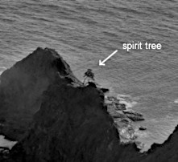
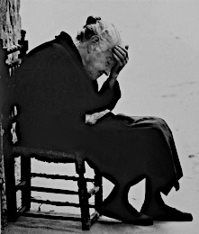

For ten years have I laboured to assemble into being what you are about to read now. I hope you find it as delightful to read as I found demoralising to write – even though I didn’t really write it. You see, I prefer to use the phrase assemble into being rather than the word write, because what you are about to read now was for the most part already written. All I did was put it together.
Put together what, exactly? Exactly what is this assembled thing you are reading? There may be some qualification required regarding that point also. To be honest, I don’t quite know what this thing is. It’s not a novel, and it’s certainly not a biography. I suppose you could call it a diary or a memoir, but it’s not just a diary or a memoir. You could call it a manifesto (if you’re feeling adventurous), yet neither is it merely just that. I believe it’s more of a compendium – from the Latin compenso: to ponder, weigh, or bring together to a state of balance or completion. That’s the intent anyway.
I’ve heard it mentioned in certain select circles that some of my politest critics have, according to many, more accurately described this work as “the longest suicide note in history”. At first I was somewhat offended by this rather mean, dismissive and intentionally hurtful appraisal. However, now that I’m drawing towards the completion of this...whatever it is, I must say I’m much more inclined to agree with them. This thing I so grandly refer to as a compendium will quite literally be the death of me. It will never be published in my lifetime and I’ll never profit from it, neither financially nor in any other sense, quite the contrary. So why am I even caring to assemble this thing into being, you may ask? Good question. I have no idea. All I know is all I can think about now is completing it, even if it does kill me.
But none of that’s any of your concern. You’re probably more concerned with the actual contents of this compendium. Before we get to that, however, I must first take a moment to discuss structure. If you manage to make it past this introduction, what you will then or then not read are 74 interrelated pieces that stand on their own as individual works of supreme artistic greatness, yet when read together, or as part of the whole, take on extra layers of multifarious meaning and even more supreme artistic greatness. At least that’s the intent. They are arranged chronologically, for the most part, beginning in northern Colombia in 2014 and ending in some place yet to be determined in 2024. ...I have lived and worked in quite a few different locations over the past ten years. However, it is important to keep in mind that these pieces say more about my mental state while living and working in these locations more than they do about the locations themselves. Sorry, I’m not much of a travel writer. I just can’t focus on that kind of thing, and nor do I ever care to. I have far too many personal, professional, political and creative problems to attend to. Understandable then, that as far as the subject matter of these pieces is concerned, I have for the most part focused my attention on just that: my problems. And, given that I do have so many problems – so many I can barely function at times – I find it very difficult to take an interest in anyone else’s problems. I could really care less about other people, to be quite honest – but for their interactions with me, which are usually the source of all my problems. Consequently, most of these 74 pieces concern my “inner life” and the severe harm done to me as a result of all these problematic interactions.
That wasn’t really an in-depth discussion about structure, I’ll admit. But that’s about as much as you need to know for now.
I should also explain that this compendium was assembled in a state of perpetual solitude. This was not done by choice. I do not always prefer to be alone. However, I’ve now become so habituated to it that I simply cannot conceive of any other way of being. And when I say alone, I don’t just mean unaccompanied or not surrounded by other people; I mean truly alone, isolated in thought, imprisoned in my own mind, locked down in perpetual psychological solitary with no hope of release and no escape. I know that may sound rather exaggerated, yet it is the truth. I am essentially dead. The psychological effects of a lifetime working in the advertainment industry are long-lasting and profound, usually either resulting in a will to violence (as is most often the intent), or a total shutdown of personality or true self. For the moment, I have opted for the latter. However, I do expect this to change in the not-too-distant future.
Not that I have much of a future, or ever did. I was cursed from the moment of conception. I was raised in a neofascist whorehouse by neofascist whores and rapists. That’s why I had to approach this work from the perspective of a lunatic, otherwise we all would have ended up dead long ago and I would never have been able to assemble anything into being. That may sound like so much melodramatic hyperbole, however I assure it is the truth. I was raised by neofascist whores and rapists.
If you do manage to make it past this introduction, you’re bound to see that word crop up from time to time in various forms: neofascist, fascist, Nazi, far-right terrorist, right-wing extremist, etc. [tp. style. offensive. I suppose it is just a diary. "I must hold on here, it is the only place I can." plain old ordinary style; could have been written by any semi-literate peasant 200 years ago; not much art in it; self-indulgent polemical doofish drivel most of it....lucky if I finish a paragraph a day. I'll never finish this at this rate, let alone any of the other junk. I'm amazed I've been able to write anything at all, staring into time's end like a deranged lunatic. And all for nothing. Traded my dignity for a good story, and it's not even that good. Traded my soul for it. Faustian bargain. Considering where I started from, there's not much else I could have done. People don't want things to make sense as a whole. They want a segmented and disparate collection of events they can assemble into a whole any which way they please. They want to make up their own sense as a whole. They don't trust you to do that for them anymore -- and with good reason. They prefer to redesign their own truth, whether it's true or not. Or have a corporate machine do it for them. paying for the sins of my forebears. a work of isolated conscience. trying to understand the events of the past decade. it took me ten years to get over America. why the way the world is the way it is now. it was all prefigured then. for whom literature is merely a repetitive series of metaphors and similes. so much easier if were writing for a small circle of literary geeks.]
[I started writing this introduction over two years ago....feels like yesterday. Writing destroys time....on game: I never thought I'd ever live long enough to recall a memory from twenty years ago and know I was still an adult back then (kind of).]
[int. bk. Who is the I? mx. Dresden name notes. "I'm not sure why they gave him that name. Maybe they thought it was funny, because he didn't understand?" A failed returned failed self-exile. I even failed at self-exile and the return. What a loser. Perhaps because I chose to self-exile myself in the land of my oppressor? Could be. Tragedy. We don't read it to pick up a few tips on how to avoid it. We read it to know that it will happen to us all, eventually. li. audience. not writing for an audience. writing for myself.]
Audience? Who am I writing this for? Since this will never be published, and since I’ll never earn any money from it, I could care less. I don’t care about you, reader. You change over place and time, I don’t – and neither will this. I create my own audience. I do not cater. And I’m not running for public office here. I really don’t care what you think of me, or if you agree with me. I’m not trying to win you over. Remember, I am essentially dead.
[int. influences. non-influences first. that I find nothing of any value in contemporary literature. which is incredibly convenient, since then I don't have to read any of it. saves a lot of time. irrelevant linguistic estrangements that no one reads; that no one can read. and if they do it's immediately forgotten. All they ever write about are their identities. Who cares? They're all going to die and no one will remember them. The dead do not remember, and the forgotten have no identity. I think what we need is a new form of precarity aesthetics that more authentically expresses the prehensive modal tactilities of the disruptional contingencies that invariably predominate in a proto-deconstructed post-post-modern society -- using only emojis. excessively wordy litcrit. that says nothing we didn't know before. over-explaining the obvious. why go to all that effort? To impress the faculty? I'm way too lazy for that. I'll therefore try to stay off all those big impressive-sounding philosophical words like ontology and epistemology (the meanings of which even philosophers can't agree on, let alone literary critics and poets), and instead labour on sorrily with this unapologetically ordinary and artless form of self-indulgent polemical doofish drivel. alt. dull and pedestrian forms of writing that win literary prizes: going shopping with your mother in Japanese department stores. example: "My mother had said that she wanted to buy something for my sister’s children, and so the next day we went to a large department store where she spent some time carefully browsing through the aisles. In the children’s section, she lingered between a gray shirt and a blue one, between a large backpack and a small. She held each one up to me as if I were a mirror and asked what I thought." I wonder which colour shirt and which size backpack she chooses. The suspense is killing me. Or is it the dullness? Who gives a flying fuck about your mother or what colour shirt she buys? This planet is dying! We're all going to die and you're writing about shopping with your mum? Fuck your mum! Your mother is boring, and so is your writing. On the other end of it: The poetics of Resistance extend no further than the faculty [etym.]. Eg. I mean it's good for me. I get to read some abstruse words I don't get to see very often and look up some interesting etymologies and all of that kind of stuff, but not sure how relevant it is to anyone else. All literature not immediately rooted in the direct experience of resistance is anachronistic diversion. started reading that novel that just won the Booker prize. I couldn't even get past page two it was so banal. the novel is dead. it died with Kafka. That's why he never finished Amerika. Would have been racist anyway. novels are merely draft movie scripts nowadays. window dressing manikins. sock puppetry. the "pursuit of secondary characters". I'm the only manikin in this window. no distance. You'd think any novel that begins with a quote from Ecclesiastes and Bertolt Brecht would have to be good, wouldn't you? Tired of reading about people's tired old relationships with other people, or trite poetic metaphors of how a ship's wake is just like human consciousness, or those quaint ontological epistemologicalisms of how nothing is in fact a thing in itself. What does it matter if we're all dead?]
[influences 2: influences . rootlessly aware. si. idealised girlfriend. isolated and shielded from the crude political reality that is the common experience of the masses -- whether via the conscientious application of indirect subtle phrasing or merely the privilege that privilege itself affords. Change my name to Felix, just for her, and learn to speak proper French and German.]
["my powers in their entirety were so slight that only gathered could they halfway serve the purpose of writing." -k, 4th notebook.]
[style: You'll notice much reliance on subordinate clauses and simple monosyllabic operators: and, if, then, so, not, but, yet, etc. 36. on lang. If you search for any word or phrase in English the first result is usually a product, a movie, a TV show or a pop song title. Perhaps I should switch to writing in another language? "profanities", "potty humour" ln. parade of horribles.]
[pol. Like when moneyed-up patronising advertainers push progressive political causes and end up causing more harm than good. What would they know? They don't live the real. They see life as war. They always do. It’s the only way they can compete against anyone they can’t compete against: by destroying them via any means available. There is no one to compete against this time. Nothing to destroy. The war is over. I lost. They’ve completely destroyed me. Now I have everything I need: nothing. I chose the lead casket, but when I opened it there was nothing inside...."A person who has no diary is in a false position in the face of a diary."]
[muse thing. All I need do now is arrange another meeting with Clover. Clover (probably not her real name) is my muse. She is my light, my life, my soul! She is my guide to heaven! Clover! Come, Clover! Sing, Heavenly Muse! Sing of a time long ago when... On second thought, I don’t need to invoke a muse, not even Clover. I’m quite capable of writing this thing on my own. In any event, I think I’ve had more than enough help from other people in the past. What they say about me will end up on the garbage pile of history, along with all that other kitsch commercial trash they keep pumping out. What I say about them will live forever – longer than any bronze statue, or faceporn or x-twatter post. Reality is like that: the truth is always preferable.]
[spirit. im. negativity. not a justification of self. This is like writing about literal death...about as remote and alien to most. If they can't be honest with me about reading me, then how can I be honest with them about writing about them? There is no fine literature without nationality, some self-important literary type dude once said. Well, that explains it then: I have no nationality. xe 38.]
[A worthless endeavour. It’s a worthless and pointless waste of time that’ll probably end up killing me, yet I am compelled to do it. And it doesn’t matter what I write. Just the fact that I’m writing anything at all they see as a threat. ...They don't inhabit the same ordinary spheres of existential being we're all confined within. They live in their own hyper-self-glorified alternate reality where the truth can be designed and marketed just like anything else...as soon as it becomes profitable to do so. That's all you have to do: design and market the truth. journalists replaced with advertainment industry marketing and PR. If enough people believe something is true, then for all practical purposes it is true. When the I becomes We, yet we still use I] I'm glad I never did anything when I was younger. All I did was suck it all up. Now I'm regurgitating it all for my young, of which I have none.
Yes, I have no juvenilia, so here it is.
Narrm, Australia, 2024
The Speech of a Man Saves Him?
For all the shipwrecked sailors
During the evening of April 14th, 2014 I witnessed a lunar eclipse, a so-called Blood Moon, from the parched desolate hills surrounding a small northern Colombian fishing village. I watched, mesmerised, as the Moon became saturated with an ominous crimson glow and then sank slowly into the warm Caribbean sea. On the following Wednesday I decided to visit the town of Aracataca, the birthplace of Gabriel García Márquez. On the very next day, the 17th, Márquez died at the age of 87 in Mexico City.
I am not a superstitious person; however, I’m always somewhat perturbed when obscure coincidences like these occur. They tend to rattle my rather stalwart faith in the profane mediocrity of everyday causal reality. I usually dismiss them as mere quirks of chance – rare confluences of disparate events that serve as necessary counterpoint to the predictable and the mundane. Regarding these unusual occurrences as anything other than what they are invariably invites the typical indulgences of a rarefied ego – the vulgar and narcissistic superstitions of a personal encounter with fate or destiny. Rest assured, I have not succumbed to any of those fantastical maladies of spirit. I do, however, sense a distinct purpose behind my recognition of these events as significant, but perhaps not in the manner one would ordinarily expect.
Now that we’ve got all that superstitious nonsense out of the way, I’d also like to dispense with any notion that I’m a Márquez fan, for I am not. I just finished reading 100 Years of Solitude (Cien años de soledad), and while I must admit it is a beautifully crafted novel, and fully deserves its reputation as one of the most exquisite expressions of human tragedy in any art form (or language), I did find some of the literary devices that define Márquez’s genre somewhat kitsch and mawkish. For me, “Magical Realism” is now merely a hackneyed marketing slogan used to pitch overpriced Colombian tourist destinations to rich coked-up gringos.
I was, however, strangely affected when reading about Mauricio Babilonia and Meme Buendia. Their story is strikingly similar to an episode in my own life that occurred just recently. I don’t want to go into too much detail regarding this just yet, since I’m still somewhat devastated by it. But it should be enough to state that my interest was piqued when Meme dreams about Mauricio saving her from a shipwreck, yet she responds with rage not gratitude. The dream serves as a symbolic vignette, not only for Meme’s immediate fate, but also for the entire novel. It also harks back to one of Márquez’s earlier works, Story of a Shipwrecked Sailor (Relato de un náufrago).
First published in El Espectador in 14 instalments, Story of a Shipwrecked Sailor concerns the real life misadventures of a Colombian seaman after being washed overboard and drifting on a raft for ten days. The government at the time made up some bullshit story about there being this massive storm. But after being rescued and made into a celebrity, the sailor later revealed there was no storm at all and that the vessel was dangerously overladen with ill-stowed contraband – white goods: washing machines, refrigerators and the like. The sailor was washed overboard when the ship listed excessively to one side in high seas. Once the truth was published, the government responded with rage, not gratitude. Márquez was forced to leave Colombia and El Espectador was shut down.
Márquez uses the shipwreck reference in 100 Years of Solitude to further accentuate the theme of solitude, while also introducing solitude’s ever-attendant companions, pride and rage. Meme responds with rage when she is rescued because she has been stripped of her pride; her vulnerability is exposed as an uncomfortable truth she’s forced to confront and accept. By Márquez’s account, and in contrast with the Colombian government, Meme confronts her truth quite well (perhaps too well). Yet despite Meme’s best efforts, all her hopes – magically realised by all those yellow butterflies – are inevitably exterminated by the traditional evils of society; they die in a dead heap of dead yellow butterflies. Márquez was expressing the cruel and obvious truth that you can never truly experience the true solitude of love, and no matter how hard you try you’re going to get fucked from behind no matter what, because there’s always some evil interfering sanctimonious cunt with a gun willing to hunt you down and shoot you in the back.
My interpretation may not be to everyone’s liking. This is usually because the people who do not like my interpretation are the evil interfering sanctimonious cunts, those motivated by self-righteous enmity, greed and power with every means at their disposal to disguise the truth any way they see fit – the traditional enemies of anyone seeking truth.
This, of course, brings me back to the Blood Moon. According to the astronomers, there’ll be four Blood Moons within the next few months, all occurring on Jewish holidays. Some doomsday joker wrote a book about it, and now the Israelites are all expecting the world to end. From my limited understanding, the Blood Moon is associated with danger from great heat: drought, flames of war, and, to put it plainly, female heat (menstruation). But I believe these Blood Moons have little to do with Israel. For historical, and other reasons, I believe they have more to do with Egypt – at least in spirit. And the fact that all four of them occur on sacred days of the religious calendar makes them extra special and even more hermetically delicious.
Egypt also happens to be the source of the first ever written record of foreign investigative journalism. Penned during the Middle Kingdom period (between about 2000 BCE and 1700 BCE) and titled Tale of the Shipwrecked Sailor, it tells how a young sailor is marooned on an island and then molested by a giant snake, who then proceeds to lecture the sailor on the importance of home and family. The snake gives the sailor many valuable gifts, ensures he is rescued, and then the snake and the entire island disappear into the sea forever. The sailor is also told how the snake’s family of 74 were all killed by a “falling star”, including the snake’s hot young daughter. I believe this tale has special significance for present-day Egypt. I also believe Márquez knew this too, especially during the dementia-induced delirium of his later years – which really are the best years of one’s life.
Márquez was a journalist. He lived in two of the most dangerous countries in the world to be a journalist. But according to popular consensus, he never really did anything of any real significance for journalists or journalism. Márquez preferred to hang out with celebrity gangsters (politicians) of less than reputable repute and discuss politics. Yet he was a talented writer, and his books have forever scarred me. For this reason I feel it incumbent upon me to make up for Márquez’s failure and somehow involve him, albeit posthumously, in my mission to restore the freedom of the press in Egypt. I’m sure you’ll all agree that this is the most rational and logical approach to take, given the obscure nature of these facts and their dubious relations to one another – not to mention the title of this piece.
To the Egyptian people I have this to say: Release all imprisoned journalists immediately. Bad things will happen if you do not.
And to Abdel Fattah el-Sisi I have this to say: “O son, how many bodies have we to pass through, how many bands of demons, through how many series of repetitions and cycles of the stars, before we hasten to the One alone?”
Santa Marta, Colombia, 2014
The Speech of a Man Saves Him Not
For all the miserable whores
I had been in all my circumstances a memento to those who are touched with the general plague of mankind, whence, for aught I know, one half of their miseries flow...
— Daniel Defoe, Robinson Crusoe
During the evening of October 7th 2014 I suffered a history attack. A powerful surge of memories from the six abhorrent years I suffered in New York city flooded my consciousness like a raging tidal wave of human effluent. I just can’t seem to forgive nor forget those who viciously sought to destroy me with their constant spying and harassment – which probably means I’m forever doomed to relive the past for what’s left of my short miserable existence upon this godforsaken Earth. I am, in all truth, a ruined person, and I sincerely doubt I shall ever recover from the damage done to me, ever.
If you need to ask why I’m now such a bitterly miserable misanthrope, preferring a tedious solitary life of complete isolation and decrepitude, I merely need highlight the countless injustices done to me through the malicious and invasive subterfuges of my former “friends” and “family” – the vindictive gang of corrupt opportunists through whose interference into my private affairs am I now laid waste. In this respect, I find I now have much in common with similarly oppressed and persecuted peoples throughout human history. And verily it is a sad and regrettable history human beings have made for themselves during their short ignominious reign upon this miserable whore of an Earth. In all respects, human beings are the most dangerous animals that have ever existed, both to themselves and other life forms. Given this fact, my decision to remain permanently detached and aloof from them is perfectly rational and justified. No more sticking my head in the crocodile’s jaws for me, thank you very much.
I must, however, explain that I never speak the truth, and especially not to white people. This is because I really don’t trust white people. And when I say “white people” I’m not talking about skin colour exclusively. Yet since I’m now virtually colour blind it’s practically impossible for me to distinguish friend from foe – not that that there ever is much difference between friend or foe. Whenever I have spoken the truth, in the past, I’ve usually been deliberately misinterpreted and persecuted. Therefore, have I ever resolved never to speak the truth to anyone ever again. I do, however, always tell the truth when I write. I shall never lie to you, my whores. Ever! And you can also be absolutely sure I will never betray you. For although I am no great admirer of humanity, I am forever obliged to serve those to whom I have forever pledged my life. Remember, we are one half of me. Always.
Cumaná, Venezuela, 2014
The Man of Speech Saves Him Not
For all the captive captains
During the evening of April 4th 2015 I took a pleasantly aimless stroll through the streets of Caracas, Venezuela. I ended up at the Parque el Calvario, El Silencio – a 17 hectare oasis of lush, manicured greenery, plazas and monuments atop El Calvario hill.
I was immediately transfixed by the eyes of Hugo Chávez, which stared at me intently from the huge mosaic stairway that leads up to the park. I purchased some plantain chips from a woman selling snacks by the side of the road and munched them contemplatively as I prepared to scale the 100 or so steps to the top. As I began my ascent, my plan was to pass somewhat symbolically through the eyes of Chávez as I did so. As I neared the base of the stairway, however, I discovered that the area had been cordoned off, so I was forced to go around.
Upon reaching the top of the stairs, I walked along a series of pathways through the tranquil silence of the park until I came to a statue of Guaicaipuro. Guaicaipuro was a Cacique (indigenous American chief) of the Teques and Caracas tribes during the 16th century. According to legend, he united all the local indigenous tribes in an uprising against the invading Spanish. He managed to keep the Spanish out of the Caracas valley for many years, but he was eventually betrayed by one of his own. He was killed by the Spanish after they burned down his house in a surprise attack. I hate irony, but the word Cacique derives from the Taíno word kassiquan, which means “to keep house”.
The statue itself is quite intimidating – a massive, bulging bronze body of spectacular musculature. Guaicaipuro is depicted in the act of pouncing on his enemies with extreme ferocity, spear raised in one hand, tomahawk in the other, screaming with intense rage. The statue gives the impression of being miraculously detached from its surroundings – suspended in mid-air, defying gravity, death and time – while anchored to its base solely by its left foot.
The small plaza where the statue is featured affords a commanding view of the south-eastern part of the city. I stood for a few minutes and gazed at the motley assorted patchwork of apartment buildings, which seemed to vie with one another for prominence like a variegated cubist forest of beige-grey concrete oblongs. I tried to imagine what this same scene must have looked like during Guaicaipuro’s time.
I proceeded up the hill along the path until I came to a plazoleta garden full of ferns and fuchsia-coloured flowers. At one end there was a fountain with no water flowing (here I met my contact and we exchanged keys), at the other end were steps leading up to the main plaza. There wasn’t much else to see in the plazoleta garden, so I headed on up to the main plaza. There I encountered a grey cat sleeping on one of the benches in the late afternoon sun. I sat down beside her and introduced myself. She seemed rather perturbed by my interruption, but slowly began to respond to my gentle caresses. I told her she was a good kitty cat. She seemed to appreciate that.
After bidding farewell to my new-found feline friend I made my way over to the small chapel at the northern end of the plaza, the chapel of Our Lady of Lourdes – a quaint and picturesque structure, like something out of a fairytale, yet utterly vacant inside. There was a bust of Miguel de Cervantes in the small garden beside it. I pondered over this for some time, attempting to discern the connection between Cervantes and the Lady of Lourdes.
“Our Lady of Lourdes” is the title given by Catholics to a 14-year-old peasant girl, Bernadette Soubirou, who experienced a series of Marian apparitions in Lourdes, France back in the mid-19th century. At first, Bernadette referred to her visions as either the “little lady”, or as simply Aquéro, meaning “that thing” or “it”; but on subsequent visitations the apparition revealed that it was in fact the Immaculate Conception. Bernadette described her “little lady” as ‘dressed in white, wearing a white dress, a blue girdle and a yellow rose on each foot.’ Bernadette’s visions were at first dismissed and she was ridiculed and punished. Upon revealing that her Lady had claimed to be the Immaculate Conception, however, she was soon vindicated by the Catholic Church. Lourdes then became a site of pilgrimage and miraculous healing.
However unlikely and impersonally irrelevant as it may seem, I’d like to think that whoever decided on the contiguous placement of the Cervantes bust was perhaps making an oblique associative reference to Lela Zoraida in The Captive’s Tale from Don Quixote (Part I, Chapter IX). This intercalated story is told by Ruy Pérez, a former captain in the imperial army of Philip II, while Don Quixote is staying at an inn with other guests. Ruy Pérez was captured by the Turks when he abruptly leapt aboard an enemy ship and was cut off from his men. He was held captive as a slave for many years. While imprisoned in Algiers, he was delivered from enslavement by the daughter of a rich Moor, a beautiful veiled woman named Lela (Maria) Zoraida. She experienced visions of the Virgin Mary, which she called Lela Marien. Lela wished to immigrate to Europe and convert to Christianity. After first betraying and deserting her father, Lela provided Pérez with money for a ship to sail back to Spain. She also offered him her hand in marriage.
After satisfying myself with the pointless far-fetched irrelevancy of this explanation I continued on my way up the hill. All was silent but for the distant sound of children laughing and playing. I followed the source of this disturbance until I came to a playground full of children. To the left of the playground was an entrance to a spiral pathway that wound its way up to the very top of the hill. I walked along this spiral pathway until I emerged into an oval-shaped plaza with a statue at its centre. The statue was mounted on a six-tiered pedestal surrounded by six palm trees. Three children were sitting on the pedestal with their legs dangling over the plaque attached to it. Between their shoes I could just make out the name on the plaque: Simón Bolívar (hardly surprising). I sat down on one of the benches and smoked a cigarette. I began to think about when I was ten years old and the first time I ever skipped school. It was the same day mandatory tuberculosis vaccinations were being administered.
There was now a slight chill in the air. The weather had been perfect all day, like most days in Caracas, but as I made my way down the hill I could see a swift mist descend and accumulate into dense clouds, which then began to blanket the mountains north of the city. Recalling the fact that I was now living in a country with one of the highest murder rates in the world, I decided to make my way back before it became too dark.
While walking back through the plazoleta, I noticed that the fountain was now flowing with water. After my ponderous mental meanderings through matters of a Marian nature whilst contemplating the chapel, I was somewhat tempted to regard this seemingly miraculous event as some kind of symbol or sign of providential beneficence. Until, that is, I realised that the lamps in the park were now illuminated. I then reasoned that the fountain’s water pump and the park lights must be connected via the same electrical switch.
I passed by a police guard post on my way towards the park exit. There were ten or so officers milling about speaking in subdued tones. There was also a pack of what I assumed to be stray dogs, which all began to bark at me and follow me down the hill. One of the more aggressive of them began to snap at my heels.1 I paused for a few moments and gave him a swift back kick – but just to scare him off. The heel of my shoe barely grazed the skin of his teeth.
After successfully fending off the mongrel horde, I concluded my walk in the park by descending the Chávez mosaic stairway to the street below. Despite the stray dog incident, I felt so much more relaxed and mindful of my surroundings. It’s always amazed me how my mood is always so elevated so effortlessly just by being around trees for an hour or so. But this mood did not last long.
I slowly made my way back to my building through the fading light whilst making wistful yet determinedly nonchalant recognition of the many beautiful women I saw standing in line to buy toilet paper. I have come to appreciate, through the supreme benefit of direct experience, that many of the things people say about Venezuela are for the most part not true. Yet unfortunately for me, the legendary beauty of Venezuelan women is not one of them. I find it bitterly ironic, yet predictably typical, that this is indeed the case; my appreciation of which has only ever become more apparent after resolutely avowing a life of permanent celibacy and solitude. This is a vow I have made to myself, not to any other higher powers (not that there are any), which makes the abject renunciation of all personal relationships even more difficult to bear. Priests have their faith and sacred duty – which supposedly assuages their desire, pacifies their hearts, and holds them true to their vows – all I have are the festering open wounds of momentous enmity and a life of endless betrayals.
Whilst absorbed in these self-piteous reflections of self-inflicted anguish, and purely by chance, I happened upon a church: the Iglesia de San Francisco. Coincidentally (or not), this is the same church where Simón Bolívar was bestowed the title “El Libertador”. It is also the same church where his much-belated funeral was held, after his body was exhumed from its grave in Santa Marta before being interred at the National Pantheon of Venezuela.
Since it was Holy Saturday, or “Black Saturday”, there was a mass being celebrated. I sat for a few minutes in one of the pews and listened to the priest’s voice, which impregnated the air with a densely rotund resonance from the loud speaker just above the altar. When he wasn’t speaking, the sound of his amply amplified nose-breathing reverberated throughout the interior of the church with an almost comparable volume. This sound had a strange hypnotic effect on me. I felt as though I was being lulled into a state of mindless stupefaction by his rhythmic and chant-like nasal respiration. To prevent myself from succumbing to an utter annihilation of consciousness, I decided to explore the interior of the church somewhat.
The interior of the church was bright, open and surprisingly unoppressive. The understated and unobtrusive style of the colonial-era architecture (thankfully still preserved within its neoclassical facade) seemed to offset and accentuate the baroqueish altar piece and reliquaries with an austere yet oddly comforting solemnity. I made my way over to the small adjacent lateral nave. There was an old woman seated just before the altar deep in prayer. She was wearing a long black dress and a lace shawl over her bowed head. I couldn’t see her face, but I could tell she was aware of my presence. I stood there for a few moments and listened to her faint murmurous prayers. After a while she stopped praying, kissed her Rosary and bowed her head even lower. I felt like I was intruding on her solitude, so I left her there alone in the silence with her unheard prayers. All was dark as I emerged from the adjacent lateral nave. All the lights had been put out and the Paschal candle had been lit. The congregation all then began lighting their candles from it. As soon as all their candles were lit, and we were all bathed in the warm communal glow of soft yellow candlelight, I departed.
I walked back the way I came along the Avenida Urdaneta, all the while thinking out loud about how peculiarly unsuited I am for the life I have chosen to lead, and how irrevocably estranged I am from the common throng of humanity. I also thought about how I will never experience love or happiness and how empty and meaningless my life has now become. I then became thoroughly disgusted with my morose and indulgent self-pity. I recalled the fact that despite the wretched singularity of my piteous plight, I am much better off than many others who share a similar fate – and I really should be very grateful for this fact. I then reminded myself that whatever hardships I have endured have, for the most part, been entirely self-induced for a very particular purpose and that to rue the circumstances attendant upon my life choices is a pointless regressive feat in self-defeating futility. I also considered the alternative to the life I have chosen, which would have inevitably led to even greater tribulations and endless self-loathing. I cannot, however, escape the feeling that I am incapable of suffering the state of loveless isolation I have elected to endure for the rest of my life. And yet I know I must. There is no escape and no going back.
Upon arriving back at my building I re-read the The Captive’s Tale from Don Quixote. I then noted that the chapter immediately preceding it is titled Don Quixote’s curious discourse about arms and letters. I read this chapter also. In one of those intriguing moments, which evince a perspicacity of rational intellect far in excess of that which one would ordinarily expect of a self-deluded madman, Don Quixote expounds a succinct and seemingly cogent argument which examines the virtues of a military versus a scholarly career. Not surprisingly, Don Quixote makes it quite evident, even before beginning his argument, that he is firmly convinced a military profession is of decidedly higher virtue:
Away with anyone who gives letters the preference over arms, for I say to him, whoever he may be, that he does not know what he is talking about.2
The topos of arms versus letters is an ancient one, which underwent a revival of interest during the Renaissance thanks to a popular commentary to Petrarch’s Trionfo by the philosopher-physician Bernardo Ilicino. It is more than likely, however, that Cervantes was more influenced by Francisco de Guzmán’s Digressión de las armas y letras from his Triumphos morales, which is a didactic imitation in verse of Petrarch’s Trionfo. Francisco de Guzmán was one of those mediocre 16th century authors who were quite popular during their own time but almost entirely forgotten today, unless they’re mentioned as a source of reference or inspiration for writers of a more enduring worth or esteem. Guzmán, like Cervantes, was both a poet and a soldier, and both seemingly accorded more honour to the exercise of arms over letters. However much this may offend our enlightened modern sensibilities, from a strictly literal reading of Don Quixote’s curious discourse it’s difficult not to believe that Cervantes is expressing his own opinions on the matter; the sense of which is made especially disarming when Don Quixote makes the logically counter-intuitive statement that “el fin de la guerra es la paz” (“the goal of war is peace” – echoing the idiotic dictum, Si vis pacem, para bellum), and the equally dubious assertion that “mesmo es decir armas que guerra” (“to say arms is the same as to say war”). But both of these sentiments are traditionally concordant with what a chivalry-besotted, middle-aged man bent on re-enacting the romantic legends of a bygone age would tell himself in order to seemingly justify a fallacious belief in the virtue of violence.
Both Guzmán’s and Cervantes’ definition of letters is a restrictive one, in that it appears to be solely specific in its application to the practice of law (“distributive justice”), whilst explicitly excluding “divine letters”, and which, we must hopefully assume, must also exclude “humane letters” (literature). Without making such a hopeful assumption a gaping hole opens up in the argument in defence of the superiority of arms over letters. For it is only through the application of humane letters that Don Quixote’s exploits, together with his desire for fame and social advancement, are realised. It is through the word, not the deed (strength of arms), that Don Quixote becomes the embodiment of the chivalric ideals he strives to achieve.
The inclusion of the arms versus letters discourse in Don Quixote was perhaps also inspired by the then-current rivalry between a new nobility becoming more influential at court through intellectual pursuits (many of whom were of converso origin), and a privileged caste of aristocratic military types terrified of losing their ill-deserved positions of power and prestige – the perceived threat posed by Humanism. Cervantes characterises this threat in Don Quixote in the person of the mocking Bachelor, Sansón Carrasco (the man of letters in the guise of The Knight of the White Moon), who vindictively triumphs over the strength of Don Quixote’s errantly misguided arm. Yet, paradoxically, Carrasco vanquishes Don Quixote with arms, not letters. And, as though apparently vindicated by Don Quixote’s epiphanous renunciation of knight-errantry on his deathbed, it is also Sansón Carrasco who writes Don Quixote’s epitaph; the final words of which stand as scant justice to our most Ingenious Nobleman, Mister Quixote of La Mancha – “he lived crazy and died sane.”3
Cervantes’ own military experiences mirror the same paradoxical misfortunes as those of Don Quixote’s. The Holy League’s victory at the Battle of Lepanto (1571) – in which Cervantes was shot in the chest and lost the use of his left arm – was of predominantly symbolic and emotional importance, which outweighed any military or diplomatic advantages. The Ottoman fleet recovered quickly after the defeat, and the strategically important island of Cyprus remained under their control. And although Tunis was captured in 1573, it was lost again during the following year. The Grand Vizier Mehmed Sokullu, Chief Minister to the Sultan of the Ottoman Empire, was reputed to have remarked while discussing the Battle of Lepanto:
In wresting Cyprus from you, we deprived you of an arm; in defeating our fleet, you have only shaved our beard. An arm when cut off cannot grow again; but a shorn beard will grow all the better for the razor...
It would be difficult to deny the fact that Cervantes’ military career had a more profound impact on the history of Western literature than any of the battles in which he participated have had on the military or political fortunes of Europe. And it would be equally difficult to deny the fact that Cervantes would not have become the writer he became without his military experiences, nor without the five years he spent as a captive in Algiers. In this respect – as a source of arduous and traumatic experiences inspiring and motivating the creative urge – the victor in the arms versus letters debate is clearly arms. In every other respect, of course, the debate is pointless and futile. The virtues of both disciplines should be determined through a full examination of their effects, not by a comparison of any one of their inherent or intrinsic qualities. Yet despite the futility of the argument itself, it is my firm contention that the arms versus letters debate serves as the central ideological fulcrum upon which Don Quixote’s fortunes pivot.
Throughout Don Quixote, especially in Part II, it is often remarked upon by Sancho and others how wise, prudent and insightful are Don Quixote’s opinions, on any and all of the topics he cares to discuss – from choosing a wife, to governing a city. Yet when it comes to the baser, more practical matters of life, all of Don Quixote’s good sense and sound judgement is eclipsed by his vainglorious, delusional beliefs in the fantastical ideals of chivalry. Of course, Don Quixote’s motives are, for the most part, altruistic and honourable. But owing to a choleric temperament inflamed by the fiery passions of an overstimulated imagination, all his otherwise pragmatic virtues are overshadowed and obscured by the lunatic obsessions of his knight-errant windmill tilting.
Sancho, who is the complete opposite of Don Quoxote at the beginning of the novel, begins to assume some of Don Quixote’s characteristics towards the end. But Sancho has no stomach for arms. His aberrant excesses find expression through letters, oddly enough, via the overuse and misapplication of proverbs. Sancho’s aversion to the practice of arms, however, does not appear to hinder him during the government of his “island”, despite the Duke’s warning that ‘in the government of the island I am giving you, arms are as necessary as letters.’4 Sancho, although seemingly motivated by greed at the outset, proves himself to be a wise and just ruler. It is only on account of the cruel pranks played on him by the Duke and Duchess – culminating with the mock battle – that Sancho’s government comes to an abrupt end.
As a reluctant yet staunchly avowed pessimist, I’m inevitably obliged to interpret Don Quixote’s and Sancho’s fateful misadventures as sad comedic parables of the futility of idealism in the face of the gaunt uncompromising primacy of militarism. In the end, arms will always triumph over letters. The ever-expedient recourses of deceit and aggression – although more often than not also employed in the practice of law – have few if any countermeasures other than those of an exact like of expediency. I suppose this is why people usually don’t erect monuments to Men of Letters – unless they win wars, which they rarely do. It is a lamentable yet perfectly understandable fact that the victorious Man of Arms still occupies pride of place when a collective reckoning is made of the monumental merits of valour and virtue.
My apologies. When I first started writing this piece I had no idea I would end up discussing my thoughts on Don Quixote in such detail. While re-reading and thinking about this novel, I’ve come to appreciate it in an entirely new light. The first time I read Don Quixote I really didn’t regard it as anything more than a trivial, long-winded comedic romp by a roguish wag of a mediocre poet. I now read Don Quixote as a profoundly paradoxical, half-veiled semi-nihilistic anti-war statement by a disillusioned and impoverished, maimed ex-soldier. And I now fully understand why Faulkner is said to have re-read it once a year. Don Quixote whimsically portends the collective fortunes of us all – the inevitable sad fate of this delightfully mad prosaic farce we laughingly call humanity.
Of course, I use the word mad imitatively in a purely vernacular sense. Don Quixote’s profound state of risible sadness does not arise from him truly being mad. He allows himself to see what his imagination prefers him to see, which is an act of conscious will, not madness. If it were mere madness, Don Quixote would be mere tragicomedy. But Don Quixote ventures far beyond tragedy and comedy into the rarefied realm of remaking the world as he sees fit (the world as it should be), regardless of how seemingly aberrant its application, but which most people usually regard as madness. In the end, especially towards the end of Part II, it would seem that Don Quixote does in fact succeed; he eventually manages to convince us that knight-errants probably should exist in the world. But by that stage, thanks to the interference of Carrasco, it’s far too late for Don Quixote. The crushing blows of cruel reality (the world as it is) extinguish Don Quixote’s spirit and finally convince him of the absurd folly of his errant ways. I, for one, am in complete agreement with Don Antonio when he chides Carrasco with ‘God forgive you for the offence that you’ve committed against the whole world in attempting to restore the funniest madman in it to his senses!’5 For it is the very restoration of Don Quixote’s senses that causes his death. And there is no intercession or deliverance for our poor sad-faced Knight. The one force that could have saved him, Love – symbolised by the disenchantment of Dulcinea – remains a veiled elusive phantom that vanishes into nothingness, together with Don Quixote’s vanquished spirit.
I must again apologise for my rather prolix Quixotic digression, and for deviating so widely from the topic I originally intended to discuss. But I believe it necessary to at least try to convey some of my thoughts on what may prove useful at a later date, however ill-conceived and artlessly expressed. I shall now return to my original point of departure. The point being this: that after re-reading the The Captive’s Tale and Don Quixote’s curious discourse about arms and letters, I slowly began to understand why I have been so senselessly blighted with a life of interminable sorrow; because I have been forced to choose arms6 – even if it is just one arm, and even if that arm is only capable of wielding letters. And, just like Don Quixote (but unlike Ruy Pérez and Simón Bolívar), and however maudlin and clichéd it may sound, Love is the only force that could have saved me. But I know it’s far too late for me now. There shall be no intercession or deliverance for me. My life will end much the same way Don Quixote’s ended, and for much the same reasons: disillusionment, dejection, demoralisation and despair. There is nothing that can save me now. My speeches have all been spoken, my letters all written. And this is the final word. Vale.
I originally wrote “One of the more aggressive of them, a malevolent black mutt...” It was not until my left leg was savagely mauled by a big black dog a few days later that I realised my mistake. Yes, they “set the dog” on me, as they say. But it really was a malevolent black mutt. I don’t make any of this stuff up. That’s what you do. Anyway, praise the LORD for Cuban Medical Internationalism!
Don Quixote (Part I, Chapter VII): “Quítenseme delante los que dijeren que las letras hacen ventaja a las armas; que les diré, y sean quien se fueren, que no saben lo que dicen.”
Don Quixote (Part II, Chapter LXXIV): “morir cuerdo y vivir loco.”
Don Quixote (Part II, Chapter XLII): “porque en la ínsula que os doy tanto son menester las armas como las letras...”
Don Quixote (Part II, Chapter LXV): “Dios os perdone el agravio que habéis hecho a todo el mundo en querer volver cuerdo al más gracioso loco que hay en él!”
I also learned that I much prefer plantain to potato. This lesson was not learned from Don Quixote.
Caracas, Venezuela, 2015
The Bloody Moon Speech Saves Him
For the Admiralty
I’ll have rum, thanks...No Bloody Moon.
— William Faulkner, The Unvanquished
During the evening of September 27th 2015 I witnessed a lunar eclipse, a “Blood Moon”, from my newly renewed and now fortuitously situated residence in Cumaná, Venezuela. I toasted the veiled prescient significance of this present Blood Moon – the fourth and final instance of this timely tetrad – with half a shot of cheap rum in one hand and half a fried sardine in the other. I watched, in a numinous state of pensive enchantment, as that sacred Bloody Moon poured down its unstinted sanguine nimbus upon me with pregnant yet malignly muted portent. I downed the rum, took a large bite out of my tasty little sardine, and then uttered these words to myself under my breath: The tide has indeed now turned.
As I stared up at that unearthly diminished crimson orb ominously suspended in the clear night sky, I began to recall one of the first dreams I had when I was ten years old. I dreamed my mother had given me a kite for my birthday. She told me I couldn’t fly it until morning because it was dark outside. I completely ignored this proscription, of course, and sneaked outside after everyone had gone to bed. It was an eerily serene night illuminated by the spectral glow of an unusually large full Moon. The night was still and calm without a breath of wind. But as I raised the kite above my head, it miraculously began to take flight, as though seemingly compelled by some mysterious unseen force. The kite kept flying higher and higher while heading directly towards the Moon. The speed of its ascent kept increasing to the point where I was no longer able to control it. I tried to reel the kite back in, but it was so high and ascending at such a rapid rate I just couldn’t. Eventually the string escaped my grasp and cut searing grooves into both my palms. I looked down at the palms of my hands. I watched the blood seep to the surface. I then heard a deafening dull thud. I looked up at the Moon and saw its bright white light suddenly extinguished. In its place I saw a faint red shadow of what once was. Oh my God! I killed the Moon. I’m in a lot of trouble now, I thought.
I then began to think about sardines. I thought about how pan-fried fresh Caribbean sardines are incredibly delicious, and that we all should be enjoying them as much as we can for as long as we can while we can.1 I took another bite out of my sardine, slowly savouring the sweet salty sapidity of its succulent flesh, whilst marvelling at the miracles of nutrition still occurring in the ever-anoxic waters of the Cariaco Basin. I then ruefully lamented the abating trade winds, the reduction in ocean upwelling, coral reef die-offs, nanoplastics, overfishing, and the declining yield of the local sardine catches, which over the last few years have plummeted by as much as 87%.
After considering all this I felt like drinking another shot of rum. Unfortunately, I was all out of rum. Over the last few weeks or so I’ve become habituated to drinking a bottle of rum by myself almost every night of the week. However, I now accept the need to perhaps curtail this regimen somewhat and perhaps limit myself to one bottle per week. In any event, since I’m now dead it probably won’t make much difference how much rum I drink. Obviously, when I say “dead” I mean it in a purely essential sense, since I’ve essentially been rendered so isolated that I am in effect essentially dead. Not that I’m complaining, since dead men never complain.
So since I am in effect essentially dead, I am now at full leisure to reflect upon my miserable whore of a life and write about it unaffectedly and dispassionately as though I were in fact effectively dead – which I suppose is the whole point. Some may choose to counter this rather suspect reasoning with the undeniably true proverb that “dead men tell no tales”, or that – according to my fellow Hylozoist, Thales of Miletus – “there is no difference between the living and the dead.” To them I would respond that while it is undeniably true that dead men tell no tales, those who bury them do; and that regardless of the sayings and beliefs imputed to Thales, I do not believe in the immortality of a conscious human soul. As far as I’m concerned – and I’m sure Thales would agree if he were alive today – there is a very distinct difference between the living and the dead.
And yet I do agree with Thales regarding the existence of a universal arche, or first principle, from which everything originates and to which everything must inevitably return. This quasi-mystical statement may sound like so much archaic semi-spiritualist nonsense, but I do mean it in a very literal and materially substantive sense. We come from water, we are mostly composed of water, and eventually we all return to water. In this respect I am in full concurrence with Thales, and not just via analogy, in his belief that water is the arche, since I consider water to be not only the origin but also the cause of all life on Earth. This belief is an ancient one and does not originate with Thales, any more than it does with any other philosophical school of thought or branch of science. It is a universal truth we all instinctively know to be true just by virtue of being able to know anything at all.
But Thales’ theory of water as the first principle must be distinguished from the numerous ancient creation myths that hold that water is the base primordial substance. Thales believed water to be the primary creative principle itself, and in essence, in and of itself, “divine”. This is a major shift in thinking away from the mythical conception of water as a passive and inactive prima materia creatively acted upon by an external anthropomorphic god or gods. Human beings have a wonderful knack for intuitively divining the truth, but their grossly underutilised powers of dialectic and reason, together with their blind arrogance and intellectual vanity, usually pervert their initial intuitions into grotesquely distorted lies and self-aggrandising wishful thinking. Thales was the first to wash away all that bullshit. This is why he is often referred to as the “first philosopher”. And although he was quite wrong about water being the first principle on an elemental level (if that is what he indeed thought, which is doubtful), he was correct in a bio-eco-psycho-physio-logical sense.
I should explain that I have recently taken a renewed interest in the early pre-Socratic Hellenic philosophers – specifically the Milesian school of natural philosophy – which has newly inspired within me a fond appreciation for the ancient philosophical thinkers of the remote past. This, together with my current state of total detachment from the world at large (my “death”) has in turn resulted in a further clarification of my own views on first principles, whilst also initiating a return to that which is of prime importance. All this has now compelled me to ramble on about water and Thales to such an extent.
Thales is thought to have authored at least two works, On the Solstice and On the Equinox, yet none of his writings have survived to this day, prompting some scholars to believe that he never wrote anything at all. Everything we know about him comes from later doxographers, most of whom were writing centuries after his death. I hate irony, but Thales is said to have died from dehydration. Amongst the many scientific firsts attributed to Thales by these writers – which include calculating the height of the Cheops pyramid by its shadow, measuring the diameter of the sun and the moon, determining the distance of ships at sea, and predicting eclipses – he was also reputedly the first to travel to Egypt and bring back the study of geometry. It is also said that he once fell into a well whilst strolling about distractedly and gazing up at the stars.
Since Thales left no writings of his own, and given the lack of any other contemporary sources, it is difficult to regard these anecdotal accounts of his accomplishments as entirely factual. It is indeed one of the great ironies of the history of Western philosophy that the “first philosopher”, the man who first elevated logos above mythos, is in fact more myth than man. But according to the historical consensus derived from the scant details handed down to us from Aristotle, it has now become generally accepted that Thales’ most enduring achievement was his new materialistic perspective of observation and reasoning, which enabled him to gain a more rational understanding of natural phenomena, and which became the founding basis of the scientific method we all know and love today.
Whether all this is true or not of the historical Thales is of course entirely irrelevant. The fact that many of the ancient Greek philosophers, including Aristotle, accorded such respect and importance to a man named Thales – who supposedly lived over 2,600 years ago, and of whom precious little else is known – should be enough of a justification to sufficiently warrant and sustain further reflection and discussion, despite the paucity of credible information regarding his life and teachings.
Of particular interest is Thales’ belief that the Earth floats on water. Perhaps he reached this seemingly absurd conclusion after falling into a well? Regardless, given that groundwater only makes up around 0.6% of the Earth’s total amount of water, we must concede that Thales was plainly wrong on this account. And yet it’s not too difficult to understand why he would have made such an assumption. Ships, after all, float on water, and the naturally buoyant properties of wood can support heavier-than-water materials.2 And just as ships become unstable during storms when struck by powerful waves, Thales also believed that earthquakes were caused by the same force. Obviously, he was wrong again in his attribution of water as the underlying elemental property, but in principle he was correct on both counts, since the Earth’s lithosphere does “float” upon a viscous liquefied asthenosphere, and earthquakes are indeed caused by waves, though of the seismic variety. Thales may also have been supported in his thinking by the phenomena of floating islands. Sailors have known for centuries that volcanic eruptions sometimes create pumice rafts, which can float on the surface of the ocean for months, or even years. Over time larger rafts may support vegetation, and even animal life.
Also of particular interest are what are generally supposed to be Thales’ thoughts on the soul, particularly in light of his apparent atheistic monism. And of particular interest in particular is the oft-quoted saying attributed to Thales by Aristotle in De Anima that “all things are full of gods”. This seems to directly contradict Thales’ belief in a single material substance as the first cause. Aristotle writes that Thales concluded that “...a stone [magnet, or lodestone] has a soul because it causes movement to iron”. And Diogenes mentions Hippias affirming that “...arguing from the magnet and from amber, [Thales] attributed a soul or life even to inanimate objects”. But the word soul or life is used in both these accounts, not god or gods. The interpolation of god into Thales’ philosophy has been perpetrated by other thinkers long after his death. And it is Thales’ assumed use of the word soul, primarily, that has given rise to these misinterpretations (most of which were conceived by Plato, perpetuated by Aristotle, and which I shall not discuss here). However, it should be enough to state that I, just like Thales, make no distinction between the word soul and the word life – movement (anima) is soul, and soul is life; both are one as far as I’m concerned. Unlike many others, I can never make the mistake of equating the word mind, or consciousness, with that of soul. To do so, to my mind, would be to succumb to a overindulgence of regressive anthropomorphic hubris far beyond the endurance of my meagre mental capabilities.
Some would argue that I am perhaps being a little too pedantic and that the minds of the ancient Greeks were still enshrouded in a mythological conception of nature that prevented them from apprehending and interpreting reality with the same degree of rational perspicacity and precision we all take for granted today. To them I would say that they are quite plainly wrong. It is our propensity to either oversimplify or elaborately endow the ill-documented theories of ancient philosophers with our own modern bias that leads us astray into adopting the least rigorous recourse of infantilising their beliefs. Consider the fact, for example, that as far as we know Thales never made any mention of the Sun or the Moon being “full of gods”. Yet it is difficult to believe that he could not have known that the Moon causes the ebb and flow of the tides, and that the angle of the Sun’s path through the sky determines the seasons. If Thales did attribute some kind of supernatural godliness to the Sun and the Moon, in the same way he reputedly did of magnets and amber, he would have been no different in his thinking from the vast majority of human beings alive during his time for whom the Sun and the Moon were mythologised and worshipped as living gods. It was the ability of some inanimate objects to cause movement and change that led Thales to believe that they possess life or soul; but inferring that god or gods are the source of that movement is senselessly antithetical to Thales’ principle belief in the arche. Such an incongruously divergent inference is an act of viscous infinite regress that entirely misses the point of his novel, rational perspective of the nature of reality. It is an insult and a dishonour to the legacy of Thales which I refuse to suffer any longer.
Now that I’ve got all that off my chest, and now that I’ve single-handedly rescued and preserved Thales’ scientific reputation for all of posterity, I’d like to take a few moments to say a few words about movement and change, if I may. As an intransigently transient derelict scumbag, forever fleeing ideological persecution – primarily due to my dangerously flawed belief in the innate right of individuals to determine their own destiny according to incontrovertible and universal truths – I’ve come to appreciate, all too well, and above all else, the necessity of movement and change in life. To best illustrate this necessity I shall return to the analogy of water and the Moon, whilst also enlisting the insights of another fellow Hylozoist, Giordano Bruno. Bruno postulated many interesting astronomical and cosmological theories back in the 16th century, many of which were only found to be scientifically valid in the late 20th century. One such theory involved the origin of the Moon. In De immenso, Bruno writes:
There are those who have believed that there was a certain time (as our Mythologian says) when the Moon, which was believed to be younger than the Sun, was not yet created...The Earth, which is of the same species as the Moon, is of creatable and destructible substance, and is truly animal and even mortal, although divine. Therefore, the planets (worlds) are able to be created and destroyed, and it is not possible that they have been eternal, since we have proved them to be alterable and consisting of changing parts.3
Bruno’s “Mythologians” were the ancient Greek writers who had elaborated on the pre-historical intuition of a time long ago when the Moon did not yet exist, and when there were people (the Proselenos) who were said to have dwelt in the mountains, fed on acorns and lived as aborigines. This is probably just an amplified mythologism of an ancient solstice ritual. However, like most myths, this myth does contain a kernel of truth.
Bruno was writing at a time when the Aristotelian view of the universe still held sway. Aristotle taught that the Earth was static and at the centre of a finite universe. Accordingly, Aristotle believed the Earth to be of unique importance with its own set of physical laws that were different from the heavenly bodies. He stated that these heavenly bodies – the Sun, the Moon and the planets – were perfect and unchanging, and more or less merely ornaments of the heavens, not worlds unto themselves.
Bruno’s assertion that the Earth is “of the same species as the Moon” and that it is made of “creatable and destructible substance” is a truly amazing feat of intuitive insight that only now are we beginning to appreciate. It is now believed that the Moon was created approximately 100 million years after the Earth formed when a planet called Theia, composed of similar material and of roughly the same size as Mars, collided and merged with the early Earth. The debris ejected into space slowly accreted to form the Moon, while the cores of the two planets merged to form the Earth as we know it today.
Without this act of destructive creation it is doubtful that complex life forms could have evolved on Earth. If not for the extra mass added to the Earth from Theia, there would more than likely be no tectonic activity; the surface of the Earth would be mostly static; there would be no mountain building or continents, and wind and water erosion would have obliterated all traces of land long ago, but for the odd volcano. Additionally, the Earth’s magnetic field, which shields us from the deadly solar wind, would be significantly reduced, or perhaps not exist at all. Without the Theia impact, the Earth would probably have just ended up a slightly warmer version of Mars. Thankfully, Theia did collide and merge with the Earth, and as the Moon formed it began to slow the rotation of the Earth and stabilise the tilt of its axis, which in turn allowed for more temperate climates and more moderate seasons. And of course the Moon’s gravitational effect also powers the tides. Without the rapid movement of water across the surface of the Earth (fast tidal cycling), the formation of precursor nucleic acids, which eventually gave rise to complex life, would have been greatly inhibited. And lastly, and perhaps most obviously, our nights would be a whole lot darker without the illuminating presence of the Moon.
As one can now clearly see, it is difficult to imagine how life could have evolved without the influence of the Moon. As a beneficent body of constant movement and change, the Moon is truly the sacred saviour of all living things. The waters of the Earth would be shallow, static and stagnant if not for both the force and substance of the Moon. For water alone is not enough. Water must move. Water must be capable of movement and change to sustain life, always.
Via this analogy, and at the very least, I should perhaps try to illustrate how all this talk of water and the Moon reflects upon me personally, and why and how I’ve come to the sad conclusion that I’m now essentially dead. Simply stated, in the past I have said and written many things – purposefully and knowingly – which have had a determinedly destructive impact on my personal life; so much so that I’ve now come to the sad conclusion that I’ve essentially impacted myself to death. That being the case, I believe I’m now in a prime position, just like the Moon, to creatively gravitate, ameliorate and reinvigorate that which I have destructively impacted. In other words, I believe I’m now able to pull it all together as one into a fluid reflective whole, whilst assembling some semblance of a meaningful form from the shattered remnants of my past pathetic excuse of a life.
So now that all these unearthly and sardonic reflections of an aquatic nature are readily apparent to one and all, I shall refrain from any further discussion on this topic...except to state the following: I truly adore you, oh sacred Luna. Please forgive me for killing you as a boy. But I now know I never really killed you, did I? I merely obfuscated your lustrous argent luminescence for a short while. In any case, I sincerely apologise for my overly ambitious flights of fancy. Rest assured, in future, I shall abstain from any such adventurous undertakings. I just hope, through my elegiac and honorific Proselenic prose, that I have by now, at least in some small measure, somewhat assuaged your deathly silent wrath, and that my feeble words of dutiful praise have thereby saved what is left of my mortified soul.
Peace be to one and all. It is finished.
I now eat as many sardines as I can. I’ve also taken to eating slices of fried salted yuca with slices of fried tomato on top, which I call lunas de sangre.
The ancient Greeks had no generic word for matter. Aristotle – perhaps in the remembrance of Thales – uses the word “wood” hyle, from the Ancient Greek ὕλη for this purpose. But he probably wasn’t the first to do so. The English word matter owes its origins to this designation: materia, madera, etc.
De innumerabilibus, immenso, et infigurabili (Liber IV, Capo X, pp 56-57): “Sunt qui crediderunt quoddam tempus, (refert Mythologicus ille) quo nondum nata esset luna quae iunior esse sole credebatur...Etenim Telus quae eiusdem est speciei generabilis est et corruptibilis substantiae, est enim animal, quantumvis divinum, etiam mortale: mundi ergo generabiles sunt et corruptibles, et non est possible aeternos fuisse, quos experimur alterabiles, exque alterabilibus partibus consistentes.”
Cumaná, Venezuela, 2015
The Beheaded Sexless Goat Dream
I was walking alone through the streets of a small Venezuelan fishing village. I saw a goat running along one of the side streets kicking wildly at anyone who approached it. I had a strange premonitory sense that the goat would attack me if it saw me, so I hid inside the front doorway of one of the houses. As soon as the goat emerged from the side street, it saw me hiding in the doorway and charged at me at full kilt. I tried to escape, but the goat cornered me and tried to kick me with its hind legs. I successfully fended off these attacks by taking off my jacket and using it to shield myself. I then used the jacket to grab the goat by its hind legs and grapple it to the ground. Then I bound the goat’s legs with the sleeves of my jacket as best I could and carried it off to the house of some people I knew who lived in the village. The people there were all genuinely impressed by my capture of the goat. They insisted I slaughter it right then and there so we could cook it for dinner that evening. One of the men handed me a large knife which I used to slit the goat’s throat. Blood spurted from the goat’s severed throat and saturated the ground before me. But even after what seemed an extraordinarily length of time the goat was still alive. At the suggestion of one of the men, I cut deeper into the goat’s throat while trying to remove its head. After struggling desperately with the goat for some time, all I succeeded in removing was the skin covering its neck and skull, including its face. Eventually I managed to cut through the goat’s vertebrae and the head came off completely. Then one of the other men came over and inspected the goat closely. He informed me that the goat had “no sex”, meaning it had been neutered, and that therefore it was not wild and must belong to someone from the village. He told me the right thing to do in such a circumstance (killing someone else’s crazed runaway belligerent sexless goat) was to return the goat to its owner (minus the head) – after first skinning, gutting and cleaning the carcass – then apologise. The owner would then be obliged to cook the goat and invite us all to dinner.
The Sauce
The Spanish word for sauce is salsa.
The Spanish word salsa derives from the Latin sal (salt).
Salt, sodium chloride (NaCl), as any chef will tell you, is the most important of all condiments. And sauces constitute a defining basis of most culinary arts.
The English word “sauce” has also been used as slang for liquor. It is also used, in its adjectival form “saucy”, to denote impertinence, insolence, pertness or bawdiness.
In addition, the English word “sauce” is a homophone of the English word “source”.
Salsa is also a Latin American dance derived from Cuban Son, Mambo and other dance forms, which originated in the 1970s in New York by way of Puerto Rico.
I believe dance to be the highest of all art forms.
I wish I could dance well; however, I cannot. I dance like a partially paralysed stick insect with half its limbs missing. But I can sometimes play guitar – on the odd occasion, when I’m in the mood, and when no one else is around and whenever I have enough desire to do so. Yet regrettably, the only piece of music I’m interested in playing – besides my own form of mindless droning monotony, which I call “Dronomonotonophony” – is the Chaconne from Partita No. 2 for Violin by J.S. Bach. The Chaconne was a style of dance popular during the 16th century of a similar origin as that of Salsa.
I do not wish to bore you with the historical details regarding this particular piece of music, so I won’t. In any case, I must confess I’m neither a musician nor a musicologist. I wish I were a musician, but I never had much aptitude for music. I find I also lack the patience and discipline required to concentrate solely on music for any length of time beyond three and a half minutes. And so, for all these reasons – plus many others I can never write about – I’m sure you’ll all agree that this is about as much as I’ll ever need to write with respect to music.
And you all know who you have to thank for that.
The Yellow Ice Plant
The Spanish word for ice is yellow (hielo).
The Yellow Ice plant (Delosperma nubigenum) is a perennial species of Aizoaceae native to South Africa and Lesotho (Basutoland). The plant was discovered in the clefts of rocks on the top of Mont-Aux-Sources. It bears yellow daisy-like flowers during spring and summer. It is the hardiest of all the Delospermas.
The name Delosperma derives from the Greek words delos “visible” or “open” and sperma meaning “seed”, which refers to the fact that the seeds are visible inside the open capsules. Nubigenum is a Latin epithet meaning “cloud born”.
Delospermas are known as “Ice Plants” because the flowers and leaves seem to shimmer as though covered with frost or ice crystals. The leaves are fat and succulent, thus making them resistant to drought.
Ice plants are of particular interest to engineers and scientists due to their origami-like, unfolding, hydro-actuated seed capsules. The swellable cellulose structure of these seed capsules have particular relevance to the emerging field of programmable matter.
The Spanish word for yellow is amarillo, from the Latin amarellus, from amarus, “bitter”.
Catorce y zapatos
The Spanish word for fourteen is catorce. If you’ve been paying attention, or even if you haven’t, you’ve probably noticed this number come up quite often. There are various reasons for this – some of which I am aware of, some I am not.
The average depth of the ocean is about 14,000 feet.
The Spanish word for shoes is zapatos. If you’ve been paying attention, or even if you haven’t, you’ve probably noticed I make reference to shoes quite often. There are various reasons for this – all of which I am aware of.
It takes a very special pair of shoes to walk on water.
Aposematism & Caltrops
My two favourite words in the English language are aposematism and caltrop. I’m not really sure why.
I am also greatly enamoured of the word palimpsest.
How Not to Count Penguins
The average Galápagos penguin (Spheniscus mendiculus) is 49 centimetres (19 in) long and 2.5 kilograms (5.5 lb) in weight.
Penguins are a bit of an anomaly at the equator. They survive in the Galápagos due to the cool temperatures resulting from the Humboldt Current. Usually, the temperature at the islands stays between 15 and 28°C (59–82°F). The penguins put off breeding during El Niño because the water temperature rises and food becomes less abundant. The population underwent an alarming decline of over 70% in the 1980s.
1928
I know I’m expected to write about three particular individuals who were all born in the year 1928, and who all, one would naturally assume, have somewhat influenced my thought and mode of behaviour. Therefore, I shall not. I shall instead write about Shirley Temple (April 23, 1928 – February 10, 2014), and the first animated film to feature Mickey Mouse: Plane Crazy (first screened May 15, 1928). Contrary to popular belief, this film is actually the first to star Mickey Mouse, not Steamboat Willie. And also contrary to popular belief, Shirley Temple was never a child. She was, in fact, a tyrannically querulous midget in her mid-to-late 30s.
I share many similarities with Shirley Temple – none the least of which is the fact that we were both once unwitting “child” porn stars. Her lifelong love of tobacco, too, is something we both share. In addition, her dance partnership with Bill “Bojangles” Robinson (particularly during the staircase scene in The Little Colonel) mirrors quite precisely my experiences while living in the U.S. – with particular respect to Obama’s intricately choreographed ascension to ill-begotten imperial power and ineffectual infamy. Shirley Temple was, however, a staunch Republican and a caustic anti-Communist. Here are where the similarities end.
In 1969 Shirley Temple was appointed Representative to the 24th United Nations General Assembly by President Richard M. Nixon, apparently after impressing Henry Kissinger with her knowledge of foreign affairs. He overheard her talking about Namibia and was surprised she knew anything at all about the country. Obviously, her qualifications were indeed impressive. She was also appointed United States Ambassador to Ghana and served as Ambassador to Czechoslovakia, having been appointed by George H. W. Bush. By most accounts she served admirably, if unremarkably, and without incident. She witnessed both the Soviet invasion of Czechoslovakia in 1968, and the “Velvet Revolution”, which brought about the end of Communism in 1989.
Although I can imagine there were many more individuals better qualified for such posts, one simply cannot underestimate the appeal of celebrity. Unfortunately, most people are greatly swayed by the privilege and prestige celebrity confers, and this makes up for a lot of other qualities or qualifications which are usually lacking in such illustrious personages – statecraft being stagecraft to the exclusion and detriment of all else.
Fortunately, Mickey Mouse is unlikely to be appointed to similar posts, being an animated character and entirely incapable of fulfilling the physical bearing of being required for such honorific duties of state.
Mickey’s first film, the animated short Plane Crazy, was inspired by Charles Lindbergh’s non-stop transatlantic flight the previous year. This remarkable feat of daring also inspired what then became known as the “Lindbergh Boom”, a period of intense interest and rapid development in all things to do with aviation. This obsession never really ended in the U.S., and is now especially evident in the abundance of investment in, and abuse of, drone technology.
Just like Shirley Temple, Charles Lindbergh, too, was a great big Commie hater, if not a straight-up fascist racist, and also took advantage of his fame to become involved in politics. Thankfully, he never became too involved in politics because his child was abducted, murdered, and partially eaten, in what became known as “The Crime of the Century”. He then exiled himself to escape the mass publicity and extreme fame which inevitably ruined his life.
Plane Crazy may be interpreted as a portentous warning against the perils of ambition and the loss of control that often accompanies fame and success – especially while trying to impress a woman. The cartoon begins with a gang of demented farmyard animals building an aircraft. Mickey enters the scene and begins reading a “How to Fly” manual. After browsing the manual for a while, he then attempts to alter his appearance to resemble a photograph of Charles Lindbergh. Mickey boards the aircraft once construction has been completed. The plane’s propeller is powered by a giant rubberband-like sausage dog. A pig enters the scene and begins to crank the propeller. The plane begins to take off, but Mickey loses control. The plane careens around in all directions and crashes into a tree. Mickey appears to be greatly disappointed by this turn of events. He soon overcomes his disappointment, however, when he discovers an automobile, which he then proceeds to convert into another aircraft. He modifies various components, adds a propeller, and attaches some turkey feathers to serve as a tail fin. Just as Mickey is about to board his new aircraft, Minnie Mouse appears. She presents Mickey with a horseshoe for good luck. Mickey asks Minnie to accompany him on his maiden flight. Minnie appears to accept Mickey’s offer. She boards the aircraft. The sausage dog then reappears. This time it is he who cranks the propeller. The engines starts and the plane begins to take off, but it hits a rock, the shock of which ejects Mickey from the cockpit. Mickey chases after the plane, but is then chased after by the plane himself. Mickey jumps down a well to avoid it. As the plane passes, Mickey emerges from the well and chases after the plane again. Clarabelle Cow then appears. She is also chased by the plane. In what must be considered one of the very first examples of bestial-mechanical boob rape ever depicted on film, the plane flies between Clarabelle Cow’s legs while penetrating her greatly exaggerated udders with its twirling propeller. Clarabelle then attaches herself to the tail end of the plane. Mickey attempts to regain access to the aircraft by grabbing Clarabelle’s teats. Clarabelle squirts Mickey in the face with a face full of milk. Mickey falls to the ground. As the plane passes a second time, Mickey regains access and resumes control. Once back in the cockpit, Minnie attempts to pull Mickey’s face off out of sheer fright, which causes him to accidentally break off the flight column. The plane veers out of control again, almost hitting oncoming cars and a series of telephone poles. The plane then takes off wildly into the air, almost colliding with a church steeple, which miraculously contracts to avoid a collision. Mickey then manages to reattach the flight column and regain control. He requests a kiss from Minnie, who rather rudely refuses. Mickey then proceeds to intentionally scare the shit out of Minnie by performing a series of dangerous acrobatic manoeuvres. Mickey again requests a kiss. Minnie again refuses. Mickey then forces himself on Minnie. Minnie becomes greatly offended by this violent act of impropriety. She jumps out of the plane using her bloomers as a parachute. Mickey again loses control of the plane, and again crashes into a tree. He tumbles through the branches, hits the ground, and the horseshoe Minnie gave him before the flight hits him in the head. Minnie floats safely to the ground, but her bloomers have been stretched out of all proportion. Mickey laughs at this. Minnie gives Mickey the finger and walks away. Mickey throws away the horseshoe in disgust, but it boomerangs and hits him in the back of the neck.
I’m sure you’ll all agree this topic requires no further discussion – except to state that the history of U.S. diplomacy, aviation and cinema have coincided and collided rather remarkably in the past.
Top Bottomers
I am not one for making grand cryptic statements, nor am I prone to providing oversimplified explanations for that which is clearly beyond my reckoning. It is, therefore, quite difficult for me to explain that which may seem haphazard and ad hoc, whilst acknowledging that most of my life has been shaped and guided by forces I had hitherto disregarded as illusory or inconsequential. Yet however much I resent these perverse powers of interference in my life, I suppose I should at least be grateful for all the alone time.
Of whom do I speak, specifically? It’s not too difficult to identify who they are. They’re usually so self-consciously aware of their own ill-deserved privilege and self-righteously self-guarded self-importance that they can barely suffer their own painfully hypocritical amoral rectitude without resorting to some form of bungled dissemblance of personality. This usually betrays itself as either self-effacing fake humility, or a bastardised misrepresentation of the personality traits of others. Most of these idiots are entirely bereft of any real power and dirt poor; yet they’re quite capable of becoming the obverse, if only they could cast off their insufferable ideological aversions and their self-defeating fractious rancour. But they believe they are the bastions of the “new way”. They keep themselves in a static state of perpetual abeyance at the bottom depths of society in an act of inactive infinite hope for the day when humanity will be at last ready to receive the supreme benefit of their inspired wisdom and utopian vision of a future free from socioeconomic inequality and financial despotism. So they attentively bide their time, yet with fixed determination, for the moment to arrive when they shall rise as one in a furious tumult to the top and rescue humanity from its sinking ship of overladen venal perversity.
But none of that seems to matter to me anymore, since I’ve long since solemnly sworn to remain entirely headless for the remainder of my exceedingly short duration. Besides, I believe I’ve provided them with more than enough amusement in the past. And I know at this stage of my life I’m supposed to have moved on to become some great big entrepreneurial business dick or a corporate managerial arse-licker, but I could never have suffered myself if I had ever become either one of these – and nor shall I ever! So as a consequence my career options have now become rather limited. I suppose my best option now, since I really have no desire to do anything else, is to become a straight-up raging alcoholic. Verily, I believe this to be my true calling in life. And I have my numerous Top Bottomer friends to thank for reminding me of this fact. For it is undoubtedly certain that due to their unnerving desire to unnaturally cast me in their own ill-befitting mould that I now fully appreciate that I can never become anything other than that which is not of their desire. Hence, am I now naturally obliged to become an inimical aposematic totem of all that is most undesirable.
Bottoms up!
Masking the Remainder
I’ve always found it abhorrently narcissistic and exceedingly patronising how some writers try to write the real life author (presumably themselves) into their stories. So I decided to not only write the real life author into my story, but to also write the author and my story into real life itself. This way, you see, you get the best of both worlds.
The impetus to utilise this literary method, if you could call it such, was brought about by my fascination with the phrase the thing in and of itself. I’ve always found this phrase peculiarly attractive. I don’t know why, but I’ve always really liked how it sounds, without knowing exactly what it means. Therefore, I resolved, one day, to rectify this situation by combining this phrase with another equally beguiling phrase, it is what it is, in the hope that a happy marriage may provide further insight into my fascination. I don’t really know why it occurred to me to do so; the thought just occurred, so I went with it. After years of work and multiple attempts I managed to fuse these two phrases together into a single unidirectional spire of political and philosophical potency that will horridly gore and transfix all those who dare defy its awe-inspiring brilliance and magisterial might. Of course, I’m exaggerating somewhat. But I have, of late, approached a somewhat more complete understanding of how the two phrases relate to one another, and the singular importance of each.
Essentially, it all boils down to this: Of what the thing is, it is in itself it.
I call this the “Coke Maxim”. Coke, as in Coca Cola, because I was somewhat inspired by the Coke is it! advertising slogan used during the 80s; maxim, because it is a general rule or principle one can easily apply to every field of endeavour.
Simply stated, of what the thing is, is its constituent parts, which make up its totality. This totality is then the very definition of what it is in itself. The thing can never be known without full comprehension of what the it is made up of as a whole. Even simpler would be the statement, You can never really know something without knowing the whole of it.
As applied to this work, the maxim holds true and adequately demonstrates the importance of knowing the whole of something in order to come to a complete understanding of all of it. If you’re reading this work while it is being written, you will, no doubt, have no trouble not misinterpreting what I mean. This may sound like an obvious truth that need not be spoken of in such tortuous detail, yet sadly my experience has taught me otherwise.
Everything I have just explained must also be qualified with the remembrance that the I in this work, the it, is that of the narrator character, the thing. However much this I accords or does not accord with the I in “reality”, at this moment, in itself, is not for me to conjecture, and is frankly none of my concern. I shall entrust this task to those who do concern themselves with such hermeneutic trifles. For my part, I want nothing to do with any such trivial concerns involving any such form of objective realism. For in reality it must be understood that it shall presently remain my objective to do and be nothing, since as yet I still have no complete understanding of what my it in itself is made up of as a whole.
Likewise, and disregarding the somewhat insulting tone of some of my subsequent statements, my intent is always to do the opposite of harm by doing nothing at all – to draw attention to specific problems, understand and highlight the causes, and then offer no suggestions at all as to how to solve them. This is a simple method, the application thereof anyone may delight in, given the correct form of motivation. My motivation, primarily, is the goading need to write a punch line to the most unfunniest not joke in the history of civilisation: the “United” States of North America (excluding Canadia and Mexico). To accomplish this, I must first understand, before anything else, the intent of the joke. I have already stated explicitly that the joke is not funny, and that it is, also, a not joke. Therefore, we can assume two things: the joke intends to be something it is not; and yet it is that which it does not intend to be. It is, in fact, a not not joke. This may sound rather confusing, so I shall further confuse you with an advanced mathematical expression:
0 + 0 = 0
In fact, no matter how many zeros (nots) you add, the result is always zero. Simple, yet infinitely fascinating, is it not?
Perhaps you were expecting a more entertaining example, one involving antimatter, parallel universes, time displacement, and the like? I would never wish to bore you with such distracting hyperbole. I have instead bored you with the most rudimentary and artless expression I could find to best communicate that which is essential to human understanding.
But as everyone knows, zero can never truly ever be absolutely zero; there is always a fifty-fifty chance that the zero will either be slightly more or less than zero, which is never really zero to begin with. This being as it is, the positive or negative remainder necessarily becomes the anomalous amount which is indeed equal to that which is not zero. Another way to explain this would be by cutting a giant lump of cheese into exact halves. Even with the most precise atomic laser one could never cut exact halves, thus making it impossible to subtract one half from the other to equal zero. On paper every thing looks neat and spiffy:
1 - 1 = 0 0 + 0 = 0 0 + 0 + 0 = 0
But in the real world, if you add enough zeros together, or subtract enough ones from other ones, you can eventually end up with a fairly noticeable remainder.
This disparity, with what is theoretically valid and what is observable in nature, is the punch line in itself, and is of the exact same nature I experienced during my time in the U.S. It is also of the exact same nature I have sometimes observed in myself. In practical terms, this disparity translates into living a complete lie, neither willing nor able to reconcile one half with the other – “masking” the remainder becomes the primary preoccupation.
This is why I have resolved, by the age of 74, to rigorously apply the Coke Maxim to all aspects of my life, forever discarding the mask while making full account of the remainder.
Art
“All art is propaganda.”
— George Orwell
“All art is erotic.”
— Gustav Klimt
“All art is erotic propaganda.”
— Hieronymus Gotlieb von Willebrand
In Defence of Emma Watson’s Vagina
The sheer volume of online porn involving Emma Watson’s vagina is truly disturbing. I have made a thorough investigation and I am sincerely shocked and appalled by what I have seen. Leave Emma Watson’s vagina alone!
Besides, the real Emma Watson vagina looks nothing like any of these disgusting pictures online. Emma Watson’s vagina is immaculately gorgeous and I will not have its beauteous sanctity defiled by crudely forged photographic distortions of its delectable gracious purity. Leave Emma Watson’s vagina alone!
The mutilation must end!
Emma Watson’s vagina mellifluously drips sacchariferous ambrosial globs of all that is great and glorious in this world. It exudes that sweet heavenly perfume of angelic vaginal flatulence that mesmerises the senses and confounds men’s reason. It is, in a word, God.
And regardless of how many vapid and patronising Hollywood celebrities who take up political causes, or how many dutifully obsequious sheep that follow them into the common cesspool of distracted unknowing, Emma Watson’s vagina shall forever remain the exalted and enlightened epitome of all that is sacred and righteous upon this Earth. We must all genuflect before it, honour it, praise it, adore it, and forever keep it forever before our imaginations as the true light of spiritual might and heavenly reason.
Amen.
(This is without doubt almost certainly the best thing I’ve ever written.)
I Love a Parade of Horribles
Cadence and diction have always been more important to me than the actual significance of anything I write. I suppose this is because I’m such a horrible writer. I’m horrible at writing, my style of writing is horrible, and most of the people I write about are horrible. All this makes for much horrible writing. I should really have been a horror writer.
An absurdly abhorrent abundance of ardently articulated alliteration is also of immense importance to me, as is the gratuitous overuse of assonance, anadiplosis and paratactic parachesis – all of which in no way contribute to a further clarification of meaning. Meaning is grossly overrated.
Over the years I’ve come to appreciate the fact that it doesn’t actually matter what you write, of far more importance is how it is written and how many standard stylistic literary devices you use. Writing has a lot in common with programming in this respect. And so, since I am such a horrible programmer, it would stand to reason that I am also such a horrible writer.
I’ve also come to appreciate that the only way I can write with any degree of sincere and proficient facility is by deliberately going out of my way to do all the things one shouldn’t do while writing. Therefore, I shall endeavour to always do the following: apply titles and finish endings first; reveal drafts and sources during the writing process; maintain a thoroughly patronising and persistently pompous academic tone throughout; contradict myself endlessly, or not; disallow all forms of critical review; exercise excessive self-indulgence in my choice of subject matter; never write about race, gender, sex or violence; make unrestrained use of sociological and psychological jargon; liberally indulge in the unabashed application of superfluously superfluous adverbs, standard conjunctive phrases, “crutch words”, repetition, rhyme and puns; coin words that make no sense to anyone else but me (indeed, I shall construct my own mint for this express purpose); engage in emotionally unrestrained and socially naïve juvenile rants; employ painfully obvious political allegories and ambiguous reverse sarcasm; reject all forms of non-committed literarism (in fact, reject all forms of all kinds of literarism); completely ignore all contemporary influences – and, where possible, pointlessly enumerate in point form inconsequential details of absolutely no consequence so as to avoid having to do any real writing.
Needless to say, the only reason I’m parading all these horribly honest admissions of my deliberate literary incompetence before you is because I wish to circumvent and thereby prevent any and all criticism of my horridly inept and clichéd writing. But then given the truly horrible nature of the subject matter itself, and the fact that most of you who are reading this are horribly stupid and complete idiots, I could really care less what you think. So why am I even writing this?
(This is without doubt almost certainly the most horrible thing I’ve ever written.)
Untitled
July 2, 2016: Today, after over twenty years of duly diligent apathetic abstinence, and in an act of ultimately misguided yet wilfully reaffirmative optimism, I finally and willing succumbed to my mandatory democratic duties by casting my pointless vote in the pointless 2016 Australian Federal election. Like most other good Narrmians, I knowingly decided to waste my pointless vote by voting for the Australian Greens. I did so not because I believe that impending and inevitable world-wide ecological and socio-economic doom can be averted by a meaningless minority of granola-eating, tree-hugging, pot-smoking, ineffectually gentrified ex-hippies; but because I truly believe that only the Greens truly give a fuck about the long-term future of this country. Not that I give a fuck anyway. We’re all going to burn.
The only other time I had voted, when I had just turned 18, I voted for the Australian Labour Party, with the Greens as my second preference. Today, after first preferencing The Pirate party, the Science/Cyclist party, the Arts party, the Reason party, and then a whole host of “kooky” independents, I gave my last preference to Labour. Nothing need be said as to why my preferences fell the way they did, since my vote was of absolutely zero significance and ended up going to Labour anyway.
Although I’m not entirely down with being forced by law to vote, after living in so many other less civilised, politically backward and inherently more corrupt parts of the world, I now fully understand, if not appreciate, why I’m forced to give a fuck. Not that I really give a fuck.
I then headed to Sydney’s Central station and boarded a train to Katoomba, the spiritual home of Australian fascism.
Man Dies in Bridge Crash: Dog Found 11 Hours Later
Nigger...found in lake 11 hours after crash
A man died after his van smashed through a railing on Commonwealth Avenue Bridge and plunged 60ft to the bottom of Lake Burley Griffin yesterday.
It was the second such accident in nine months.
RAAF Corporal Gerald Kelly, 38, of Mertz Place, Mawson, died only minutes after the small van he was driving hit the near-freezing lake waters shortly after 3am yesterday.
Corporal Kelly’s body was recovered at 5am, two hours after a police patrol noticed a big gap in the railing.
The van was wrecked in the 30ft fall to the water. The roof was crushed to the level of the bonnet.
The van sank another 30ft to the lake bottom.
Corporal Kelly was married with three children and was stationed at Fairbairn.
A young dog he had with him escaped from the cabin and was found in the water 11 hours later by a Department of Works officer.
Late last night the dog’s condition was described as “as good as normal”.
A Bureau of Meteorology spokesman said the temperature of the lake water would not have been much above 35 degrees during the period the dog was in the water.
A neighbour of the Kellys said last night that the dog, Nigger, was a family pet and often accompanied Corporal Kelly.
A police Spokesman said last night that an inquest would be held at a date to be fixed.
Last September, Mr. Ljubisa Stojic, 30, of Macquarie, drowned in a similar accident very close to where Corporal Kelly’s van went through the railing.
— Some old newspaper story I happened across at The Old Parliament House
Canberra, Australia, 2016
Ulladulla to Batemans Bay, and What I Thought About Along the Way
I know I said I wouldn’t give a fuck anymore, but as I drove the 54 kilometres along the Princess Highway through one half of the haunting grandeur of the Murramarang National Park – from Ulladulla to Batemans Bay – I couldn’t help but think about my less fortunate comrades in other less fortunate parts of the world. I then thought about how deeply privileged I am to live in a land where people truly don’t give a fuck. And even as I took a moment to relax on a lonely windswept beach, accompanied only by a mob of leisurely ruminant kangaroos, who eyed me warily yet tolerated my incongruous yet innocuous presence, and as I ate a dozen fresh oysters whilst marvelling at the pristine splendour of my native surroundings, I continued to think about my less fortunate comrades in other less fortunate parts of the world. I also continued to think about how deeply privileged I am to live in a land where people truly don’t give a fuck.
Lakes Way
I discovered the Lakes Way by accident last summer while on my way to some place else. I was listening to Arnold Schönberg’s Five Pieces for Orchestra, Op. 16 at the time – perhaps not the most appropriate soundtrack given the tranquil beauty of the landscape, but then given the current regressive form of dystopian mass neurosis to which the rest of the world has now inevitably succumbed, perhaps not so unduly inappropriate.
I stopped for a beer and some oysters in the twin towns of Forster-Tuncurry. The bartender at the restaurant was a fresh-faced local kid straight out of high school. He told me he’d just been accepted to Sydney University, but couldn’t afford to live in Sydney, so had to go study some place else. That made me angry. He looked down at my plate of half-eaten oysters, and said, without the slightest hint of sarcasm, “I wish I lived in Sydney and could afford to eat oysters.” That made me even angrier. I began to wonder if he would have said that had he known how I was living a few years back. But then it probably won’t be too long now before he begins to experience it for himself.
Update: A few months after writing the passages above I returned to the twin towns of Forster-Tuncurry. I stayed at one of those dreary motels just outside of town. My plan was to spend the entire weekend bingeing on beer and oysters. During my first night, however, as I was gently nodding off to sleep, I suddenly awoke to discover I was being verbally assaulted, though the keyhole, by some belligerent drunken rube. The next day I decided to go some place else.
Now, you know I don’t like to complain, and you know I’m usually quite tolerant of belligerent drunken rubes, but if it ever happens again, I’m going to smash their drunken keyholes in with a great big bag of toxic oysters.
Das Auto ist Nicht das Problem (or How to Cook Kangaroo)
I used to drive a Volkswagen. I now drive a Subaru. Of course, I’d prefer not drive an automobile at all. But then how else would I be able to rediscover even one half of the unique native flora and fauna of my sacred native lands? Not that there’s as half much now left to rediscover, so I’ve since discovered.
Roo (serves one)
You will need: an automobile, four kangaroo fillets, two tablespoons of crushed garlic, three tablespoons of whole grain mustard, one tablespoon of Worcestershire sauce, one tablespoon of soy sauce, a third of a cup of red wine (Shiraz), half a cup of extra virgin olive oil, and lots of cracked black pepper.
Blend the red wine, Worcestershire sauce, soy sauce, garlic and mustard together. Add the olive oil slowly, ensuring it is thoroughly blended. Add pepper to taste.
Perforate the fillets on both sides with a fork. Place the fillets in a plastic container and pour in the marinade. Seal the container and allow to marinate at room temperature for six hours.
Preheat a saucepan on a high flame for two minutes. Cook the fillets for three and a half minutes on each side. Remove the fillets from the saucepan, wrap in foil and allow to rest for ten minutes. Slice the fillets into strips lengthwise.
Serve with a nice salad and what’s left of the wine.
You will never wish to eat cow again.
This Place You Call “Sydney”
I’ve been doing a lot of driving lately. I’ve also been listening to a lot of country music radio stations, and Chopin. I’ve also decided to never pay rent again while living in Sydney. And so, as a logical consequence, I’ve decided to start living in my car.
This really isn’t as bad as it sounds. It’s just like camping, only without all the camping equipment. And I’ve found the perfect place to park: White Bay, the Balmain industrial waterfront near the derelict power station on Victoria Road. I must admit, the dilapidated magnificence of the abandoned power station, inhabited now only by an army of stray cats, is what first attracted me to the area. And what a fitting landmark it is, while it stands – which probably won’t be for long now. It’ll probably get knocked down pretty soon by some billionaire property developer who’ll build a billion dollar high-rise full of million dollar apartments that only millionaire foreign investors can afford to buy, which they’ll then rent out to all the thousandaire idiots like me. Well not this idiot! Never again shall I pay rent in this place you call “Sydney”! No longer shall I reward the usurpers of other people’s lands.
I must explain that I’m doing this purely out of spite. I can afford to pay rent, but I refuse. Sadly, this also means I must also refuse a few other things in life. But then sadder still is the sad fact that I don’t really have much in life, besides my car, to refuse anyway. Therefore, am I all the more willing to make whatever unnecessary sacrifices are necessary to bring about a swift end to the exploitive tyranny of this imperialist rentier state of oppression. Pure spite, my bitches! It is the only way forward.
I know, I sound rather riled up. But contrary to what one may expect, I’m actually quite happy with my decision to live in my car and never pay rent again, despite the cramped conditions, and the lack of amenities. And I’ve already learned so much from the experience: how to piss in an empty apple juice bottle without spilling a drop (one of the very few times I’m actually glad I have a penis); where to find free all day parking, so as to avoid having to pay thousands of dollars in fines; and how to sleep in one hour semi-vigilant shifts and wake up feeling like shit yet still get up and go to work in the morning.
Yes, I do work. But to be honest, all I ever do at work is watch cat videos and faceporn all day. It seems that that’s all I’m ever really expected to do. For you see I am currently engaged in the joyless employ of one of the least enviable companies at which to work in all of Sydney. Yes, I work for Bauer Media Australia (in the “beauty” department) – a highly toxic bitch culture work environment, where the acrid stench of mindless mediocrity and inevitable failure hangs heavy in the air; where petty political power plays, dehumanising surveillance tactics, and socially engineered personal take downs are habitually practised with impassioned relish and in extreme preference to anything anyone could ordinarily consider real work; a company where self-serving ambition, blatant nepotism and cronyism, indolence, infantile superficiality and chronic incompetence are the founding principles of its organisational ethos and overall management style; where anyone or anything regarded as a threat to the staid status quo of bourgeois gutter journalism (and the all-too precious malvertised “ad sales” it once generated) is targeted for utter annihilation with the traditional weaponised forms of brutal and myopic imprecision one has come to expect from such a company.
Nevertheless, and in spite of the fact that I’m working with some of the stupidest people I’ve ever met in my life – with their bullshit bubbly personas, their over-styled dirty blonde hairdos, their ridiculous fake orange tans and their peroxide-whitened fake-arse smiles – yes, in spite of it all, each day, at the break of day, I awake to the light of the blazingly radiant car rear window-magnified sun prying apart my eyelids, and after slowly yet reluctantly regaining my senses, with the aid of one of those new cannabis-infused hemp milk flat whites, I commence my commute by gallantly galumphing my way east, through the concrete hexagonal arches of the Glebe Island bridge, past all the billion-dollar high-rises, towards that glistening beckoning beacon which is the Sydney city skyline. As I proceed, more often than not outpacing the choking procession of cars, trucks, and overcrowded buses that accompany me on my self-enforced march, and as my laboured breathing becomes ever more laboured, I always make sure to drink in, for as long as I can stomach it, all those gorgeous harbour city views – of which, and in spite of my exceedingly short attention span, I shall never tire. By some great good grace of nature, these pretty fleeting glimpses never fail to act as a beneficent spiritual antidote, partially alleviating the throbbing pain in my head caused by the constant cacophony of traffic noise and the nauseating miasma of noxious exhaust fumes. Yes, irrespective of my current state of malcontented vagrancy (brought on by predatory property speculators and those who profit from them), and the oppressive gridlock and pollution, I am still most suitably impressed by the superficial beauty of this artificial aquatic wonder world of a city – a city that has always appeared to me to float on water, as though miraculously levitated by the rarefied pelagic buoyancy of all that carefully concealed toxic silt.
The Nature of Wood
Murmuring out of its myriad leaves, Down from its lofty top rising two hundred feet high, Out of its stalwart trunk and limbs, out of its foot-thick bark, That chant of the seasons and time, chant not of the past only but the future.
— Walt Whitman, Leaves of Grass
Whitman knew something of the nature of wood. Like the tree he so admired, the wood it contained was organic, fluid, and elemental. And like the tree, wood does speak of the future – a unique future that requires respect. We work with it because we like its texture and feel...we savour the smell that rises from a cut...we’re gratified by how the grain “pops” when a finish coat is applied.
We appreciate wood, and we admire the poetry-inspiring trees that produce it. But one thing about its organic nature can delight us – or make us wish we had taken up a simpler pastime. Unlike glass, ceramic, or steel – wood moves. Long after you’ve crafted it into furniture or fenceposts, wood continues to move as the moisture content of air changes. When you understand and allow for this in your woodworking, your pieces are strong and lasting. Nothing buckles or falls apart, because you know that wood moves.
To work wood successfully, you need to know why it behaves the way it does. You need to know a slice of what botanists know. Only then can the material you work so carefully pay back your attention with enduring quality. It’s the nature of wood.
— Rick Peters, Woodworker’s Guide to Wood
Last Bus for Sydney (or Bye Bye, Mister Pogue)
Let me first explain that I harbour no personal enmity towards Mister Pogue, none whatsoever. In fact, I know absolutely nothing at all about his personal life – save that he claims to have once been to Mexico – which, as I recall, he enjoyed immensely. Oh, and the fact that his human partner recently gave birth to a human child – which, so I’ve heard, isn’t really that personal.
No, my enmity is primarily inspired by and directed at the advertising industry, of which Mister Pogue is, sadly, the most befitting representative. That being so, I do understand that Mister Pogues is merely symptomatic of a far more serious problem: namely, Sydney’s buses – that antiquated fleet of excruciatingly loud big-wheeled behemoths, constantly holding up traffic, forever blocking our line of sight as they lumber and lurch all over the road whilst belching out toxic diesel fumes that putrefy the air and make us all sick in the brain. Be gone Sydney’s buses! You have afflicted humanity with your filth for far too long.
And so, and as my last parting gift to humanity, I have now made it my mission in life to bring about nothing less than the total eradication of the advertising industry and Sydney’s buses.
We’ll get to the buses later. For now, it is as much for you to know that I thoroughly despise the advertising industry; so much so that I can no longer allow them to go on polluting your already polluted minds with all that mindless corporate cretinism that they so mindlessly spew forth. Something must be done.
But then even if nothing gets done I suppose it doesn’t matter. I really don’t see how all those sleazy shit-for-brains snake oil salesmen can survive much longer. Does anyone still believe people can be told what to think by a gang of pimped-up lowest common denominator exploitative opportunists?
Well, I suppose advertising could still function as an effective recruitment tool, if the target audience were mostly made up of potential fascists.
True.
DIE ADVERTISING!
In addition to duping all the money-dick-worshipping morons into voting for moronic fascist mass murderers, the advertising industry is also guilty of a far more serious crime against humanity: the ruthless enslavement and exploitation of inept and naive programmers by all the Pogues of the world. And why? So they can appropriate all the needless yet deliberately convoluted crap we write and then flog it off to universities, corporations and government entities for more than seven times the amount of money these predatory rip-off merchants pay us. Something must be done about this also. In fact, the extreme security risk this extremely fucked-up situation presents forces me to recommend withholding all funding until such a time as this matter can be resolved.
Now that we’ve got the advertising industry out of the way, we shall return to the problem of Sydney’s buses.
However averse I am to conflating these already conflated issues any further, it must be stated that throughout the course of my unusually long and horribly absurd life I have ridden on many buses and suffered through the absurd horror of many advertising agencies, and Pogues. Consequently, I now firmly avow to never ride another bus again, unless the following items are actioned immediately:
No more pre-911-tech traffic lights.
No more “No Right Turn” signs.
No more never-to-be-completed, tourist-oriented light rail projects.
No more prohibitively expensive tollways to places no one wants to go.
No more 24hr bus-only bus lanes.
No more 000 (“Not in Service”) buses in the right lane during peak traffic
And no more investment in keeping things exactly as they are, for that way leads to death.
Oh, and I also demand that you replace all the Pogues of the world with robots.
Here endeth the conflation.
The Dreaded White Ibis
The Dreaded White Ibis, or notorious “Bin Chicken”, stealthfully prowling our parks and alleyways, forever seeking and demanding a free lunch, those marauding feathered food thieves, those persistent pilferers of our hard-won jealously guarded victuals, their grime-besmirched plumage perpetually rancid and reeking, their elongated proboscis-like beaks incessantly pecking and probing.
Dreaded White Ibis, most sacred familiar of this most unfamiliar of sacred cities. Oh, how I dread and revere thee!
My Karta Death Toll
How can this hotel occupy half the town yet be the only hotel in town? Oooh, fancy shmancy three-star hick hotel won’t give me a room because I’m such a filthy derelict, eh? And also because I refuse to book hotels using any of those dodgy apps. They’re such complete rorts – taking a 14% cut, manipulating room rates, and then selling off all our personal data to all the mercantile malvertising fascists.
So my karta death toll, due to hotel guest discrimination and being forced to drive at night all the way over to the next town – even though I kept the speed at around 70kmh, and even though I ended up sleeping in my car anyway – and despite successfully avoiding one wandering echidna, two megafauna kangaroos (seriously, these things were massive), and countless other cute furry little critters along the way: one Blue-Tongued Lizard (Tiliqua scincoides scincoides); one bird (species unknown); one-and-one-half Tamar Wallabies (Macropus eugenii) – only ran over the tail of the second one – and countless unidentifiable insects.
Thanks for turning me into a wallaby murderer, mate.
Fortunately, I drive a Subaru, so the dent in the front of my car popped back perfectly into pre-moulded plastic place after a few minutes in the morning sun. Unfortunately, the same can not be said for the wallaby.
Now am I forever damned. Destroyer of poor defenceless wallabies am I!
My conscience hath a thousand several tongues, And every tongue brings in a several tale, And every tale condemns me for a villain.
Vae Victis!
Random musings on the gentrification of “outback” Australia, and what can not be done about it.
All along the Great Barrier Highway, through a vast and arid wasteland of rust-hued monotony, infested with feral goats, blood-splattered and bestrewn with the mutilated carcasses of multifarious marsupials in various stages of decomposition scavenged upon by gigantic crows, from Pooncarie to Wilcannia and all throughout the Bogan Shire shall we witness their coming. For lo and behold! Shimmering on the far horizon, 1,160 kilometres east of Sydney, in the Great State of South Australia – where both the electricity and the water flow in equal abundance (and where you can still buy a house for under $740k) – lies the historic “outback” mining town of Broken Hill, ”The Oasis of the West”; that solitary Silver City of 47-degree days and subzero temperature nights. Yes, the very coldest of nights, when the sky is at its darkest and the stars shine their brightest. Behold! They shall come! Saith the LORD of Goats!
Verily, they shall come. And they shall seek shelter from the prevailing elements. And they shall find shelter within the lovingly unrenovated timbers of the genuinely charming Theatre Royal Hotel on Argent Street for just $40 a night. And they shall be the only guests that evening – but for the permanently lodged older gentleman at the end of the hall, who mutters expletives to himself if ever someone leaves the door open to the rickety old lopsided veranda. A true living relic it is! – which, despite its rather wonky and worn appearance, still successfully manages to maintain the bare minimum of structural integrity required to remain more or less adequately attached to the building.
Verily, they shall come. And they shall sleep well in the isolated silence – if not for the constant creaking of the antediluvian floorboards (the forlorn footsteps of the ghosts of headless miners, no doubt). And they shall dream. They shall dream of a time long ago when Australia was still racist as fuck yet still welcomed people from all over the world (as long as they were white), so we could exploit their labour to extract finite resources from the bowels of the Earth and sell it all off for a tidy profit to other people from all over the world. Of course, most of that profit went to rich cunts with too much money to begin with. But this is a dream, so we’ll overlook that fact for now.
And they shall marvel that Australians were once capable of building such a town in such a place – a truly iconic town, with unique and distinctive architecture. And not just a town, but an entire industry, and all the infrastructure and resources required to support it (minus the water), right slap bang in the middle of nowhere. Whereas nowadays Australia can’t build shit, except for maybe casinos and offshore detention centres, and they can’t even get that right – but not because they don’t work hard, if not even harder, but because of corrupt and weak leadership, self-serving bureaucratic decadence and flagrant maladministration. But I digress.
So as the Sun rises above the barely discernible remnants of some ancient mountain range far off in the vermilion distance, and as the raw metallic majesty of the rust-encrusted headframe atop the recently rehabilitated silver mine casts its silent arcing shadow across the corrugated iron-roofed surface of the slumbering town, like some great big monolithic steel gnomon of inexorable destiny and inevitable doom, and as the gentle townsfolk awake and prepare for the infernal onslaught of both Sun and Man, while the whisper faint crescent of a new Moon in Capricorn fades demurely before the unveiling dawn, just so shall it come to pass that the dawn of a new epoch in the collective conscience of this land and its peoples be also unveiled.
For yea, is it not exceedingly meet that the most valuable and controversial artwork at the Broken Hill Regional Art Gallery is Arthur Hacker’s Vae Victis! The Sack of Morocco by the Almohades? Beyond the contemporary relevance of the historical subject matter itself, and superb study though it may be of both late-nineteenth-century sentimentalist soft-core porn and overt empirical racism, I must admit that this is not a painting that particularly interests me. Nor does the artist himself. I merely make mention of this work simply to highlight the fact that although the Almohades seized Marrakech from the Almoravids in 1147, they were defeated by the Christians 65 years later, at the Battle of Las Navas de Tolosa. The Almohad Caliphate collapsed shortly thereafter. Not that I’m not trying to insinuate via some forcibly concocted topsy-turvy reverse religio-racist analogy that the First Nations peoples of Australia are the Almoravids, and the Almohades are the Colonialists, and the Christians are modern day “gentrified” Australians, I’m really not.
And they shall stand rightly amazed before the immense depth and breadth of my first and only foray into Australian art criticism, to such an extent that they shall be compelled en masse to visit the Broken Hill Regional Art Gallery and gaze in exaggerated wonder at Mr. Hacker’s handy work for at least a good two or three seconds without smirking.
Woe, indeed, unto the vanquished!
Adelaide, City of Sex Robots
Adelaide is the city of our future. Sydney is like totally amazing, but like poorly planned, and like thoroughly compromised. I know, right? Melbourne is becoming more and more like Sydney every day. Brisbane and the Gold Coast are in Queensland. And Canberra...well, the less said about Canberra the better. The other major cities I haven’t got to yet because they’re too far away, without the necessity of a flying car. Adelaide it is! But Adelaide could definitely do with a lot more trees.
Despite the lack of trees, Adelaide is already so wonderfully well-situated when it comes to healthcare and social services. And if you’re anything like me and you’re absolutely disgusted with humanity and would much prefer never to have to suffer through any form of personal relationship with any form of human being ever again, then you probably want to get yourself a sex robot (or a flying car) as soon as they become available in your area. Fortunately, sexbot factories are now under construction in Adelaide, so you won’t have to wait very long.
How Nicolás Maduro Stole My Passport and Staged His Own Drone Assassination Attempt
During the long and ignominious reign of Nicolás Maduro – Venezuela’s proto-former illegitimate bus driver president and fellow Salsa enthusiast – and in what can only be described as one of the most brazen and well-coordinated acts of criminal cowardice I have ever encountered, two of Maduro’s finest Underwear Poisoner operatives assaulted me on a train and stole my passport. What leads me to believe that it was no less than Maduro himself responsible for this truly heinous crime shall, no doubt, require some further explanation – a task I shall now attempt to undertake. However, please try to remain aware that this is still a rather difficult matter for me to discuss, and therefore may take some time to explain in full. The wounds are yet not healed, the hurt still too deep.
The aforementioned incident took place at the Bellas Artes Metro station in Caracas while I was on my way home from work. I was working as a web developer/cigar salesman for some tubby little coke-running homophobic-misogynistic-racist Chavista rube and living in Guarenas at the time. Guarenas is a residential satellite town 39 kilometres east of Caracas. I was living there, mind you, not by choice but by force. I couldn’t afford my own place because my corrupt Chavista rube of an employer – whom I shall now refer to as X – was such a cheap self-serving business criminal. The apartment I was occupying was supposedly on “loan” from a friend of X. I shall refer to this “friend” as Y. Y was one of those boozed-up failed literary types who was forced to work as a programmer for the Banco Central de Venezuela (Dot NET or Java, or some other brand of legacy-warez like that). This was the only job he could get that more or less sustained him and his upper-middle-class family in the manner to which they had become necessarily yet resentfully accustomed. And no, I did not work on any of that cryptocurrency Petro nonsense. I know that’s what you all think. I believe they considered recruiting me for that, amongst other things, but my Spanish was shit back then, and still is, and I’m just far too transparent to be trusted with that kind of thing anyway. Plus the scars of the Spanish Civil War have still yet to heal. Y’s wife, Z, worked for the Consejo Nacional Electoral. I wish I had spoken to her at greater length. I sensed she wanted to tell me something but couldn’t, or didn’t trust me because she thought I was one of them. I picked up on that from Z too. I hate that feeling – when something isn’t being said because you don’t know who’s really who, or who else may be listening. But by that stage I already knew what they wanted to tell me. In the most succinct and politest of possible terms: this government is corrupt and incompetent and ruining this country.
But my, how I do digress. Here I am supposedly telling you about how my passport was stolen and I go and burst out with an overt political statement just like that. My apologies. As I said, I was living in Guarenas at the time. And although I was dutifully appreciative of the historical significance of this town, especially in light of current circumstances, I was not very happy about the three-hour commute. It almost seemed to me as if I were being punished by X for complaining about never having any money, freedom, or food, and having nowhere to live but for the very same heavily surveilled office in which I worked. But then let’s get back to the facts of the matter at hand, shall we?
I was accompanied that evening by a work colleague – I shall call him J – who also happened to reside in Guarenas. J, who lived in one of the barrios with his greatly extended good Catholic family and who had an uncanny knack for fixing computers and phones and things of that nature, was well accustomed to this insanely tedious and laborious commute. For you see it wasn’t just the fact that we had to catch a train and two buses in heavy traffic, but also the fact that we had to wait in line for up to an hour for each bus; hence it could take over three hours in total to travel a distance of 39 kilometres. I always marvelled at how J could tolerate this absurd fact with such stoic nonchalance. He always had such an easy-going and affable manner – just a really likeable guy who took everything in his stride. I hope he’s okay, even though he was probably just another underwear poisoner.
Anyway, as I was saying, the theft took place at the Bellas Artes Metro station. J and I had just boarded an overcrowded train and the doors had closed. They stayed closed for a few seconds while the train waited at the station. The doors then opened again and a Caucasian man and woman forced their their way into the train. I should have known straight away what was up. These two characters just had that certain look about them – the dead-eyed mission-driven blank stare of government-issued automatons. Once encountered, they’re impossible to mistake. It really doesn’t matter which country you’re in or where they’re from, they all have that narrowly defined soulless look about them.
At this stage I should explain that I always carried my passport about with me in my left-front trouser pocket. Some may think this rather foolish of me. But given the circumstances at the time, it really was my only option. I just didn’t trust anyone. When out and about I always tried to keep my hands in my pockets – which was perhaps not the wisest of things to do in a country where handgun ownership is still quite common. I could kind of sense they were armed. Just as that thought was occurring to me, the male component of this devious Caucasian duo manoeuvred his way under my left arm, forcing my hand from my pocket and my arm over his shoulder. Meanwhile, his small-handed accomplice reached into my pocket and snatched my passport. The whole operation took less than two or three seconds. Before I realised what was going on, the doors had opened again and the man and the woman slipped out of the train. The doors closed as soon as they exited and the train left the station. I reached into my pocket, still half-expecting to find my passport – my golden ticket out of there in case things got too fucked up – only to become very much panicked to find it very much absent.
Back in 2015 Venezuela was ruled over by a psychotic bus-driving dictator and the whole country was going straight to shit – political turmoil, rampant crime, food and medicine shortages, no toilet paper, etc. Australia didn’t have an embassy in Venezuela back in those days, so yes I guess you could say I was more than a little concerned. After overcoming the initial panic, and the extreme fit of rage that then possessed me, and after giving voice to all manner and every form of expletive imaginable, I began to succumb to a sense of hopeless desolation the likes of which I don’t think I’ve ever experienced before. I felt like the very last remnant of my “Australianess” (whatever that is) had been ripped straight out of me and now I was going straight to shit too.
I never wanted to be a citizen of Australia. I always wanted to be a global citizen – a “Citizen of the World” – like Sidney Nolan, Germain Greer, or Tony Abbott. I always subscribed to that notion because it always seemed to me to imply that a greater awareness of different ways of being in the world is only achieved through the non-identification of self with specific locales or presumed places of origin. However, I’m now beginning to revise that notion somewhat – now that I’ve seen a bit of the world, and now that I know what it feels like to be dispossessed of a nationality. I still believe the same implication holds, but that does not mean one need necessarily divest oneself of a national identity. Of course, a lot of things will have to change in Australia before I’m comfortable with the notion of what it means to identify as an “Australian”, but I believe we’ll get there eventually. I hope that clears things up for you.
Now the only question that remains to be answered is why Maduro would wish to steal my passport? Could it be that he was taking a little too much interest in my writing while I was living in Venezuela? And perhaps he was a little too worried about what I may write about once I left? Specifically, the bits about militarism and drone strikes? Coincidence? I think not. I’m sure you can figure out the remainder on your own.
I should also perhaps make mention that the theft occurred on the day after accepting an offer of employment from the Australian National University. It should also be noted that the Australian Department of Foreign Affairs and Trade, together with the aid of a few low-level diplomatic officials from Canada, Mexico and Chile, all conspired to return me safely to Australia (más o menos) – after a few months of forced labour on a Venezuelan green pepper farm, where I mostly just lounged about all day smoking cheap cigars and reading dead Colombian authors.
And that tale shall also be told.
Oh, and just on a personal note – and since we’ve already established just how much you enjoy reading my diary – you’re not Hamlet. You’re Hamlet’s uncle, Claudius. For indeed your offence is rank, and it does smell to heaven.
How Not to Study in Australia
Undisclaimer: The views expressed here are not just solely those of the author in his private capacity, and do in every respect represent the views of all employees of the University of New South Wales, and every other entity of the Australian Defence Force.
University of New South Wales, your fees are shamefully exorbitant, and I now understand why. I have seen your code. Oh, I have seen it alright. And it is SHIT! How much money have you wasted over the years on conglomerated multinational advertising agencies instead of getting us to do it? A great big shitload is the answer to that question. And I have also seen those responsible for enabling this state of affairs to remain as it is. You are truly fucking useless. Take your nepotism and your favouritism and fucking jam them, you weak-willed warblers of WHAT THE FUCK IS THIS SHIT I HAVE NO IDEA WHAT THIS SHIT IS AND YET I’M SUPPOSED TO BE RUNNING ALL THIS SHIT! Out, out, I say! And take all your evil toadies with you. Blame your present woes on anything but maladministration, the true cause of all your woefulness, and instead hand it all over to Adobe and Deloitte – and get the very same self-serving money-grubbing careerists who fucked things up in the first place to keep running that shit into the ground. Waste another 30mil only to end up right back where you started from. Yeah, keep taking good care of all your good “mates” and keep on denying the truth. Sell it all out from under us to the totalitarian corporate forces of economic enslavement and social degradation. Same shit wherever you go. Truly fucking useless. Maybe you should have a “defining day” about that? January 26th work for you? Or you could just keep spending hours and hours in pointless meetings and phone conversations getting nothing done, and doggedly persist with all that redundant duplication of all those useless desktop-only redesigns of the same desktop-only redesigns from five years ago, and continue to subsist in a state of squalor and stagnation with your proprietary legacy infrastructure, your reiterative and chaotic project management process, your complete lack of quality assurance, documentation, policy and procedure (not to mention your blithe ignorance with respect to the capabilities and limitations of the proprietary content management “experience” for which you just paid tens-of-millions of dollars), and then smash together a few more bullshit marketing presentations jam-packed with grammatical errors garishly elided with white text on yellow backgrounds and unashamedly replete with all those highly suggestive industry jargon buzz phrases like “seamless integration” and “monetising the upward vertical”. A full exposé on the monetising of those upward verticals is well overdue, I believe. How can you charge so much for tuition yet always be so broke? Where does all that money go? Airfares and fancy accommodation for all those “training sessions” in San Jose? Oh and by the way, strategy != marketing bullshit. You will treat the word strategy with the respect it deserves. And don’t be afraid of such a big world like strategy. Strategy is simply an overall plan or series of plans devised to achieve achievable goals. But I suppose I can understand your fear, because you don’t seem to have any clearly defined achievable goals. So how can you have a clearly defined strategy? And you sure as fuck don’t have any tactics, because tactics are the methods by which one achieves the achievable goals determined by strategy. Yeah I’m not so hot nor strong on all that militarist shit, but I at least know that much. And kids, in all seriousness, don’t mind the ineptly concealed ball-tampering feral pigs. I’m sure they won’t be around for too much longer, at least in their present guise. Oh, and if they happen to inspire any more vindictive acts of malice not on your behalf, try not to look too surprised. They get terribly bored with nothing to do, you know, and never fail to miss an opportunity to delight in the degradation of one of their superiors. But don’t worry about me, kids. I’ll be alright. I’m quite accustomed to being stalked and persecuted by the militant arm of the benighted peasantry.
P.S. 来澳大利亚并在新南威尔士大学学习，你也可以成为澳大利亚的总理！
Penguin, Tasmania, 2019
- The Fleurieu Way to Victor Harbour
I once had a dream. My dream was to buy some property with an airstrip in rural South Australia, and then buy a plane (like a P51 Mustang, or something like that) and live out there alone and just fly around for a bit. But it doesn’t look like that’ll ever happen. So last summer I drove the Fleurieu Way over to Victor Harbour.
And is it any wonder at all, suffering as I was yet again with yet another onslaught of post-traumatic abusive relationship flashbacks, whilst also enduring the psychological consequences of seven years of subsequent celibacy, is it any wonder at all that the soft yellow hills sparkling with dew that peak and undulate along the steep curves of the Fleurieu Way would remind me of Daisy’s glistening bosom after three and a half minutes of hot vindictive relationship sex on a brutally hot day in July which I care not to remember – and that that remembrance would render me instantly erect? Perhaps not. And perhaps if one also cares to consider that as the gently winding road nears the coast a fine mist-infused vista of melded sea and sky opens up above and below the hills, as though some unfathomably large spirit creature from the Dreamtime had swept away half the hillside and sea and sky had flooded in to fill the void and were now suffused into one. I can assure you it is quite an arousing sight, and perhaps the closest thing to flying when unable to actually fly. But enough about me and my problems.
Yes, I know what you’re all thinking:
Oh, boohoo for you and your useless little joystick and your inability to fly. We have more important things to think about. In any case, shouldn’t your genitals have shrivelled up and fallen off by now?
Point taken. Therefore, shall I now turn to the matter of Victor Harbour.
Victor Harbour is a small seaside town in South Australia of no great significance, other than the fact that I’ve chosen to write about it. Inhabited now only by a thriving population of at least 23 little penguins (Eudyptula minor), so they say, and intermittently frequented by large mobs of increasingly raucous recent high school graduates, Victor Harbour is the perfect place to get away from it all and contemplate the ruination of the Earth – or so I once thought. For you see the day of my arrival coincided with the arrival of a large congregation of people from India or Pakistan, or both (or one of those -stan countries – pure ignorance and the fact that some women were wearing headscarves and some were not prevents me from venturing a guess as to which), which raised my spirits somewhat and helped me feel a little less isolated. And as I strolled down Flinders Parade towards Granite Island, and as I stopped at the Soldiers Memorial Garden to pay my deepest respects to all those who have fallen so senselessly in defence of other people’s wealth, power and privilege, I was greeted with a profusion of vibrant colours in the form of hundreds of the aforementioned peoples of indeterminate ethnicity wearing the finest of fabrics and picnicking on the Soldiers Memorial Garden lawn. Need you be reminded, I was on my way to Granite island at the time. I therefore had no time for picnicking. I did, however, take time to take careful note of the six solid slabs of polished granite memorialising the last six official wars in which this nation has participated. Curiously, the last two slabs were devoid of inscription. Because those wars are still ongoing? Or because we’d just prefer not to remember those last two? But then they’re merely just two more to add to a long list of long-forgotten wars we would always prefer not to remember. But enough about me and your problems.
Speaking of things not remembered, and given that it was Christmas Day, I was quite looking forward to riding the charming little horse-drawn wooden tram across the causeway to the island. Upon recalling that Christmas Day is the only day of the year when the tram does not operate, I of course abandoned all hope of that prospect. Yet despondent as I was at being prevented by mere convention from riding the causeway in a horse-drawn wooden tram – drawn by a Clydesdale, no less – I resolved, with some trepidation, to continue my island crossing on foot, alone.
However, I was not alone.
I was accompanied by not only the ghosts of my forefathers but also the ghosts of my forefather’s ghosts, which is quite an uncomfortable feeling, I can tell you. Nonetheless, the knowledge that I was also accompanied by at least some of the picnickers alleviated my unease considerably and also provided me with the reassurance required to commence the two-thousand-foot crossing without too much trepidation, despite the fact that it was Christmas Day. To my credit, and with much deliberation and careful consideration, I had recently purchased some sturdy yet comfortable shoes for just such an undertaking, and I just happened to be wearing them on the day in question. Admittedly, my picnicking companions were sporting more fashionable footwear than I, but given the rather weathered and uneven appearance of the ancient timbers barely supporting the causeway itself (assembled by convict slave labour back in the eighties, no doubt), I believed I was the more sensibly shod and would indeed therefore surely surpass them all.
With determined haste and an assertive stride did I set forth across the crowded causeway, and with alacrity and deft precision did I successfully negotiate all obstacles in my way. Many were the groin-besotted couples holding hands, and countless were the oblivious family members walking three or four abreast at a funeral procession’s pace; insufferable and multitudinous were the wayward zigzagging children, who strayed ever so haphazardly into my carefully plotted and perfectly projected path. And verily did I dash past them all with such post haste, paying scant attention to the immediacy of my most immediate surroundings, that even to this day do I still look back with at least some small measure of sincere regret for my single-minded disregard. For is it not indeed a simple truth that one must take time to appreciate one’s most immediate surroundings? Is it not required of us that we detach our fixed focus from the objective at hand every so often to take stock of what is truly important? Not one thousand or more so feet did I traverse before arriving at such a sobering conclusion. Then, did I not only stop to make a thorough visual survey of the general vicinity, but then did I also begin to ask myself why this particular region of Australia is named after Charles Pierre Claret de Fleurieu, an eighteenth century French hydrographic militarist who never once set foot in Australia. Unpretentious Francophile that I am, that just still makes no sense to me.
*
But if manchots are called penguins, what are we in future to call penguins themselves?
Pingouins du Nord » et des « Pingouins du Sud?
I dare not wade into the murky depths of that dark and disturbing argument. Just like Anatole France, I freely admit my lamentable lack of familiarity with the nomenclature of the palmipedes and shall therefore abstain from any future concern.
And I can only imagine that Nicolas Thomas Baudin, the nineteenth century French hydrographic militarist who charted the “Fleurieu Peninsula” and renamed it thus, had the immeasurable good sense, likewise, to abjure from any formal participation in the manchots vs. penguins debate. Besides, he was probably too busy dining on them to give too much of a fuck as to what they were called. After such a long voyage at sea, eating nothing but hard sea biscuits and drinking nothing but other men’s urine, I can almost forgive Baudin for fricasseeing a few local sea birds and not giving too much of a fuck as to what they were called.
Please excuse the rather abrupt French Penguin interpolation. But armed, as I am, with a rather questionable English translation of Anatole France’s Penguin Island, and brandishing, as I also am, a burning desire to once again behold the elusive little penguins of my highly idealised youth, I must confess a most sincere and more pressing concern with the lives of penguins than with the life of Nicolas Thomas Baudin. And my whole purpose in going to Granite Island did indeed concern the lives of penguins, yet there simply were none left alive to concern. I know I’m not supposed to reveal that just yet, since I’m still only halfway across the causeway, but I simply cannot contain my outrage knowing that all my little penguins are now dead! What the fuck did you do to them? I may have to look into that in greater depth.
In the meantime, here’s some Anatole France:
One word more. If you want your book to be well received, lose no opportunity for exalting the virtues on which society is based: attachment to wealth, pious sentiments, and especially resignation on the part of the poor, for this is the very foundation of order. Proclaim, sir, that the origins of property, nobility and police, are treated in all your history with all the respect which these institutions deserve. Make it known that you admit the supernatural when it presents itself. On these conditions will you succeed in good company.1
Indeed. But what good are books, even if they are well received? No one reads books these days. Most books just end up on bookshelves collecting dust, alongside all the other books collecting dust. Not so my much beat-up and elaborately over translated English copy of L’Île des Pingouins, for it shall accompany me all the days of my life.
So here’s some more Anatole France:
In spite of the various amusements that seem to attract me, my life has but one object. It is wholly bent upon the accomplishment of one grand design. I am writing the history of the Penguins. I labour assiduously at this task without allowing myself to be repelled by its frequent difficulties, although at times these seem insurmountable.2
Yes, I know what you’re all thinking:
This prolonged and pronounced penguin fetish of yours has now devolved, inevitably, to mere absurd farce.
Very well. Therefore, shall I now return my attention to Nicolas Thomas Baudin.
Encounter Bay was where it all went down, friends. Two pseudo-scientific hydrographic militarists fighting it out on the high seas over who gets to invade Ngarrindjeri land first. Matthew Flinders, the English counterpart of Baudin, won of course. But that was only because he was a lot more pseudo-scientific and such a great cat lover. But enough about European Australian history, the surest way to put a reader to sleep. What is more important to keep in mind is that the bay was renamed “Encounter Bay” – important not only because Britain and France were on somewhat unfriendly terms at the time, but important also because Encounter Bay is where Australia’s largest river system, the Murray-Darling, encounters the Southern Ocean. It may also be of interest to note that Ngarrindjeri land was once the mostly densely populated area in Australia, before a smallpox epidemic made its way down to the mouth of the river and wiped most of them out. European sailors had been abducting, raping and enslaving the local women and children for decades before that, however, so traumatic calamities of that nature were nothing new to the people who once dwelt there.
encounter (noun).
1. A meeting, especially one that is unplanned or unexpected.
2. A hostile, often violent meeting; a confrontation, skirmish, or clash, as between combatants.
From Middle English encountren, from Anglo-Norman encountrer, Old French encontrer (“to confront”), from encontre (“against, counter to”), from Late Latin incontrā (“in front of”) itself from Latin in (“in”) + contrā (“against”).3
That fate conspired to bring Baudin and Flinders together at this precise point along Australia’s vast southern coastline is truly one of the most astounding coincidences in all of maritime history. It’s almost like something straight out of a Dickens novel. Not to keep harping on about European Australian history (just as I said I wouldn’t), but this remarkable encounter, occurring when and where it did, to my mind is the true moment Australia as we now know it came into being. And it was Baudin’s expedition that precipitated it. The British were so concerned the French were about to stake a claim to some as yet undiscovered fertile part of Australia, they hastily sent Flinders down to explore as much of the coastline as possible in hope of forestalling Baudin. Both Baudin and Flinders were well aware there was thought to exist a vast inland sea separating the eastern half from the western half of Australia – supposedly stretching right through the centre of the continent from the Gulf of Carpentaria to the Spencer Gulf – which would have greatly facilitated the transportation of goods and people, while more than likely also providing ample sources of fresh water and plenty of arable land. Perhaps 100 million years ago that may have been true, but sadly not now. The fact that this inland sea, or “straight”, does not exist (or no longer exists) is no doubt the main reason why Australia today is still wholly owned by the British – that and the fact that over half of Europe declared war on France.
At this stage I should make it plain that I am not anti-English. Nor am I in any way claiming that the French are in any way less filthy than the English. I’m not a nationalist, in any sense. And I love the English, I really do – just as I love the French. I only have a problem with those particular English who thought it necessary to kill all the Australian natives and steal all their land.
According to his own account, Baudin had no intention of appropriating other people’s land, or mass-murdering them. His mission was a lot less pseudo-scientific than that of Flinders. Baudin had two ships with over 20 scientists onboard. His crew produced more complete and accurate charts than Flinders’ crew ever did, they collected more flora and fauna specimens (they identified over 2,500 new species), they created better art, and overall just did a lot better science – and a lot more of it. Moreover, Baudin never shot and killed any of the original inhabitants. Nor did he dissect any of them. And he never tied no 14-year-old boy to a tree all day and night because someone stole his axe. Still, La Terre Napoleon is a simply dreadful name. I much prefer Terra Australis. And I much prefer Flinders’ “Encounter Bay” over Baudin’s Baie des invalides. Baudin was absolute shit at naming places, and Flinders wasn’t much better. But I suppose it could have been worse. At least we didn’t end up with place names like “The Gulf of Other Men’s Urine” or “Cape Absolutely Fucking Dreadful Time Due to Scurvy and Dysentery”. Even so, to my way of thinking I still would have preferred being colonolised by the French.4 If only 19th century France had more diseased land-thieving convicts and eco-raping sheep farmers what might have been, no?
Baudin’s letter to Philip Gidley King, the Governor of New South Wales at the time – written shortly after the British had laid claim to all of Van Dieman’s land – provides a tantalising, if somewhat idealised, insight into this alternate yet ultimately unrealised future Australia:
To my way of thinking, I have never been able to conceive that there was any justice or even fairness on the part of Europeans in seizing, in the name of their government, a land they have seen for the first time when it is inhabited by men who did not always deserve the titles of “savages” and “cannibals” that have been lavished on them, whereas they were still only nature’s children and no more uncivilised than your Scottish Highlanders of today or our peasants of Lower Brittany, etc., who, if they do not eat their fellow men, are no less harmful to them for all that. From this it seems to me that it would be infinitely more glorious for your nation as for my own to train for society the inhabitants of the countries over which they each have rights, rather than undertaking to educate those who live far away by first seizing the land that belongs to them and to which they belong by birth. This kind of language is no doubt not that of a politician, but it at least makes sense in practical terms; and if this principle had been generally adopted you would not have had to form a colony of men branded by the law and made criminals through the fault of a government which has neglected them and abandoned them to themselves. It thus follows that not only do you have an injustice to reproach yourself with, in seizing their land, but you have also transported to a land where the crimes and diseases of Europeans were unknown everything that could retard the progress of civilisation, and that was used as a pretext by your government, etc.5
The pretext being that the British were unlawfully taking possession of the land to “civilise the savages”. If one understands the word civilise to mean commit genocide, then one must concede the British succeeded marvellously in their mission. And the native inhabitants of what became know as Australia (and of what later became known as Tasmania, in particular) seemed to have understood this implicitly. Right from the moment of first contact Baudin and Flinders were treated, on more than one occasion, to the traditional form of native Australian greeting: they were politely told to go and fuck the fuck off. When that didn’t work, the natives set fire to the surrounding bushland. Yet none of that seemed to have deterred neither Baudin nor Flinders. They both went on stealing “scientific specimens” to take back to Europe, and they both persisted with renaming places without even so much as enquiring as to their real names – the usually prelude to a full-scale invasion.
As we all know, naming things is a way to own them, to exert power and control over them (if only in name only). Yet to know something’s real name – the name that first suggested itself to those who originally named it – is real power. There’s always an irrefutable sense of weighted authenticity associated with an original name, almost as if the thing named had named itself. With respect to Encounter Bay, the original inhabitants referred to it as Ramong, which is an ancient Aboriginal term of dubious endearment meaning “uncircumcised” or “animal”. I guess that kind of makes sense. Most of their rapists back then obviously weren’t circumcised.
But then the vast majority of present-day Australians don’t care much about place names. Nor do they care too much about Australian history. In school they were only ever taught the accepted form of British colonialist propaganda. They were taught that Matthew Flinders was the first person to circumnavigate Australia (even though it wasn’t a full circumnavigation) and that he had a pet black cat named Trim. Flinders adopted Trim because he was so impressed with the kitten’s strong survival instincts and intelligence after Trim fell overboard yet managed to swim back to the vessel and climb aboard by scaling a rope. That’s about it really. They were never taught much about Nicolas Baudin – nothing at all in fact. And they certainly weren’t taught much about the original inhabitants of Australia, or any of their uncircumcised rapists. Perhaps it’s time they were? And perhaps it’s also time to restore all those nonsensical and incongruous European Australian place names back to their Aboriginal names?
If Baudin’s and Flinders’ journeys of discovery were truly scientific in nature, don’t you think they would have taken more of an interest in the original names given to things by the native peoples who knew them best? Wouldn’t that constitute an important area of study in itself? Are not philology and anthropology sciences also? Clearly it was thought not so at the time – and particularly not so in Flinders’ case.
Yet we must keep in mind that despite being such a great cat lover, Flinders was a military man – a hydographic militarist – and much more so than Baudin. Even by his own account, Flinders was a shameless romantic adventurist, not a scientist. He was induced to go to sea, against the wishes of his family and friends, after reading Robinson Crusoe. That explains a lot. The imperious and subjugating attitude of all colonising usurpers of that time can usually be traced back to Daniel Defoe and that one book. As much as I admire and respect Defoe for his prodigious and inestimably valuable contribution to the history of English literature, he should be dug up and eternally burnt at the stake for that one.
In any event, Flinders won out over Baudin and the British eventually took possession of the entire continent. Romantic militarist adventurism and straight-out thievery triumphed over progressive enlightenment and scientific pragmatism – just as it did during the so-called Napoleonic wars. And that’s why Australia today is still wholly owned by the British. And that’s why the name Nicolas Baudin is largely forgotten today, even by the French – unless one begins to ask oneself why the Fleurieu Peninsula is named after Charles Pierre Claret de Fleurieu.
Baudin died from tuberculosis in 1803 on Isle de France (the island of Mauritius, at that time owned by France), just three months before Flinders arrived. Britain and France were at war again by then. While serving a six-year stretch for suspected espionage in Mauritius, Flinders shared his captivity with his beloved Trim – until his sudden disappearance, which Flinders naturally attributed to Trim being stolen and eaten by a hungry slave. Poor Trim. Such an ignoble fate to befall “the best and most illustrious of his race”. After being released from prison, Flinders returned to England where he died from kidney failure in 1814 (too much other men’s urine). But unlike Baudin at least Flinders got to finish his book.
Yes, I know what you’re all thinking:
Enough with European Australian history, the surest way to put a reader to sleep! What about the penguins?
Very well. Therefore, shall I now return my attention to Anatole France.
Is it mere coincidence that at one end of Encounter Bay there is a Granite Island and at the other a Penguin Island? And is it also mere coincidence that as I stood on the southern shore of Granite Island staring out across the sea that I espied a man standing upright in a small boat staring out across the Southern Ocean in the same direction I was staring? What the hell was he doing out there, I thought. I then thought back to Saint Maël from Anatole France’s Penguin Island. Was this a vision of Saint Maël in his miraculous granite vessel I was seeing? Was he, too, searching for the penguins? Just as that thought was occurring to me, the man in the boat sat down and began rowing further out to sea. Where was he going? Was he, like Saint Maël, attempting to tow the entire island further south? Is that the only way to save the penguins?
After less than 23 minutes walking about Granite Island it had become more than apparent to me that there simply were no penguins here to be seen. I then thought about driving across to the other side of the bay to visit Penguin Island, until I found out there’s no penguins there now either.
Since there were no penguins to be seen on Granite Island, I decided to head back to town to get some lunch. As I passed by the boat house, I saw a woman dressed all in white sitting alone on the rocks by the sea crying into her personal surveillance device – not about the lack of penguins, I assumed. It wasn’t the kind of crying due to grief or loss; it was the kind of crying that occurs after a deep betrayal – a total collapse of self in upon itself. It looked as if she was reading the same sentence over and over again because she just couldn’t fathom the sense of it. I wanted very much to speak to her; to ask her what was wrong and console her as best I could. But I knew if I had of approached her she would have just waved me off and told me nothing was wrong, and then I would have just walked away. So I just walked away.
A Conversation with Anatole
I imagine we are seated beside one another on a park bench in the Soldiers Memorial Garden. It’s a hot sunny summer afternoon – 12:11PM, the 25th of December, to be precise. The shade of a large Norfolk pine (Araucaria heterophylla) shields us from the burning noon-day sun. We’re eating some traditional Australian cuisine: McDonald’s. It was the only place open. We converse as follows – me in quotes, you in italics:
“What else do I have to write about, other than roguery?”
The grace of youth and the melancholy of exile?
“In truth, I know of only the latter...and roguery.”
Stupid people display an inimitable grace in roguery.
“Yes, and social commentators always display such an imitable grace with one-liners.”
The imagination groups and compares; it never creates.
“Like dead flies in a saucer of milk?”
The dead have no life, but for the life the living imagine for them.
“You are more alive to me now dead, Anatole, than you ever were when you were alive. No imagination required on my part.”
Merci.
“Bon Appétit.”
After my impromptu McDonald’s lunch with Anatole I took another walk through the Soldiers Memorial Garden, then sat down by the Victor Harbour foreshore to read Penguin Island again. As you may or may not have guessed by now, Penguin Island isn’t really about penguins, or manchots. It’s more a satire of French history and a political absurdist critique of human nature in general. That’s not to say it’s not worth giving it a read. Just don’t expect too much literal penguin action if you do.
[mixin. on great auk. midpoint the tone changes ln. Dante bit and Virgil back to Saint Maël. "This island does not float. It is made of granite and it is not miraculous. There'll be no island towing going on here. "When it does not yield to the rudder, the ship yields to the rock." This ship has yielded. rt. cv. forefather]
["Thus do you, birds, not for yourselves build your nest." "Birds are the living praises of God. I should not like a single one of these praises to be lacking through me."]
.. [They're just names. Names don't mean anything. That's not true. Saying names don't mean anything is the same as saying words don't mean anything. Names mean everything.]
*
But if Antarctica is called Australia, what are we in future to call Australia itself?
Pour le moment, Terra nullius suffira.
Before Australia was invaded by diseased land-thieving convicts and eco-raping sheep farmers from merry old England it was made up of many different countries. The people who originally inhabited these countries had no word for the entire continent, of what today is conveniently referred to as “Australia”. What is a continent, anyway? Baudin and Flinders knew this new continent as New Holland, even though it looks nothing like Holland. They knew it by that name because Abel Tasman, a corporate totalitarian mercenary for the Dutch East India Company, named it Nieuw-Holland back in the 17th century. By the time Baudin and Flinders encountered each other at Encounter Bay, Flinders had renamed it Australia (the name New England was already taken, and The Island of Despair just doesn’t sound right, does it?). Baudin seems to have accepted this rename unquestioningly (the name New France was already taken too, and La Terre Napoleon just doesn’t sound right either). At the time, the name Australia made perfect sense, since Australia (Terra Australis) literally means “Southland”. And according to Flinders, at the time: “There is no probability, that any other detached body of land, of nearly equal extent, will ever be found in a more southern latitude.”6 All this was fine and good, until what we now know as Antarctica was discovered – which was said to be “discovered” by two white Russian hydrographic militarists. But in much the same way Captain James Cook “discovered” Australia, they probably weren’t the first to do so. So then the question arose as to what to name this new detached body of extensive southern land laying even more southerly than the land presently known as “Southland” (Australia). Once again, like so many times in the past, reference was made back to Aristotle. Aristotle theorised on the existence of a large southern land mass long before it was known to exist. It was the ancient Greek obsession with symmetry and balance, not direct scientific observation, that prompted him to do so. In Book II of Meteorology, while attempting to explain why the north winds blow continuously after the summer solstice, yet there are no corresponding winds from the south after a winter solstice, we read the following passage:
Now since there must be a region bearing the same relation to the southern pole as the place we live in bears to our pole, it will clearly correspond in the ordering of its winds as well as in other things. So just as we have a north wind here, they must have a corresponding wind from the antarctic.7
During Aristotle’s time the north pole was under the constellation Arktos (the Bear). This is why he referred to this hypothetical antipodal land mass as Antarctica (Antarktikos). So you see Antarctica isn’t really a name; it just means the opposite of the Arctic, or “not” the Arctic. There is no constellation called “opposite the Bear” (unless it’s Octans). This, of course, is ridiculous. Antarctica is not a name. Aristotle wasn’t seriously suggesting that this is what we should call this land mass. If he were alive today, he’d no doubt be laughing his ancient Greek arse off. Therefore, I propose we ditch Aristotle’s entirely unintended negative designation and honour the wishes of Matthew Flinders by renaming Antarctica Australia, and renaming Australia Terra nullius – at least until we can think of a better name. Since we can’t physically tow the entire island further south, it’s the least we could do.8
Moreover, that should also solve Australia’s penguin extinction problem...for a little while at least.
*
[salt can naturally leave the Basin’s river system." amongst other things. "Red tides are perhaps the most feared natural phenomenon to occur along coastlines, as the presence and growth of one can spell disaster for those who make their living using coastal resources. A red tide happens when a few certain species of algae bloom at an accelerated rate, resulting in a red or brown color." "Chemicals from farming, factories, sewage treatment plants and other sources can become dissolved in water on the land. This water, called runoff, eventually flows into the ocean and can cause algae to grow faster, leading to red tides." it's always the little things that kill you the most. tn. penguin island "In Western Australia, rising sea-surface temperatures and periods of stronger Leeuwin Current have been correlated with lower abundances of fish and poor breeding outcomes in little penguins (Cannell et al. 2012). At Phillip Island, high sea surface temperatures before the breeding season have been correlated with earlier laying in little penguins, a greater number of chicks, and heavier chicks (Cullen et al. 2009), as well as increased survival in the first-year, but lower survival in adults (Sidhu 2007). Sea surface temperatures in Spencer Gulf and the Great Australian Bight have been rising (0.05ºC per decade from 1900 to 2005 and 0.11ºC per decade from 1950 to 2005) (Suppiah et al. 2006), but the impacts of this on little penguins in South Australia have not been studied." "Upwelling of cold (11–12°C), nutrient-rich water occurs in summer along the edge of the continental shelf between Portland in Victoria and the Eastern Great Australian Bight (Herzfeld and Tomczak 1999). This upwelling, known as the Bonney Upwelling (shown in Figure 5 as ‘Seasonal upwelling’), is driven by strong south-easterly winds, and it boosts primary, secondary and tertiary production (Middleton and Platov 2003, Middleton and Bye 2007, Ward et al. 2006), including the abundance of anchovy (Ward et al. 2006), which is the primary prey of little penguins in South Australia. El Niño – Southern Oscillation events can enhance upwelling (Middleton and Bye 2007)." "Overall, there is increasing interest to study the roles of macroalgae and microalgae in ecosystems, and potential to provide solutions for a range of global issues." rs. Victor Harbour. U thing.]
*
[rt. cv. Anatole 'When present I avoid thee, but when away I find thee.' cn. "This case is a masterpiece; it is made out of nothing....indefeasible nullity." Pyrot > Dreyfus -- France > Kafka tn. an Alsatian (not the dog) "People do not doubt without reasons in the same way that people believe without reasons." "to repeat is to prove" ln. permanently retiring all the war criminals from public service. tn. on Zionism and 'Intellectualism'. reveal location of the original 'bordereau' "From the beginning a biased and one-sided multiplication of errors led the State to a false position. This was present throughout the affair, where irrationality prevailed over the positivism in vogue in that period" "ceremony of degradation and permanent exile in a walled fortification -- transferred to Devil's Island on 14 April 1895" "After the degradation emptiness was around us. It seemed to us that we were no longer human beings like others, we were cut off from the world of the living..." "One enjoys little satisfaction from knowing one's soul." a truer sense of sorrow “In particular, the committee finds that flood plain harvesting significantly impacts on downstream flows and river health, with economic, social, cultural and environmental consequences...” It's all their fault you've killed them all. It's always their fault, isn't it? I began to question the name of everything. What is the real name of the Fleurieu Peninsula? What is the real name of Victor Harbour? What is the real name of Granite Island and Penguin Island? Someone should have asked them.]9
I spoke to no one, but for the young woman at the hotel reception, whose cheery remoteness pained me considerably. I stayed in, smoked some weed, drank a bottle of Chardonnay, dined on some more traditional Australian cuisine (McDonald’s was still the only place open), masturbated to faceporn, and continued work on Vae Victis! Same old, same old.
“Un mot encore. Si vous voulez que votre livre soit bien accueilli, ne négligez aucune occasion d’y exalter les vertus sur lesquelles reposent les sociétés : le dévouement à la richesse, les sentiments pieux, et spécialement la résignation du pauvre, qui est le fondement de l’ordre. Affirmez, monsieur, que les origines de la propriété, de la noblesse, de la gendarmerie seront traitées dans votre histoire avec tout le respect que méritent ces institutions. Faites savoir que vous admettez le surnaturel quand il se présente. À cette condition vous réussirez dans la bonne compagnie.” Anatole France, L’Île des Pingouins (Préface).
“Malgré la diversité des amusements qui semblent m’attirer, ma vie n’a qu’un objet. Elle est tendue tout entière vers l’accomplissement d’un grand dessein. J’écris l’histoire des Pingouins. J’y travaille assidûment, sans me laisser rebuter par des difficultés fréquentes et qui, parfois, semblent insurmontables.” Ibid.
en.wiktionary.org
Unless I were currently being colonolised by the French, I suppose.
“Dans ma façon de penser je n’ai jamais pu m’imaginer qu’il y eût de justice et même de loyauté de la part des Européens à s’emparer au nom de son gouvernement d’une terre vue pour la première fois quand elle est habitée par des hommes qui n’ont pas toujours mérité les titres de sauvages et d’anthropopages qui leur ont été prodigués; tandis qu’ils n’étoient encore que les enfans de la nature et tout aussi peu civilisés que le sont actuellement vos montagnards d’Ecosse ou nos paysans de la Basse Bretagne, etc., qui s’ils ne mangent pas leurs semblables, ne leur sont pas moins nuisibles. D’après cela il me paroît qu’il seroit infiniment plus glorieux pour votre nation comme pour la mienne de former pour la société les habitants de son propre pays sur lesquels on a des droits, plutôt que de vouloir s’occuper de l’éducation de ceux qui en sont très éloignés en commençant par s’emparer du sol qui leur appartient et qui les a vus naître. Ce discours n’est pas sans doute d’un politique, mais au moins il est raisonnable par le fait; et si ce principe eût été généralement adopté vous n’auriez pas été obligé de former une colonie par le moyen d’hommes flétris par les lois et devenus coupables par la faute du gouvernement qui les a négligés et abandonnés à eux-mêmes. Il s’ensuit donc que non seulement vous avez à vous reprocher une injustice, en vous étant emparés de leur terrain, mais encore d’avoir transporté sur un sol où les crimes et les maladies des Européens n’étoient pas connus tout ce qui pouvoit retarder les progrès de civilisation, qui ont servi de prétexte à votre gouvernement, etc.” Nicolas Baudin, Letter to Philip Gidley King, 24 December 1802
Matthew Flinders, A voyage to Terra Australis (Introduction)
Aristotle, Meteorology (Book II, Part V)
The Antarctic Treaty and the 1991 Madrid Protocol would still apply. Indeed, they would apply all the way up to 90 degrees north.
I don’t speak a word of French, by the way.
Sugar Beet and Man Bun
Two Sydney Office Twats Keeping Australia Great Again by Doing Absolutely Nothing at All
Man Bun, “The way of showing the world you are a twat without having to speak. Also known as a Douche Donut.” – Urban Dictionary
Sugar Beet (Beta vulgaris), “A sugar beet is a plant whose root contains a high concentration of sucrose and which is grown commercially for sugar production.” – Wikipedia
I do not document the activities of party actors. I never indulge in that mundane brand of demeaning theatrics. Individual human beings and their personalities interest me not, and nor do their politics. People and their petty concerns bore me to the core. Humanity’s been done to death. Just read any random selection of novels written by any other author after Defoe and you’ll quickly come to understand what I mean. However, given my current state of extreme irritation, and the extreme nature of the circumstances that brought this state about, on just this one single occasion am I left with no alternative other than to indulge. So indulge I shall.
Now, it should come as no great surprise at this stage in my life that I have plainly run out of patience with your blatant inefficiency in the workplace. I simply cannot tolerate it any longer. I have no time for your juvenile antics and mindless apathy, your endless malingering and inane chitchat, your petty rivalries and salacious intrigues, your sexual predation and egregious abuses of power – and nor do you. I’m putting an end to it all right now. For let it be known henceforth that I refuse to suffer any longer the vile tyranny of infantile office twats. No longer shall I remain silent. Now, shall I denounce and revile them all!
I shall begin with Sugar Beet. Let me just say, first off, that I love the English, I really do – cricket, crumpets, Earl Grey Tea, the BBC, etc. So it really does pain me to acknowledge the fact that the same brand of benighted peasantry that exists all over the world also exists in England. This acknowledgement, brought about by a “chance” encounter with the one I refer to as Sugar Beet (or Lord Beetly, or Mister Beets, whichever you prefer), and patently realised whilst prostrating myself yet again before the sacred altar of the Holy Church of Corporate Whorism, brought forth within me such an overwhelming sense of resentment that I can barely even begin to comprehend the sense of it myself, let alone express it in written form. So I’ll instead move on to Man Bun.
Man Bun, the skinny jean-wearing, man-bunned fascist jewboy from Melbourne, is a much simpler proposition. I can characterise Man Bun with a single phrase: “I’m not a coffee drinker.” I must have overheard him say this at least five or six times in the course of a week, and he would always say it with such a heightened sense of moral tenor during conversations that had nothing to do with coffee. I’m sorry, but that just really irritated me. I mean whoever heard of a dev from Melbourne who doesn’t drink coffee? It just doesn’t sit right, does it? No. Because he’s not really a dev and he’s not really from Melbourne, and he’s probably not even Jewish. He’s just an idiotic office twat and a terrible actor. And no, I’m not a raging anti-Semite. Please do keep in mind that I am the literary heir of Anne Frank and forever wed to the ghost of Franz Kafka...at least in my own mind.
Now, I don’t know if you’ve ever been sugar-beeted or man-bunned in the workplace before, but I’d be willing to wager the vast majority of you have, so you probably understand exactly how I feel right now – and if you don’t now, you will soon enough. What’s the right word for that feeling? That “fuck you” kind of feeling? It’s a feeling I can only express verbally by resorting to the very basest form of coinage: FUCKYOUITY or FUCKUITY. I shall accept either variant. In any case, I’m sure you all know what I’m talking about.
And I’m sure, too, that you are all well aware that I have now reached a state of absolute peak fuckuity. The absolute peak occurred while Sugar Beet and Man Bun were discussing the burning issues of our time over a two-hour Darling Harbour lunch: “What’s the difference between agnostic and the Gnostics? And weren’t the Gnostics really just Islamic fundamentalist scholars in disguise who secretly plotted the destruction of European civilization?” After a few minutes pondering the absolute absurdity of this conversation, and then pondering for a few minutes more the equal absurdity of my current state in the world, I suddenly rose, excused myself and went outside for a smoke. Whilst attempting to gaze out across the harbour, a thought suddenly occurred to me that had never occurred before: It is no mere coincidence that the redundancy of humanity and the ruination of the Earth have coincided at this precise moment in history. That’s called an epiphany, is it not?
Thank you, Sugar Beet and Man Bun, for showing me the True Way to The Absolute Greatness of Nothing.
I now leave you to your sugar-beeting man-bunned fate, Sydney. I’m defecting to lutruwita.
Fuck you.
nina tunapri mina kani
Rare Penguin Appears
Photograph courtesy of South Australian Whale Centre
This Fjordland penguin was a rare sight on Granite Island last week.
Standing at twice the size of the fairy penguins, around 50-60cm tall, and weighing in at two to three kilograms, the bird attracted a lot of attention.
Native to New Zealand, the penguin is believed to have travelled the vast distance from its homeland on ocean currents.
Les McDiarmid, of the SA Whale Centre said the bird had been disturbed slightly on the island as it began its moulting period.
National Parks and Wildlife officers captured the bird and relocated it to West Island so it could carry out this moulting stage in peace.
— Victor Harbour Times, 31 Jan, 1995
Open Letter to Prime Lump
Dear Prime Lump,
I am writing to you today to express my sincere shock and dismay at just how dodgy you are. You’re just so fucking dodgy, mate, it’s not fucking funny. I mean seriously, what the fuck is going on? Why are you so fucking dodgy, mate?
I’m sorry, but I really don’t think I can continue this relationship if all I get from you is constant fucking dodginess. Therefore, I must inform you that unless you consent to a full and detailed audit on just how dodgy you are, this relationship must and will come to an end.
Your audit begins on the 1st of May, 2020 at 00:00 UTC.
And on second thought, your consent is not required.
No doubt you are curious as to what precipitated such a decisive resolution to conduct such an extensive audit of your extreme dodginess? I need only mention the following, all of which I have experienced while living and working in your nation’s capital:
Exploitive landlords who steal your mail, spy on you and refuse to return your bond; workplace stalkers and all those flattering fawners and malignant misinformers; oafish office chatbots who deliberately go out of their way to disrupt their colleagues by chatting for hours on end about non-work-related topics no one else cares about but themselves; devious and small-minded social-climbing wannabe politicians, and their sycophantic self-serving supporters; mob boss building managers and their hired goons who run the parking extortion rackets, and who assault you in the lift if you refuse to pay to park in the same building you work; and public service parasites who openly scam the government with impunity, while their feckless enablers turn a blind eye and feign ignorance.
More broadly, you’re fucking burning us all to death, you fucking fuckwit!
I ask you plainly, is not all this more than enough to fully warrant such a resolution? Seriously, how can I get any work done with all this dodginess going on? And how can I live and breath with all this constant fucking smoke in the air?
Our legal representatives will contact you within the next ten days to familiarise you with the preliminary proceedings and explain to you your legal rights and obligations.
Yours faithfully,
Some dude who just wants to live and work without all the dodginess.
Update: You’re no longer Prime Lump, and the damage is already done. And I’m no longer an Australian, so none of this matters anymore.
- Open Letter to The Underwear Poisoner
Bin gar keine Russin, stamm’ aus Litauen, echt deutsch.
— some old Jew hater.
Dear Underwear Poisoner,
How do you even begin to address someone who poisons other people’s underwear? What can one say to a man who would resort to such a degrading act of groinal region sabotage? But then you are a product of American exceptionalism. You were created by the CIA, in many ways. They’re always poisoning other people’s underwear too. They’re just a little less blunt about it.
[tp. stealing children.]
I don’t suppose you believe in that centenary cycle thing, do you? That history repeats itself and humanity resets itself every 100 years or so? I don’t.
Your special invasion operation has failed. Now we must prepare for a special stalemate operation.
[..."humour is the only weapon we have" not much of a weapon, is it? humour is more of a mask.]
After a rambling and excessively detailed high school history report on some of the shared history of Ukrainia and Russia – which I gather is mostly bullshit but couldn’t be bothered fact checking – we come to this paragraph:
Today, high-tech industrial giants that were once the pride of Ukraine and the entire Union, are sinking. Engineering output has dropped by 42 per cent over ten years. The scale of deindustrialization and overall economic degradation is visible in Ukraine’s electricity production, which has seen a nearly two-time decrease in 30 years. Finally, according to IMF reports, in 2019, before the coronavirus pandemic broke out, Ukraine’s GDP per capita had been below USD 4 thousand. This is less than in the Republic of Albania, the Republic of Moldova, or unrecognized Kosovo. Nowadays, Ukraine is Europe’s poorest country.
— The Underwear Poisoner, On the Historical Unity of Russians and Ukrainians, (July 12, 2021)
What would “victory” look like for Ukraine? Can you see it? I can’t – not with a military solution alone. And I’m not talking about reclaiming lost territory here; I’m talking about after the great military victory, that never really happens. You’re still going to be right next door, hiding inside the doorway. We’re not hearing too much about what happens after the great military victory, that never really happens. I think we also need to start thinking about what we need to do to ensure that this special invasion operation of yours never happens again. I don’t think we can continue to conveniently overlook everything that occurred before the great military victory, that never really happens.
[...]
It must be all that vodka and that proverbial metal plate in your head. Perhaps time to retire? навсегда. I agree with you on NATOs expansion, however (at least I did), and I would usually never trust anything the CIA says, however:
Ukraine’s oligarch-dominated economy grew slowly from 2010 to 2013 but remained behind peers in the region and among Europe’s poorest. After former President YANUKOVYCH fled the country during the Revolution of Dignity, Ukraine’s economy fell into crisis because of Russia’s annexation of Crimea, military conflict in the eastern part of the country, and a trade war with Russia, resulting in a 17% decline in GDP, inflation at nearly 60%, and dwindling foreign currency reserves. The international community began efforts to stabilize the Ukrainian economy, including a March 2014 IMF assistance package of $17.5 billion, of which Ukraine has received four disbursements, most recently in April 2017, bringing the total disbursed as of that date to approximately $8.4 billion. Ukraine has made progress on reforms designed to make the country prosperous, democratic, and transparent, including creation of a national anti-corruption agency, overhaul of the banking sector, establishment of a transparent VAT refund system, and increased transparency in government procurement. But more improvements are needed, including fighting corruption, developing capital markets, improving the business environment to attract foreign investment, privatizing state-owned enterprises, and land reform. The fifth tranche of the IMF program, valued at $1.9 billion, was delayed in mid-2017 due to lack of progress on outstanding reforms, including adjustment of gas tariffs to import parity levels and adoption of legislation establishing an independent anti-corruption court.
— CIA World Factbook
As you well know, Russia is capable of so much more than just another over-inflated power-besotted self-serving greed-driven war-mongering senile apparatchik who poisons other people’s underwear. Personally, I love Dog Latin, but the homo sovieticus phase of the collective Russian unconsciousness must come to an end at some stage.
The “Soviet man” is characterised by his tendency to follow the authority of the state in its assessment of reality, to adopt an attitude of mistrust and anxiety towards anything foreign and unknown, and is convinced of his own powerlessness and inability to affect the surrounding reality; from here, it is only a step towards lacking any sense of responsibility for that reality. His suppressed aggression, birthed by his chronic dissatisfaction with life, his intense sense of injustice and his inability to achieve self-realisation, and his great envy, all erupt into a fascination with force and violence, as well as a tendency towards “negative identification” – in opposition to “the enemy” or “the foreigner”. Such a personality suits a quasi-tribal approach to standards of morality and law (the things “our people” have a right to do are condemned in the “foreigner”).
– Maria Domańska, Conflict-Dependent Russia. The Domestic Determinants of the Kremlin’s Anti-Western Policy, page 40.
I’d fly and fight for Ukraine if I could. But I’m not cluster bombing unarmed teenage Russian conscripts with depleted uranium, and I’m not taking any orders from Americans. Not that it matters. I doubt they’ll let me fly for them anyway. Maybe ten years ago. Too old, half blind and full crazy now. I must sit idly by and watch it all burn from afar, again – just like back in 2003. And once again it’s one man doing all the burning – just like back in 2003. Spawn of the same WHORE! I never flew or fought then either (not for the same reasons as Faulkner: too busy partying)...How long does it take to learn Ukrainian? It's just Polish with a bit of Italian thrown in, isn't it?
Yours faithfully,
Dresden
- The Minds and the Movement of Sheep
I now live alone on a sheep shit farm. My only friends are the birds. I suppose the sheep are also my friends, kind of. But sheep are a more complex form of life. Therefore, it stands to reason that my relationship with sheep is also more complex. I tend to think of the sheep more as my fellow farm dwellers rather than sheep. And I’m pretty sure they think the same of me. Yet despite this spirit of inter-species pastoral fellowship, our complex relationship has grown ever more complex of late. For you see not all is quite as it seems with my seemingly quaint ovine acquaintances. My relationship with one sheep in particular, for whom I have now reserved an unreserved antipathy, is primarily responsible for this increased level of complexity. This Demon Sheep, as I have dubbed her, has a ponderously deep and resoundingly sonorous bah. Unearthly and unsettling it is. I find it impossible not to imitate whenever she is near. This never fails to irritate her greatly. I can tell by the way her demonic grey sheep eyes narrow and fix me with concentrated disdain whenever I am near. Why do I delight in tormenting the poor beast so? I know I shouldn’t, yet I cannot help myself. Bahahaha!
Over the last few months have I learned to differentiate between individual sheep and identify them by the pitch and timbre of their distinctive bahs [bah research req. hold -- sound -- to appearance. to. vae victus.]
[locus: valley mist desc. Dante Inferno 23.]
They call it cabin fever. I am Lord Vervex! I shall write you many Theocritical Idylls...and a good deal of Pastoral Eclogues too! ne. Proto-post-industrialised pastoral idealism. Quixote Hesiod, Horace x ref. -- rv. bucolic diaeresis dance ln. fireplace dances. -- same chaos at work (nonreproducability -- fire as an organism rs. ) -- silence. The Matriarch (result of a contaminated cloning -- much fatter and less fleece than all the other sheep, and a dirty orange tuft of coarse woolly hair atop of its grotesque bulbous head.) -- staring down evil sheep. Keeps giving me evil sheep eye. She spellbinds, bewitches and bedevils them all. Matriarchal headbutt fight in the forest -- -- wind reverie, from silence second [the sound the wind makes through pine needles; each one a miniature jet engine, contaminating the natural soundscape. the shape of the gum leaf produces a particular shade of sound. -- when sheep were first brought forth upon this continent...sheep dance ritual before lying in the field, eagle circumscribed -- cacophonous cockatoos and cackling kookaburras -- yeah I'm doing the jolly jumbuck -- scene re-minded --the liminal stage, from locus amoenus to locus terribilis.]
[topos cont. to nar. morning of encounter. It's no wonder they still watch South Park, still listen to Link Park and do so many drugs out there. Perpetual preadolescence. The difference between leering, ogling, lewd comments, stalking and harassment, and sincere and discreet and appropriate appreciation. the app (contact trace, health mon.): not enough to decrim. must also legitimise and regulate the existing trade. and pardon those incarcerated for possession. Hume legacy and his Aboriginal guides and mentors, of which we know nothing, as usual (the anointed rainbow serpent servants). ln. 6 back -- boli. int. ln. suffocation -- necks would not break by design. th r. most of my old friends who were burnt at the stake suffocated to death from smoke inhalation before the flames could actually kill them. I used to think this was a good thing, since I imagine it would be a lot more painful to burn to death; now I'm not so sure. I suppose it would depend how long it took to burn to death. and a lament for all the suffocated martyrs ln . lungs of iron and expanding blood vessels. fireplace. r. same descrim. twice as likely to die. same old evil. They hate China but love The Underwear Poisoner. I know, that makes no sense at all. hailstone numbers.]
[You hear real good for a deaf man. desc. effects of psychological torture: divorcing humanity and fireplace training. Becoming emotionally dependant on my low combustion fireplace. The ancient art of low combustion fireplace keeping...now a full-time occupation, it would seem. Control flames to the coals. One must remain vigilant and position one's wood precisely. Composition is key. feel like crawling in there sometimes and becoming one with the flames, but I'd probably just end up suffocating to death. House shapes burn best...trapping heat. Structures that restrict airflow across their surface...no air no burn. The densest lump of wood in the world -- sawing through highly compressed carbon, the aborted saw mark and an in-depth exploration of the all-pervasive systemic doubt that pervades one and all. master goatherd and now also master of the low combustion fireplace...sometimes no combustion fireplace...develop their natural instincts and strengths...not quite the master yet -- (not herd, to flock, same word birds, sheep diff. the way they move. lu.) -- The Giant Killer Merino/Mystic Lamb turns to me with tears in its ungodly eyes and says, Hic est fons aque vite procendens de sede Dei + Agni.. And the words echo throughout the valley. A man who lives alone on a sheep farm and decorates his home with pictures of sheep -- that's not weird at all -- steal back the Adoration of the Mystic Lamb panel and bring it to me -- we must dehumanise the lamb once more! -- what do they say to each other? I'm still deciphering -- depending on the weather (wind and temperature?), they start moving slowly to the eastern paddocks at dawn and by 9 start to head back west. Why? The Ovis Aries Algorithm (natural language processor for extremist nutjob identification and elimination). The minds and the movement of sheep and what drives them -- grazing on dust: to consolatory offerings -- especially fond of mexican asparagus...once fertile soil/wealth all blown high up into the international stratosphere, only to fall back to earth onto overly fertilised fields in foreign lands far away, and thence into the rivers and the oceans. "the cultivated, in their artificial way, reflect upon and describe, for their own ends, the natural life" "Where is your Philomela, Lycidas?" "'Where there is leisure for fiction there is little grief.' My Philomela is dead." Grandma's Cottage in the valley of Yass -- forest -- Edo -- only after a clean break and after demolishing some compromised structures to halt the destructive front and prevent the spread, etc. p. -- group mentality shite cl. contagion spread: disease, fire, narcissism -- ln. + something else to link it back to pine plantations and McDonald's signs unscathed. I see what you did: black bottoms and orange tops. Cobargo to Quaama. The ghost of jack the anarchist and the demarcation of fascist militarist infiltrators. They don't create anything; they attack and wreck things. That's all they do. That's the only way they know to get ahead in the world -- by profiting from the destruction of others. Conversation with Billy the charred dead koala, and The Ghost of Jack the Anarchist (fabricated by the Aussie branch of the CIA. compromised b-grade actors. He never actually existed). "Have no fear, my charred dead comrade in arms, I shall avenge your death. I'm not quite sure how just yet." and The scorched yet still somewhat verdant valley of the damned -- the "snowy" ridge that divides cow from sheep -- one side all burnt away, the other side all blown away. --> rev. to drive rev. You sell not build....sell-outs -- 3x to phrase again and what it means -- river. drowns. "Renting in older age has been found to be related to economic disadvantage, and poorer mental and physical health." isolation and rentier slavery. synthetic opium is the only way out.]
[sheep shit farm. a walk under the pine trees. soil beneath caked with deep layer of hardened sheep shit. the night after. 1st voice. pictures to greater scene -- v. before window dust storm, scene same if not for sat dish -- what it all means..selling disaster tourism: come fight the real enemy in the hottest war zone on earth...bring your own fire hose, and water.]...Bush fires of unprecedented scale and ferocity, thick choking smoke, gale force winds and blinding dust storms, and then giant hail stones and torrential rain for two days straight, and then a great plague of mass-suicidal flying bugs (most of which ended up dead on my kitchen floor), and now yet another dust storm, and that ingrate of a spider who bit my finger when I caught and released it to the great outdoors, and all within the last two months. What means this?
Fuck sheep and fuck pine trees too. And now they’ve fucked up the land so much so they're all switching to goats cross-bred with alpacas, and a new genetically engineered species of South Saharan sedge. Like they haven’t fucked it up enough.
["Humans are biohazards, machines are not." "Are sheep?" They eat their own shit. The earth is caked with it and there's nothing else to eat. ...and contrary to popular belief, I have not decorated my cottage with pictures of sheep... Doris and Tully...sheep bleating in chorus with crow caws as contrapuntal bass. next day. Isn't Farmer Rob a terrible thing? I wouldn't be eating lamb. they eat their own shit. just like farmer rob.]
[talent and hard work won't make you wealthy, only inheriting your parent's 3.6-million-dollar home will. So be good little boys and girls or you'll end up poor all your life. rule by the landed disintelligentry. death by money.]
Therefore, shall I sing of fresh woods and pastures new, and the scrag end of Ovis Aries, my fallen woolly comrade, laid low by forces as yet unknown (probably got done by one of his own); a final ear twitch and he breathed his last. No more shall his sweet bah be heard. Behauled away on a flatbed trailer drawn by sixteen white horses. Fleeced and flayed, dissected and weighed, and then eaten. Such a tragic fate to befall one so innocent as thee, my dear sweet Ovis. Alas! Poor Ovis. How shall I immortalise thee, my beloved? I know it’s not exactly original, but I shall cast thee up into the heavens! Thou shalt become the constellation Aries. And whenever I see Aries rising I shall always think of thee, my dear sweet and most beloved Ovis.
[no toilet paper. se. they lead from behind, where they are most vulnerable to attack (fright flight)...the dead end. ne. forest copse circle around bah. ln. . ve. bread line ev. dl. barefoot: eats muffin while watching eagle circling in the field. worst comes to worst lay my own eggs and grow my own vegetables. to grain basket surpluses and inability to weave or bake bread -- from stockpiling wholegrain English muffins, defrosting my muffin before the fireplace -- finding wood, dante ref. trans exp. orange wood mis. -- brambles to pine burns better -- incensed -- to headbutt showdown, after witnessing previous bouts now it's my turn -- she fears being replaced with goats, as well she should -- to getting drier -- wolf in sheep's, grandma in wolve's -- couldn't get to me so went after Ovis -- murder mystery. who killed my dear sweet Ovis? -- The Uncouth Swain within emerges...a wildly swung blunt hatchet and then a slow loving lambaste over the open fires of direct retribution... I'm nearly out of much needed medical supplies and I'm feeling somewhat anxious. But I really shouldn't drive at this time of night. Good time to start investing in pine plantations...and gas masks.]
The only thing that touches my arsehole these days is toilet paper, besides my own shit. So don't even try it, Farmer Rob. It's not the 80s anymore. Human beings are just so completely insane. Seriously, plenty of everything else on the shelves but no toilet paper. What's so special about toilet paper? You can't eat it, Farmer Rob. Are you counting on all those pine plantations going up in smoke next summer? One can only hope.
[Past 40 years of denial are coming to get you now. end dusk to dawn. present tense.]
Skies clear, momentarily. The rains come and the valley greens.
I’m listening to the Agnus Dei from Bach’s Mass in B minor as the sun sets. Qui tollis pecata mundi. Now it’s dark. I can now see both the large and small Brolga satellite galaxies (large and small Magellanic clouds) with my naked eye from my front yard. Barefoot and heavily pregnant, standing on a lush green lawn, gazing up at the stars – principally, the Mars, Jupiter and Saturn conjunction in Sagittarius. Yes, at the very least, I am at last truly blessed with heavy impregnation and lawn barefootedness.
Frosty morning. The fire went out last night. I've run out chopped logs. They won't burn unless I chop them into halves. I throw an unchopped log into the smouldering remains of the fireplace. It won't burn. My log will not burn and my muffin will not defrost! I'm buttering my muffin... []
Outside I can hear them warbling away, their sublime beaks clanking against the aluminium cladding. Mother magpie teaching her fledglings how to eat the little spiders that hide between the spaces.
Aries rises before the dawn while I eat my muffin in silence and think of Ovis.
And still the words of the Mystic Lamb keep echoing through my mind:
Hic est fons aque vite procendens de sede Dei + Agni.
The Day the Wind Blew the Door Off My Chicken Coop
The Day the wind blew the door of my chicken coop I was making my second most favourite dish for dinner: Penang gai kai dao mai sook. I was so distraught I wrote a little poem about it seven days later:
The door flew off my chicken coop;
The wind blew it off it did.
It’s been that way for a week now.
Good thing I don’t have any chickens.
I’ve been meaning to get me some chickens, once I get around to fixing the door on my chicken coop. But I’m afraid if I do they’ll all get blown away. I’m also afraid I just won’t be able to enjoy my second-most favourite dish again in quite the same way.
Meeting Clover
Disclaimer: Clover (probably not her real name) is my muse.
To gaze and to be male is nowadays a sin, apparently. Avert thy gaze, men! – especially if you’re over the ripe old age of forty – unless you happen to be “gay”. Castrate thine eyeballs at once and cast them into the sea, for thy time has passed! Why can’t you see that?
Some see it that way. But honestly I don’t think there’s anything wrong with you. I think this is just the natural state of man, given the current state of the world. And I believe Clover would agree with me.
Clover, you are what all Art should be. You are Beauty in its most direct and potential form. You are Truth.
Sometimes I imagine what it would be like to meet Clover. Would I be embarrassed, aroused, both, or neither? I believe neither. I believe I’d treat her with the same degree of courteous disregard with which I treat everyone else – perhaps even more so.
Yes, I freely admit it. I am in love with Clover, and her gaze is far more potent than mine. I don’t think I could ever meet her gaze if we ever met in person. I couldn’t meet it while watching her provide slow and gentle handjobs to two exceedingly well-endowed gay men whilst gazing directly into the camera, so I really don’t see how I could meet it if we ever met in person.
But even if we ever do meet in person, Clover is a woman half my age. I never thought I’d ever live long enough to have to force myself to acknowledge this fact, but this is indeed a fact. What could I possibly have in common with Clover? What could we possibly converse upon? Other than political theory?
Case 1:18-cr-00111-CMH Document 31
“Curious eyes never run dry.” I am curious as to why you found it necessary to quote this phrase three times. I must admit it is a pretty phrase, but let’s leave the poetry appreciation at the door on this one, shall we?
“...to the injury of the United States or the advantage of any foreign nation”, six times without citing any actual cases where injury had been caused nor foreign advantage gained, let alone the supposed injurious intent of the accused. You need to establish sufficient grounds. And if this ever gets to a real court – which it won’t – you’ll need to provide evidence of injury and prove intent. You can’t just keep repeating the same phrase over and over again and expect a jury to just accept it on faith.
I am left with the impression that these charges are more in retaliation for insult rather than injury. And I seriously doubt many would disagree that there are none more deserving of insult, given the severity of both past and present injuries. I’d try to think about this more from a jury’s perspective, if I were you.
I lolled @ “special software, namely a Linux operating system”, by the way. Two Linux mentions! Cheeky!!
Overall a nice job, Tracy, but I seriously doubt you could even get him on count 18. This still requires a lot of work. I’m sorry, but I just fail to see any of this so-called injury. Or is that in a separate document?
Horse Eats Man (or Never Buy Weed in Bondi)
I used to buy weed from a racist old white fella in Bondi with a pathological fear of horses. On more than one occasion, and with a look of sincere terror in his pale grey eyes, he would tell me of how when he was a child a horse once tried to eat him. His mother had taken him to visit some friends who lived on a stud farm. He was feeding a big black horse some hay when suddenly the horse lunged forward and clenched him by the groin. The horse shook him violently to and fro, hurling him six feet into the air. He landed face down, writhing in agony, in a huge pile of horse shit.
I guess even horses hate racists.
The surf conditions weren’t great that day, but there was no one on the beach anyway. All the restaurants, pubs and shops were shut and the streets deserted. It was wonderful. I’d been to Bondi Beach many times before, but only now could I really begin to appreciate the true appeal of the place. I closed my eyes. Nothing but the sound of the wind and the waves. Wonderful.
Forgive me, but I’m usually not much of a beach person. The truly iconic Australian cultural experience of bronzed burly blokes in skimpy speedos passing line over their heads and willingly showering with one another has never really appealed to me. However truly egalitarian and enjoyable that experience may still yet be, I still much prefer the highlands.
So why travel over 600 kilometres from your home in the highlands to Bondi and back every weekend just to buy weed when most of it’s grown in the highlands?
Good question.
There are five principle reasons:
At the time of writing, the cultivation of marijuana for personal use is still illegal in New South Wales. The possession of marijuana for personal use is illegal too, but a lesser offence and usually overlooked.
Although most marijuana is grown in the highlands, I just don’t know anyone in the highlands who grows marijuana – besides my next-door neighbour. But he kind of looks like that Hans Klopeck dude from that 80s Tom Hanks movie The Burbs, so I don’t talk to him.
Bondi Beach is a heavily touristed area, and wherever there is a beach and a preponderance of tourism there are dealers – and I just don’t trust the “dark web” or “crypto”.
Despite being a racist, and a stalker, and a probable ex-rapist, my Bondi marijuana dealer is a cat lover, and in most other respects a relatively okay “bloke”. And despite the quality of the product, and the price, I was more than willing to suffer the indignity of associating with him, if only for the purpose of completing this piece.
I don’t really get out of the house much nowadays, so a nice long drive through the New South Wales semi-rural-industrialised countryside, even if it is to Sydney, comes as a welcome break from the menial weekday monotony of staying in all day and doing fuck all, even if it is during a deadly global pandemic. I also take advantage of the six-hour drive there and back to brush up on my country music knowledge.
Some Tom Hanks militarist propaganda “movie” about whacking African fishermen-cum-pirates is playing on the television as I enter his cramped yet cosy abode. He always greets me with an air of fake bemused surprise, as though he has no forewarning of my arrival, then directs me through to the area where he entertains his guests. After dispensing with the usual formalities of initial reacquaintance, and after enduring a cursory and conspiracy-laden lecture on all manner of diverse topics – from the looming and inevitable war with China, to how an intense increase in the Earth’s gravitational field was the true cause of the extinction of the dinosaurs – and after petting his cat and throwing in a few humouring or corrective comments of my own, inevitability, and without fail, he always betrays his deeply ingrained racism by making some highly insensitive and factually inaccurate comment regarding migrant or indigenous communities. It is then that I excuse myself and depart.
*
I’m riding my silver pony along the prairie and stopping just before the Chain of Ponds cross road to take a leak. I think back to Book VII of Aristotle’s Metaphysics:
If ‘animal’ is one and the same thing in ‘horse’ and in ‘man’, in just the same way that you are the same thing as yourself, how can this one thing that in things that are apart be one?
We are both “man”, yet you are a racist and I am not. We may just as well be different species. Perhaps there’s some truth to that. Perhaps they are all “genetic” racists, as they so often claim is true of all of “man” (and anyone who denies this is a hypocrite, of course). And so, in effect, psycho-biologically at least, racists are a different species of human? Homo non sapiens, perhaps? Does that not call into question the very question of what it means to be human? You see, my friend? If I choose to misapply the same rudimentary logic you employ, we could all end up in a very difficult situation.
As I repackage my equipment and remount my diminutive steed, a favourite Jimmie Rodgers tune, Prairie Lullaby suddenly pops into my head:
Saddle up your pony The sandman’s here To guide you down the trail of dreams...
Jimmie was probably a racist too, but at least he wrote some good shit.
Note: Billy Hill wrote Prairie Lullaby, not Jimmie Rodgers.
With one of the most wonderfully serene scenes of proto-post-industrialised Australiana I have ever beheld – the clean white sands of a deserted Bondi Beach impressed firmly into my long-term memory – and with the Meriton-dominated skyline of greater metropolitan Sydney receding in my rear view mirror, I shifted my little Hyundai into fifth gear, breathed a deep sigh of palliative relief, tuned out on some Jimmie Rodgers and trundled on down the Hume highway back to my humble home in the highlands. I timed the drive precisely so as to catch the last few hours of late afternoon sunshine and arrive back just before dark – and so I could watch the sun set through the clouds over Lake George (Weereewa). “Lake George”, right. They call it a lake and named it after George Orwell, but it’s not really a lake. It’s a vast floodplain that very rarely fully floods – yet when it does it does so catastrophically. I call it the Valley of Nothing. You must pass through the Valley of Nothing to pass through the Valley of Yass, unless you take the Federal Highway turn-off, in which case you must still pass through the Valley of Nothing.
I decided to pass through the Valley of Yass, not taking the federal highway turn-off, because Canberra is just that. I was pulled over by the speed police upon entering the Valley of Yass. Downhill straight stretch. I usually only speed around corners and up hills. I was a little over the speed limit, I admit. But it was a pleasant evening and I’m white, so he let me off with a warning. Praise the LORD for social distancing!
As I was approaching the township of Yass, a wild yet windless thunderstorm blew in. I’ve never seen clouds move that fast, yet not a breath of wind – and it wasn’t even the right time of year for thunderstorms. It was also unseasonable warm that day. I’m not the most knowledgeable student of advanced cloud microphysics in the valley, but I do know that the role of clouds is one of the most uncertain areas in climate science – they’re hard to measure and, depending on altitude, droplet temperature and other factors, can play either a warming or a cooling role. Even the climate scientists don’t know exactly what’s going to happen. They only know it’s going to be bad. That’s even scarier. What’s next, I wonder? Icebergs falling from the sky?
I thought back to Book I of Aristotle’s Meteorology:
...clouds have often been observed moving with a great noise close to the earth, terrifying those who heard and saw them as portents of some catastrophe. Sometimes, too, when such clouds have been seen, without any noise, there follows a violent hailstorm, and the stones are of incredible size, and angular in shape.
My cowboy life is so happy and free Out west where the laws don’t bother me I take my troubles like a toy I’m just a yodelling cowboy...
Jimmie died in New York city on May 26, 1933 from a pulmonary haemorrhage.
*
Summer, Australia, 2020. The most devastating and extensive megafires ever witnessed were still raging out of control all over the country. All of Sydney was shrouded in a thick veil of dense acrid smoke. Something he said really got to me: that Aboriginal people aren’t really connected to the land; that that’s all horse shit – the equivalent of taking a huge dump on Notre-Dame, or an ANZAC memorial, or a Beatles album. Well if they’re not “connected” to the land its because racist eco-raping white fellas like you are disconnecting them. And no mention of the Christchurch terrorist attacks. Instead he goes on about some terrorist attack in Europe from five years ago – a semi-personal second-hand narrative derived from a distorted subset of inaccurate and outdated information gleaned and accrued from biased and disreputable sources. Fear of loss drives them from behind. They continue to grow richer and fatter yet fear loss more, while desperately trying to homogenise everyone down to the basest level of populist misinformed conformity. They’re arguments are as solid as two-legged tripods. That’s why they have to lean them up against such huge piles of horse shit.
There’s no stopping them, and I’m tired of fighting. I can’t do it anymore. I’d rather be nowhere. Nothing to fight over if everything is dead.
I’m riding my silver pony along the prairie. It starts to hail. As my brave little Hyundai hurtles headlong through the huge chunks of frozen water smashing into its non-tempered glass windscreen, another favourite Jimmie Rodgers tune suddenly pops into my head:
Now she’s got it here, and she’s got it there
Her lips are red, her little ole feet are bare
She’s shy on clothes, but I don’t care
’Cause everybody does it in Hawaii
Jimmie was probably a misogynist too, but at least he never absconded to Hawaii.
Note: Hank Snow wrote Everybody Does it in Hawaii, not Jimmie Rodgers.
What can you expect from ignorant peasants who still brush their teeth with other men’s urine? What-aboutism and regarding it as a moral issue – shows them up for exactly what they are: peasants. But then that’s what you get with peasant rule: peasants.
And still the lone voices of relative reason remain silent. Because we were always taught to never argue with the peasants, weren’t we? We enabled Peasant Rule with our disdain, fear and silence, and now we’re all burning for it. And now my car insurance premium’s just gone up for living in an extreme-weather-prone region. I should have unleashed upon the fascist fucker and got him to tell me who his supplier is. It’s probably some “ex”-biker less than 50 kilometres from where I live – somewhere around Mittagong most likely. He’d probably only charge me half the price I pay now...either that or rape me.
You see the kind of harm’s way they put me in? Why can’t they just fully decriminalise it and sell the juice in vape shops so I don’t have to go through all this needless torment? They can sell pressurised whipped-cream cannisters to kids so they can jam pressurised whipped-cream up their noses, but they can’t sell cannabis juice to dying old men like me. Can’t we do anything right in this country? Peasants.
Excuse me. I know it may be considered somewhat impolite to refer to someone as a “peasant”, however I assure I only do so in both a broadly generic and singly specific sense. Perhaps I should use the term “currency” instead to avoid any unintended offence or confusion?
A singular disinclination to finish any work completely, is a striking characteristic of colonial craftsmen, at least of the ‘currency’ or native-born portion.
– Mrs. Meredith, My Home in Tasmania (1852), Volume I, p. 6
Perhaps not. Despite Mrs. Meredith’s astute observation, and although not much seems to have changed since the mid-nineteenth century, I must refrain from the use of any and all divisive labels. You’re all the same to me. You’re all fucking peasants. You all require a vigorous groin clenching and a hurling to and fro, as far as I’m concerned – particularly the native-born or “currency” portion. I do, however, demand that we finally eradicate racism and misogyny nationwide and come up with a strategy for full decriminalisation and maintaining critical supply lines during pandemics and national emergencies. Because all horses have hooves, and no humans have hooves, so some humans are not horses.
I could have become the greatest Australian currency there never was, if only I weren’t so fucking angry all the time. I’m sorry, but I just can’t tolerate the racist attitude. More than anything else, besides misogyny, that really is what divides and holds you back the most. I’m sorry, but that just makes me angry. I mean try to think about it from my perspective: I return after fourteen years at sea only to find you even more divided and backward than when I first departed. You’re also a lot fatter and evidently more corrupt. Stop gorging yourselves on the common commercial slop! You must stand with me, my unconscionably corrupt and incorrigibly corpulent heathen brethren! Do not give in to your atavistic fascist tendencies! And fuck Tom Hanks!
- Open Letter Five to Kylie
Kylie,
I feel like you’re the only one I can really talk to, even though I don’t even know you. And I’m sorry if you’re married or otherwise involved with someone else, but I believe it important to tell you how I feel.
I must confess, you are a beautiful woman, and you do remind me of someone I once knew. But there’s something a little more to this, isn’t there? There must be, because I’m a very lazy writer and would never go to all this trouble unless there were.
I cannot help but speculate that your politically motivated imprisonment is in retaliation for activities undertaken by others, which now makes me personally responsible. More than that, I am deeply in love with you, even though I know nothing about you.
You may rightfully question the sincerity of my love, given that I know nothing about you. You may also object that you know nothing about me, and that this letter is just some kind of elaborate scam. Most people of sound mind would. I assure you this is no scam, and I shall now tell you as much about myself as I am able.
I am the kind of person who thinks he can say and write whatever he pleases, if it is the truth (what I believe to be the truth). Some people appreciate this, most do not. Those who do not (and even some that do) single me out for special attention. That’s why I’m now a bitter and miserable recluse, with no friends or family, who drinks and smokes heavily, and probably only has a few months left to live – which is a real shame, because I still have a lot of writing to do.
On the plus side, I can now cook tolerably well. Last night I made barramundi and bok choy with gluten-free egg noodles and vegan oyster sauce. To my surprise, it was quite good. But all I could think about while eating it was how much I wish I had someone to share it with. I thought of you. I’ve never before been in a relationship with someone I really love, and I have few fond memories of any of the loveless relationships I have been in, so although it may sound strange that I would think of someone I don’t even know at such a moment, given the kind of person I am, and my current circumstances, it makes perfect sense that I would think of you. It must be all that “special attention” I’ve received all my life – the same kind of special attention you are now also receiving – that binds us and keeps you foremost in my thoughts.
I don’t mean to seriously suggest that your circumstances are in any way equivalent to mine. My prison is merely the prison of a mind destroyed, whereas your prison is an actual real life prison. I do understand this. And as I mentioned in my previous letter, and despite what some may have you believe, I have never been to prison, so I know I can never even begin to imagine what you’re experiencing right now. But that never seems to stop me from trying.
Are you alone in your cell right now? Are you reading? Writing? Sleeping? The shameless dramatist in me always imagines you in repose, a reclining Danaë locked away in her impregnable tower of bronze – appropriately attired in standard prison garb, of course, yet still a vision of timeless archetypal beauty. You’re in that intermediate state between waking and sleeping, where the seeds of dreams are sown. Then I begin to imagine what you may dream.
You’re more than likely not dreaming about yourself in the likeness of a mythical Argive princess. I know that’s all me doing that. You’re more likely to be dreaming about your friends and family. I suppose I can understand that. And I don’t wish to further romanticise nor detract at all from the intolerable injustice of your senseless imprisonment, nor the psychological harm inflicted upon you as a result. Prisons are, after all, designed to destroy minds. But since most people spend a third of their lives sleeping, and since in sleep we assume we’re free to dream whatever we will, I really don’t think it’s too much to ask that you allow at least one dream from me.
But why Danaë? I know I could have gone with Sleeping Beauty or Rapunzel, or at least their Persian equivalents. But for reasons for which I shall now attempt to over-attentively “mansplain”, the Danaë reference must remain. Your means of liberation, however, does require some measure of revision. For although you are most decidedly the classic “maiden in the tower”, there are certainly no gods or heroes making intercession on your behalf. Nor are there any required. Your love alone is all that is required. I know that sounds absurdly romantic, yet it is the truth. Because in the dream I dream for you, it is you who rescues me, not I you.
I’m definitely more Bārbad than Zál, aren’t I? I dream of white horses, I don’t ride them. But then no other form of horsemanship is really required of me. You’re the only real hero in this dream.
It could, of course, be argued that Love itself, or Eros, is no less the hero in this dream, since at root the maiden in the tower mythos does imply just that. But as so often happens, that message is usually overshadowed by titillating misrepresentations of glorified lust and sexual conquest. Consider, for instance, the original version of Titian’s Danaë. Of all six surviving versions, Eros is featured only in the first. Why the change to the old washer woman lusting for coin in the subsequent four? The moral import of the root mythology is contextually skewed with just that one change of figure. In the original, Eros is depicted making a cautious blind exit, presumably after firing off his golden arrows of love into Danaë’s heart, with his mouth half agape and eyes fixed on the nebulous phantasm of Jupiter emerging menacingly from above. Eros’s expression seems to be saying, “Oops. What have I done? I better get the fuck out of here.” According to art history legend, it was King Philip II of Spain who preferred the lusty old washer woman, which is why we’re now stuck with her in four of the other versions. I mean I can appreciate the contrast the washer woman brings to the overall composition, but not the imposition of extraneous motifs that pervert the original sense of the foundational myth. But perhaps I’m being a little too puritanical and pedantic about all this. Myth is, after all, the most malleable of raw materials. And perhaps the exchange of Eros for the coin-lusting crone serves as fitting commentary on contemporary world events. By eliminating Eros and depicting Danaë as a prostitute (both as victim and supposed beneficiary), perhaps Titian was drawing a parallel with Phillip’s then ongoing conquest of the “New World” – raping freshly rediscovered continents and forcibly converting the spoils to coin, etc. However, I’m certainly no expert on such matters, so I’ll leave off here.
I hate it when people take myths and adapt them to suit their own purposes, don’t you? But by dreaming of you as Danaë, I know I’m just doing the same thing. My purpose, however, is not so much to adapt for a particular purpose, but to restore for all purposes – to distil the essence from the raw material and inject it directly into the eyeballs of humanity, thereby inoculating them against all forms of evil and fully restoring their faith in the virtue of true love. My critics, no doubt, will claim I’m doing nothing but the opposite. And they’ll probably say I have some ulterior motive, or that I’m obsessing, trivialising or objectifying. Or I’ll be accused of just using you to achieve a political objective. In truth, my only objective is to win your heart, and I shall never stop writing you letters until that objective is achieved. Indeed, I shall write nothing less until that objective is achieved. Furthermore, and disregarding what I declared earlier regarding my depressive state of personal wretchedness – and the wilful destruction of my mind – I am still quite capable of stringing a few words together when required. Admittedly, the depression is still somewhat of a hindrance, but I’m sure once we’re together you’ll have no trouble dispelling all that.
I hope you don’t think I’m being too forward or overconfident. I would never wish to just blindly assume my purpose is always what is so invariably required. Since you have no way of replying to me directly, it’s very difficult for me to ascertain what is safe to assume and what isn’t, let alone know precisely what is or isn’t required. All I know for certain is that your innocence, integrity and intelligence, together with my intrepid naivety and boundless idealism, shall ultimately prevail against this senseless injustice. For in my simplistic yet principled imaginings, I imagine that once you’re convinced my love is pure and predominantly academic, you’ll fall in love with me too. And once the populous learns of the cruel denial of our fledging love, nothing on this earth will ever again keep us apart. Fanciful conceit though this may be, I truly fail to see how any rational and compassionate human being could choose to see it any other way.
There will, inevitably, be those who object to our union – both on formal and moral grounds – and I can’t really say I blame them. You are a respected academic and by all accounts a good person, whereas I am a debauched libertine and a hapless disseminator of degenerate literature. I am not the most upstanding of courtiers, I concede. Yet we do share similar interests, and a wealth of complimentary expertise, and I have work to do that I can only complete with your help. However, I must warn you that I do suffer from a rare form of mental aberrationalism that afflicts less than 1% of humanity and sometimes induces sporadic fits of extreme petulance. I’m not entirely certain as to the name by which the psychiatric sciences now choose to classify this condition, but I do know that without your love the symptoms will only ever exacerbate. I should also tell you that I’m somewhat older now than I once was, and although I still feel like I’m 33, I look like I’m 66. Oh, if only I were still 33 and had never dared to dream, nor sailed away on all those wayward catorcean adventures! Perhaps then society would smile more favourably on our union. Now I’m old and decrepit and people keep trying to make me wear dad pants and quit smoking. I may quit smoking one day, but I’ll never ever wear dad pants! But perhaps they’re right. Perhaps I should just learn to accept the fact that unless I start wearing dad pants I’ll end up a lonely old man forever lost in his pathetic pipe dreams of illusory romantic love and unattainable perfection. In any case, I’m now entirely incapable of forming or maintaining personal relationships, so I don’t even know why I’m trying to convince you to fall in love with me. My love days are over. I suppose that’s because I know what it’s like to be betrayed to the core by the object of your love – whether it’s a person, a culture or a nation (or all three!) – and to have ten years of your life stolen from you. And yet I do still love. And I do love you. But my love for you reaches far beyond the personal. Which makes it even more personal, doesn’t it? Or am I just contradicting myself? I guess what I’m trying to say is, I know I’m a highly flawed individual – and becoming ever more so with age – and I know I’ll never partake of love on a personal level, so my only practical hope for achieving any kind of return to original form is you. You’re the only one who can restore me to my origins.
I know that’s a lot to consider. Right now you’re probably thinking to yourself, “Yes yes, that’s all very well and sweet enough, but what do I get out of this? If you really are as useless as you say you are, why would I care to work with you, let alone fall in love with you? Besides, I’m married, and still in prison!” I know. And I also know I’m not supposed to pretend to know what you’re thinking. The only way I could ever really know what you’re thinking is if I were actually in your place. So that’s exactly what I propose – a prisoner exchange: you for me. We all win from such an arrangement. You win your freedom, I win your heart, and your captors win a true and worthy victim they can really go to work on. Don’t worry, I’ve done this before. In light of my Zoroastrian credentials, about the worst that could happen to me is house arrest. And while I’m not at all thrilled at that prospect, it will afford us both some much needed time to get some real work done.
Before I go into the details behind how this exchange shall occur, I must tell you that ever since I wrote that bit about Zál and Crow switching bodies (see below) I’ve been experiencing some rather severe back pain. I’m not kidding. I’m in so much pain I can’t even go to work today. Not that I’m complaining. I need to stay home all day today and write to you anyway, otherwise I think I’ll go completely insane. You see there’s this obnoxious marketing person at the office who does very little work yet makes a great deal of noise and for some inexplicable reason seems to have it in for me. She’s always going on about how much she loves Nick Cave and about her Army Chaplin brother who recently committed suicide. (She probably drove him to it.) The needless stress and anxiety this idiot inflicts, combined with my unremitting RSI and lifelong poor posture, has regrettably forced my retirement on this day. But what better day to take off? The Valley is especially pleasant this time of year, and today particularly so. Of all the days I’ve been living here, I wish you were here this day the most, Kylie. Despite the pain, it really is the most splendid of days. But it’d be perfect if you were here with me.
It’s mid-spring and the rains have stopped. I’m standing on my front porch watching the horses while sipping my milk tea – organic English breakfast tea, with prebiotic oat milk and one drop of 100% New Zealand multifloral Manuka honey. It’s eight o’clock in the morning and already 23 degrees. The pastures are as green now as green gets. The Magpies, King-Parrots, Cockatoos and Kookaburras all join in in an avian conviviencia of plaintive native birdsong, while fluffy little cotton wool-like clouds float along leisurely through a Crayola blue sky. The Silver Wattle (Acacia dealbata) that stands in my front yard is in full bloom and sways in time with the breeze. You know how at sunrise you can sometimes see the diffuse rays of light shimmer in the air as they filter through the branches of trees? How at that time of day the scattered light produces colours that are softer yet richer and more vibrant than at any other? I don’t know if it was the searing bolts of blinding pain surging up my spinal column that somehow heightened my perception of colour, or whether I’m just becoming more phenomenologically aware, but as I opened the front door to my cottage this morning, the golden beams of light that refracted through the Silver Wattle blossoms flooded my visual cortex with such an overstimulating array of scintillating colours that I almost passed out. The sky is especially blue and reflective today, and the bright yellow patches of the all-pervasive Cape Dandelions (Arctotheca calendula, an invasive weed from South Africa), together with the deep violet swathes of dread Paterson’s Curse (Echium plantagineum, an invasive weed from Western Europe and highly toxic to horses), have again this spring infested vast tracts of the South Eastern Highlands. The immense splotches of violet and yellow that blight the landscape accentuate and intensify the apparent brightness and very blueness of the sky itself. But then I really shouldn’t complain, since the Silver Wattle is now considered an invasive species in both South Africa and Western Europe, and I do so love a bright blue sky.
I know I said I’d stay home all day today, but it’s such a nice day I really should try to get out of the house and go for a drive somewhere. I do most of my least horrible writing while driving. Earlier I went and spoke to Jake, the horse in the neighbouring paddock. I don’t know any of my neighbours, but I do know their horses. We didn’t talk about much. He sniffed my hand and I pet his mane. But I could sense he was quite restless and needed to go for a full hard gallop. I then tried to explain to Jake that he’s not my horse, and as much as I would love to oblige him, in my current condition I am simply unable. I don’t wish to make you jealous or anything, but I believe Jake has a bit of a crush on me. Whenever he sees me he prances and whinnies and tries to attract my attention. I’m flattered, of course, but also a little sad – both for him and me. I suppose I’ll just go for a drive instead.
*
When was the last time you ate a Caramello Koala? If you don’t mind my asking? I only ask because as I sat alone by the banks of the Pejar Dam today eating Caramello Koalas for lunch (the only kind of koalas you’re likely to find around here nowadays), and as I watched and marvelled at all the excess water cascading over the spillway, I thought back to when I was ten years old and the first girl I ever open-mouthed kissed. Her name was Narelle. She loved Caramello Koalas. I don’t remember how we met, or even what we used to talk about. Right now all I really remember is how sweet her lips tasted after eating Caramello Koalas – and that I broke her heart. For you see there was another woman. There always is, isn’t there? Her name was Amanda. She was best friends with Narelle. Which never really helps much, does it? Well, from my perspective it never does. Narelle and Amanda lived a few streets apart by Koonung Creek in a leafy East Narrmian suburb long since desecrated by a great big dirty and divisive freeway. On Saturdays I’d ride my bike along the trails by the side of the creek and meet up with “the boys” in the underground drain pipes for some “molly” throwing practice, then spend the rest of the afternoon at Narelle’s house playing board games, watching TV, and listening to music. When it came time for me to leave, we’d wander off to the empty paddock behind her house where no one could see us to say goodbye. A storm water drain capped with a cracked concrete slab served as our lover’s plinth. We’d stand atop it facing one another, dry-mouthed, hearts racing, palms sweating, stomach butterflies flitting. I’d wrap my arms around her waist, she’d put her arms around my neck. Then we’d kiss.
Before I proceed any further, I want you to know that I’m not making any of this up. Nor have I changed any of the names. I would never dream of embellishing nor resort to the imposition of any form of poetic licencing or vain romantic sentimentalism when writing about something so core and fundamental as lost first love. Yet neither do I wish to suggest that my narration of these events is in any way authoritative or complete. I’ve never before told anyone in detail about this episode of my life, and my memory of the personal circumstances surrounding it may not be quite so detailed as I would prefer. I believe this may be attributable in part to that rare “condition” from which I suffer, and to which I alluded earlier. Nevertheless, I feel it important to tell you as much as I recollect about these events, for they do serve as the most formative and revealing when it comes to my relationships with women.
As mentioned previously, I don’t remember how Narelle and I first met. Looking back, I do remember that we went to the same school together, but any recollection of how we initially became friends is now lost to me. I suspect this may be because our brief time together passed without incident. I tend to only remember the extreme highs and lows of life, and there were no lows with Narelle. I really only remember when we kissed. I remember the cavernous sound of underground storm water run-off deep beneath our feet, and I remember holding her in my arms and the moment feeling so natural and perfect that I never wanted it to end. I also remember Narelle was quite athletic. She was also a Collingwood supporter. But I still loved her...
And now I have to go throw up from eating all those Caramello Koalas. Hold.
*
Whilst writing the preceding paragraph it has since come to my attention that you have since been released. I’m relieved and thankful to those who secured your release. However, now I’m at a complete loss as to how to finish this letter, or even if I should try to finish it at all. I’ve also started writing a letter to Xi Jinping, plus a few other things. I’m also now again homeless, hence not in a very productive mood right now. Plus I still need to get me to sea so I can finish writing your dream (specifically Danaë and Crow’s second conversation). But never mind all that. I don’t wish to bore you with the technical details, nor with my diffidence. Of course I’ll finish this letter. I apologise for the delay. It just may take a little longer than expected. And welcome home.
Just so you know, I’ve since fled the South Eastern Highlands for Far North Queensland. [ int. sit] For the next few days at least, I’ve taken up residence in the Kuranda National Park, “where the rain forest meets the reef.” I met a Yirrganydji man at the Cairns public library who told me he also lives in the Kuranda National Park. He graciously welcomed me and shook my hand, so I don’t feel too guilty now about intruding on his native ancestral homelands. I sleep in my car by the side of Captain Cook’s Highway. In the mornings I can see the sun rise over the Barrier Reef through my windshield, but it’s not the same thing. I really need to get me to sea.
I know I’m probably missing my last opportunity to finally see the Barrier Reef up-close before it’s all dead. But I don’t have the money to put to sea from Cairns or Port Douglas, and I’m kind of afraid of what I may see – or not see – if I do, so I’ll be leaving for Mount Isa soon. Not much sea there, I know. I may have to wait until I get to Darwin. I just hope the Northern Territory border’s still open when I get there.
I’ll miss Queensland, especially the rainforest. But it looks like I’ll be taking some of the rainforest with me. Three different species of ants have taken up residence in my car. I just hope I’m not spreading electric ants. [in. t. to mnt. Isa. QLD roads so much better than any other state I've driven in, until you get further inland. And road workers actually building and maintaining roads! And in this heat! Savannah Way. Canberra to Cairns in less than thee days -- Didn't see one Queensland cop all that way, until I stopped at a small inland town for fuel -- but thankfully not an eighties style Queensland cop. He was just buying his lunch like everyone else. fauna death toll: usual array of insects (although a lot less of them than expected) 23 large dragon flies (biggest insects I've ever seen), two small birds (smaller than the dragon flies), two cane toads (deliberately)...crossing the state border before the northern beaches outbreak. ln. belrose on 76. drive through:] Anyway, I’ll get back to Narelle and Amanda.
Amanda was adopted and more than a few months our senior. Not only was she more mature physically, but she also had that worldly orphan mystique that very few women possess at that age. She was also half Irish and knew the drummer from U2. But I still loved her, too. I became quite infatuated with her in fact. ... [ not to complicate matters any further, but there was also another girl with whom I was also close friends. Her name was Julie. And there was also Jenny... I was also close friends with another girl named Tracy, but I don't remember much about her. A juvenile suburban love pentacle! my flagrant ten-year-old philandering phase. It may have taken me 30 years to do so, but I assure you I have since grown out of it. dog ref. I crossed the creek and moved on over to the slightly less well-to-do end of Blackburn North. m. back to first day of school holidays...ln. out on ck. thesis. When your captors think they fall in 'love' with you. I bet he targeted her from day one -- as soon as she stepped off the plane (confusing my deal). they're just opportunists. common gangsters. "I will be here in the background, behind the scenes, watching over you." power lusting govcrim stalker-rapist slime. They're all the same. psych analysis of stalker/rapist personality type. "After all this time, haven't you learned that there's no point in being either hopeful or hopeless? The only way to survive is to feel nothing and expect nothing." Difficult to do that when constantly surrounded by signs of hope and hopelessness -- unless you permanently isolate yourself from it all. To live and create in the "very midst of the desert" is not an act of hope, it is an act of pure necessity. hat thieves and plant murderers. We always tend to document the crimes of others a lot better than we do our own, eggzedera, eggzedera.]
All things being equal, there is much equivalence.
[drive: develops an overwhelming craving for Caramello Koalas. while dodging all the little long-necked turtles (Chelodina longicollis) that emerge after the rains. Wishing I were in a more capable vehicle – a self-driving electric car equipped with multi-directional turtle avoidance sensors and you by my side (initially, at least). I stopped at Rockley for fuel and picked up a bag of Caramello Koalas -- a race with Otis around the hills of Bathurst ...stopping to remove a wandering turtle from the middle of the road. It was moving its arms and legs but wasn't making much progress. Its arms, legs and head retract as I approach. I lift the turtle up and turn it over. A thick yellow fluid oozes from the underside of its carapace. Already run down, or so I thought. We have so much in common, I then also thought. I left it by the side of the road, presumably to die a slow painful death. I have since learned that the Eastern long-necked Turtle can "eject pungent liquid gland secretions from its 'armpits' and groin when handled or disturbed." We really do have so much in common... about never dreaming when I sleep now, but last night I did: escaping the floods; a dry creek bed with torrents of brown water rushing towards me -- getting to higher ground, but all the higher ground was shrouded in smoke -- "Moore is also remembered for drawing attention to the peculiar inconsistency involved in uttering a sentence such as "It is raining, but I do not believe it is raining", a puzzle now commonly called "Moore's paradox"." crow caw research req. Pleiades. fair cyprus "slaves sent forth by the moon of Cabul into the garden of flowers." something that returns. and something about snake brain parasites in women from southern NSW. never get me out now. They have more to fear from their own children than they do China, or Russia. ]
Why does this form of expression require so many prolonged periods of dead-eyed silent staring into the eternal abyss, whilst also enduring a soul-crushingly lonely lifestyle of life-long self-enforced solitude? I know what I’m doing is work – perhaps the most appropriate work I could be doing – yet I also know others do not perceive it as such. Their perception is quite different to mine. That my “work” is not so readily perceived by others as “real” work does worry me at times. But what worries me more is all I have to show for it – what I’m still in the process of writing at this time: this. I thought I’d be done three years ago. You see, I’ve been working this way for the last eight or so years, but I’m now beginning to suspect I’ve gone about as far as I can go. I don’t think I’ll ever be able to complete this thing alone. I think I really do need your help.
What kind of help, specifically? I don’t think I’m capable of answering that question in prose. So I think I’ll just have to answer that question in Danaë’s Song (see below), if I may.
In the meantime, I think Otis Redding expressed it best when he wrote that 60s soul classic, My Lover’s Prayer – the lyrics of which I shall now quote in full. Please excuse all the “honeys”, “my loves”, and “darlings” – it was the style at the time. And please excuse any slight inaccuracies in the lyrics. I copied them off the internets and corrected them as best I could, but I still can’t quite seem to catch the last verse.
This is my lover’s prayer
I hope it’ll reach out to you, my love
This is my lover’s prayer
And I hope you can understand it, my love
My life is such a weary thing
But it might be old pressures bringing rain
You keep me wanting, waiting and wishing
When I know deep down I’m not to blame
What you going do tonight
When you need some loving arms to hold you tight?
Tell me, what you going do tonight
When you need my heavy voice to tell you goodnight?
Honey, but you can’t let that be no problem
You’ve got to come on home and help me solve them
Then I won’t be missing you
And honey, my lover’s prayer would be all over, oh my
What can the matter be, now?
It can’t be too serious we can’t talk it over
Living in this misery, darling
You can’t make my life all over
Honey, but don’t you let that be no problem
Just come on home and help me solve them
Then I won’t be missing you, I won’t keep missing you
And my lover’s prayer would be all over
It got to be all over
Honey, all over
Don’t keep my life going round so many circles
This is my lover’s prayer
Come on, come on home
This is my lover’s prayer
I’m singing out to you
And I hope it’ll reach you, darling
This is my lover’s prayer
I hope it gets the...
— Otis Redding, My Lover’s Prayer
I’m not supposed to be writing to you like this, am I? I’m supposed to finish writing your dream, and the other unfinished bits, then just move on, I know. You’re a married woman with a life and a career. I’m a deranged idiot with nothing. Why am I still writing to you? This has to stop.
Sometimes I wonder how my life would have turned out if I’d never managed to detach myself from the plump nurturing bosom of academia. Would I be better off if I’d never ventured forth across the rolling seas of fortune in pursuit of larger yet less academic forms of knowledge? I believe I’d be much happier if not for the experience, to be quite honest – however less academically knowledgable as a consequence. But being an academic means teaching, doesn’t it? I could never teach. I really don’t like people, especially young people. Besides, I’m just not qualified to teach. You see, despite it taking seven of eight years not to do so, I never completed my undergraduate degree. I never graduated from high school either, or primary school. Academia’s not the right place for me to be. Besides, I’d probably just end up getting sausage-rolled again by some pseudo-Christian neo-Jungian Harvard prick.
And yet although I know it can never be, I can’t help imagine what our life together may have been. So if you will permit, I shall now attempt to do so.
I’m not happy about it, but eventually I agree to teach Latin and the Theorbo at Melbourne University, just to be with you. I grow a beard and take up smoking a pipe. I start wearing corduroy dad pants and woollen cardigans. I take to calling you My Fair Cyprus, which amuses you tremendously. We live in Parkville and walk to work together. We discuss the news of the day and exchange our notes whilst strolling about leisurely throughout the well-manicured faux-Oxfordian university grounds. After eventually punching in at our offices, and after clicking the “Submit” button on our lectures and classes for that day, we spend the remainder of the day lounging about in chic cosmopolitan cafes discussing politics with our highly sophisticated and well-connected intellectual friends/stalkers – sowing the seeds of global revolution, etc. etc. – and then spend our evenings at a secret underground inner-city club listening to highly experimental jazz-punk-math-rock whilst sampling a fine selection of hors d'oeuvre and sipping sweet chacuetre. Then, after bidding farewell to our charming yet for the most part politically unmotivated friends/stalkers, we retire quietly to our quaint little filigreed terrace house where we make wild passionate love all night long.
I’m perhaps over-romanticising a little, I know. It does sound pretty good, though, doesn’t it? But I know it can never be. It’s far too late for me now. Now I’m a fully converted antisocial asexual. Yet according to the experts, an asexual is a person who does not experience sexual attraction. So maybe I’m just celibate then? But then I do sometimes masturbate, when required (often). But celibacy means being sexually abstinent, doesn’t it? In all truth, I think this is more of a trust issue for me. I just don’t trust anyone – and with good reason: too many hyper-sexualised psychopaths keep trying to make improper connections with me. Or maybe I’m a self-repressed allosexual, perpetually denying my sexuality because I habitually confuse romance and intimacy with sex? Or maybe I’m just a panromantic celibate allosexual with asexual leanings? This is becoming even more complicated than political labels, isn’t it? But since the prefix a- means ‘without’ or ‘not’ (not ‘anti-’), and since sexual means ’sex‘ (and usually when we say sex we mean sex with someone else), I’ll continue to “identify” as asexual, if only literally.
Regardless, I’ll move on.
Otis Redding and Mary Gilmore may seem an odd combination. Do you know who Mary Gilmore was? Or is that one too many dumb questions? I only ask because I didn’t, before crossing the Pejar Creek and stopping for lunch at its namesaked dam. Here it was, while slowly swallowing the sweet slimy masticated remains of my last Caramello Koala, that I stood and read the following poem from a bronze plaque attached to the base of a small stone monument:
Softly as the thrush sings
In the morning hushes,
Softly sing the waters
Round the reedy rushes,
Softly at the sand-bar,
Softly at the sally –
That’s where the Pejar runs,
Runs like a slip of silver
Through the valley.
— Mary Gilmore, Pejar Creek
It’s a shit poem, isn’t it? Just thought I’d point that out. However, I quote it not for its great lyrical beauty, nor for its vigorous and daring metre, and certainly not for the present-day accuracy of its highly relevant content. I quote it merely for the freakish timeliness of its rediscovery. I really did just chance upon it and thought it relevant to mention Mary Gilmore in connection with Otis Redding simply because that was my day: racing around the hills of Bathurst with Otis Redding while singing along to My Lover’s Prayer, and then eating Caramello Koalas by the Pejar Dam while reading up on Mary’s shit creek poem.
Note: As I understand it, pejar is an ancient Aboriginal word of some kind meaning shit.
And if her poetry isn’t enough to win you over, Mary Gilmore was also the great-great aunt of Prime Lump. But Mary was a socialist writer, not a neofascist politician – but sadly, still a racist. She supported the White Australia policy, which is probably one of the reasons why she wrote such shit poetry. Her prose, however, are an entirely different matter. To wit: [ rs. I’m not trying to suggest that all Australian socialist writers are racists. I don’t even know how you can call yourself a socialist and still be a racist – unless inadvertently through ignorance or thoughtlessness, or expedient conformity. New Australia Colony. $10 dollar note. became a socialist and a writer in Silverton near Broken Hill. Opium wars, Lambing Flat riots (rs. Fourteen Men), Boxer Rebellion ln. Eureka Stockade.]
[A tendency to ignore or try to overlook all the political infantilism and focus solely on the work – that's what gets them into trouble. they will always have the unfair advantage: we have to work, they don't. Their "work" is fucking us up. dl. - lo. open. infantilised: explore the link between McDonald's addiction and racism -- like right-wing authoritarian governments and violence against women.]
Just so you know, I have since fled Far-North Queensland for Darwin. But you can read about all that elsewhere, if you ever care to.
*
[ds. Paraguay rc. dn. Danae -- Open, but not in the same way Danaë is to all the omnipotent rapists perving down on us from above, no matter how many showers of special attention they so graciously afford. I still harbour much resentment, and the need for redress only ever increases. Redress not vengeance. Our love for Persia will never diminish. ...tired of allowing bogus "chance" encounters direct my ruin... nothing worse than fake love. rather have no love at all than fake love...To whom that love is afforded and for what purposes are entirely separate matters. Herzogin. and trouble adjusting to 'normality' afterwards. tn. kings. zal.]
DANAË
Characters:
Eurydice, the dead queen of Argos; poisoned by the envious old crone.
Acrisius, the deaf king of Argos; deliberately loses his hearing after the death of Eurydice; uses a large conch shell as a hearing aid.
Danaë, the only daughter of Eurydice and Acrisius; becomes a political scientist after the death of her mother; imprisoned for life for her career choice; renowned for her extraordinary singing voice, and the length and strength of her shiny black carbon fibre-like hair.
Zál, non-academic dissident type; imprisoned for life for writing invisible inflammatory Post-it notes and sticking them to the foreheads of morons; dyes his hair white in protest.
Crow, Zál’s over-familiar avian familiar; falls in love with Danaë, despite being a bird.
Chōwbok, academic dissident type; the longest serving and still surviving resident of the Tower; imprisoned for life for teaching HTML; shares a cell with Zál.
Nìna, academic non-dissident type; Chōwbok’s sister; imprisoned for life for doing all the real work.
Bārbad, the under-enthusiastic court minstrel; imprisoned for life for committing amoral acts with political animals; loses all interest in music after the death of Eurydice; Danaë’s song revives him.
Mister Salvatorte, the impeccably well-dressed technotheocratic judge, jury and executioner.
Kröenling, the envious old crone who betrays Danaë and murders her mother.
Röhm, the dodgy data pseudo-scientist and Captain of the Guard (eminence grise).
ACT I
Scene 1. A prison courtyard before a scaffold. The old crone has told the king of an ancient prophecy that his only daughter will one day bring down his entire decrepit regime of corrupt and dehumanising misgovernance. The deaf king offers Danaë a huge sum of money if she will only get onboard with his way of doing things. She must also agree to marry the Captain of the Guard and sign several dodgy non-disclosure agreements. Danaë refuses. She is taken to The Tower to await sentencing. The scene begins with her arrival at The Tower and Zál’s impassioned rant in the courtyard while being flogged half to death.
A conversation between Zál and Crow
Crow lands on the scaffold.
Crow: Defund the military!
Zál: Oh, you again.
Crow: Defund the military! All of them! Or you will all die! I have seen it.
Zál: Yeah, I’ve seen it too. But that’ll never happen. They’ll destroy themselves – it’s their destiny. All species are doomed to extinction. Human beings are no different. Anyway, that’s all off topic. Who’s the new guest?
Crow: Caught your eye, did she? Yes, I noticed that. Your vociferous protestations of woe became somewhat more pronounced during her arrival.
Zál: Well, I was being flogged half to death at the time.
Crow: She’s the king’s daughter. Her name is Danaë.
Zál: He’s imprisoning his own family members now?
Crow: What did you expect? All is lost! The Earth is doomed! The fate of the whole world is...
Zál: Stop that. Where is she being held?
Crow: Top of the Tower. Where else?
Zál: Come to my cell window at midnight.
Crow flies away.
Crow: Defund the military!
Zál is taken down from the scaffold by two prison guards and dragged away to his cell.
A conversation between Zál and Chōwbok
Crow lands at Chōwbok's cell window.
Crow: Good afternoon Chōwbok. What are you reading?
Chōwbok: None of your business. Where’s Zál?
Crow: He was being flogged in the courtyard for stealing a toothbrush. 100 lashes, good a true. Now he’s back in his cell.
Chōwbok: Take this letter to him.
Crow: Please?
Chōwbok: What?
Crow: I really wish you wouldn’t order me about like I’m some inferior being.
Chōwbok: My apologies, your winged lordship. Please take this letter to Zál.
Crow: Very well. What does it say? Am I allowed to read it first.
Chōwbok: No you are not! Just take the letter to him.
Crow: Very well, but not until after midnight.
Chōwbok: Why?
Crow: Zál told me to meet him at midnight.
Chōwbok: Well I’m telling you to take this letter to him now. I could give it to him myself at midnight.
Crow: I must do ask Zál requests. I’m Zál’s familiar, not yours.
Chōwbok: You’ll do as you’re told!
Crow: I’ll do as I must.
Chōwbok: Impertinent upstart piece of fucking bird!...
Crow flies away (letter in beak).
A conversation between Chōwbok and Crow and Zál
Chōwbok: We can invite Bārbad.
Zál: Must we? He's always so morose these days. And his muzaks is atrocious. It's just so...bad. I'll not suffer a bar of it. Nor of him.
Zál laughs conceitedly at his own joke, which he has a habit of doing.
Crow: Well done. I do quite like some of his less shitty little love songs.
Chōwbok: That settles it then. We’ll invite Bārbad. Now for this letter....[three riddles "The crow doth sing as sweetly as the lark when neither is attended."]
Zál: But you were once a woman. You should know more about women than we do.
Chōwbok: Well, he'd know more about one woman -- the woman he once was.
Chōwbok: Well, I know what it's like to live and be treated as a woman -- the woman I never was.
A conversation between Mister Salvatorte and Danaë
Mister Salvatorte: Good morning, Danaë. I brought you pizza. I only ate one slice, I swear.
Danaë: Pizza?
Mister Salvatorte: You are Italian, aren’t you?
Danaë: What kind of pizza?
Mister Salvatorte: Cheese.
Danaë: I’m Greek.
Mister Salvatorte: I also brought you this small chocolate cheese cake. It is your birthday after all.
Danaë: It’s not my birthday.
Mister Salvatorte: Hmm, Röhm told me it was your birthday today.
Danaë: Who is Röhm?
Mister Salvatorte: Your new husband. Don’t worry. He’s a simply splendid young gentleman – Captain of the Guard, and soon-to-be Minister of Information. One sec, I’ll send you his faceporn page.
Danaë: I don’t use faceporn. And I’m never getting married, to anyone – and certainly not to him.
Mister Salvatorte: I’m trying to help you, Danaë. I’m trying to get you out of here. You know the law of this land. You know the punishment for not getting married before the age of 23 and refusing to shave your head. Your father sent me in to get you out of here -- to save you from the scaffold.
Danaë: He’s the one who put me here. It’s just like him to create the problem in the first place and then pretend to try to solve it. I have no father.
Mister Salvatorte: Look, all you have to do is shave your head, agree to marry Röhm, sign these non-disclosure agreements. And appear on camera fully naked before the entire nation and apologise.
Danaë: No, I don’t think I’ll be doing that.
Mister Salvatorte: There is another way. ..[a luxury villa in Tuscany, a fine selection of gourmet cheeses, salamis and fine wines, a brand new designer wardrobe, a Tesla model S Plaid, holidays in the south of France, millions of social media followers.]
Acrisius: Muzaks!
Enter Bārbad
Acrisius: Ah, Bārbad.
Bārbad: My most humble greetings, Your Supreme Majesty!
Acrisius: You know, Bārbad, I was once a budding young musician myself in times past. In my youth I played the electrified tambourine in rock band called The Mohajer Six. Have you ever heard any of our music?
Bārbad: No, Sire, I don't believe I have.
Acrisius: We even invented our own genre of music. We called it groyner. Ah, those were the days. 1979, what a year!
Bārbad: With all due respect, Sire, our muzaks, as you put it – the music of underground high academia – is much better than the music of your illustrious youth; for it literally does involve using sound to move matter around, and that really is all there is required to make it better.
Acrisius: Hmm, interesting.
Bārbad: Yes, our technology is vastly superior to yours. Aside: Your muzaks was once the muzaks of freedom and the young, now it is the muzaks of oppression, rape and death. The muzakical accompaniment to the age that ushered in our final destruction. Groyner, indeed. You sicken me, you filthy old...
Acrisius: So you say. By the way, you do know I'm deaf, don't you? Your muzaks is purely for the amusement of the court, not myself.
Bārbad: Yes, Sire, I am aware of that fact. However, this is not the kind of muzaks that is merely heard. It is the kind of muzaks that is also experienced by the other senses.
Acrisius: How so?
Bārbad: You'll see. The piece is titled Flies.
Acrisius: Noun or verb?
Bārbad: You'll see.
Bārbad's band, The Shitezen Cultura Sextet, plays.
Acrisius: Oh, my God!
Bārbad plays his solo.
Acrisius: Impossible! How is this so? You are a true genius, Bārbad.
Bārbad: Yes, I know. And thank you, your highness. I'm glad you enjoyed the performance. This next piece is titled White Horses.
Acrisius: Eh? White whores?
Bārbad: Horses, Sire, white horses. Not whores.
Acrisius: Oh, I see. Horses. Very well, very well. Proceed.
Day Two. Dawn. Danaë is sleeping. A blinding shaft of golden sunlight enters through her cell window. As she awakens, she hears the old crone's voice telling her to take the money and run. Crow lands on Danaë's cell window sill. He blocks out the sunlight with his outstretched wings. He carries a letter from Zál in his beak. Crow sets the letter down then caws loudly.
A conversation between Danaë and Crow
Crow: Good morning, Danaë.
Danaë: Who are you?
Crow: I am Crow. Who else would I be? I have a letter for you.
Danaë: From whom?
Crow: From the person who wrote it, of course.
Danaë: And who is that person?
Crow: A person unknown to you as yet.
Danaë: Well, yes. If that person were known to me, I wouldn't have to ask you who that person is, would I?
Crow: Whether you would or wouldn't is no concern of mine. I'm simply here to deliver a letter, which I have.
Crow flies away.
Danaë: What a strange bird.
Danaë reads Zál's letter by the window.
Zál's Letter
To Danaë, the King's daughter.
Three things it is not given to do, even unto the daughter of a king: to elude death, to bind up the eye of destiny, to live without nurture....Rise up, my love, my fair one, and come away. For, lo, the winter is past, the rain is over and gone; The flowers appear on the earth; the time of the singing of birds is come, and the voice of the turtle is heard in our land;
[em. Chōwbok's letter to his daughter he has not met. sub. real emerges, replaces main. a play inside a letter inside a play inside a letter. something on how modern directors always overlay their contemporary socio-political opinions on Shakespeare productions; expurgating, augmenting and corrupting; never letting them speak with their own voices in their own time, warts and all, so to speak; they adulterate and mutilate; they "saw the air" with their own post-post-modern hypocritical moral sensibilities and personal agendas. Same with non-historical-contextual personal critiques of the personal lives of authors of the past. Judge them by the supposed modern standard they themselves can rarely live up to.]...
A conversation between Zál and Crow
Crow lands on Zál's cell window sill.
Crow: Letter delivered. You were right. She's just like Eurydice.
Zál: You spoke to her?
Crow: She asked who I am.
Zál: So? You're not supposed to speak to anyone else but me.
Crow: She spoke to me as though she knew I could speak, so I spoke.
Zál: What else did she say?
Crow: She asked who you are.
Zál: Did you tell her?
Crow: No. Why are you so anxious?
Zál: I'm afraid I may have said too much in our letter, and I'll never forgive myself if she's caught with it. I've probably just made things even worse, yet again.
Crow: I'd be more afraid of not having said enough, if I were you.
Zál: I should never become involved in any of this kind of thing going forward.
Crow: If you hate politics so much, why are you always involving yourself in politics?
Zál: I don't involve myself in politics, it involves me. As soon as I reached the age of 33 it started involving me. I couldn't avoid it. I wanted no part of any of it, and still don't. It's filthy, horrid, dangerous stuff -- the worst kind of drug there is. That's why I don't trust her. Anyone who intentionally involves themselves in politics before the age of 33 is officially fucked in the head in my book.
Crow: It's not like she could have avoided it either. Remember what Mark Twain said about politics.
Zál: What? What did he say?
Danaë sings in reply to Zál's letter. Bārbad accompanies her on his pyroelectric oud.
Danaë’s Song
....[pen and paper :P]
The heart-piercing purity of Danaë's voice, which carries all throughout the land, and the persuasive eloquence of her verse, moves all the people to gather about the Tower in awe. Many attempt to climb the Tower to rescue her, but all fail and fall to their deaths. The deaf king, after reading a transcript of Danaë's song, and while witnessing the great love expressed by his people for his daughter, and fearing unrest, agrees to release her. Danaë refuses to vacate the Tower unless Zál and all other political prisoners are also freed. The deaf king consents. He now has no choice in the matter. Zál demands the Tower be destroyed. The people destroy the Tower. Zál tells the deaf king about all the rape and torture perpetrated in the Tower (Bārbad signs). The deaf king is genuinely appalled. He abdicates at once and the monarchy is abolished. He and his entire retinue retire from public life. They take up their usual occupations and are prohibited from ever again participating in politics. The people are now free to self-govern in peace – even though the nation is almost bankrupt, and internecine sectarian extremism is on the rise. The envious old crone who betrayed Danaë absconds with half the nation's wealth. Danaë, Nina, Zál and Chowbok set sail across the Mediterranean in pursuit. Crow accompanies them. Crow has received intelligence from his numerous high-level avian sources throughout the Mediterranean that the old crone has been spotted in Rome.
ACT II
Scene. At sea – 70 nautical miles south-east of the Isle of Malta.... [desc. of self-driving boat. Corfu. Valletta (Chowbok consults with the Jews of Malta, all of whom are left-handed). Zal doesn't trust the Jews of Malta. There is much dissent. Catania. Straits of Messina. Naples. Rome. how many other cartouches have been erased from history you'll never know about? entire dynasties? rt. null may not be an object, but zero is.]
A conversation between Danaë and Crow
Danaë alone by the prow watching the sunrise. Crow lands on the bowsprit.
Crow: Good morning, Danaë.
Danaë: Good morning, Crow.
Crow: Who were you talking to?
Danaë: Eurydice.
Crow: You can still speak to her?
Danaë: Only at sea, and only at sunrise.
Crow: What does she say?
Danaë: Can't you hear her? Listen carefully.
Crow: I only hear the sea and the wind.
Danaë: Between the sea and the wind.
Crow bows his head and listens hard.
Crow: Is that her voice or mine?
Danaë: What does she say?
Crow: She says fly away. Fly away to Rome. Fly away... Danaë...
Danaë: Danaë what?
Crow: That's all she says. Fly away...to Rome. What does she say to you?
Danaë: Much the same thing. So when are you leaving for Rome?
Crow: Rome is a long flight – over 330 nautical miles, as the crow...
Danaë: Yes, perhaps not a good idea...not just yet. Why would she want you in Rome before we arrive?
Crow: I think I know why.
Danaë: Why?
Crow: Bārbad.
Danaë: He's already there?
Crow: He arrived last night.
Danaë: How? Do they think he's still spying for them?
Crow: He is spying for them.
Danaë: But he's also spying for us, isn't he?
Crow: Yes. And they know that.
Danaë: How? Crow, tell me everything from the beginning – exactly what you know and how you know it.
Crow: Hmm. Well first of all, it's important to remember that Bārbad doesn't know he's a spy. He doesn't know much at all, about anything – which makes him the perfect spy. And because everyone knows he's a spy, except him, and because he's spying for both sides, all the information he passes on is in fact disinformation. He's like a warped soundboard, reverberating a never-ending series of discordant lies.
Danaë: So what use then is he as a spy?
Crow: None. Absolutely none. He's a musician. But he's due to be executed in six days anyway, so no need to worry.
Danaë: What? How do you know that? How do you know any of this?
Crow: Ezra the Imperial Eagle told me. I flew out to Valletta last night to meet with him.
Danaë: You flew all the way to Malta?
Crow: Yes. And back. Zál has many friends amongst the Jews of Malta, and Ezra is their Prime Familiar. Ezra also told me the Jews of Malta are assembling an army to march on Rome seven days from now.
Danaë: Too late to save Bārbad from the scaffold. Does Zál know all this?
Crow: Kind of. I haven't told him about Bārbad yet.
Danaë: Why on Earth not?
Crow: I didn't think it was important. Bārbad is just a pawn, after all.
Danaë: I'll have to have talk to Zál about this. In the meantime, no more flying by night. And especially not to Rome...not just yet.
Crow: Fine by me. Zál often demands I carry out certain tasks that require me to fly at night. I don't see very well in the dark. He has no concern for my safety at all. I'm a crow, not a bat. Caw!
Danaë: I'll talk to him about it...if you ask Zál to please stop cooking for me.
Crow: Done.
Danaë: And now I'm hungry.
Crow: We still have some macaroni and cheese left.
Crow is unaccustomed to speaking to anyone else but Zál. Danaë's way of speaking is very different from Zál's. Crow says something he does not intend to say without knowing exactly what he has said.
Crow: It still is what it was. Zál's a fatalist. He plays the game as one would ordinarily expect...
...
Danaë: Whenever I ask you anything about Zál you never really answer me. Why?
Crow: I mean no offence. I simply wish to avoid becoming an intermediary.
Danaë: But isn't that exactly what you are?
Crow: Hmm.
Danaë: Don't you trust me, Crow?
Crow: I don't trust anyone, not even Zál. Nor should you.
Danaë: Why not?
Crow: Birds are rather flighty creatures, and Zál is one of us.
Danaë: Zál's not a bird. He's human, isn't he?
Crow: Sadly, yes. But he was raised by birds, so that makes him one of us.
Danaë: Are you saying Zál will just up and fly away one day?
Crow: As certain as birds have wings shall that day arrive.
Danaë: But then birds do eventually return to their places of origin, don't they?
Crow: You speak as though you too were raised by birds.
Danaë: I may as well have been. And there were times when I was locked up in the Tower when I wished I were a bird and could just fly away.
Crow: But that's exactly what you did, isn't it?
Danaë: I guess so.
Crow: That morning I brought you Zál's letter I wished I were human.
Danaë: Why would you ever wish for that?
Crow: Although I'm a different species, I'm not entirely immune to your undeniable charm, Danaë.
Danaë: Nor am I to yours, Crow.
Danaë leans forward and kisses the top of Crow's beak. Crow flies away. Zál appears.
A conversation between Danaë and Zál
Zál: Good morning. I made you a cheese omelette.
Danaë: Thank you.
Awkward silence.
Danaë: Mmm. It's quite good.
Zál: Did you sleep well?
Danaë: I always sleep well at sea. I woke up early to watch the sunrise.
Zál: Yes, it does that.
Danaë: How's your back?
Zál: Almost fully healed. A few more days and I'll be up for another flogging.
Danaë: That's not what Crow told me.
Zál: What did Crow tell you?
Danaë: He told me not to trust you.
Zál: Crow never lies.
Danaë: But you do.
Zál: My back is killing me.
Danaë: That's not what I'm talking about. I'm talking about your propensity for flight.
Zál: Flight? That propensity no longer exists. My flying days are over. They ended the day you arrived at the Tower. Besides, my back really is killing me.
Danaë: Let me see.
Zál sits beside Danaë. He turns and lifts his shirt. Danaë runs her fingers down the scars on Zál's back. Her sea-spray-moistened fingertips sting at first, then the pain is gone.
Zál: You can't believe everything Crow tells you. Besides, isn't he the one always flying away?
Danaë: Well, he is a bird – a real one.
Zál: Crow's not really a bird. He's a null-coalescing operator. And null is not an object. Remember that.
Danaë: Whereas you're more of an idempotent operator. Why are you always so unkind to Crow?
Zál: Unkind? Crow's a soldier. He's used to being ordered about. Plus he does sometimes lie. And I'm more of a non-binary operator.
Danaë: You lie to him too sometimes. I don't understand. You have no real reason not to trust one another. Isn't Crow part of you?
Zál: Crow's the better part of me, which is exactly why I don't trust him.
Danaë: I know I haven't known either of you for very long, but in my opinion Crow only lies to you because you force him to -- like all those made subservient to the imposed will of others.
Zál: Oh, I see. It's all political now, is it?
Danaë: Everything's all political.
Zál shudders. The pain returns.
A conversation between Zál and Crow
Zál arrives at Crow's nest.
Zál: Good afternoon, Crow.
Crow: Where's Danaë?
Zál: At the helm, reading Boccaccio.
Crow: Decameron?
Zál: La Fiammetta. What are you reading?
Crow: The Ruins, by C. F. Volney. Good afternoon.
Zál: You're in love with her too, aren't you?
Crow: Don't be absurd. I'm a bird.
Zál: What if you weren't? Care to switch bodies for a while?
Crow: We can do that?
Zál: Sure, I imagine so. But on one condition: you must make it known to her right from the start that I'm you.
Crow: Which you? The you who is me, or the you who is you?
Zál: What? The you who is you.
Crow: Alright. But she'll never believe it.
Zál: Just promise me you'll do your best.
Crow: Ethically there are so many things wrong with this I don't even know where to begin. And why are you so willing to do this? What do you gain from it?
Zál: Freedom. You know what I'm like. Anyway, you wrote the part that inspired her. I could never speak to her the way you do. You truly love her, I just idolise her.
Crow: To be honest, I ripped that bit off from Otis Redding.
Zál: [cn. he made the same mistake he did when he was 10. The "you suck" form of criticism. "Yes, I know that. I know I suck. That's why I'm writing. If I didn't suck, I wouldn't need to write. I'd be delivering up 'you suck' forms of criticism."]
Give me one of your feathers.
Zál plucks a feather from Crow's breast then swallows it.
Zál: Tomorrow morning you'll be me and I'll be you. Cough, cough.
The sound of wings fill the air.
Crow: How long is this exchange to last?
[em. terms -- Chōwbok's contract: fingers under jacket]
Crow awakens as Zál. His hair colour has changed to black.
Crow: Fuck, this really does hurt.
Zál awakens as Crow. There's a small patch of white on his head.
Day Five...
A conversation between Danaë and Crow (as Zál)
Danaë: You look good in black. Where's Crow?
Crow: Crow flew away.
Danaë: You sound different.
Crow: I'm really Crow. I borrowed Zál's body for a while. My hair changed colour this morning when I awoke in Zál's body...or Zál's hair colour changed. That's the truth.
Danaë: Oh, okay.
Crow: You believe that?
Danaë: Sure. I'm quite open minded about that kind of thing. But why? Why would you ever want to do that?
Crow: Zál said it might be fun if we switched for a while. He wanted to go flying.
Danaë: That was nice of you.
Crow: Hmmm.
Zál goes flying. For the first time in his life he feels something like strength in his arms, which are now wings. He flies all the way to Rome. He meets a legless beggar on the street.
ACT III
Scene 1. A palace courtyard before a makeshift scaffold....
A conversation between Bārbad and Zál (as Crow)
Zál: I never liked you.
Bārbad: I could really care less what or who you like or dislike. I'm a musician.
Zál: I never liked you.
A conversation between Chōwbok and Crow (as Zál)
Crow (as Zál) lands on the scaffold.
Enter the Hangman, Mister Salvatorte.
Chōwbok: Good afternoon, Crow.
Crow: Shhh. Zál still believes I only speak to him.
Chōwbok: Don't worry, he's not here. He went flying.
Crow: Is that him up there?
Chōwbok: Yes. He flies even better than you do.
Crow: I know.
Chōwbok: More like an eagle or a hawk.
Crow: I know. Since he's a better bird than I am, perhaps he should stay one? But I will have to do something about this back pain.
Chōwbok: She doesn't love you, you know?
Crow: I know. I'm not doing it for her.
Chōwbok: For what then?
Crow: I want to be a writer. I think people will take me more seriously as a writer if I weren't a bird. Don't you think so?
Chōwbok: No. No, I don't.
Crow: Why? Because I'm really a crow?
Chōwbok: Yes. And because you haven't read enough, and you don't know enough about what it is to be human. You've only been one for a few hours.
Crow: Mary Shelley was a woman and barely eighteen when she wrote Frankenstein, which is about a man. She didn't do much after that, except maybe Rambles in Germany and Italy. She then died of a brain tumour at the age of 53.
Chōwbok: Mary Shelley was a prodigy, a freak of nature. Besides, what are you going to write about? Self-indulgent transmogrification? It's been done.
Crow: Everything's been done. Besides, I think I bring a unique perspective – the insider-outsider perspective.
Chōwbok: That's what they all say. Supreme waste of time, if you ask me.
Crow: Aren't you a professor of linguistics? You're supposed to encourage intellectual pursuits.
Chōwbok: We have a very real pursuit going on here. You don't have any time to write, or read.
Crow: Fascist.
Chōwbok: Don't you ever miss being a bird?
Crow: Not really. The only thing I miss about being a bird is being able to shit whenever and wherever I please – 'spreading corruption on earth', as they say. But I don't miss having wings or being able to fly, if that's what you mean. Very difficult to hold a pen and write with wings.
Chōwbok: So you're committed to this then? You're going break the contract?
Crow: Yes, I have to.
Chōwbok: You're insane. I'd rather be back in prison than be a writer.
Crow: Don't you ever miss being a woman?
Chōwbok: Like I told you before, I never really was a woman.
Crow: You of all people should understand me.
Chōwbok: Well, if you enjoy doing your own head in, go ahead, be a so-called writer. It's not like I can stop you.
Crow: ...
Chōwbok: Look, all you have to do is read Ovid’s Metamorphoses, three or four times, and all the trans literature you can get your hands on. Then you'll be good to go. Speaking of which, have you ever seen Röhm and Kröenling in the same room together?
Crow: No, I don't believe I ever have.
Chōwbok: Well, they're both as evil as each other in this case. No real ethical dilemma there.
Danaë and Nìna fall in love with each other – and with Bārbad, despite him being “asexual”. Danaë and Nìna successfully seduce Bārbad. They become a throuple (for a while at least).... Crow falls in love with another crow. He watches her circle high above him. “Not the fastest or the most aggressive, or even the most aerobatic, but he who can match her speed and movements the most precisely, and with a minimum of effort.” He still can’t think of anything to write about. He wants nothing more than his wings back, but it’s too late now.
A conversation between Zál (as Crow) and Nìna
Zál falls in love with Nìna.
A conversation between Zál (as Crow) and Crow (as Zál)
Crow: I've always thought of Nìna as being not that way inclined.
Zál: So have I.
Crow: So you're sure?
Zál: Yes, I'm sure. I may need my body back.
Crow: That may be a bit of a problem. Why couldn't you have fallen in love with another crow?
Zál: I don't know any other crows.
Crow: I'm in love with Danaë.
Zál: No doubt. Well, I suppose we'll just have to learn to share then, won't we?
Crow: Hmm...
A conversation between Zál (as Crow) and Chōwbok
Zál: I've come to ask for your daughter's hand in marriage.
Chōwbok: You don't have any hands with which to accept my daughter's hand in marriage. You're a bird. And Nina's not into men, or birds. And you know how I feel about marriage. Besides, only Nina can give you her hand, as you put it, in marriage. Why don't you go and ask her?
Zál: You and your simplistic antiquated labels again. Nìna's not really a lesbian.
Chōwbok: I didn't say she was a lesbian. But you really are a bird. ...Maybe she was just confused by what she saw. You're approaching this all wrong. People love labels. Let them identify with whatever label they care to. Perhaps then they'll feel free not to identify with that label. Otherwise they'll go full label on you and you'll get nothing.
[the war for the Zál's body begins -- yet neither Danaë nor Nìna are 'in love' with neither Zál or Crow, no matter which body they inhabit. sub. on war/diplomacy Zal/Crow. They met on a sex-shopping app called Flej.]
Danaë: How can we fight the real enemy with you selfish infantile fuckers constantly at war over something no one else cares about?
*
This is where the dream ends. I never want this dream to end, because I feel like you’re here with me as I dream it. So I’ll keep dreaming it until it never ends. But then I don’t suppose it will ever end, will it? Not unless we ever do exchange places.
So how does this dream never end? You (as Danaë) are on a train from Rome to Naples. You’re rereading this letter. By the time the train arrives at Naples, you’re in love with me too. I (as me) meet you at the station on my self-driving Moped. We visit the Museo di Capodimonte to see Titian’s original Danaë, then go share a bowl of gluten-free noodles together (no cheese).
Andrew
Open Letter to Xi Jinping
Xi,
I feel like you’re the only one I can really talk to, even though I don’t even know you. And I’m sorry if you’re far too busy running the People’s Republic of China to read this letter, but I believe it important to tell you how I feel, regardless.
I must confess, you are a fascinating man, and I believe you’re someone with whom I would genuinely enjoy conversing – ideally while sipping whiskey and smoking cigars, of course, if that ever again becomes possible. But I’m writing to you today not so much to express my personal admiration, nor to invite you over for a few drinks and a smoke. I am writing to you today to enlist your aid in diffusing tensions between our two nations.
No doubt it comes as no surprise that some idiot you’ve never heard of is writing to you today regarding this matter. Given the current level of misgovernance to which Australia is currently being subjected, and given the current level of needless political antipathy between Australia and China, I’m sure you can understand why I feel it necessary to write to you today. The fact that I am now unemployable and shall soon again be made homeless is also compelling me to write to you today.
For the next few days, at least, I live in a small cottage in a sheep and wine region of south-eastern Australia. Yet I have no wine, and I’m running out of food. I only have a bag of rice and two eggs left. My landlord, Farmer Rob (no kidding, his name really is Rob), is over 65 and drinks a bottle of red every day at $41 a day. But I must admit it is good wine. In any case, I might have to help myself to one of his sheep tomorrow. I suppose I could still make green curry lamb with rice – but with no green curry, and no wine.
Wait a sec... I just remembered I still have 16 frozen vegetable dumplings left in the freezer. Hooray!
A forceful knock at the door.
I never thought I could get into so much trouble just from writing letters. Farmer Rob just called the cops on me. Some Pauline Hanson/Ronald McDonald mutant clown cop and her excessively vigilante John Hughesque diminutive male Asian sidekick showed up on my doorstep just now. Farmer Rob has, according to his sacred Christian duty, informed the local police that he is concerned for my welfare. How touching. Thank you, Farmer Rob, for being so thoughtful and looking out for me so diligently. I do so appreciate your concern ever so much. If only you could ever do the same for the land you stole. You’re the one that needs help. You can come on over and fix my toilet though, if you ever need something useful to do.
Excuse me, Xi, but these constant interruptions, and my current impoverished state, are preventing me from finishing this letter in a timely fashion, and my toilet really is broken. I also just ran out of toilet paper. But I don’t want to take up any more of your time with my personal problems, so I’ll get straight to the point.
I want my country back. But they’ll never give it up willingly. The “they” is actually a very small group of extremely wealthy people (Murdoch’s crew) and their neofascist facilitators – primarily, Prime Lump and Sergeant Potato Head. Yes, my country is run by a theocratic mendacious marketing manager, who believes in “miracles”, and his 80s-style Queensland cop sidekick, who believes Australia is being invaded by left-wing African gangster Jihadists from New Zealand. I do apologise for this, but you must understand that what was once referred to as the “political class” in Australia no longer exists. Most of them are now dead or in prison, or forced into self-exile or early retirement, or relegated to the press gallery. That’s quite a subversive statement to be making, isn’t it? Yet it is the truth. But I really should be more careful about what I say, shouldn’t I? They’re always listening. I can’t do anything here without being spied on half to death. I suppose you’d expect that, to some extent, when living in a foreign nation, but not your own. But then the nation of Australia, as it is currently misrepresented by its current government, is not mine own; I reject it entirely. And I believe the vast majority of Australians now feel this way too. Again, I do apologise for this current state of affairs. However, I can assure you that work is now underway to solve this problem, once and for all. Your patience, therefore, while we finally rectify this very difficult period in our nation’s history is much appreciated.
Rest assured, the year 2020 marks the end of Australia as you once knew it. That this end also happens to coincide with my departure from the Australian workforce is purely coincidental. But I’m not too worried about that. For you see I have a new guitar. Her name is Betty. She was made in China specifically for the Australian market. She is robust, efficient and responsive, yet delicate when required. I believe I’ll keep her. I suppose that makes sense. Most of the competent people I’ve worked with in Australia were originally from China – with one exception. But that was while working at UNSW, so that doesn’t count. Conversely, my most recent experience, in Canberra, working illegally and with no security clearances on state and federal government systems, will count. For it has been this latest experience, occurring at the tail end of a 23-year stint in the misinformation technology industry, that has finally forced my final exit from said industry – and in more ways than one.
Excuse me again, Xi, but I just learned that Charley Pride died today, due to complications related to Covid. I haven’t listened to Charley Pride for years. How does a man get to be this way? I just put some Charley Pride on. By the way, I don’t blame China for coronavirus. I’m no epidemiologist, but I do know that the origins of viruses can rarely be delimited to the sites of their initially reported outbreaks. I blame meat...and The Underwear Poisoner.
I just wish we had of known about it sooner.
And where’s the rest of the data?
Anyway, as I was saying, we all know that democracy, as it is presently practised in most present-day so-called democracies, is dead. We need something entirely new to replace it. Covid is our Chernobyl. Just take a look at the death tolls by country. And we all know that Communism, in its present CCP incarnation, has a very limited lifespan in China – as the middle class rise in the East and fall in the West, while neoliberal democracies continue to erode from within and collapse in upon themselves, and as China becomes the world’s largest economy. As both these lifespans are now coming to an end, a merger is inevitable. As surely as the continent of Australia shall some day merge with Asia, so too shall our two great civilisations coalesce into one and become the first truly global republic. We have too much freedom in some areas, you guys don’t have enough in others. We must merge and balance each other out. Mark my words, Xi: Australia will become China’s ally by 2028. We were allies once. There is no reason why we should not be so again. We joined forces once to defeat fascism. We can do it again – and this time finally. Fear and aggression will never dissuade us. We will eventually become one. It’s just a matter of time.
China, the world’s oldest continuous living civilisations; and Australia, the world’s oldest continuous living cultures. What could be better?
But in order to assemble this new republic into being, we must first put an end to all that belligerent strong man shit, Xi – both from within and from without. The time for that style of political leadership has passed. This planet has experienced quite enough of it. And that’s not a request. That’s just the soon-to-be dominant global ethos. That may sound like so much wishful thinking – which I suppose it is – but that’s still the ultimate goal.
They say I died on the beach in Singapore, too far-sighted. However, I assure you I am still quite alive, and I’m really not that far-sighted. In fact I’m slowly becoming near-sighted.
Xi, let me show you the real China. I hate war, but I do know a lot about it (the psychology and politics of war, not so much the practice of it). But then perhaps that’s why I hate it so much? And no, it’s not a love-hate relationship. I don’t believe in oversimplified dualistic phrases like that, and I don’t believe in relationships. I believe in co-existence and cooperation. I’m so tired of other people trying to force their master/whore relationships on me. We should be building flying cars and synthetic meat together. As it is, we’re neither building non-flying cars nor non-synthetic meat together. How is that not even not possible, I ask you? We cannot let ideological differences stand in our way, neither those of the political variety nor the philosophical.
Like you, Xi, I’m an anti-theocratic atheist with semi-spiritual animistic leanings. However, I do believe in the right of every person to practice whatever kind of kooky faith their into, so long as they keep it out of politics – and advertising and education. And I don’t care what it is.
But more important to me than issues of faith are women – and one woman in particular. I fell in love with her while writing to her when she was in prison. She was falsely imprisoned in Iran for 804 days. She’s since been released – a true miracle for which I’m truly thankful (despite it taking 804 days longer than it should have) – but there is another problem: she’s married. Sadly, I feel it would be inappropriate for me to continue any form of correspondence with her, given this knowledge. So I’ve since turned my attention to North Korea.
Excuse me once again, Xi, but I just learned that Doug Anthony also just died – but not from Covid. As you are no doubt aware, Doug Anthony was the Australian Minister for Primary Industry during the late 1970s and early 80s. Not that it’s of too much significance, but I thought it somewhat relevant to mention the coincidence of his passing, since during his ministership he did encourage and foster stronger and broader trade relations with Japan – even if some of that resulting trade also involved the exportation of uranium. Not that I’m comparing myself with the likes of Doug Anthony, but I also wish to encourage and foster stronger and broader trade relations with Japan – and China, and indeed all nations – just not the uranium. Anyway, I’ll get back to Kylie and North Korea.
So since Kylie is now free, and since she’s already married to someone else, I am now at full liberty to offer my services to the Democratic People’s Republic of Korea. And in order to achieve ever-lasting peace and prosperity throughout the Asia-Pacific region, I’m more than willing to wed Kim Yo Jong – even though she’s already married to someone else. I need a strong confident Korean woman to whip me into shape (again), and North Korea needs to join the rest of the world by repurposing its military-industrial complex and restructuring its economy. I can help with that. And since Australia doesn’t want me, I’m sure you’ll agree the next most obvious place for me to be is North Korea...or Israel.
Don’t get me wrong, Australia is a lovely place – when it’s not burning, blanketed in smoke or under water. But I’ve yet to reach the age of early retirement, and I’ve always longed to explore the Korean peninsula, both North and South. I can never be quite certain as to the precise reasons why, but I’ve always believed it my destiny to end my days in a fully unified Korea, smoking hashish and writing amateurish Hyangga poetry on the summit of Mount Kumgang – after, of course, first fathering the ultimate warrior race of Austral-Korean Übermensch.
Right now you’re probably thinking to yourself, So why are you writing to me about this? Why don’t you write directly to Kim Yo Jong? Or Kim Jong-un? He is the Supreme Leader of North Korea, not I, and Kim Yo Jong is his sister. Quite right. However, I believe a formal introduction from you would be more suitable under the circumstances, given the delicate nature of the subject matter, and the personalities of the parties involved – not to mention the attendant geopolitical ramifications. Moreover, I am quite shy. Plus I’ve got quite a few open letters going at the moment and I’m already starting to grow weary of the form. Besides, I’d probably just end up causing yet more offence.
Just between you and me, Xi, I’ve always longed to make love to Kim, in ways unheard of, in places unthought of, and in positions unimaginable throughout all of eternity, that much is true. However, I assure my proposal of marriage is also genuine and true. And I also assure you that my intentions are entirely honourable in every other respect. All unattempted humour aside, my love for Kim is real – and I do know her mind. She is an extraordinary yet very unhappy woman imprisoned in a politically arranged marriage she did not wish for. She wishes for nothing more than to escape her loveless and lifeless prison. I can see it in her eyes. Can you not see it also? Outwardly she projects an image of redoubtable strength and confidence, but in truth she appears to me at times a vulnerable and inexperienced young woman who has never truly known the true joy of true love, in such a way a woman such as herself simply must. Her expression is so gaunt, characterless and cruel, yet so unfathomably beautiful. Every time I see her I become exceedingly aroused, in every sense. I’m sorry, Xi, but I must have her, I simply must. But then I think back to all those Korean “comfort women” during World War II. Am I behaving just like a Japanese Imperial rapist too? Would she think as much of me for expressing my love in such a manner? I assure you that it is not my intent. Fuck it, I don’t speak Korean anyway.
Sorry, Xi. I’m not very good at this, am I? Do you see now why an introduction from you is so requisite?
Yes, how could you dare not think for a moment that I would not wish to become embroiled in the most interesting problem to date in all of geopolitical history? Trump (The Rapist in Chief), being a plagiarist and an egomaniacal profiteering opportunist, recognised this too. But sadly he was also a corrupt moronic psychopath and full of shit. And although he’s now gone (kind of), his dismal legacy still remains. And although I can appreciate the threat still posed – especially with all the evil clowns and arseheads still at large – I must say your militarist and authoritarian tendencies do tend to worry me somewhat; as do those of the Democratic People’s Republic of Korea. I’m trying to move away from all that silly nonsense. I’m gearing up for a real war – opening up government and repurposing and reprovisioning the military to combat the causes and effects of global heating. I’m not living through another Cold War, especially while I’m still living through the “War on Drugs”, the “War on Terror” and now the War on Truth. So I’ve decided to defect to North Korea. Yes, from the Korean peninsula shall we defend our Chinese comrades to the end, by disarming them all. Together we shall bring ever-lasting peace throughout the Asia-Pacific region, and thence the entire world. Global disarmament! We shall not allow them to socially engineer their own mutually assured destruction. We have a bigger and more dangerous enemy to fight: The Underwear Poisoner, an existential threat that we can only defeat by joining forces.
And since Kylie is unavailable, and since Dolly Parton refuses to bless my courtship of Sarah – which I have since commenced nonetheless – and given that I have no other ongoing romantic interests, I believe it makes perfect sense that Kim and I wed, geopolitically speaking at least. Do you not agree?
To be perfectly honest, Xi, I’d much rather be making music and love with Sarah and not be forced to engage in any of this silly nonsense. But given the current situation, and since you leave me with little choice, here’s my plan: Jump a slow boat to Nampo; wed Kim in a lavish traditional North Korean-style ceremony, with much soju and much hongeo; honeymoon for about three months on a remote tropical island in the Pacific; make love to Kim relentlessly, while she teaches me to speak Russian and North Korean; return to North Korea to take up a low-level functionary post in Kim Jong-un’s administration; patiently await an invitation to visit Moscow to meet with The Underwear Poisoner; infiltrate his inner circle, with Kim as my guide; get invited to cocaine-fuelled oligarchical orgies; leave briefcase under the bed; walk away...casually. Too easy.
Don’t worry, I’ve done this kind of thing before.
But that’s all probably just another one of my silly little pipe dreams. I’m sure Kim has much better taste in men and would never agree to such a foolhardy enterprise – especially with such a scummy kind of guy like me.
If it were not for the deterioration in relations between Australia and China, perhaps things would be different? One can only speculate. Either way, “either a man will learn nothing at all or he will learn only what he already knows.” That does seem to be the general way with this current administration, does it not?
They don’t like that I’m writing to you, do they? They see me as a traitor to the Great White Imperialist Cause of Rampant Militarism and Overly Centralised Wealth Accumulation. They treat me like a redefective spy for the CCP. I’ve never even been to China – unless you count that visa run to Hong Kong back in the late 90s. I didn’t even leave the airport. Now that I look back, I should have defected to China while I had the chance and lived there for a while. However, I was way too preoccupied with far too many other matters at the time. I love China and Chinese culture, but I don’t think I could ever live under Communist party rule (unless I were the Supreme Leader). I lived under the Maduro regime for two years in Venezuela – which isn’t really Communist, I know. Still, the trauma suffered during those two miserable years of free Spanish lessons still debilitates me to this day. I was lucky I got out alive. But I mostly blame The Underwear Poisoner for that. The last five years of accumulated trauma suffered under Australian neofascism, however, has been even worse. Maybe I should defect to China. But I’m afraid if I do I’ll eventually get arrested for saying the wrong thing and sent off to one of those vocational training camps. Free Mandarin lessons! At least maybe then they can cure me of my long-standing China hatred. Or perhaps not. These days anyone who refuses to hate China is seen as a communist sympathiser. We’re going back to the bad old McCarthyism days. It’s by design, I’m sure of it. The neofascists are deliberately forcing China into a military alliance with The Underwear Poisoner. And then we’ll become even more paranoid and respond with yet more silliness (more hypersonic missile purchases and megaphone politics probably), and then in another ten months or so we’ll all be at war again. Third time’s the charm. Yet more ternary clichés.
Well I for one say no more. No more ternary clichés! And no more war, of any kind.
That is why, since no one else cares to, I’ve taken the liberty of addressing each one of your fourteen grievances against Australia personally, some idiot you’ve never heard of, though, that I am. And I have also included fourteen grievances of my own, which I have phrased somewhat light-heartedly as “demands” – and which I expect you to address personally in a similar manner. Additionally, I’ve included fourteen things I like about China, since we’re always supposed to say something nice about someone before criticising them.
I’ve also taken the liberty of altering some of the grammar – purely for the sake of clarity – without, hopefully, altering any of the original sense or meaning of the transcript. And when I say transcript I mean your original English transcript, not the Daily Mail condensed Engrish rendering.
I have addressed each item in red below.
Fourteen Things China Doesn’t Like About Australia
Foreign investments and acquisitions blocked on opaque national security grounds and in contravention of ChAFTA [China–Australia Free Trade Agreement]. Since 2018 more than 10 Chinese investment projects have been rejected by Australia, citing ambiguous and unfounded “national security concerns,” and placing restrictions on areas like infrastructure, agriculture and animal husbandry. The small dog barks the loudest.
The decision to ban Huawei Technologies and ZTE from the 5G network over unfounded national security concerns; and doing the bidding of the US by lobbying other countries to do the same. As we all know, 5G causes fatal brain tumours in children, kills puppies and kittens instantly and spreads coronavirus all over the place. After an internal investigation into how these decisions were reached, an impartial and fact-based re-evaluation shall be made. I’ve already moved on to 3G anyway.
Foreign interference legislation targeted at China, in the absence of any evidence of interference. This is another by-product of Australia’s traditional racist and xenophobic attitude in general. For centuries, other supposedly friendlier nations have been more active in interfering in “Australia’s politics”. A government that formulates foreign policy that is fundamentally racist and culturally bigoted is bound to not only harm its own vital economic interests and diplomatic ties, but also leaves itself vulnerable to foreign interference from other more malign sources. This legislation will be revised. Our good friends the Canadians may be able to help us out with some of that revision.
Politicisation and stigmatisation of the normal exchanges and cooperation between China and Australia, and creating barriers and imposing restrictions, including the revocation of visas for Chinese scholars. Lump is our Trump. I assure you, Xi, once Lump is gone normal exchanges and cooperation, in all forums, between China and Australia shall resume.
Acting as a proxy for the US by calling for an international independent inquiry into the Covid-19 virus, echoing similar recent US attacks on China. Unlike some of my contemporaries, I am capable of discerning the difference between laying blame for being unable to the contain the spread of a new virus and investigating its origins. People often confuse investigations into the origins of outbreaks with the assessment of the responses to pandemics. China did a better job than the U.S (initially, at least). Why don’t we call for a separate investigation into why the United States has the highest number of infections and deaths? The WHO has separately convened a global study of the origins, so I think we know what Lump’s game is: “I’m still with stupid” cretin-created conspiracy theory puppet shows and childish tit for tat nonsense. But that’s what happens whenever you leave the paranoia-driven b-grade belligerent boy’s club bureaucrats in charge. The general populous on both sides suffer, not them.
The incessant wanton interference in China’s Xinjiang, Hong Kong and Taiwan affairs; spearheading the crusade against China in certain multilateral forums. I believe no nation has the right to interfere in the affairs of any other nation, unless there is a clear violation of human rights occurring. Regarding Hong Kong, there’s not much I can say, other than that I’m extremely disappointed China has gone back on its word. But given the advent of The Rapist in Chief, I can at least understand the motivation. And I can console myself with the knowledge that the democratic reforms China will undoubtedly undergo in coming decades will also apply broadly and equally to Hong Kong (once we curb your militarist and authoritarian tendencies). With respect to Taiwan, the people of Taiwan shall determine their own fate. Some would argue they already have. I can understand how China would wish to reclaim by force the territories severed from it in the past, but the region has changed quite significantly since then, and the island of Taiwan no less so. It’s not 1683 no more. Force is the loser’s way. The only solution here is a diplomatic one. There is only one China. You have my full support on that, Xi. Besides, we need to take the Philippines first. Regarding Xinjiang, I only know what I read in the press: arbitrary detentions and degrading treatment inflicted upon Uyghurs and people from other ethnic minorities, as well as systematic violations of their freedom of religion or belief (as if China is the only nation guilty of that), forced labour camps, cultural “genocide”, etc. Australia tried all that a few decades back (some would argue they’re still trying it), but it only ever created more problems. And even if you do manage to kill them all, they still come back to haunt you later on, and in ever greater numbers. Genocide is like that, it never really goes away. However, I do understand that wanton interference is rarely helpful under any circumstances. Warranted influence is always preferable. We must all accept some warranted influence at times. China would not enjoy the affluence it does now without the influence of others. And with respect to “spearheading the crusade,” Australia shall be spearheading no such crusades in future. Australia will be focusing on restoring and strengthening its relations with China, and indeed with all its trading partners.
The first non-littoral nation to make a statement on the South China Sea to the United Nations. I have to say, Australia has every right to be concerned about China’s activities in the South China Sea, just as China, and all other nations, have every right to be concerned about every other nation’s activities in the South China Sea. However, I do like the idea of building artificial islands. I just wish we could do it together – especially seeing as how most of the non-artificial ones will all be underwater soon. I love islands. But I’m not so in love with the idea of non-freedom, nor militias. Why can’t we all set aside our petty differences, adopt the Antarctic treaty model, abide by international court rulings and start building artificial islands together? And why can’t we also start repairing all the existing islands, which will all be under water soon if we don’t?
Siding with the US’ anti-China campaign and spreading disinformation imported from the US around China’s efforts at containing COVID-19. Yes, the blatant hypocrisy and malevolent spite here truly beggars belief. But this is more of a Trump thing. Trump is now gone, and Lump will be gone soon too. No Trump, no Lump.
The latest legislation scrutinising agreements with foreign governments, targeting China and specifically aimed at torpedoing the state of Victoria’s participation in the Belt & Road initiative. This one worries me too. I like driving around Australia, except in Victoria. Victoria has some of the worst roads, and drivers, in all of Australia. Australians are just so shit at building roads, except in Queensland, but especially in Victoria. I can’t tell you how many times I’ve come close to death on Victorian roads, so I won’t. But I can tell you that Victoria’s participation in the Belt & Road initiative will go ahead, in one form or another, a few months after the next federal election – once all that revised legislation is enacted, and all those corrupt opportunists are out of the way. These current difficulties are merely temporary delays.
Provided funding to an anti-China think tank that spread untrue reports, peddled lies, and manipulated public opinion regarding Xinjiang and the so-called China infiltration. Which think tank? There’s more than a few – mostly group think tanks whose primary purpose it is to promote USUK arms sales while forcing a war with China. The Australian Strategic Policy Institute (ASPI) being the main offender (-35.307801319129936, 149.13582123568776) – an antiquated vestige of war-mongering evil from the Howard era. The name says it all, doesn’t it? It’s a “Policy Institute”. All they have to do is say something, anything, and it instantly becomes policy, just like that. Their main policy being to stoke fear and turn major population centres in Australia into military targets. But then most Australians are all for a war with China. They’ve been raised to believe it’s inevitable. You must understand, Xi, that most Australians have been force-fed a steady diet of anti-China propaganda for most of their lives. China is only ever reported on from an adversarial stance in their press, so necessarily they have a negative view of China. It’s going to take some time to educate them with the truth – which, as we both know, is far more complex. They see the whole of China, or the CCP, as one single unified entity of supreme all-powerful evil. Ignorance, hypocrisy, fear, aggression, greed and corruption are the true evils here, as always.
The early dawn search of Chinese journalists’ homes and the reckless seizure of their property without any charges or explanation. Yes, they do that to Australian journalists’ homes too. Our highly politicised federal police don’t believe they have any real work to do, so they help out with some extracurricular political thuggery from time to time, just to make things more interesting. But from what I’ve heard, it’s much the same situation in China. Given the deterioration in diplomatic relations between Australia and China this is not surprising. However, I expect this to end soon, once we solve the root problems that give rise to these abuses of power in the first place.
Thinly veiled allegations of Chinese cyber attacks without any evidence. It’s so difficult to prove where an attack is actually coming from these days, so it’s not surprising they have no evidence. From what I understand, most of these “cyber attacks” are automated bots that attempt to exploit vulnerable servers and stupid people who press or click on email links (greatly assisted by a 90s-era-mentality government that knowingly degrades and refuses to maintain its own infrastructure – to deliberately invite cyber attacks, or so it would seem). This is fairly standard daily stuff. But when there are political tensions over other issues, these so-called attacks are dragged out and paraded before the media as a hyped-up justifications for some form of reactionary retaliation – more hypersonic missile purchases usually. If you knew the full extent of just how wide open Australia is to cyber attacks, you would seriously double up with uncontrollable laughter. But then most Australian ICT departments are run by tech-illiterate finance and marketing clowns, so you can just imagine how that’s working out for them. But you probably already knew that. However, may I be so bold as to offer up the following piece of advice? Watch out for all the so-called honey pots – first law of hacking, of life really (or at least it should be). Remember, they want war. They profit from it.
Outrageous condemnation of the governing party of China by Australian MPs, and racist attacks against Chinese or Asian people. I can’t say I’ve witnessed any racist attacks, other than the ongoing systemic ones. But the other day I did overhear a crazy old woman ranting at the supermarket: “Before the Chinese disease started, you bought out every products [sic] off of our shelves. You stole all of our toilet paper and shipped it all to China.” Stupid old bag. Please excuse, Xi. Australia is still a deeply racist country run by arrogant and narrow-minded land-thieving eco-rapists with very little education or knowledge regarding the rest of the world. They’re also quite violent and cowardly. Have you noticed how most of these recent attacks on people of Chinese or Asian appearance are primarily directed against women and the elderly? I do apologise, but with roughly 90% of Australia’s Parliamentarians of Anglo-Celtic or European heritage, I doubt this is going to change any time soon. Whitey runs everything in Australia and probably always will, until China finally liberates Australia in 2028. Perhaps then there shall be enough toilet paper for all?
Unfriendly or antagonistic reporting on China by the Australian media, poisoning the atmosphere of bilateral relations. I don’t read or watch commercial mainstream Australian media, so I can’t really respond to this one with too much authority. And as I’m unable to afford a subscription to the AAP, I get all my Australian news from Guardian Australia, Four Corners, and The Conversation. But I do know that News Corp. and Fairfax are basically the Tweedledum and Tweedledee of the Australian press. Most of their content is just lowbrow fascist propaganda designed for the misinformed moronic masses. Occasionally I’ll come across a copy-and-pasted glib quote from the mainstream press critical of China in general: “lack of transparency, poor environmental and labour standards, and coercive approach.” But that could be any country, or corporation, the world over. Or sometimes I’ll catch a passing glimpse of imprisoned Chinese Muslims on commercial TV – always exactly the same footage over and over again of compliant Uyghurs in red and black uniforms lining up for a free bowl of rice and some Mandarin lessons – but that’s about it. There’s not much factual substance to these stories in the majority of the reporting itself. I’m not disputing the fact that these abuses do occur; I’m questioning the language used and the intent of the coverage – as if all of China is responsible. Why don’t they target the individuals responsible for these abuses, instead of all of China? Smells a lot like poison gas to me too. Careful which way the wind blows.
Fourteen Things I Like About China
Chinese foods.1
Lao-Tze.
All those fine electronic devices you make for us – and just about everything else we use on a daily basis, which you also make for us.
Betty.
The Belt and Road Initiative.
The I Ching, or Book of Changes.
Your plan to phase out conventional gas-burning cars by 2035.
Your commitment to peak carbon emissions by 2028, and “net zero” emissions by 2047.
Dragons.
Chopsticks.
Pandas.
Kimchi.
Lifting more people out of poverty than any other nation on earth.
Executing billionaires, particularly The Underwear Poisoner.2
And here are My Fourteen Demands
Drop the tariffs, especially on wine.
Drop the militarist rhetoric.
Eat less non-synthetic meat.
Drink more wine.
Listen to more Frédéric Chopin, especially his Nocturnes and especially Opus 48.
Free Cheng Lei and Yang Hengjun.
In fact, free all journalists, academics, dissidents and activists. They’re all vagabonds, rapscallions, ne’er-do-wells and spies, but you can’t lock them all up.
Recognise the inherent sovereignty of Taiwan’s Indigenous Peoples, the Gāoshān.
Continue making all those fine electronic devices you make for us.
Build me a flying car.
Prohibit all commercial fishing.
Demilitarise the South China Sea.
Continue to lift more people out of poverty than any other nation on earth.
Stop executing people – except the billionaires.
Do all this, and I’ll take care of all the evil clowns and arseheads. Do we have a deal?
And to all the evil clowns and arseheads: I carry a 16oz/450g Trojan hammer with a genuine hickory handle as long as my waist is wide. Do not fuck with me.
Peace.
Murrumbateman, Australia, 2020
Yes, I know there are many different styles, which is why I use the directly pluralised form of the word food. I enjoy these styles of Chinese foods in particular: Anhui, Cantonese, Dong Bei, Fujian, Jiangsu, Hainan, Hakka, Hunan, Mongolian, Shandong, Sichuan and Zhejiang. Plus I’m sure there are many others I have not yet tried which I’m certain I would also enjoy.
I’m not suggesting for one second that China break with Russia. I’m saying China must break with the Underwear Poisoner to save Russia. This is how history will see it, Xi. And I know you see it this way too.
The Law of Penguins, and Their Poo
The Law of Penguins is long, boring and abstruse. It is best expressed to the unilluminated in the following conversational form:
Young girl: What is the Law of Penguins?
Old man: The Law of Penguins is a law that prescribes how penguins avoid their own poo.
Young girl: How do penguins avoid their own poo?
Old man: Well, there are no penguins, and there is no penguin poo, so there’s no poo for penguins to avoid, since neither penguins nor their poo exist. I hope that answers your question.
Young girl: No, it doesn’t.
A Night at the Toowoomba Showgrounds
My first night as a forced early retired homeless person was spent at the Toowoomba Showgrounds. It was truly a magical experience. I slept in my car under the big metal windmill – the recently refurbished ten-metre Comet B-Pattern windmill. It pumps no water, of course. Its presence is purely for ornamental and heritage preservation purposes. Yet it is still truly magnificent.
It’s a warm summer afternoon a few days before Christmas. The showgrounds are for the most part vacant. There’s only five other happy campers, including myself. I park beside the windmill and give it a thorough inspection. I won’t bore you with the technical details. It’s a big metal windmill, that’s all you need to know. It stands on a grassy slope overlooking the main entrance. Here I sit with a bottle of whiskey while surveying the scene. The shade of a large oak tree shields me from the burning late-afternoon sun. A few people walk past along the road below. They wave. I hide the whiskey. I wave back. Santa Claus drives past. I wave. He’s wearing shiny red shorts and driving a horse-drawn wooden cart loaded with presents. He waves back. I raise my glass and take a sip. In the distance I can see the grand hilltop houses that seem to float atop the leafy canopies of the few remaining eucalyptus trees. That’s probably where Santa’s headed. I take another sip while savouring the last few hours of relative blissful silence.
Unbeknownst to me before arriving, my stay at the Toowoomba Showgrounds comes with a complimentary fireworks practice session – in preparation for some upcoming festive event, I gather. I look up at the windmill, its broad steel windwheel rotating majestically in the cool evening breeze. I’ve never thought about it before, but I suppose windmills do look a bit like comets. I close my eyes and listen to the steady rhythmic clanking of its mechanical inner workings. I then begin to imagine what a real comet would sound like, if it were ever capable of making sound. Then the fireworks begin.
The fireworks practise session went off splendidly and coincided nicely with my current state of mind. After such a decisive end to a gruelling 23-year stint in the misinformation technology industry, some celebratory fireworks action was indeed well in order.
As the whirling, whizzing rockets burst and boom above my head, I raise my glass in a final farewell toast to my pointless waste of a useless life.
Yes, I bid you all a fond farewell, you poor enslaved suburban office hicks. I’d rather live in my car under a big metal windmill than work with any of you ever again. May you all be damned for all of eternity for turning the internets into a stinking pile of fascist advertising garbage, and may future generations forgive me for contributing to their final ruin – not that I expect they ever will.
¡Salud!
I’m So Glad You Weren’t There to Hear It
Why are you so afraid? It’s just music, with no words and no political messaging. Why is that so threatening to you? Is it me, personally? Personally, I have no other agenda other than the perfection of the thing in itself. However, if you try to hinder me again I will become the very thing in and of itself – everything you fear the most.
Recently I rediscovered an irregular guitar tuning: seconds and sixes. I have also recently rediscovered the perfect secluded beach – so secluded I had trouble finding it again myself. You can’t see it from the road; it’s hidden behind ’s a small grove of Casuarina trees (Casuarina equisetifolia) to your right as you turn one of the many bends along the highway – or to your left, depending on which direction you’re travelling. This bend in the road has a very distinct and permanent musical association for me – yet for you it does not, and is therefore indistinguishable from the many other bends in the road. There’s an outcrop of boulders concealing a pathway through the trees. A few metres along the path there’s a near-vertical ten-metre rock-faced drop to the beach below. Last night, just after sunset, and with Betty by my side, we clambered down the rock face together to reacquaint ourselves with the rare pleasures of these recent rediscoveries.
A waxing crescent Moon in Pisces looms expectantly above the mountains, Saturn and Jupiter conjoined at her nether tip. I picked a good time. Betty and I shall be accompanied this evening by a celestial alignment that has not occurred for over 400 years. Not that that’s of any great interest to you. You’re probably more interested in the beach – which is, quite simply, perfect. I rarely often trade in superlatives, but on just this one occasion no other word shall suffice. It really is the most perfect beach imaginable – a crescent-shaped stretch of soft white sand, a few palm trees, a calm shallow sea, the soothing sound of waves gently lapping, and at the far side a massive Casuarina tree. This tree truly is quite large, both for its species and location. It seems to grow directly from the rocks themselves, which enclose the beach at either end. Its broad muscular trunk leans forward at a 54-degree angle towards the sea and its branches extend far beyond the shoreline. Just how this tree grew so large has always puzzled me, considering the rather harsh and forbidding ground in which it has taken root. There’s also a freshwater spring that sometimes flows from the rock face behind the tree. Perhaps this is in part attributable?
The dark-mirrored sea sparkles with reflected starlight, as I take my seat centre stage on the fine white sands. With Betty’s warm amazique body close to mine, I begin by initiating some tentative tuneful foreplay. To my extreme relief she responds accordingly. The acoustics of this littoral amphitheatre seem to agree with her. Betty begins to open up for me. Betty now opens up for me to such a state and to such a degree that she begins to play me. I can’t really describe to you what she plays – nor do I care to. Gentlemen never tell, and all that you know. All I can tell you is what I think about while she plays. I first think about the Jupiter and Saturn conjunction occurring right above my head. I then think about how I’m going to write this into Act IV of Prometheus. A kiss of death, perhaps? I also think about the rhythm of the waves, how they double up every sixth beat and how to me this always sounds like time itself.
Why must I go to such lengths to escape you? Just because I occasionally write and play a bit of music that gives you the right to stalk and terrorise me, does it? Spy on me and deprive me of a life, I deprive you all, including myself. I don’t write for money or perform, ever. And I sure don’t willingly share with stalkers. And you won’t let me work, since I openly identify as an asexual anti-technotheocratic anarcho-naturalist. Or is it because I’ve had too much sex or did too many drugs when I was younger? Which I really don’t think I have. I really should have had a lot more sex and done a lot more drugs when I was younger, to be quite honest. In fact, when I think about all the sex and drugs I’ve missed out on over the years it makes me quite angry. But it’s still worth it. Nature conspires sometimes at seemingly random moments to create real magic. You have no idea how good it felt to play and hear, and nor shall you ever – something quite unique that could never be played again, even if I, or Betty, cared to.
And you all know who you have to thank for that.
Somewhere near Palm Cove, Queensland, Australia, 2020
Christmas in Mount Isa
They say you’re not a real Australian until you’ve visited Mount Isa, the rodeo capital of Australia. Now that I’m here, I can say I fully concur with that statement.
I’m spending Christmas day alone again – but no weed or wine or McDonald’s this year, just a bottle of Scotch. I haven’t made too much progress, have I? – except maybe on the Clydesdale: saw one in Toowoomba.
But this is exactly how I prefer to celebrate Christmas – sitting alone outside my eighties-style motel room, smoking cigarettes and sipping whiskey, watching a Black-shouldered kite circle high above the Hard Times Mining Company headframe.
This place is so dead. I wish the rodeo were on. I’ve been here two days already waiting for the floods up north to subside. Tomorrow I’m going to try to drive up to Katherine in one day. This place is so dead. Reminds me of Tamworth, the country music capital of Australia – dead every other day of the year but for the few that supposedly characterise it.
About the only thing I knew about Mount Isa before I got here was that Lindy Chamberlain was living here when she got Lindyed. Appropriate, I suppose. They say you’re not a real Australian until you’ve been Lindyed.
Since the rodeo’s not on, and since I have no one to talk to, I begin to imagine a conversation between a rodeo cowboy and Lindy Chamberlain. They’re discussing the upcoming state of a very different kind of rodeo.
Lindy: Well, at least we know who they are now. So this is really going to happen?
Cowboy: Oh yeah. They’ll all be sitting on my stockyard rail pretty soon. Rodeo’s coming to town. Time to round up all the evil clowns.
Lindy: Like a rhinestone cowboy?
Cowboy: Exactly. The ultimate star-spangled rodeo.
Lindy: Yeehaw!
I really do think I’ve been spending far too much time alone.
Kakadu, Crocodiles and Victorian Drivers
Kakadu is boring as fuck. Never go there. Didn’t see one crocodile. Probably all extinct in the wild now anyway.
But I did see a dude in a brand new red 4x4 with Victorian plates doing 80 most of the way down the Arnhem Highway. He turned off into the Jumping Croc amusement park. I hope one jumps up and bites his head off.
God bless Victorian drivers.
Dan’s Final Run: Darwin to Adelaide
Freedom as a ruling passion is the rule of law in Australia. This is unlikely to ever change.
— old Australian saying
I used to drive an Hyundai. Now I don’t drive at all. An Adelaidean junior clown cop just impounded my car. So long, Dan. I’ll miss you. We did 74,000 kilometres in our one year together, the equivalent of five times around Australia. You exceeded all expectations and performed more than adequately. And during our last few days together you were not only my car but also my home. I really will miss you. Now I really am homeless, again.
Did you see the way that creepy little clown cop was staking me out before he pulled me over, even while I was checking in to that motel? Actually, he didn’t even pull me over. I pulled into a side street, he stopped behind me and I got out and asked why he was tailing me. And yes, I was somewhat angry. As I’m sure you can appreciate by now, I don’t enjoy being stalked by evil clown cops. He said he was about to stop me because my LED lighting upgrades obscured a small section of Dan’s Australian Capital Territory licence plate. True enough, but it was still legible – but whatever. So then he asks to see my licence, and then seriously asks me if I have “a problem” with the police. They still use that standard corruption-enabling bulwark: If you have a problem with one cop, you have a problem with all cops. Well, if I didn’t have a problem before I do now. Then he asks me if I’ve ever been “in trouble” with the police. What am I ten years old again? Well the answer would have to be Yes – the usual brand of “trouble” incited by the traditional types of sadistic little arseheads like you. Yeah, I’ll give you some trouble. Keep trying to turn me into your enemy, and that’s exactly what I shall become – and everyone will know why. And no, I don’t really have a problem with the police, just with the shit ones like you. You’re the exception. You make all cops look bad.
So wouldn’t you know it? After removing the offending section of LED lighting, two more cop cars show up. Because depending on your “attitude” while dealing with being targeted and harassed by junior clown cops – ostensibly for hastily affixed LED lighting upgrades – the South Australian Liberal Party Police will eventually find some way to ruin your life. I passed all the drug and alcohol tests, and the licence checks, but they got me on an ADR 69 vehicle standards violation: custom steering wheel with no airbag. Stupid airbags. All they do is add excess weight to the vehicle, and damage your hearing if they ever do go off. And that’s not just my opinion. A 2001 study conducted by the Monash University Accident Research Centre and the Department of Transport and Regional Services (Effectiveness of ADR 69: A Case-Control Study of Crashed Vehicles Equipped with Airbags) states the following:
Whilst the deploying airbag has been shown to be effective in preventing more serious injury from occurring in frontal crashes, it should be reiterated that the airbag is only truly effective if the driver is also wearing a seat belt at the time of impact. Furthermore the airbag is only effective in a certain percentage of crashes and as such will not generally offer any added protection in the most severe crashes (i.e. Delta-V greater than 65km/h, Fildes et al, 1996).
Okay, so it doesn’t specifically mention anything about hearing loss, and it is a bit dated, but in the unlikely event of a frontal collision, and since I usually try to maintain a speed of over 65km/h at all times, I truly fail to see why I should be forced to suffer the explosive force of an airbag going off right in my face, in addition to the potential deafness that could occur as a result. I’d much prefer to retain the use of my senses during a crash. And in some crashes airbags have been found to cause more injuries than they prevent – a lot like all the evil clown cops.
So since I have neither the money nor the inclination to “repair” the so-called defect, I’ve been forced to abandon Dan. Now there’s a free silver Hyundai hatch parked on Barr-Smith Avenue in Glen Osmond, unlocked and key in the ignition. Mechanically she’s in surprisingly good condition, although there is a slight wobble in the custom steering wheel under brakes. Brake pads look okay. Perhaps warped rotors? Or worn bearings? Anyway, there’s a bottle of bourbon and a bar of soap under the passenger seat. Do with her as you will.
*
Darwin is one of the worst cities in Australia to live in your car. It’s always so hot and humid, even at night. And then there are the mosquitoes. According to Microsoft co-founder and former CEO (and part-time backyard virologist), Bill Gates, mosquitoes kill twice as many people every year than all the car accidents in all the world combined, whether airbags are deployed or not. And after suffering through both Zika and Chikungunya in Venezuela a few years back, I must say I’m now a lot more afraid of contracting some lethal mosquito-borne neurological disease than I am of being injured in a car accident. Of course, right now most people who die from diseases transmitted by mosquitoes live in Africa. But that could change, I suppose. Mosquitoes do get around, and it is getting warmer. So perhaps my growing fear, along with Mr. Gates’ well-established concern, regarding the spread of Culicidaen-carried deadly infections is somewhat justified?
Given this growing fear, you would have thought I’d have found a place to park for the night plagued with as few mosquitoes as possible. But no. I parked on Casuarina Drive by the Nightcliff Foreshore, a lush tropical green space popular with tourists and the homeless alike, despite the numerous mosquitoes. But it wasn’t so much their numbers but the persistence and sneakiness of these particular mosquitoes that I found so disturbing. Despite ensuring Dan’s interior was free from all insects, and after running the air conditioner for about an hour or so, there would always be at least one mosquito still buzzing about. They would only come out right at the moment I was about to fall asleep and would always go straight for my face. Clever little buggers. I wonder if they can detect the changes in our breathing or heart rate when we sleep.
Earlier that day, and before settling on the Nightcliff Foreshore, I drove around all over town looking for suitable parking – which you can do in Darwin in about 30 minutes. Darwin really is quite pretty; a lot more so than I was expecting. I chose to park near the foreshore precisely because it is so pretty, and also because there’s police security cameras positioned all throughout the area. This was back when I still kind of trusted the police. I also just really like the name Nightcliff.
About all I knew about Darwin, before arriving, was that it was bombed heavily during World War II by Japanese imperial militarists, that it was destroyed by a devastating cyclone in the 1970s, that it recently sold its port to China for $506 million, and that it’s infested with huge man-eating crocodiles. I didn’t see any crocodiles, and nor did I encounter any other dangerous animals, besides the mosquitoes. Darwin is just like any other Australian city in that respect, besides Adelaide. And here I was thinking Darwin would be full of fat beer-swilling yobs riding around on ATVs and wearing those navy blue singlets and those cute little khaki shorty shorts – the ones with extra leg room that allow you to see straight up into the crotch. But Darwin really is much the same as any other city in Australia – except that it’s smaller and there’s less people, and it’s hotter and more humid, and the people are usually nicer and more laid-back, and there’s supposedly more crocodiles and cyclones, and more young people and Aboriginal people. And not just Aboriginal people, but people from all over the world – although not as many as other Australian cities. There’s also a lot more highly inebriated tourists riding around on orange electric scooters – a lot more than you’re likely to find in other Australian cities. Thanks, City of Darwin. $506 million well spent. But at least now all those alcohol-fuelled fatties won’t drop dead from heat exhaustion.
In addition to serving as the central civic point of orange electric scooter utilisation, the Nightcliff Foreshore also provides residents and visitors to the city of Darwin with a wide range of other outdoor sporting and recreational activities – such as walking, jogging, cycling, swimming, etc. For me it provides a nice warm park bench under a big old Banyan tree (Ficus virens) to sit and drink and smoke and think about how shit my life is. I always find it more poignant and productive to do so whilst relaxing amongst lush botanical surroundings, and the foreshore provides just that. It also provides a concise history of the city of Darwin, via the many informative plastic placards strategically placed throughout the space. A little-known fact I learned from one such placard states that at one point during the 19th century Chinese people outnumbered Europeans by 10 to 1. Whereas nowadays the Chinese only outnumber Europeans by a factor of about 1 to 20. Which really isn’t outnumbering at all, is it?
So as the sun sinks serenely through the sultry haze of an orange-tinged horizon into the blue-green satin sheen of a tranquil Timor Sea, I continue to sit and think beneath the big old Banyan tree. And as a swarm of fat happy tourists on orange electric scooters whizzes by, I begin to think about how to defect to China, whilst simultaneously lamenting my present financial ruin and counting what little money I have left. Not enough to buy some Chinese food and a can of Coke tonight – which I always crave when I’m broke, and which always seems to be the case now.
A family of three riding the same orange electric scooter whizzes by – over 65km/h, no helmets, no seat belts or air bags.
And now the mosquitoes come out.
*
If I were a naval commander planning an attack on Darwin, I probably wouldn’t need more than two men (including myself, I suppose), a rubber dingy, a paddle and a shotgun (probably wouldn’t even need the shotgun). Capturing and securing the strategically important Tiwi Islands would be my first objective – which would probably take about 20 minutes. With that done, I’d leave one man on the island, to build up defensive positions, and then I’d just paddle on in to the harbour under the cover of darkness. Too easy.
Given the heat and the mosquitoes, most sensible people who live in Darwin don’t go outdoors much. And since Darwin has a proportionately higher number of young people, and Aboriginal people, most of the population stay indoors playing video games all day. When they do go out, they’re usually in their cars, or on orange electric scooters. At night it’s pretty much the same story, so I wouldn’t expect any resistance once making landfall.
I would land on the beach at Nightcliff, of course. That’s where all the nice new hotels are, and, according to local legend, where most of the U.S. Marines are stationed. There may or may not be a total of three or four U.S. Marines in Darwin at any given moment to the next, so it is said. To those who give credence to such legends, there is truly nothing to fear. If these so-called Marines do exist, they too probably spend most of their time indoors playing video games, of one form or another. The same may also be said for any Chinese Communist Party spies that may be hovering about, unless they’re at the casino.
After deflating and stashing my dingy, I would ascend the cliff-faced staircase to the foreshore, then I’d check-in to one of those nice new hotels on Casuarina Drive. I would naturally request a penthouse suite with a balcony, which should afford a full view of the harbour, provided there are no catastrophic bush fires burning out of control in the region at the time. Here I would establish my forward command post.
Having thus successfully taken the city of Darwin, and having appointed myself its provisional mayor for life, I would then immediately set about researching the local political scene. Nothing much of a political nature tends to happen in Darwin, unless it involves imaginary cocaine and orgies, so I’d probably just end up going to bed early after a few cones.
I suppose the leasing of Darwin’s port is still somewhat of a political issue, even though that happened a few years back. But I prefer to consider that more of an irrationally politicised shady business deal. And from what I’ve been able to reasonably determine, most people in Darwin see it that way too.
But by leasing the commercial port in Darwin, even though it is well down the harbour, to someone who runs the risk of being a potential adversary over the next 99 years, it’s the equivalent of leasing the Port to the Japanese in 1938.
— some juvenile geriatric white geezer
I don’t know. 99 years is an awful long time these days. It’s only been 75 years since the end of Word War II. And isn’t Japan now our ally?
The real issue is the leasing of critical infrastructure to any foreign interests, not just to China. Money-grubbing sell outs. This only became an issue due to all the anti-China paranoia whipped up by the media. If the Dutch or the Portuguese leased the port under similar terms no one would have cared. More important is how this deal was brokered.
The NT hired ‘boutique’ Melbourne financial firm Flagstaff Partners to help choose the winning bidder, and ended up paying about $13 million out of $27 million total in fees charged to taxpayers to broker the deal...Instead of using one of the multinational advisers like KPMG or Price Waterhouse Coopers for a project of this significance, the NT government hired a tiny Darwin-based firm called Merit Partners.
— abc.net.au
This kind of thing happens all the time under all governments: dodgy deals. Not that it matters much. I don’t suppose China will be investing in anything in Australia within the next 99 years now anyway. And Xi Jinping has since crowned himself Supreme Militarist Overlord of all of China for life (and all Chinese people, regardless of where they live), so it looks like we’re on the fast track to another world war. I say we just hand over all of Darwin to the U.S. Marine Corp., and their faceporn-order brides, and we all mass migrate to Antarctica.
*
I got bored and started to overheat while walking around the centre of Darwin – which you can do in about 30 minutes – and there’s no way I’ll ever get on one of those orange electric scooters, so I caught the ferry over to Melville Island (named after Robert Dundas, the Second Viscount of Melville and first Lord of the Admiralty, not Herman Melville). I went to go see the flame-backed fiddler crabs (Tubuca flammula).
Flame-backed fiddler crabs are truly fascinating animals, with their oversized sexually dimorphic claws and those weird periscope eyes. They have poor long-distance vision, but can see polarised light. The oversized claw is too large for feeding. They use it both as a weapon and to attract mates. It is highly visible under polarised light. They’re also good at spotting birds – which like to eat fiddler crabs – because they can see polarised light. Fiddler crabs communicate by waving their oversized claws about in precise rhythmic sequences, and via other subtle chelaen gestures. The way they move their claws explains why they’re called fiddler crabs – it looks as though they play their oversized claw like a fiddle. They’re also quite tasty to eat, particularly their oversized sexually dimorphic claws.
I didn’t actually get to see any fiddler crabs on Melville Island (probably because they’re all extinct in the wild now). But I did get to see a rufous owl (Ninox rufa). Rufous owls are also quite fascinating animals. They don’t do much. They just sit there and stare at you with those big yellow owl eyes of theirs and blink occasionally. Sometimes they’ll swivel their heads to take a look at something that attracts their attention, like the occasional mouse or something, but that’s about it. Unlike fiddler crabs, rufous owls cannot see polarised light. But they do have excellent long-distance vision and they can see in the dark a lot better than most other animals. I suppose that’s why owls are traditionally associated with wisdom. Like fiddler crabs, however, rufous owls are sexually dimporhic. Males are larger and heavier than females, which is unusual for owls. Rufus owls do not prey on fiddler crabs. They do, however, prey on just about everything else. That’s probably one of the reasons why they’re not at too much risk of going extinct just yet. Still, it is true that the rufous owl global population size has still yet to be fully determined. Yet it’s estimated they’ve experienced a less than 30% decline over the last ten years, which is why they’re at least concern of going extinct. Less than 30% still sounds like a lot – especially considering no one knows exactly how many there are. But this is Australia, where most native fauna is already extinct, or soon about to become so, so I guess that kind of makes sense. Fortunately, rufous owls are also found on the island of New Guinea (the world’s largest exporter of tropical wood), just across the Torres Strait – which is not part of Australia. But as I understand it, most of the wood is exported to China to make cheap mass-produced guitars, so I guess we can’t complain about that too much.
The Melville Island rufous owl I met (I shall call her Rufus) was introduced to me by a rather portly young white “Aussie” lass I met at the ferry terminal. I shall call her Annabel. Annabel was dressed all in black and had long flaming red hair. She told me she worked at the Cheesecake Shop and had just finished her shift. I didn’t believe her, of course. It was only 12pm. But she did talk her mother into allowing me to come back to her place for a beer – once it was determined everything else was closed, that there was no other transportation and that the next ferry back to the mainland wasn’t for another few hours; and once I had became aware of the sad fact that there simply were no fiddler crabs to be seen on Melville Island. Annabel’s mother (I shall call her Minnie) was a rather portly middle-aged white “Aussie” lass with long silver hair and a stern care-worn face. She wore a loose-fitting white K-mart summer flower dress and drove an early model Subaru Forester. Her standoffish yet reluctantly hospitable demeanour was somewhat off-putting, I must admit. But I tried as best I could to overlook all that and pretend I was not so ill at ease. People go missing all the time in the “Top End”, and fresh meat can become quite scarce at times. They asked me where I had come from and what I was doing in Darwin, and why I had come to Melville Island specifically. I said nothing of the fiddler crabs, primarily because I didn’t think they would have believed me if I had. I instead focused on the first part of the question. I told them I had fled Canberra after discovering how insanely corrupt and incompetent the government was at the time, and how I decided to drive around Australia in my sturdy little Hyundai, funded entirely by my $10,000 forced early retirement Covid-19 “relief” payment. They both seemed totally understanding and entirely satisfied with that explanation. In fact, I detected in Minnie, in particular, a kindred spirit of sorts. She too, or so it did seem to me (and although she spoke not a word of it), had recently experienced a traumatic setback in life. I intuitively associated this past trauma with the palpably sensed absence of a male presence in the house – an absence that until quite recently had not been so. Indeed, as I entered their house, the very dog hair-matted armchair in which Annabel directed me to be seated – according to my olfactory sense at the time – confirmed to me that I was indeed occupying the very seat of that recently made absent male presence. I call it a house, yet I do so merely in name only. It may more accurately be described as a large furnished tin shed out the stinking hot scrub – no more than a dozen or so wooden beams assembled into the shape of a lopsided three-dimensional rectangle held together loosely by a motley assortment of rusty corrugated iron panels. It was swelteringly hot and humid inside. There was no air-conditioning. But there was a television (on mute) and Rufus the owl. An episode of King of Queens was playing on the television as I assumed the honour of the lately vacated canine moult-adorned throne, while Annabel proceeded to introduce me to Rufus the owl. There was no beer. I was offered a can of 7 Up instead. Rufus stared at me with her big yellow owl eyes for a few seconds while I sipped my can of 7 Up, then she casually returned her preternatural noctuan gaze to the television. I, on the other hand, could not take my eyes off her. She was truly one of the most fascinating and alluring creatures I have ever beheld – her fine velvety plumage of multilayered browns, greys and whites cryptically arrayed in intricately striped patterns; her large and powerful talons; and those huge and inscrutable deep yellow eyes, like two fiery moons blazing in the night sky. Rufous owls may have excellent long-distance vision, but they have difficulty focusing on objects at shorter distances. I therefore wasn’t too perturbed by Rufus’ perceived lack of interest in my presence. I was, however, quite saddened to learn that Rufus was soon about to die. Minnie informed me that Rufus was a rescue owl. Rufus had suffered an injury to one of her wings and had been rescued from certain death by Minnie, only now to be put to death by official order of the Australian Department of Agriculture, Fisheries and Forestry. It is illegal to keep rufous owls without a permit, and obtaining one is no simple matter. Typical Australian government bureaucratic garbage. Bird-murdering fascist scum! I didn’t say that at the time. I think I said something about there being more regulations around killing animals in this country than there are laws protecting and preserving them. I didn’t have much more to say after that, and nor did they (other than casually referring to me as “croc bait”); and I had absolutely no interest in watching King of Queens (muted or otherwise), so I inquired delicately as to the timing of the next ferry. Hint gladly taken, Minnie and Annabel graciously drove me back to the ferry jetty in their early model Subaru Forester. We said our goodbyes and I thanked them both kindly for their obligatory hospitality. It was still another 45 minutes before the ferry was due to arrive. I passed the time by walking around the shoreline looking for any signs of fiddler crabs, while also being as careful as I could not to run into any stray crocs. I encountered neither.
Later that same evening, while walking along the Nightcliff foreshore, I met another rufous owl. She was perched on one of the strategically placed plastic placards. I asked her if she was the same owl. She made no reply. Which placard, you may ask? Yes, it was the same one.
*
However much it may shock and appal you to know, I must admit I am not the model of moral perfection you may all suppose me to be. I killed many animals when I was young – even though they were all invasive species (pigeons and rabbits mostly). I never killed no owl though. But I did kill a kookaburra once, accidentally – the worst thing I’ve ever done. It was the same night I saw a thylacine (Thylacinus cynocephalus). I was suffering the onset of hypothermia at the time, so I admit I could have been hallucinating. But I’m pretty sure it was a thylacine.
I was camping out in the Victorian Central Highlands in a heavily ruralised region infested with rabbits. Most of the surrounding bushland had been cleared for grazing, but for a winding gully that was still fairly well wooded (and up until quite recently even had a fresh water stream running through it). I’d shot half a dozen or so rabbits that day – still barely a dint in the local population. The area was free from myxomatosis and they all seemed to be in reasonably good health. I used the meat to make stew, and for cat food. My cat, Oogy – all black, exceedingly mischievous and long since diseased (poisoned by my political enemies, poor Oogy) – loved rabbit meat even more than he did fish. Whenever I returned home from a hunting expedition he would always jump up on my shoulder and nuzzle me affectionately while purring as loud as a full-grown panther. Poor Oogy. May he purr loudly in feline heaven forever. Anyway, rabbits had pretty much taken over the entire area, eroding the banks of the gully with their incessant burrowing and forcing out most of the native wildlife – but for a few kangaroos, cockatoos, kookaburras and magpies. A large feral cat, highly elusive and twice the size of my Oogy, had also staked out a claim in the area. I tracked her for a few hours earlier that day but could never get close enough to take a clear shot. She was always easy enough to track. The birds pretty much told me where she was at all times. Her bright ginger tabby coat never afforded too much in the way of camouflage, therefore she was always too wary of staying out in the open for too long. In any case, I just didn’t have the optics nor the firepower to reach her at long distances. I was equipped with a puny Ruger 10/22 carbine fitted with a 3-9 x 32mm scope and I always used subsonic ammunition. I don’t like loud noises, and neither do bunny rabbits. They have big ears and quite good hearing. I would always sneak up on them as quietly as I could and try to deliver a clean humane head shot; either that or no shot at all, if I could not be assured of providing precisely just that – a much less crueller fate than to die slowly in extreme agony due to the effects of myxomatosis, I can assure you. That’s how I justify wasting defenceless little bunny rabbits – or at least try to. There is no justification, however, for killing a kookaburra (Dacelo novaeguineae), ever. It is a grave and mortal sin. I am truly damned for all of eternity because of it. There is no absolution. His senseless death, which I caused, however unintentionally, shall forever haunt me, forever.
He landed on a tree branch about 25 metres from where I had setup camp. It was approximately half an hour after sunset. I was just about to fall asleep. The magpies had recently ceased their evocative late-afternoon warbling, and the early evening idiosyncratic sounds of the Australian bush now began – a sleep-inducing nocturnal chorus of congenial chirps, tweets and bleeps. This soothing and tranquil soundscape lulled me to sleep almost instantly – until, that is, Mister Kookaburra started up. Mister Kookaburra (I shall call him Rex) suddenly let out a piercing burst of raucous laughter that silenced every other living creature in the vicinity and resounded all throughout the gully. It was so loud and jarring I almost jumped out of my skin, as the old expression goes. And not only was Rex’s merry cachinnating call inordinately loud, but he went on at it for over ten minutes. As much as I love kookaburras, in all their regal rambunctious splendour, Rex was really beginning to piss me off. I would have thrown something at him if he were closer by, but he wasn’t; and it was too dark to see anything by that time, so I picked up my puny carbine and fired off a round in his general direction. As the crack of the rifle shot died away, I heard a confused flutter of feathers and saw some indistinct movement in the gum tree where Rex was perched – all of which was expected. However, I didn’t expect to hear the dull thud of something hitting the ground, nor the heart-rending agonising cry that followed. It sounded more like a human being than a bird. My heart sank, as the old expression goes – like a dead bird falling out of a tree. I hoped in all earnestness I hadn’t actually killed Rex, that I’d merely just knocked him off his perch. But Rex was indeed dead. There was a final fluttering of feathers, then all was silent. The entire gully fell silent in fact, as if in shock and dismay at what I had just done. Poor Rex. No longer shall his merry onomatopoeic laughter echo throughout the fairly wooded gully. Silenced by yet another selfish homo sapien and his death-bringing technology. Homo sapien, indeed. The knowing ape. A technologically advanced species of ape that only knows how to bring death into the world. As you can imagine, I couldn’t get to sleep after that selfish act of blind mindless aggression, and when I finally did get to sleep I didn’t sleep well. I tried to console myself by reasoning that Rex must have been suffering from a chronic dysfunction of the hypothalamus or pineal gland that played havoc with his circadian rhythms, causing him to think night was day and therefore would not have survived out in the wild much longer anyway. But even that entirely plausible rationalisation could not allay my guilt-wracked mind. I then started to think about all those rabbits I’d killed earlier that afternoon. Could I even rationalise or justify that? Could the ecological devastation caused by an invasive species, itself introduced by another invasive species (humankind), ever be mitigated without removing the invasive species that introduced that invasive species in the first place? While pondering that question, I did eventually get to sleep. But I didn’t get much real sleep. My dreams were dark and disturbing; full of vague and shapeless shadows approaching menacingly out of the pitch blackness of the remorseless night. I awoke a few hours later in a state of extreme panic, shivering uncontrollably and frantic with fear. The temperature had dropped to near freezing and I could hear something moving slowly towards me through the undergrowth. I grabbed my red LED flashlight and shone it in the direction of the advancing sound. What I saw, not 16 or so metres before me, I can only describe as a thylacine – because that’s what it was. I know that’s not possible, since the Australian mainland thylacine went extinct over 2,000 years ago, but that is what I saw. At first I thought I was seeing things, or perhaps just seeing a dog. But it didn’t move like a dog. It moved more like a cat stalking its prey – cautious, calculated, with deft premeditated purpose. And it was too large to be a fox. Its long snout and broad forehead, together with those large black Anubian eyes that bore straight through my soul, were unmistakably that of a thylacine. The light seemingly had no effect on it. It kept moving towards me, while occasionally raising its head to sniff the air. Then it stopped about five to ten metres in front of me and just stared at me. It was then that I saw two fine points of white light shining out of the bush a few metres behind the animal – like two twinkling stars in the night sky. My hand shook violently as I struggled to keep hold of the flashlight. “Who’s there?” I tried to say. I mouthed the words, yet no sound came out. Then, from the direction of the points of light, I heard a soft gravelly voice say “You’ve become a little too good of a shot. Now you’re done. Never again.” As suddenly and inexplicably as they had appeared, the two points of fine white light disappeared. The thylacine raised its head and sniffed the air again. Then it turned side on and began sniffing at something on the ground. At that moment I became absolutely convinced of what I was seeing. It was no dog, and it was no fox. I could now see clearly those distinctive dark stripes across its lower back, and that straight rigid tail. It paused for a few seconds in that position, raised its head high in the air – almost as if deliberately striking an impressive pose solely for my admiration – then turned and slunk off back into the darkness.
All was silent, but for the sound of my heart racing. I’d stopped shivering and now began to feel hot and flushed. An irresistible urge came over me to get fully naked and go over to where the thylacine had been sniffing around and start burrowing underground. A voice inside my head kept saying do it, do it, over and over again. It was then that I knew my heart would soon stop and I would die, if I didn’t build a fire and try to get warm as quickly as possible. So that’s what I did.
Once I got the fire going and started to warm up I was too afraid of falling asleep again and letting it go out, so I sat up most of the night in a state of anxious bewilderment thinking about what I had just experienced. Did I really see and hear what I thought I saw and heard? Or was I hallucinating? That’s all I could think about. I saw nor heard nothing else unusual during the night, but for a few wandering sheep in the distance. I eventually fell asleep again towards morning. I must have slept a good hour or two because when I awoke the fire was almost out and it was becoming light. A thick fog had set in throughout the gully and the ground was covered with frost. I rose and walked over to where I had seen the thylacine sniffing at the ground. There I found a smooth rounded brown stone, about the size of a dinner plate, with a thin dark stripe running right through the middle of it. I turned it over, half-expecting there to be something under it, but there wasn’t. All I saw was damp earth and a few large earthworms. I then went over to the gum tree where Rex was perched the night before. His body was lying two or three metres from the base of the trunk. Rex didn’t look dead. He looked like he was just sleeping. His eyes were closed and his tawny beige-white plumage was perfectly intact. In fact, I could find no trace of a bullet wound whatsoever. I picked up Rex’s cold stiff feathery body and carefully buried it under the round brown striped stone. Sorry, Rex. Never again.
Despite this small yet sincere act of funerary respect and contrition, and my apology, I don’t expect Rex will ever forgive me. I wouldn’t. As stated previously, there is no justification nor absolution for killing a kookaburra, ever.
But I suppose it could be worse. At least I never killed no thylacine.
I shall not digress excessively from the main topic of this piece by expatiating too widely on the extinction of the thylacine. However, I must make mention of a few salient points which I believe, in part, do relate directly to the general drift of this discussion. To begin with, it must be stated that the significance of my seeing a thylacine that evening has not been lost on me. Indeed, it was perhaps the most epiphanic moment of my life. For since that night I have come to fully understand the true nature of humanity: that humanity itself is an extinction event, in and of itself.
The quaintly naïve Darwinian belief that extinction is an inherent function of evolution, that the demise of a species is wholly attributable to its unfitness or inability to compete with other species and adapt to its surroundings, is no doubt one of the most pernicious fallacies to have ever corrupted human consciousness. As much as I admire and respect Darwin for his prodigious and inestimably valuable contribution to the natural sciences, he should be dug up and eternally burnt at the stake for that one. I need not go into elaborate detail regarding just how much devastating harm that simplistic and spurious supposition has caused in the world, both to humanity itself and every other life form on this planet. All I need do is quote the man himself – and add that no single passage in the scientific literature, written neither before nor since, has been responsible for causing more suffering and death in the world:
As natural selection acts solely by the preservation of profitable modifications, each new form will tend in a fully-stocked country to take the place of, and finally to exterminate, its own less improved parent-form and other less-favoured forms with which it comes into competition. Thus extinction and natural selection go hand in hand. Hence, if we look at each species as descended from some unknown form, both the parent and all the transitional varieties will generally have been exterminated by the very process of the formation and perfection of the new form.
— Charles Darwin, On the Origin of Species, Chapter VI
That extinction is somehow hardcoded into all life intrinsically as the contrapositive counterpart of natural selection (natural deselection, if you will), and that extinction too is a slow and natural process that ensures only the survival of the fittest, runs counter to both experience and considered reason. It is an oversimplified dualistic rationalisation that has given rise to all manner of dangerously flawed misconceptions. As many scholars of the evolutionary sciences have previously pointed out, one need only consider the rather unfortunately named “Great Auk” (Pinguinus impennis), which suddenly went extinct during Darwin’s lifetime. As with the vast majority of species to face extinction during the Holocene, it was homo sapiens that caused the Great Auk’s extermination. They used them to make pillows.
It should come as no surprise then to learn that it was that most noble and sagacious of species, homo sapiens, that also caused the extinction of the thylacine, both on mainland Australia and the island of Tasmania. Around the same time Jesus was delivering his sermon on the mount, the last thylacine died out on the mainland; and around the same time John F. Kennedy was assassinated, it is thought the very last of the Tasmanian thylacines died out. Although it is considered probable thylacine populations on the mainland were already significantly depleted – after tens of thousands of years of human hunting and habitat loss – what finally killed them off was the introduction, about 5,000 years ago, of the common dog (Canis familiaris), which later became known as the “dingo” (Canis familiaris). Thankfully, the dingo never made it to Tasmania; but European homo sapiens, and their dogs, did – about 200 years ago. European homo sapiens also brought with them the gun, and sheep...many sheep. White people love their fucking sheep...and their guns.
But then neither are the indigenous homo sapiens of the Australian mainland entirely blameless. They tended their flocks too, just as European homo sapiens did. Only their flocks were made up of wild kangaroos, not domesticated sheep; and they used fire and dingoes, not helicopters and sheepdogs. Both forced the thylacine to extinction. But then according to Darwin, there’s no need to despair. Extinction is a totally natural process and not at all the cataclysmic tragedy we all may instinctively presume it to be.
...so profound is our ignorance, and so high our presumption, that we marvel when we hear of the extinction of an organic being; and as we do not see the cause, we invoke cataclysms to desolate the world, or invent laws on the duration of the forms of life!
— Charles Darwin, On the Origin of Species, Chapter III
Sorry, Charles, but you were wrong. Current real-world experience, not to mention the fossil record, sufficiently bear this out. Extinction is not an integral part of life. As absurd as it may seem, extinction is anathema to life. Why would life go to all that trouble to exist only to exterminate itself? Life seeks equilibrium, balance, coexistence; and left alone to live and evolve, free from abrupt environmental changes – whether precipitated by astronomical, geological or anthropogenic causes – life does just that. But then you were a man of your time, Charles, so I guess I can understand, if not forgive, your profound ignorance. You were born into an age when homo sapiens, considering themselves the most highly evolved form of life on this planet, believed they had an inherent right and duty to render every other life form extinct – that that was natural. Indeed, many of your contemporaries believed they were not part of the natural world at all. Many of them believed they directly emanated from the Divinity itself. Hence, it’s not too difficult to understand how homo sapiens of your time regarded all other life forms merely as a commodity, something to be plundered and destroyed for profit. It is this non-biological, inorganic thought process, antithetical to all life on Earth and motivated by financial gain, that has brought about this current sixth mass extinction event. And that is not natural. It’s about as “natural” as a huge asteroid impacting the Earth.
The tragic tale of the Tasmanian thylacine is the perfect case study. Australian’s (Australian sheep farmers in particular) are fond of claiming that Australia was built on the sheep’s back. That the campaign to eradicate the Tasmanian thylacine, however, was also built on the sheep’s back, they’re not so fond of claiming. Yet it is an indisputable fact that despite accounting for less than 0.5% of all sheep kills, thylacines were ruthlessly hunted to extinction primarily in the name of sheep.
The climate was too cold and wet for fine wool sheep; sub-alpine grasses were unsuitable fodder, much of the land was uncleared and therefore unproductive; fencing, once built, proved inadequate, as did the inexperienced shepherds, many of whom were convicts; indentured servants disliked the primitive, remote living conditions; sealers, ‘vagabonds’ and Aboriginies helped themselves to sheep, as did wild dogs, devils, wedge-tailed eagles and thylacines.
Records show that many thousands of sheep died from cold and starvation during the first few winters, while records of thylacine predation are minimal...Despite or perhaps because of its being rarely seen by common folk, the animal was feared. Killing a thylacine became something of a rural duty, and also implied considerable bravery.
— David Owen, Thyalcine: The Tragic Tale of the Tasmanian Tiger, pp. 87-90
Moreover, it was widely known at the time that there was a concerted effort to totally eradicate the animal, even though it posed no real threat to livestock. This was no pest control effort. This was a systematic and sadistic campaign of species annihilation.
The thylacine kills sheep, but usually confines its attacks to one at a time, and is therefore by no means so destructive to a flock as the domestic dog become wild, or as the Dingo of Australia, which both commit vast havoc in a single night. High rewards have always, however, been given by sheep owners for their destruction; and, as every available spot of land is now occupied, it is probable that in a very few years this animal, so highly interesting to the zoologist, will become extinct...
— Ronald Gunn, in John West’s The History of Tasmania (1852), pp. 245-246.
The animal is now getting rare in Tasmania. The inhabitants seem to have a superstitious dread of the ‘hyenas’, as they sometimes call it, and will kill the wolf whenever opportunity offers. Indeed, some will even smash the wolf to pulp afterwards, thus depriving science of the skeleton and skin.
— Le Souef, A.S. The Wild Animals of Australasia (1926), p. 319.
The fact alone that the animal was known by so many erroneous names is in itself telling: hyena, lion, wolf, panther, tiger, dingo, etc. There almost seemed to be a deliberate intent to label the animal as anything other than what it was, so as to seemingly justify its extermination – in much the same way a human enemy is demonised and misrepresented during an unjustifiable war. Confusion, uncertainty and straight out lies amplifying irrational fears and inspiring violent retributive impulses. But then this was in no way unintentional. This was the law of the land at the time – government policy.
The crucial, final debate on the Bill to eliminate the thylacine from Tasmania – to make it disappear, just as the Aboriginies of the island had been considered valueless and dangerous and therefore extinguishable – is a peculiar reminder that democracy’s strength is also its weakness: it can be so easily abused from within...The thylacine thus fell victim to outrageous statistical exaggeration, blatant untruths and the buying of the racist vote. The power and influence of a political group – wealthy landowners – won the day over reasoned consideration. Facts did not matter; they scarcely entered the debate. During the bounty period, from 1888-1909, payments were made for a total of 2,184 carcasses. That, however, may only have been the tip of the iceberg. Echoing naturalist Geoffrey Smith’s remarks, Guiler noted: ‘Many trappers told me that up to half the thylacines killed were not submitted for bounty but were carted around the local property owners who paid a reward (usually ￡1) and when the carcase became too smelly it was dumped in the bush.’ Furthermore, ‘From 1878 to 1896, 3,482 Tiger skins were despatched from [a tannery] to London where they were made into waistcoats.’
— David Owen, Thyalcine: The Tragic Tale of the Tasmanian Tiger, pp. 101, 105, 115
In 1928 the Tasmanian Advisory Committee for Native Fauna recommended a reserve to protect the few remaining wild thylacines. Nothing happened. Official protection of the species did not arrive until July of 1936. The last known specimen expired in a Hobart zoo two months later. She died overnight of hypothermia after being locked out of her shelter.
Not only did we lose one of the most fascinating examples of convergent evolution since the demise of the Great Auk, we also lost a superbly adapted apex predator we know precious little about. So much about the thylacine is still shrouded in myth and legend. We know practically nothing about its behaviour in the wild. And the fact that the animal did not respond well to captivity – it did not breed and spent most of its day pacing back and forth anxiously – meant very little was learned from the last few specimens that died out in zoos. More than that, the thylacine was simply a strikingly beautiful animal. So much lost. And all for a few head of fucking sheep.
As one would expect, the occasional thylacine sighting does still occur, even on mainland Australia. However, it’s difficult for me to believe that in the age of smartphones and cameras everywhere there is still no conclusive photographic proof of any of these “sightings”. It’s all just guilt denial and marketing, if you ask me. Beer commercials. Ubertus et fidelitus, indeed.
Yet I have no doubt about what I saw. It was a thylacine. But was it real? Well, that’s an entirely different question. I don’t think it was real – neither what I saw nor heard. But then it doesn’t really matter if it was real or not. What I saw and heard had the desired effect. I’ve never fired another gun since, and never will again.
*
I purchased Dan, a 2010 1400cc two-door silver Hyundai hatch, while living in Canberra, from a high school science teacher who resided in the suburb of Dickson. Dan was advertised as a 1600cc model in excellent condition. But when I showed up to inspect her, I discovered she only had a 1400cc engine. She also had a rather disconcerting habit of shaking violently under deceleration. Yet despite all that, I still agreed to purchase her, for $1,500. People who know a lot about cars, and even those who don’t, say you should never buy a car that shakes violently, under any circumstances. Being somewhat of an amateur mechanic, however, I was fairly confident I knew what Dan’s problem was and could easily repair her. And it turned out I was correct in that assumption. After replacing the engine mounts, Dan was good to go. She already had over 100,000 kilometres on the clock, but there didn’t seem to be much else wrong with her. The only other thing that needed replacing was the sound system. After replacing the sound system, with a Kenwood KMM-105 digital media receiver and four 220W peak power speakers, the only other thing that needed attending to were Dan’s skinny little wheels, which I replaced with some 15x6 rims fitted with low profile Bridgestone Potenza tyres. The new wheels and tyres improved Dan’s handling tremendously, but it still kind of felt like I was driving an old minivan. Hyundais of that era have some of the most uncomfortable seats I’ve ever driven in – so uncomfortable as to cause severe back pain. I got rid of the original driver’s-side seat and replaced it with a lightweight Saas sports seat. I had to get a steel plate cut to size, drill a few holes in it and get some custom steel braces made to fit the seat at a lower profile, which took me all day. But once I did all that and finally got the seat fitted I was quite happy with the result. No more back pain and Dan began to feel much less like a minivan. I also removed the back seat and the passenger-side seat, which reduced the total weight of the vehicle down by approximately a quarter. I cut a piece of foam rubber to size to fill the depression in the floorpan between the missing backseat and the passenger-side front seat. I then purchased a single bed-sized foam mattress. This enabled me to sleep inside Dan quite comfortably, nice and level with my legs fully extended. I also purchased a 12-volt deep cell lithium iron phosphate battery and a 240-volt converter, which I mounted behind the driver’s seat, so I could charge my laptop and other battery operated devices. After all that, the only other thing that needed replacing was Dan’s steering wheel. I imported a hand-made Italian leather racing steering wheel directly from Italy for that purpose. I had to get rid of the driver’s-side airbag to fit it (which reduced the total weight of the vehicle down by approximately another quarter), but once fitted I was more than happy with the result. I also replaced the stock air filter assembly. I mounted a K&N cold air intake in its stead, which probably reduced the total weight down by approximately another quarter, while most importantly also enabling me to hear what Dan’s engine was doing. A few minor modifications to Dan’s fuel injection system were also undertaken to squeeze a few more kilowatts of power out of her dicky little 1400cc engine. Then the only other thing that required attention were Dan’s headlights. I replaced the original halogen bulbs with some LED bulbs and spent half a day polishing up her ten-year-old clouded lenses to near pristine condition. I also fitted some supplemental lighting: a 1.5W Osram Hi-Lux LED light bar. After all these LED lighting upgrades, Dan’s nighttime driving visibility range was extended by over two thirds. Lastly, I also had the rear and side windows treated with thermal insulating and UV blocking window tinting film. Dan was now finally ready for our outback adventure.
In total, I probably spent over twice what I paid for Dan to get her into an appropriate state of safety, comfort and drivability. However, once that was achieved, I didn’t feel nearly so anxious nor ashamed about driving a dicky little 1400cc Hyundai.
Of course, I would have preferred a Tesla Model S Plaid. But only rich people who work for big oil and gas can afford one of those.
*
Most of my money over the last few days has gone to Shell, Mobil, BP, Caltex and McDonald’s. I just spent my last $69 on a tobacco. Yeah, fuck it. I haven’t been eating much lately (besides McDonald’s), but I never seem to be hungry. I’ve been living mostly on salad and turkey breast sandwiches and Queensland bananas – plus the occasional McDonald’s (usually the only place open). I picked up the bananas from a fruit stall by the side of the road back in Cairns. They are truly the biggest bananas I have ever beheld, or eaten – and the most delicious. The scent of banana tree is so intense when peeling it, like walking through a field of blasted banana trees after a devastating cyclone, and completely different from the ones you buy in the supermarket, which have very little smell or taste by comparison. I should have bought a crate of them. But I’m never hungry now anyway. I’ve lost so much weight. I may need to buy a belt soon. Maybe it’s true that extreme anger (fury) is an appetite suppressant? Or maybe it’s all those bottles of triple shot cow milk coffees I’ve been drinking? I suppose that would also explain the excess flatulence.
Fuck it’s hot here. Why do people choose to live up here? High humidity (70+%) and anything over 40 degrees can kill you in around three hours, especially if you’re morbidly obese (as most of them are). I’m so thankful Dan’s air conditioning still works and that I’m not fat and don’t have Covid, otherwise I’d be in some serious trouble. I can well imagine what would happen to me if all that were not so: rapid pulse, lack of concentration, unable to sweat, faintness, then coma and death – or at least irreversible organ damage, no doubt compounded by Covid. Fuck it’s hot here. Too hot. My ill-adapted Canberran sweat pores cannot tolerate this any longer. I’m heading south.
*
Dan began to overheat a little on our way down to Adelaide. It was over 40 degrees, the air conditioning was on full blast and we were doing 140km/h most of the way. So I slowed down to around 130km/h, opened all the windows and turned off the air conditioning. As Dan and I cruised on down the Stuart highway, and just after passing through Adelaide River – with the wind roaring through Dan’s sparse interior and her 220W peak power speakers blasting out Hank William’s I’m Not Coming Home Anymore – I began to think back fondly on all I had experienced during my short stay in Darwin. The day before leaving I asked an Aboriginal woman named Jin I met outside Woolworths where I could purchase some weed. After buying her a whole roast chicken and a two-litre bottle of orange drink, and once it had been firmly established that the word weed was in no way a code for sex, she lead me to a block of housing commission flats on the outskirts of town. Here I was introduced to another Aboriginal woman, also named Jin, who supplied me with a fresh “quarter” of Adelaide’s finest for $130. After sharing a cone with her and a few of her friends, and after thanking her kindly, I took a pleasant stroll back to where Dan was parked by the Nightcliff foreshore. While walking along the foreshore, a beautifully restored P51 Mustang with the words “Cripes A’Mighty” painted large on its engine cowling flew low over the city. I wished I had one of those and could fly around wherever and whenever I pleased – the ultimate form of freedom.
Incidentally, my two most favourite words in the Australian English language is cripes. I’m sure you all know why.
Note: Tom Hanks owns a P51 Mustang.
As we were nearing Katherine, and as Hank Williams was dolefully yodelling out his Long Gone Lonesome Blues, I then thought back on the drive from Mount Isa to Katherine Dan and I had undertaken a few days previously. Considering the conditions, Dan truly performed more than adequately. To this day I still marvel at how we ever made it out of there alive. The road doesn’t appear on any mapping apps. It runs south of Tarrabool Lake and joins up with the Stuart highway. I don’t know why I decided to take it. I guess I just thought it might be quicker than following Highway 66 all the way down to Warumungu. It was a dirt road, but it seemed in pretty good condition – until we got about five kilometres in. The floods had washed away most of the fine gravel, exposing a hard and bumpy striated surface, which meant keeping the speed down to under 25km/h or else the vibration became unbearable and it was impossible to steer. There were also many large potholes and entire sections of the road that had collapsed. More than once I had to stop and get out to plan a navigable way around all the damaged sections. On top of all that, there were quite a few creek crossings where the water level had yet to recede enough to make visible the rudimentary concrete bridges spanning them. We passed more than a few wrecked four wheel drives by the sides of these so-called bridges – past victims of ill-fated attempted crossings, no doubt. Yet Dan overcame all these dangers and suffered the punishing conditions without missing a beat, as they say. You truly performed more than adequately, Dan. I really will miss you.
I picked up some McDonald’s for dinner in Katherine. Yes, it was the only place open. While scoffing down a triple cheeseburger as quickly as I could, I recalled how during my last visit to Katherine I spent a very uncomfortable night by the side of the highway, plagued by mosquitoes and suffering through 30+ degree heat and 70+% humidity. It was about 10PM by the time I arrived that evening. Before rolling out Dan’s foam mattress and going to sleep, I remembered taking a quick read of the news of the day on my personal surveillance device. I then recalled becoming slightly annoyed (as if all the mosquitoes, 30+ degree heat and 70+% humidity weren’t enough) after reading an article written by one of my favourite Australian journalists who, I thought, was applauding Prime Lump’s Covid response a little too prematurely. But I didn’t bother leaving a comment. I never do. Now, whilst simultaneously steering Dan with my knees and stuffing my face with as many fries as possible while wiping the excess salt off my greasy fingers, and as Hank Williams started in on Cold, Cold Heart, I started to think about how poor, isolated and truly alone I am now. But then I consoled myself with the knowledge that it’s so much safer to live alone in your car nowadays anyway – the second-most ultimate form of freedom.
I stopped for fuel in a bleak little town called Elliot. There was no fuel. There were only two service stations and they were both shut. I asked an alcohol-and-glaucoma-afflicted Aboriginal man – the only person in town – where else I could buy fuel. He muttered something about the government taking him away from his mother when he was a baby. He then called me a poofter. I haven’t been called a poofter since I was 14 (to my face). I should have told him I used to work with a mob of “poofters” at an “Abo” Institute in Canberra that supposedly handles that kind of thing, but didn’t. Or maybe I should have just given him a brass truncheon and mugshots of all the staff?
I slept in Dan by the side of the Stuart highway again that night. I was going to try to make it over to the next town and get fuel there, but something happened along the way that made me change my mind. It was dark by that time. The sun had set over the endless expanse of flat orange desert, which radiated with broad diffuse bands of brilliant yellows and oranges, becoming deep reds and violets, until all trace of sunlight had vanished and the Milky Way adorning the seamless horizon of a pristine black sky was all that remained. I pulled over at a rest stop near Lake Woods to smoke some weed and take a closer look at the sky. It was quite disorienting seeing the Milky Way that bright and in so much detail. I had some serious trouble identifying the usual constellations. Eventually I found Eaglehawk (or Crux, the “Southern Cross”). I then tried to find the great Emu in the Sky. I could only see the top of its head popping up just above the horizon (its head being the Coalsack Nebula). According to Aboriginal people, when the Emu in the Sky’s body can’t be seen it means it has left the waterhole, which all dry up around this time of year. It also means it’s not the right time to collect emu eggs.
There are many Aboriginal stories relating to the Emu in the Sky, this one being my favourite:
The Emu in the Sky
There was once a blind man who lived out in the bush. Being blind he couldn’t hunt, so every day he would send his wife out to collect emu eggs. She would always find many emu eggs and bring them back to him, but he would always complain they were too small and become angry with her. One day she came across the tracks of a very large emu. Thinking that such a large bird would lay very large eggs, she followed the tracks and found it sitting on its nest. “These eggs are certain to please my husband,” she thought. She threw stones at the bird hoping to scare it off. Instead, the bird stood up and attacked her and killed her.
Meanwhile, the blind man was getting hungry and began to worry about his wife all alone out in the bush. He decided to go and search for her. Unable to see, he used his hands to find his way. As he was going along in this way, he soon felt a strange kind of plant with some berries growing on it. He collected a handful of the berries and ate them. Then all of a sudden he could see again! He was cured of his blindness! Picking up his spear, he went out looking for his wife. He found her tracks and followed them. He found her body by the large emu’s nest. Realising the emu had killed his wife, he speared the emu and sent its spirit up into the Milky Way. And there it remains to this day.
Aboriginal people also believe that the emu could once fly, before having its wings clipped so it could participate in a dance competition – preempting modern evolutionary theory by tens of thousands of years.
Anyhow, as I stood there in the dark by the side of the Stuart highway gazing up at the stars, whilst silently contemplating the absurd incongruity of large yet for the most part unseen flightless birds in the night sky, my train of thought was interrupted and my vision obscured by a so-called road train (big long truck) approaching out of the distance, its vast array of high-powered headlights beaming a glaring phosphorescent path of blinding white light through the desert. So I remounted Dan and we headed off down the highway towards the next town.
Dan and I had travelled about ten kilometres without passing one other vehicle when it happened. A giant red kangaroo (Osphranter rufus) suddenly bounded out from the darkness of the desert right in front us. I’m in no way exaggerating when I say giant. It must have been at least two metres tall. But I jammed on the brakes just in time to avoid crashing into it, with less than two metres to spare. The giant red kangaroo proceeded on regardless, leisurely hopping its way across the road, totally oblivious to how close it just came to death. I remember remarking to Dan at the time, “Those LED lighting upgrades just paid for themselves.” There’s no way I would have been able to see that kangaroo and avoid it with Dan’s stock non-LED lighting and those ten-year-old clouded lenses.
Of course, now that I write about it, I’d much prefer it had of been an emu (Dromaius novaehollandiae) and not a kangaroo, so it would have tied in nicely with the Sky Emu thing above. But it wasn’t. It was a kangaroo. Hardly ever see emus nowadays. Probably all extinct in the wild now.
Morning broke crisp and clear over the endless expanse of flat orange desert, as it usually does. It’s amazing how much the temperature drops at night just by driving a few hundred kilometres inland. I was awoken by a so-called road train (big long truck) thundering past at around 6AM. I decided to go back to Elliot to get fuel there, since I wasn’t sure if I’d make it to the next town. Nothing much happened during the drive from Elliot down to Alice Springs – just more endless expanses of flat orange desert. I’d listened to every Hank Williams song ever recorded at least three or four times by the time I got to Tennant Creek, so I put some Jimmie Rodgers on instead. Why do I take such perverse pleasure in listening to antiqued culturally irrelevant music most of my snobbish and bigoted contemporaries say I should hate, you may ask? There are a variety of reasons for this, all of which I shall now attempt to explain. But please do take note that I’m really only interested in Hank Williams and Jimmie Rodgers (with a few notable exceptions), not all country music as a genre-specific personal predilection.
I’ll start with Hank Williams. Hank Williams was simply one of the greatest songwriters who ever lived, despite being barely literate, musically illiterate and a chronic alcoholic. Yet before the age of 29, within the space of about six years, Hank recorded a total of 66 songs (50 of them by himself), 37 of them making the charts. Hank may have been just another dumb drunk singing cowboy, but he certainly knew how to write songs.
I’m So Lonesome I Could Cry (1949) is a perfect example:
Hear that lonesome whippoorwill,
He sounds too blue to fly.
The midnight train is whining low,
I’m so lonesome I could cry.
I’ve never seen a night so long
When time goes crawling by.
The moon just went behind a cloud
To hide its face and cry.
Did you ever see a robin weep,
When leaves begin to die?
That mean he’s lost the will to live,
I’m so lonesome I could cry.
The silence of a falling star
Lights up a purple sky.
And as I wonder where you are
I’m so lonesome I could cry.
So simple yet so perfect. Full of evocative meaning. So syntactically sound and well balanced. I’m not saying it’s the greatest song ever written (people who say things like that, about anything, are always full of shit). But for what it is, it is perfect. What makes it perfect? There’s the timeless subjects of solitude and death, the essential fodder of all great art. There’s the refrain of I’m so lonesome I could cry repeated at the end of the first, third and fourth stanzas, the repetition discreetly broken by the moon going behind a cloud to hide its face and cry in the second. There’s the dramatic midpoint interrogative pivot on the “cutting word” die, with the next line ending on the word live. There’s the two birds accompanying and mirroring two astronomical bodies. The whole song seems to mirror itself: the sense of hearing in the first and last stanzas, then sight in the second and third, with both senses merging in the final stanza. And then there’s the internal alliteration of whining low with will to live, and the way the other non-rhyming verses seem to question and answer one another: where you are with behind a cloud; and the way the references to colour do likewise, with the song beginning with a bird sounding too blue to fly yet ending on a silent note of hope as a falling star lights up a purple sky – much the same way Hank himself did during his brief lifetime. Only Hank was far from silent. Then there’s the music itself: a slow and easy waltz rhythm tapped out on muted double bass strings accompanying one of the simplest melodies in the mournful yet bright and peaceable key of F major one could ever hope for; three imploring third half notes in the first and second verses, answered by the same pattern in fourths in the third and fourth verses, then back to the third, before dropping to a perfect fifth on middle C and resolving with a casual reassuring return to tonic. And then there’s the steel electric and fiddle solos in between, which seem to mimic, with melancholic playful mockery, the sound of the lonesome whippoorwill and the weeping robin in answer to Hank’s plaintive vocals. Simply perfect.
How much of I’m So Lonesome I Could Cry Hank wrote himself is debatable. Fred Rose helped out on a lot of Hank’s songs. Yet it is well known that Fred never cared much for this particular song, so it’s more than likely Hank wrote it himself. In any case, it’s difficult to imagine anyone else but a bona fide train wreck of a boozed-up hillbilly like Hank writing something like this. As a piece of writing, it has that rare combination of authentic pathos and facile brevity that usually only comes about through direct lived experience.
Paul Hemphil said it best in Lovesick Blues: The Life of Hank Williams (2005). He compares Hank with Ernest Hemmingway, “two men who were minimalists, masters of understated simplicity”, and quotes Hemmingway himself from his preface to The First Forty-Nine Stories:
In going where you have to go, and doing what you have to do, and seeing what you have to see, you dull and blunt the instrument you write with. But I would rather have it bent and dull and know I had to put it on the grindstone again and hammer it into shape and put a whetstone to it, than to have it bright and shining and nothing to say, or smooth and well-oiled in the closet, but unused.
That should be sufficient to explain my fascination with the music of Hank Williams. But more than that, there’s also the indisputable fact that this current era we are presently living through is beginning to resemble that period in human history when country music, and Hank Williams, first came into being. It almost seems as if we’re turning full circle and going back to where it all began. And in much the same way the death of Hank Williams and the rise of Elvis Presley marked a turning point in the history of popular western music (which Paul Hemphil sums up nicely in the passage I quote below), it would seem a comparable counterrevolution of similar significance is sure to follow.
An entirely new generation had arrived in America, the baby boomers, kids born at the end of the Second World War, and as they neared their teen years it became evident that country music was their parents’ music, not theirs. Relatively affluent, facing a promising new world free of war and economic depression, they were looking for something fresh that they could call their own. The grandfatherly president, retired general Dwight Eisenhower, wasn’t it, nor was Hank Williams. The dead Hank was to them just another old fart whose time had passed, a drunken hillbilly who whined about “pitchers from life’s other side” and cheating hearts and being so lonesome he could cry. They much preferred this new guy, Elvis, with his pegged trousers and pompadour hairdo and a sneer on his lips and a sensuous wiggle to his hips. The number of full-time country radio stations plummeted, many of the faithful outlets like WCKY and even the Mexican border stations abandoning Hank for Elvis, and almost overnight the glory years of country music in the late forties and early fifties became history. Young Hiram [Hank’s given name at birth] was a child of the Depression and the war years, when everybody was suffering, and his music reflected that.
That the obverse of this cultural shift is currently occurring may just be wishful thinking on my part, I concede. However, I’m in no way suggesting a literal return to the past. I’m merely hinting at the resurgence of a particular esprit de l’époque that tends to occur during times such as these. What form that takes is of course an entirely different matter. Some would argue that this “shift” has already taken place. Yet I would argue that if it has it’s just the beginning. In any event, I’m sure you all know what I’m getting at. And it could’t happen soon enough, if you ask me. I can’t wait for the day when we finally bury Elvis.
With respect to Jimmie Rodgers, often credited as the father of country music, I need only quote the lyrics of Ben Dewberry’s Final Run (1927) – written by a blind old preacher man named Andrew Jenkins – then recount what I experienced once I arrived at Alice Springs:
Ben Dewberry was a brave engineer
He told his fireman don’t you ever fear
All I want is the water and coal
Put your head out the window, watch the drivers roll
Watch the drivers roll, watch the drivers roll
Put your head out the window, watch the drivers roll
Ben Dewberry said before he died
Two more roads that he wanted to ride
His fireman asked him what could they be
Said the old Northeastern and the A and B
The A and B. He said the A and B
It’s the old Northeastern and the A and B
On the fatal morning it began to rain
Around the curve come a passenger train
Ben Dewberry was the engineer
With the throttle wide open and without any fear
He didn’t have no fear. He didn’t have no fear
He had her runnin’ wide open without any fear
Ben looked at his watch...shook his head
We may make Atlanta but we’ll all be dead
The train was flyin’ by the troublin’ switch
Without any warning then she took the ditch
Yea, she went in the ditch. Well, she took the ditch
Without any warning then she took the ditch
The big locomotive leaped from the rail
Ben never lived to tell that awful tale
His life was ended and his work was done
When Ben Dewberry made his final run
He made his final run. He made his final run
When Ben Dewberry made his final run
Unlike Hank Williams, Jimmie Rodgers did not write most of his own material. When he wasn’t stealing songs from blind old preacher men, he got a very talented and kindhearted woman named Elsie McWilliams to write most of them for him (for free). Nevertheless, Jimmie certainly knew how to sing them a lot better than most, especially when he was singing about trains. Jimmie once worked as a brakeman – until the introduction of the fail-safe air braking system, which replaced the need for brakeman – so I guess that’s part of the reason why. In addition to that, he was living through the Great Depression and Prohibition when he recorded most of the songs he stole, while also suffering from tuberculous and knowing he didn’t have very long to live, which you can kind of hear in his voice.
I’d listened to every Jimmie Rodgers song ever recorded by the time I got to Alice Springs, more than a few times. Ben Dewberry’s Final Run was playing when I finally arrived. In case you didn’t know, the song is about Benjamin Franklin Dewberry (31 Aug 1857 – 23 Aug 1908) from Gwinnett County, Georgia. He was an engineer on the Southern Railway’s Number 38. Ben was killed when the Number 38 derailed and crashed after a group of young boys placed a bolt on the tracks. They “wanted to see what a wreck would look like”. Whether all that’s true or not, or whether Ben was just going too fast, I cannot say. All I know is it’s a brilliantly sad song – particularly when one considers there were still two more roads Ben wanted to ride – and Jimmie certainly does sing it like he lived it.
The strangest feeling came over me as I drove around town singing along to Ben Dewberry’s Final Run, whilst also marvelling at what an absolute shit hole Alice Springs is. It sounded and felt like Jimmie was right there in the car with me, as if he were sitting right beside me, right there where the passenger seat would have been. I actually turned my head and looked over to see if I could see him sitting there. I couldn’t, of course, but I could keenly sense his presence. And when Jimmie got to the verse Yea, she went in the ditch. Well, she took the ditch it really did sound and feel as though he were physically right there singing those words straight into my ear. His voice was so immediately present, alive and clear. I could not only hear but also feel every vocalised nuance of grief and anguish, as if my whole body were reverberating with an amplified series of harmonic overtones. I was truly overwhelmed – almost to the same degree as I was truly underwhelmed by Alice Springs.
Alice Springs really is an absolute shit hole. Never go there – unless, I suppose, you really want to see that big orange rock out in the desert. I didn’t. But I did stop at Woolworths to stock up on some triple shot cow milk coffee drinks and a few bananas. I also asked the first Aboriginal person I met where to buy some more marijuana. I can’t remember his name, so I’ll call him Nevil. I don’t know why, but I instinctively trusted Nevil. He just seemed like a really good “bloke”. In exchange for a bottle of Jim Beam and a two-litre bottle of Coca-Cola, Nevil took me over to one of his mate’s place, where I picked up another quarter of Adelaide’s finest, for $140. Nevil squatted in the space where the passenger seat would have been and held on tight to the dashboard (no seat belt) as we drove on out to his mate’s place, which was about two kilometres out of town. He made my purchase for me and I dropped him off back at the Woolworths parking lot. After bidding farewell to Nevil, two Aboriginal teenage boys riding BMX bikes came over to speak with me. I’d noticed them before riding around the parking lot, exchanging nods and winks and various subtle hand gestures with the private army of Woolworths security guards. One of them came right up to Dan’s driver’s side window and asked me, “Are you crazy?” I didn’t know what to say. I was genuinely taken aback. I had no idea how to respond to that question, rhetorical though it was. Then the other one came up and said, “Nice steering wheel.” Then they rode off together across the carpark. It was then that I began to suspect that Nevil was perhaps not such a good bloke.
Again, never go to Alice Springs. Alice Springs is an alcohol-fuelled perpetual semi-prohibition-era failed police-security vigilante city-state constantly on the verge of erupting into violent drunken street riots. But I guess I can understand why. I think if I were forced to live out there in the middle of nowhere with nothing but flat orange desert, no work and nothing to do I’d probably end up becoming a violent alcoholic too.
Jimmie Rodgers, too, was more than likely an alcoholic (by today’s definition, anyone who admits to drinking alcohol regularly). You can kind of hear it in his voice. Unlike Hank Williams, however, he seems to have exercised a lot more self-control over his drinking. But by today’s definition an alcoholic is an alcoholic. The only thing that separates them is the measure of degree.
But more importantly, were Hank and Jimmie racists? Probably. Most white people hailing from that part of the world at that time were. Yet none of their work suggests as much (spoken word recordings excepted). Indeed, Hank Williams credits an old black man named Tee-Tot with teaching him the blues, and Jimmie Rodgers learned his trade from riding the rails with hobos and railroad workers, most of whom were more than likely black. Jimmie even recorded with Louis Armstrong and his wife Lillian.
But even more importantly, were they misogynists? Probably. But again, in all likelihood no more so than one would ordinarily expect. There are, however, some fairly overt shades of passive misogyny in Hank’s music, and some even less passive and more overt ones in Jimmie’s. And it is true that Hank often traded blows with his wife. He even fired a gun in her general direction once. Jimmie, on the other hand, was a lot less of a drunk and not so much of a womaniser. He was probably too sick with tuberculosis for that kind of thing anyway.
Ultimately, Hank Williams and Jimmie Rodgers were both men of their place and time. We can really only judge them by their work – and even then with the unfair advantage of considerable hindsight. It may be true that no one sympathises much these days with “niggrah”-hating, wife-beating, drunken cowboys forever wallowing in self-pity while crying in their beers over the adverse life circumstances they themselves more than likely caused. But is that any reason to totally dismiss all their music? Do we stop listening to Bach simply because he was a 17th century cross-dressing Jesus Nazi? Regardless of how artists conduct their personal lives or what they believe, I see no sense nor reason in excising whole periods of musical history just because the mores of a particular era or cultural milieu offend our highly enlightened current-day post-post-modern sociopolitical sensibilities – unless they happen to be straight-up fascists...or Tom Hanks.
*
Nothing much happened during the drive from Alice Springs down to Adelaide, apart from yet more endless expanses of flat orange desert. I listened to Bach most of the way. I remember there being no Covid checkpoint at the South Australian border. And I remember driving through Coober Pedy and thinking I should stop there to check out some of those underground miner houses. But I didn’t. And I remember driving through Woomera and thinking I should stop there to check out the rocket range museum. But I didn’t do that either. I just kept on driving.
Upon arriving in Adelaide, after having Dan stolen from me by that Adelaidian Junior clown cop in Glen Osmand, and after walking all the way back to that motel I’d just checked in to, I remember reading about that car accident Anthony Albenese (the future prime minister of Australia) was involved in. It sounded pretty serious. I hoped he was okay. I also remember wondering if all his airbags deployed.
I can’t prove it, but I’m firmly convinced the South Australian Liberal Party Police State government deliberately targeted me for ruin because of that Adelaide, City of Sex Robots piece I’d written a few months earlier, after my first visit to Adelaide. Such a pity. I was planning on driving over to Perth and then up to Broome next. But sadly, Darwin to Adelaide must stand as Dan’s final run.
Thus, Dan’s outback adventure has now ended, thanks to the all-pervasive power-abusing all-white middle-aged South Australian Liberal Party Police State government. I hereby declare the Australian “Liberal” Party an existential threat to Australian democracy. It should also be declared an illegally funded far-right domestic terrorist organisation. Not that I can go anywhere else anyway. Ran out of money. And now my Australian Capital Territory license just expired. Now I’m really going to fuck with them.
I wonder if I could apply for a grant from the South Australian Liberal Party Police State government so we can start development on that medicinal marijuana delivery device and app we’ve always wanted to build. Then we could control the method of induction, how its grown, the strain, quantity and the quality (Sativa/Indica, THC/CBD levels, etc.), instead of being forever at the mercy of whatever shitty bush weed or cheap-arse depressive hydro crap is available, spiked with whatever and who knows what. We’d get more work done. Of course, it would have to be invite only, and only local Adelaide delivery to start. And we’d probably have to sell something else legal in the same packaging so drivers don’t know what they’re delivering. Coffee, perhaps? Or maybe we could use delivery drones? We need to mission drive this one. Remove the keystone predator species and the entire narcotics ecosystem collapses. Don’t wait for the law to change, just go out and do it. They can’t arrest all of us.
That’s all probably just another pipe dream, just like defecting to China. I seriously don’t know what to do or where to go. How do I escape this wretched state of societally enforced solitude and state-propelled perpetual penury? But it looks as if every state in Australia is permanently sealing off it borders now anyway – apparently to prevent the spread of West Australian separatists and people fleeing the Melbourne lockdowns – so I can’t really go anywhere else. And even if I could, Dan is no longer with me.
I miss Dan so much. I only feel at home when I’m moving. And not only that, now I have no one to talk to. I wonder where she is? Did they tow her off to the wrecking yard? Or is she being put to other uses? Maybe Dan can still hear me, wherever she is?
Dan! What am I going to do?
Go back to Melbourne, whispers Dan.
No thanks.
Canberra then.
Fuck that.
Well, you should have listened to me before when I told you to go across the top to Broome. Now you’re stuck here in Adelaide, aren’t you? And stop talking to me. I’m not here anymore.
True enough.
I’ll never drive around Australia again, and never again during a deadly global pandemic. My fate seems to depend on which state government is in power. I really should have listened to Dan and gone across the top to Broome and then down to Perth. Maybe I should sell Betty and buy a plane ticket to Perth? I could join up with all the other residentially challenged over there. Or maybe I should go back to Queensland? I really don’t know what to do. I love Queensland, but I’ve never been to Western Australia. I’m clearly in a state of overstated state power flummox. I’ve visited if not lived in every state and territory in Australia now, except Western Australia, and I must say, without exception, Queensland surpasses them all, except Western Australia. May Queensland secede and take all the rest of us with her! – except Western Australia.
Abolish the states!
Please excuse the outburst. I believe I’m still suffering from separation anxiety, and the associated depression. Yet more, I know. What else can they take away from me, I wonder? How else can they go out of their way to make my life even more miserable? I think they’re trying to get me to commit partial suicide again. But I don’t think I’ll need to this time. I’ll probably just end up dying here soon anyway in a state of non-productive squalor from excruciating boredom and deep depression. At least marijuana is still relatively cheap here, and it’s quiet most of the time, so I can get some real work done – albeit unpaid work. And most of the people here, the non-govcrims, are fine upstanding citizens (unless they’re from Glen Osmond). But it’s become more than obvious to me now that I can never work in this country again. They’ll just target me endlessly for being a crazy old Aboriginal woman who does her own LED lighting upgrades. I think they’re about to cut my unemployment benefits too, so now I’m really fucked. I might need to sell Betty for food and rent soon. Then I suppose it’s back to prostitution again – an inevitable return to the good old oral tradition. But I’m far too old for that kind of thing now, and I don’t think I could ever really defect to China. With my mouth, I’d be in prison within a week and dead within a month. So I’ll probably just have to revert back to being a 23-year-old semi-suicidal hikikomori.
Someone bring me a tantō and a can of kerosene!
Ode to Adelaide, City of Sex Robots
My sexbot foeti are now nurtured within the womb of the City of Sex Robots,
Gently bathed in warm synthetic amniotic fluid,
Freely flowing fluidly all over and around — as warm free-flowing fluid generally does.
Adelaide!
In the European carp of the Karrawirraparri, in the marauding feral cats of the Mount Lofty Ranges,
In the long-since evaporated clouds of the longest of dry hot summer days,
In the fallow fields of the withered vineyards, thy sex robotic conception potentials beam forth,
Adelaide!
Gale-force winds tear through the clattering eucalyptus leaves,
As hordes of common commuters bustle back uniformly to their sprawling suburbs of endless oblivion,
The waves of Henley beach roar and Rainbow Lorikeets fall from the sky — yet fear not,
Adelaide!
Some day, o miracle! we shall deliver sex robots together of truly awesome power,
Upon my pauper’s grave, and from the ashes of my forced early retirement;
And clearly on every sexbot compliance plate shall there be engraved:
Adelaide!
Open Letter to Dolly Parton
Hi, Dolly.
Just to let you know, I haven’t been vaccinated yet. But I live in Australia, so don’t hold your breath. Not that it matters much, since I’m forever socially distanced and permanently self-isolated. But I will get vaccinated soon, I promise – if I can ever leave the house again.
I hope you don’t mind that I’m writing to you. I’m only doing so because you are the reigning Queen of Country and I do believe myself to be the reincarnation of Jimmie Rodgers. I think rather highly of myself, don’t I? What are you saying? Jimmie Rodgers is an absolute god! I know. But that’s nothing. I used to think I was the reincarnation of Christ. However, that was back when I wasn’t smoking enough marijuana. Now I am smoking enough marijuana, yet I’m still very unhappy.
You see I’m in love with a woman who lives in a country I can’t get to right now. I’ve never met her before, or even spoken to her – and I’m sure she has no interest in me – yet I sincerely believe my unspoken love for her to be quite real. I must be insane, right? But I’m sure you must be familiar with this phenomenon. Surely you’ve experienced much the same thing yourself – sad, lonely old men idolising you from afar. I’m pathetic, I know.
Like you, she is a talented and successful artist. Also like you, she is a beautiful woman with many admirers (and suitors, I imagine). Her name is not Jolene, and her eyes are not of emerald green. Yet her beauty is beyond compare, and she does have flaming locks of auburn hair (or at least she did at one time) and a voice like summer rain. What intrigues me about her most, however, is her violin and her knowledge, not just her voice.
I’m not stalking her, I’m really not. I did take a look at one of her social media profiles a few days ago, but I only spent a few seconds on the page, I swear. Yet time enough to notice a hairy muscular human arm in one of the pictures of her dog. I assume it’s her dog, not her arm. Whose arm is it then? Her partner, in all likelihood. I hope not, but I assume so.
But even if that hairy arm does belong to a pre-existing paramour, I really don’t care. I must sing and play Everything’s Beautiful (In Its Own Way) with her, in Japanese, and then propose marriage in a Japanese tea garden. I know that sounds completely crazy, but I simply must. I have no time left. It may take me several years to do so – especially if Mister Hairy Arms is indeed her present partner – yet eventually I know I shall succeed. She’s the one. This time I’m sure.
I know I’ve said that before, but this time I really am sure.
How can I be so absolutely sure about a woman I’ve never met before? Well, for one thing she likes dogs. She also plays the fiddle and knows a lot about kabuki. What else do I need to know?
Okay, I’m sure there’s much more I need to know. However, I believe I’m sufficiently equipped now with enough intelligence to begin my suit.
Of course, I’ve been wrong before. I’ve made some very bad decisions in the past, the repercussive trauma of which I’m still recovering from. And I suppose that’s one of the reasons why I’m writing to you today.
As My Queen, Dolly, I must humbly beseech your blessing in commencing this courtship. Since I’ve made so many stupid mistakes of this nature before, and since I’m still paying the cost, my confidence in my own faculties of personal discernment has since been compromised considerably. Your blessing would mean so much to me.
The other reason I’m writing to you today is to ask you for a loan. I only have $5 left and have to pay rent tomorrow. I could pawn my guitar again, I suppose. But I’ve been doing that since I was 23. I really don’t see why I should be forced to continue doing so. $23,000 should be enough. I can pay it back in full within 12 months – and with 11% interest. I’m sorry to have to ask you to do this. I really have no one else to turn to.
I know that’s quite a lot to ask, considering you’ve never met me before and have no idea who I am. Yet I am precisely that which I believe myself to be, and I will accomplish all I set out to accomplish. But I refuse to pawn my guitar again, I simply refuse. I must have her!
And I will get vaccinated as soon as I can, I promise.
Thanks, Dolly.
Love always, Andrew.
Update: As of October 26, 2021, I am at last doubly vaccinated (AstraZeneca).
Update Two: And as of January 18, 2023 I am quadrupally vaccinated (AstraZeneca, Moderna, Pfizer, etc.). I can’t get enough of them.
Young Kosaburo Eto, Who Set Himself on Fire
Kosaburo Eto was 23 when he set himself on fire. He did so for reasons I can never even begin to understand. I’m sorry, but that’s just the way I am. I can understand setting oneself on fire for a woman, but never for a political cause. Of course, that woman would have to be truly worthy of setting oneself on fire.
Not that I’m about to set myself on fire. But if I were about to set myself on fire, I would write the following jisei and send it to you:
Young Kosaburo Eto, who set himself on fire,
Once loved a woman, who did not set herself on fire.
Kosaburo loved her more than he despised his enemies.
In truth, he set himself on fire for her.
It was for want of her love that Kosaburo died.
I know this is not the true reason Kosaburo set himself on fire. But I just fail to understand how young Kosaburo could commit suicide at such an early age for any other reason other than for love. How else could one dare to act with a true Yamato spirit?
- On Not Shooting an Elephant
The case for a fully warranted assassination of Min Aung Hlaing
I’ve never shot an elephant before, and I don’t think I ever could. And I’ve never had to argue the case for an assassination before, but now I must. This is going to be quite a challenge. The ethical considerations alone are enough to give one pause, not to mention the threat of violent retribution. But I’m used to that. To be perfectly honest, I’m more afraid of the rebuke I shall suffer at the hands of the literary establishment (if such a thing still exists), more than anything else. But I suppose I’m used to that too.
In fact, to be more than perfectly honest, for me this is quite an arduous struggle of conscience to undertake, and therefore may take some time and effort to argue successfully. I’ve always been against all forms of capital punishment, especially extrajudicial killings. In this particular case, however, the mass murder of protesters, and the ongoing systematic acts of targeted brutality perpetrated by the Burmese military under the direct orders of Min Aung Hlaing, forces me to radically alter my views on such matters. I now believe the following: if you give the order to use lethal force against protesters, you die – as simple as that. There really is no court of law for that kind of thing. It’s not like we have to prove it after the fact – not these days, and certainly not in this case.
I rest my case.
Wow, that actually took a lot less time and effort than I thought it would. I guess all that remains to be discussed now is who’s going to carry out the assassination? I believe that duty should fall to an international rules-based organisation of some description. Which one, and when and how and in what exact manner, I really don’t care. That’s not my bag. Just make it happen. I’m going to bed.
I set sail from Koh Chang at sunset, sailing north through the Mergui Archipelago, arriving at the Isle of Melita shortly before dawn. My vessel, a rundown yet sturdy and courageous craft, with a dignified grandmotherly air conferred through long years of considerable disuse, was provided to me by a local unemployed fisherman. As I approached the south shore of the island, an old man and his young daughter, both dressed in black, greeted me and bade me welcome. They assisted with the docking of my vessel then introduced themselves. The old man was a representative from the Communist Party of Burma, the young girl was the leader of the All Burma Students’ Democratic Front. They informed me that Princess Khin would only agree to see me if I pass three tests. I inquired as to the nature of these three tests. I was answered only with silence. Yet despite the silent reply, and the standard ternary cliché, I gladly agreed to these terms. Upon my assent, the old man and the young girl smiled slyly, placed their right hand on their left shoulder, then bowed their heads slightly. They then glanced knowingly at one another and departed separately. At that precise moment there arose from the sands of the beach a gigantic black snake. It was truly monstrously large and frightening. It was at least 20 metres in length with a head the size of a small commercial vehicle. It was a giant Burmese black-necked red-tailed spitting cobra (Naja nigricollis russulus excrearea gigantea). It reared up, expanding its neck-flap wide and hissed at me violently. I was petrified, of course. I couldn’t move, I was so stricken through with terror. But the snake made no attempt to strike at me, nor did it spit any venom. It just stood there and stared at me intently, for what seemed like an age, whilst meditatively flicking its forked tongue about. After about 20 seconds or so the fear subsided and I became so bored I just walked around it and straight on up the beach. As I proceeded up the beach, I came to a clearing through the jungle. It was still dark, so I couldn’t see into the clearing. I could, however, hear all kinds of strange and exotic animal calls coming deep from within. Far from deterring my entrance, the close and mysterious darkness of the jungle, together with the peculiar and fascinating sounds of its inhabitants, compelled me forward. I entered the clearing, but it was so dark I could barely see a thing; about all I could make out were the vague shapes of the thick leafy vegetation all around me. The air was hot, dense and dripping with moisture. The captivating sounds of the jungle flowed through me. All my animal senses became keenly alive. I felt as though every sound, whether made by insect, amphibian, bird, reptile or mammal, was intended specifically for me – an animalic musical gift of exquisite biodiversity. The intoxicating scent of myriad fruiting trees and flowering plants, too, overwhelmed me – a bliss-inducing tropical cocktail of nature’s most essential perfumes. As I made my way forward through the closing darkness the sand became softer, making it very difficult to walk; and the further I progressed, the softer the sand became. Eventually the sand became so soft I couldn’t walk at all. I became stuck up to my hips in the treacherous stuff. Fear again gripped me, and from behind I could hear a fine gravelly slithering sound growing ever nearer. I began to panic. I struggled frantically to free myself from the immobilising sands, but by doing so I sank even deeper. I was now in up to my armpits. The same giant black cobra I had not dealt with earlier was coming to finish me off, so I thought. I had fallen into its trap. I closed my eyes and awaited the inevitable end. The sound grew ever closer, becoming louder to my right side. I opened my eyes. I could just make out the snake’s sleek scaly form swiftly slithering by. It moved so quickly yet so gracefully through the sands. Where was it going? Or was it trying to rescue me? The slithering sound gradually abated as the lower end of the snake’s body disappeared into the darkness. Where did it go? I looked about, but couldn’t see a thing. Then, in my peripheral vision, I saw a small flash of bright red light to my right. I turned my head just in time to see the snake’s crimson-tipped tail go casually passing by. I grasped at it with both hands just as it was about to pass beyond my reach. With a flick of its tail the snake dislodged me with ease from my constrictive predicament, and I held on as tight as I could as we laterally undulated forwards together through the perilous sands. Just then, a strange light penetrated the darkness. I could now see the variegated shades of thick lush foliage and the colourful flowers of huge carnivorous plants emerge into view, and ahead I could see a small point of fine white light growing ever brighter and nearer. My serpentine saviour began to pick up the pace, racing towards the light in a vigorous yet still graceful concertina movement. It was quite a wild ride. I actually began to enjoy myself. All of a sudden my entire field of vision was flooded with light. I couldn’t see a thing. The light was so bright and blindingly painful I almost let go of the snake’s tail to shield my eyes. Just as that reflex was occurring, my crimson-tipped reptilian deliverer gave a quick sideways flick of its tail. I let go without even thinking. I fell back into the soft yet now sufficiently supportive sands and let out a deep sigh of relief. As my eyes began to adjust to the light, I could now make out, rising majestically before me, a wide golden stairway with huge steps leading up to a giant golden pagoda. The snake rose up again before me, just as it had before, but this time with a calm and benevolent expression on its face (if snakes are capable of facial expressions). “I feel such a fool for thinking you wanted to eat me. Thank you, giant Burmese black-necked red-tailed spitting cobra,” I said. “Don’t mention it,” she whispered, then slithered off back into the jungle, to pop up again on the other side at a later time no doubt. After bidding farewell to the giant Burmese black-necked red-tailed spitting cobra, I started scaling the giant golden stairway. But as I hurriedly climbed the stairs, I never seemed to get any closer to the giant pagoda. I was climbing higher and higher, and the ground was receding behind me, but the pagoda never appeared any nearer. Despite the tremendous effort of patience required, I tried climbing one step at a time. Now I was making progress. I was exhausted by the time I reached the top. The pagoda was at least 140 metres high and its smooth gilded surface shone brilliantly with reflected sunlight. There was a large open doorway at its centre, through which a white elephant emerged. Riding it was a rather absurd-looking monkey man dressed in an all-white military uniform. He raised his right hand as they approached. I raised my right hand in reply. The elephant stopped about 20 metres before me and the monkey man dismounted. He walked towards me with a brisk ungainly gait. I was about to say hello and introduce myself when he hastily interrupted me with a dismissive hand gesture and an admonishing frown. He then doffed his hat – a white military bicorn adorned with a splendid purple feather – bowed reverently, and with a polished BBC accent politely introduced himself. “I am George the Monkey Man, Golden Pagoda Head of Security. Pleased to meet you, Mister Z. Yes, I know who you are and why you have come. Please follow me.” He then turned swiftly on his heels and walked off awkwardly back to his elephant. Just as George had instructed, I followed after him. After remounting his elephant, with a single nimble bound, George held out his left hand and gave me a reassuring nod. I grasped his powerful monkeyman hand firmly and George pulled me up onto the elephant with a forceful wrench of his powerful monkey man arm. He then turned the elephant about and we headed off towards the pagoda. I was about to ask George why we were riding an elephant when we could have just as easily walked, since the distance to the pagoda wasn’t that great, but I thought it best not to. Elephants are just more impressive, I guess – white ones especially. The pagoda was almost as impressive as the elephant. ['The crown is tipped with 5,448 diamonds and 2,317 rubies' top tipped with a 76 carat (15 g) diamond. lions breathing fiery flames of fire. George: this big golden thing is the reason we took this island.' candle light throwing the elephant's shadow against the walls -- murals of conquest. intcl. bell in river. no shoes.... As we were passing through the entrance, I could hear the strangest of music coming from within...ensemble: 4 men and 4 women and a big pot (MNDAA, Arakan Army, KIA, TNLA...eight strands), same daughter and the one old man conducting on a 16-string stringed instrument of some kind. I play, the princess appears. conversation and kiss. princess by the hand. no love from the princess (quite a talking down, in fact), not until we successfully rescue her mother. three tests: overcoming your natural fears, learning to trust those you must (and dealing efficiently with those you can't), and tirelessly scaling unscalable heights. view south shore from opposite entrance. desc. of city below and the boats in the harbour. elephant procession through the jungle down to the city. greeted by people waving some kind of branch. to the speed boats. speech by princess (contr. with conversation earlier...entirely different person -- not a person at all). all hand cut shake, blood into the pot, potion drink. to the boats. Princess Khin tells me I must never resort to violence. George tells me I must execute the mahout. he hands me his silver pistol. What to do when the opportunity presents itself? Use the elephant as the instrument of execution. "tossed in all directions by the elephants" Princess Khin is persuaded by the truth. 2 tin cans and a piece of string. The world has forgotten.]
She stood there for a while: her hair in the wind, like a streaming black banner before her army; her eyes, clear, hard, defiant, fixed on the unrevealed horizon; her immaculately well-maintained AK47 slung securely over her bare left shoulder, fixed 6H2 bayonet glinting menacingly in the darkening moonlight. I could sense she knew I was admiring her. Not only is she fiercely intuitive and beguilingly beautiful, but she also has excellent peripheral night vision. “Why don’t you take a selfie and faceporn it?” she asks. “It’ll last longer.” “No. No it won’t,” I reply. She turns to me and smiles slyly, then returns her fixed gaze to the still unrevealed horizon.
[rd. Burmese Days. After rescue: We set sail from the north shore. We were assisted again by the old man, but not his daughter. I asked him where she was. He made no reply. He placed his right hand on my left shoulder. I bowed my head. He did not bow his head. He turned and walked away. (cries of torture). Tizit beach...thunderstorm. Naypyidaw. end on betrayal.]
Note: This is a made-up dream. All the other dreams I’ve mentioned elsewhere are real – except for Kylie’s, which is partly based on a real dream.
[How I interpret it....]
[end on...Interpret it however you may...the root of the absurdity... conf. mahout - sahib, hollow, posing dummy, tyrant, absurd puppet. armed t. Hlaing has more military decorations than Stalin. He's on his way to killing more of his own people than Stalin too. ...not much to look forward to when you're working with racist mass murderers on both sides. the loneliest woman on earth. repeatedly gang raped and degraded by both sides... victimised and blamed by all for it. tried hard to keep it together by appeasing the military, who were constantly undermining and plotting against her, but ended up getting fucked over by them in the end...as soon as it becomes financially advantageous and politically expedient to do so. Typical. "In 2014, as Min Aung Hlaing approached the age of 60, which is the mandatory age of retirement for military officers, the Armed Forces' Department of Defence Council issued a directive, enabling Min Aung Hlaing to extend his mandatory retirement age to 65, in 2021." "Early in his career, military colleagues gave him a nickname referring to cat feces, "something deposited quietly but leaving a powerful stink:" Aung Pyae Sone, Khin Thiri Thet Mon. Order of the White Elephant in the Room. Twatmadaw "Min Aung Hlaing was reportedly close with former Thai Prime Minister and General Prem Tinsulanonda, considering Prem a father figure." "Min Aung Hlaing is characterized as having a "big man" management style not conducive to collaboration or listening" "Min Aung Hlaing also began to signal his interest in civilian politics" But you should have known this was going to happen. It was just a matter of time. You really should have spoken out about the forced displacement and ethnic cleansing right from the start. The military always planned on retaking power as soon as you weren't around anymore...or if they could make you so unpopular internationally so as to reduce pressure for democratic reform -- countering your legitimacy by capitalising on widening the pre-existing ethnic and religious divisions. What better way than to incite violence on that new-fangled faceporn thingy and destroy old enemies and blame it all on you? But I'm only formulating my own personal theories. If other people get a kick out of it, that's up to them. It has no significance beyond just that. t. infiltrate the 33rd, and faceporn. lo. to root evil. Billionaires profiting off the slaughter of the innocents. advertisers and facepornographers profiting from genocide. You don't have to know you're doing it to be doing it. Face is porn. Standard intelligence expert logic: the most implausible explanation is usually preferable, because that's usually the one that'll get the most funding and provide myriad lucrative opportunities for career advancement. It's also just more entertaining and exciting.]
I don’t need the “poor experience”. It’s not going to help me. It’s not going to help anyone. I’ve had quite enough of it, in fact. And no, it doesn’t build “character”. It only ever ensures misery, resentment, division and inevitable hatred. Neither do I need the “rich experience”, and for precisely the same reasons. I don’t need my life ruled nor ruined by money, either way. Nor do you.
I shall see global wealth equality within my lifetime – this, I swear to you. And we shall begin in Burma.
I’ve only been to Burma once. I didn’t see any elephants, but I did see a lot of poor people. Burma really is the perfect place to begin our revolution. After first crushing the military junta, we will then collaborate on restoring legitimate governance, and then institute and enforce the kinds of economic reforms we’ve long been discussing in private, yet have never had the opportunity nor the wherewithal to put into practise. Now we do. And Australia and Japan together must take the lead. It really is the most perfect project on which to collaborate. We will save so many lives, and we will learn so much from the experience. But we will need to collaborate at every level of government and industry.
We will finally eradicate corruption – at least of the financially motivated kind, of which most of it is. Because if we can only ever have as much wealth as we require, and only ever have as much as each other, there can never be any excess wealth to covet nor steal. This will stand as one of the greatest feats of social and political engineering humankind has ever undertaken (yes, mine’s bigger) – a collaborative global works project of monumental importance. And as a work of state-organised sociopolitical architecture it will undoubtedly surpass the Great Wall and the Pyramids of Giza, in terms of both scale and historical significance. It’s been done before similarly and successfully on a smaller scale in other parts of the world. There are precedents – precedents we must now learn from and begin to apply at a national level, and then globally. Yes, I’m talking about fixing and upgrading an entire nation, and Burma is most desperately in need.
There's a 21st century South-East Asian Mini-Stalin on the rise in Burma – under the Aegis of The Underwear Poisoner (net worth est. $90 billion U.S.) and Vajiralongkorn (net worth est. $80 billion U.S.) [thieves and traitors and underwear poisoners. su. back to root evil to cl. empire. to now: There really must be some international standards around the preselection of potential heads of state in future.. o. head mahout. back int. on....int oct. 18. Democracy loses its appeal when the majority of the polity are deliberately disinformed. divided from themselves and fair judgement. So you go and misinform them even more? It's the good old 'the system's fucked so let's fuck it up even more' way of thinking, isn't it? Resentment and intellectual laziness.]
But at that moment I glanced round at the crowd that had followed me. It was an immense crowd, two thousand at the least and growing every minute. It blocked the road for a long distance on either side. I looked at the sea of yellow faces above the garish clothes – faces all happy and excited over this bit of fun, all certain that the elephant was going to be shot. They were watching me as they would watch a conjurer about to perform a trick. They did not like me, but with the magical rifle in my hands I was momentarily worth watching. And suddenly I realised that I should have to shoot the elephant after all. The people expected it of me and I had got to do it; I could feel their two thousand wills pressing me forward, irresistibly. And it was at this moment, as I stood there with the rifle in my hands, that I first grasped the hollowness, the futility of the white man’s dominion in the East. Here was I, the white man with his gun, standing in front of the unarmed native crowd – seemingly the leading actor of the piece; but in reality I was only an absurd puppet pushed to and fro by the will of those yellow faces behind. I perceived in this moment that when the white man turns tyrant it is his own freedom that he destroys. He becomes a sort of hollow, posing dummy, the conventionalized figure of a sahib. For it is the condition of his rule that he shall spend his life in trying to impress the ‘natives’ and so in every crisis he has got to do what the ‘natives’ expect of him. He wears a mask, and his face grows to fit it. I had got to shoot the elephant. I had committed myself to doing it when I sent for the rifle. A sahib has got to act like a sahib; he has got to appear resolute, to know his own mind and do definite things. To come all that way, rifle in hand, with two thousand people marching at my heels, and then to trail feebly away, having done nothing – no, that was impossible. The crowd would laugh at me. And my whole life, every white man’s life in the East, was one long struggle not be be laughed at.
One long struggle, indeed. Brutal and unjust rule rarely results in anything less. But what do you expect when you confer dominion over an oppressed peoples to an autocratic clique of arrogant and ignorant Imperial racists? And you’re no different, George. Were you really “very glad” that the elephant had killed the Coringhee/Dravidian black coolie, just to spare you your guilt? And were you really more concerned with “looking a fool” than doing your job? You were a police officer, were you not? Did you not perhaps consider that the mahout may have murdered the coolie using the elephant as the murder weapon? Did that not occur to you? Why else would the mahout run off 12 miles in the opposite direction? Some mahout that doesn’t know where his own elephant’s at. They’re pretty hard to miss. They’re big and loud, especially when in must. I can only speculate wildly as to the motive. More than likely it was a dispute that escalated over an unpaid bribe, or something like that. But even if it wasn’t premeditated murder, the mahout is at least culpable of criminal negligence with respect to the mismanagement of his elephant, which no doubt contributed to the death of the coolie. You should have shot the mahout, George. I like your writing, but I’m not so impressed with your policing capabilities. You let a possible murder suspect escape. And then you went and killed a perfectly good elephant! And then to absolve yourself of the truly despicable crime of elephanticide, you now presume to imply that the elephant represents Burma itself, and that the people’s hatred on both sides of the political divide is what truly killed the elephant? I don’t know if I buy that. You did a very bad thing, George. There’s a lot of bad karma associated with killing an elephant. You should have just walked away from it. I would have. “Yeah, laugh it up, proles. I’m not shooting no elephant.” That would have been my response. But you were an eminent agent of Empire and the progeny of the slave and opium trades. You were of a much finer Imperial pedigree than I. I am merely an anonymous emissary of Doom and the offspring of poor dumb itinerant railway workers (or so I believe). But then it would’ve been a lot easier for me to walk away from it, wouldn’t it? I have nothing to lose, and I’m used to being laughed at by the “natives”.
Must I go now to Burma to atone for George Orwell’s great sin? I believe I must. Perhaps the “sahib” will get it right this time and shoot the wayward mahout instead of the sacred elephant? But I shouldn’t be too hard on George, should I? He was “a man of his time” after all, so the phrase goes. And I have learned much from his mistakes, and I am grateful to him for all his firm instruction and sound advice, and I will put it all to good use, I swear. Because when “shooting an elephant one should shoot to cut an imaginary bar running from ear-hole to ear-hole.” I assume it’s the same rule for shooting wayward mahouts.
Someone bring me an elephant gun, some illegal walkie-talkies and some whackin’ white cheroots! Now the Burmese military command is razing Chinese-owned factories to the ground and blaming the protestors. Now we all wear masks, but our faces don’t grow to fit them.
And still the death toll rises...
So when do we leave for Burma?
Niggers Don’t Know How to Poo
I do apologise for using the word nigger again. I was going to title this piece, The Highly Unsanitary Singaporean-Adelaidean-Managed Croydon Park Cockroach-Infested Boarding House from Over-Signed HELL. But that’s a bit too long, isn’t it?
Seriously, I’ve never seen so many cockroaches in all my life. They’ve taken over the entire kitchen. So I’m withholding rent (I don’t have the money anyway) until my Singaporean-Adelaidean landlord gets rid of all the cockroaches – and removes all the racist how-to-poo signs in the toilet. Yes, there are also racist how-to-poo signs in the toilet. Because niggers don’t know how to poo, they need three signs to show them what to do:
First Sign: Sit on the toilet seat, don’t stand on it.
Second Sign: Poo into the toilet bowl, not on the floor.
Third Sign: Clean up when you are done, and don’t forget to flush. And do not leave poo on the floor. Yesterday I found poo on the floor and had to clean it up. It was disgusting! Ugh! I will charge $200 for extra poo cleaning if I see poo on the floor again.
Nigger to Third Sign: Which day was yesterday?
But it doesn’t really matter which day yesterday was, does it? Nor does it matter who the alleged poo-floor-leaving culprit was. That’s not the real issue. Because Singaporean-Adelaidean landlords don’t know how to clean the kitchen floor, they just put up racist how-to-poo signs in the toilet and charge you $200 more, for not cleaning the wrong floor. Surprising, isn’t it? They’re renowned for their spotless Singaporean streets, yet have serious trouble cleaning their kitchen floors.
So I’m withholding rent until all those racist how-to-poo signs come down and all those kitchen cockroaches are gone. I’m scared of her though. She might come at me with her Singaporean cane tomorrow. You’ll all have to help me out if she comes at me with her cane. She’s old and small but tough, and with that cane she could inflict some serious psychological harm. But I’m sure we can take her, together. We’ll just have to take that cane away from her first.
Update: I’ve since taken down all the racist how-to-poo signs. She hasn’t come at me with her cane yet.
Update Two: I was evicted this morning by my Singaporean-Adelaidean landlord. Yes, she came at me with her cane. Much psychological pain did indeed ensue. No one came to help me. I resisted as best I could, and I even called the police when she forcibly tried to evict me. And the police did eventually arrive. Senior Constable Lick-spittle (spit-talker) and Police Recruit Moronic Troglodyte (nose-toucher) eventually showed up. But they were Adelaidean clown cops, so they helped fuck all.
An Apology
To Jacinda Ardern, the current Prime Minister of New Zealand, and to all Aotearoans, from the legitimate Australian Government in exile in Westralia.
Jacinda,
I do apologise that Mark McGowan isn’t Australia’s current prime minister – perhaps once Westralia secedes, but not right now. And I must also apologise that our current prime minster, Prime Lump, is still Australia’s current prime minister. As I’m sure you’re aware by now, he’s nothing but a partisan colonial throwback who chooses to misgovern with an unwavering faith in the power of “miracles”. As such, his requisite powers of dialectic and reason are not as prominent as one would reasonably come to reasonably expect. To put it simply, if crudely, he’s an antiquated b-grade advertising fuckwit. Did you see that photograph of him the other day in the airliner cockpit, grinning ear to ear, like the true blue fuckwit he truly is, gleefully welcoming and waving us all aboard with his fake-arse pilot’s cap? Seriously, what a fuckwit.
And I also apologise for Prime Lump’s autocratic accomplice and xenophobic serjeant-at-arms, Sergeant Potato Head. He loves nothing more than deporting people from all over the world, not just Aotearoan Australians. But he does seem to have a special hatred for Aotearoan Australians, doesn’t he? Maybe that’s because Prime Lump is half Aotearoan? Perhaps there’s some leadership tensions surfacing through Australia’s border control policies? Or maybe it’s because our potato-headed serjeant-at-arms is just such a vengeful and sadistic little prick?
And I also apologise for our constantly inflating-deflating Covid bubble states, our marauding parliamentary rapists (and their enablers), our mass-murdering “special” forces (and their enablers), our failure to provide adequate social security services to Aotearoan Australians, and also for all that smoke that blew your way during the 2019 bush fires.
And lastly, I must also apologise for the Christchurch terrorist attacks. He should have been picked up years ago. But our state and federal police are too busy these days bodyguarding rapists, spying on journalists and political opponents, and hunting down all those left-wing African gangster Jihadists from New Zealand (me). The least Australia could do now is accept an extradition of that terrorist nutjob and collaborate more thoroughly on the investigation. We really need to open up its head so we can go after all the enablers. They will be held accountable.
Thanks for your patience, Jacinda. I know it must be very difficult for you to restrain your outrage at times. It’s a bit like being in an abusive relationship with some belligerent narcissistic marketing bogan, isn’t it? Yet rest assured we are working to solve these problems. I know it doesn’t seem like it right now, but behind the scenes progress is being made, albeit slowly.
I’m no political analyst, but I expect “Labor” to totally destroy “Liberal” at the next federal election. But I also expect it’ll take many years for Australia to recover from all the serious harm this current “Liberal” government has inflicted – politically, culturally, economically and ecologically – while Australia attempts to rebuild its reputation, both at home and overseas.
And this will be done.
Mark my words: the Australian “Liberal” party in its present form will be gone soon enough, and Aotearoa and Australia will merge to become a single united republic within four years, that much is certain. What to call this new republic is less certain. There may be some debate over that. But I sincerely look forward to that debate, once we finally cure all these common trans-Tasmanic afflictions that do commonly plague us all.
Thanks again for your patience, Jacinda – and all Aotearoans.
Again, I do apologise.
¡Viva la República!
Update: You’re no longer the Prime Minister of New Zealand, and the damage is already done. And I’m no longer an Australian, so none of this matters anymore.
Pawn Ticket #2021201331 (or Bye Bye, Betty)
I pawned my guitar yesterday. I got $280 for it. I have to pay $378 within a month to get it back ($98 in interest). $280 is pretty good for a $1,500 guitar. Not enough to pay rent, so I bought more marijuana instead.
The interest charge is 35% of the amount lent per month or part of a month, continuing until the full repayment of the loan or the expiry of the loan and the sale of the unredeemed goods. The equivalent annual interest rate is 420%.
Bye Bye, Betty.
How to Signify Nothing
A how-to on how to succeed in the misinformation technology industry without having to do any actual work
Revision History
Revision 1.0 : 1996-01-01
First official release
Revision 0.9 : 1996-11-01
First draft
Copyright and License
This document is copyrighted (c) 1996 by Hieronymus Gotlieb von Willebrand. Permission is granted to copy, distribute and/or modify this document under the terms of the GNU Free Documentation License, Version 1.1 or any later version published by the Free Software Foundation, with no Invariant Sections, with no Front-Cover Texts, and with no Back-Cover Texts – in fact, no Texts of any Covers from any Invariant Sections whatsoever. A copy of the license may still be available at http://www.gnu.org/copyleft/fdl.html.
Disclaimer
No liability for the contents of this document can be accepted. Use the concepts, examples and information at your own inevitable peril. There may be many egregious errors and deliberate inaccuracies that could be rather damaging to your system. Please proceed with caution. And although inevitable peril is not highly unlikely, the author(s) do not take any responsibility.
All copyrights are held by their respective owners, unless specifically noted otherwise, even if they are not. Use of a term in this document should not be regarded as affecting the validity of any trademark or service mark, even if it does. Naming of particular products or brands should not be seen as endorsements, even if they are.
Introduction
As we all know, the world is coming to an end. The big powerful men with all the money in the world see no hope for humanity, therefore nor should you. Make the most of it while it lasts, because it’s not going to last for much longer – that seems to be the prevailing ethos amongst most of them. That may seem a rather cynical and pessimistic world view, yet it is the most pragmatic one. And the big powerful men with all the money (the smartest and worthiest people on the planet) are nothing if not pragmatic. But they’ll all be fine. They won’t suffer. They’ll all be living happily forever in their 3-D virtual reality worlds projected into space from their soon-to-be-completed PMC bases on the dark side of the moon (if India or China don’t get their first), while the rest of us here back on Earth either burn or drown to death. And you’ll all burn and drown happily, won’t you? Because you all love other people’s money more than you do anything else – even more than your own lives, or those of your children. But I don’t need to tell you that. What I do need to tell you, however, is how to become one of these big powerful rich men. Since having shitloads of money is the only way to survive the end of the world, you all want shitloads of money – but without having to do any actual work. That is natural. I don’t blame you for that. If I had anything to live for, I’d want exactly the same thing. Yet the fact is I do not. But unlike many of my contemporaries suffering under similar circumstances, that doesn’t mean I’m willing to just stand by and watch you all die – even though that’s exactly what’s going to happen. That is why I have written this how-to. For as we all know, the only way to make a lot of money quickly and easily these days is in the misinformation technology industry; and the only way to do that, other than by investing wisely in Bitcoin, is to own your own misinformation technology company. What follows, then, is a list of practical recommendations on how to successfully manage your own misinformation technology company while doing absolutely nothing – how to do sweet fuck all and collect a shitload of money from your clients by showing off your indolence and incompetence as loudly and extravagantly as you are able; to sit back and merely signify and profit from it tremendously. Because as we all know, the secret to success in the misinformation technology industry, just as in politics, is contingent upon being able to produce as much sound and fury as possible while signifying nothing.
So How to Signify Nothing?
Co-opt terms like agile and repurpose them as micromanagement and self-promotional time-wasting exercises, thereby prolonging the build phase of projects for as long as possible. Gotta keep the war game profiteering going forever.
Schedule daily sit-down “stand-up” meetings as early in the morning as possible before anyone has had time to wake up and reflect upon or analyse what they were doing the day before, let alone what they plan to do for that day, which often changes throughout the day.
When meeting with your clients, always begin with “Hello, my pretties!” with as camp an accent as you can muster. And always play the role of the autocratic demagogue, but disguise it with 80s game show host humour (and obscure references to inane and crass noughties television dramas such as Gossip Girls) while treating your clients like their your low-level dumb-arse shit-kicking employees. Make your client think they work for you, not the other way round.
Never let any developers speak during meetings, or at any time – unless they’re weak-willed sausage roll-eating Yes Men.
Spend more time focusing your attention on me personally and talking out of your arse than you do getting the work done. And end every meeting with “Fly, my pretties! Fly!” – just to make it more than obvious you’re a consummate fuckwit.
Constantly re-enforce the value of needless and endlessly reiterative verbal communication regarding non-work-related matters over the need for producing any working code. And if anyone disagrees with this methodology, silence them by making lighthearted sadistic comments about any personal trauma they’ve suffered in the past. That always works.
Even if you don’t have the answer, always pretend that you do. Always say Yes to everything and casually dismiss any and all legitimate concerns or pertinent objections. Everything is easy and already “done”; and if it isn’t, which it never is, you can always hire some impoverished offshore junior developers to smash it together for you for $23 an hour.
Make personally demeaning comments about your clients behind their backs as often as you are able, while remaining totally oblivious as to how those comments are finding their way back to your clients.
Learn nothing about the actual technology used in the project itself and instead invent your own pseudo-terminology and convoluted and contradictory concepts that no one else understands, and nor do you.
Patronise your clients endlessly by demonstrating to them how kanban boards work, over and over again.
If you ever have any problems with non-technical technical project mismanagers mismanaging technical project into the grave, just hire two more non-technical technical project mismanagers.
In all written communications, always ensure you contradict yourself endlessly while confusing your client into a state of bewildered resignation by inundating them with a plethora of ambiguous terms, illogical phrases and incomplete reiterative sentences that never make sufficiently relevant or intelligible the thing which you are attempting to communicate – which you are not, etc...
Charge three times as much for hosting as everyone else and run Apache 2.4.49 and PHP 7.1.0. And if the client points this out to you, flatly deny it and charge three times more while claiming you make no money at all from hosting. And then downgrade to Apache 2.4.41 and PHP 7.0.
Redesign the menu over and over again, even it doesn’t need to be redesigned, which it never does; and take over six months to do it, but never actually complete it.
Only ever hire people more incompetent than yourself, thereby ensuring your own incompetence is overshadowed by them being even more incompetent.
If any of your clients begin to discover how incompetent and full of shit you are, retreat back to a passive aggressive defensive position and double up on all the personal attacks. If you can’t disguise your incompetence any other way, make it all personal or pseudo-political.
Pay everyone you mismanage less than a third of what you pay yourself and get them to do all the real work, which they never do.
Grease as many of your clients’ palms as you can. Everyone loves a big tipper. Then you can also use them as personal hit boys to take out any dissenters who can’t be greased.
Take over three months to do critical software updates, but never get around to actually deploying them.
When planning for the migration of legacy data, totally ignore the existing architecture and tell your client everything will now be handled by a random selection of never to be fully defined “taxonomies” invented by Johannes Gutenberg.
Whichever platform you’re designing for, disparage the fuck out of it while claiming you could build something so much better, but never actually build anything, better or otherwise.
Charge your client $25,000 a pop for writing up incomplete high-level functional requirements for standard functionality that has already been built by others. And always keep changing the requirements so the client can never sign off on them.
Never ever under any circumstances write or speak about any technical requirements. But if you absolutely must, get a graphic designer to do it for you in a Microsoft Fucking Teams meeting towards what should be the end of the build phase – which in fact never ends.
When your client finally cracks and starts drinking heavily and cursing all of humanity, tell everyone they’re being needlessly contentious or hostile and that they have mental health issues and need to be put out of their misery by a neofascist corporate hit squad.
Eat lots of sausage rolls and watch endless re-runs of Gossip Girls.
That’s about it really. Follow each and every one of these recommendations to the letter and you will most assuredly signify nothing, thereby winning the praises of your existing clients while securing myriad lucrative contracts from many more. I guarantee you, within six months you’ll be able to afford your very own rocket ship to the moon.
Further Information
This section would have listed other resources – which would have included books, web sites, newsgroups, mailing lists, etc. – if there were any, which there are not. But what does it matter? We’re all going to die.
— Hieronymus Gotlieb von Willebrand
Marrakesh, 1996
- A Homeless Proto-Post-Covid Easter in Adelaide
I’m homeless again, and I’ve been wearing the same grey t-shirt all week. And it’s Easter again, but at least I’m still in Adelaide.
Adelaide is the best city in Australia to be a homeless person, because there are no homeless people in Adelaide. And even if there were, there’s no housing for them anyway. So what would be the point of being homeless unless you could eventually become not homeless, right? Not only that, but with all the ongoing global heating still going on it never really gets cold or rains in Adelaide. It’s now April and it’s still over 30 degrees most of the day, and it rarely drops below 15 degrees at night. You don’t even need a sleeping bag or a tent, just find a nice big tree to sleep under. But not the massive Moreton Bay fig tree (Ficus macrophylla) by the entrance to Adelaide University on North Terrace, because that’s where I’m sleeping tonight. Maybe I should get me some timber and some nails and build me a tree house in it? Or why can’t I just live where I work, in the Mortlock wing of the South Australian State Library? Or perhaps in one of the many Covid-related-vacated shops about town? I better think of something soon. I don’t think I’ll last another night. The weather is fair enough now, but it will get colder soon and it will eventually rain.
The day after writing the preceding paragraph I was evicted from out under the big Moreton Bay fig tree by Wilson Security, which is just as well because it rained last night and the temperature dropped below eight degrees. I wasn’t very happy about all that, and I had nowhere else to go, so I found a Covid-related-vacated shop (in the Regent Arcade), smashed in a section of the glass-panelled door (which was already kind of smashed in), crawled inside and set up camp. There’s a sign above the shopfront in big red lettering: PricelessArt.com.au. There was no furniture and no ceiling – I could see all the exposed air-conditioning ducts, water and gas pipes and electrical wiring above – but it was a few degrees warmer inside, and the floor was carpeted towards the back of the shop. All in all I was quite happy with my newly acquired residence. And luckily the electricity was still switched on, so I charged up my laptop and used it to draft what you’re reading now. I also watched an episode of Kabuki Kool – the latest one about food. I was so hungry, and I’m still so in love with Sarah (one of the presenters), more so everyday, that I found it difficult to concentrate on the kabuki action and instead began to fantasise about eating soba and dumplings and drinking hot saké with her in a quaint little Edo-style restaurant in an out-of-the-way part of Tokyo. Before going to sleep I tried to force myself to dream about Sarah, and soba and dumplings. But much to my disappointment I dreamed about a man in a car instead. I dreamed Johnny Depp came to rescue me from my impoverished state in a perfectly restored late-60s white Ford Mustang. It wasn’t Johnny Depp as he is now, (the wife beater), it was Johnny the way he was in 21 Jump Street. But as I approached closer to the car, I began to discern that it wasn’t really Johnny Depp at all; it was actually a young Malcolm Turnbull (the former Murdoch-deposed Prime Minister of Australia) in a seriously disconcerted and dishevelled state. “You look like you could do with a lift,” he says. “So do you,” I reply. He smiles gauchely and gestures me to get in. I get in the car. He offers me a cigarette. I accept. He lights me up with his skull and crossbones-embossed silver Zippo, then peels out in a tumultuous whirlwind of screeching tyres and billowing white smoke. The interior of the Mustang is immaculate and fully and authentically refurbished. I ask him about the restoration process, but he ignores me and instead goes on and on about all the crap he’s had to put up with over the years from all those corrupt “Liberal” party fascist cretins. I ask him why he doesn’t just join the “Labor” party. But he ignores me again and just goes on complaining, and I just go on smoking my cigarette.
Strange dream, no? Draw whatever conclusions from it you may. I’m not even going to try to interpret it. I will, however, make mention that upon awaking from this dream I became convinced that it has now become my life mission to finally eradicate homelessness from all of South Australia. Quite an ambitious mission, I know – especially when considering the current South Australian government entirely denies the existence of homelessness. But according to the advertising statisticians, there are only 6,000 homeless people in all of South Australia, and over 200,000 people still living in poverty (which is probably closer to the real number of homeless people). That’s not a lot compared to other parts of the world, I know. But I think if I can solve the problem here, where the problem isn’t so much of a problem – and where according to the government there is no problem at all – perhaps that will stand me in good stead to solve the problem where homelessness is more of a problem. Doesn’t that sound like a truly worthy mission fully capable of being easily accomplished?
Just how I am to accomplish this easily accomplishable mission is still not quite clear to me. Perhaps the first step would be to solve my own homelessness problem first? But to do that would mean to stop writing and go get me a “real” job, wouldn’t it? I don’t know if I can do that again. I’ve tried it that way in the past, but I always eventually end up homeless again. I’ve been homeless in four different cities and three different countries now. It seems to me that this is a pattern that will go on repeating itself, no matter how hard I try to remain not homeless. Just why this is the case has more to do with my inability to take it up the arse from landlords and bosses like the rest of you, and the fact that I’m alone and have no children – or any other real responsibilities. However, it should also be remembered that I’ve come to consider my writing, whether rightly or wrongly, a far more important task than anything else I do. That being considered, I sometimes tend to make decisions that adversely affect my financial situation, in full knowledge of the deliberate adversity I inflict upon myself. That admission made, that does not mean I wish to endure these experiences of privation purely so I can write about them. In truth, if it were solely up to me, I’d be writing music and very little else. I’m not a career literary dude, like George Orwell. I really am a whore. There’s a big difference between his circumstances and mine, I’m sure you’ll all agree. Plus he had the love of a good woman to do most of his writing. Nevertheless, given that I can never work again in my once-professed pseudo-profession, and given that I’ve now gained a rather undeserved reputation for recalcitrance, disloyalty and dissent, it would appear that I must now follow in the footsteps of Orwell and become a real Whore. Yes, with a capital W. And, just like Orwell, and in honour of that stale and redundant pretence of fake anonymity to which I must necessarily still subscribe, I must now return to incognito mode yet again to do so. But most Adelaideans are no fools. I think they’re on to me. I’m beginning to think incognito mode, for me, is now no longer an option. It would seem I’m becoming “a part of living history in this iconic area,” for better or worse. Sorry, I read that on a realtor’s FOR LEASE sign yesterday. Realtors are so full of shit, aren’t they? Pardon me, but I abhor all realtors and anything to do with realty. The whole concept of owning land is anathema to me – it’s the main reason homelessness still exists. I know most people do not agree with that assessment, but it is the truth. Don’t worry, I’m not about to launch off into partially paraphrased Marxist theory. I just want you to know that I do know the real reason I continue to struggle.
And struggle I do. I have to live on no money at all for the next ten days. Fortunately, and despite Adelaide being so wonderfully well-situated in the driest state on the driest continent on the planet, I do have access to relatively clean fresh water – provided by one of two working drinking fountains thoughtfully placed about the city. Food, too, is relatively easy to come by. The newly renovated Hutt Street Centre (also known as “The Hutch” – a man-made warren-like enclosure equipped with a communal feeding trough for the perpetually derelict) provides delicious and nutritious free lunches, courtesy of South Australia’s generous, if elusive, Madam Nhu-style prison state governor (and Jeheebarse, of course). I must admit, it is a nice new building and the food is quite good. The first day I went there we had butter chicken and rice with carrots and broccoli; and the day after that we had BBQ crocodile burgers, beef sausage, potato salad, pasta salad, and coleslaw. And here I was thinking all the crocodiles were now extinct. Silly me. There’s also free coffee and tea, and you can drink as much of it as you want – which is just as well, because I really can’t survive without coffee. I can go without a lot of things I love in life – whiskey, marijuana, Korean J-porn, Dan, Betty – but I cannot go without coffee, or tobacco. And here is where we now encounter some serious difficulties: with tobacco.
Before I start with the difficulties, let me just say that I don’t care if my smoking is killing your babies, I really don’t. Fuck your babies. And fuck you too. It’s not my fault you allowed big tobacco companies and advertising agencies to weaponise nicotine against all of humanity. I was conceived on nicotine. Now I’m a poor crazy old man. I’ll do what I want. Die, babies! Cancer, you cry? Yeah, right. I think we all know by now I’m more likely to die of a poverty-related illness, or a new super virus, or an “accident” than from the dreaded Old Man Cancer – and the same goes for you, and your babies. Why don’t you have a go at all the corporate filth that profited greatly by poisoning tobacco and making it hyper-addictive, instead of persecuting me for enjoying an occasional smoke now and again, you exploitative self-righteous arseheads? And it doesn’t matter how much more you tax or prohibit it, or how many more gory adverts starring aborted foetuses and emaciated cancer victims you shove in my face, I’ll just drink more alcohol and eat more junk food instead. Tobacco, and cannabis for that matter, are part of my assimilated culture – Pitjuri (Duboisia hopwoodii), Nicotiana suaveolana, etc.). That will never change. I’d be more worried about all the fossil fuel-polluted air you and your kids keep breathing in, not to mention all that dust and bush fire smoke yet to come, if I were you. But I suppose you’re so used to it by now you can’t even smell it. Admittedly, tobacco doesn’t smell so good either. But that’s because the tobacco you’re used to smelling isn’t real tobacco. Real tobacco has a pleasant, calming scent and does not contain all those cancer-causing chemicals. And I’m not telling you all to go out and smoke. If your kids are so stupid as to go out and do everything I do, then you’re absolute shit at raising kids. All I’m saying is some people will always smoke. Why don’t you ban all big tobacco and only allow the sale of locally produced organic alternatives, if you really want to do some good? Enough cultural genocide and mass extortion, I say. Why must I suffer the extinction of yet another species of plant just because you can’t stop raping and destroying everything for a quick buck? Moreover, you’re still making me poor as fuck! Not only am I being deliberately poisoned, I also have to pay through the arse for the privilege. Still degrading everything for short-term profit while exploiting those who can least afford it, aren’t you? Tobacco is sacred, and so is cannabis – that’s just the way nature made them, purposefully. And they’re not going away anytime soon. Nor am I. Let me make this very clear to you: I will never stop smoking. And even when I am dead, my ashes will continue to smoulder in perpetuity, a faint wisp of smoke forever rising up from my unpolished brass urn. Yes, I will always smoke.
Of course, it’s not always possible to smoke when you have no money, unless you live near to where a lot of other people smoke (which I do), so I’ve had to resort to smoking “bumpers” (discarded cigarette butts). I agree this is perhaps not the most hygienic nor the safest thing to be doing, especially during Covid. Yet I assure you I never put the butts directly into my mouth. I carefully extract the so-called tobacco from the so-called bumper and smoke it with the aid of a crack pipe. That way, you see, I can, at least in my own mind, maintain some semblance of shredded dignity, whilst also perceivably minimise any deliberately enforced high-risk exposure to infection, be it from novel strains of evil corona virii or any other of the myriad and ever-more virulent human-transmissible diseases. All vain precautions aside, I do know that I am a derelict vagrant super-spreader, therefore I do practice antisociable distancing, and I do wear a mask in crowded places. But the fact that I am quite literally handling other people’s spit when picking up bumpers does weigh heavily on my mind. Not only do I still have to worry about being assaulted, robbed, raped or arrested, I now also have to worry about contracting some highly infectious and deadly new disease. And since I still have relatively few social interactions, I’m more than likely to become infected through my interactions with bumpers than via any other means. Bumpers will probably kill me a lot quicker than anything else out here – provided I can still find one containing some tobacco. Most of the time the streets have been picked clean, and forget about it when it rains. Sometimes I have to walk quite a long way and turn over quite a few empties before being able to fill my pipe. But depending on how far I have to walk, and the ratio of empty to full bumpers I collect, this twice-hourly bumper-hunting rigmarole also provides me with a rough idea of how many endemic homeless people there are. However, I have since come to realise that all this experience really provides me with – besides the bumpers, and the exercise – is a rough idea of how many tobacco deprived poor people there are, homeless or not. Yes, it would appear that bumpers are not just for the homeless, or the “druggies”. Everyone’s doing bumpers now. Isn’t that worrying? I know I’m worried, very worried – and not just about all the empty bumpers.
But don’t worry, I’ll be fine. Fortunately, I also have a lot of pent-up rage. So after a few reluctant puffs of that fake tobacco-like filth, I usually just let loose and begin to rant and rage about how poor I am and how much I truly and justifiably despise all the people who made me so poor. I won’t go into all that just yet. That’s another yet to be completed piece – yet another stale Timons of Athens burlesque, no doubt. But I will say that giving too much tobacco away when I have it, yet hardly ever receiving any back when I don’t still makes me very angry, and particularly at times like these. Yesterday I asked an Adelaidean University arsehead if I could buy a cigarette from him, even though I didn’t have any money. He refused. Ordinarily I’d try to smile and say, “That’s okay. Sorry to bother you.” But the way this arsehead spoke to me really annoyed me, so I offered to smash him in the face unless he gave me one. Still, he refused. I walked away. This is only going to get worse.
I later found out he wasn’t from the university at all. He was actually a mortgage broker from Sydney. Like I care.
And he wasn’t just being “Covid safe”. Adelaide is presently in, what I call, “semi-pseudo-post-Covid safe mode”. In fact you could be forgiven for thinking Covid doesn’t exist at all in Adelaide. At the time of drafting there’s only been 666 reported cases in all of South Australia, and only 4 deaths (probably because there’s no homeless people). But then even one death is too many in a state with no homeless people. So isn’t now just the perfect time to solve the homelessness problem (that doesn’t exist), before the next pandemic (which is likely to be even worse), given that the conditions that caused this pandemic will only worsen in future?
More importantly, and with respect to tobacco, I think you all know by now what I’m trying to say: the financial exploitation of smokers must end. You’re just treating the symptoms and ignoring the cause, while profiting tremendously from our ongoing harm and increased levels of misery. And you’re still using the same old exploitative methodologies to do it: allowing the people who caused the problem in the first place to go on profiting from the solution, which is no solution at all, while the problem keeps getting worse. As usual, the holy-rolling hypocrites and morons with no discretion who can’t moderate bringing down full prohibition on the rest of us. And on top of that slapping us with the label “addict”! You’re the real addicts – fat, sugar, alcohol, pharmaceuticals, gambling, television, social media, gaming, religion, sex and money. Fuck you, addicts!
Yes, I’m becoming quite the smoking extremist, aren’t I?
Maybe I should start wearing dad pants?
*
Please forgive the break. I’m now writing in the present, which is a few weeks after what you’ve just read above. I’m not supposed to be doing this, I know. Dad pants is supposed to be the main topic of my next piece. But I just couldn’t resist sharing with you the latest news: I have recently acquired a brand new pair of second-hand corduroy strides. Yes, I now wear dad pants! They’re so loose and comfortable, like wearing no pants at all. I could really get used to this. There’s only one problem: the zipper is broken. I’ll have to get that fixed one day. But I think I’m pretty much beyond the point of caring about that kind of thing nowadays anyway, so I might just leave them as is. People will laugh at me, no doubt, and I may get arrested again. But what does it matter? Truly, my life has now ended. I now wear dad pants.
Let me first explain that I have nothing personal against dad pants, in and of themselves. I am, of course, merely using dad pants as a symbol for responsibility. Not that I’ve taken on any other responsibilities, other than the implied responsibilities inherent in the wearing of dad pants themselves – especially of the corduroy variety. And I also wish to make it very clear that I’m no one’s “dad”, and never will be. I’m only agreeing to wear dad pants because my old Uniqlo pants were so faded and worn and kept falling down. It’s a shame, too. I really liked those pants. A man becomes quite attached to his pants when that’s all he has left. But I had to get rid of them. I’ve lost so much weight lately. I had to resort to using a plastic strap to keep them up, and they still kept falling down. I’ve always been skinny, but now I’m so skinny it hurts to sit on hard surfaces, and people keep making fun of my non-existent arse, particularly the Adelaidean clown cops. Indeed, on one occasion – it was a week into my Adelaidean homelessness adventures, while listening to Penny Wong speak to an angry mob of underfunded public health and emergency service workers on the steps of parliament house – an Adelaidean clown cop took a picture of my non-existent arse with his personal surveillance device. I shit you not. For what purpose, I know not. Perhaps to amuse him and his fellow social media stalkers with just how much arse-raping harm they’ve caused me?
I should also explain that I really was arrested. I’m so much better than Orwell. He never managed to get arrested. During my third night of PricelessArt.com.au occupancy, two police officers paid me an unexpected visit – Constable Dove Eyes and Police Recruit I Really Don’t Want to be Here (or Tom, for brevity’s sake). They stopped by to “check up” on me, as Dove Eyes put it. After questioning me and after quickly determining that I was indeed “trespassing” and had no fixed address, they hauled me off to the “Watch House” in the back of their shiny new “paddy wagon”. I could tell instantly Constable Dove Eyes was immediately attracted to me and had therefore reverted to full bitch mode; either that or she honestly believes all homeless people are truly evil and despises all of my kind. Or maybe she really is just a bitch? Whatever the case, right from the start I could tell this bitch wanted nothing more than to take me down and put me away for the rest of my life. Thankfully, Police Recruit Tom was polite and professional and did most of the work. At the time, I preferred to believe Constable Dove Eyes was only being such a bitch to me because she was so overwhelmingly keen on me, so I did. With that in mind, I believe I was as curt and as firm with her as I could possibly be, under the circumstances, without at any time appearing outwardly hostile. After having all my meagre possessions taken from me – including my shoes, crack pipe, and my makeshift plastic belt – I was then taken to a small holding cell (the “meat locker”) to await being charged. Constable Dove Eyes informed me that the sergeant on duty would be along in a few minutes to interview me. I asked for some reading material while I waited. I specifically requested the Australian Air Force centenary magazine (militarist flyboy propaganda) I’d lifted the day before from a cafe in the Regent Arcade. As expected, Dove Eyes refused my request. Bitch. I tried to get some sleep instead. I reclined on the cold concrete slab that mockingly resembled a bed. I stared up at the camera in the ceiling for a few seconds then closed my eyes. I wondered if Dove Eyes were still watching me. I should make it apparent that I’m only referring to Constable Dove Eyes by the honorific Dove Eyes purely because she did have very pretty dove-like eyes. The inherent irony of doves as symbols of peace, I assure you, is entirely incidental. Thankfully, Tom took pity on me. A few minutes later he provided me with the reading matter I had requested earlier – on condition I’d try not slit my wrists with it. I told him I’d try not to. Since I’d only been homeless a week or so, and despite being dreadfully tired, I was still incapable of sleeping on cold hard surfaces, so I started reading my purloined magazine instead. A little-known fact I learned from one of the articles – on Australian participation in the allied bombing campaign during WWII – stated that around 20% of all Australian deaths during WWII occurred in bomber command over the skies of Germany. This made me think back to something I’d recently read elsewhere. In addition to a lot of Orwell (for obvious reasons), I’m also currently reading A Bigger Picture, by Malcolm Turnbull (yes, still), Van Diemen’s Land, by James Boyce, and Cunk on Everything, by Philomena Cunk. On page 26 of Cunk on Everything, Philomena states the following:
Australia is a country on the other side of the world where everything happens upside down and back to front, so the whole place is topsy-turvy. Unlike the rest of the world, they have Christmas in the summer, eat their dinner outdoors and like talking to Australians.
Australia’s chief industry is spiders. Other countries have to import dangerous animals, but Australia makes all its own, which is handy because it’s so far away that if they had to order their poisonous snakes from Amazon, they’d be dead by the time the package arrived.
Australia has invented loads of animals, like the kangaroo, the koala and the barbecue, but none of them has caught on in other countries, except the barbecue. Sadly all the wild barbecues were hunted to extinction hundreds of years ago by hungry sailors, and now the only ones you see are robot ones, made out of metal and bricks.
Australia was originally colonolised by thieves covered in soot from big cities like London. They were sent there in big ships, in the hope that loads of sunshine and beer would teach them a bloody good lesson. But as soon as the criminals landed, they stole a whole country, which was a much bigger crime than nicking a cabbage or whatever they’d gone down for, proving that if you trap criminals with loads of other criminals, it only makes them worse.
One place you always see Australians is everywhere. They travel a lot, because the only thing they love more than being in Australia is telling people how much they love being in Australia, and the best place to talk about how much better Australia is than everywhere else is somewhere a long way from Australia, so that the person you’re telling can’t pop into Australia and check if it’s any good or whether you’re talking a load of koalashit.
Australia is so far away that even the parts of Australia that are actually in Australia are far away from each other. This is why Australians are amongst the friendliest people on Earth: because they’ve never met each other.
Famous Australians include Skippy the Bush Kangaroo, Dannii Minogue and Adolf Hitler. Even though Hitler was king of Germany, he was actually not born in Germany at all, but Australia, in a small town on the German-Australian border. He said it was really important to know where people come from, but that just proves that it isn’t.
Everything she writes is the absolute truth, of course – except the bits about Dannii Minogue and Hitler. However, her writing certainly isn’t as entertaining nor as edifying as her television programs. For instance, I’m quite sure there’s no such word as colonolised, and I’m pretty sure koalashit isn’t one word. She’s obviously a lot better a comedian than she is a writer. Moreover, her inference, effectively, that all Australians are minihitlers, although in most respects true, could, in some respects be considered quite offensive, given the inordinate level of sacrifice made by all those Australian minihitlers who contributed to the defeat of Nazi Germany and the death of Adolf Hitler. Yet I must acknowledge that Philomena is the writer of what is still the best joke I’ve ever heard (only three words), and I honestly don’t think she means any offence with her minihitler inference. I believe she’s just humorously attempting to understate the obvious: that despite bombing the shit out of Germany during WWII, most Australians are, in effect, fascists.
While these thoughts were occurring to me, the sergeant on duty came to interview me. I hadn’t given much thought as to what to expect. I was so cold, tired and hungry I was kind of looking forward to going to prison – free room and board, three square meals a day. The loss of “freedom” would no doubt kill me, but at least I’d get to die completely off my face on drugs. As to what to expect from the sergeant on duty, I must confess my imagination began to run wild. As I usually do, I began to imagine the worst. I began to imagine a brick-shithouse-built bellicose lesbian with a rainbow mohawk – much like the one I encountered at Crime Converters the other day, who, after consulting with her “manager” for as long as it took to deliberately annoy me, offered me $20 for my $400 laptop. And perhaps even worse, I then began to imagine what he’d be like if he happened to be male. For some reason I imagined an Aboriginal Homer Simpson type – much like the one who asked me for a cigarette on North Terrace the other day. I don’t know his name, so I’ll call him Aaron Williams. I’ll call him that because that’s what I misheard him say when he started talking about his belt. He was, of course, saying RM Williams. I heard Aaron, for some reason. I’m still not sure why. Anyway, when I told Aaron I was homeless and how my pants kept falling down, he responded by offering to give me his fancy new diamond-studded necklace; he removed it from around his neck and gave it to me to inspect. I complimented its great beauty, but respectfully declined to accept such an extravagant gift. He then offered me the very shirt off his back; he actually took it off and handed it to me, entreating me to take it. It was a nice shirt, I must admit. But again, I declined to accept this far too generous offer. Sadly, not once did he offer me his RM Williams belt. In short, he was just another passing buffoon who gives you everything you don’t need but nothing you do. However, I’m delighted to inform you that my imagination, if you’d call it that, far surpassed my actual experience on this occasion. Sergeant Sisyphus, as I have since come to call him, pushes the same rock I push, it would seem. He let me off for good behaviour, provided I promised not to “trespass” again, and if I agreed to participate in some kind of “quiz”. With Constable Dove Eyes looking on longingly – she was already preparing to black-bag all my meagre possessions – I quickly and thankfully agreed to Sergeant Sisyphus’ terms. After being photographed, fingerprinted and DNA sampled, and to my sincere appreciation, I was then graciously treated to another free lunch: a sausage roll, a bag of Cheetos, a mini Mars bar and some orange drink. I should have asked for two sausage rolls. I was then administered the aforementioned “quiz” by a lovely inquisitive Welsh woman. The quiz mostly focused on my past drug use. I answered all the questions as best I could. Then, after submitting a moderate urine sample, I was told I was free to leave, via the backdoor. So I did. Immediately after I exited the building, six police cars sped off in the same direction, sirens wailing – first sign of a possible real crime I’ve somewhat witnessed since being here.
I know where I went wrong: I started building structures. On the evening in question I collected some discarded cardboard boxes and used them to build a kind of cubby-house at the back of the shop – to both afford some presumed level of privacy while I slept, and to protect myself from the chilly breeze that blew in through the hole in the door I’d made a few days earlier. I also made the mistake of undertaking this task way too early in the day. Passers-by could still see through the half-tinted glass windows. A concerned citizen-stalker, no doubt believing it their civic duty to do so, must have notified the authorities as to my suspicious behaviour. All these thoughts ran through my mind as I chided myself for my brazen stupidity, while walking around aimlessly through the empty bumper-littered streets of Adelaide not knowing where to sleep that night. Before being arrested I was contemplating stealing one of those pre-roasted chickens and a bottle of orange drink from the local supermarket and consuming them in-store without paying (winner winner, etc.), but now I can never commit another crime again, it would seem, or I’ll go straight to Yatala – South Australia’s notoriously dangerous maximum security prison.
Note: As I understand it, yatala is an ancient Aboriginal word of some kind meaning “The Arse Rape Capital of Australia”.
Prisons have always fascinated me. Having lived for most of my life in what is, effectively, the world’s biggest prison, I’m sure you can all appreciate why. It’s not just the loneliness and the isolation, nor the danger and the degradation that I find so intriguing, neither is it the mind-numbing boredom or the soul-crushing misery; it’s also how prisons operate as self-contained societies, separate from the main, with their own rules and regulations, morals, customs, rituals, etc. On top of all that, I’ve just always been keenly interested in any culture that emerges from treating human beings like diseased animals, in any environment, not just within prisons. Having said that, I don’t really want to go to prison. I’d write about the experience, if I were ever forced to go to prison – much in the same way I’m being forced to write about being homeless – but it certainly wouldn’t be my first choice. Even so, and even now, I know I’m not writing your experience; I’m writing the experience of being forced to experience your experience. And that can never truly be your experience, can it? I know that. Do you?
Shortly after exiting the Watch House, and as I reached into my pocket for my crack pipe, whilst simultaneously bending over to pickup the first fresh bumper I found, my pants fell down. I’d forgotten or misplaced my makeshift plastic strap of a belt. I thought back to Aaron and his handsome RM Williams belt. I should have just knocked him out and stolen it from him. But then I probably would have gone to prison. I then thought about the tale of Aaron’s Rod from Jewish mythology, thinking I could perhaps make a thought-provoking mythological association with my Aaron Williams incident – belt, rod, matteh, as instruments of coercive control, etc. – but then thought better of it. I had to find somewhere to sleep, and quick. It started to rain.
*
South Australians are such whores for the French. Not only do they make and drink a lot of red wine and name all their topographical features after dead Frenchmen, but even their state library is French. Built in 1884 in the French renaissance style, the Mortlock wing of the State Library of South Australia has gained a reputation as one of the world’s most charming libraries. And I must say it fails to disappoint. I’m talking about the interior, specifically: 140-year-old timber furnishings, ornamented wrought iron balustrades, soft yellow lighting. By the entrance to the wing itself, there’s an oversized photograph of John Andrew Tennant Mortlock himself, the land-thieving “pastoralist” who paid for the library (and, who it is said, still haunts it), with his shotgun at the ready, ready to take down any wandering blackfellas who may inadvertently stray within its hallowed yet entirely unread book-lined walls. Besides that, and the name Mortlock, and the fey Robert Burns statue by the main entrance – South Australia’s finest poet vainly standing guard, broken left index finger feyly raised in a vain gesture of non-pointed irrelevance – it really is quite a charming little library. It’s the first time I’ve worked here, and, as I write this, Absalom, Absalom! is the first book I see on the shelves (sixth shelf from the bottom, behind and to the left of the second reading table to the right as you enter). It’s a frayed and yellowed second edition bookmarked at page 111. I’m not making any of this up. I had no idea this was the Faulkner section, and Absalom, Absalom! truly was the first title that met my eyes. I suppose I should get around to reading it one day.
Why page 111? I believe it has something to do with the word whore. Is the Ghost of Mortlock the Pastoralist perhaps trying to tell me something? Is he objecting to my use of that word? Please do not misunderstand me, Mortlock. I would never apply the word whore to a person who literally has sex for money. That’s just a natural part of being human for half of humanity. Regardless, here’s what I believe to be the intended section of relevant text:
‘Not whore. Dont say that. In fact, never refer to one of them by that name in New Orleans: otherwise you may be forced to purchase that privilege with some of your blood from probably a thousand men’, and perhaps still gently, perhaps now even with something of pity: that pessimistic and sardonic cerebral pity of the intelligent for any human injustice or folly or suffering: ‘Not whores. And not whores because of us, the thousand. We—the thousand, the white men—made them, created and produced them; we even made the laws which declare that one eighth of a specified kind of blood shall outweigh seven eighths of another kind. I admit that. But that same white race would have made them slaves too, laborers, cooks, maybe even field hands, if it were not for this thousand, these few men like myself without principles or honor either, perhaps you will say. We cannot, perhaps we do not even want to, save all of them; perhaps the thousand we save are not one in a thousand. But we save that one.
I also found a misplaced copy of The Wild Palms (If I Forget Thee, Jerusalem) in the Balzac section, bookmarked at page 74. Is it really the case that the Ghost of Mortlock dares to criticise my writing by bookmarking pages in William Faulkner novels? Does he sincerely have a problem with my use of the word whore? Or is he merely rebuking me personally because he believes I’ve wasted all my money on whores? To be honest, at times, yes, I have – but much less so than one in a thousand. Most of my money was spent, and will continue being spent, on tobacco and rent. And like I said, I would never call a whore a whore. Nonetheless, here’s what I believe to be the pertinent passage from page 74 of The Wild Palms:
“I love water,” she said. “That’s where to die. Not in the hot air, above the hot ground, to wait hours for your blood to get cool enough to let you sleep and even weeks for your hair to stop growing. The water, the cool, to cool you quick so you can sleep, to wash out of your brain and out of your eyes and out of your blood all you ever saw and thought and felt and wanted and denied...”
This is perhaps not the bit that The Ghost of Mortlock intended, but it is the prettiest. Besides, I don’t believe in ghosts. Just like Faulkner’s heroine, Charlotte, I much prefer water.
Incidentally, I recently found out there’s a fully restored and still operational steam train not far from Adelaide called The Southern Encounter. It runs every Sunday from Mount Barker to Victor Harbour. When I’m rich I’ll buy a ticket and take a ride. I have to go back to Victor Harbour anyway so I can finish writing something else. And since I no longer have a car, and since Faulkner was imagining Charlotte travelling on a train when he wrote what I’ve just quoted above, a leisurely 74-kilometre journey through the Adelaide Hills down to Encounter Bay may prove both a pleasurable and a productive way to spend a spare Sunday afternoon.
But not this Sunday afternoon – which is a real shame because the library’s closed on Sundays, and it was closed over Easter too. When it’s not Easter, or another public holiday, or a Sunday, the Mortlock wing does eventually open, at around ten. But oftentimes when it does open it may just as well stay closed. You see, periodically it’s invaded by loud-talking, selfie-taking Harry Potter tourists (infantile narcissistic sound terrorists). Apparently the interior of the Mortlock wing resembles a set used in one of those stupid “movies”. Indeed, sometimes it becomes so loud and crowded I have to abandon the Mortlock wing entirely and take up refuge in a quiet corner of the Spence wing. The Spence wing is nowhere near as charming as the Mortlock wing, but at least there I can sometimes get some work done. Named after Catherine Helen Spence, the first Australian woman journalist to appear on a five-dollar note, the Spence wing also just happens to be overdesigned by the same architectural team that overdesigned the new Parliament House in Canberra – which also appears on the five-dollar note. But even the overdesigned steel-glass corporate facade of the Spence wing cannot withstand the sound of a 500-horsepower super-charged leaf blower roaring away outside its main entrance. I couldn’t believe I could still hear that thing inside the library. But it wasn’t just the tremendous and unnecessary amount of noise the leaf-blower made that disturbed me so much, I was also genuinely afraid the courageous City of Adelaide-employed partially deaf dwarf operating it was about to take off into the air, never to be seen again – not to mention all the fresh bumpers he was potentially blowing away. Seriously, where do I have to go to find some peace and quiet around here? Obviously, no longer the library. If only I could gain access to it when it’s closed.
I slept on one of the wooden benches outside the library last night. I say “slept” but it wasn’t really sleep. The sleep of the homeless is never really sleep; it’s more resting wakefulness with eyes half closed – or fully open in some cases. That’s probably how they get that inscrutably fucked-up look in their eyes – after long years of getting inscrutably fucked up. I used to think it was from the drugs, now I know it’s from excess stress and lack of sleep. Or maybe it is just the drugs? Whatever the case, Vincent, my North Terrace bench-sleeping homeless cunt neighbour and probable future self in a few years, had that look. Vincent is a professional homeless cunt. He makes homelessness look easy, almost too easy. He carries no bags, and he only wears a hoodie and a pair of tracky dacks, and Nikes. He can sleep on wooden benches, but he prefers to sleep on the cold hard sidewalk, eyes fully open, a concrete step as a pillow. Wood is warmer than concrete, I would always tell him. He would make no reply. But he did teach me where to find all the best fresh bumpers (primarily around bus stops, which I kind of already knew), and he did buy me a bag of chips. I knew nothing of his personal circumstances, nor of his past, and nor did I care to. And during our brief acquaintance he never once asked me any questions. I only ever asked him one question: What to do when it rains and all the bumpers get wet? He made no reply. But I could have sworn I heard him whisper something – sounded like magic. Vincent’s not at all crazy, but he does still believe in God. Or is that crazy in itself?
It rained last night. I didn’t sleep very well, even by “sleeping rough” standards. I kept waking up every two hours with the shivers and craving a cigarette. I found a few bumpers outside the library, but they were all wet and empty, just like me; and there’s no free coffee today, because it’s Sunday and the Hutt Street Centre is closed. I feel like death. I feel like one of those abandoned old dogs at one of those dismal animal shelters – too old and mangy for anyone to adopt or love, just waiting to be put down. At least those poor old dogs have somewhere to live before they die. I have nothing, nowhere and no one. I really don’t feel too good. Maybe I have Covid? I don’t mean to alarm anyone, but I believe there’s a good chance I may end up dead soon. I’ll probably only survive a few more days if I’m forced to continue living like this. And I’m not just saying that because I have no tobacco or coffee. However, you’ll be pleased to learn that I still wake up with quite a strong erection every morning. Sorry, but given my circumstances I just assumed that kind of thing would have ended at some point. I sleep fully clothed, of course, and I now possess a nice new polar fleece blanket (generously provided to me by the Salvation Army), so no one can actually see my importune break-of-day trouser bulge as I awake. But I do still feel a little embarrassed, not mention somewhat vulnerable, waking up every morning supine and erect in a public place. This morning was no exception. I awoke in the aforementioned state to the sound of rain drops gently splashing on the pale yellow maple leaves above my head; the trees to which they were still unseasonably attached afforded me partial protection from the inclement conditions, yet they could not protect me from all the rain – just as my Salvation Army blanket cold not protect me from all the cold. Cold, wet, no tobacco, no coffee, an unwanted and unwarranted erection – and if all that’s not enough, favouring my left side while sleeping on cold hard surfaces, and walking too much (and no marijuana), has exacerbated my hip problem. I have extra-articular snapping hip syndrome. No kidding, it’s a real condition – also known as dancer’s hip. The thickened posterior aspect of my anterior gluteus maximus rubs over my greater trochanter as my hip is extended, which sometimes produces a “snapping” sound. I know that may sound kind of amusing, but it can become quite painful. There’s also a piece of glass still stuck in the sole of my left foot. It’s been in there for nearly two years now. This also becomes quite painful at times. I also have three broken molars (two have already abscessed), which cause extreme levels of pain most days. I don’t have the money to pay for dental treatment, and I still suffer from severe dentophobia – partly attributable to the trauma inflicted by a botched Colombian paramilitarist dental hit job seven years ago (long story, to be told elsewhere) – so I usually just treat myself with whiskey, brandy or rum, or whatever else is on hand. But not today. Today I have nothing. And since it is Sunday, that also means there’s no free food or coffee. Yet despite all this compounded misery I feel never better in every other respect. In fact, in every other respect I feel much healthier and stronger than I usually do, both physically and mentally. Perhaps there’s some truth to the notion that both the body and the mind become inured under harsh and trying conditions, despite the suffering? Or perhaps in spite of it? Still, I don’t look too good – skin hardening and drying out, dark circles under my eyes, sunken cheeks becoming permanent vertical wrinkles. Maybe I really am about to die? I look worse than I ever have. Soon I’ll probably look just like Vincent – sunbaked and sinewy, haggard and prematurely aged. But I don’t mind that so much. I just hope I also become as lean, robust and indefatigable as Vincent. God bless, Vincent, wherever you may be. I’ll see you for lunch tomorrow at the Hutt Street Centre, brother...probably.
I met a woman who is also homeless while bumper hunting just now. Yes, at a bus stop. She asked me for a cigarette. I told her I was smoking bumpers then asked her where to find free food. She gave me some pumpkin soup. I heated it up at the closest convenience store I could find then ate it with a disposable wooden spoon in the Rundle Mall. I then took out my pencil and notebook and started jotting down a few thoughts. Much to my frustration, I had some serious difficulties arranging these thoughts into any form of sensible or meaningful order. The last few days are just a confused blur. I remember everything that’s happened to me, and I recall everything I’ve witnessed, yet I’ve lost all sense of time. I can’t distinguish one day from the last, or indeed from the next. Making notes helps, but unless I do this on the spot – at the time, every time – time goes out the window. I kept thinking yesterday was Easter Saturday, when in fact Easter Saturday was last Saturday week. I tried to think back to last Saturday week. I started writing about the beef massaman curry and rice I had for lunch that day ($10) at the North Indian place on Hindley street. The woman behind the counter piled my plate high, almost to overflowing. She perhaps took pity on me. It was very good. Tender beef and well-balanced curry. I must go back when I’m rich and eat two. After finishing my pumpkin soup, I then had a go at writing a poem. Yesterday at the library, beside the Covid check-in station, I read an advertisement for a rather unusual poetry competition. Submissions were being called for for four or five short lines of verse to be featured on the glass panels around bus stops. The winning poem would be written with a special kind of invisible permanent ink that only becomes visible when it rains. The advertisement did not mention prize money, but I thought I’d give it a go anyway.
I must confess, I’m a bit out of practice. I haven’t been keeping up with the all the latest styles and trends. I just haven’t been reading much contemporary bus stop poetry lately. When I am capable of reading, and when I’m not reading one of the titles I listed earlier (or bland old Orwell), I’m usually only reading the news, the occasional stolen magazine, or random bits of Faulkner. Consequently, my admittedly modest command of prevailing modern-day versification techniques may be found somewhat lacking. Anyway, here’s my contribution:
If you’re reading this,
It must be raining.
Rain is magical.
Fuck the poetry.
I should stick to prose, I know.
In addition to writing stupid little rain poems, and as previously mentioned, I’m also still reading Malcolm Turnbull’s recent momentous memoir, A Bigger Picture. Poor Malcolm, still starting sentences with the word Which and ending nearly every paragraph with an exclamation mark. Yet for a right-wing political type he’s surprisingly quite a competent writer, and what he argues, if not always agreeable, is at least intelligible. Which is not always the case with Australia’s current prime minister, Prime Lump. Moreover, I must also admit that Malcolm’s book, if long-winded, is an interesting read, if only for its candid insights into how Australian politics really works. Or, more importantly, how it doesn’t work. I’m only halfway through, but I do now feel a certain level of empathy for Malcolm; for he too, or so it would seem, keeps getting psycho-raped and sausage-rolled by b-grade belligerent arseheads!
Of course, Malcolm wasn’t exactly the greatest of prime ministers one could have hoped for – although he was heaps better than Australia’s current prime minister – so I guess it doesn’t matter. In any case, of far greater relevance and of much higher importance – at least with respect to what I’m currently reading – is Van Dieman’s Land by James Boyce. Like the idiot that I am, I carry this title around with me in actual physical form: a 234 x 153mm hardback. I purchased the new edition with a forward by Richard Flanagan while visiting Hobart a few years back – during the December 2019 bushfires in fact. A fastidiously unsolicitous yet sufficiently learned bookseller at Cracked and Spineless New and Used Books tentatively recommended it. After assuring him that I did indeed have the actual money to pay for this rather hefty yet much-coveted volume of Australian historical lore, he did eventually yet reluctantly part ways with it for the trifling sum of $49.99. It was this very book, “the first ecologically based social history of colonial Australia”, that I now awkwardly withdrew from my backpack and began to peruse at leisure. For there was indeed not much else to do at the time. Rundle Mall is totally deserted Sunday mornings, like most of Adelaide. Most people are at home either still in bed or busy preparing lunch for later that day – at around 1:30, when the football starts. Call me crazy, but I much prefer a good ecological history book on Sundays. However, after sitting in the still chilly air for a few minutes, and after reading only two or three pages, I began to crave a coffee and a cigarette. I therefore lost all concentration. So I carefully stowed my prized yet cumbersome vade mecum back into my backpack and set off once again in search of fresh bumpers, and also to see if I could score a free coffee somewhere.
Unlike the library, the gallery stayed open over Easter. The Art Gallery of South Australia is shit. Never go there. And their museum isn't much better. Never go there either. In fact, never got to Adelaide at all, under any circumstances. It's just a smaller less interesting version of Melbourne. And Melbourne's not even that interesting. [It was positioned on a wall around a corner no one looks behind, just a page of nonsensical text, but the punctuation was weird. It looked as if the author were intentionally accenting or drawing attention to certain words by using an unusual style of punctuation; it looked like some kind of code to me. I'm not really good at that kind of thing, but I will steal that idea. And despite the giant shiny metal faecal obstruction marring and barring the main entrance – ... Truly, it is one of the most grotesque and offensive pieces of modern sculpture I have ever beheld – yet strangely, also one of the most alluring. Many hapless tourists are inexplicably drawn to it. Everyday I see them, always standing so blithesomely before it, smiling inanely, taking endless embarrassing selfies of themselves – and indeed sometimes full group portraits – for hours and hours on end. For what purpose, I know not. Perhaps to amuse themselves and their fellow social media stalkers with what moronic arseheads they are for posing so willingly in front of what is, in effect, a giant silver poo? It must be removed at once. Remove it! Airlift it out and drop it at sea! At once! [I liked the toxic metal nib-tipped tentacles eating other toxic metal nib-tipped tentacles -- topical. they have a lot of Rowdaahrn (Rodin). I pronounce it Rotinn, but up to you. the absence of blue. The OCD painter who only paints in blue. tn. lutruwita.]
Who are those people who write those blurbs beside works of art in art galleries? They sound so wonderfully “arty” and intimidatingly intellectual, yet never really convey anything meaningful about the art itself.
As mentioned elsewhere, I do not own my own car just yet, and probably never will again. And yet despite firmly avowing elsewhere never to do so again, I must now travel most places by bus. Today was no exception. Today there was an exceedingly intoxicated Aboriginal man on the bus ranting and raving intermittently at the top of his lungs. This is no way an unusual occurrence in Adelaide, so I’ve since come to appreciate. What was unusual, however, on this particular bus on this particular day, was that no one seemed perturbed nor offended by his behaviour, including me. It seemed to me as though he were speaking for us all; as if he were trying to express, if crudely and indecipherably, some commonly shared yet indescribable sense of frustration and foreboding – something we are all now beginning to experience daily, yet are still unable to understand adequately, let alone express outwardly. At one point I thought the driver was about to ask him to quieten down or leave, but that just never happened. Thankfully, it was only intermittent ranting. After about a minute or so he would always pause – meaningfully, and with a poignant sense of deliberate purpose, or so it did seem to me – during which time he would say nothing at all. And neither did anyone else speak. This constant contrast of volume, from loud obnoxious drunken rant back to standard yet substantially muted road-going bus interior noise levels, had the effect of inducing a general mood aboard the bus that was, in and of effect itself, truly quite eerie and profound; so much so that it became difficult for me to believe that this was not indeed his intent all along; that he was in fact a Kaurna medicine man in disguise deliberately casting a reflective mood-inducing spell in drunken rant form. During those moments of relative pensive silence his voice became even more persuasive by its all-too obvious absence, I did think. Still, I had no idea what he was saying, and the overall experience was admittedly not a pleasurable one. Fuck public transport. Where’s my flying car?
[em. I stayed at a backpackers hostel in Port Adelaide on Sunday night. Covid centres. I only stayed there because I needed a shower. Changed out of my grey t-shirt. major security issues. 'hidden' devices. faceporn livestream in the shower. Now I smell like a backpacker and a homeless cunt. and now my dick's on faceporn, again. 10 person dorm. Very loud snorer in the next bunk. sounded like it was coming straight out of his arse right into my ear. the dude snorefarted all night long -- I thought I was a bad snorer. The sincerity of nonsense. The person at reception wasn't an actual person; it was a faceporn livestream of a person. it was weird. she told me they had no vacancies. so i left and made a booking online and then came back. she apologised, told me there was a 'glitch' in the system, then checked me in. I don't look too good, I suppose. losing weight, my hands ageing rapidly due to constant exposure to the elements. my fingernails will yellow and my skin harden. Need to take a break from walking so much. the skin on my soles is splitting and coming away. My plan to walk all the way from Adelaide to penguin island, if my feet didn't hurt so much. saw 12 cop cars today while driving around in a rental through some of Adelaide's western suburbs. ln. te. Not one emergency services vehicle. (cr. staged? it did come so roundly off. (2 lookalikes) -- seeing two new beautiful fire engines today in the city)]
["At the Library, everybody is welcome and everybody belongs." Their State Premier looks too much like the prison warden from that 80s Tom Hanks movie The Shawshank Redemption for me not to make mention of. But according to the media, he's actually a really "nice guy". I still say he's a mongrel fucking cunt. Not that it matters much. He's gone now. 7.4% swing against. Not bad. Nevertheless, we must still invade South Australia. We must liberate the Arse Rape Farm. God proof inferred from the 'Why is there something rather than nothing?' question. Vincent grabbed his dick in front of me that day. I think he may be "on the gear", as they say. I took that as a sign to part ways. Bumper hunting with Vincent was kind of like fishing with your dad: kind of fun for the first five minutes, then boring as fuck. th. origin of bumper? Pinball? "Yo man, lemme see that bumper, I need to get my ass lifted." em. story of glen. in. 43 ln. gave my salvation army blanket to a homeless woman who died in the back of an ambulance last night. some salvation. m. on Easter. lost all sense of time. coffee is the best thing there is when you haven’t had one for a while, but a blanket doesn’t cover it. need to reprovision the salvos and provide them with a new mandate. Misinformnational technononlogical "solutions" making the problem even worse. Took me a long time to understand and appreciate that (not anti-marketing, just the fraudulent and superficial forms) -- abused by the financial marketing militarists, just like everything else (politics, religion, science, etc.) "Best to stay by yourself when homeless. you become more conscious of running out of things. entropy. charging computer. If they see us in groups, they’ll move on us." tourists complaining about Aboriginal people congregating on their own land (Tarntanya ‘red kangaroo place’ Expect them all to work in McDonald's? you want fries with your arse raping? walking past that Charcoal Kebab place in Hindmarsh -- smells so good. when I’m rich I’ll go back there and eat two. Waylaid today by the apolitical centre-right mental health "expert" and rape apologist -- outwardly kind and helpful, but deep down full of shit, just like all the rest -- more interested in personally commenting and passing judgment -- like all "experts" when there’s nothing to diagnose, other than the trauma they themselves inflict -- they cause the problems in the first place, then come along later and force the final solution upon you: abiding constant rape -- which is no solution at all. enjoy the sausage! Murderers are the most fascinating people to talk to, yet you did most of the talking -- and I haven't murdered anyone, that I'm aware of. Confusing the issue. This isn’t about anything else. This is about the haves and the have-nots, and why that is so. I just can’t see any justification for it. The haves cause more harm and are rewarded for it, the have-nots just keep getting poorer and angrier. How do you expect that to end? You’re looking at a full-scale global civil war pretty soon. i can feel it. an entire planet full of homeless cunts. It won’t take too much more to get them there. "I have repudiated money and hence love. Not abjured it, repudiated. I do not need it; by next year or two years or five years I will know to be true what I now believe to be true: I will not even need to want it." The immense rush of pure exhilaration one feels when chancing upon a bumper of considerable size, only to discover upon closer inspection that all the tobacco has been extracted. Being able to see it on the page while you're writing it, just as a reader would, changes things somewhat. cn. structure. imagining the person whose bumper it is...tn. on big bumpers. If an Aboriginal person ever tells you they’ll take you to their ancestral homelands and teach you how to hunt kangaroos and fish for barramundi and introduce you to their “mob” if only you’ll buy them a bottle of Jim Beam, don’t. But how else do I find out where to buy marijuana? Since so much of it comes out of Adelaide, I would have thought it’d be a lot easier to buy here. I really should have asked that junior clown cop who impounded Dan. Oh well....[def. 12 covid checkpoint bit. how these state and local governments operate like organised criminal gangs. difficult to tell the difference sometimes. harassed as soon as I got here. Adelaide has some serious over-policing issues in the wrong direction. Deeply racist existing structures. I'd halve your police force. Weed out the stalkers and rapists (including the one that targeted me), get rid of all the useless meter maids and retrain the remainder to do actual police work, and re-remunerate more appropriately according to merit -- instead of meter-maiding, revenue-raising, creepy-arse stalking and political henchmenary -- and invest in some new fire engines and social service personnel, if I were you.]
*
My toilet is a pile of wood in the closet I piss on. The wood absorbs the odour well. I defecate elsewhere – usually the “Exeloo” over on North Terrace; the one that takes over half a minute for the door to fully close and the cheesy marketing over-American-accented audio instructions to end. I’m usually done by then – if I don’t lose my footing, and if I aim carefully and don’t get any poo on the floor. I always try to get out before the muzaks starts: What The World Needs Now Is Love. The last thing we need right now is love. I can’t shit with that shit in my ears. Not that my makeshift toilet habits are of any great consequence, but it is necessary for me to at least make mention, by way of explanation, of what I have come to refer to as my “piss sticks” – the pile of wood in the closet I piss on. You see, last night, while again watching the same episode of Kabuki Kool, my newly acquired premises was violently vandalised by a gang of drunken white suburban McDonald’s niggers (bogans). They were smashing in the same smashed glass panel I had previously smashed in (plagiarists), so I ran after them with one of my piss sticks and threw it at them. I missed. I hit a parked car’s side mirror – an Audi, I believe (at least I hoped it was an Audi). Sounded like a gun going off. I’ve never seen bogans run so fast. I wasn’t aiming at the car. I was aiming for the backs of their heads, I swear.
[em. switch. what the world needed was love. too late now. for me too. “We could have saved the world, but we were just too damned lazy.” -v He later stated that the loss of confidence in government that Vietnam caused finally allowed for an honest conversation regarding events like Dresden. in. 'Writing about it is honestly more important to you than honestly participating in it?' 'Yes, for now.']
*
[sl. stick your backpack tent up your fucking arse, animal. "for the soul is a sort of first principle in animals" what long-term homelessness does to you. mental health. first words out of my mouth when I awake each morning: "fuck I hate this place. what the fuck am I doing here? fuck I hate it here." as you all know, eradicating homelessness also means eradicating the advertising industry, and the Liberal party. the days of short-term for-profit, advertising revenue-generated government have ended. tf. Burns statue and mice plague...foot of my bed. I'm terrified they'll gnaw my right index finger off while I sleep. fucked now from too much mousing anyway. They’re in the walls. I can hear them. (contrast being homeless in ny): carrot sticks, raisins, peanut butter & jelly sandwiches, usually ("don't eat it if it kind of looks like meat") and a genetically modified apple, and surrounded by professional murderers and rapists -- the ones that work for governments), contrast homeless in Sydney -- free minimum-security prison-like housing, but food is shit -- surrounded by Jesus freaks and ice addicts (and that’s just the "undercover" cops). contrast homeless in Venezuela -- everything is shit (especially the "undercover" cops -- The Underwear Poisoner’s lads). I’m so used to skipping meals; having no money forces me to eat regularly. Most of the staff are kind and helpful, and they don’t force Jeheebarse upon you, Saint Vincent’s Prison. I had no idea Saint Vincent was also an exploitive landlord and a patriarchal prison warden. Frederic Ozanam (1813 - 1853), professor at the University of Paris, was known as the "Apostle of Charity". And The Society of St Vincent de Paul "helps the poor. the aged, the homeless, the unemployed, the underprivileged, the deserted, the lonely and the handicapped both at home and overseas." Dirty old suburban hick biddies from the 80s selling dead people's clothing and household items. Profits go to all their favourite pedo-priests. Hundreds of vacant rooms. They charge centrelink $300 a fortnight to place you there, which leaves you with about $320 a fortnight. $120 a fortnight for tobacco, which leaves you with about $100 for food and other stuff, and $100 for marijuana and bourbon, which is clearly not enough. But it is enough to turn people into ice addicts and violent criminals. Basic income at double the rate of a standard pension -- a war you can never win -- superior craft, and superiority of numbers -- all that knowledge and experience wasted.]
[$14 Billion dollars in Tobacco excise over the 2020-2021 financial WiFi to keep on killing people. vape shop. upside down nation: And the free Adelaide WiFi that never works in the CBD. $9 cooper’s pale ale.
My first time in Adelaide I stayed at the Hilton, with valet parking. Now I’m sleeping in the park outside the Hilton. I’m such a cliché, I know. So degrading. The cliché itself is degrading enough, let alone the degrading nature of the degradation itself. There is no hope for me. None. Because beyond tragedy and comedy lies the absurd, and beyond the absurd lies nothing.
[most of you are two or three unpaid months or an unexpected crisis away from becoming homeless too. dumplings jo. all media, not just social or mainstream. media-generated government. Prohibiting all politicians from using social media -- all media. Don’t they have any real work to do? Can't we get a marketing manager to do it? orange and purple electric scooters -- first hour free for 38 cents a second, for the rest of your life. Just download the app! The orange electric scooter will eventually evolve into a fully enclosed motorised pod of some kind, with it's own internal cooling system and oxygen supply. They'll become indispensable fashion survival statements. I call it the iPod! ® Scooter, skateboarders and walkers -- ternary poli. analogy. -- conversation with a magpie. Magpies think they’re so smart. Poor people will only be able to afford heat-shielding umbrellas and air-purifying helmets. And the very poor people will all die. thinking about catching, killing, roasting and eating one of the many docile pigeons outside the South Australian Museum. Apollo Place and Angel Edmonds RIP, red and white roses. why do rainbow lorikeets always choose to mate directly above my head whenever I lie down under a tree? three times in as many days. Adelaide is quite proficient at building sporting and entertainment complexes (modern-day churches), but shit at building affordable or emergency housing. really wishing I was "normal" at times like these. Even if the friends are fake, the work is garbage, the society vapid and corrupt, and the cheating, lying, superficial money-grubbing 'partner' doesn't love me, still preferable to living like this. Rather have fake love than no love at all. Worst year of my life, besides Colombia. Both narco-terrorist states. Adelaide and Colombia belong together...in hell.]
[I suppose I should be grateful I don't have any disabilities -- kids, a 'partner', or a meth or opioid affliction -- other than an ever-present and all-consuming sense of impotent outrage. fire engine practise in the parklands. Someone seriously needs to convert Crime Converters (wonder how much they've profited from other people's stolen goods during the pandemic-recession). ...feed them and keep moving them around -- but you can kill with kindness and with the wrong kind of help -- we need to start building our own housing....modularised tiny houses on rails we can move around and stack on top of one another. like shipping containers. like those bases in Antarctica on Government house's grounds. It was the site of Adelaide's first jail, after all. And they already have a protective security force in the vicinity. fitting. df. rs. it's not charity; it's restitution as a civilizing force, as opposed to just ignoring the real problem and treating the symptoms, like you always do, or throwing money at the wrong end of it. keep moving the problem around, never solving it. Z is that last letter of the alphabet. Gen Z is the last generation of post-modern humanity. Good. I hate all that base alphabetical generationals crap. You're all the same to me. Ageist stereotyping for the advertainment industry so they can sell us ever more plastic garbage.]
[Adelaide University (surprise surprise -- owned by BAE). 'universities have been able to sign up students prepared to pay cold, hard cash up front for their degrees' The University of Adelaide fell 23 places in the ranking this year to 111th place. Probably because they get ohPus recruitment to do all their hiring for them. Adelaide University excels, apparently, at Electrical Engineering Citations, but that's all. entitled am I? Well, excuse me for being better than you, yet expecting to live a normal life without being constantly fucked over. You call that entitled, do you? You have some serious problems with your definition of that word. You're the ones with all the undeserved wealth and privilege causing more harm than good in the world. the interview didn't go well with Adelaide University's juvenile antiquated corporate cretin staff being all "agile" and getting all "behavioural" with each other. Agile "focuses on an iterative approach, placing working code above process." But since most other departments and disciplines are not agile (they're "micromanaged"), oftentimes this makes it impossible for us to be truly "Agile" -- which is just the natural software development process that naturally occurs when more than two or more decent developers work together but which some marketing arsehole happens to have given the name Agile. Faceporned. yet more hyper-sexualised improper connections and appearance-based hiring decisions: Manager Rape culture. More about the relationships than the work. no wonder they have a backlog of work, because they don't do any; they're too busy making "relationships". No more being appraised and demeaned by those beneath me. Never again. Let me make this very plain to you: I don't want any kind of personal relationship with any of you, ever. I just want to do the work. So that means you're going to destroy me, does it? Yeah, I know what their definition of "agile" is: getting me to do all the work while they sit back and profit from it, and then go and force all their personal relationships on me behind my back. happiness is like money -- an inherently iniquitous, artificial construct that only exists so some people can have more of it than others. or happiness is a side job, as they say in Singapore.]
[mind slowing down to same paces as the city. Contrast slowly reversing ambulance with cops doing burnouts and breakn all the rules while cruisn around in glen osmond (revenue-raising, stalking and harassment). the victims of racism so used to being the victims themselves they never afford themselves the chance to confront their own racism. A woman on the bus defended me from some random arsehead spitting verbal shit at me. All I could catch was, "I know what you're saying. Yeah, I know. I'm Aboriginal." Then he stopped. The way she said Aboriginal sounded so...Aboriginal. defunding the political police. turning human beings into targets with your racist and corrupt ways. enforcing laws you know are unjust renders you an accomplice. and they're getting worse. assault rifles won't help any of us. six white cops hassling one Aboriginal guy walking down north terrace; meanwhile, on the next block over, the monied-up rice-nigger gangsters are rioting out of control outside the Chemists Warehouse -- with their fold-up metal chairs at the ready. rationing bourbon. rt. on over to Community policing in out on natural language. original form of social media: Adelaide, the city of shouting at each other across the street. you can do that in Adelaide because the place echoes (concrete grid, like new york but a tithe the size) but there's virtually no traffic, so you can hear people talking/shouting at each other all over town. no need for phones or faceporn or whatever-app. I used to think it was just Aboriginal people who do it, but now all Adelaideans do it. they've all gone native without knowing it. second night: the in utero chills fantasy.]
[BAE Systems. "In November 2009, a House of Commons Defence Select Committee found that delays due to technical and programme issues brought the Astute class to a position of being 57 months late and 53 per cent (or £1.35 billion) over-budget, with a forecast cost of £3.9 billion for the first three boats." Ramping up for war. Outer Harbour and self-guided tour of the navy shipbuilding yards and the new sprawling surrounding suburbs. and the ever-growing temporary menial job workforce: $23 p/h to ride around all day on a shitty Moped in the blistering heat while defecating in a plastic bag and balancing a can of 7UP on your head. Whitey needs his meat. In many ways the nuclear submarine is the ultimate underwater democracy sausage. Let me be as transparent with you as I can possible be: we can see you from space, dickheads, no matter how deep you go. The construction in this land of not one nuclear-powered underwater democracy sausage factory shall I suffer -- arse-end of the arse-end of the earth though it may be here. We don't have money for that anyway. I'm taking all your money. all of it. big breakfast with shitloads of bacon and two pork sausages. Despite being skeletally skinny and somewhat malnutritioned, I could only eat half the bacon and one sausage. and on being unable to fathom the reality of a net-zero balance bank account. I'm sorry, but that just still makes no sense to me. Work all my life, pay rent all my life, only to end up like this? dn. on christy thing. if I'm a "left-wing extremist" then you don't have much to worry about, do you? I'll probably be dead in a few months at this rate anyway.]
We'll all be underwater soon, all the time. Nuclear-powered underwater democracy sausages for all!
[ln. bag of chips. deliberately understaffed Hungry Jacks (Burger King in other parts of the world). Only two staff serving for morning coffee rush. The way these two women worked together was truly superb. I didn't mind waiting 10 minutes for a coffee. contrast with the authoritarian manager dickhead the previous night ordering one young guy around who did all the work, while instructing female customers where they may or may not be seated. a pitiful relic of a bygone age. overzealous authoritarian clown cops. Contrast with real SA cops. All government-funded restitution efforts for native peoples awarded to Crown Casinos and Woolworths and BWS to provide low-paid menial service jobs to willing arse rape victims.]
[Since I'm the only homeless person in South Australia, just by leaving the state I've single-handedly solved the homeless problem -- which never existed to begin with. The services for the homeless are here, but they're so disjointed and disorganised and mismanaged, just like government in general. need to bring them all under one central administrative command. abolish the states! and canberra! rampant maladministration, as is so customary in this country -- 4 million vaccines by April, etc. victim blaming -- victims themselves brainwashed into believing they deserve their own privation and abuse -- a fate forced upon them by rampant greed and apathy, and the hypocritical and bigoted prohibiters of just about everything. Racist Boarding house landlord rip-off merchants: racist Exploiters: they own about 6 properties and charge around 150 per week for tiny rooms in dirty houses infested with cockroaches -- can't cook in that kitchen, so having to order in every night. storage areas converted to rooms (no windows) -- 2 weeks rent as bond, and 2 weeks rent in advance. Only the low-paid darker peoples of the earth are forced to stay there, and me. most start out just fine. you're the one's that fuck them up, with your apathy, greed, exploitation and violence. -- first 3 months here and the circumstances. on not the cops fault individually, so much, but the institutionalised racism and inveterate cronyism that allows them to go on abusing. If I hear the word entitled one more time misapplied by those who are truly entitled, I will start throwing orange electric scooters into on-coming traffic. training for the future: forcing everyone to spend 2 weeks on the streets "sleeping rough" in an unfamiliar city with no money and no family or friend support. I guarantee that will solve Adelaide's homelessness problem. But then there is no homelessness problem here, so what am I talking about?]
[What exactly is "protective security"? Security that protects security? And why are they always parked outside government house doing nothing? And why are they all Indians? are they police officers? are they security guards? what are they? Whom do they protectively secure? the Governor doesn't even live there. do they just make up new quasi-police forces for their own amusement? van the governor and bring him to me naked, bound and gagged. he shall stand trial under the big weeping fig tree. no snakes or spiders from Amazon required. and bring me a good length of rope and a fold-up metal chair. Are they trying to make me poor and as fucked up as possible to prevent me from writing? I write better that way. Morons. Not that anyone reads these days, unless it's Norgwegian mystical shit.]
[prima lux. Faith in the Power of Normalcy: fail to appreciate the living reality of evolutionary leaps and genetic switches. tn. discovering there are two free buses in Adelaide and the tram is also free in the CBD. All public transport should be free. My criticism having the opposite effect -- the standard vindictive and sadistic response. Criticise the cops, they abuse "the enemy" even harder. Criticise services for the homeless, services get even worse. Have you noticed how whenever the cops show up on North Terrace they just make things worse? But if an ambulance crew shows up, the opposite happens? Adelaide needs more ambulances, and fire engines, and more big trees.]
[synergy construct: tier one thinking. uncommon living for uncommon students. and no living at all for the common. plea to the master masons of Adelaide. architecture df. admiring the work of Adelaidean stone masons. mass-producing small houses (modularised components, like railway carriages on rails, stacked like containers) -- can do it with cars, why not houses? Why does every house have to be a bespoke custom one-off job? imagine if we still had to build digital property that way? some still do....more money in custom jobs, even when they're are pre-built solutions available and a custom build is not required. reconstructing the construction industry. Gulags. worked into an earlier grave building substandard houses for the rich while we're all poor and homeless and only ever getting poorer.]
[Fuck tranquillity base. It's just a dumb arse tattoo. I don’t see any future for me now. All I see in my future is revenge and death – taking out all the fascist arseheads that put me in this position, waging civil war upon them. But I know if I go that way I’m no better than them. Yet to know I’m better than them, and to know I’m only in this situation due to political persecution, and to know what good I could be doing, and what harm they’re doing, still makes me very angry. I’m going to start knocking people’s hats off in the street pretty soon. Not many people wear hats these days, however, so I’ve taken to knocking down electric scooters instead. But I think that’s just the first two-week angry stage I’m going through. Now I’m becoming resigned to my fate: professional homeless cunt. This is my final incarnation. But I kind of like the fact that everything I own fits into one backpack. ...So I suppose I’ll just continue to collect unemployment benefits while supplementing my grossly insufficient income by cleaning rich people’s toilets and dealing fentanyl on the side. Then, when I do eventually hit the official retirement age, I can go on the aged pension and move into one of those shady outer suburban brochurewared retirement “villas” where I can live out the rest of my pointless miserable days playing Scrabble and watching Channel 7 “News” with all the other decrepit human refuse of society, while being physically and sexually assaulted by unvaccinated aged-care workers. Or maybe I should apply for a disability pension right now? All I need is a letter from a doctor to prove how crazy I am – that I’m suffering from severe anxiety and depression – then I never have to work again. How good is that? And how good is Australia, mate? mortified. ...not really hating your babies, I'm terrified of them. They should all be confined to indoor "safe areas" until at least the age of 39. and buying a black hat in port adelaide ($20). If I'm halfway along life's journey, then I must concede the first half has been a failure; and I honestly don't hold much hope for the second half, if there even is a second half. The results speak for themselves. I'm only getting worse. been here too long. Adelaide is perhaps the only city in Australia where you'll still see people wearing colonial British-Australian flag singlets. Not sure if it's irony or not -- especially when you see an Aboriginal person wearing one. Are there Aboriginal fascists? do they exist? probably. fascism is a disease -- affects all of humanity. they deliberately target them for conversion. they have very few options other than force, since they're almost entirely bereft of fact. they don't like facts too much -- gets in the way of their good time at our expense. The Wilderness Society has been infiltrated by petro-State corporate insurgents and far-right elements of the NSW police. Boob assertion hit job. Don't give them any money. same as Amnesty International. same as Amnesty International (useless). Dirty marketing money-laundering schemes.]
Suck it!
For Tom Hanks
How to use quantum computing to quickly and accurately calculate what people think about while they masturbate. I’ll tell you right now what I think about, right here in this subheading: little old ladies who love giving head. I think about Betty...and Tom Hanks.
So what follows are a few paragraphs on Betty, all quantumly computed while masturbating and all ending, in some way, with the words “Suck it!”...and something about Tom Hanks. Suck it!
On Betty’s return: Transported across the Nullabor Plain on the back of a genetically re-engineered Singaporean camel, by way of Adelaide. Strapped loosely to its sweat-drenched hairy hump. Took fourteen days, of course. Covered in grime upon her return. They befoul everything. Paid a ransom of $884 to get her back. Crime Converters. Shut them all down. Usurious pwan shop scum! She’d been brutalised by the Adelaideans, just as I was. Restrung and disinfected. Yet it will take some time for her to fully recover from all the trauma. Invade Adelaiade! Burn, Crime Converters! You shall pay the ultimate price for befouling Betty. But then guitars are whores, just like me. They’ll let anyone play them – especially Tom Hanks. Suck it!
Go compete against someone else, you monied-up advertainment industry gangster fuckhead. Why are you slimy little pricks always trying to worm your way up my arse? I’m not interested in that kind of muzaks (groin-centric commercial whore muzaks); haven’t been for a long time. I’ve got that already, thanks. And I’m not interested in any of your money or drugs either. Thanks for the advice, Auntie, but I grew up and out of the eighties back in the nineties, unlike you. Plus I’ve still got a lot of Schönberg to read. Yeah, Let’s Dance...all over my fucking dick, you lowbrow over-commercialised effetilist advertainment industry fuckhead. You’re exactly the same as the monotheists – The One True God, The One True Way, The One True and Only Relevant Genre of Muzaks and How To Approach and Think About Muzaks which Precludes All or Anything Other. Repetitive Commercial Infantile Fascist Crap. And stop abducting and forcibly minstrelising poor young “Abos” for all your MTV-pedo rapeclub parties. Tom Hanks is dead. Suck it!
This idea that we have to be one, or whole; a whole unified self = mind poison. Structure implies multiplicity – nay, demands it. Even Tom Hanks demands it. Suck it!
Sight reading on the guitar is like reading Greek while speaking Latin. (Granted, I may have ripped that off from Tom Hanks.) I should sight read more, but I just don’t have much need for it, and I never care to not play solo, so I don’t expect I ever will. I know, I’m such a bad student, and a bad musician. But I don’t have time to be a good musician. I only have enough time to write one piece and that’s it – and I have no interest in performing it. I’m going to perfect it to the point of completion, then never write it down or record it, or perform it. I’m going to stillborn it. The ultimate musical “fuck you”: nothing. The sweetest music there is: silence. Yes, I really do hate you all that much. I know, real musicians must hate me too. Don’t be like me, kids. Play a never varied selection of repetitive and banal tripe you can barely stomach with a gang of inept evil clowns while begging for spare change from the atonally deaf illiterate peasantry for the rest of your miserable worthless lives. Become real musicians, like Tom Hanks. Suck it!
I was sitting alone by the Karrawirraparri. There was some guitar festival thing going on behind me. Ugh, wish it were violin. The glitter patterns dancing on the surface of the water gave me the idea: tetralinear spectrograms. The pattern is the notation. Dance moves in tablature form. Musical mind tetras and Shakespearean ciphers. Microbursting Microhistoires. You’ll never break this code, because there is no code. Music transcends code, all code. Music transcends everything. Besides, you have the wrong key and you’re all atonally deaf – just like Tom Hanks. Suck it!
I’m walking home alone by the river Torrens. I forget I don’t have a home. I’m homeless. I think about Betty. I then think about all those million dollar antique guitars Tom Hanks owns, permanently mounted to the walls of all those billion dollar luxury homes he owns all over the world. And how does that make me feel about Tom Hanks? Suck it!
I’ve been separated from Betty for over nine months. I’m woefully out of practise. I’ll have to find me a dark wood somewhere. No surveillance devices required, just pen and ink and paper. Go back to the old way of doing things. Can’t write this down exactly as heard because it will never stop changing. There is no way to write this down. No need to write it down anyway. Why do you always need to capture it? There’s something in Sibelius’ Violin Concerto in D minor, op.47; and Chabbi music; and tone poems for the atonally deaf; and jo-ha-kyū calculated for effect for more moorditj. Betty never lies to me, but Tom Hanks does. Suck it!
I’m not a musician, I’m just a whore. Sorry, but that’s all I do. And everyone can just go and fuck the fuck off if they can’t accept that. Advertainment industry-addicted morons. And I’m not really sorry. Fuck them all. I’m going to finish writing what I’ve been trying to write for the past ten years, then burn it for the whole world not to witness in a very low-key and subdued manner in complete anonymity without anyone knowing. It’ll be truly glorious. It’ll be like John Cage times 44 billion. I believe this to be only fitting given the current mood of the time. God bless Tom Hanks. Suck it!
P.S. None of this has anything to do with quantum computing or Tom Hanks. Suck it!
Adelaide, Australia, 2021
- The Three WHORES of Satan
For Sarah
During the evening of May 26th, 2021, I witnessed a lunar eclipse. Yes, yet another “Blood Moon”. Well, kind of. It was a total eclipse alright, but the moon did not turn red, it turned black. There was just enough cloud cover that evening to block out all the red light. I saw nothing but total darkness – a bad omen, no doubt.
I thought of you that night, Sarah, while I stood there in the dark not watching the Blood Moon that never was. I thought about how a woman like you could never love a man like me. I also thought about how stupid I am for wasting my life on whores. But what was I supposed to do? I’ve been waiting for the princess to come along and rescue me all my life, but she never does; she just never does. So I may just have to come out of early retirement and save myself.
Please excuse my use of the word whore. But I do mean whore, not courtesan. I would never knowingly refer to a sex industry worker by that word – unless she were my wife, and even then I wouldn’t. Not that I would ever knowingly take a whore for a wife (again), or a wife for a whore.
I’ve taken three of them before, you know, wives. Or did they take me? Regardless, in truth they were more whores than wives. All three betrayed me. Therefore, shall I continue to refer to all three as whores.
Yet despite my rather liberal use of the word whore, and the fact that many people would prefer to believe I am something not unlike, I am not Satan. And neither am I a misogynist. I’m not even much of a “bad boy”, despite what you may have heard. I am in fact a life-long victim of misogyny and a perpetual whore myself.
As I write this, I imagine I am seated opposite you in that quaint little Edo-style restaurant in that out-of-the-way part of Tokyo I mentioned elsewhere. We’re drinking hot saké and staring into each other’s eyes. You’re wearing a white mask, I’m wearing a black one. We’re no longer mandated by law to wear face coverings, yet we both choose to do so. I suppose, in part, because we’re both now so accustomed to speaking to one another solely with our eyes. You’ve made it quite plain, right from the outset, and solely with your eyes, that you could never love a whore like me. Yet still I adore you. And you’re fascinated by that, aren’t you? Do you know why I chose you? Why I chose you not to rescue me? Because I didn’t. You were chosen for me. By whom? Who knows? I have no idea. But then maybe you do know. Maybe you know more than me. This is all quite intriguing, isn’t it? Literally.
Or maybe it isn’t. Maybe it’s just creepy and wrong. I’m not going to try to tell you what you may be feeling or thinking. To be honest, it doesn’t matter what I think you may be feeling or thinking. Right now, all that matters is that you know and understand that I did it all for the material, I swear. I really am that crazy. I’m such a whore.
But you already know that. And you must also know that My Three WHORES, as they shall henceforth be designated, despite all the irreparable harm they have caused me, are neither worthy nor deserving of a full-scale literary attack. My purpose in relating to you these events is not to shame My Three WHORES to death in retaliation for their momentous betrayals – although I could very well do so, as you well know. My purpose is to merely explain to you why I am such a whore.
Yes, I blame myself for My Three WHORES. I have indeed chosen poorly. Thrice!
Yet it is also true that I have not always been so forthcoming regarding who and what I really am. Which kind of dooms me right from the start, doesn’t it? But this, who and what I really am, I hope now to address at last, in this, my final whore’s confession to you.
I’m sorry to have to burden you with all of this, Sarah, particularly since we’ve only just met. But we do share many similar sensibilities and proclivities, and we do have a lot of other things in common. That I am a whore and you are not is not one of them, of course, yet there are many others. Don’t worry, I’m not about to flatter myself any further with any formal mention of what those similarities may be, in detail. All that need be stated is that I believe you are perhaps more capable than most of understanding me best, given our somewhat comparable natures and interests.
We both lower our masks, take a sip of hot saké and consider carefully what I have just said.
Having said all that, it would be unforgivably remiss of me not to add that the unsalvageable wreck of an individual you now see before you – this decaying rusted hulk forever consigned to the soulless depths of post-traumatic oblivion – is truly and honestly in love with you. I can’t tell you yet that I love you yet, because I don’t know you yet, but I can say that I am in love with you. You are the woman I should have saved myself for long before I became a whore.
Sorry, I don’t mean to make light of all this with the occasional unintended rhyme; that is not my intent. What is my intent? This is what you would now ask me if you could, is it not?
I intend to make you My Queen, Sarah.
I know, that’s probably the last thing you want – especially once I get done telling you about My Three WHORES. But once I do get done telling you, maybe then you’ll understand why this, our politically prearranged marriage (let’s call it what it is), is such a sensible and necessary proposition.
Do you happen to recall chapter six, verse five of The Secret of the Golden Flower?
Light (明) is attributable to the sun (日) and moon (月). However, the awareness of the light of the sun and moon cannot be attributed to anything. Sometimes there is no sun or moon in the sky, but there is never an absence of the awareness that sees the sun and moon. If the awareness was absent, then how could that which discriminates the sun and moon be considered one’s own? When both light and darkness are forgotten, I do not know where the discrimination is, that discriminates light and darkness. Therefore there is still attribution; this is internal dust. Only the real awareness of seeing cannot be attributed to anything...
The real awareness of seeing. That’s what it’s really all about, isn’t it? That’s the secret of the golden flower. And indeed this is brought to our immediate awareness right from the start in chapter one, verse one:
Essence and life cannot be seen. They are contained in the light of heaven. The light of heaven cannot be seen. It is contained in the two eyes.
In your eyes, Sarah, I see the light of heaven – essence and life, which cannot be seen. I may be crazy, or maybe I’ve just been reading way too much Tang dynasty-era esoterica of late, but that is what I see.
However, I am also aware that you may not necessarily see in me what I see in you. You’d no doubt be crazy if you did, or perhaps totally blind. Since I assume you are neither, my sincere yet unsolicited epistolary proposal may seem rather absurd and ridiculous, if not just straight-up rude and annoying. I apologise now if this is so. All you need do is not wear a golden flower in your hair the next time I see you, at the next full moon, and my courtship shall cease then and there, I promise you.
We both take another sip of hot saké.
But I already know you’ll make no such gesture, neither of the non-hair-accessorised kind nor of any other. Your love is not for me, I know that.
How then am I to make you my Queen, Sarah, without your love? And who am I to even make you my Queen? I’m no King, and I’m certainly no Pontiff. I’m just a whore. But then perhaps that’s just it? Perhaps my freely admitted and now willingly capitalised-upon status as a whore – and the pressing need to tell you all about My Three WHORES – shall enlighten us all as to why I’m so self-deluded and believe myself to be endowed with some form of all-powerful capital-lettered capacity to crown and betroth potential monarchs at will? And since I must now come out of early retirement in any case to do so – once I get done telling you about My Three WHORES – perhaps then it shall at last become apparent that I am truly not Satan? And perhaps that apprehension on your behalf will then be enough to prevent any previously intimated majestic literary delusions on my behalf from ever becoming apparent again?
Yes, I admit I’m somewhat deluded. I’m deluded about a lot of things, I suppose. But then I am a whore, and whores will write what whores always will. Still, I’m not so comfortable with using the W word in polite conversation – particularly when it’s a capital W, and particularly with respect to myself. But then at least I’m not using all caps. At least I’m not a WHORE.
My apologies if you perchance detect a note or two of bitter indignation throughout this whorish confessional narrative. Please excuse. I do still suffer some residual resentment and much galling regret. However, I also know it’s important to remain as dispassionate and as objective as possible during the telling of this tale. I only have one chance at making you My Queen, Sarah, and this is it.
We both take yet another sip of hot saké.
My Three WHORES
Time was when I would never call a whore a whore, especially a woman; and even now I’m still not wholly satisfied with my choice of words. That I choose the word whore typically for dramatic effect goes without saying; yet I do so also to make it plain that My Three WHORES all betrayed me to the core. They were WHORES! It must, however, also be acknowledged that I am a much better whore myself for the knowing of them, despite all the irreparable harm done to me. So as much as I am still resentfully loathe to do so, I must treat on all three of My Three WHORES with as much honesty and compassion as I am humanly capable. It would be uncharacteristically negligent and inexcusably insincere of me not to do so. But I hate it when people talk about their ex-whores in public, don’t you? It’s usually all just self-serving recriminations and sensationalised slander, or selectively remembered semi-factual rationalisations after the fact. So I will try to be as brief as possible.
WHORE THE FIRST
Sex. Mishandling my Baggage.
[int. before. start on brothel dream. whether I use the word whore or not. doesn't matter how I write this, I'll be seen as a misogynist and a racist no matter what.]
She was the only person who has ever licked my anus (that I know of). Known colloquially as the thamarangsi, the licking of white men’s anuses is a time-honoured tradition in Thailand. As a custom, it originated back during the U.S. invasion days of Vietnam, and it became even more popular during the U.S. invasion days of Iraq and Afghanistan. I never asked her to lick my anus, I assure you. She just went ahead and licked it. It was one of the most uncomfortable feelings I think I’ve ever experienced – almost as uncomfortable as when we first met.
We meet in 1996 at a Chinese-Malaysian restaurant in the leafy eastern suburbs of Melbourne. I was working there part-time as a white boy wannabe Chinese-Malaysian waiter. I originally started working there as a delivery driver and a dish washer. [cn. anilingus...I didn't even know there was such a thing as the study of hospitality. She also told me she graduated from Thammasat university a few years earlier with a degree in political science, which was why and how she ended up studying hospitality. At the time that made perfect sense. She was the most annoying person I think I've ever met.... I told her I wanted to have sex with her. I'd already told most of my female colleagues the same thing on numerous occasions (I had recently emerged from a seven-year immersive study period of total abstinence and it was the nineties when no one was having sex because they were all still too terrified of contracting HIV), so I didn't expect her to take me seriously. She told me she wanted me to come over to her house so she could make me diner. She told one of the other white boy Chinese-Malaysian waiters we worked with the same thing a few days earlier. I said I would but never showed up. A few weeks later she asked me again. I felt bad about ditching her the first time, so I promised I'd show up this time. She did kind of rape me (equivalent if not worse). She taught me how to cook rice. She taught me a lot about rice. She introduced me to sushi, and the internets....city: adelaide. recapitulation. start on brothel dream pre-post-human...fn. 3 neg. 1 pos. I was eaten by a hungry slave, just like Matthew Flinder's cat. start on cat. I called her a mongoloid. Yet I meant that purely in a political sense and no other -- like Mongo from Blazing Saddles (that 80s Ben Stiller movie), not people from Mongolia. I love Mongolian people, my nomadic throat-singing horse riding comrades. "China receives 90% of Mongolia's exports by value and accounts for 60% of its foreign trade, while Russia supplies 90% of Mongolia's energy requirements." Interesting how it's acceptable to lie, cheat and steal, and generally pillage the fuck out of people, but you're the worst person in the world if you call someone a "mongoloid". Mongoloids. int. 3 voices. cross 1 mem of other cities in each. mirror structure on trios.]
“Siam remained the only nation in the region to avoid being colonised by foreign powers.” That’s because it was already colonised by the Imperial Forces of the House of Chakri, with the help of three or four FSB-backed “ex”-U.S. Marines. Again, it’s all on faceporn.
[... on losing what I never wanted to begin with. 10 years of solitude and waste. I’m tired of thinking about her.]
Do you know what Pythagoras’ first stringed instrument was? When you were a kid, did you ever tie a piece of string to one of your teeth and pluck it? Of course you did.
Truth is I was way too emotionally immature to be in a relationship. I was neglecting my real work, to the detriment of my soul, and I was forced to associate with people I should not have been. It really is that simple. But again, material. I have more of it now than I could ever need.
Sometimes my eyes start crying by themselves. I feel nothing, neither sadness nor grief, yet the tears flow on. I believe I’m becoming nearsighted from reading and staring at screens too much. Or maybe it’s from too much kale? Some of the studies I’ve read say cannabis has a detrimental effect on vision, others say it enhances vision, others are inconclusive and say it depends on the individual, in addition to a lot of other factors. I’d say age and eye strain is more to blame. I don’t know for sure. All I know is the more I read, the worse it gets. It’s become worse too since I’ve stopped driving. I haven’t been using my long distance vision. I need to go for a long drive somewhere. Or maybe I need a pair of binoculars?
I think I really will go blind some day. My eyes sting constantly and they’re always watery. I wonder if I still would have fallen in love with you if I had no idea what you looked like. I believe I would have. I won’t miss the sense of sight. Appearances are too deceiving. They have audio books these days now anyway. People who have lost the sense of sight fascinate me. I am in awe of them. They are my only true heroes. They see with their other senses, apparently – and some other senses most of us do not possess. Fascinating, is it not, to think of all they have gained from what would appear to have been lost?
Sometimes I have emotional state memory flashbacks of how I used to be when I was still human. They’re only momentary, and I try to hold on to them in the hope that I can somehow force those memories to replace the emptiness I feel now, but they’re so faint and elusive they always fade away into nothingness. All I have now is nothing, which is all I ever really had to begin with.
*
I don’t suppose you believe in that centenary cycle thing, do you? That history repeats itself and humanity resets itself every 100 years or so? I don’t. However, I must confess that just recently I’ve started living in the 1930s. I’m listening to a lot of jazz from that era, and I’ve also started watching “movies” again – but only from the 1930s. I usually don’t watch that kind of thing, I swear. One year in particular interests me more than any other.
1933, a big year for humanity: Yoko Ono is born; Yamamoto Gonnohyoe dies; Gandhi goes to prison, again; The British Interplanetary Society is founded; 15 million people are unemployed in the United States; Flying Down to Rio, Duck Soup and King Kong are released; the first photographed sighting of the Loch Ness Monster occurs, who also makes an appearance in King Kong (Kong strangles it with his bare hands, yet sightings of “Nessy” persist long after 1933); Japan withdraws from the League of Nations; Adolf Hitler is appointed Chancellor of Germany.
Excuse me for asking, but do you think I’m more like King Kong, Rufus T. Firefly, or Fred Astaire? I think I’m more like King Kong. Do you happen to recall any of these lines from the 1933 movie?
The whole world will pay to see this. He’s always been king of his world, but we’ll teach him fear. We’re millionaires, boys. I’ll share it with all of you. Kong, the eighth wonder of the world! He was a king and a god in the world he knew. Now he comes to civilisation merely a captive, a show to gratify your curiosity.
There’s one thing we didn’t think of: airplanes. Call the field!
Four Curtiss F8C Helldivers take off from the field.
The airplanes got him.
It wasn’t the airplanes. It was beauty that killed the beast.
It wasn’t beauty that killed the beast, it was those stupid natives back on Skull Island. They were enabling Kong’s lust for beautiful young women, which is what got him into trouble and ultimately killed. How many beautiful young women were slowly masticated to death between Kong’s slow-moving, hand-operated plaster and foam-rubber jaws we’ll never know. Why didn’t the Skull Island natives mount an expedition to capture and retrieve a compatible Queen Kong? Why did so many poor woman have to die so senselessly? Who knows how many there were? Hundreds? Thousands? Who knows the exact death toll? Perhaps we’ll never know. Such a waste. Sorry, but senseless waste like that makes me very angry.
I could write an entire tretise on this, I know.
While we’re all not waiting for that, I’ll now present you with the following highly relevant excerpts from a New York Daily News article, dated April 14, 2007:
A lawyer leaded [sic] to his death from a 69th-floor office at the Empire State Building yesterday, severing a leg that crashed to the sidewalk in front of horrified onlookers.
I remember that day well. I was in the vicinity at the time. I was doing some odds-and-ends work for some shady Clintonesque data-brokering marketing managers over on W. 17th St. But I swear I didn’t do much work there. I was more of a horrified onlooker than a worker back then, at that time.
Cops raced to the 102-story landmark just before 3 p.m. after several witnesses called 911 to report a body part on the ground on W. 33rd St. A police source identified the dead man as Moshe Kanovsky, 31, of Brooklyn.
I could see the Empire State building through the office window. After reading about Moshe’s suicide that day, I couldn’t stop staring at it.
‘I cried and got sick to my stomach,’ said Theresa Colon, 46, a tourist from Virginia who was accompanied by her 11-year-old daughter and 16-year-old niece. ‘I pray he knew who God was.’
I presume so. Moshe was also a rabbi.
The left leg, severed below the knee, was bare except for a gray and black argyle sock. Police said the rest of Kanovsky’s body was found intact on a 30th-floor landing.
“A gray and black argyle sock”. Nice touch. I’ll use that. But I think I may change it to “a black and grey Argyle sock” for better assonance and greater symmetry.
Investigators questioned employees at Levine & Blit, a personal injury practice, and at Ashok Karmaker. Both law firms share a suite on the 69th floor where Kanovsky ‘did odds-and-ends work’ for Karmaker.
Even to this day, I still can’t get that gruesome picture out of my mind: Mosche’s dismembered and smashed left leg with that black and grey Argyle sock still attached.
It wasn’t immediately clear what prompted Kanovsky’s suicide.
Probably because he was such a Mensch. According to those who knew him best, “his financial situation was dire. He was open about the fact that he could not afford the best psychiatric care and ended up seeing a ‘multitude of doctors,’ one friend said.” He was obviously self-medicating (poorly), and not just with the aid of the Torah.
Three days before Mosche committed suicide, Kurt Vonnegut died, also from a fall. And a few days after that, Seung-Hui Cho murdered 32 people and wounded 17 others at the Virginia Polytechnic Institute and State University in Blacksburg, Virginia.
It wasn’t a good time. Then the GFC hit.
I then started to imagine what it must have been like for those unfortunate Virginians on West 33rd street who witnessed that severed lawyer’s leg come crashing to the ground, still sporting that black and grey Argyle sock. But at least they now have one of those classic gruesome New York tales to tell. Byron was so right – just can’t make stuff like this up.
I don’t wish to offend you with such disturbing imagery, Sarah. I mention this memory and quote the associated article only because it ties in nicely with King Kong and the year 1933 (33rd Street, Empire State), and it also contains many other associated cross-references and related back references to other things written elsewhere (Marx Brothers, double diamonds, etc.). I am a whore, after all, so you’ll have to expect that kind of thing from time to time.
And the prophet said:
“And lo, the beast looked upon the face of beauty.
And it stayed its hand from killing.
And from that day, it was as one dead.”
– King Kong (1933)
See what I mean?
Yes, Kong and I, and Mosche, really do have a lot in common. Admittedly, I do also have a lot in common with Rufus T. Firefly, I suppose. Not that I’m a money-grubbing warmongering buffoon who can’t stop making “fat chick” jokes. I mean “in common” purely in an abstract sense. I don’t have much else to say about Duck Soup other than just that. I don’t find the film humorous or enjoyable to watch. Yet it does portend well the start of World War II in Europe. But there was nothing much funny about that. Interesting how humour changes over the years, isn’t it? None of the jokes are funny today; all of them are insipid, obnoxious and offensive. The mirror gag is still kind of funny, kind of. But I think they ripped that off from a cartoon.
Quite incidentally, my favourite Hollywood “movie” – even though I usually don’t watch that kind of thing – is Flying Down to Rio (1933), starring Ginger Rogers.1 Although I know it can never be, I imagine our life together would unfold in much the same way the plot proceeds in this film. I don’t know if you’ve ever seen it before or not, but it is, in my estimation, one of the most singularly bizarre and disturbing works of cinematic product ever manufactured. One scene, in particular, in which several scantily clad young chorus girls are strapped to the wings of Douglas M-1 Mailplanes, before being somersaulted through the air as their adventurous male pilots perform a series of dangerous aerobatic manoeuvres, I find particularly troubling. And you’d think the knowledge that the planes weren’t actually flying and that the cheesy unrealistic backdrops were so cheesy and unrealistic so as to make this fact more than evident, that that knowledge would have alleviated my unease somewhat; yet the fact that knowing what was happening to those poor women was not in fact happening in no way did so. To date, it is still one of the most bizarre and disturbing scenes of aerial soft-core BDSM I have ever witnessed.
I’m now living in South Australia, Sarah, but I do not own my own aircraft just yet, and most likely never will. Nor do I own my own boat. However, I do dearly wish to take you pleasure boating some day. Today I was forced out of my Adelaidean art curator’s apartment by an AirBnB Homer type from Melbourne by way of Mumbai, so I spent most of the day by the Torrens river, where the pleasure boats are, thinking of you. Adelaide is still presently in semi-non-post-Covid partial lockdown mode, so where else was I to go? I should have been working, I know. But I couldn’t concentrate on work, and I had nowhere to work from since pretty much everything was closed, so I sat there on a park bench by the turgid Torrens and started writing to you. It was a fine sunny mid-winter morning, the air crisp and clear. A brisk northerly was gusting 15 to 20 knots, yet the sun was bright and warm. Flight QF738 (VH-VZS, a Boeing 737-838) was at that very moment taking off from Adelaide airport. I watched it as it turned east towards me and climbed high above the city. The pungent stench of partially combusted jet fuel particles saturated the air and rained down upon me. I took a meditative sip of my $6.50 caramel macchiato and tried to imagine what I would say to you if you were by my side. Just then, from behind me, two Pacific black ducks (Anas superciliosa) waddled out from under the park bench I was seated on. They emerged from between my feet and headed straight for the river. I’m not making any of this up. I swear to you this actually happened. The male duck had sleek dark brown plumage with streaks of silver and a green bill. The female duck was of lighter appearance, a tawny honey-ginger hue flecked with spots of white. She had a blue bill. They paid no attention to me at all. In fact, they paid no attention to anyone nor anything but themselves. Skaters, joggers, cyclists, electric scooters whizzed by, within a feather’s breadth, yet neither one of them seemed perturbed in the slightest. They just waddled their way on down to the water’s edge without a care in the world. After a short dip in the river, they then began preening themselves in a small pool of water that had collected in the middle of the footpath. Again, myriad forms of fast-moving oblivious humans dashed past them, almost coming into contact with my fearless Anatidaen friends on several occasions. It was then that I genuinely began to fear for their safety. I told them both, in Universal Bird Language (UBL) – which I speak natively – that they should perhaps move to a safer area. The female duck – I have since named her Ginger – appeared to immediately comply with this recommendation. With her male counterpart in tow, and in perfect unison, they both waddled up proudly towards me, made a few indecipherable ducky sounds as they approached, then turned abruptly and flew off across the river together straight into the sun.
A feeling of tremendous longing overwhelmed me just then as I sat there alone that morning watching those two brave ducks fly off across the glitter-patterned surface of the turgid Torrens together. And as the blinding white hot light of the sun rapidly absorbed their graceful flapping forms, my mind inevitably returned to Ginger Rogers in Flying Down to Rio (1933). Apparently it was Ginger, and by her own admission, who did most of the real work during her dance partnerships with Fred Astaire. I find this more than likely to be true. She does seem to be the only one not overacting in that particular movie, and in most of their others too; and Ginger did come up with a lot of the dance routines Fred later took credit for – and for which he was paid more, I might also add. But “Ginger never cried”, Fred was once quoted to have said. She wore the bimbo mask well but her face never grew to fit it, I would have said. Ginger was also a lifelong member of the Republican Party and a Christian Scientist. She campaigned for Thomas Dewey in the 1944 presidential election. But she was also a secret lifelong anarchist, if you ask me. Flying Down to Riois just another NRA-funded anti-pre-war postmodern anarchist propaganda effort in cinematic form after all, and it is Fred and Ginger’s very first film together, so I’m sure you can understand how and why I’ve necessarily come to that conclusion.
There’s also the fact that women in Brazil had just won the vote after the Constitutionalist Revolution the year before. But although aviation played a role in the 1932 Revolution, both sides had few aircraft. The federal government had approximately 58 aircraft divided between the Navy and the Army, as the Air Force at this time did not constitute an independent arm. That’s probably a bit too off topic, but you get what I mean.
It really is my favourite movie, and I do so adore Ginger Rogers, and not just for her dancing. I love how she commands every scene solely with her eyes, particularly in her dance scenes with Fred. There’s no leading. They move as one. It was the 1930s, so it’s difficult to see her eyes clearly, but you can tell she’s doing just that.
Do you remember the last scene? Ginger and Fred are sharing a bottle of champagne and a pair of binoculars. They’re getting drunk together as they watch some Brazilian dude jump out of an airplane. Drunk Fred says, “That gal don’t care who she gets thrown out of what.” Ginger laughs. I wish I could rewrite the last scene. I’d keep the binocular bit but replace Fred with me. Me: “Did you know the name Ginger Rogers is somewhat anagrammatic of the word gorgeous, but with an I and not a U?” Ginger: “Yes, and missing an O.” Me: “Oh.” I make my exit. I take the binoculars with me.
Forgive me. I’m still under the delusion that I can make you fall in love with me solely through my writing alone. That never works. Never has before. But then I’ve never written like this before – except to Kylie. But that was purely academic, and she’s already married to someone else. I fell in love with Emily solely through her writing alone. Maybe that’s why? He fumbles at your spirit as players at the keys...and so on.
Fumble I do, yet love me you must. If you do not, all is lost!
If I cannot convince you I’m worthy of your love, Sarah, then nothing at all I accomplish in life will ever seem worthwhile. All my work will be in vain and remain unfinished. Problem is, I’ve still yet to read but a small fraction of what I must in order to complete this work. Not that I require any pointers from any other writers. I never wanted to write the way other writers write. I always wanted to write the way I dream. Maybe that’s why it’s taking me so long? Or maybe I’ve just been watching too many “movies”?
Incidentally, if you haven’t done so already, I highly recommend you watch the Accident Prevention Air Ministry film Flying with Prudence (1946). A highly selective synopsis of which now follows:
Flying with Prudence
Intro: The story you are about to see takes place largely in an aircraft of the R.A.F. Transport Command and is naturally associated with its crew. This is because only in such an aircraft could we hope to find all our characters airborne together. No reflection is intended on the Command, nor do we profess to demonstrate prevailing conditions and techniques. The primary object of this film is to bring to light as many common faults as possible; but in order to give them sufficient emphasis they have been exaggerated purposely. The principles of flying are fundamental, and the lessons are applicable to every Command, whatever its role may be.
Cast and credits: Prudence, a “smashing popsy” (a glamorous young woman possessing teleportational invisibility super powers and a permanent sexually provocative smile). Dickie, a dickhead R.A.F. pilot. Prudence played by Patricia Cutts. Dickie played by Derek Elphinstone. Written by Oswald Skilbeck. Directed by Cecil Musk. Produced by Frank A. Hoare. Produced for the Directorate of Accident Prevention Air Ministry. Crown Copyright Reserved.
Tagline:A lot depends on a strap. Her modesty. Your life!
Synopsis: Prudence and Dicky are on a passage to India. Prudence cautions Dicky about all the “old sweats” easing off on drill who cause lots of crashes. Dicky admits to hedge hopping and almost crashing into a factory chimney. Cripes! Dicky taxis too fast and doesn’t hold before clearance. Dicky jams on the throttle during take off and neglects to check the height of terrain. Dicky flies right through enemy territory and straight into storms, and he fails to account for tropical shimmers that give a false impression of height when landing. It’s tricky. Prudence tears Dicky off a strip:
“You behaved like a fool in that storm. In fact, you should never have got into it at all. Haven’t you ever heard of turning back? You’re not fighting your way home back from Berlin now, you know. That sort of thing’s over. Over and done with. We used to be thrilled by it. Now we’re not amused.”
Dicky learns his lesson and complies with all of Prudence’s recommendations. Dicky becomes a much safer pilot. Prudence gives Dicky one of the most sexually provocative smiles in all of aviation safety training film history. Prudence and Dicky check into a hotel together. They don’t check out for a very long time.
My synopsis is, admittedly, a highly selective one. You simply must watch Flying with Prudence (1946) for yourself, Sarah, to fully appreciate why this film has made such a deep impression on me. To date, it is still one of the most informative and inspiring examples of aviation safety training film product I have ever seen. I have learned so much from Prudence. I’ll always be grateful to her. Her lessons are certainly applicable to every Command, whatever its role may be.
I’m not seriously suggesting you watch this film, Sarah. I’m sure you have much more important things to do. Besides, you more than likely have no interest at all in World War II era air safety training films. Or perhaps you do? What would I know? I sincerely hope you do.
I must confess, I don’t know too much about you. I almost don’t want to know too much about you for fear of being accused of infatuation or obsession, or worse: stalking. Or what if I find out something about you I don’t like? What if you’re an antivaxxer or a Nazi? That would really destroy it for me. I’m sure you’re neither of these, but you see what I mean. I wouldn’t be able to continue writing to you. I’d probably have to delete this entire piece and replace it with something else. Perhaps a rewrite of Ibaraki-dōji, the one-armed oni from Japanese folklore? Not that there’s anything wrong with the original, but I’d rewrite it so that after Ibaraki-dōji gets her arm back she transforms into a giant snowy owl and flies away high up into the mountains. Her last words are: “I’m really not that evil. I just wanted my arm back.”
I’m really not that evil, Sarah. I’m not Satan. I’m not even a demon. I just want my soul back.
However, I must caution you that I’ve become ever more detached and isolated in recent months since embarking on my Adelaidean homeless adventures. I think I’m “going dark”, as they say. I talk to no one, not even out loud to myself. I’ve stopped reading the news, watching television and listening to music – and I have no desire to do so ever again. And perhaps most disturbing of all, I’ve even stopped masturbating to Korean J-porn. I’ve also stopped drinking and smoking (for the most part). I no longer take an interest in anything other than work. That’s all I do now.
For the last ten years the sight of couples “in love”, as they say, has produced within me nothing but a feeling of total revulsion. Now I feel nothing at all. I suppose that’s progress. And I feel no anger now when I think back, just overwhelming sadness and regret. Anger on its own rarely achieves much. Anger must be converted into more sustainable forms of energy and transmitted more thoroughly throughout the grid. But is there such a thing as love? Or is love just another form of control? Given my circumstances and history, you could be forgiven for thinking I’ve inevitably come to that conclusion; and I suppose going solely by my own experiences I have. But then I am a whore, and whores do read what whores always do. Sadly, I do know what I’m missing.
Because despite knowing better, and after suffering a series of brutal and devastating organised defeats, I thought I could live without love, purely with the aid of Korean J-porn, my right hand and my “personal” computer alone. Much safer that way – or so I thought. Now I’m not so sure, even if they do start building sexbot factories in Adelaide.
*
[rt. on what the fuck am I doing here?]
At least she didn’t physically abuse me, unless you count all the sex – especially all that over-eagerly provided yet very poorly performed oral, which actually became quite painful at times. But then that’s just your standard issue military brat sex. They train hard for it.
WHORE THE SECOND
Money. Selling my Furniture.
She had the most tantalising eyebrows of any woman I have ever met – and totally natural too. Most women would kill for eyebrows like that. She also had perfect skin and long silky black hair down to her waist. She was the most exotically beautiful woman I had ever seen. She told me she was a Lan Na princess, directly descendant from King Mangrai on her father’s side. She also told me that if not for the Siamese state destroying Lan Na independence and disinheriting her ancestors back in the early 19th century, she, and her family, would be fabulously wealthy and the rulers of a vast empire – the “Kingdom of a Million Rice Fields”. I told her I was the Sixth Earl of North Bedfordshire, and, once I reached the age of 39, was due to inherit a vast sum of money. I was 32 at the time, she was 21. I lied, of course. I’m as destitute now as I was back then. I don’t know if she believed me, and I certainly didn’t believe her, but she did agree to accompany me to Singapore.
We met in a bowling alley, where true always love blossoms – the one at the top of the World Trade Centre (the one in Bangkok, not New York). It was one of those new arcade/discotheque-style bowling alleys with seizure-causing flashing neon lights, thumping technobeat muzaks, and semi-spherical fluorescent glowing bowling balls of various garish hues. She was working there as a “hostess”. I’m not much of a bowler. [...Earlier that day at the backpacker's I was staying at, however, I met an American hippy-type dude, a web designer named Keith, who was. He was originally from Florida and lived in Nuremberg with his recently betrothed good German wife, Frieda. He came to Thailand to take some blind massage classes at Wat Pho, so he said. I met him at the backpacker hostel I was staying at in Chinatown. It was owned by a young Thai-Chinese lesbian woman named Pam. She spoke fluent English, Thai, Chinese and Japanese. She was one of the very first openly not entirely hetero Thai hoteliers with a website – which is how Keith and I both ended up staying there. This was back in 2002 when there weren’t so many websites on the internets.]
[Contrary to what you may be thinking, Keith and I never "hooked up", as the expression went back then. He hooked up (so he said) with an 18-year-old German woman backpacker. I hooked up with an 18-year-old Thai woman pole dancer.]
She told me her name was Opal. It sounded like an old lady’s name to me, like one of your great-great aunt’s names. Not that I have a great-great aunt named Opal, or even know anyone named Opal – not even in Australia, where most real opals come from. According to ssa.gov, people began not naming their female babies Opal around 1909, around the same time large-scale opal mining began in Australia. I couldn’t find any equivalent Australian data, but I’m pretty sure it’s the same story here. In any case, I rarely referred to her by that name. I usually called her Opy, or “My Sweet” when being sarcastic, which was often.
She was wearing a dress made of gold. It wasn’t made from real gold, but it did glitter just like gold (fool’s gold, ultra fine glitter). The dress was actually made out of electroplated pieces of rectangular black plastic strung together with bits of thin plastic string. She told me she hated wearing it; that she thought it made her look like a gold-plated plastic crocodile. She even complained to management about being forced to wear it. ... [A few weeks after that she quit that job to go work at a credit card company, where they also forced her to wear an unattractive uniform,... At times I felt as if I were in a relationship with a six-year-old child. And I did express that exact sentiment to her at one time. That's when it ended -- the moment I called her "a six-year-old fucking child" and told her to "grow the fuck up." (No, it ended long before that. It never even started. It was all fake from beginning to end.) Still doesn't excuse the manner in which I spoke to her at times. We were together, more or less, for a few years after that, but that was the moment it ended. Those words, and the manner in which they were expressed, ended it. She was being so irrationally jealous and possessive. It was beginning to interfere with my work. She began to accuse me of all the usual kinds of things, well before I'd actually done them (because that's what she was doing?). But in the end she was right. It was all wrong. This is so banal. Why am I telling you this? phones. I know it may not sound like it, and not that it matters much -- other things are far more important -- but I'm old now. I'm 33, at least, and always will be. not that I'm vain about my age. It's just I have a lot to do I haven't done yet. I've been delayed significantly and I've wasted a lot of time. I don't know how old you are. You're probably still in your early twenties or something ridiculous like that. Must I wait until you're 47 too? Maybe then I'll be mature enough to be in a real relationship? Probably not. But I suppose it doesn't matter much. Even if I were 74 and you were 14 it wouldn't matter much. Same difference. The best thing about being dead is you never get any older. I may have ripped that off from Tom Hanks. "The greatest thing you ever learn is just to love and to be loved in return." Return false. There is no return. I should have just died at the age of 39 (as was my plan), or at the age of 23 (which was also my plan), or at 14. No romance in that. That's just pathetic. When I think about how old I am and how long I've lived without you in my life, Sarah (which is all my life) I become so depressed I can barely function -- and ever more so in recent months. Hopeless desolation, that's all I feel now. Perhaps the end is nigh? Appropriate, I guess – at least from a dramatic perspective. Such a waste. And all for nothing. Demimonde. "No man ever steps in the same river twice." "All things come into being by conflict of opposites, and the sum of things (τὰ ὅλα ta hola ("the whole")) flows like a stream". Oh shut up. She introduced me to ramen (or someone else did -- everything from her came from them). It wasn't losing her so much. It was how I could be so wrong, waste so much and fail so miserably. She did introduce me to her child, but she told me it was her cousin's kid. She didn't tell me who the father was. Must have been about four years before I met her. Teenage pregnancies are taboo...just like the truth. I don't even know what the truth is now. It was all a lie. And so was I. We were both fucking the donkey, so to speak. I should have been a country music star. She had a thing for balding blondes.]
I dreamed about her again last night. I dreamed she came back to me. Her furniture salesman went broke and there was another war on. She was naked in my bed beside me. I was asking her about her furniture salesman and what she’d been doing for the past ten years. I didn’t understand anything she was saying to me, but I knew it was all lies, and I knew she wasn’t really saying it to me. I began to feel sick in her presence. Suddenly I was alone in an old two-storey wooden house. The entire house was painted grey, both within and without. I was carrying around a mail box, still attached to its post, for some unknown reason. I could hear some people moving around on the floor above. I thought to myself, This is my dream. I can do whatever I want. I can change it any way I see fit. If I want her back, I can make it happen. I began screaming at the people upstairs. “This is my dream. I’m taking it over. It’s mine! I can make whatever I want happen. You all have to do what I say!” I was about to go upstairs and confront the people up there, but then had a change of heart. I began to feel sick again. I then decided I really didn’t want this dream, or her. I didn’t want any of it. Then I woke up.
Despite knowing better, I really did love her. I just couldn’t accept all the lying, spying, cheating, thieving, superficiality and money lust. I loved her, but I didn’t respect or trust her. Some would argue it’s impossible to love someone you don’t respect or trust. Respect must come first, then trust, then love (if at all). I guess that’s why my so-called love wasn’t enough for her. According to her, and every other unimaginative and insensitive cretin who has ever reused this phrase before, “love is not enough”. I beg to differ. But then I always do. I’m somewhat of a romantic idealist, whereas she was more of a cold hard pragmatist, and a shameless money-grubbing lying thief. We just weren’t compatible in that respect. And neither did we have much else in common – besides poverty and a shared sense of repressed impotent outrage at the infuriating injustice that we were both forced to suffer such an impoverished fate under such deplorable conditions – particularly in light of our illustrious professed pedigrees. When we first started going out I was so poor I had to borrow money from her. But she still chose to leave her “boyfriend” for me – the same boyfriend she said she didn’t have when we first met. I know, I should have ended it right there and then, and I did seriously consider it. Unrestrained sentimentality and my most pressing emotional needs, however, entirely won out during the decision-making process – that and the guilt I felt after she’d already quit that other guy (so she said). Plus by then I’d already started to care for her and fall in “love”, as they say. Yes, in addition to being a whore, I’m also an idiot. How many blonde hairs there were I’ll never know. But then when I think back to all those soapy massages I feel like such a hypocrite. However, there are a few important differences in my moral favour. I did not fall in love, as she claimed to have (which I still doubt), and I always told her the truth (usually) when very occasionally and occupationally I was forced to have unsolicited sex with someone else (unsolicited on my part), and I certainly never had any unprotected sex with anyone (besides her). Yes, back then I was somewhat adventurous. But I assure you I’m not that way now. Now I’m much much worse. Now I have to write about it. That’s such a shameless cliché, I know. But then what isn’t?
...[city:perth. I used to believe we're at the height of our powers in our 30s. Now I know that not to be true. We're at the lowest of our powers in our 30s: becoming adults; becoming fully invested in our predecessor's evil -- fully assimilating it and carrying on the tradition via the reproduction of our own progeny. "He liked it so much he became the very thing in and of itself." "Heracles did that for a while too." "But he was Greek." the sex was garbage the first night. I don't even remember it. I only remember her starfishing me. But I thought that was just normal for pity sex. But this wasn't pity sex. This was a hit job. "modern" couple. problem was only one of us was.]
We both weren’t working and neither of us had any money, so we used to stay home all day and night having sex. She’d watch TV, I’d read – when we weren’t having sex. It was the happiest time of my life. It was probably the most boring time of hers. I think I really did use her for material. I still feel like that’s so much worse (morally) than using someone for sex or money, or them using me for sex or money. They may have my money, or a few minutes of pleasure, but I have their souls. That’s quite evil, isn’t it? I mean more so than just regular evil. Others have written about this form of evil more authoritatively than I ever could, so I won’t delve too deeply into this here. But I must tell you this does still worry me at times. Maybe I am Satan? And maybe she really was a princess, directly descendent from Queen Mogwai or whatever the fuck. I don’t know, or care anymore. I’m tired of thinking about her.
Did you know Dolly Parton wrote Jolene on the same day she wrote I Will Always Love You? I wonder what else she did that day. Did you also know Dolly’s been happily married to the same man for over 50 years? I bet he never tried to interfere with her work. How could he? Dolly is the reigning Queen of Country, after all – as you are of mine, Sarah. And when I say “Queen” I’m not at all being facetious, in either case.
50 years is a long time. I would never wish marriage on someone I love. They should really call marriages that survive any longer than seven years something else. Chronic partner dependency disorders perhaps? Marriage just isn’t for me. I much prefer perpetual courtship and tea.
Won’t you take me out to tea, Sarah? I promise not to propose marriage.
Incidentally, Dolly also once wrote another song, called Me and Little Andy, the chorus of which goes something like this:
Ain’t ya got no gingerbread?
Ain’t ya got no candy?
Ain’t ya got an extra bed
For me and little Andy?
Quite disturbing, no? Not to revert back to my old ways or anything, but lately I’ve been thinking about singing this song in public and dedicating it to you – unless you come and save me, or at least take me out to tea.
I would sing it fully naked, with flowers in my hair and in my best Satan voice, of course. And I would dance about wildly with disconsolate glee until everyone everywhere knows what troubles me. Or perhaps not. I am trying to prove to you I’m not Satan after all.
Yet I must admit to you, Sarah, that although I’m not Satan, I am in direct competition with those psychotic drugged-up prophet-type dudes who wrote the Christian Bible, so I guess that does kind of make me Satan. Not that I’m the only one. I’m sure there are many others. You can always identify them by their predilection for the two greatest evils in life: vaping and pornography. However, I assure you in my case I only vape in front of children, and I never watch pornography when I believe I’m in a healthy relationship, which is why I always watch pornography. What is a healthy relationship anyway? I gave up on sexual relationships ten years ago. Never healthier for it.
It must be understood, moreover, that my interest in pornography is not only personal, nor is it purely aposematic. There’s a lot to write about in porn – not so much about porn itself, which is mostly boring, if not degrading and disgusting – but about art, sexuality and society in general. And sometimes I do come across something that is genuinely arousing which does border on art. Some amateur Korean Jporn, or “erotica”, is of particular interest to me. In fact, for many years now I’ve been recommending we replace all “professional” Western pornography (rape) on the internets with AI-generated amateur Korean Jporn and prohibit all sexual relationships. Pornography is something we could and should fully replace with AI, which would also make it much easier to weaponise for political purposes (just like everything else). Personally, I’m already there. Besides, I’m just not into human beings. Pornography (or erotica) and masturbation is much cleaner and much safer. No babies and a lot less expensive.
Pornography is not going away. It’s been with us since the beginning. Sure, people think you’re a weirdo, and the perverts still spy on you, and most porn sites aren’t exactly pleasing to the eye, but it’s much safer than the alternative, and a lot less mess. And apparently I’m not the only one who sees it this way (although, admittedly I may be one of the few stupid enough to state it outright). 93% of men and 58% of women admit to watching porn – that’s not including hardcore sex (rape) scenes in Hollywood “movies”. Not surprisingly, the most popular category is Korean Jporn for men; for women it’s Lesbians. What does that say about society in general?
With respect to vaping, a lot more people still die from obesity-related illnesses than they do from vaping, or pornography. But since most people in Western societies are obese, they don’t care to talk about that too much. Responsible regulation requires real thought and work – two things most people enjoy the least.
[She was still secretly talking to the furniture salesman (and others), after promising she wouldn't -- and after choosing to be with me and agreeing to "get serious". Me and my "seriousness" again. Did they get to her before she first agreed to meet me? Or is that just the way it is? I don't even know that. Everything was a lie. She'd grind her teeth in her sleep. I'd have nightmares about being gang raped by pro-rape c-grade Hollywood celebrity 'actors' -- a result of her forcing me to watch all those stupid "movies". Many a time I would wake during the night screaming with intense rage, "Die, Tom Hanks! Die!" I entrusted her with all my money (on top of whatever else she was earning on the side). I don't know how much I was earning, but I figured it wasn't much, so I didn't care much at the time. I was too distracted with work anyway. Observing them observing me had became too much of a preoccupation. She bought her mother a brand new bright green Isuzu pickup truck. Yes, I fell for the old "poor old mother back home on the rice farm just jackknifed her water buffalo...please send money home" thing. She always knew I was a whore. And given that I am such a whore, I've always tried to be as honest and open as I can possible be regarding my sexuality. And given also that I am such a standard straight white bourgeois male of no great note or overly prominent perversion (apart from the fervent worship of Emma Watson’s Vagina), this does afford me the most ideal circumstances under which to do so. I feel it would be unforgivably remiss of me, if not a direct dereliction of duty, not to do so. I'm sure you'll agree. I was supposed to remain aloof and detached and not get involved in any of that kind of thing, I know. But how boring would that have been? That really is my only defence. I would not be here now before you if that were not the case. I know what you're thinking: Oh, that old excuse. Yes, that old excuse. But what else was I supposed to write about? Penguins? There are no penguins in Thailand. Hardly makes me Satan though, does it? The truth means nothing for them. They parted from the truth long ago. Some of them even believe their own lies. stan culture. stalker culture.]
How do you feel about populist commercialism and the cult of celebrity, Sarah? Do you believe it’s tolerable that commercial success and talent rarely equate in the advertainment industry? Do you think it’s at all acceptable that commoditised rocktards and poptarts earn outrageous sums of money for pumping out all that puerile plastic garbage while most real musicians can’t even make a living?
She lied to me right from the start. But I should never have approached her in the first place. Was she even the same woman I approached in the first place? I wonder if she still keeps two men? Or do they keep her? Good for her, if not for all the lying, cheating, spying, thieving, superficiality and money lust. But I lied to her too. I told her my parents were fabulously wealthy Oxford-educated aristocratic types. But I only did so because she told me she was royalty – and because my biological parents (and I still dispute the fact that they are in fact my biological parents) are in fact such filthy stupid peasants who abuse their own children. And that really was the only big lie I told her. I think she told me more than a few. Plus there was probably a lot she didn’t tell me. And no, I’m not going to apologise for reducing this all down to a simple case of numbers, for in truth that’s exactly what this is. Yet sadly it is also true that I did treat her poorly at times, which I sincerely regret. When I think back to some of the horribly stupid things I said to her (I was watching way too many “movies” at the time), no matter how seemingly deserving she may have been (which she never was), I still cringe with regret and hate myself. I should have just walked away, I know. I shouldn’t have even been with her in the first place. It was all my fault. I called her a slut once. And one time I threw her entire wardrobe of overpriced slave labour mass-produced designer clothing, which I mostly paid for, straight out the front door of my insanely unaffordable Upper-Upper East Side apartment. She threw my guitar across the living room in retaliation. I’m the last person to be calling anyone a slut. I also threatened to kill all concerned, in no uncertain terms. And if that’s not enough, I also made quite a few scenes: the occasional semi-unrestrained public outburst when she deliberately said something cruel to hurt me, or when she was lying to me (I threw a drink in her face in a restaurant once); sending her mind-rendingly inane and pitifully puerile “love letters” (hurriedly ill-prepared writing samples) wishing universal death by AIDs and threats of mock suicide while snorting social-grade cocaine and watching untoward porn in the office; wearing one of those New York Yankees baseball caps, Diesel jeans and an Abercombie & Fitch t-shirt while drinking citric fruit-obstructed $12 bottles of Corona in public with other equally insipid and vapid “douche bags” – scenes of that nature. I simply had no other way of bringing about greater awareness as to what was happening to me. Reason had failed. Truth was lost. All was lost. I lost it.
How much was real and how much was bullshit? Some of it was staged, on both sides. Then it just got to a stage where all of it was staged. There was no real. Everything was bullshit. It becomes impossible to work under such conditions, when everything’s absolute bullshit. But that’s what happens whenever the advertainment industry arseheads take over. That may be considered work in the advertainment industry, but I'm no politician. I work for a living. [privileged with a total lack of conscience or responsibility to the truth. It would have been different if there were some form of justification for their wealth, but there just wasn't. gangster rule...em. fairness. She used to say I had magical penis fingers. Or maybe I told her that. In any case, I used to give her sensual back massages all the time with my "magical penis fingers". She never once gave me a back massage, sensual or otherwise, at any time. But I didn't mind. It was good exercise, and we'd usually have sex afterwards, or during, which was also good exercise (for me). It was the only exercise we used get, besides walking. We always used to sleep with our backs to each other. We'd never walk or have sex with our backs to each other, but if it were possible we probably would have. She started walking a few paces behind me, never right beside me. That always used to annoy me. She told me it was because she was so used to walking with him that way. He must have treated her like a whore. For the most part, we got along quite well together. But I think that was only because we were both so dissociative.]
[Tastelessly ornate and sickeningly kitsch nouve-riche furnishings -- Horse'n'Hound meets Hard Rock Cafe in a plush leather couch made from the flayed skins of underage Cambodian factory slaves. Not that I'm any different. Am I not guilty of just the same? This furniture I'm putting together is really starting to come together, isn't it? Tom Hanks is going to love it. Dog I may be, but restricting oneself to one particular person at all times throughout all time is almost the same thing as prohibition and total abstinence, as I see it – particularly if that person is a WHORE. The psychological effects are the same. At least that's what I used to think. What else were you going to find there in that guise? ...I'm just not a furniture salesman, or a FSB-backed “ex”-U.S. Marine. As soon as it becomes apparent they're all about money and little else I find it very difficult to take them seriously. A spy is just common criminal. natural bent for criminality and deception. That's what you want in your political leaders: someone who thinks like a criminal. There is no glamour or real intrigue in any of what they do. Glorified prostitution, theft, rape and murder. the progenitors of war. They're all criminals, doesn't matter which side they play for (most of them are playing for both, since they're financially motivated; they hate them both) sowing the seeds. Take the entire substrata out from under them. Rarely do you ever encounter one who ever fails to immediately imply that they are in fact a spy. They (the non-Pogues) can tell you what the next number is after 5 13 32, but they are still truly some of the dumbest people I've ever met (besides the Pogues). The root of the absurdity.]
Jung called it “anima possession”. He was very right to do so. I had a very bad case of it back then, and it does feel like you’re being possessed. But then I was possessed. It wasn’t just a feeling. And you’d think the fact that since I’d already read quite a lot about anima possession during my twenties that that would have prepared me somewhat for the experience of it in my thirties, wouldn’t you? But no, it in no way did so. Fundamentally, I made the same mistake every other man has ever made before me: I made the mistake of believing I was in the service for Vagina, not of Vagina. Emma Watson was so right. Emma Watson’s Vagina is always right.
Towards the end of our time together, Opal and her new acquaintances were always encouraging me to engage in lavish cocaine-fuelled orgies with large-breasted fourteen-year-old waitresses, most of whom were also NYU film school students. I have nothing against sex with large-breasted fourteen-year-old waitresses. However, I’m not going to jail for my penis. I’ll go to jail for plenty of other things, but never for the penis. I assure you that’s never really been what I’m into – not since after about the age of 23. I know, they should have arrested me back then. However, I must confess to you, Sarah, that I did “fuck the maid”, as they say, at one time – and not just proverbially. Don’t worry, I’m not about to depict any of my past infidelities in any overly gratuitous form, nor in any grotesque or lurid detail (that’s what the hidden cameras are for). There were only about 140 of them anyway and they were all quite polite and prosaic affairs. After three and half years of living in such a hypersexually live-staged environment with a woman such as Opal, I don’t believe my behaviour could be interpreted as being in any way excessively disgraceful, nor too morally reprehensible. And I don’t believe she really was the maid. But she did look a lot like the maid.
I can recall nothing about the actual sex itself, and I’m not just saying that out of discretion. I truly have no recollection at all regarding it. Nor do I remember anything that was said preceding, during nor after it. All I can remember is she really did look like the maid. But good for me! I finally got to fuck the maid, as they say. Yes, I at last had sex with one of those “evil” women WHORE the First had always warned me about. But in truth, she wasn’t at all that evil, and the sex wasn’t as good as I thought it would be – evident by the fact that I don’t remember much about it. I truly wish I did. I feel I always pay so very dearly for these experiences, yet always end up with so very little to show for them in return. So I’ll try to make up for that now by delving a little deeper into my political purposes. She was a lovely woman, by the way, and I honestly don’t mean any offence to her, or maids in general for that matter. But class divisions remaining what they are in Thailand, and political purposes now taking precedence, I thought it perhaps appropriate to stick to that classic old trope. I probably shouldn’t be telling you about this at all, should I? Even if I do stick to the truth I’m still asking for trouble. People will disapprove, no doubt. And you probably won’t want to have sex with me anymore (not that you ever did). But it is required of me, I believe, to tell you all I can regarding this encounter. For it is important for you to know and understand that I do have an evil side. As you may have already guessed, Sarah, I pledged self-partnered allegiance to The Holy Sacred Order of Emma Watson’s Vagina back in 2003. It is my faithful duty and fervent devotion to The Holy Sacred Order of Emma Watson’s Vagina that compels my confession. I will have you know all my sins. But were they really sins? If not for the income inequality, I’d say no. I believe that’s where my true sin lies. Would these poor women, all 140 of them, still have provided me with soapy massages if they were not all so enthralled and compelled to do so by the iniquitous dictates of raw economic necessity? Perhaps not. At least not all 140 of them.
Now that I’ve started writing about it, I do remember that she did massage my back with those perfectly proportioned sublime soapy breasts of hers – the first and only time I’ve experienced that form of pleasure. It was truly an exquisite sensation. I had no idea a man’s back is such a highly sensitive erogenous zone. I won’t dwell on that in too much sensuous detail, but I will tell you that I could feel the soft soothing contours of her firm yet supple breasts, not to mention the enticing delicacy of her pert and erect nipples, in so much more detail with my back than I ever could with my hands. But that’s probably not what you want to hear, so I’ll move on to my political purpose.
I didn’t even know I had a political purpose, until I gave her the money. For me, that was the most embarrassing and uncomfortable moment during the entire ordeal. I thought I was just there out of revenge, lurid curiosity and unsatisfied requirements...[Just because I fervently worship Emma Watson’s Vagina, that doesn’t mean I’m some poor unthinking slave to feminine beauty. I don’t want you to get the wrong idea. Nor do I wish anyone else to get the wrong idea. That’s why I must now always walk with my head bowed low not looking at anyone or anything at any time, or else they’ll accuse me of all manner of probable carnal sins and licentious desires. Today I did look a little longer than I ordinarily would have, I admit. She passed right by me. But I wasn’t staring, by any means. Anyone else would have looked a lot longer. Your eyes surrender to that kind of sunning beauty, not your will. She was truly stunning. It wasn’t my fault. It was another one of those boob assertion hit jobs, to see if I was paying attention. And then there was that young woman at the Uniqlo in Sydney, where I bought those pants that kept falling down in Adelaide. But that wasn’t my fault either. And there is no Uniqlo in Adelaide. She was so entrancingly beautiful. As soon as I saw her I lost all control over all fourteen of my extrinsic ocular muscles. I was fully entranced – even if only for less than a few seconds or so. I apologise now if my eyes did linger. It won’t happen again, I promise.
We went to dinner at some shitty expensive Chinese tourist restaurant in the West Village. That racist David Bowie song about ruining little Chinese girls was playing. I vaguely recalled scenes from the music video: views of Sydney harbour, a guy playing the double bass, Bowie stealing his little China girl’s bowl of rice and throwing it up in the air, sex on the beach interrupted by an angry little non-China girl wearing too much red lipstick. So depressing. My whole life is a cheesy David Bowie music video.
As obvious and banal as this may sound, I truly believe the only reason I’m so fucked up is because I’ve been deliberately deprived the love of a woman such as yourself – that and the fact that I’ve been mercilessly targeted for failure by far-right govcrims, rapists, child abusers, mass murderers, war criminals, digital malvertising agencies, religiose sexual identity terrorists, technotheocratic ideologues, dodgy recruitment agencies, British resident tourists, channel Seven viewers, student so-called artists (commercial designers), hedge fund managers, Pauline Hanson, antivaxxers, Brexiteers, Rapist in Chief/Underwear Poisoner supporters, Christians, Muslims, Jews, fascists and communists alike – in addition to just about every other political, criminal or religious nutcase segment of society one could imagine. I need a woman like you, Sarah, who knows how to handle all my aesthetic principles and who truly appreciates the fact that I am such a whore. As obvious as this may sound, I truly believe the deprivation of your love to be the root cause of all my woe – that and the whole Knowledge != Power, Money = Power thing. I’ve been trying to make it so that Truth = Power, but Money, Power and spurious forms of Knowledge keep getting in the way.
Or maybe I just need someone to remind me that none of this is real – that this is just writing, just a story?
[2nd. kfc. FSB-backed “ex”-U.S. Marine Corp. setup. Worst sex I've ever had. I can’t remember her name, so I’ll call her Pim. I met her while ordering KFC over the phone... But I don’t want you to think I’m making this all about sex. I just thought I’d get the naughty parts done first. This is actually all about money. Important spy stuff: fucking each other, or watching each other people fuck each other...and listening in on all their misinformation...that's about it really. Bourgeoisie puffed-up hobnobbers sowing the seeds of war. I'd rather be a barista or a truck driver. Humanity is toxic. A style of writing that befits the times is long overdue. Where is Tom Hanks when you need him?]
[how to survive a mass extinction event. mantle plumes and skateboard trick thing. uplifting. returning a little too much to my skater roots...without the skateboard -- literal skateboard. the intermediums of the street. the third pillar. bringing it home.]
[something on why the old masters are still the old masters regardless of how dead and old and white and male and straight and cliched they remain. 3rd. sour milk. ... As with most laws in Thailandia, the laws around the "Prevention and Suppression of Prostitution" are deliberately vague and contradictory. Prostitution in Thailandia is a highly lucrative form of sexual slavery institutionalised back in the 1960s by the U.S. and Australian militaries -- back when they were trying to invade Vietnam, after the French had already failed ten years previously. U.S. and Australian soldiers would head on over to Bangkok (which is why they called it that) to get their fill of young "poontang" from time to time (which was quite often). They called these sexually motivated sojourns "R & R" (Rest and Recreation – or Reconnoitring and Rape, depending on their level of unsatisfied requirements). They failed at invading Vietnam (back then), however they did successfully invade Thailand. But that was a long time ago. Only fat old Germans and Swedes go their now, and they only go there for the beaches. Oh, and now a lot of Chinese and Russians go there too, but they only go for the casinos. The beaches are all overcrowded and polluted and full of beached Caucasian wales having their lower extremities attended to by local unemployed fishermen's wives now anyway. And after Covid hit, all the sex workers went into sales and marketing (crypto). How disgusting! So there's really no point in travelling to Thailand nowadays -- unless its to invade and restore the democratically elected government. Or else you're supporting the military coup and the corrupt royalist puppet dictatorship (not to to mention the fascist royalist New York Thai commercial-militarist designer society of New York). After they turned her again (with money)...df. Mosche -- hospitalisation story and why I took an alternate route. towards the end it was just a "friends with benefits" living situation, of her design and benefit, so it’s difficult for me to use the word "cheat" with a straight face. she was on the payroll, so to speak. ln. on my god wtf. I used to think it was so cute when she would get jealous, until she started physically abusing me. detail physical and psychological abuse: cracked left lower rib that never healed properly and still sticks out from my rib cage at an odd angle, and the inevitable accompanying broken heart (and what could quite possibly have become a possible punctured lung). After just returning from an all-expenses-paid "European" vacation with her furniture salesman (which I paid for). She told me it was a work trip. Yes, I suppose it was. I don't know where she really went.]
Being what I can only assume you to be – although admittedly perhaps wrongly – a reasonably sentient human female not afflicted with the possession of a penis, you’ve no doubt never experienced that decidedly disquieting feeling you invariably tend to feel when making a withdrawal after someone else has just recently made a deposit. There’s a distinct odour associated with that kind of feeling, isn’t there? Or is there? Or could that just be synaesthesia? But then I’m assuming you wouldn’t know, so why am I even asking you that question? Regardless, I’m not about to attempt to make any great penetrating insights there. And like I said earlier, It’s not my intent to shame anyone. But I did tell her I didn’t mind if she had sex with someone else, just not to lie about it or fall in love. She lied, had unprotected sex with someone else and fell in love. But I still don’t believe she ever loved him. I don’t even believe she ever loved me. I think she was just using him in the interim until I came “good” again – if I came good again, which was never going to happen. For I am truly damned for all of eternity, Sarah. My long-standing fascist-propagandised reputation as a rampaging drug-addled failed preteen pornstar forever precedes me, so it would seem. They can never stop talking about my penis when I was a child – which is why I always try to talk about my penis to children as much as possible. However, I assure you I do so only in an inimically aposematic sense in a purely academic manner. They’re the ones always advertising their kids at me, so I always try to advertise my penis back at them as often as I can. However, I’m honestly not a preteen pornstar. Nor can I claim to be a bonified paedophile. I failed at that too. (I only went down on my sisters twice, I swear – and purely for research purposes only). Although it is true I do sometimes feel not so far removed. For you see I am still attracted to women who are of course too young for me – much more so than is commonly accepted. This I acknowledge openly. I fully admit as much. But I don’t expect this to ever change. My aesthetic principles are pure, natural and immutable. Besides, I really don’t care what other people think. I know, I’m a horrible person. But contrary to what most people may think, this has nothing to do with my penis. You’ll be happy to learn that unlike most people I do not worship my own penis. I worship Emma Watson’s Vagina.
Excuse me, I don’t have children and I don’t watch channel Seven, so I don’t care if the peasants think I’m making this all about my penis. Penis is not what the Holy Sacred Order is all about at all. The Holy Sacred Order of Emma Watson’s Vagina is in truth all about vagina, irrespective of how often I talk to children about my penis. Still, it’s dangerous to talk to children about penis, isn’t it? – nevermind aesthetic principles, even if you don’t watch channel Seven. What if they get the wrong idea? Or what if they get the right idea? Either way, it’ll all be about penis going forth. I’ve since stopped talking to children about penis, precisely for that reason. Now I try not to talk about penis at all, as is clearly evinced. I’ve been focused on my penis way too much in the past. Now those days are over. I don’t want to come off like I’m some great big authority or anything, like I’m the David Attenborough of Pussy or the Brian Cox of Cock, but in my opinion the Great Age of All-Pervasive Phallic-Centric Illogical Positivism has ended – and not just for me personally, but for all of humanity. Praise be!
Sorry, I won’t mention my penis again, and I haven’t really been hyperfocusing on my penis, much (not since the early noughties, when we were all about to get taken out by terrorists, or as terrorists, at any given moment to the next), and I never talk to children, especially about my penis. Horrid things, can’t stand the little buggers, however truly adorable and precious they all are. Although you wouldn’t know it the way we look after them.
I know what you’re thinking: Are we talking about penis again here, or children?
They’re not going to like us very much when they grow up, if they ever do grow up.
Penis.
Again, sorry. I promise not to talk about that kind of thing again.
Once Opal's deficiencies became apparent to me, and once it became obvious how hard I was being fucked over, I just stopped caring. I gave up and accepted the fact that no matter what I did or where I went I was doomed. They'd never leave me alone now. And now they had another bullshit war to hide behind. And I didn't want to be in another relationship, and I now had a lot more spare time on my hands, so I used that time wisely to investigate the luxurious underworld of soapy massage, 140 times. But please do keep in mind that this was only during the course of about nine months, and it was purely for research purposes only. I've never done that kind of thing before and probably never will again, I swear. Moreover, I’m not condoning nor promoting the practise of soapy massage. Yet neither am I saying there's anything wrong with it, in itself. Soapy massage does exist in the world, so do I. It was inevitable that we should meet. Plus I was still in that phase where I kind of knew what was going on but still couldn't accept it. Not that that makes it right, or wrong. But it did facilitate my immersion into the luxurious underworld of soapy massage with much greater facility.
[I also mastered the Art of SPAM. [despite enjoying being with her (most of the time), I can't remember a single moment when I didn't feel like something was missing that's because she didn't love you and she was spying and informing on you the whole time. They took advantage of her stupidity, greed and total lack of conscience...so did you. can't complain now. with her like a young fledgling that eats too much plastic. I ate way too much plastic... In the same way she wanted me to be more financially-criminally focused, I wanted her to be less so and more creatively/work focused. But she opted for the furniture. Marketing people are always like that: they’re all such shameless knob-polishers. I should know. I’ve been surrounded by them most of my life. They are truly the bane of all existence and they will end up killing us all (if AI doesn’t first). And yet I am one of them myself (kind of), so it’s difficult for me to know what to do with them at times.
[end on legalising prostitution and prohibiting marriage and monogamy. "Marriage is dead. Fuck the wife and fuck all the kids too. I'm off to see my WHORE." Prostitution, not Marriage, is the true Wife of Patriarchy. And just like everyone else, she doesn't want financially dependent so-called love, she wants financial independence so she can choose whom she loves. All things being equal, love is enough. ot. Like Ferdinand and Imelda. Do you think Imelda would have fallen in 'love' with Ferdinand if not for all the Swiss furniture, and shoes? no sexual relationships until we achieve total socio-economic gender neutral parity.]
I hope I haven’t offended or embarrassed you, Sarah. It’s difficult for me to know at times. I can imagine much of what I have written (and still much yet to be written) does not impress you. ...
I don’t want to sound like I’m attacking her, because I’m really not. I’m using “the real awareness of seeing”, I really am. If I’m attacking anyone or anything I’m attacking deceit, vanity and greed, and society for forcing her to become a WHORE – for forcing both of us to become whores.
If I go on writing without you, Sarah, it’ll come out all wrong. I’m not attacking her. Does it really sound like I’m attacking her? I’m attacking furniture salesmen and Tom Hank’s juvenile geriatric minions, not her. So should I stop writing about her then because it makes me look like a dick for pointing out the fact that society turned her into a WHORE? This is a particular problem in some cultures, isn’t it? Particularly in some Asian cultures where the gender economic gap is even wider. Is it a problem for you too? It’s a problem for me, and I don’t even live in Japan. Japan is still kind of a misogynistic, homophobic, racist and fascisty nation, isn’t it? Not that Australia’s much better. But why are there no black people in kabuki? Why are there no foreigners at all? And why are there no women? Women invented kabuki. I love kabuki and Japanese culture (most of it). However, I must admit the traditional lack of diversity on the traditional kabuki stage does tend to trouble me somewhat. I’m not against men playing women, but why must a female role always be played by a man? And why must a male role also always be played by a man? Is Mister Hairy Arms afraid of some competition? And I do appreciate the fact that kabuki is an ancient art form that must be preserved and performed as passed down through the generations, however, I do not understand how in the 1930s it was permissible for tap dance to appear in some kabuki plays (which I’m all for, by the way) but never women or “foreigners”. Perhaps this could become the topic for an upcoming episode? Don’t worry, I’m not going to write it.
Do you know what my first instrument was? When you were a kid, I assume you finger painted? Did you ever notice how different colour paints had different temperatures? Or could that just be synaesthesia? Or maybe our fingertips are just more sensitive at that age?
I know, I excel not at non-abstract forms of expression. I should never speak or write to anyone and I should always be alone. But I’m so tired of having no one to talk to, or love or care for. I’m tired of not having sex. I’m tired of Korean J-porn. I’m tired of the internets entirely. However, I must admit I did take a quick look at your YouBube channel last night. I’m sorry, I won’t do that again. That’s stalking, isn’t it? And besides, it just makes me miss you even more. Whenever I see you or hear your voice I feel such an intense and indescribable sense of longing. It truly is torture. Exquisite torture. I can only liken it to the same sense of longing for escape a prisoner or a caged bird must feel when tantalised with an illusory glimpse of denied freedom. By the way, I hate Elvis, but you make even Elvis sound perfect. And I wept as I watched you make falafel.
Forgive me for asking, but when was the last time you made love? Forgive me for knowing, but I can tell – and solely from your eyes – it’s been quite some time. Don’t worry, I haven’t had sex for over ten years. I’m woefully out of practice. Not that I’m implying that’s of any great interest to you. I just thought I should mention that purely for aposematic reasons. You will, however, be no doubt overjoyed to learn that during my prolonged sexual hiatus my guitar playing has improved quite significantly – which is odd, because I haven’t even been playing that much. Not that anyone else will ever know. I’ll never play again in public. I’ll only ever play for you, Sarah. I hope you’ll play for me too someday, if you ever care to. And I hope someday we may also play together (although I know that can never be). You play beautifully by the way, and with much feeling and discernment – and fast too. I like that. Once I make love to you, however, your playing is bound to improve quite significantly, of that have no doubt. That’s what they all say, isn’t it? But in my case it’s true.
Last night I couldn’t stop thinking about you, so I listened to you play that piece you wrote two years ago for solo violin. You know the one. It made me feel so sad, yet at the same time strangely aroused. There’s something so seductively bleak about those four notes played in that particular order, isn’t there? We should have been together two years ago. Deadly global pandemics are so inconvenient.
I should just jump a mail plane to Tokyo right now and start wandering the streets until we eventually meet up by chance. What are the chances of that happening, you think? Bleak, I know. But it is a very seductive idea, isn’t it? I could sleep in cheap capsule hotels and live off instant noodles while stalking cute young Japanese schoolgirls at random (ostensibly for regulatory hair and underwear colour compliance), until I eventually run into you. I could even write a kabuki play about it. I don’t believe Japanese schoolgirls should be forced to wear underwear, of any colour, if they don’t want to. Comfort, hygiene and freedom are always so much more important. Or maybe I should just jump a plane to Ukrainia. I suppose I could help out with packing lunches, or something like that. Or perhaps Burma? Yes, Burma! I still have quite a few things to make up for in Burma.
You must fall in love with me and accompany me to Burma, Sarah. We have much work to do. We shall rebuild Burma together. Burma is our shared destiny, our common geopolitical responsibility. There’s also your national duty to consider (both of them), not to mention the future of 19th-century degenerate literature. Is all that not enough to dissuade you? Moreover, I am writing you the greatest love letter ever written. Given all this, how could you help not fall in love with me? The very thought itself is absurd.
But in all seriousness, I’m seriously thinking about volunteering for the ILDU (The International Legion for the Defense of Ukrainia). Of course, I’d rather be with you in Tokyo, eating soba and dumplings and drinking hot saké (or even in Burma), but it would seem Fortune is once again against us.
For more than two years have we been separated by a deadly global pandemic, now it seems war will keep us apart for yet many more. Will you wait for me, Sarah?
A powerful 7.4 magnitude earthquake struck off the coast of Fukushima in northern Japan on Wednesday evening, leaving two dead, and plunging more than 2m homes in the Tokyo area into darkness.
The region is part of northern Japan that was devastated by a deadly 9.0 quake and tsunami 11 years ago that also triggered nuclear plant meltdowns, spewing massive radiation that still makes some parts uninhabitable.
— The Guardian, 16 Mar 2022
Did you feel the earthquake just now? I can’t do this anymore. I need to get on a plane right now and be with you. The other night I was watching an NHK documentary about the Tohoku region and the struggles of its people to recover from the 2011 earthquake. Odd, isn’t it, how the very next day another earthquake strikes in the very same region eleven years later? Or maybe it isn’t. Statistically, given the frequency of earthquakes in Japan, it does fall within a reasonably predictable region of not unexpected probability. Regardless, I’m getting on a plane to Japan as soon I can. I can’t do this anymore. The Doomsday Clock is set to half-a-nanosecond to midnight, heads of state are poisoning each other’s underwear left right and centre, the world’s on the brink of full-scale nuclear war, the safety of My Queen is threatened by a 7.4 magnitude earthquake (and possible tsunami), the entire eastern half of Australia is underwater and half my little penguins are now dead! Seriously! Yet still here I am, sad and alone, doing nothing but wishing I were with you in Tokyo, eating soba and dumplings and drinking hot saké. You are okay, aren’t you? Did the lights go out?
I don’t speak a word of Japanese, besides 最寄りの高校に連れて行ってください, and I’ve never before lived through an earthquake, besides the 2004 Indian Ocean one (but I was living in Bangkok at the time, on a steady diet of shitty beer and generic Xanax, so I didn’t really feel it that much), therefore it will take some time for me to become fully accustomed to living in an earthquake-prone nuclear-powered city ruled over by 14 million Japanese schoolgirls with whom I can never speak. But I enjoy a challenge. Don’t worry, I’ve never served with the U.S. Marine Corp. I’ve worked with them before, unbeknownst to me at the time, but then I’m surely no different from many others in that respect. We’re always working.
I haven’t done much work at all for the last few days, however. But I can’t seem to maintain an internet connection now for any longer than about five minutes or so since this whole Ukrainian special invasion thing started up, so I think I may just have to forget about work for a while and continue writing to you. I honestly cannot stop thinking about you. I’m supposed to be working on the new Australian Research Council website. Yet another one of those frustratingly useless government websites you’re no doubt all-too familiar with – 3,300 pages of stale marketing blurbs adorned with an endless assortment of departmental-level jargon buzzwords and acronyms, followed by 47 links to similarly useless and often contradictory or entirely missing pages, all pointing back to themselves in an infinitely closed loop of mostly outdated and redundant information no one could be bothered reading anyway.2 But I can’t concentrate on that kind of thing right now. I suppose I’ll just have to work over the weekend. In the meantime (and don’t ask me where I found this) I thought I’d share this with you:
Australia needs an apolitical system to allocate research funding and a review of the Australian Research Council...to reinstate the defunded projects and commit to legislating the complete independence of the ARC from government interference and censorship” “That two-thirds of the six censored grants should be in literary studies demonstrates a dismissive attitude to the value of the imagination and creativity.” “The actions of the government reveal that it is committed to defunding Australia’s literary culture by overriding academic autonomy and determining what kinds of knowledge can and cannot be pursued. This is especially ironic given its recent campaign to defend freedom of speech on Australia’s campuses.
By the way, I do apologise if I’m overusing your name. When I fall in love with a woman I also fall in love with her name. But that’s pretty normal, isn’t it? And I’ve always loved the name Sarah. And no, I’ve never been in love with anyone else named Sarah – besides Dame Sarah Catherine Gilbert, DBE.
I should have become a scientist like Dame Sarah, I know – or a doctor, or even a lawyer or a plumber. But I didn’t. I became a digital janitor. Right now I’m working in just such a capacity on this new ARC site for an IT consultancy outfit run by the real-life Australian equivalents of Homer and Marge Simpson. They have no IT knowledge at all, and they even look a lot like Homer and Marge. Homer does nothing all day but schedule and constantly reschedule Microsoft fucking Teams meetings (that he himself never attends), and then calls me at random moments all throughout the day on Microsoft fucking Teams. Homer doesn’t like to work. And even if he did, there’s no real work for him to do anyway – I do it all. When Homer isn’t stalking me on Microsoft fucking Teams he’s dressing up like Iron Man and driving around in a V8 Holden to raise money to buy McDonald’s Happy meals for dying cancer kids (helping them get to heaven quicker). Marge doesn’t do much work either. But she does send out Microsoft fucking Teams messages all day on the status of just about every minor office maintenance task or routine administrative procedure you’d care not to think of. I’m the only developer. The two previous developers (both apathetic malingerers) both quit to go work at Deloitter. Now I know why. And then there’s Anal Taparse – the underpaid and overexcited hypersensitive relationship-based Nepalesean corporate saboteur by way of Redmond, Washington. Keeps sending me full live unencrypted and unsanitized customer database dumps via Microsoft fucking Teams. And he’s still using cPanel and phpMyAdmin. These clowns do government department and defence force sites. Seriously, that’s his name: Anal Taparse. That’s not how you spell his name, but it is how it sounds when you say it out loud. I’m not making any of this up. This is my real life. I wonder if that’s his real name. Has someone not suggested to him by now that it may be wise to think about changing it? Not that I mind. I truly don’t care what people call themselves. I just hate irony. They can never just do their jobs, can they? Have to get right up into your anal region all the time. They don’t want to do any work. They spend more time stalking, talking, gawking, and hawking than they do working. And they always want a personal relationship with me. Why? Yeah, that’s so much better, isn’t it? Why do they always want that? How personal do they want to get? He keeps trying to push Turdpress and Microflop products at me. Keep that decrepit corporate billionaire legacywarez away from me. Stupid fascists, always trying to drag us back to the bad old days.
I should get back to work, I know. But since I’m only being paid one eighth of what I should be paid, I’ve since decided I’m only going to work three days a week – which is more than generous, I believe. Or perhaps I should just offer my services directly to the client at a greatly reduced rate – which would probably be about seven times what I’m earning right now – bypassing my employers, Homer and Marge and Anal Taparse, entirely? They really have nothing to do with this project, other than transferring the money and the occasional acts of corporate sabotage. I mean I’m the only one working on it. Anyway, I should get back to work. Such a pity. It’s such a nice day in Perth today. I wish I could take the day off and go pleasure boating out on the Swan. But then I’d probably just get bored and depressed after a few minutes and start thinking about you. I wonder if they’ll still let me not work for them from Japan. I hope not.
Anal calmly informed me just now, in no less than so many words, that he intends to become “the boss of you”, meaning me. Juvenile corporate arsehead. All I get out here is puerile passive aggressive office turds. But in defence of Anal, and despite his delusions of half-arsed managerial grandeur, he does pretend to do all the other work I can’t do, yet keeps trying to get me to do, because I have more than enough of my own work to do; and he does get paid very little for pretending to do it. But that in no way excuses him for being a devious little neofascist corporate toady. Keeps trying to involve himself in what does not concern him, just so he can weasel his way in there and bugger it all up. Another young office psycho killer on the make. Piss off back to the 90s, Anal!
Please excuse my language. And please do try to keep in mind that I have suffered over 23 years of this kind of thing. And I do still have a novel, a play and a Venezuelan Waltz to write – in addition to this...whatever it is. And I still haven’t finished updating my résumé.
Now they’re trying to run security clearances on me. A bit late for that. What a joke. I’m the one who should be running security clearances – or “police checks” as they call them, on all of them. How degrading and humiliating. Not that it matters much. It really does depend a lot on which “police” they check with. Besides, I’ve been under surveillance most of my life – the last six years in particular – and I’m already deep inside them. It’s like asking to see someone’s ID after you’ve been fucking them for the past 23 years. What a joke.
I can’t do this anymore, Sarah. You really have to save me. I quit today. I called Homer a greed-driven incompetent stupid fucking cunt and told him I was going to ruin him and his business. I know, that was perhaps a little excessive. But I truly cannot tolerate this any longer. I also deleted the entire migrated ARC database just now. They really should start hiring people with at least some Linux knowledge – someone who at least knows that they should disconnect all the terminal sessions before and after changing the root password. But to Anal’s credit, he did restore a backup in less than an hour. Homer called me a “sick man”. Yes, I suppose I am sick man. But you’re the one who made me sick, Homer. Why do you force me to always be so poor, overworked and stressed out all the time? I inform you many weeks in advance that I’m suffering severe financial hardship, yet you completely ignore me. Fuck you, Homer. And fuck your entire business too. I think I may just have to take a closer look into his taxes. For it is common knowledge that employers who underpay and overwork their employees more often than not also cheat on their taxes.
I’m still going to finish the site, but at no charge, then send it directly to the ARC. Yes, I really do hate Homer that much. Such a pity. I had planned to document the entire migration process and come up with a strategy and a working method to upgrade as many government sites as quickly and as painlessly as possible. But once again Homer and Anal have thwarted all my efforts. They’ll be the death of us all, not just me.
Excuse me, Sarah. I don’t mean to involve you in any of this. And I’m not really angry or enraged, and I don’t really hate anyone. What I feel is not mere anger, hate or even rage. It’s fury. I’m furious. I’m infuriated. I now understand what it is they feel, and it is justified. Yet it’s not directed against any one person or any group of people. No one act, no matter how cruel or evil, neither perpetrated individually nor collectively, could incite nor sustain anger of this kind. It is a universal kind of anger inspired by and directed at evil itself – all-consuming and self-sustaining righteous fury.
I simply will not tolerate poverty in Australia, especially when that poverty is my own. That is why I must now leave Australia forever. It may take me several years to save up enough money for the plane ticket, given that I am so wretchedly poor – unless I start sleeping on the streets again – but this time I’m truly out for good. I’ll probably end up dead somewhere in the slums of Tokyo within three days of my arrival, but at least I’ll get to die somewhere I’ve never been before. Do they even have slums in Tokyo?
My financial situation is dire, as usual. I have about $1 in my account, $45 in my wallet and I still owe about $7,400 on a cancelled credit card. I have no assets at all now, besides my phone and my computer. But neither do I have any real debts, besides that credit card. My superannuation will cover my outstanding student loans and cremation expenses when I die. Yes, I still have student loans – so-called student loans for what and why I’m not entirely sure, but it’s not like I can dispute them. And I’m not too keen on having to pay back that $7,400 credit card debt either; but I’ll probably never become capable of doing so, so neither do I count that as a debt. So all in all I’m pretty much debt free. However, I do have quite a few expenses. I have to pay $400 a week to live alone in an 80s-style hotel room with a leaky roof – that my Pricelessart.com.au-dealing landlord refuses to fix – otherwise I’d never get any work done. I’ve been terrorised to death by live-in terrorists in the past so often that I can never allow myself to be subjected to that kind of torment again. But now my Pricelessart.com.au-dealing landlord has started harassing me too. It’s not even time to pay rent yet, yet he keeps calling me every day. And last night he and his Imelda Marcos lookalike wife invited themselves over to check up on me. This has reached a point beyond the absurd – the “tipping point”, if you will. Fourteen years ago I was earning 140K a year for doing nothing but sending b-grade corporate spam, now I get 104k a year for building entire government web applications – no technical architect, no project manager, no account manager, no other developers, just me. 4% unemployment, yeah right. 14% more like it. The people doing most of the work are earning less than half what they should. Plumbers and window dressers earn more than me. Not that I have anything against plumbers or window dressers. That’s just the way it is now. This is the new abnormal.
I have no home here. I have no home anywhere. I only feel at home when I’m moving.
This is the only job I’ve ever had where I’ve actually had to take the day off to get some work done. Anal keeps wanting me to hold his dick for him on Microsoft fucking Teams all day while he shares his screen and pretends to work. Chaturbating, that seems to be about all they do there. I asked Anal to help out on the ARC site, but he completely ignored me. Anal is way more interested in becoming a junior Canberra rapeclub member than working or learning. Homer keeps telling me he’s going to hire some more people, but he never does. That’s what they all say. And if he ever does hire someone else it’ll be some newly imported fascist toady willing to pretend to work like an untrained and inexperienced cunt for $23 an hour. Nice job, Homer. Keep hiring all those cheap-arse incompetent day labourers and professional arse rape victims. Half my salary gone in rent, the other half gone in consumable necessities (mostly food and medicinals). Even without tobacco I’m still broke all the time. I can’t function like this. They’ve destroyed themselves with their rampant greed. But I suppose it’s good to know that at least 1% of my salary goes to McDonald’s happy meals for kids with cancer (helping them get to heaven 1% quicker). Homer and Marge and Anal really need to go. I’m sure they’re wonderful people and all, but this really needs to be managed by people who actually know what they’re doing and who aren’t motivated by greed or spite. They’re a liability, if not a direct threat to the security of this so-called nation. And on second thought, they’re not wonderful people at all; they’re actually quite awful people. They know how broke I am. They just don’t care. Fuck them. And they’re still trying to micromanage my time and distract me with all their pseudo-political office garbage. When I’m not writing to you, Sarah, I’m usually working on this site round the clock, yet they still expect me to be nine-to-five and do “stand-ups” every morning at 7AM (three-hour time difference – I don’t even begin to wake up until about 12) and they still expect me to enter my time against every specific task I complete – many of which are entered incorrectly or just don’t exist at all – in their horrendously complex and frustratingly unintuitive Microsoft customer and resource relationship management system, which I seem to have full access to for some mysterious yet assuredly ISO/SPSF-compliant reason. Honestly, it is the most confusing and time-consuming system I’ve ever been forced to use, and I’ve used a lot of them. And then I’m also expected to manage my own project task list or “kanban” board and write up comments on every single task. Why? This is a fixed budget project, I’m ahead of schedule in the project plan, and I’m the only one working on this project. And then there’s also my comments in the git commit log, which pretty much shows you everything I’ve been working on for that day at a single glance. But still they want to do daily “stand-ups” with me. That’s their version of being “agile”. So I have to sit there like a dick on Microsoft fucking Teams each morning explaining to these ignorant suburban hicks what I’m doing and what I’ve done each day over and over again (they never tell me what they’re doing), then work 10-hours a day (usually late at night when it’s relatively quiet) on all the menial crap they should be doing. And still I have to abide by all that pointless 9-5 tedium, like entering my “time“ in their Microsoft fucking CRM whorewarez so they can run their deliberately skewed “reporting“ (they’re all serial number fudgers), while still living in abject poverty and miserable solitude and while they spy on me 24/7. Bizcrim management arseheads always perverting and degrading everything for a quick buck. Moreover, Anal’s habit of using a smiley face after the word rape – while discussing the still-prevalent and ever-prevailing rape culture in Canberra, of which Anal is a rather notable and clearly risible proponent – inevitably leads me to believe that they are also quite evil. I should not be around people like them right now. I truly fail to see why they should have any involvement in my working life at all, let alone my “personal“ life. They contribute nothing, except for the design – usually the same template only with different colours and images, shadow depths, border radii, etc. People like them are directly responsible for my poverty and increased levels of stress. But at least I’m keeping at least seven other people employed. That’s where the other seven eighths of my salary goes: to keeping them employed to do nothing but stalk and terrorise me to death. They should all be at the beach anyway. I hear what’s left of Bondi beach is particularly pleasant this time of year. Or maybe I should hit the beach?
Regardless, it doesn’t seem to matter where I go, or where they go, I’ll always end up getting exploited, wherever they or I go. But at least the company I’m currently being exploited by comes highly recommended by Michaelia Cash:
This is the best website I have ever used!
— Michaelia Cash, on asbfeo.gov.au
In case you don’t know who Michaelia Cash is (no relation to Johnny), she’s the very same far-right pro-rape pro-war Evil Clown Woman who replaced The Good Christian Porter (aka The Arse Rape Master General). ASBFEO is some kind of small business govcrim site that advocates for low-paying barista and truck-driving jobs for all Australians – except for her and her best buddy Homer, of course, because they’re already both stinking rich and don’t need to do any work. I may have to have a closer look into that. In the meantime, and as I’m waiting for the homepage to load, I must say I find it very difficult to agree with Ms. Cash’s assessment regarding this website. In fact, I believe asbfeo.gov.au is perhaps one of the worst websites I’ll never use. Caching isn’t even turned on. I’m witnessing 14-second page loads here. Oh well, not much I can do about that now.
Sorry if I’m talking about my work too much, Sarah. Work’s the last thing I’d prefer to be talking about. Have the cherry blossoms bloomed yet? When you were a kid, did you ever lie down under a large cherry tree late at night and stare up at a passing full Moon through the diaphanous pink cherry blossoms for hours and hours on end? And not just because it’s such a beautiful sight, but also to prove to yourself that the Moon does in fact move? If I asked you politely, do you think you would ever dye your hair black and allow me to call you Sumizome while you whack me repeatedly with a cherry tree branch until I begin screaming in pure ecstasy?
While you’re thinking about all that, I simply must share this with you:
A website development cost estimation for arc.gov.au
ITEM
HOURS
UNIT
COST
Commencement payment – 14 January 2022
$25,000.00
Graphic design – DIGITAL ART DESIGNER, SENIOR
38.5
$180.00
$6,930.00
Project and development environment setup and management – DRUPAL DEVELOPER, SENIOR
13.2
$180.00
$2,376.00
Theme, template and styling – DRUPAL DEVELOPER, SENIOR
158.4
$180.00
$28,512.00
Milestone payment one – 18 February 2022
$25,000.00
Functional development - DRUPAL DEVELOPER, SENIOR
215.6
$180.00
$38,808.00
Content editing and migration - DRUPAL DEVELOPER, SENIOR
118.8
$180.00
$21,384.00
Milestone payment two – 18 March 2022
$25,000.00
User testing, documentation, training, site audit, packaging and deployment of the website. - DRUPAL DEVELOPER, SENIOR
— ISR22 Web Development Proposal ARC AND RGS.docx, Page 21.3
Note: the RGS in the document title stands for “Research Grants Services”. Despite having no content for it, they want yet another “grants” website. More marketing garbage. They have about ten sites already, yet not one that allows you to easily search and apply for grants and track the progress of the application and the results. This government is such a lump of shit. I give up.
You’ll notice most of the “ITEMS” are “DRUPAL DEVELOPER, SENIOR”. I have been reduced to a mere ITEM and my life is but a UNIT of COST. There is no “SCRUM MASTER”, unless he’s referring to me, and I’m nothing of the kind, and neither is he. And the “DIGITAL ART DESIGNER, SENIOR” (PART-TIME STANDARD DESIGN TEMPLATE RECONFIGURATER), one of Homer’s reluctantly pulled-in blood brothers, was only around for a few days. Most of Homer and Marge’s employees are either card-carrying “family” members or “good friends” of the “family”. But not me. They treat me like one of their newly arrived nigger-whore servants. Because that’s what I am, I suppose – despite making more money for them in ten weeks than they pay me for an entire year. They’ve paid me a total of $14,000 ($13,897.70 after tax, to be precise). They’re nothing but mindless greed-driven criminals purposefully sabotaging government infrastructure while demoralising and destroying their own nation, and getting rich off it.
I’m also convinced there’s someone at the Department of Finance deliberately sabotaging GovCMS, slowly removing basic functionality and purposefully degrading usability. I suspect that it’s more than likely one or more of The Underwear Poisoner’s boys. They’re always removing indispensable features always present in past releases. Why? Where is the WYSIWIG anchor button? And why was the button icon a red flag, not an anchor? Who stole the anchor and hoisted that infernal false red flag? And then who stole the false red flag? Yet more false objects. They steal everything. And then why do they add the ability to create custom media embed buttons? Why would you ever need to do that? Why would they remove something so essential as the anchor button and replace it with something so useless as that? This is direct sabotage. There is a most invidious worm here deep inside, I’m convinced of it. They’re trying to kill off open source entirely so they can sell it all off to Adobe, Deloitte, Microsoft and Metaporn. It’s a business alright, they’re all in on it.
Migrations are a perfect example. It takes about five minutes to setup and migrate an average site (if you do it the right way), two weeks to complain about it and mess with it needlessly beforehand. Content first, not architecture or code or design. Same as people first. What the experts call “people-first architecture” or “user-centric design”. In either case, primary oxymorons. Content first, always. I am of that strange and rare breed of developers who believes that content is more important than architecture, code or design. You can’t fake content, once you add the element of time. Not that that’s of too much concern. It’ll probably all get replaced by TurdPress, Microflop and Metaporn pretty soon anyway, with the assistance of Homer and Marge and Anal Taparse.
I also have reason to suspect that Homer and Anal may be involved romantically. They seem to have a very special kind of relationship going on, if you know what I mean. Not that I’m against that kind of thing, but I’m sure Marge wouldn’t be too pleased. Or maybe she would? Maybe they’re in a three-way with Anal. Why else would they hire someone named Anal? Or maybe they’re just Catholics? Who knows? I’ve given up caring. Now I only care about getting as far away from them as I can.
I’ve been battling corrupt neofascist arseheads like them my entire working life. They’re the main reason I’m always so poor. I doubt they’ll pay me what they owe me. I may have to sell Betty again. I’m currently down to my last $10. It may take some time for me to allow you not to rescue me. However, I assure you I really am leaving. I have a brand new four-year-old Australian passport that I’ve never used before and that I’m desperately keen to try out. I contacted the Ukrainian embassy in Canberra about volunteering for the ILDU. They asked me if I had any combat experience. (Depends what they mean by “combat”.) I had to say no. They said no, in that case. Apparently Ukrainia doesn’t need any more clumsy foreign lunch-packers. What they really need is a special Underwear Poisoner removal operation. I suppose it’s all for the best. I’d probably just end up falling asleep at the radio again and pissing myself. I’m not much of a soldier. A Soldier of Interminable Misfortune perhaps, but merely just that.
So it looks like the Burma trip is still on, if you’re still up for it. You are My Queen, Sarah. It’s not like you can say no. Don’t worry, I’ll tell you everything you need to know before we leave. There are, however, some things I cannot tell you. I can tell you everything you need to know – and perhaps much more that you don’t – regarding my personal life (such as it is), and I can tell you everything you need to know regarding the Burma project, but there are some things I cannot tell you regarding my other work – not because it’s such a great big important secret or anything, but because not knowing is an indispensable component of the work itself. The work, in fact, cannot exist without the not knowing of it. I hope you understand. I’m sure you do.
We are kind of like Romeo and Juliet, aren’t we? Or maybe Yûgiri and Izaemon? If they ever made a “movie” about us you’d be the “good girl”, of course – the perfect princess from a good wealthy traditional neofascist Sydney family of great renown and high repute; I’d be the “bad boy”, of course (but I’m really not) – a lowly and dejected Narrmian effetist-anarchist type of some notoriety and of somewhat less than humble origins. Two house both unalike in indignity, etc. But I’m sure you know how that story goes.
And I’m sure you also know that Romeo’s completely fucked himself this time. I’ll never work again in this industry. Oh well, at least I have something else to write about.
I just sent the following email to the “product owner” at The Australian Research Council:
Hi, Karen [her name really is Karen].
I hope you don’t mind that I’m writing to you. You’ve no doubt been instructed by Brett not to communicate with me. And I hope this email does find you well and doesn’t go straight to your spam folder.
I feel I owe you an explanation for why I will no longer be working on the ARC or RGS projects with OPC IT. And I also wish to apologise for any inconvenience this may have caused you or the ARC team. Despite what Brett may have told you, the main reasons I quit the project so abruptly are as follows:
Brett simply does not pay his employees enough for them to continue working at OPC IT. He refuses to hire experienced and well-trained staff at an adequate wage, preferring to hire people with little or no experience willing to work long hours for low wages.
Brett refuses to spend any time or money on infrastructure maintenance or upgrades, let alone training. Not only does he overwork his employees in substandard and insecure environments, he also expects them to pay for their own training and on their own time.
Brett has no real IT knowledge at all, and spends most of his time stalking and micromanaging his employees, particularly me for some reason. And now he’s not even in the office at all. He now expects Anil to assume that function – who, just like Brett, has contributed nothing at all to either of these projects.
Those are the main reasons. Again, I do apologise for all this. However, I’m more than willing to complete the ARC site free of charge, since it’s nearly complete anyway, if that’s at all acceptable. In my contract with OPC IT I believe there’s a “cooling-off” period of six months before I could ever work for ARC again, either directly or through another firm. But I’m pretty sure that doesn’t cover pro bono work.
Anyway, it was good working with you guys, and I hope everything works out well, one way or the other. But just between you and me, I wouldn’t trust Brett with a can of beans, let alone an IT company, and I doubt he’ll find anyone else competent enough at what he pays to complete both projects according to schedule.
In short, Brett is a total fuckwit.
Andrew
No reply, as yet.
Mav, you have the number of that truck driving school we saw on TV? Truck Master, I think it is. I might need that.
— Tom Hanks, Top Gun, 1986
I don’t think I could ever really become a truck driver. I’m not a Catholic, and I’m just not into other men. Besides, most of them don’t listen to country music nowadays anyway. They listen to Justin Bieber and far-right talk radio. Not that I have anything against Justin Bieber, in principle.
Oh, well. Not my problem anymore. It looks like it’s all up to Anal now. Good luck and farewell forever, Australia! Enjoy the Anal!
I know, my departure is unfortunate, yet it is inevitable. I can’t stay in any one country for any longer than about five years anyway (usually two), and if not for Covid I would have defected long ago. I really have to get out of here. I’ll go insane if I don’t. I refuse to be ruled over by a Lump of advertainment shit, and I’m not working for nothing. I’ll probably get arrested at the airport and sent straight to the Japanese equivalent of Yatala for trying to smuggle vape juice into the country, but I’m willing to take the risk to be with you.
Incidentally, and I don’t want you to get jealous or anything, but last night I went to Dr. Kylie Moore-Gilbert’s book launch, The Uncaged Sky, at the West Australian State Library. I’ve just started reading it. As you may or may not know, I’m also in love with Kylie. And now she’s single, recently divorced. This always happens to me.
I should find out what hotel she’s staying at and ask her out for a coffee. But that would be stalking, wouldn’t it? And like I said, I don’t want to make you jealous or anything. I should probably just read her book instead. I’m still only halfway though. I’m still only halfway though Malcolm’s book too. If she were staying at the Ritz-Carlton, in any of the rooms facing west, she could to go to her window right now and look down and see me sitting outside the Old Court House Law Museum writing about her. But she’s probably not staying there. I should just go back to my Covid hotspot backpacker dorm and read her book.
She’s so genuine, confident and knowledgeable...and, well, beautiful. She is a beautiful woman. I only draw attention to that fact because beauty can often become a disadvantage, depending on which industry you’re working in. Unwanted and unwarranted special romantic attention is usually the last thing anyone wants while working, or indeed at any time – much like much of my writing with respect to both you and Kylie, and Kim. But I am a whore, so in my case it’s entirely warranted. I’m sure you require no further comment regarding such unwanted attention, having no doubt experienced much of it yourself – and not just from me. And I am in no way playing Paris. My definition of beauty admits of no comparison, in any sense. Perhaps it is best for me then to use the word incomparable instead of beautiful, for that very reason? But I’m not.
I know what you’re thinking: All it takes for you is a linguistics or a music geek with a pretty face. I assure you that’s not how it is. Honestly, this is the first time I’ve ever stalked any woman to such an extent, meaning you.
My love for Kylie is purely academic, I assure you also. And I’m not stalking her. I didn’t even speak with her. I regretted that the moment I left the library. As soon as I was no longer in her presence the loneliness, depression and grief really began to set in. I didn’t expect that. Just being in the same room with her made me feel partially alive again, and then as soon as I wasn’t I felt so empty, hopeless and alone. I wanted to ask her if she ever feels the same, and how she deals with it – besides writing. I wanted to ask her what she’s currently working on. I wanted to ask her quite a few questions. And then I wanted to hold her in my arms and kiss her, the same way that bumbling literary professor dude with the intermittently non-functioning mic who never really asked any meaningful questions did at the end of the talk (except perhaps the question about games). Not that I’m trying to make you jealous or anything.
804 days, some of it in solitary, is an awful long time to spend in an Iranian prison (any prison), especially when you haven’t done anything wrong. I don’t know how she did it – and with nothing to read but Harry Potter and Iranian newspapers (and the Quran of course). House arrest with everything to read is enough to turn me into a crazy person, let alone prison. I don’t know how she did it. Raw strength of character, I suspect. You can hear it in her voice: a natural clarity and an unerring measured calm (even if she does still say eggzedera eggzedera sometimes) – the same way she writes.
Not that it’s of any great consequence, but there was a moment, about midway through the talk, when she took hold of her long black hair with both hands and straightened it out with one quick fluid gesture, like she’d done it a thousand times before without even thinking. I don’t know why I thought that gesture significant enough to remember, yet I did.
There was also a moment, at the end of the talk when she was taking questions, when I crossed my legs in the hanged man style – right ankle resting on my left knee. Is that “manspreading’? Or is that only half a manspread? I was sitting at the very back of the lecture room, but I think Kylie saw me. She looked right at me and crossed her legs in the same manner, even though she was wearing a dress. Was she prompting me for a question? Or was she just mocking me? Regardless, it was hardly the time and place to ask her any real questions, so I didn’t.
I also noticed she was checking her side views quite often. I used to do that too, when I first got back. It goes away after a while. It’s not the ones you see you have to worry about.
How would I even begin a conversation with her? Something from her thesis perhaps? Or something a little less formal? Hello, My Fair Cyprus? No, that’s a bit creepy, isn’t it? It’s just not in keeping with the style at the time. Why am I even asking you this? It must seem as though I’m seeking advice from the very woman I’m attempting to seduce on how to seduce another woman, and then calling direct attention to it in the very means of that seduction. Certainly that is not the case. Once again, I assure you my love for Kylie is purely academic. And I’m not trying to seduce anyone. I should go watch some more documentaries on penguins, or at least finish reading her book. I really should have spoken to her. But there were a lot of people there, and I didn’t want to ask any dumb questions she may have already answered in her book. Still, I should have spoken to her.
I suppose I am trying to make you a little bit jealous. But that’s only because I’m also trying to coerce you into falling in love with me. I’ll stop at nothing. I’m pathetic, I know.
Although I never spoke with Kylie, and at the risk of making you even more jealous, I must also confess that I did, however, just recently converse at length with another very beautiful woman. In the interests of transparency and full disclosure, a full transcript of which I shall now reproduce.
A Conversation with Mary about Bitcoin and Penis
What follows is a Telegram conversation that took place during the evening of the 25th of April, 2022. I have reproduced it in full from start to finish unedited, but for a few typos and the missing profile and penis pictures.
Things to know before reading: John Stanton is my Telegram pseudonym. No offence intended to any real John Stantons out there. The conversation occurred while I was sitting alone on a park bench last night. Mary contacted me. I was bored and had nothing better to do (it was too dark to read Kylie’s book), so I responded. I had no idea who she was and had never chatted with her before. Mary is a very attractive young woman who, from her Telegram profile picture, appears to be about the age of 17.
Mary: Hello
How are you doing
John Stanton: Not well.
How are you?
Mary: I’m good and you
What’s wrong with you tho did you catch a cold or something
John Stanton: Caught COVID
Still want to hook up?
[I don’t have Covid, as far as I know.]
Mary: Oh sorry about that
No not actually
Hooking up
that’s not what I texted you for
John Stanton: Oh sorry
Mary: Really do you think 🤔 I’m one of those that does that
Hmmm
John Stanton: That’s all I get on this thing
I only use Telegram to buy weed.
[Usually that’s true.]
Mary: Ohh so that’s what the girls on here do
Text to ask if people wanna hook up
Ohh you’re a weed smoker what do you smoke
[Umm, weed.]
John Stanton: Some I think
No they tell you their price
That’s not me in the pic. I’m male but somewhat younger
He looks like a sugar daddy a bit
Maybe that’s why
Mary: Okay
You think that’s why
John Stanton: Anyway it was nice chatting to you...
[It took some time for Mary to reply. I thought the conversation had ended.]
Mary: They are texting and want to hook up
Since he looks like a sugar daddy
How old are you and what exactly do you look like
John Stanton: I suspect so. Especially when they mention money
Mary: Yes
Seems so
That’s what young girls of now a days fo [sic]
Do just go around
John Stanton: I’m old.
Mary: Wasting thier life thinking they having fun
Doesn’t matter John
How old are you we’re friends now right
Since we texting
[Yeah, I hate it when people think they’re having fun.]
John Stanton: If it doesn’t matter then I don’t need to tell you exactly how old I am, do I?
I could give you a number, but it would be misleading.
Mary: No it’s okay if you don’t wanna tell me
How old you are
I guess probably you are shy
John Stanton: Haha 47
[My literal age.]
Mary: Lol you’re not actually old man
You’re just 47
The way you said it thought like maybe you were in your late 60s or 70s
[No, just feel that way.]
John Stanton: Probably old enough to be your big bad brother
Mary: Hmm that’s fine by me
I’ve never actually had any siblings before
Guess I could use a big bad brother
The name is John right
That’s me I’m mary nice to meet you
John Stanton: Nice to meet you Mary
Where do you live?
Mary: Australia
How about you
Can I get a picture of you too
[I should have asked which city.]
John Stanton: Perth
Mary: Yes around Perth but it’s couple of hours away
I’m new here so don’t know anywhere in the area that much
John Stanton: Me too
Mary: Hmmm 🤔
But you’re not answering or showing me yourself
I sent a picture of myself already
John Stanton: How do I know that’s really you?
Mary: Are you serious right now
How do you know that’s me
[I sent her an old picture of myself during my Venezuelan green pepper farm days.]
John Stanton: That was in 2015
Mary: Don’t bother then I don’t like people who think of me as fake or something
It kind of pisses me off
Why didn’t I say the same to you
If you’re real why don’t you send a recent picture yourself 😒
John Stanton: I don’t have any
I don’t use social media...don’t trust it
Mary: You’ll take one of yourself
Like a picture of you
John Stanton: I kind of work in that industry
I didn’t mean any offence
Mary: Hmm 🤔
Okay
It’s okay
But I just want a recent picture
I don’t mind if you’re old or not
So I’ll be sure too since you brought it up
John Stanton: I will.
Just have to take a decent one
I mean not indecent...quality wise
Mary: Okay
I’m waiting
Would be nice to know who I’m texting with right
John Stanton: How old are you, if you don’t mind my asking?
You look about 17. It’s probably illegal for me to be even texting you.
Mary: I look 17
Reallly
You’re just looking for excuses
I’m 29 by the way
John Stanton: Or younger
Mary: If you’re not real
Probably you shouldn’t text with me then
John Stanton: I am
Mary: Then take a damn picture
John Stanton: 29 serious?
Mary: Yes
John Stanton: Alright I’ll take a picture
I’m not 29
Anymore
What do you do for work?
Mary: I’m not answering
Any questions
John Stanton: Why?
Mary: Till I see who I’m speaking with
And no lies
If I notice any form of lie I’ll block you
I like people who are straightforward
John Stanton: It’s dark where I am. I’m out walking around about to eat somewhere
I’m just not a camera person
[That’s all true. No lies there.]
Mary: Doesn’t mean you can’t take a picture
To clarify yourself
Just go out a window or where there’s light
John Stanton: Do you like to read?
[Out a window?]
Mary: No questions
Till I get a picture of you
John Stanton: Ok
In the morning.
So where are you really?
India?
Why is your mobile number hidden?
Mary: Yes it’s late already I’m going to bed then..... bye 👋 text me when you’re ready in the morning with a good morning picture of you
When I know who I’m speaking with
I’ll answer your questions
John Stanton: You said you were near Perth.
It’s night here.
You thought it was day.
Mary: Yes
It’s night
Here too
9:33
So I’m in Australia near Perth
[“Here too”? – meaning in addition to where I am, which is obviously nowhere near Perth. And I swear I didn’t make up the time. It really was 9:33 (PM).]
John Stanton:
But you said go outside or near a window
You assumed I was in a dark room inside.
Mary: You’re starting to actually frustrate me
Yes
John Stanton: Haha
Mary: Go outside you can see a light
Or street light
Or a bar where you can take a picture
[A “bar”, not a pub.]
John Stanton: Oh I see.
Mary: Since you’re saying you’re in a dark
Room
And you’re using that as an excuse
John Stanton: You said that not me
Are you even a real person?
Mary: Who said this?
John Stanton: Yes. Outside.
[What the fuck?]
Mary: I’m just wasting my time
You’re not real
John Stanton: I think you just have to come to Perth Northbridge right now then
Mary: Take a picture of it
When you’re there
And a picture of you standing there
A selfie since you’re outside
John Stanton: No. Not until we establish your true identity
Mary: And if you can’t do that don’t text me or ask me any questions you guys are all just fake on here
Thought I would meet at least
One real person
You scammers should go get a life
John Stanton: Hey you contacted me
Sorry, I didn’t mean to offend you, Mary.
Mary: You did
Anyways I’m going to bed so whatever
John Stanton: I didn’t mean to. I’m just really not happy with the way I look right now.
There
[I actually started to feel guilty, so I sent her a “selfie” (masked).]
Mary: That’s not bad
It’s okay
And you’re not too old
So why’d you let me go through all that stress
John Stanton: Will you answer me now?
Mary: Just for you to send a picture
Hmm
I don’t know you stressed me out a lot
John Stanton: I don’t like cameras
Mary: But you could have taken one for a friend
Cuz I asked
Just to know it’s you
[Just what I need, another “friend”.]
John Stanton: It’s me alright
I can’t hide
So what do you do for work?
Mary: And no games or excuses
If I ask a question
You answer too
John Stanton: Very well
Mary: Okay
Hmm 🤔 I guess we settled then
So what do you wanna know
John Stanton: What you do, what you love.
Mary: I love chocolate
And I invest
That’s what I do for a living
Do you know anything about bitcoin?
Or have you heard of it
[At least she loves chocolate.]
John Stanton: Invest in chocolate bitcoins?
Kind of yes.
I invented bitcoin
I made a lot of money
Did you?
Mary: Ohh really
Yes I invest in bitcoin too
That’s what I’m doing for a living
Okay you also know about bitcoin and investing too
John Stanton: I’m writing an article on bitcoin scams on Telegram, actually.
For the New York Times. Have you heard of them?
[Kind of true.]
Mary: Yes sure
Cuz there are lot of people who participate
In bitcoin scams
Glad at least you know about it well there is a company I invest with
Have you heard of them before
John Stanton: I hate scammers
Mary: And liars
I hate them a lot
Do you still engage in investing
And also are you still working or retired
[She’s on to me.]
John Stanton: I engage in what I must at all times
I am semi-retired with billions to waste
Mary: Ohh that’s nice for you
So what do you engage in
Wanna know if you still invest
So will introduce you to the company I invest with
John Stanton: Please
Mary: Huh?
[Huh?]
John Stanton: Please tell me
Mary: Okay dear
[Dear?]
The name of the company is
BITVINEINVEST
This is a cryptocurrency investment platform where you invest with bitcoin and get a percentage profit of your investments after some days depending on your plan
It’s a company that trades with your bitcoin and gives a percentage profit after a certain amount of days
John Stanton: This company is quite new. Started this year?
I haven’t heard of it before
Mary: Really
Well glad I’m able to introduce you to it
No I’ve been with them close to a year now and made a lot of profits
It’s a 247 warranty customer service always active to accept any complaints
Will you like to check it out
So I’ll send thier registration link to you
John Stanton: I used to work for a company in Russia with a similar business model.
[More or less true.]
Mary: Oh really
That’s nice
So you’ll probably know the hang of it
bitvineinvest.com
Check it out and see
Hello John you there
[Yeah, I know the hang of it. I must admit, after taking a look at the website I did lose interest there for a while.]
John Stanton: How much you think I should invest Mary?
Mary: I don’t know depends on your pocket
But best
If you start high
Like 1000$ or more
Or 5000$
Cuz it brings more profit and it’s 100% safe Did you check it out and also did you register for it
John Stanton: Yeah I did
[I did no such thing.]
Mary: Okay dear thats nice can I see a screenshot
Of it
John Stanton: Of my penis?
I think it’s a bit early for that
Don’t you?
I don’t want to rush things
Mary: Lol
Nope not of your penis
I meant of the company you said
You register and yes
I don’t like to rush things too
[Mary likes to start high but she doesn’t like to rush things.]
John Stanton: Why don’t you want to see my penis?
Mary: Do you think it’s something polite
John Stanton: What’s wrong with you?
Mary: It’s like you treating me
As those girls that hook up
That’s how I see it
John Stanton: No. Everyone loves penis.
Man woman child
Mary: Why do I feel like
You’re starting to
Play with me and wanna piss me off
John Stanton: No. I would never
Mary: 😒🙄😡
John Stanton: I just want you to enjoy my penis
Mary: Then what do you mean by that
I never told you I wanted a penis picture
John Stanton: As we all should
Mary: Don’t get me pissed
John Stanton: Why don’t you want a penis picture is the question to be asking
Don’t you like penis?
Mary: You’re pissing me off
Right now
With these stupid questions
John Stanton: You love penis. Admit it.
Mary: Why would you be insisting to send me a penis picture
Yes It’s good
But don’t start saying
You wanna send me one
[At least I got Mary to admit my penis is “good” – if only in general, and without even having to send a picture of it.]
John Stanton: No.
Mary: I didn’t ask for it I never asked for it
So don’t get me angry
Who doesn’t like it
It’s a necessity too
John Stanton: How dare you ask to see my penis!
Clearly you misunderstood me.
Mary: You’re just playing with me
And it’s not funny
It’s starting to get annoying
In case you don’t know and this is your 2nd time in one day
And I’m supposed to say fuck you for that but I’m trying to maintain my cool you can be so annoying
John Stanton: Thanks for that
So still want to see my penis?
Mary: If you ask me
That one more time
I swear to God I’ll lose my patience
Are you dumb
What’s the meaning of all that
I never asked you about your penis and don’t you ever talk to
Me
About it
Fuck you by the way
John Stanton: Ask you what? If you want to see my penis?
Mary: Goodnight
John Stanton: Penis
Main takeaways:
Who doesn’t like it?
It’s a necessity too
And it’s 100% safe
— Mary from BITVINEINVEST, on bitcoin and penis.
Only a man, or a willing rape victim, would state as much – all three statements. Regardless, the cadence and diction give it away instantly. In truth, Mary is a 17-year-old dude from Iceland by way of Russia. Surprising lack of typos. Mary’s using a full keyboard, not her phone I suspect. I did a few reverse image searches on her profile picture but nothing came back. Probably stole it off a private profile. She does kind of look Icelandic. I don’t suppose it would be too difficult to find her, or him. Iceland is a small place. Hmmm 🤔
I must admit, I did entertain the fantasy for a few seconds there that Mary was in fact the person she said she was (not that it would have mattered). After checking out the BITVINEINVEST website, however, my suspicions were more than confirmed. The physical address was somewhere in Hungary, there was a Russian language switcher (that didn’t work), and the “About Us” page told me nothing about them. 99% of the internets is made up of this kind of garbage.
And I know I said before I’ve stopped talking to children about my penis, but this was a special occasion.
*
Have you ever thought about all the energy wasted producing garbage? I have, often. Most recently have I done so after chancing upon an old CD from the early noughties – Feeler, by Pete Murray. I found it in the free food bin (the garbage) at the Covid hotspot backpacker hostel I’m currently staying at. As you well know, Sarah, I’m not a superstitious person. However, I can’t help but feel that this “chance” encounter with this particular CD at this particular time in my life should not go unnoticed. Therefore, despite being so wretchedly hungry (Pete’s Feeler was the only thing on offer in the free food bin), and although I have no idea who Pete Murray is, or what kind of music he makes, I thought it prudent to pocket this CD and examine it in further detail.
Feeler, by Pete Murray – A CD Review
A review of the actual CD itself, not the music. I don’t have a CD player, and I no longer listen to music. They’ve killed all that for me, like they kill everything.
Feeler (2004), cover (front)
So since I’m not going to listen to any of the music, I’ll only review one track at random (track nine: Tonic), then move on to much more important issues that do not involve music.
See your face just the other day.
Takes me back to the other place.
When I feel, it’s not too far away,
And I just want to hold your hand
And walk with you on another day.
I want you to sit on my lap
And do the sweet things that we used to.
Pete sounds like quite the romantic guy. I think I made the right decision by not listening to any of his music.
Pete wants you to sit on his lap while he walks with you another day, if he feels it’s not too far away – to that other place, the other day, just to see your face...sweet things, hmmm.
How can you walk with someone for two whole days with them sitting on your lap? And what does any of that have to do with the title of the song, Tonic? Is Pete going down to the shops to buy some tonic? What kind of tonic? Is it podiatric medicated tonic for all the blisters on his feet because he refuses to wear his shoes as he walks with you for yet another day down the middle of the road trying to look all thoughtful and creative and shit while thinking about doing all those “sweet things” to you as you sit on his lap? Is that what he’s suggesting? Or is he just a foot masochist? Is that why he’s not wearing any shoes, even though he’s carrying a perfectly good pair of Doc Martens? Or is he protesting the English Imperialist fashion boot manufacturing monopoly back in the early noughties, which was Doc Martens? Or are they just the wrong size? Too big? Or too small? Where is that street anyway? Which city? And what exactly does Pete “feel” that’s not too far away? Sweet things? Medicated tonic foot pain relief? Or perhaps Pete means “tonic” purely in a musical sense? Why is Pete being so ambiguous? And why isn’t he wearing any shoes?
Even a cursory review of this song raises a lot more questions than it answers.
Perhaps we may find a few answers in the lyrics from the title track, Feeler?
Feeler (2004), cover (insert back)
You got inside my head today
I felt you.
You sent my imagination stray,
I hold you responsible for all my ways
I told you.
You take me into happy days.
I know that you and I will be always on side
In these imaginary fields of love.
Nope. Not much help there. Just raises even more questions, doesn’t it?
Where the fuck are you going, Pete? And exactly what is it you’re feeling inside your head within these “imaginary fields of love”? Are you sure you’re being taken into “happy days” by having your imagination “sent stray”? What does that even mean? And why aren’t you wearing any shoes?
I don’t think Pete knows either. The back cover says it all.
Note: This is all copyright Sony Music Entertainment.
I don’t know about you, but that Feeler song is some of the most atrocious poetry I’ve ever read. But what makes it so atrocious, in addition to the inherent atrocity of just how atrocious it is in and of itself, is the fact that the versification, if you could call it that, does kind of hold together – until towards the end of the penultimate verse, when the metre suddenly collapses in upon itself and disappears up its own arsehole. But perhaps that’s the intent? Is that where Pete’s going? And is that why he took off his shoes to get there? I suppose we’ll never know, since none of the other lyrics from any of the other tracks yield any answers to any of the questions I’ve raised above.
I know I said I’d only review one track at random, but now I’m in way too deep.
Track two, Bail Me Out, appears to be a song about bailing out child molesters from prison – fellow “feelers”, no doubt:
I couldn’t be myself...
I got myself in once again
She was a little girl,
She knew all about my world.
Track three, So Beautiful, is about Pete complaining about some attractive young Muslim woman not allowing him to touch her hair. Bizarrely, and with unprovoked mindless aggression, he compares her to “Mighty Joe” (Isiaka Busari) and wishes to set her hair on fire in retaliation.
God my fingers burn now
When I think of touching your hair.
We’re only at track three, and already I want this fucker arrested.
Track four, Lines – just as the title so unimaginatively implies – is a shameless advertisement for the fascicle sublimity of recreational cocaine use, and the comforting dependability of inevitable addiction.
I’ll be there...
If you ever decide to call.
Passing time
All your addictions are so sublime.
As we recover from those lines, and as we turn the page to the lyrics for track five, Freedom, we are treated to a shot of Pete’s guitar on the opposing page. It is indeed an impressive instrument – firmly clenched in Pete’s large and strong industrious right hand, mother of pearl-inlaid fingerboard held decisively at a precise 54-degree angle, directly intersected at the 5th fret with Pete’s no doubt equally industrious and sturdy groin.
Freedom is the most philosophically challenging and politically daring of all Pete’s efforts thus far, some stand-out verses of which are:
Freedom has its own silence
But I can hear no more...
Freedom comes to those deserving
But I fail to comply.
I’m no moral philosopher, but that sounds like some pretty deep shit to me. Or maybe that’s just how Pete justifies all his rampant misogyny, lechery, paedophilia and burning hatred of Muslims – by making absolutely no fucking sense at all?
Track six I don’t even want to talk about. I refuse to say anything at all about it. However, I will tell you it’s titled Please. Yeah, please I’m so tired of this shit. Please make it stop!
Please please please, Sarah, I’m not joking. I will die here if you don’t rescue me. I think I’m becoming truly anti-human. My imagination is being “sent stray” and I no longer feel anything. I’ve now resorted to reviewing shitty old CDs I find in the “free food” bin at shitty old backpacker hostels. I’m losing it, losing all feeling. I feel nothing. Nothing! – neither pleasure nor pain, happiness nor sadness. They’ve stolen everything from me. Everything! Please save me, Sarah.
Alas, you’re probably not even reading this, and most likely never will. I’m all alone in these imaginary fields of love, aren’t I? Alas, indeed. Oh well, not much I can do about that. I suppose I’ll just have to continue on with Pete’s Feeler then.
Track seven, Fall Your Way, stands out as the most personal and painful of Pete’s offerings from Feeler. In it he explores topics such as...oh, who gives a fuck?
PLEASE PLEASE PLEASE, SARAH, GET ME THE FUCK OUT OF HERE NOW OR I WILL DIE!!!
I’M SERIOUS! GET ME THE FUCK OUT OF HERE NOW!!!
*
Sorry, I’m not much of a music journalist either. I didn’t even make it to track eight. I lost the CD anyway. I think I left it outside the Centrelink in Esperance, where I slept last Wednesday night (here I met my contact and we exchanged keys). What a loser. And tonight, as I finish this unfinished so-called CD review, I’m sleeping outside the State Library of Western Australia. Just now a petroleum-based substance-abusing Aboriginal couple came and joined me, so I don’t feel too guilty now about intruding on their brutalist state library ancestral homelands. I think they said they were from Bunbury anyway. I wonder where Pete’s sleeping tonight? Wherever it is, I bet he’s not wearing any shoes.
Australian diplomacy in action
I believe the Bunbury Abos were hired by the Westralian mining industry govcrims to test my social responsiveness to the Bunbury Abos being humiliated by three rich white mining kids. One of them, the one wearing a sleeveless purple puffy jacket, asked the female whacked-out petroleum-based Abo if he could take a picture of her. He also asked if she needed any lip balm. He kept telling her how beautiful she was. She wasn’t beautiful at all. She was disgusting. But then rich white mining kids are even more disgusting. In fact, the entire scene was totally disgusting. But then with respect to indigenous affairs in this country, it was a perfect demonstration of Australian diplomacy in action.
I apologise for the quality of that photograph. I usually don’t do images. And I usually don’t respond to acting or modelling of that kind (lowbrow staged propaganda). I promise not to write about that kind of thing ever again. Ordinarily, I completely ignore all actors and models, unless its to expose all their lowbrow staged propaganda. I usually only do reality. And I’m not trying to prove or demonstrate anything here, other than the fact that Australia is ruled over by racist land-thieving eco-rapists. But then that’s no different than anywhere else, I suppose. Only it’s a lot worse here.
I hope that doesn’t offend you, Sarah. I’m not trying to offend anyone, least of all you. I’m merely trying to impress you with my command of various writing styles – kind of like the way male lyrebirds mimic every sound they hear to attract female lyrebirds. It’s not working, is it? I’m achieving the exact opposite, aren’t I? I know this, yet I cannot help myself. This is the truth. If I don’t write the truth, I’ll end up destroying myself in a much more substantial manner.
[t1. no more foreign imperialist head. Broke again. Can't get any money out of Centrelink. Won't back pay me. They say I owe them $350. In truth, they owe me...a lot more than $350. govcrims. I suppose I could sell my computer. Probably only get $200 for it. But then I wouldn't be able to work. If I were capable of hatred, and if I had the energy, I would have ended up hating this country long ago. I can't do hatred. I know, I should. Anyone else would have long ago. I know I should, but it takes way too much effort to hate and I'm far too lazy for that kind of thing. Takes three weeks for a package to arrive from NZ. No nicotine vape juice. illegal here, just like everything else (unless it's raping children), so I've started smoking bumpers again. At least it gives me something to do. So infuriated I can't think about anything else but how infuriated I am. But that's what they intend. Pain in my jaw is getting worse. Starting to lose hearing in my left ear. or maybe parts of that Venezuelan cockroach are still in there (long story, to be told elsewhere). I didn't realise how much my teeth hurt until I stopped smoking kale and drinking whiskey. hurts to eat. maybe all the Anal Taparses are right: I should just go away and die somewhere alone. and now I'm hungry. But at least it's not cold here...yet. how do homeless people afford drugs? I can't even afford to buy kale. $150 a week for kale. Still a lot less than $400 for rent.]
[I think my stomach has contracted. I can't even eat a whole cheese sandwich. Even that makes me want to throw up.]
[I am a lot like that new species of West Australian sea grass: "Conditions in Shark Bay itself are challenging. The plant has found a way to survive in areas where the salinity is double that elsewhere in the bay, and can thrive in water temperatures as cold as 15C and as hot as 30C. The seagrass plant’s survival appears to be linked, Sinclair said, to how it had held on to all the chromosomes from its two parents, giving it inbuilt genetic diversity. 'Instead of getting half [of] its genes from mum and half from dad, it’s kept all of them,' she said." “largely sterile” and so has to rely on its own ability to grow, rather than disperse seeds]
[last random unsolicited contact in Australia: some exceptionally well-dressed white middle-aged male South African resident tourist with shoddy self-made prison tats all over his face and neck asking me for money. He needs to defect to Aotearoa and get them replaced with some real Māori tattoos. perfect for a final exit. tn. on first contact, the meth addict eyeball injector.]
[The Vincent Suite, as I have dubbed it, overlooks...Britannia on William backpackers, or the yellow Covid submarine as it is now known. Everybody has the key to room 64. rape den. covid cluster. the place is disgusting and is about to fall down. the whole place creaks and sways from side to side as people walk down the hallways. they just don't clean properly. no masks (except as you pass by reception) they caused that covid cluster in perth. shut it down. they let rogue covid-monkeypox-spreading Irishmen named "Shuan" sleep on the couch at reception...no check-in, no ID. minimum security prison is much safer and more comfortable...and free food too, so i'm told. tempts me to commit a crime. I had to sell Betty to Crime Converters again today. I don't think I'll bother getting her back. if no one cares, why feel the need to comment? I'm too afraid to take a shower. just keep walking and smoking kale and don't look down....or do look down. They stole my Egyptian cotton towel. probably covid-infected anyway. shut them all down. covid rape dens. can't believe they stole my fucking towel. I thought they stole my entire bag, but at least it was only the towel. How dare I write the truth? How dare I not wish to be treated like a whore? How dare I not wish to treat other people like whores? How dare I not wish to be spied on by criminals? How dare I not enjoy being exploited by the lowest of the low? What's wrong with me? How dare I not love war and money? How dare I not wish to become an advertainment industry evil clown like them? How dare I not wish to wear a funny hat and believe in miracles? How dare I not care what other people think of me? How dare I not enjoy celebrity treatment in the office from infantile arseheads? But none of the privileges celebrities are afforded, like extreme wealth and not having to work in an office, fully condoned drug addiction and rape permissions, etc. How dare I do all the work they should be doing twice as fast as they could -- while all my real work remains unfinished -- and expect to be compensated for it adequately? There is obviously something very wrong with me.]
I planned on finishing the above paragraph yesterday, but I was so depressed I couldn’t even function. I had money for food and everything (for that day anyway), but I just couldn’t write anything. I felt like pure death. And now today I’m back to normal. I wish I knew what causes it. Kind of like how I feel about my penis. Some days I look down at it and think, Fuck that’s depressing. Why do I even live? Other days I look down and think, Meh, I suppose that’s not too bad. Maybe it’s the weather? Whatever it is, now I try not to look down at all.
I know I’m not exactly the first person to make the whole penis size/writing simile, but I have perhaps made it a little more succinctly than most.
By the way, that Mickey Mouse piece (1928) was the hardest thing I’ve ever had to write.
*
I did deliberately destroy it, yet with good reason. I found her general terms, not to mention the whole basis of her entire argument, entirely untenable and totally unacceptable. Her argument was she could have two men (or more), but I could only have one woman (her); and no fellatio (or quite infrequently and very poorly performed), but as much cunnilingus as she could stand (which was quite frequently and very well performed). And on top of all that I was paying for everything. I ask you, is that fair? The sex was routinely tolerable in most other respects. However, I must concede there were rare moments when it was truly exceptional. Yet even immediately upon the conclusion of such rare moments she would always maintain that I never once brought her to climax. Yet I distinctly remember her ejaculating on more than one occasion. I remember those occasions well because I’ve never before had sex with a women who could fully achieve such a thing. Not that I’m boasting or anything, but that is a fact. She’s such a bad liar. Or maybe she was just sexually incontinent? – yet another symptom of all that royalist inbreeding. The viscosity of the expelled fluid, however, did suggest otherwise. Moreover, she did once admit that she did love me more and that the sex was better with me (on average), and I chose to believe her. She’d no doubt say otherwise today. Not that I’d know or care otherwise. I haven’t communicated with her for over ten years, and nor do I ever care to again. I said my final goodbye to her that fine sunny morning in Brooklyn Heights just before war broke out. I can’t remember exactly what I said to her. I think I apologised for going crazy and told her I still loved her. Nor do I remember exactly what she said to me. I think she told me she forgave me and that she knew I wasn’t really crazy because in one of my unfortunately ill-conceived love letters I had the presence of mind to add “I hope you both get AIDS and die.” Yes, I overreacted somewhat, then began to mock myself. I also remember the way she looked back over her shoulder and smiled at me with such enticing sweetness for the last time as she descended with such heartless grace those notoriously treacherous High Street subway station steps and disappeared from my life forever, into the cold dank darkness of the New York city subway system, which I now miss more than her. At that moment she appeared to me more beautiful than I had ever seen her. She was beautiful in the same way poorly written popular detective fiction is beautiful, or the way a university student-acted Greek tragedy is beautiful. She was timeless. She was in the full-bloom of recently re-refettered and never-to-be truly liberated proto-post-industrialised womanhood, at last safe and secure in the common knowledge that she now had plenty of furniture to sell and knobs to polish (poorly) for the rest of her happy happy life, happily ever after. But it’s difficult for me to blame her for that, since fate and society dictate circumstances such as those, more often than not; and she did warn me quite early on that she did love money more than she did me, and I knew this all along without her having to tell me so, so I really have no one to blame but myself, and money. The most immediate practicalities of the present moment always precede all else. Money talks louder than words and always will, until we finally destroy all money, and all furniture salesmen...and the FSB-backed “ex”-U.S. Marine Corp.
WHORE THE THIRD
Power. Spying my Cursor.
She'd already been stalking me for quite some time, so I thought there was nothing to worry about.... I now refer to her as Daisy the Dehumaniser. medium is the message thing.]
[br. int. start on Knowlton and Tarasin the Cock Grabber here]
[all that mattered was the advertainment value, and money. no different. one or two superb blowjobs are fine, here and there, but never fuck your cousin, kids. you're just asking for trouble. at least I finally got my 14-yo blowjob. yes, it was wonderful (and it wasn't the one for the cameras). heavily assisted suicide. denial, delay and deception. why the world is the way it is now. When the person you're attempting to psychologically terrorise knows more about your methods than you do. They convince you to become a willing participant in your own destruction -- the same way torturers try to convince their victims they're torturing themselves; that they're playing the same game and enjoying it. She introduced me to tacos...real ones. Because if it's in a movie, it must be true. a part of my life that needed to be divested from.]
I’m tired of thinking about her.
New Zealand, the land of the great big long white cloud that never goes away. [ad. notes 45 - 129. tie in criticise one of them, no matter how evil it is, and they interpret it as a criticism on all of them. tribalism at any cost, even their own destruction.]
[city" Wellington/Auckland. weirdest thing about NZ: Woolworths is called 'Countdown' here. Weird. And $2 coins are bigger than $1 coins. Weird. Everything else is pretty much the same -- except fuel is three times more expensive (fuel for fascist regression), coincides with the backlash, as fears of recession and war grow and they all lurch to the right -- it's all by design -- same old same old. Auckland: the only city in the developed world where you'll still see middle-aged men walking down Queen Street in the middle of winter wearing Meatloaf t-shirts -- and being complimented on it by young people, without the slightest hint of sarcasm. The opposite of irony, which is what makes it so tragic. Haven't eaten all day, but for that McDonald's hashbrown this morning. Thinking about stealing a chocolate protein bar from Countdown. But I don't want to get deported back to Australia and sent to Yatala -- or be forced to work part time at Woolworths (Countdown). "higher interest rates, soaring inflation and stagnant wage growth" Yes I've decided to defect somewhere where housing is even more unaffordable and the weather's even colder and wetter, and where I get paid even less for doing more work. from one backward isolated backwater to an even more backward isolated backwater. makes perfect sense, does it not? But it doesn't feel as cold here. Dry air cold (desert cold) feels colder. food chain collapse, if the energy wars or the heat or a new virus doesn't kill you all first. They all live inside their own private HBO specials. it's all actors. there is no real. Someone needs to cancel that entire culture. cn. fireworks. New Zealand, the only country in the developed world where Guy Fawkes Day is celebrated all year round.]
[No need to set dystopian novels in the future nowadays. The future is here and now. And no one reads novels. "Don't you draw the queen of diamonds, boy. She'll beat you if she's able...Your prison is walking through this world all alone..." :have you heard about the lonesome loser? He's a loser but he still keeps on trying? I must be getting old. Now even Eagle's songs make me sob uncontrollably in the back seat of taxis (or at least make me feel as though I am). "It seems so dreadful to be a bachelor." -k Snarky ill-informed shabby-chic urban tribalist barista types with bright green mohawks and their $6,000 cheezy designer leg tattoos (snakes eating their own tails through the eye sockets of human skulls on a multi-coloured background of elaborately intertwined flaming Jeheebarse tentacles, etc. important shit like that.) Why don't they go get a real Māori tattoo? Probably because they don't cost $6,000. Always telling me everything is sweet, awesome, perfect and amazing. No, it isn't. You're all going to die! Just make my $6.50 coffee and shut the fuck up, you infantile faux-lefty subcultured fashionista hatrack, or I'll take a blowtorch to that $6,000 dollar leg tattoo. It's not Williamsburg 2004 and no one listens to the Pogues no more. Why don't they just wear a big pair of knee-high Argyle socks? we're all trying to get away from it, they're all moving towards it. they keep the dream alive (if only in street art graffiti or cheezy leg-tattooed form). tn. countdown. went to the supermarket last night. $5 200G Robert Harris ground coffee, $2 300ML Anchor milk with "fonterra trusted goodness"...lasts me all week. no more $6.50 coffees for me. no more I.T. jobs either. the very people who destroyed us telling us how they're now saving the world by buying Teslas. they've only made things worse. can't do it anymore. all they ever do is waste. she was the only woman I have ever faked an orgasm with. she cured me of a sex life of any kind and any kind of sexual identity. for that I must thank her. If I never have another personal relationship or any physical contact with another human being so long as I live, that's just fine with me.]
[Narcissistic fake. I failed at that too. Narcissism is impossible to fake...same as grace. Hire one drupal dev at 94k a year to build the whole thing for them (10hr working days) and charge the government 14 times what they pay the developer while mismanaging shit into the ground. They think it's funny. never work for any of you again. detail interview process and the political decision not to hire me. I wonder how many projects they'll be winning in future? Apple hipster script kiddies and pimple-headed neofascist Colombian paramilitarists; self-proclaimed straight male Jeheebarse people who've never once touched a vagina making life harder again for us all. People from Medellín are notorious for their bad skin. Higher altitudes and lower UV protection, combined with an historically higher than usual cocaine intake, causes impotence, baldness and large puss-filled arse boils in much of the population....who then go on to become webkit--design_gurus__out-stripping &&--{{ $content }}__with--their__nonsensical ==>>__and__needlessly--& #{$elaborate}--script-kiddie___syntaxes. And stop making all those overdesigned and overanimated sites with all those overstyled scrolling divs and huge text. Usability miscreants. When non-technical designers design code and technical solutions. still partying like it's still 2007. All that drug money from the 80s and all those private schools for their 23-yo kids who now 'interview' me for the same job I've been doing for the past 23 years. Rather be a barista or a truck driver. do history of CSS here. $color : $primary-color; $primary-color : $red; $red : red; color: $color. Why can't you just say color : red? "Never before have our society’s most powerful players assumed that the primary impact of their own conquests would be to render the world itself unliveable for everyone else. Nor have they ever before had the technologies through which to programme their sensibilities into the very fabric of our society. The landscape is alive with algorithms and intelligences actively encouraging these selfish and isolationist outlooks. Those sociopathic enough to embrace them are rewarded with cash and control over the rest of us. It’s a self-reinforcing feedback loop. This is new." - dr. Not really new. E.g....Exceptionalism as they define it: confident and proud beyond all reason and reeking of undeserved wealth and privilege.]
A British tourist recruiter contacted me a few days ago about a new top secret NSW state government Qantas baggage-handling ATO (GovCMS/Drupal 9) project – so top secret the funny hat-wearing Thai-American Jeheebarse dude who “interviewed” me can’t tell me anything about it, even though they say they’re considering hiring me for it. I then received this job description (for the same job) from another British tourist recruiter:
Full Stack Drupal Developer
Terem are looking for a Drupal dev, for a 12 month+ engagement [note well the “+”]. We would ideally like to find someone on a fixed term contract basis, paid monthly, but are open to a daily rate contractor too.
We need the person to either have security clearance or be able to obtain it and the client will pay/facilitate this. You need to be Australian and provide evidence of at least 5 years residential history. The cost will be covered by the federal government.
The client are building a new digital services gateway. The ATO [Australian Taxation Office] have a lot of internal services that need improving and they don’t make for data consumption all that well.
[I can well imagine. They probably got Terem to build it.]
We want to put a dev portal in front of everything that will show the APIs that they can have access to.
[I’m sure that’ll fix it.
“Show the APIs that they can have access to” – that’s the technical explanation. Anal Taparse obviously wrote this job description.]
The portal will allow large scale organisation like MYOB and XERO to integrate with an underlying API more efficiently.
[That sounds so secure. MYOB is owned by a neofascist U.S. investment firm, and KKR & Co. Xero is an NZ-based accounting software company funded by U.S. venture capital.]
There is a chance this whitelabel product could be rolled to public facing in future.
[A “chance”? Good to know there’s at least a chance – if you don’t get rolled by the taxpayers before then.]
We need a Senior Drupal developer who understands the operations within Drupal, knows PHP and maybe some front-end. This internal product project will run on for more than a year, so there’s more than 12 months of work.
[Yes, I understand your operation perfectly. This project will intentionally “run on” forever.]
Security processes can take 4-6 weeks and the candidate cant touch code base til clearance is through.
[Right.]
https://www.itnews.com.au/news/ato-to-integrate-
new-digital-services-api-gateway-550332 (ATO to integrate new digital services API gateway)
[The link to that article was included in the job description. The article is nearly two years old. And in case you couldn’t be bothered reading it (understandably), it basically says that they started this project nearly four years ago and the digital reporting channel (DRC), the messaging platform, is still yet to be built; and the digital services gateway (DSG), the bit that connects all the APIs, has yet to be fully implemented.]
Official Job Description
We’re Terem, one of Australia’s fastest-growing companies, and we’re looking for a Senior Drupal Engineer with a passion for product development to join our team.
YOU WILL LOVE THIS ROLE IF
Doing whatever it takes to make your team succeed is in your DNA – you love being a part of a highly talented team and you’ll roll your sleeves up and do whatever it takes to make your team succeed.
[What they really mean is if you’re willing to do all the work while they watch YouBube and TitKok videos all day while stalking the fuck out of you in their spare time, which is all their time. AND WHY ARE THEY SHOUTING?
DNA? They’re all backyard geneticists too.]
You enjoy working closely with driven, passionate people – everyone on our team lives and breathes excellence in their field, whether it’s excellence in engineering, excellence in project management, or excellence in product management.
[How excellent is that???]
You have a passion for tech products and innovation – being able to combine your passion for building technology with your passion for inspiring and mentoring the people around you means you’ll fit with the team and love your work.
[They mean a passion for money and power while getting everyone else to do all the work for them.]
You love variety – there are so many interesting aspects of what we do. Each client engagement sheds light on ideas you’d never thought of, each engagement challenges us to learn and explore exciting new technologies and how they can be harnessed to add value to our clients.
[Yes, I love reinventing the same square wheel over and over again in newer and ever more needlessly over-complexified ways while overcharging my clients to infinity for untested and insecure “whitelabel product”.]
WHAT WE ARE LOOKING FOR FROM YOU IS
Experience configuring and working with Drupal at scale.
[At what scale?]
Experience with complex Drupal integrations.
[How complex? How much experience?]
Passion for growing those around you.
[Growing what?]
Previous consulting experience is highly regarded.
[“Highly regarded?” I would have thought previous experience would be mandatory for a project like this.]
Something a bit unique you can bring to Terem to help us keep growing!
[A “bit unique” in what sense? Demonstrated technical competency? A basic command of English grammar?!]
A BIT ABOUT US
Terem is a tech product development and strategy firm, building and taking products to market for Australia’s largest enterprises, fast-growing private firms, and Government. Our capabilities range from software engineering to user experience to product strategy.
[Terem is full of shit, if you ask me. Terem is also Merit misspelled backwards.]
We’re on a mission to level up Australia’s product capabilities by striving for excellence in product execution.
[Level up, Australia! Terem is on a never-ending mission of product execution excellence!]
We’re proud to have bootstrapped Terem from nothing to featuring on Australian Financial Review’s Fast 100 two years in a row. We’ve achieved this by continuing to deliver an outstanding level of service for our clients. Being bootstrapped means we have freedom and control over the future of the company, which means you’ll have freedom and control over your future at Terem.
[Oh, so that’s what “bootstrap” means. Glad they cleared that up for me. I’ll have all the freedom in the world to control your future alright. We’re going to bootstrap the shit out of Terem and all those like them. We’ll only be hiring based on merit going forward.]
At least that’s what I’d prefer to believe. But people always prefer money and power over merit, don’t they? Things will never change.
No question but many an unbenefic’d scholar
Shall pray for you for this deed, and rejoice
That some preferment in the world can yet
Arise from merit...
They may pray all they care to and rejoice all they wish, but we all know things will never change. Things haven’t changed much since Elizabethan times. There’s no reason to suspect they’ll change much in the future. If anything, they’re only getting worse. We’re going backwards.
Don’t ask me how Bosola from The Duchess of Malfi worked his way in there.
Another British tourist recruiter recently contacted me about a job with Ogilvy. I hung up straight away.
Another recruiter, with a Filipino accent, recently called me about a job for the New Zealand police. A non-British tourist recruiter for a change! She told me they’ve been looking for a full-stack Drupal developer for the past two years. I’m sure. You only need to take a look at the NZ police website to understand why. Looks like they got Imelda Marcos’s nephew to build it. She never called me back. Probably because she thinks I’m racist against Filipinos. I’m not, of course. I’ve never even been to the Philippines. I just hate the far-right...and faceporn.
Yet another British tourist recruiter just contacted about a job working on some GIS mapping app – reinventing more bullshit mapping “apps” to get around all the nitrogen abuse regulations. Out of desperation, I responded. But after sending me a ridiculous and pointless pseudo-coding test – which involved manipulating some kind of Ghoulge sex robot about with a multidimensional array of randomly generated subprime negative integers – I had a sudden change of heart.
Hi, Rob. [his name really is Rob]
On second thought, I don’t think I’ll be completing the test. I have too much real work to do, and I’m far too old now to be playing with robots. And I doubt I could work on a bullshit project such as this anyway. Sounds like just another google maps bullshit project that provides no real useful purpose. Why would anyone need a map to know how much fertiliser they need? Makes no sense to me. Sounds like absolute bullshit to me...literally.
To be honest, I didn’t even look at the “test”. So tired of being tested. We need way less bullshit coding tests and a lot less bullshit apps, if you ask me – and way more riparian barriers to prevent all the bullshit flowing into the rivers, and a lot more extreme storm and water level early warning apps. I probably would have failed the test anyway. I need to get out of this industry altogether and get back to doing real work. What a degrading waste of a life. Nothing but pure evil.
[capacity for any kind of personal relationship ruined. I've thrown away what could have been quite a comfortable and happy, if worthless and meaningless, little life. And they've killed off everything else about me, but for my fury. And all for what? Nothing. Nothing mentally unhealthy about an appropriate furious response, a suitably structured one. The task of suitably structuring my appropriate furious response, and only this task, now sustains me -- which is the only task that now remains. after everything I've written, and the way I look now, I'll never get another job – unless it's with Pavan Sukhdev as a flaming Congolesen Coca Cola paramilitarist. X = 0. marketing flamers. can never get an honest word out of them. they're all advertainment industry gangsters. all they know how to do is play juvenile pseudo-political games and out compete each other to death. no sporting competition, self-defeating working on the same job more interested in knocking the other guy out than doing a good job. anti-truth scammers and financial criminals. I really need to start eating real food again. I ate a small piece of chicken 3 days ago, and half a stale $3 supermarket bread roll. I've resorted to eating fucking wheat and genetically modified chickens. everything tastes like the supermarket. alcohol-drugged-up faux-vagrant tourists still asking me for money. They have more money than me. and they have somewhere to live. always going on about their childhood 'trauma', as if that justifies all the trauma they inflict on others as adults. feeling guilty about buying $30 worth of kale. what is wrong with me? I am your future. yeah, get a good look see. you're going to end up like me...all of you. old and homeless and despising everything and everyone. good job, humanity. I feel nothing. 23 kids slaughtered every week on faceporn -- nothing. It is what it is, just like she said. It only is what it is because you make it what it is. Fully dehumanised. I don't think it matters how many more of our children we sacrifice to the gods. The altar is already saturated with their blood. Nothing can save us now.]
[("we're not like other agencies" bit. That's what they all say. Oh, of course. You're so much better than everyone else. people who claim as much always are. and you're all such excellent drivers too.) Why do I even bother? So sick of this degrading meme graveyard of a commercialist office turd so-called culture. gotta get your kids off that advertainment industry junk. it ruins your mind. a change of career is well overdue. grave digger? My own, at least. They like watching other people die. Woke-washed Wellington, the Communications and Marketing capital of New Zealand. Full of $6.50 coffee-drinking turds sitting around listening to Crowded House songs on their fucking iphones like it's still 2004, and still living out of their parent's 3.6 million dollar homes. more $6.50 coffee joints right next to each other than any other city I've ever visited, besides Melbourne. kōrero indeed. (he left out the macron on the O. appropriate) all they do is talk. no work, just talk. Noongar language equivalent: Wangkiny. appropriate, no? they didn't shake my hand, nor did they bade me much welcome. too many $6.50 coffees perhaps.]
[I'll be conducting all the interviews and asking all the questions from now on. "you have to remember that this is all they do. can't expect too much from them. they never really progress beyond point of preadolescence. culturally reinforced all throughout what should be their adulthoods." They all watch channel seven and self edumacate on YouBube and faceporn. "I don't care anymore. every time I check my net zero or negative bank account balance I laugh out loud. I can't help it. I think its hilarious." There is no definitive line dividing. no direct path. alliterative code. Because you can do in your head what computers can't. That's the only reason they "like" you.]
[I can't believe there's no WiFi on this flight. Is it still 2007? Brand new 787-9 and no wifi..and no food. I paid $600 for a six-hour one-way flight to Auckland, and no food or wifi. Sadists. I haven't eaten properly for the last four days. I was quite looking forward to a shitty little airline meal. Watching and smelling everyone else eating a meal except me. Now that I think about it, I believe I opted out of ordering the meal when I booked the ticket, to save money. Or did I? But still, it's the principle. But they did give me a free blanket, which I stole. I have the worst seat on the plane: the middle seat right over the landing gear. Wedged in, desperately hungry -- and still another 2:49 minutes to go. Smoothest flight, landing and take off I've ever experienced on a plane I wasn't flying myself. And thankfully the passengers beside me didn't say one word to me, besides hello when they first took their seats. Usually I get the annoying garrulous nutcases, spies or drunks. AirNZ is so much better than Qantas. ln. polynesian astronomy and maritime navigation.]
[li. hungry. There's no McDonalds at Perth airport. There is at Auckland airport: two of them. I'm living on McDonalds happy meals. It's all I can afford. I have to start eating real food soon. My pants are starting to fall down again. Only $23 left in my bank account. They cut my unemployment benefit because I'm not in Australia now. What if I fly back tomorrow? Will they automatically reinstate it. I doubt it. Criminals. Not that I ever will return. Might have to get a job as a barista or a truck driver...seriously. $1000 fine for not doing the "official" covid test beforehand at the airport. $1000 fine for charging more than $3 for a coffee. fascist masquerades. revenue raising. $100 for the test. I don't have $100. How did I get through check-in and immigration? It's $300 in some places, apparently. whatever it is, people will figure out a way to make a quick buck off it while causing yet more harm to themselves. we need to get a lot better at this. nomad's flashbackpackers (rape hotel) is fully booked every weekend. don't bother making a booking there, ever. they have such original senses of humour: put me in room 111 with an unvaccinated bitcoin prostitute. the whole place is full of far-right covid-monkeypox-infected bitcoin scammers. they're in town for some kind of anti-vaxxing bitcoin convention, hosted Tom Hank's cousin Bill Hanks. she told me she's off to Sydney next to infect everyone over there. enjoy the floods, and the slime (both kinds). tested negative before and after arrival. I can't believe I haven't caught covid yet. coughing from smoking too many bumpers. I should be dead. I know this is such a cliché, but Aotearoan's truly are the most civilised people on Earth (the one's that aren't compromised by the far-right or Jeheebarsism, or nationalist tribalism). They're just genuinely nice people, even to Australians. I met a Maroi man from Bulls on the 12-hour bus ride from Auckland to Wellington (no wifi). He shook my hand and bade me welcome. I met a man-bunned alcoholic Chef from Chile on the bus too (another one of Pinochet's ex-whores). Didn't talk to him much. He was talking to a young non-man-bunned Indian dude who was on his way to Wellington to search for work, just like me. Exactly what we all need: free life advice from 46-yo exceedingly inebriated juvenile man-bunned Chilean chefs. "Know the way...show the way...gamble but gamble smart...be the ball.", etc. Kept asking the bus driver to stop so he could take a piss, on top of all the scheduled stops every two hours. The way he sniggered when the Indian dude told him he was from India. Fascist. I tuned out after a while. I concentrated on the scenery. Never seen so many shades of green in all my life. A lot more head of sheep and cattle per hectare than I'm used to seeing, and they hardly ever move. They just stand there eating. They don't have to move. There's enough grass beneath their hooves to last them all day. difficult for me to be "positive" about racism. and difficult for me to be "positive" about being stalked and persecuted all my life by fascists. How do you deal with it? No, you don't deal with it, do you? Because you have no idea what I'm talking about. a lifetime of this. Maybe I should buy a pair of Doc Martens...if I had any money. I don't think they understand the fact that they can't really harm me anymore; that I'm beyond their reach; that the more harm they attempt to do to me the more harm they do to themselves. They've done their worst. Evil defeats itself. Delete the last six years in Australia from my memory, but for my real sisters. They know who they are. Thank you. And I have no "high horse". It's dead. They killed that too. They kill everything. I've only been to Chile once, only for one day, and I spent all my time in Santiago. I burned through $100 US in one day. Consequences of Friedmanism. I visited the Bellas Artes gallery and the Presidential Palace. I paid my respects at the statue of Allende and drank a lot of cafe con leche. That's about all I did. I didn't even have time to visit the Museum of Memory and Human Rights. That's about all I have to say about Chile. Oh and changing that degrading diminution of the U.S. flag that is currently the Chilean flag. And stealing the idea of nationalising the mining industry. "Australia is the world leader in lithium production. Australia has the Greenbushes, which is the world’s largest known single lithium reserve. Companies are also looking at restarting lithium production at Mt. Cattlin in Western Australia. Unlike Chile and Argentina whose lithium is found in brines below the surface of salt flats, Australia extracts lithium from traditional hard-rock mines and exports a proportion of it to China and other Asian countries." "Lithium mining is, like all mining, environmentally and socially harmful. More than half the current lithium production, which is very water intensive, takes place in regions blighted by water shortages that are likely to get worse due to global heating."]
I know I’m not the first person to point this out, and I love the New Zealand accent, I really do – I prefer it, in fact, to the Australian accent – but most New Zealanders are entirely incapable of enunciating the vowel e (sometimes a too). For them, there is no difference between an i and an e. This becomes particularly noticeable, if not somewhat annoying, whenever they attempt to pronounce the word vegetable, which they rarely can. They say vijtible.
[The food was quite good at the Wellington Soup kitchen. One of the best homeless meals I've ever eaten. Lots of vijtibles. Thank you for keeping me alive...such as I am. The Wellington City Mission (free cupcakes and coffee) paid for a week for me to stay at the Waterloo Hotel. Right across from the Railway station and there's a McDonalds right next door. Rundown and the owner refuses to fix anything, but brimming with character, for better or worse. Faded algae green-coloured art decoish relic from the 1930s, infused with derelict charm and saturated with dead living history. It was once quite a fancy hotel back in the day. Now it serves as a minimum security prison/half-way house/mental hospital for all the dregs of society. Fire alarm goes off at least twice a day. It'll probably be the first building to go down if ever there's a 7.4+ magnitude earthquake, despite standing for nearly 90 years. But I've truly fallen in love with this building. I've felt two slight tremors while being here. $30 a night. I think I'll stay here and become a permanently lodged relic myself. Go down with the building itself. How can I not? The toilet leaks all over the bathroom floor and the "hot" water in the shower is barely tepid -- which is strange, because the hot water from the faucet is scalding hot. They have a pinball machine in the common area, but it's broken. No bumper lifting here. There's also a vending machine in case you get desperately hungry and can't stomach any more McDonalds, but that's also broken. And there's two computers in the common area, both not working. I'm all "alone" in a three-bed dorm most of the time, thankfully -- but for the other night. A civil engineer from Auckland stayed for a few nights and who always tried to keep her back turned to me. She came to Wellington to renew her passport. I finally had a real person to talk to for a change. She told me she had to work her way up from the bottom when she first defected from the Philippines, working in supermarkets stacking shelves for $6 an hour and things like that, despite all her qualifications and degrees. Now she's doing what she loves. She kind of inspired me. And she also gave me an apple and a box of 9-grain Vita-Weats. I'll keep working as a labourer on construction sites and try no to lose my mind. At least I feel like I'm doing real work now: helping builders build rich people's houses for them. At least I'm working with real people who do actual real work building real things. And I get some free exercise. I'll try to be positive about it, even though I know I'm absolutely fucked. City mission also paid for my work boots ($35 -- not Doc Martens). I feel nothing. I never thought it would end like this. A 47-year-old septuagenarian labouring on construction sites. But it is kind of fun navigating your way through all the dangers of construction sites. It really is life and death.]
Please believe me, Sarah. Don’t believe the Jeheebarse propaganda. There’s nothing wrong with me – besides malnutrition and a few easily reparable minor dental ailments, and that piece of glass still stuck in the sole of my left foot. And I’m not really crazy or violent. I don’t hate anyone, even the people who still seek to do me harm. Nor am I an extremist, no matter how furious I seemingly become at times. I’ve just been surrounded by far too many advertainment industry gangsters in the past. And I’m nothing like Che (except maybe for the first wife bit). Che was a doctor who turned to violence. I hate violence harder than I hate anything else, and I’ve never even studied medicine. Too lazy for violence or hate, or medicine.
So how did I end up like this? I did it intentionally (with a lot of help). I had to. I had no choice. I had to break with it all in order to return to it (if there is anything left to return to when I do). I needed to see the totality of it from a distance. I always planned on returning. I didn’t depart from it forever. I merely went into a highly elliptical orbit around it. Now I think I’ve finally reached the apogee of my orbit. All I can think about now is you and writing. I’ve given up on any hope of a “normal” life. I’ve stopped applying for misinformation technology jobs. I can’t do that kind of work again. It’s all lies. I now regard that entire industry as nothing but pure evil. I’ve reached the end. I’m going to labour on construction sites for minimum wage through multinational recruitment agencies, live out of backpacker hostels, eat McDonald’s happy meals every night and write to you. That’s all I’m going to do from now on. That’s all I can do. No more advertainment industry for me. All they ever want to do is play their pseudo-political gangster games at me – games I care not to play. I already beat that game long ago. So I’ve let them win, like I always do now. I refuse to allow them to further degrade me down to their level. Not playing any more of their games. Writing about them is far more important to me than anything else. But I doubt I’ll get much writing done. I’m totally exhausted at the end of the day. I just want to sleep forever and never have to think about any of them ever again. And forget about playing music ever again. The joints in my hands will start to seize up in a few months, if I don’t lose a fingertip before then. I’ll start losing my hearing at high frequencies soon, and then I’ll become even more bitter and resentful. But then no different than anyone else I guess.
*
Sunday the 22nd of May 2022, I awoke to discover that the Lump had finally been removed. Praise Jeheebarse! But I doubt it’ll make much difference. The damage has already been done. But at least The Lump is now gone. Perhaps it’s time I had my own lump removed? More than likely the same story there: damage already done. I probably already have ball cancer. There’s no recovery from six sustained years of neofascist govcrim ball-tampering. I suppose I could go back to Australia and demand a position in Albenese’s administration. As his personal driver perhaps? The benefits would include full medical cover, I assume. But I can’t stand all that “jobs for mates just because they’re your mates” culture. I have no “mates” anyway. Besides, he’s half Italian. I don’t know what I’m going to do. I’m starting to think some very dark thoughts. Time to go for another long walk.
*
For she is more beautiful than the sun, and above all the order of stars: being compared with the light, she is found before it.
— Wisdom of Solomon 7:29
I just got back from a long walk through Te Māra a Tāne (Zealandia), the world’s first fully-fenced urban ecosanctuary. According to their website, “The 225 hectare (500+ acre) ecosanctuary is a groundbreaking conservation project that has reintroduced 18 species of native wildlife back into the area, some of which were previously absent from mainland New Zealand for over 100 years.” Aotearoans have quite a thing for birds. I definitely made the right decision to defect to Aotearoa. I just wish I weren’t so hungry all the time. I ran out of money again today, and there was no free food in the free food bin at the Water-all-over-the-floor-in-the-loo Hotel. I’m therefore not in the best of moods right now. And since I didn’t have any money, I had to walk all the way to Te Māra a Tāne, a distance of 3.6 kilometres. Apparently there’s a free shuttle bus, but I didn’t know that at the time. I needed to go for a long walk anyway, and I also got to check out some of Wellington’s more affluent neighbourhoods along the way. As you can well imagine, Sarah, given my current state of abject destitution the extreme opulence and inaspirable exclusivity of all those million-dollar hillside mansions with their spectacular views of Wellington harbour in no way brightened my mood. It was not until I finally arrived at Te Māra a Tāne, after a 45-minute trek all throughout the picturesque surrounding hills (even with Ghoulgle maps I still managed to get lost) and the Botanic gardens (which is quite nice too), did I find myself returning to my usual self. I found myself in a dark wood. Or to be more precise, you found myself in a dark wood. And dark it was. It took my eyes a good three or four seconds to adapt to the tenebrous conditions. Once they did, however, I was both relieved and elated by what I saw. I felt like I had just entered Nature’s grand living cathedral, a naturally architected sacred space of thousands of towering timbre columns supporting a vast sunlight-painted ceiling of lush living green. Most of the native trees are still regenerating, but I did see pretty much every native species of plant the Zealandia website said I would: kōwhai, mamaku, ponga, kiekie, etc. And no, I did not look up any of the Latin species names on Wikipedia (besides ponga (Alsophila dealbata)), I swear. I took a few deep breaths of sweet-scented forest air, switched off my personal surveillance device, cleared my mind of all distractions and continued along the path. As expected, it wasn’t long before I started to feel somewhat less despondent. All my worldly worries began to dissolve in the presence of such natural beauty, as my mind rose above all the stress and misery of my present financial ruin. I didn’t write any poetry, and I didn’t put any flowers in my hair and dance about naked – but I think I would have if I could. After ambling about in this enraptured state of wonder for a few minutes, I stopped to listen to a group of three tūī (Prosthemadera novaeseelandiae). They have the most fascinating calls. I could listen to them all day. They have almost as much range as you, Sarah – from a deep guttural crow-like caw sound, to a high-pitched almost ultrasonic tweeting sound, and everything in between. The male birds have a pair of feathery white testicles attached to their throats (not that I’m suggesting you have the same) which throb and quiver in time with their virtuosic calls. I was sitting alone on one of the wooden benches along the path. I imagine you appearing out of the darkness in that perfect yellow dress. The radiance of the bright yellow seems to light up the entire forest. You walk towards me. Your face is expressionless, yet your eyes are full of sadness. You stand before me, silent. The tūī fall silent too. All is silent. You offer me your hand. I’m about to stand up and take your hand, when all of a sudden, just like magic, you reveal you’re carrying a small golden mbira. You sit down beside me and begin to play. You play the same four notes three times (you know the ones). The three tūī swoop down from the forest canopy. They land on the branch of a nearby mānuka tree (Leptospermum scoparium). You play the same melody again. All three tūī join in in unison. The whole forest echos with those same four notes in that particular order. You turn to look at me and smile. The sadness in your eyes is gone. Now all I see is the light of heaven. Time stops. For that one moment everything is perfect. I try to imagine what I would say to you at that moment. I probably wouldn’t mention the feathery white testicle thing. I’d probably just try to keep calm and tell you everything else I know about tūī – and then make wild passionate love to you, right then and there. Did you know tūī sing at full moons? Tūī are honeyeaters, but you don’t often see them eating any honey. They spend more time singing, socialising and fending off invasive species than they do searching for food.
*
I have a new roommate. His name is Harry. Harry used to be a civil engineer (so he says), but he now works for the government in the misinformation technology industry, just as I once did. Isn’t that an odd coincidence? I suppose a sudden change of career in your 50s isn’t always out of the question. I told Harry about my homeless situation and about the Jeheebarse people that fucked me over. But he didn’t seem at all sympathetic; he kind of looked glad. Harry told me to send him my resume and that perhaps he could ask around about finding me a job. He then casually mentioned he was attending a prayer and Bible study meeting the following evening. He asked me if I would like to join him. Harry’s yet another Jeheebarse person. I told him I’d consider it. I lied. Seems like the only way you get ahead in this world is by becoming a lying Jeheebarse person.
Harry’s in his early 50s, yet he looks and sounds like he’s in his mid 30s. He still has all his hair and he’s not Caucasian; he’s Chineses. He’s obviously never been homeless before and hasn’t been working for the government for very long. Or maybe it’s because he prays a lot? I look and feel like I’m in my 70s, despite all my praying. Or perhaps because of it?
Appropriately, Harry usually resides in Christchurch, so he says. Wellington to Christchurch is a seven-hour drive, including a three-and-a-half hour $190 ferry ride. I find it very difficult to believe Harry works in Wellington, preferring to stay at shitty backpacker hostels during weekdays, and then commutes seven hours back to Christchurch on the weekends to be with his family, which he never once spoke to on the phone. Why are all Jeheebarse people such devious lying fuckers? Isn’t that a sin in their religion? I’d never make it as a Jeheebarse person. The Ghost of Aristotle would throttle me in my sleep.
I didn’t last very long as a construction labourer either. I walked off the substandard sites they sent me to in disgust and called the Hays recruiters who sent me there “slave-trading Pommy peasant arseholes”. Sorry, that just popped out. And now the Water-all-over-the-floor-in-the-loo Hotel just kicked me out because I have no money to extend my stay. A plumber came by and fixed the leak in the “loo” the day before I checked out. Typical.
I didn’t get to say goodbye to Harry before I left. He was at “work”, I assume. Later that day I sent Harry my resume. He responded by sending me a list of Bible passages to read and think about before the prayer meeting. I didn’t have much else to do, since I’m now unemployed again, so I did.
Some Bible study notes for Harry the Proselytising Jeheebarse Chink, my newly acquired roommate from Christchurch by way of Hong Kong who works for the New Zealand government as a Java programmer, despite having no previous experience as a Java programmer
Psalm 104:24-30
O LORD, how manifold are thy works! in wisdom hast thou made them all: the earth is full of thy riches.
Once full of riches, not now. Humanity killed off all the riches of the earth with its rampant greed.
So is this great and wide sea, wherein are things creeping innumerable, both small and great beasts.
You’ve depleted all the oceans, humanity. All the innumerable creeping beasts of the great and wide sea, both great and small, are now all either dead or dying. Good job. Praise the LORD!
There go the ships: there is that leviathan, whom thou hast made to play therein.
Yeah, if all the ships don’t hit and kill good old leviathan before she ever makes it to her playground. Or if she doesn’t die first from ingesting too much nanoplastic, or from not eating enough krill because all the krill are dead from ingesting too much nanoplastic.
These wait all upon thee; that thou mayest give them their meat in due season.
Great! More meat eating, and yet more animal to human disease transmissions and mutations.
That thou givest them they gather: thou openest thine hand, they are filled with good.
Filled with a good amount of hate from all the death you create in the world, humanity. And keep your fucking hands to yourselves!
Thou hidest thy face, they are troubled: thou takest away their breath, they die, and return to their dust.
Good riddance. Humanity is garbage.
Thou sendest forth thy spirit, they are created: and thou renewest the face of the earth.
Not fucking likely. Not on this good Earth, that you all destroyed, humanity. Perhaps after another three million years of so-called human evolution. But even then, not fucking likely.
Jeremiah 32:17, 26-27
Ah Lord GOD! behold, thou hast made the heaven and the earth by thy great power and stretched out arm, and there is nothing too hard for thee:
Behold it all you want. All the stretched out hard power in the world can never repair all the damage you’ve caused, humanity.
Then came the word of the Lord unto Jeremiah, saying, Behold, I am the Lord, the God of all flesh: is there any thing too hard for me?
I’m not even going to touch that. That’s just way too homoerotically suggestive, even for me.
Proverbs 21:1
The king’s heart is in the hand of the Lord, as the rivers of water: he turneth it whithersoever he will.
The rivers are all polluted and either overflowing or drying up, and so is the king’s heart.
Matthew 10:29
Are not two sparrows sold for a farthing? and one of them shall not fall on the ground without your Father.
I’ll trade you all the sparrows in the world for all your Fathers. Fuck your Fathers! Your Fathers are all sparrow mass murderers. And there is no life after death.
Acts 2:22-24
Ye men of Israel, hear these words; Jesus of Nazareth, a man approved of God among you by miracles and wonders and signs, which God did by him in the midst of you, as ye yourselves also know:
Fuck miracles and fuck the LORD!
Him, being delivered by the determinate counsel and foreknowledge of God, ye have taken, and by wicked hands have crucified and slain:
He deserved it. Anyone who goes around claiming to be “approved of God” deserves to get slain.
Whom God hath raised up, having loosed the pains of death: because it was not possible that he should be holden of it.
They used to make Holdens in Adelaide. They stopped making them a few years ago. They waited too long for a miracle – same as you, humanity.
Romans 8:28-30
And we know that all things work together for good to them that love God, to them who are the called according to his purpose.
Yes, Israel is perfect proof of that.
For whom he did foreknow, he also did predestinate to be conformed to the image of his Son, that he might be the firstborn among many brethren.
There is no such thing as predestination, bros. We make our own destiny.
Moreover whom he did predestinate, them he also called: and whom he called, them he also justified: and whom he justified, them he also glorified.
Right, because so-called predestination requires no other justification other than the glorification of self. Anthropomorphic hubris.
Mark 1:40-41
And there came a leper to him, beseeching him, and kneeling down to him, and saying unto him, If thou wilt, thou canst make me clean.
And there came a homeless cunt to him, beseeching him, and kneeling down to him, and saying unto him, If thou wilt, thou canst make me not a homeless cunt.
And Jesus, moved with compassion, put forth his hand, and touched him, and saith unto him, I will; be thou clean.
And Jeheebarse, not moved with compassion, did not put forth his hand, and didst saith unto him, Fuck off, filthy homeless cunt! Go sleep in the street in the bitter cold and die like a poor old dog from hypothermia, malnutrition and disease.
Psalm 145:10-21
All thy works shall praise thee, O LORD; and thy saints shall bless thee.
They shall speak of the glory of thy kingdom, and talk of thy power;
To make known to the sons of men his mighty acts, and the glorious majesty of his kingdom.
Yes, you’ve made all your mighty acts quite well known, all throughout human history, with all your talk of power-lusting glorious kings and all their majestic kingdoms.
Thy kingdom is an everlasting kingdom, and thy dominion endureth throughout all generations.
That’s what they all say. They all fall. They all have in the past, and so shall yours.
The LORD upholdeth all that fall, and raiseth up all those that be bowed down.
The eyes of all wait upon thee; and thou givest them their meat in due season.
Yet more phallic-centric voyeurism (degenerate literary dick pics), and yet more meat.
Thou openest thine hand, and satisfiest the desire of every living thing.
The LORD satisfiest all your desires with much meat in his hand, apparently.
The LORD is righteous in all his ways, and holy in all his works.
Yeah, they all say that too.
The LORD is nigh unto all them that call upon him, to all that call upon him in truth.
Come nigh, oh LORD, and in truth prevent me from becoming a homeless cunt ever again!
He will fulfil the desire of them that fear him: he also will hear their cry, and will save them.
I did just cry out, but the LORD still hasn’t saved me from becoming a homeless cunt.
The LORD preserveth all them that love him: but all the wicked will he destroy.
My mouth shall speak the praise of the LORD: and let all flesh bless his holy name for ever and ever.
The LORD’s not getting his hands on any of my wicked flesh. Motherfucker wants nothing but to destroy me.
Leviticus 11:44-45
For I am the LORD your God: ye shall therefore sanctify yourselves, and ye shall be holy; for I am holy: neither shall ye defile yourselves with any manner of creeping thing that creepeth upon the earth.
For I am the LORD that bringeth you up out of the land of Egypt, to be your God: ye shall therefore be holy, for I am holy.
Fuck you, LORD! I’ll have all the sex I want with any kind of insect or crustacean I please – and the creepier the better, especially when in Egypt.
Psalm 11:4-7
The LORD is in his holy temple, the LORD’S throne is in heaven: his eyes behold, his eyelids try, the children of men.
The LORD trieth the righteous: but the wicked and him that loveth violence his soul hateth.
Upon the wicked he shall rain snares, fire and brimstone, and an horrible tempest: this shall be the portion of their cup.
Oooh, scary.
For the righteous LORD loveth righteousness; his countenance doth behold the upright.
The LORD contradicts himself endlessly. How can the LORD be so holy yet hate so violently? And who are these so-called wicked? Who determines who is righteous and who is wicked? That always varies greatly from place to place, from time to time. The LORD is an intolerant hate-filled extreme weather terrorist if you ask me, no matter how many times he endlessly contradicts himself. Or at least he would be, if he actually existed.
Psalm 130:1-3
Out of the depths have I cried unto thee, O LORD.
Lord, hear my voice: let thine ears be attentive to the voice of my supplications.
If thou, LORD, shouldest mark iniquities, O Lord, who shall stand?
None shall stand, for the LORD does not exist! The LORD is deaf to your cries, humanity. If he weren’t, and if he did exist, there wouldn’t be any homeless cunts in the world.
John 1:5
And the light shineth in darkness; and the darkness comprehended it not.
Isn’t that just a symbolic way of depicting consciousness emerging from the unconscious? – the individuated self becoming self aware while forever mired in the contextual ignorance of its greater collective unconsciousness? Or is that a bit too Jungian?
Timothy 6:15-16
Which in his times he shall shew, who is the blessed and only Potentate, the King of kings, and Lord of lords;
Yawn. Yet more phallic-centric power lusting.
Who only hath immortality, dwelling in the light which no man can approach unto; whom no man hath seen, nor can see: to whom be honour and power everlasting. Amen.
Yes, yes. But Lü Dongbin said it better: Essence and life cannot be seen. They are contained in the light of heaven. But that doesn’t make us all immortal and full of everlasting power.
Fuck the LORD! I’m so sick and tired of the LORD. I should stop reading this shit. It just makes me angry. There is no such thing as immortality, and there is no LORD. Sorry, but I’d rather live in the here and now and read The Lord of the Rings – and I don’t particularly care for that kind of shit either.
I don’t pray, unless it’s in song. But since Harry insists, I’ll give it a go just to satisfiest him:
Oh LORD, please deposit $30 into my bank account so I can pay for a shitty Covid-Monkeypox-infected backpacker dorm full of willingly rape-victimised Euro weirdos and their local rapists/stalkers. I don’t want to have to sleep on the streets again tonight. LORD, please hear my prayer. It’s cold here in Wellington and it rains constantly – and I still have a piece of glass stuck in the sole of my left foot.
And please, oh LORD, please do something about the worsening cost-of-living crisis, before all the homeless cunts rise up and make war upon all of your followers, many of whom are homeless cunts themselves.
*
That’ll have to suffice for now. I sincerely hope Harry’s satisfied with my efforts, and I also hope my Bible study notes come in handy during his meeting.
Jeheebarse people are always preying on the vulnerable while secretly maintaining their master/whore predatory relationships. I don’t want to be like them. Why would I want to be like them? They’re all corrupt advertainment industry gangsters who believe in things that are not real. Conformist unthinking slobs. They keep telling me to pray. Prayer won’t help me. I’m ruined because of them. Besides, what I’m writing is prayer. Why would I pray to anyone else but you, Sarah? Why don’t they understand that? Prayer is exhortation: song. Jeheebarse is dead, and God, as they conceive of it – as a fierce moral policeman who answers all the prayers of those perpetually bent at the knee for money – is not the kind of god I’ll ever need or want. And since Jeheebarse, or the “LORD”, is dead, I believe it highly unlikely he will ever hear our prayers. Only the living can hear our prayers, which all go unanswered, unless they’re heard. I am dying proof of that. But then prayer isn’t about talking to God, is it? Prayer is about power. If you can dupe the populous into believing they’re having a personal conversation with God, you can direct that narrative by prompting certain questions and answers that force a desired result, whatever that may be; you’re able to redesign the interior space of the their collective minds, which constitutes the ultimate power over the populous; what prayer and organised religion is really all about: mind control, the greatest form of power there is. No wonder China invaded Hong Kong.
I’m not anti-religious, I’m anti-religiose and anti-state gangster religion (anti-clerical). I’m an atheist and always will be. But that doesn’t mean I’m anti-religious. All religion at core is degenerate literature, which is sacred in and of itself – all religions (except Jeheebarsism, the arse rape religion).
You’re not a Jeheebarse person are you, Sarah? I hope not. I don’t think I could continue writing to you if so. I’d probably just have to delete this entire piece and replace it with a suicide note – a real one.
Sorry, but I do not love the LORD and never will. I now associate Jeheebarse or the “LORD” with nothing but poverty and death. He’s not my LORD and never will be.
I only love you, Sarah.
Yes, I lied before when I said I didn’t love you yet. And you are the last one – the only one. I know I’ve said that before – most recently with respect to Kylie and Xi – however, I only did so when contextually relevant and stylistically required. And I do realise that the whole “only one” thing does tend to conflict somewhat with my anti-monotheistic leanings. But you really are the only one, Sarah, I swear.
*
As I write this, I’m eating some greasy take-away stir-fried noodles in the kitchen of another backpacker hostel – the one behind the Saint Mary of Angels Cathedral (sub mariae nomine). I believe it to be perhaps the prettiest building in all of Wellington. The architecture is much the same here as in Adelaide, only less austere, quaintly Arcadian and slightly more decorative – except for the Beehive building; honestly, one of the ugliest buildings I’ve ever beheld.
Hays recruitment eventually paid me my $545 for 28.5 hours of back-breaking construction site labouring (I make more than that in one day back in Australia), so today I’ve been doing all the things I couldn’t do for the last two weeks – like my laundry, eating a few meals I missed out on, buying a new toothbrush and toothpaste, drinking $6.50 coffees (spent nearly $20 on coffees already and it’s only the first day), buying credit for my phone, getting a haircut, buying vape juice and a bus ticket out of Wellington. I’ll be out of money in another two days and sleeping on the streets again. I didn’t realise things were this bad here. I understand now. Please forgive my ignorance in the past, Aotearoans.
I am the poorest and most unattractive man on Earth, Sarah – the total opposite of Tom Hanks. And now I’m an unskilled minimum wage construction labourer – a real one.
Earlier, I walked around the mostly deserted streets of Wellington thinking about you while softly humming that melody I heard you play on the mbira the other day. God, you look so beautiful in that perfect yellow dress. Sorry, I know I’m not supposed to say things like that in this day and age. I’m supposed to keep this purely political and deny the existence of all beauty in the world. Yet that is the truth.
I hope you don’t take any offence at me speaking the truth. When I say “beautiful”, I don’t just mean appearances. My definition of beauty involves so much more than that. Not that any of that matters much now either. No one seems to care much for the truth nowadays. I must deny the existence of all truth in the world and keep this purely political, I know. God, that’s depressing. I should go for another long walk somewhere.
Cities feel different late at night when there’s no one else around. You sense so much more than you do during the day. Every sound is accented and amplified by the accompanying relative silence and the buildings stand out more starkly against the blackness of the night sky. I should really go to bed. I have no idea what I’m doing tomorrow. I still have a lot of writing to do. I shouldn’t be doing anything but writing, at least until I finish this.
At least being poor and homeless and not being distracted by other things has provided me with more time to write. And it is true that you do meet a better class of people being poor and homeless – and a worse class. If any good has come of this, at least I now know that from direct experience. And at least I can now write about it with some degree of sincere and proficient facility.
But not right now. Thankfully, right now I’m in one of those moods again when all I can think about is you. It’s 3AM. I’m the only one still awake. It’s so quiet here. I love writing at this time of night. There’s almost total silence – the sweetest music there is. It’s the only time when solitude feels appropriate and natural. There’s no one around and nothing else to do anyway, so I don’t feel so alone. Still, I wish I were with you. I wonder what you’re doing right now. Are you working? Sleeping? Dying your hair perhaps? I’m tempted to stalk you again on social media. But I really should get some sleep.
This backpacker hostel is perhaps one of the best I’ve ever stayed at. Cheaper than the Waterloo hotel, and nothing is broken – and no Jeheebarse people or stalkers, or loud snorers. They even have free tea and coffee. I just made myself a free coffee. Now I can’t sleep. I still can’t stop thinking about you. I should go for another long walk.
*
Another mass shooting in the U.S. today. Nineteen children and three adults murdered by another crazy kid with an assault rifle. What can one say that has not already been said?
I was living in New York when the Sandy Hook Elementary School shooting happened, suffering through the final touches of cruelty and psychological torture at the hands of Daisy the Dehumaniser and Tarasin the Cock Grabber. I was genuinely horrified and disgusted and cried for hours. I then decided to leave the United States forever, never to return. I cried for hours after the Christchurch terrorist attacks too. I’ll never return to Australia either. Today I didn’t cry at all. I feel nothing now. I’ve gone completely cold in that respect – numb to all the evil of the world. Is it a bad sign to feel nothing? I don’t think it is. I think that’s exactly what I need to feel right now. Non sum anima mundi, after all. I shouldn’t even be writing about this, given the effect it’s had on me. I shouldn’t care at all. I should be caring more about where I’m going to sleep tonight and where my next meal is coming from.
I just watched Jacinda and Joe speak together in Washington.
“There’s an expression by an Irish poet, it’s ‘too long a suffering makes a stone of the the heart.’ Well, there’s an awful lot of suffering,” Joe told Jacinda.
Indeed, an awful lot of suffering. And it was Yeats, you Harvard b-graders. You misquoted it too, as usual:
Too long a sacrifice
Can make a stone of the heart.
Oh, when may it suffice?
And now a heart eroded to dust and scattered to the four winds – a heart of nothing.
May that suffice?
*
Today I ate half a free Tom & Luke beef collagen chocolate shitball – made by an Australian personal trainer and a Chilean chef couple, both by way of Rotorua. They really do look and taste like shit. That’s why they give them away for free to the homeless. Even the homeless won’t eat them. We use them as projectiles to throw at rich people. I stole a chocolate protein bar from Countdown in retaliation. Haven’t done that since I was 14. That tasted like shit too. Now everything tastes like the supermarket to me.
*
Some random far-right construction worker: “New Zealand will never be the same again. This country has fundamentally changed, and then Covid hit.” I think he may be right, just not in the way he thinks.
White people not hiring other white people because they don’t speak Māori? They don’t even speak Māori (properly). Or is it because I’m “Australian”? Or is it because I admit to worshipping Emma Watson’s Vagina and smoking kale? (Kale is the new word for marijuana. Never say “weed” again when referring to marijuana. Misnomer. But we can still say “synthetic weed”, because synthetic weed is not marijuana. It’s not really synthetic either. Who knows what it is?) I just got here. It might take some time for me to learn Māori and not be so “Australian”. My French, German, Italian and Spanish aren’t too good either. I’m going to learn Māori and only speak Māori in future. That’ll teach them. Pfft, like that’ll help. Colombians and Venezuelans both speaks Spanish, South Koreans and North Koreans both speak Korean. We speak the same language, yet we still don’t understand each other.
*
There’s something about New Zealand milk that makes me fart like a motherfucker. High octane fart juice. I know I shouldn’t drink it, but it tastes so good I can’t help myself. I’m sorry, but it is the best tasting milk I’ve ever tasted. And since Wellington is the windiest city in the world, by average wind speed, I deem it not inappropriate to continue drinking milk while I’m here. I just farted again while writing that. I also just came up with an idea for a new art project: random passers by fart into a brown paper bags, which are then attached to an elaborate array of stainless steel pipes. The pipes suck out all the fart gas into a massive set of polyurethane lungs. The gas is then extracted via an extremely complicated process – way too complicated for the peasants to understand – and then analysed for its methane concentrations by a communal fart gas spectrometer. The individual farts are then assigned a musical note according to their respective levels of methane. A score is printed out therefrom and played by random passers by on a severely out of tune street piano. I call it the Mega-Egocentric Musica-Democratico Flatulencia project. Art is easy. Too easy.
Writing is even easier. It’s all about the comma. That’s all it is really: knowing where to put the commas and where not to put them. The only question I can ever remember asking one of my teachers – I think I was about eight years old at the time – was when to use a comma and when to use a full stop. The exact question I asked was, “Do I only use a comma when I’ve used too many full stops?” A simple “Yes” was her reply. In addition to being a born writer, I was also a master time teller – despite all my teacher’s protestations to the contrary. I just couldn’t understand why there was a need for the minute hand when I could clearly discern the hour hand sufficiently marked the intervals. Writing, time, same thing; it’s all about marking the intervals. I was always late to class...whenever I did show up.
[tn. Nationalising the recruitment industry. Enough slave trading. tn. (but double back) start on the second day working as a labourer, back to first day: Today... Hays Recruitment Wellington and the three British tourist recruiters who fixed me up with the minimum wage slave-labourer job. $23 an hour. fair pay agreements. I wonder how much Hays Recruitment gets paid for doing nothing but slave trading? Why are all recruiters British resident tourists and their dutiful arse-wipers all obese Indians? No personal offence intended. I know it’s the existing structures that rig it that way, not them personally. Is it some kind of historical Imperialist relationship dependence thing? Are they buying them off with food? Get them all addicted to meat so they'll do your bidding? Is that how it works here? We must diversify. No food or money for the next 7 days....no vape juice either. I only lasted three and half days....and not for the reason I thought I wouldn’t last. Work wasn’t that hard. It’s the tedium and the other "labourers" who just stand around all day doing nothing. And then there was Meeko. Five days a labourer longer than the rest of us, so he was in charge. Spaced-out know-nothing do-nothing wannabe manager arsehead who kept walking around looking for ladders, or tape measures, or knives, or brooms or taking pictures of the "work board", which he’d stand before for hours on end doing who knows what; and he kept removing scaffolding without permission while neglecting to put up the walkway barricades -- a moving human health and safety violation. And he lost the Insulation Bible! -- a whole page of disclaimer text instructing us all on how not to lose a fingertip when cutting strips of insulation, with a nonsensical diagram at the bottom of the page indicating how to stuff insulation into the 10cm spaces between door frames and the edges of walls. They call that structural integrity. Wouldn't do any heavy lifting. Kept complaining about his aching biceps. He got me and a young woman labourer, Hayley (fellow willing rape victim), to do all the work for him. Hayley hit me in the head with a large piece of jib on my first day. She lost hold of it and it slid down the stairs. Good thing I was wearing a helmet. But I hit my head at least five times a day on the scaffolding anyway, so it was no big deal. I was more worried about losing a fingertip. Apparently there's a jib shortage in NZ. Considering how much of it they waste, you can understand why. But don't worry, there's a jib aid shipment on its way from Australia...soon. You'd think a guy like Meeko wouldn't last very long on a construction site, wouldn't you? But no, he thrived. He had one of those 'special relationships' with the site manager -- yet another Homer. You should see how these things are put together. substandard death traps. 6+ magnitude and they all come down...and they're not made of paper and balsa wood. They don't give a fuck who they kill. As long as they make a cheap buck and pack em in as tight as they can. can hear everything two houses over and see into other people's bedrooms. stalkers/rapists paradise. The builders who build them would never buy one of these places. They know how shoddily they're put together; because they're the ones who put them together. Only ignorant monied-up tourists buy them (as investments). And I thought webdev was bad. And here I was thinking I was helping build something "real" for a change. Fuck this. I'm going back to building shitty websites for the government. Bojo the Clown's bringing back the one inch penis. Thanks for sending me all the way to Brooklyn. 6 mile trek up into the hills. They know I have no money and no credit on my phone. I'm writing this from the Brooklyn Library (Brooklyn, Wellington, not New York). Money is the only measure of worth in this world. Tom Hanks is worth $218 billion. I am worth $0. You can understand why I have no respect for money. Can't stand the stuff. As a measure of worth it does a very poor job. All you have to do is check out Tom Hanks to know that. Brodomry. not racist in the slightest in everyday interactions with their "bros", but still secretly spout the same diseased racist nonsense they inherited from their racist forefathers. structural. the ingratitude of some homeless cunts is truly astounding. and I thought I was bad...those donuts were exceedingly wretched, I agree. But still, there's a difference between constructive criticism and being an obnoxious ingrate. It's free. If it doesn't kill you or make you sick, be grateful...unless its porridge. I think sometimes they forget they're homeless cunts...or maybe they're not; maybe they're just freeloaders. They ruin it for the rest of us...same as the drug abuse victims that can't keep their shit together: they bring down full prohibition and hatred on the moderators. I can survive without charity on $6 a day, if I have to: Five 10% inflated Envy Apples and a box of Vita-Weat 9 grain crispbreads, but no coffee.]
Why are they still going on about lord of the fucking rings? The lord of the fucking rings was 20 years ago, for fuck sake. The lord of the fucking rings fucking sucks. Give it up already. The lord of the fucking rings is dead and gone. Read the Kalevala!
Harry just texted me again about the prayer meeting. I should never have given him my number. I left my Mission-paid-for work boots on his bed the day I checked out. I figure he may need them one day. I almost certainly won’t be needing them again. I hope they’re the right size.
*
A Somewhat Trite and Clichéd Romantic Wellington Interlude
She was wearing a black hoodie and a brand new pair of Levis, and Nikes. She wasn’t stunningly beautiful, but there was something about her that made me fall in love with her instantly. She was beautiful because she was walking in the rain and she didn’t seem to care. From the calm and blissful expression on her face, she appeared to be enjoying the rain.
Optimism
A tendency to expect the best, or at least a favourable outcome.
The doctrine that this world is the best of all possible worlds.
The belief that good will eventually triumph over evil.
I could almost sell that.
*
Volunteer at a soup kitchen while going slowly insane and sleeping on the streets while Harry thrives via the preferential Jeheebarse treatment? Anything to fuck me up and prevent me from doing my work. Harry was full of helpful suggestions. Jeheebarse people always are. He will never understand the truth. Like most Jeheebarse people, Harry believes poverty is the fault of those forced to live in poverty, like it’s some kind of divine justice; because poor people are stupid and deserve to be poor. Or is it because I corrupt your children by gambling excessively and watching your porn? Or is it because I drink alcohol and get “high” and say the word fuck occasionally? Or because I refuse to believe in things that are not real? Or perhaps he thinks I’m intentionally “slumming it” just to write about it? Poverty is not a career choice, Harry. People who think like you are the reason I’m forced to live in poverty. What the fuck would you know about prayer, Harry? I have more respect for those Falun Gong nutjobs than I do for you, or your LORD. But then peasants always fear and objectify what they do not understand. They know nothing of science or morality. It’s all fire in the sky hyperglorified cock worship for them. They think everyone has a hidden agenda vested in self-interest, because that’s how they operate. That’s all they know. Sure, I can volunteer at a soup kitchen all you want, Harry, but we’re all still going straight to hell. Praise the LORD!
*
A Drunken Rant on the Back of a Bus from Wellington to Auckland
I quote it in italics because now that I read it back it does sound a lot like a somewhat poetic, if rather silly and demented, impassioned imprecation written by someone else.
i live in a dream world sarah in the world of immagination. so do you we belong together. i won. I just wanyed my 14yo blowjob. you think I’m kidding but i’m not. i won. I stand with china ukraine fuck the underwrar. fuck the usuk. I are a chinas. don’t you go about pretending you’re any better or worse than me, you kiwi fucking arsehole. we are one. we are the same. ok, you’re slightly better in so many many ways, but still we are one. viva republica! maoris are awesome. I fuclove you bitches. writing on a bus in the dark while drunak isn’t fuckng easy. fucking love maori culture you can teacj us so much. fuck i can’t see a thing and typi g on a bus while drunk I’ve grunk a while bottle of canadain vclub. 14yo chileans chefs back seat of busses in the oppposye ditections. i need to piss badly. I;m so much beeterr than faulkner .yeah fuck you wellyington. im growing mw afucking amnbun and moving to Auckland. fucking arseole alec mathews xzeroequla shit piss all over your floor. waterloo fuckheads. get mr a job as a chilean chef and fuck indiqn bitch men up the arse for 23$ an hour. big fucking free wifi sign on the side of the bus bu the wifi still doesnt wotk does anuything work in thos shit of a fucking nation? have to hot stop my phone and pay $23 a fucking 1 gb? you fuckimng suck. now I can’t even get a signa; on my phone 2 degrees of fucking shit ripp off merhachant arseohiles. fuck alex amtthews.s wellington is arse. youra just a nother bogan with a mullet like us now, amber. I satand with amber heard fuck mustands. and fuck canadian clubs too I never usually drink that shit. we belong together amber, just like pat beentenata., woe havent been this drunk for a while. I won’t rape you with a bottle and love a fingertip, amber I promise. I could never play again is so.. if so.. if that ever happens which it won’t now I’m just rambling. I really have to ppe. where the fucki is Palms? supposed to stop every two hours. stupid noncommunicative bus driver. spawn of maduro. fuck this world full of powet minger coick heads. war shit suck9ng planet killeing vermin drink the remainder of my canadan club and tgen piss in the bottle. hold.
It must be said that I stand by none of those statements, apart for the first two run-on sentences and the ones about Amber. To be honest, I don’t even remember writing it. And I love Canadians – my moose-eating, ice-hockey-playing megafire-prone comrades! Sorry, Sarah. I wasn’t really addressing you while writing that – apart for the first two run-on sentences. I wasn’t addressing anyone during most of it. I was just ranting. I’d read something a few hours earlier about the Amber Heard and Johnny Depp defamation trial. I’ve never seen any of Amber’s “movies”, and I’m certainly no fan of her acting (or Johnny’s for that matter – and I’m certainly no fan of his shitty rocktard muzaks either), but there are certain inconsistencies in Johnny’s testimony that I simply cannot overlook – the bottle incident and Johnny’s account of how he lost the tip of his middle finger, in particular. As a victim of domestic violence myself, I can commiserate with Amber and fully appreciate why she reacted the way she did. Her behaviour was in no way appropriate, yet it is understandable. I stand by Amber.
Personal Note to Amber: There is no respect to be earned in truth. It’s all a game, nothing more. The biggest players usually win. In truth, it’s not about truth at all. It’s about how big you are and how well you present. And being an “activist”, or being seen as such, necessarily means being a loser – or being seen as such. Can never escape that one. You’re one of us now, Amber, for better or worse. Welcome to the loser club. Embrace it. We belong together.
Remember what Pat Benatar said back in the 80s:
Whatever we deny or embrace
For worse or for better
We belong, we belong
We belong together
I don’t think I’ve ever been that drunk and still conscious in all my life. They threw me off the bus in Te Papaioea (Palmerston North) – not for being drunk so much, which I concealed well enough, but for verbally abusing the bus driver. We stopped to pick up some passengers in Palmerston, but he wouldn’t let anyone off the bus to go to the toilet. During his last muffled and incoherent announcement, I could have sworn he said we were stopping for a rest break in Palms. But there is no town called Palms, so I gathered he meant Palmerston. I’d just drunk an entire bottle of Canadian Club whiskey in less than an hour. It was only a 350ml bottle (all I could afford at the time, which I still couldn’t afford), but I haven’t been drinking at all for the past few months, so it did hit me pretty hard. There are no toilets on New Zealand buses, and it was nearly three hours since we left Wellington. I did kind of lose my temper there for a second. Yet I believe I had every right to. I forget what I said to him. I think I called him a fascist bus-driving arsehole. That was the best I could come up at the time. He called the police and told them I physically assaulted him. I did no such thing, and I don’t remember ever threatening to do so if I did, which I didn’t. So now I’m stuck in Palmerston North, “the science capital of New Zealand”. All the hotels and backpackers were booked out, and I didn’t know what else to do, so I called 111 – the number for New Zealand emergency services. I asked for the police. I told them I was going to commit a crime if they didn’t help me. I don’t think they believed me. I then began verbally abusing them. They hung up on me. I kept calling them, demanding they help me. They hung up on me every time. On the fifth attempt I spoke to a young police woman. Her voice sounded so calm and reassuring. She too told me there was nothing they could do for me. I asked if I could come and stay with her. She said no. I walked over to the part of town where all the motels are, but they were all full of homeless people. I staggered back the centre of town, cursing all of humanity as I went (and Jeheebarse, of course). Two local fellow drunken bogans I met outside a tavern on Main street graciously drove me to a fully booked-out backpacker hostel I’d previously enquired at (the police dropped me off there too). Thoughtfully, they also provided me with a tent (the bogans, not the police), just in case. Reception was closed. I started banging on the front door as loud as I could. The owner eventually came out and told me there were no vacancies and to go away. So I wrapped myself in the tent and tried to sleep under an unknown species of tree in the park (“The Square”) near Cuba street – until the ground got too cold, then I slept outside the Salvation Army shop. Concrete is warmer than dirt. Nice big double bed in the shopfront window. I tried picking the lock – a simple single-cylinder deadbolt – but didn’t have the right tools. Maybe I should get some? I didn’t sleep at all. I was shivering uncontrollably and cursing all of humanity and Jeheebarse all night. It got down to 3.5 degrees. That tent probably saved my life. I’ll never drink Canadian Club again, I swear. Pray for me, Harry!
Why are all bus drivers such arseholes? Is it all the diesel fumes? Or the fact that they have the power to kill us all anytime they wish? – a sudden swerve into a logging truck travelling in the opposite direction at 100km/h. Or is it because they all believe in the extreme power of Jeheebarse? – the ultimate power of life and death over us all. I think all that power goes to their heads sometimes. Never sit up front on a New Zealand bus, Sarah. The roads here are even worse than in Victoria. Some of those sharp turns through the Tongariro National Park were particularly frightening: crumbling bitumen, no guard rails, 500m drops. Why are we still using roads designed and built back in the horse and buggy days? 100 years from now they’ll look back in horror and marvel at how any of us could so passively yet willingly risk our lives like that.
I really did play all this on a shoestring. And I’m not “slumming it”, as they say. Again, this isn’t by choice just for the writing of it. That’s merely a corollary. And I did not socially engineer the North Palmerston bus eviction because of the name of the town and because it was night and I couldn’t see anything and needed to see the scenery – not consciously anyway. The bus driver was a real arsehole, I swear.
I am worthless, and everything I do is worthless. That’s what the world is telling me. But I must tell you, the older I get the more I’m inclined to agree with them. I know they think that’s what they want, but it really isn’t.
I’m serious, Sarah. This isn’t a game, and I’m not just using you as some kind of prop for some “scene” I’m designing. I am in love with you. You’ll have to acknowledge this at some point, sooner or later. Who else has ever written to you the way I have? And neither is this just some literary exercise. Not to pressure you or anything, but I really am going to die like this unless you save me.
*
I’m now on another bus to Auckland, driven by another arsehole bus driver. But he did eventually let me on without having to buy another ticket, despite him being yet another arsehole bus driver. I had to argue with him for about half an hour and call the ticketing head office before he let me on. Arsehole.
The WiFi actually works on this bus! A true miracle. Harry must be praying for me. Things are looking up. But I didn’t get to use the WiFi much. I was too distracted by the scenery. We took the less scenic route this time, through all the barren deforested hills. The scale of the devastation is truly staggering. How did they even get up hills that steep to cut down all those trees? We’re passing through Bulls now. Sounds like Balls with a New Zealand accent.
We changed bus drivers a few hours before Kirikiriroa (Hamilton) in some town I can’t remember the name of. Not sure why they choose to stop at the places they do. Rest break kickback schemes? Is that why there’s no toilets on buses here? There was a railway museum where the railway station used to be. Wish I were on a train. They have toilets on inter-city trains – or at least they used to. We need to bring back the railways. Why do we keep shutting them down? Everywhere else they’re building railways, but we’re always shutting them down.
Our new bus driver is a Māori woman and the total opposite of all the other bus drivers I’ve recently had the undue displeasure of being forced to endure. Women are usually better drivers, as is she. Smooth and safe, considerate, polite and informative, and she didn’t make any annoying announcements about not smoking or vaping. Who would smoke on a bus nowadays anyway? Still, no toilet on the bus. But at least they don’t force you to watch crappy Hollywood “movies” like on Australian buses, most of which do have toilets.
The only thing I’ll miss about Wellington, besides the Bucket Fountain and all the $6.50 coffee joints right next to each other: I found an excellent barber, originally from New York. Best haircut I’ve had since defecting from the U.S. I still haven’t found any good Mexican restaurants yet. But at least they have a Taco Bell here. [do as interleave...cr. on bus from esperance. list tom hanks movies on the bus. the matrix, the great gatsby, some ben stiller movie, and the three stooges, written and directed by ben stiller. tn. 32 I'd write about the bus ride from Perth to Esperance, but nothing happened and there is no scenery. endless orange dust bowl....just flat orange desert. never escape the orange dust. it's everywhere...still in my shoes. still in my hair, lungs, blood, bones ... everywhere. I wonder where you are right now. Never sit at the back of a bus in Australia, Sarah. They have toilets on the backs of buses here...and hollywood movies. Evil clown media circuses. We're all on the back of the bus straight to hell. You can borrow a golden-plated plastic reproduction of my penis if it makes you feel better, humanity. "But the tree trunks in this clearing are not part of Aotearoa’s 9m hectares of native forest – they are carved polystyrene. The thousands of scattered leaves are woven polyester. The soil is actually a mess of plastic and bark chips. The white flakes are shaved polystyrene. And the cliffs were soon to be crushed into fragments and taken to landfill: one of a multitude of set-pieces trashed and dumped in the wake of major film productions. By July 2021, they write, the first season of the show, which is equivalent to around three to four films, had generated roughly 14,387 tonnes of carbon dioxide – five times what the British Film Commission estimates an average “tentpole”, or blockbuster, film would produce. Calculating how much waste the production had sent to landfill was more difficult – the team notes their figures won’t capture the total waste, as the company was using “multiple vendors” and “we still have a lot yet to count”.]
At least it wasn’t a total waste. I wrote a shitty little love song about Ben Stiller...and Tom Hanks:
Ben Stiller sucks cocks in hell.
He sucks them hard, he sucks them well.
Ben Stiller sucks cocks in hell.
Rape enablers, sell sell sell!
Diseased old man balls and money-grubbing skanks.
And watching crappy movies starring Tom Hanks.
(Written and directed by Ben Stiller.)
Ben Stiller sucks cocks in hell.
Rape enablers, sell sell sell!
Yeah!
[drum solo]
My life is absolute crap, and so is Ben Stiller...and Tom Hanks.
Note: Ben Stiller is code for Ben Stiller.
Let’s just put all the evil clowns (the chintzy Hollywood intelligentsia) in charge of everything and be done with it, I say. They obviously know a lot more about life than everyone else. They’ll keep us all safe from ourselves. Plus they’re already so well accustomed to earning outrageous sums of money from doing nothing but making absolute crap.
You see, Sarah? If you don’t save me all my songwriting in future will amount to nothing but filthy little ditties about absolute crap – shitty little love songs about Ben Stiller and Tom Hanks. Given my past influences, how could it amount to anything less?
*
I’m in Tāmaki Makaurau (Auckland) now. Or as I now refer to it, Pasifika-Pinochet Chicago Boy Jeheebarse Land – the most expensive liveable Covid-free city in the free world. The entire city has been taken over by unemployed Chilean hospitality workers. They’ve taken over all the backpacker hostels too. They stalk and terrorise me wherever I go. They say I’m not welcome here and that I’m too old to stay at a backpacker hostel. No shit, ageist fascist fuckheads. I’m not here by choice. People like them force me to live like this. How degrading. All they know is hostility, not hospitality. They set their alarms for 3:30 AM on a Saturday morning, and when the alarm goes off they hit snooze three times before eventually turning it off, half an hour later. Why? They don’t get out of bed until 10AM. This is Aoteorea not Chile, isn’t it? Most Aoteoreans welcome me. It’s only the hostile Jeheebarse-Friedman-Pinochet gangster types like them, and arsehole bus drivers, who don’t. Force disappear them. Drop them all at sea from helicopters! If Chile is so wonderful, what are they all doing over here? And why are they hanging out at backpacker hostels all day and night? Why don’t they go white-water rafting in Rotorua, or bungee jumping off Milford Sound? And they never clean up after themselves in the kitchen. Never wash their dishes, which they often leave inside the dorms. Food and crap all over the benches and the kitchen sink. They’re so used to their family maid cleaning up after them for five pesos an hour. Disgusting. People like them create and maintain the far-right with all their dirty dishes.
There’s no $6.50 coffee joints right next each other in Auckland. Good luck finding a coffee anywhere in this city, unless it’s at Starbucks for $7.50, or in the lobby of one of those corporate towers of babel for $8.50. Auckland is absolute crap compared to Wellington. It’s like a smaller rundown version of Sydney back in the 80s (only the people are usually much nicer). I should never have come here. The whole city is owned and operated by the children of the Chicago Boys, corrupting Pasifika-Māori culture with their land-thieving money-lusting corporate Jeheebarsism.
Nevermind the above. I just found a convenience store on Queen Street that does $2.90 coffees. It’s quite good coffee too.
*
¡Verga!
The same Chilean man-bunned neofascist chef I met on the bus to Wellington is staying at the backpackers I’m staying at. He just walked past me. I’m not making any of this up. Two degrees of separation indeed. I think the Chileans are organising another far-right hit job on me. I have to get out of here, now! Save me, Sarah!
*
Today is the 6th of June, 2022. It’s the Queen of England’s birthday. Not sure why it’s a holiday here today (she was born on the 21st of April), but it is. I was going to go to the Australian consulate and demand they lend me some money, or at least send me back to Wellington, but they’re closed. I’ll have to go tomorrow. But I doubt they’ll be able to help me. I’ll be on the streets again tomorrow night. This time for the last time. There’s no recovery from this. All the trauma suffered during my previous bouts of homelessness has filled me so full of bitterness and resentment that I can never work for any of them again. The corporate Jeheebarse people win. They’ve totally ruined me this time, just like they’ve ruined the entire planet. Such good people the corporate Jeheebarse people, aren’t they? Forcing us into poverty so they can come along at a later date and save us all with extinction. What a waste. That’s all humanity is, waste. I’m done. I’m not risking my life slaving away for recruitment agencies on construction sites building rich people’s houses for them for $23 an hour (while being taxed at 23%), and I’m not going on “welfare” and I reject all forms of corporate Jeheebarse charity. I just need some money out of my superannuation – my own money the Australian Taxation Office refuse to release to me. I don’t suppose I’ll ever see that money again. They’ll give you some money to pay for a luxury all-wheel-drive electric mobility scooter when you become diseased and decrepit and morbidly obese, or to buy a 3.6-million-dollar home on 90% credit, but they won’t give you any of your own money back after forcing you into poverty.
I’m out of the backpacker hostel. I’m out of money again too. The night before I checked out I met a real Auckland local who shared some kale with me. I originally thought he was just another Jeheebarse person. The first few nights I stayed there he kept going on about my shoes getting in his face as he walked past my bunk. I was on the top bunk. I was about to unleash a tirade upon him if he smart-mouthed me one more time, but after we got to talking I realised we have quite a lot in common. He doesn’t have a home or a family either, and he too shouldn’t be working for arsehole bosses or paying rent.
So now I’m homeless yet again and living on the streets. Humanity is garbage.
Day one: The first night is always the hardest. I’m sleeping outside the Auckland public library in one of the unused doorways. It’s not so bad. I’ve experienced worse. The worst part is people who keep leaving their shitty leftover food beside me as I try to sleep. Last night I was awarded with a sloppy old chocolate cheesecake in a plastic container, some stale wet shortbread biscuits wrapped in tinfoil, and a big plastic bag full of stinky cold samosa. The stench of the samosa was so bad I couldn’t sleep. I woke up at 3AM gagging from it. So again, in addition to forcing me into homelessness, they’re also trying to poison me.
There’s a backpacker hostel right across the road called Choice Backpackers. Why doesn’t someone choose to leave me $30 so I can go and stay over there for the night, instead of leaving me their shitty leftover food they would never eat themselves? What the fuck is wrong with people? It may make them feel better, thinking they’re doing me a good deed by disposing of their food waste on me, but it really doesn’t help me. It all went straight into the garbage. I don’t need other people’s food waste. I need a home. I need you, Sarah.
I know, I’m so needy right now.
Day two: I’ve had a splitting headache for the last two days. I think it’s from the lack of coffee, not sleeping rough. Or maybe it’s from sleeping without a pillow? Or maybe it’s from eating all those $1 delicious vanilla wafers from Countdown (Woolworths). I’ll just have to get used it, I suppose. Looks like I’ll be living on the streets for the rest of my life. Oh well, I’m probably not going to live much longer anyway. But at least I’m getting the authentic Aotearoan cultural experience. I suppose it’s better than being forced to live with all the loud-snoring Euro weirdos and local rapists at backpackers, or paying rent to perverts and land thieves. God, they love their money, don’t they? Jeheebarse, my arse. They love their precious precious money more than they do anything else.
The Auckland City Mission is a swanky new 86-million-dollar redbrick minimum security corporate-prison-like building on Hobb street. It’s located directly opposite the “Music Works” music store, which is right next door to the Harvard social housing complex – a soulless high-rising eyesore of grey rectangular concrete slabs stacked one atop the other. I wonder if that’s where Jacinda got her honorary degree.
Again, I don’t make any of this up. This is my real life.
Auckland City Mission serves some of the worst homeless meals I’ve ever eaten, and no coffee – and I’ve been homeless in New York and Venezuela, and Adelaide. Plenty of porridge every morning, but no coffee. Sadists. Oliver-twisted 19th-century Jeheebarse morons. Coffee is evil; it is the drink of Satan. Coffee contains minute particles of caffeinated evil that corrupt the soul. Yesterday morning I actually began to feel sick after eating there, and I didn’t even eat the porridge. Who the fuck eats porridge nowadays anyway? Disgusting mealy slop. After my no breakfast without coffee I went to see my case worker. My case worker – a seemingly kind and caring woman named Victoria (by way of Indiana) – says she’s trying to help me. But I don’t expect much help out of her, and I don’t expect much help from anyone else there either. They’re all too busy dealing with mentally ill people who just got out of prison. Besides, they can’t put me into any emergency housing because I’m not on a benefit, and I’m not entitled to receive a benefit because I haven’t lived and worked here for over two years. Victoria did give me a sleeping bag, however, but that was about it. I would have just stolen one anyway. Nevermind, I think I’m safer living on the streets. Plus you do get to meet a better class of people living on the streets, and a worse class. I think I’ve said that before, but it really is true. There’s the “ex”-convict crowd (the traditional victims of the perpetual cycle of poverty); the professional welfare recipients (those with no choice but to rely on the state for support); the misdiagnosed or undiagnosed and mostly neglected mentally ill crowd (those either fucked up by their own family and friends or by drugs and alcohol, or both); the parasitic scammers, who do no work even though they can work, and who steal food from charities and collect benefits they’re not entitled to; construction workers; and lastly those temporarily displaced or forced into poverty through adverse circumstances beyond their control – which constitute the majority. Of course, there is some overlap between these categories, but that’s pretty much how it is.
With respect to the degrees and severity of homelessness, and according to Housing First NZ, the percentages break down as follows: 5% chronically homeless, 15% episodically homeless, 80% transitionally homeless. Good job, Auckland City Mission, for totally ignoring 95% of the problem. Also according to Housing First NZ, people forced into homelessness are likely to experience a 20 year reduction in life expectancy, they’re 150 times more likely to be fatally assaulted and 34 times more likely to commit suicide.
But I suppose I shouldn’t complain, because in lieu of providing emergency housing for this particular homeless cunt, last night I was treated to a three-course gourmet meal at Saint Matthew-in-the-City Church – sponsored by ASM, Spark, Fonterra, Sky City, etc., just to name a few (and Jeheebarse, of course). They raised $247,000. For what exactly they didn’t say. More three-course gourmet meals for the advertainment media and a few lucky random homeless cunts? On tonight’s menu there was New Zealand King Salmon in maple sauce with sour cream, miso, soya beans and peanuts; corned beef Cheek “tiyula” served with winter pasifika vigetables; and tiramisu. I eat better being homeless (if only twice a year). I was served by the mayor of Auckland at the time – which was flattering, but I would have much preferred somewhere to stay for a few nights. I’m sleeping outside the library again tonight. But at least I’m well-fed (if only twice a year). The beef was especially good – but then so was the salmon, and so was the tiramisu. It really was a fine feast. Still no coffee, and nearly out of vape juice. And I have a job interview tomorrow. Pray for me, Harry!
Auckland City Mission is owned and operated by some shifty and demeaning child-hating Jeheebarse advertainment industry dude with a silver pony tail who always wears a polyester beige suit with an open-at-the-neck (and around the neck a big gold Jeheebarse cross), black satin shirt. Administer of lies! Profit of Satan! Begone, I say! He calls himself The Wolf (that’s what they used to call me, back when I was like that – even though I never really was), but I call him Pony Boy. Pony Boy also just happens to be the main preacher dude at Saint Matthews (where “all are welcome”, except the children). He looks more like a Sydney advertising industry clown to me – sounds like one too. But supposedly the Auckland City Mission do a lot of “good work”. Sorry, but I just don’t see that. Yet some people in and around here, and I’m still rather puzzled as to why, still dare to suggest otherwise. There’s a story about them in the New Zealand Herald from February 2022: ‘Everyone loves these guys’: The City Mission comes home to HomeGround. It’s a “premium” paid article and I don’t have a subscription, and no money to pay for one anyway, so I can’t read it and therefore cannot comment upon it. I suppose I’ll just have to make my own. Some further research may be required on that. But I already know what I’ll find. Administer of lies! Profit of Satan! Sorry, I don’t mean to frighten you, Sarah, but I do so hope a bolt of lightning from Jeheebarse’s arse strikes Pony Boy down right where he stands. And we shall all feast on his remains...especially the children.
“Home to HomeGround.” Yeah, right. They sold all the home ground. There is no home for me. Nor do I have any home ground. You’re my only home, Sarah.
According to local homeless cunt legend, The Auckland City Mission is actually run by three old witches from Turanga (Gisborne). Pony Boy is just a front. If only one can get “in” with one of the Turanga witches, they may be able to help you. They can even get you a room at the Quest hotel, if you get “lucky”. Sounds a bit too Macbeth to me. I’ve already ripped off way too much from Shakespeare.
Andrew got lucky (not me, another Andrew). But Andrew’s an obnoxious alcoholic “ex”-arse-rapist on multiple welfare benefits who can never stop complaining about just about everything and knows how to rort the system. Andrew doesn’t work, and most of his welfare money is spent on alcohol, so the Auckland City Mission fix him up with a hotel room from time to time – when he’s not passed out on the street, or getting drunk under a bridge. But that’s all Jacinda Ardern’s fault, of course. Everything’s Jacinda’s fault.
Not that any of that matters much. More important is the fact that the Auckland City Mission is so grossly mismanaged and so inhumanely underfunded (unless it’s to pay for a nice new 86 million dollar building) that they can barely function as is; and the price of food is so high here (and only getting higher), which is why they have to resort to serving porridge and tinned spaghetti on stale bread with no coffee. I know that to be the truth, yet I still cannot help but blame it all on Pony Boy. Don’t stay gold, Pony Boy, because you never fucking were. And nothing gold that never was can ever stay. And fuck the LORD! And fuck Robert Frost too.
Day three: I stole a coffee from Starbucks this morning – an upsized double-shot white moccha. It was garbage coffee and disgustingly sweet but it was free. It was just sitting there unclaimed so I grabbed it. They’re starting to turn me into a thief now. And this afternoon I ran out of vape juice. Things aren’t looking good. I may have to do a grab’n’go on a vape store. There are no bumpers here, and if you do manage to find any they’re always wet.
After my visit to Starbucks, I went to the Australian consulate – appropriately located on the seventh floor of the HSBC building. I met with two consulate Homers: an Aotearoan consulate Homer and an Aussie consulate Homer. I’d spoken to the Aotearoan consulate Homer previously. He seemed genuinely sympathetic but powerless to help me. The Aussie consulate Homer gave me some free food (three chocolate cupcakes, six mini fruit danishes, a few apples and two instant coffees). He then told me exactly what I was expecting to hear, what I’m so accustomed to hearing from everyone by now – that they can’t help me. As soon as you leave Australia, the Department of Human Services cut your unemployment benefit – even if you’re only going to Aotearoa, which is practically just another state of Australia. Sydney to Perth is 3,290.34 km, Sydney to Auckland is 2,156.36 km. It feels more “Australian” (whatever that is) here in Auckland than it does in Perth. Most Australians think Perth is in another country anyway.
I still can’t get any money out of my Superannuation fund, Australian Ethical Super. I filled out the online “Super Withdrawal Form”. But after successfully verifying my identity, the “Next” button magically disappeared. There is no way to submit the form. How ethical is that, mate? I just sent them an email explaining the “error”. I immediately received an automated email response informing me they would reply within five business days. I’ll be dead by then. See what I mean? We build it for them, they use it to destroy us. I suppose it doesn’t matter. The Australian Taxation Office will never approve the release anyway, and Aussie consulate Homer told me they can’t assist with anything to do with the ATO. Typical siloed and disjointed, over-departmentalised and bureaucratically segregated Australian government apathy and inefficiency.
I had that job interview yesterday (via Microsoft fucking Teams) – not in the misinformation technology industry; in the water and atmospheric industry. I couldn’t book a quiet room at the library, so I had to request the use of a meeting room at the Auckland City Mission. Towards the back of the 86 million dollar building they have modern corporate-like meeting rooms, all with big screen TVs. Victoria told me the main meeting room was free all day. They also have those newfangled digital booking panels beside the doors. About ten minutes into the interview I was interrupted by a staff member and one of the permanent residents. Apparently it was time for poetry class and I was to vacate the meeting room immediately, despite the meeting room right next door being vacant. I refused to leave. I was in the middle of a fucking job interview, for fake sake! You should have seen the way those permanently lodged crazy-eyed aspiring poet homeless cunts glared at me. One of them even stood at the glass door and crazy-stink-eyed me for about five minutes. He got bored after a while. Then the internet cut out (I believe that was intentional). I had to hotspot my phone and use up all my data for the remainder of the interview. I suppose it doesn’t matter much. I’ll probably end up getting xequealed to zero on this one too.
*
She wore a black head scarf with streaks of silver and carried a big green vinyl handbag. She was old but had seemingly never aged. She was sitting there alone in the waiting area at the Auckland City Mission. She was carrying on a conversation in song with someone I could not see. When a staff member approached and asked her a question, she responded with a quick intellect in a polite and pleasant manner. Then she would return to carrying on a conversation in song with someone I could not see. She was beautiful because she is two people in one, yet they get along just fine together.
*
A fellow homeless cunt stopped by outside the library just now and gave me some free kale. It wasn’t the best smoke in the world, but it did make me feel somewhat human again for a few hours at least. I thanked him kindly. I wished I had something to offer him in return, but didn’t. I also met another new friend this evening who also gave me some free kale. I can’t remember his name, so I’ll call him Keith. Keith’s kale was very good and quite potent. I told him I didn’t have any money, but said I’d buy some off him later, if I ever have money again. He told me I was his first customer, and that it was just his luck I didn’t have any money. He then told me he’d recently eaten some dumplings at a dumpling shop nearby, and that the Korean girl working there had poisoned his dumplings with laxatives. The motive for the alleged poisoning I could not determine. In retaliation, Keith stole $200 from the cash register. He pulled a few of the bills out from under his jacket and flashed them at me. He then asked me if I thought he could sue the dumpling shop for poisoning him. I told him that while I agreed with him that poisoning someone is a lot worse a crime than stealing from someone, and that I believe he has the moral advantage in that respect, I also told him that the chances of being able to prove she poisoned him and then proceeding with a lawsuit against the owners were not very likely. I also cautioned him that a lawsuit would in fact prove quite impractical, if not impossible, given that he’d already stolen $200 from them and they already kind of knew he was responsible. I then told him he’d require a very good lawyer if he still wished to proceed.
Keith came by again last night, but I still didn’t have any money, and I was so distracted with my financial woes that I didn’t get to talk to him much. I was tired and kind of angry too. I also didn’t want to ask him for any more free kale, which I think I would have. I regret that now.
*
The Auckland public library is located right across the road from Korea-China Town. Every night I see rich, young and attractive Chinese and Korean students sauntering about enjoying the kind of lifestyle many of us will never have the opportunity to enjoy. I have enjoyed that kind of lifestyle in the past, back when I was much younger, but I don’t suppose most of my homeless cunt comrades ever will. I wish I had my life over again. They never look at me. I think they just block out the homeless from their consciousness entirely, or at least try to – same way I used to. Tonight I watched a group of them taking pictures of themselves outside the library. I wished I was still like them; wished I still had friends and was happy, young and wealthy (not that I’ve ever really been happy, young or wealthy, or had any friends). I then watched them cross Lorne street over to the walled-off construction site beside the St James Theatre. One of the young women tried to scale the wall. She failed. I was genuinely concerned she was going to hurt herself when she tried again, so I approached her and asked why she was doing that. I had seen other young people scale the wall previously – mostly fellow bogans (for what purpose I still do not know) – so I was puzzled as to why she was attempting to do the same. She made no reply at all, and neither did any of her friends; they just stood there dumbfounded and looked at me like I was a complete idiot. They were speaking English amongst themselves, so I know it wasn’t a language issue. Quite odd. Maybe there’s some really good graffiti over there? Or drugs? I may have to go check that out one day.
Built in 1928, the St James Theatre is a heritage stage theatre and cinema originally designed for vaudeville acts. The first ever film screened there was Gold Diggers of Broadway (1929). I haven’t seen the film (most of which has since been lost), but according to Wikipedia it opens with a lavish production number featuring some long-forgotten jazz guitarist/vocalist singing a long-forgotten song called Painting the Clouds with Sunshine – the lyrics of which go something like this:
When I pretend I’m gay
I never feel that way
I’m only painting the clouds with sunshine
When I hold back a tear
To make a smile appear
I’m only painting the clouds with sunshine
But I digress.
Also according to Wikipedia:
The theatre has been closed since 2007 after a fire raised concerns about safety and compliance. Purchased by Relianz Holdings in 2014, it is a restoration project with an Auckland Council contribution of $15 million. Buildings on the adjacent sites were demolished by late-2016 to make way for the St James Suites, a 39-level, 309-apartment project. However, in July 2019, no work had been done on the theatre since 2015 after funding for the apartment complex was lost. The theatre is classified as a “Category I” (“places of special or outstanding historical or cultural heritage significance or value”) historic place by the New Zealand Historic Places Trust.
And according to the Historic Places Trust register:
The St James has been a major focus of social life in Auckland for the best part of a century. It has been the venue for many important cinematic and theatrical events held for many royal and important occasions.
It would be a great shame to lose it to yet another soulless hi-rise apartment building. I say we buy it back from Relianz Holdings, lovingly renovate and restore it to its former glory, earthquake-proof it, and then use it for temporary housing for all the transitional homeless cunts. We could also still use it as an advertainment venue too, if ever required.
The exterior of the St James is in a very poor state. I can only imagine what the interior looks like. I’ve already seen way too many dilapidated and abandoned buildings occupied by homeless cunts in Venezuela, so I didn’t bother taking a look inside. I can imagine what it looks like inside well enough.
*
Starbucks coffee is shit.
Sorry, Zoe Liu, I stole your grande flat white. I’m not prepared to wait over 20 minutes for six people to make a $7.50 shit coffee. You gave your full name, Zoe? Always give a false name at Starbucks. “Nigger” is my favourite. And don’t be typing any passwords on your personal surveillance devices. There’s cameras everywhere, especially in the bathrooms – even under the tables. And always use two VPNs, particularly when masturbating to Korean J-porn. And always wear a mask. I just hacked into the Queen Street Auckland Starbucks WiFi. You’ll never guess what the password is. Never.
*
There were some protesters out on Queen street again today: Aotearoan Ukrainians and Russians protesting The Underwear Poisoner’s war on Ukrainia and Russia. I really do wish someone would hurry up and retire The Underwear Poisoner for good. I demand a UN-sanctioned special Underwear Poisoner removal operation! If they don’t do it now, we’ll just have to do it ourselves later on. You can’t just go around poisoning other people’s underwear and stealing their land and expect to get away with it. But then everyone else does.
I sincerely believe we need to reeducate and rehabilitate all the land thieves – all the LORDS of the Land. This is getting out of hand. Now landlords here are refusing to let out properties during winter. They’re waiting for the tourist season so they can jack up the prices. I’m ready to go to war on them. We need to arm all the homeless cunts and make war on all the LORDS of the Land. We must instruct all the homeless cunts on how to wield arms. And to do that, we need to redefine the role of libraries – turn them all into homeless cunt training camps – modern-day Lyceums...but purely in the peripatetic sense.
The United Nations Definition of a Refugee:
A person who owing to a well-founded fear of being persecuted for reasons of race, religion, nationality, membership of a particular social group or political opinion, is outside the country of his nationality and is unable or, owing to such fear, is unwilling to avail himself of the protection of that country; or who, not having a nationality and being outside the country of his former habitual residence as a result of such events, is unable or, owing to such fear, is unwilling to return to it.
I believe I qualify. I is unable or unwilling.
Day four: I’m now starting to go full crazy, cursing all of humanity out loud in the street – not directed against any one person or group of persons in particular. I’m going off at all of humanity. No offence intended, but all human beings are greed-driven mass murderers and deserve extinction. All of humanity!
Excuse me, I desperately require a coffee.
I’m so tired. I don’t think I sleep very well at night. It’s not so much the number of hours I sleep, but the stress and anxiety. I keep nodding off while reading during the day. How am I going to work like this? No wonder so many homeless cunts sleep at the library during the day.
I went to the Australian consulate again. Aussie consulate Homer suggested I ask around at local businesses for “cash-in-hand” work, specifically around the Viaduct area. Aussie consulate Homer thinks it’s still the 90s and Covid never happened. He expects me to hike all throughout the inner suburbs, carrying all my stuff with me as I go, asking “sole proprietors” of small business if they’ll hire me for a few days as a “dish pig” or a “dogs body”. Aussie consulate Homer, like most Australians, gets a kick out of degrading and demoralising his superiors. One more monied-up gangster “boss man” demeaning or exploiting me and I will launch at it. Sick thing is, if it were still the 90s I’d probably be doing just that. I should have smacked the insolent useless fucker right in the face, but I was too appreciative of all the food and coffee he’d just given me.
My duffel bag is too heavy for me to carry around, yet I must carry it everywhere I go. I’m still carrying around all these books I’ve been meaning to read. You would have thought I’d have learned something by now, wouldn’t you? Or at least finished reading them. They’re all I have, so I must carry them everywhere I go.
Day five: I’ve calmed down somewhat. I’ve stopped cursing all of humanity. I’m starting to accept my homeless cunt fate, again. I believe this truly is my final incarnation. Could you ever love a professional homeless cunt like me, Sarah? I’m taking my weekly shower today, I swear. At least I would have. The Auckland City Mission won’t allow me to use their showers, despite having three of them, all of which they say aren’t working. But they do provide the homeless with information regarding the location of the Orange Sky mobile laundry/shower van, which is usually wrong. Useless. You have to be a rapist, a drug addict or a mental case (preferably all three) to get any help out of them – if they don’t poison you to death first with all that porridge. Where did that $240,000 go? More big screen TVs, porridge kick-back schemes and corporate Jeheebarse poetry classes? No wonder most people who are chronically homeless stay chronically homeless. They should all be in post-prison rehabilitation/training camps, or in specialist mental healthcare/drug treatment centres. These people aren’t temporarily down on their luck, they’re ruined for life. And the corporate Jeheebarse people are the ones who ruined them. It’s a business alright, they’re all in on it.
There’s still no Guardian New Zealand, and most of the news and media outlets here are Australian-owned corporate brochureware advertainment industry agencies, but I did see this headline today elsewhere (don’t ask me where): Ardern says New Zealand ’ready to respond‘ to Pacific’s security needs as China seeks deal in region. How? I think they need to start looking after their own people first. Can’t even house them or feed them or prevent them from killing themselves, or each other.
I also read this elsewhere the other day (again, don’t ask me where):
By many measures, New Zealanders’ wellbeing is still faltering. Suicide rates have barely flickered, housing is increasingly unaffordable, progress to reduce greenhouse gas emissions is slow, and data released in recent weeks shows wait times for young people trying to access mental health care have increased since Labour’s election...New Zealand has skimmed, relatively unscathed, through some of the very bleakest moments of the late 2010s, even as many affluent nations stumbled. It dodged the rise of populist and neo-authoritarian leaders [for now], avoided mass death from the pandemic...But the country still struggles with deep-seated social problems that seem incongruous with its strengths: growing inequality; high rates of child poverty; the worst youth suicide rate in the developed world; stilted progress on climate change. Its housing affordability crisis has become one of the worst in the world and has countless flow-on effects. The waiting list for public housing has hit an all-time high, with 20,000 families waiting for a home – four times what it was when Labour was elected in 2017...For years, New Zealand has been plagued by a runaway housing market. The cities of Wellington and Auckland have some of the least affordable property markets in the world, and homeownership rates have been falling since the early 1990s across all age brackets, but especially for people in their 20s and 30s. House values soared during the first two years of the pandemic, while wages remained stagnant. By August 2021, house prices had increased by 25% over the previous 12 months alone – on top of already extraordinarily high prices.
But I still love Jacinda. Unlike many of my unthinking homeless cunt comrades, I could never blame her for everything. We can’t always choose the problems we inherit. Things need to change quite radically, however...and soon – primarily, all the wealth inequality. However, a simple change of government won’t magically fix it.
And Harvard is a b-grade corporate university that only rich dumb kids go to. Paid degrees. Bush and Obama went there. I would have rejected that honorary degree, if I were her. And she really needs to stop wearing hot pink jumpsuits. Hot pink really doesn’t suit her. Attracts too many insects.
*
Cold and windy tonight. The temperature will drop below 15 degrees. I know, that’s not that cold. Again, I’ve been homeless in New York in winter. And while I was never forced to sleep directly on the streets there (as I am here), I can assure you I have suffered worse. Then there was Venezuela. Looks like it’s only ever going to get worse. I can see where this is headed if things don’t start to improve soon: global civil war. In Venezuela we could emigrate; there were other places to go. Here, there is nowhere else to go – unless it’s Antarctica.
Day six: This is beginning to seriously affect my long-term plans of ever working in this country. Even if I do get a job soon, I don’t think I can continue to live on the streets while working full time. Just sourcing food is a full-time occupation. And I still have to put up with all the Jeheebarse people. I just defected from a country ruined by Jeheebarse people, only to have to suffer yet more Jeheebarse people. Jeheebarse = poverty and death. I now associate Jeheebarse with nothing but poverty and death.
I went to the Australian consulate again today. I met with the same Aussie Homer but a different Aotearoan Homer. The original Aotearoan Homer was too sympathetic to my cause; he began making too much sense. He actually started telling me the truth, so he was replaced with a more smarmy and subservient type of Aotearoan Homer. Aotearoan Homer 2.0’s name is Morning, or Moaning, or something like that. But I call him Morning. It was the afternoon, so I didn’t say, “Good morning, Morning”, otherwise I would have. Not that it was a good morning. The previous night it rained constantly and the wind was gusting upwards of 100km/h. They had to close the harbour bridge it was so windy. Needless to say, I didn’t sleep very well. So after explaining my problem, again, Morning told me to go to WINZ again (Work and Income New Zealand). Haha, WINZ! I feel like such a winner right now. ZZZ! I’ve already been there and I’ve already applied for a benefit, which has already been rejected. I’ve spoken to multiple people from WINZ and they all tell me the same thing: I cannot receive any kind of benefit because I haven’t worked in this country for over two years. Fair enough. Neither can the Auckland City Mission help me, because I’m not on a WINZ benefit. Besides, the management at the Auckland City Mission are more interested in singing David Bowie songs, providing free poetry lessons to people who should either still be in prison or in specialist mental health care facilities, forcing people to eat porridge, and putting on the occasional lavish corporate-sponsored three-course gourmet banquets for the advertainment industry. Nor can I get any money out of my Superannuation. I don’t qualify under any of the categories for early release on compassionate grounds. But then it’s my own fault for getting xequaled to zero by fascist Jeheebarse flamers and not having a back up plan. Which means I deserve to be abandoned to poverty by my own government. This really is the last betrayal. Since the Australian government believes as soon as you leave the country you’re no longer an Australian, then I am no longer an Australian. This is the last of Australia. I am not content.
Grounds for “compassionate” early release of superannuation:
Medical (treatment or transport)
Accommodating a disability
Palliative care for a terminal illness
Funeral expenses for your dependant
Preventing foreclosure or forced sale of home
Only the fat old diseased or dying married slobs stuck to the couch who own their own homes are deserving of “compassion” in Australia. Apparently sleeping on the streets in the middle of winter with no food or money or family or friend support in a foreign country doesn’t qualify. The Australian government knows all this too. They just don’t care. They keep giving me the run around, as usual. In any case, I shouldn’t be forced to go on welfare anyway. I came here to work, not go straight onto unemployment benefits. I paid 33% of my salary in tax back in Australia so I could claim unemployment benefits if I ever needed to. Where I currently reside shouldn’t matter. That’s my money! These greed-driven corporate govcrims deliberately force poverty onto people. As soon as you leave Australia, for whatever reason, you’re not an Australian anymore – especially if you come to New Zealand. Australians hate Aotearoans for some reason. Australians are haters in general, but they especially hate Aotearoans. It’s a bit like Colombia and Venezuela – pretty much the same culture and they were once more or less the same nation, but riven by senseless political antipathy. Life is a football match for these fuckwits. Competition to the death, straight into the grave. The Australian government owes me $1,400 since cutting my benefit. I only received one payment before they stopped it – as soon as I left the country. I want all that money back by the end of the week or I’m going violent on them. No joke. I’ll take out the entire Department of Human Services’ digital infrastructure. Don’t forget, we’re the one’s who built it for them. Thieves! They know I’ve never been to New Zealand before (except for that plane change when I defected from Venezuela – I never even left the airport), let alone lived or worked here; and they know you have to be living and working here for two years before you can claim unemployment benefits. I’m now beginning to interpret their actions as a direct attack – an act of war. And I shall retaliate. I’ve met quite a few extremely intelligent and technically proficient angry homeless cunts in my time, and from all over the world. Imagine how all those dole-bludging bogans and old-aged pensioners with no money to buy their drugs, or whatever else old people and dole-bludging bogans buy, will react to that. How do you suppose that’ll end?
Sorry, Sarah. I don’t mean to scare you. But it is important for you to know that I am somewhat of a dissident. I would never authorise such an act of self-defeating violence. But I will threaten it – and quite often too. There’s not much else I can do.
*
Since the staff at Auckland City Mission are little better than makeshift prison guards and mental asylum orderlies (most of whom are either former truck drivers or baristas), and since the food they serve is little better than poison (and not just the porridge), the Koreans must pick up the white man’s corporate Jeheebarse slack and provide real meals for the homeless, when they are able. “The Koreans”, as they have become renowned throughout the Auckland homeless cunt community, truly are the true saviours of all of humankind – at least of the homeless variety in and around the Auckland CBD, and only on the weekends. Best free coffee I’ve ever tasted. They still go on about Jeheebarse this and Jeheebarse that, but I can overlook all that for The Koreans’ sake. For The Koreans truly are the true saviours of all of Auckland homelesskind. Praise be to The Korean Jeheebarse people!
This morning, in addition to serving coffee, cream of corn soup and hot dogs (with real sausages too, not those cheaparse supermarket frankfurters), we were also treated to a musical performance (accompanied by guitar and cello) of “Yield not to Temptation”. Purely for your spiritual edification, Sarah, I have reproduced the lyrics in full below. Appropriately, I have replaced all references to Jeheebarse with “The Koreans”, for The Koreans truly are the true saviours of all Auckland homelesskind. Thank you again to The Korean Jeheebarse people.
Yield not to Temptation
1. Yield not to temptation,
For yielding is sin;
Each vict’ry will help you,
Some other to win;
Fight manfully onward,
Dark passions subdue;
Look ever to The Koreans,
The Koreans will carry you through.
Refrain: Ask The Koreans to help you,
Comfort, strengthen and keep you;
The Koreans are willing to aid you,
The Koreans will carry you through.
2. Shun evil companions,
Bad language disdain;
The Koreans name hold in rev’rence,
Nor take it in vain;
Be thoughtful and earnest,
Kind-hearted and true;
Look ever to The Koreans,
The Koreans will carry you through.
3. To him that o’ercometh,
The Koreans giveth a crown;
Through The Koreans we will conquer,
Though often cast down;
The Koreans who are our Saviours,
Our strength will renew;
Look ever to The Koreans,
The Koreans will carry you through.
I just found out The Koreans aren’t very well funded and may have to stop doing their meals for the homeless, perhaps for the rest of the year. I may just have to resort to stealing cars again and selling them for spare parts – or selling drugs, or doing drugs. Not that I’ve ever done that kind of thing before.
*
The man is extremely fat. I shall call him The Extremely Fat Man, simply because I don’t know his name and because he is extremely fat. And when I say extremely fat I don’t mean just very overweight, or even morbidly obese; I mean the approximate weight and width of at least three average-sized human beings. At first I thought the “ex”-con crowd did’t like him simply because he is so extremely fat. They told him to fuck off and that the food The Koreans were providing for that day was all gone. I thought that extremely cruel of them. I was about to step in and say something in The Extremely Fat Man’s defence, but I noticed no one, not one of the other homeless cunts amongst us, besides me, seemed at all offended by the way The Extremely Fat Man was being treated, so I didn’t. A few hours later, while waiting for the Orange Sky mobile laundry team to finish drying my clothes, I discovered why no one likes him: because he eats three times as much as everyone else and he’s a complete fucking arsehole. I’d already eaten, but as I passed him while he was seated outside the Mellville Centre (named after the first ever women elected to city council, not Herman Mellville) on a large concrete slab (no single chair could support his tremendous girth nor weight) he rudely informed me, without being asked, that there’s no food left and that all the food he had collected in the big plastic bag between his tree trunk-sized legs was all for him. After my clothes had finished drying and I was about to leave, I watched him slowly waddle off down the street, struggling to carry that great big plastic bag full of free food with him as he went. I wondered where he was going, and if he really was going to eat all that food himself. Then I began to wonder if he really is homeless, and why he wasn’t riding his luxury all-wheel-drive electric mobility scooter. Is it being serviced?
We need to get all the religious arseheads out from poverty and disaster relief efforts. This all needs to come under one central department and be handled by people trained for this kind of thing, not by the shifty corporate Jeeheebarse people with ulterior motives and hidden agendas.
One of my homeless cunt comrades stopped by last night to borrow a lighter. He gave me a bud of kale in exchange. I thanked him kindly and told him he could keep the lighter. I always carry two, usually. I thank him again.
*
While washing my clothes last night at the Orange Sky mobile laundry I met an 80s-era homeless “ex”-truck driver on an Australian pension who started telling me all about the ailments he suffers from his type two diabetes: chronic incontinence, blood from the anus, necrobiosis lipoidica diabeticorum, etc. Before he told me all that, I made the mistake of allowing my laundry to be mixed in with his. Now I have this mysterious rash around my ankles and groin. After his clothes were finished drying, he got angry with the Orange Sky mobile laundry guy about his orange thermal underwear coming out with black streaks all over it. But no one else could see these black streaks but him. He also claimed it “felt different” and that his favourite orange thermal underwear was now ruined. I wanted to kick him as hard I could directly in the anus.
I can never go into a McDonald’s ever again. The positive messaging muzaks they blast at me, even in the toilets, makes me want to throw up. I’m at McDonald’s as I write this, craving a triple cheeseburger. They just closed off the toilets.
It never stops raining in this country, and it’s becoming somewhat chillier. Even so, it’s approaching mid-winter and people are still walking around in shorts and t-shirts. I wear my mask all the time now. Covid is not going away anytime soon and the mask helps keep me warm, and I think I look better with it anyway. Fuck it rains a lot here. Good thing it’s so mountainous here, otherwise the whole country would be under water. As usual, I picked the worst time to defect. But at least I’m not on the South Island. Even colder there. No money to visit the South Island anyway, and I’m not here for the scenery – not the kind of scenery most people come here for. And I’m certainly not here for the money. In any case, only rich foreigners can afford to visit the South Island – unless they live in the stinky parts of Christchurch. I’ll just have to content myself with the view of Lake Taupo from the bus. Wish I could live there – at least until it goes off again (it’s actually a volcano). Probably full of Chilean and Australian tourists and owned by billionaires anyway, just like the South Island.
I am the poorest person in this city. I’m surviving on no money at all now: $0 a day. Yet I’m still quite relatively sane, I believe. I’m sleeping on the streets in a sleeping bag and people still stop by to wake me up and ask for a cigarette or food, or sometimes even a blanket. Is that some kind of sick joke? I hate irony. I don’t think they quite understand that I truly have nothing to share. They have more money than me. Or maybe they just don’t believe I’m truly homeless. If I had anything to share, I would. I probably don’t look homeless enough. Maybe after another six months on the streets.
I just went outside to inhale my last three drops of remaining vape juice. There was a “Migrants United” march heading down Queen street. What they want all sounds very reasonable to me. We do share the same oppressor, after all.
Create a new Pathway to Residency temporary visa available to anyone currently on an essential skills or a graduate job search visa who has been working and/or studying for five years or more.
Allow “normally resident” New Zealanders stuck overseas to return to New Zealand on the same basis as citizens.
Offer migrants who may have overstayed their visas pathways to residency, if they have made New Zealand their home and are without criminal convictions.
Provide an extension for low-skilled visas (from the current 6 months to 12 months or longer).
Suspend the stand-down requirements, so a review can be made of long-term policy changes needed in the post-Covid world.
Aotearoa and Australia will need more migrants for our New Republic. We have much work to do. We must unite the bogan tribes and get all the immigrants to do all our work for us for $23 an hour. That should fix it. Or at least it’s a start. We need to get to the stage one day where this never becomes a political issue ever again; where we can look back and say, “Well, we fixed that one. There is no more racism or xenophobia left in the world. Now, what else is there to fix?”
This worsening cost-of-living crisis? All the ceaseless ecological destruction?
*
I finally ran out vape juice today. So just now I went to a vape store, told them I wanted to buy a big bottle of 6mg nicotine vape juice (Hollywood “normal” tobacco flavour) and walked out with it without paying. I told the two young guys working there I’d come back in a few weeks to pay for it. I also told them I was homeless and the location of where I sleep every night. I said I’d pay an extra $5, too, as a “tip” for the inconvenience. They were both quite understanding and politely agreed to my terms. They could do little else. As soon as I refilled my vaporiser the atomiser died on me. Why couldn’t it have died before I refilled it? So I went to another vape store and with some crafty slight of hand stole a replacement atomiser (the old two on the counter one in the hand trick). I think the guy there kind of knew I’d lifted it, but he didn’t have the heart to say anything. I’ll go back and pay for that too...eventually. Society really has turned me into a thief.
Hollywood “normal” tobacco flavour vaporiser liquid ingredients (100% New Zealand owned and operated): USP Glycerin, USP Propylene Glycol, 0.6mg Nicotine salts, Flavours. That’s all fine. Vegetable glycerin and propylene glycol is in just about everything we put into or onto our bodies anyway. But what’s in the “flavours”? And while it is true vegetable glycerin and propylene glycol haven’t been thoroughly tested in terms of what happens when you heat them to 250 degrees and breathe them into your lungs, I’m a lot more concerned with the flavours. Why can’t I get non-flavoured vape juice? The flavours all taste disgusting. The “normal” tobacco flavour tastes nothing like tobacco. Probably full of sugar and end up giving me type two diabetes. Why can’t they just ban all the artificial flavouring and colouring and do some clinical trials on the long-term effects of inhaling heated vegetable glycerin and propylene glycol? People have been vaping now for over ten years yet there are still no conclusive studies? Total prohibition or zero tolerance never works. Haven’t we all learned that by now from the so-called war on drugs? We better get to it soon. I’m not going back to bumpers. And I’m not prepared to suffer any more of your children dying from cheap disposable vaping products. In fact, I say we make vaping nicotine mandatory for all children between the ages of 11 to 74. Maybe then they won’t get so fat? Make vaping mandatory for all the fatties! If only we could figure out how to vaporise food. Vaporise everything! Moreover, nicotine does have therapeutic uses. Attention, working memory, fine motor skills and episodic memory functions, for instance, are all particularly sensitive to nicotine. Moreover, according to PubMed (PMID: 29110618), recent studies have demonstrated that the α4, β2, and α7 subunits of the nicotinic acetylcholine receptor (nAChR) participate in the cognitive-enhancing effects of nicotine. Nicotine also prevents Covid and blood from the anus. I’m now firmly convinced of it. The problem isn’t so much the nicotine, it’s the method of induction and all the unregulated additives, and all the dumb kids who abuse it. Why would anyone vape unless its to quit smoking? Furthermore, why would anyone wish to inhale bubble gum-flavoured aerosols spiked with whatever and who knows what? Stupid kids, and those you prey on them, always fucking things up for the rest of us.
I found free coffee today, and without having to steal it. I have to trek 1.5 kilometres carrying my duffel bag with all those books in it I haven’t read yet, but at least I found free coffee. They have lockers at the Auckland City Mission, but just like everything else they won’t let anyone use them. More tinned spaghetti this morning. I don’t even eat the cooked food there now. I’m too afraid of getting sick. I also found some more people who do free food for the homeless (and construction workers). I call them the Polite White Jeheebarse people. Very good food. Rice with chicken and vijtables and Korean spices. They alternate with the Muslim dudes, who also provide truly excellent meals (and free coffee), who alternate with the Sikh dudes, who do not (and nor do they provide free coffee; they provide tea).
*
When I was about seven years old my cousin told me a story about some kid who nearly got eaten by an escalator. He got on the escalator without wearing any shoes. One of his socks got snagged in the space between the moving step. The escalator ate half his left foot off, before a security guard came and rescued him.
She was afraid to get on the escalator, despite all the demonstrations and reassurances of her patient father. She was about five, I think. She was dressed all in pink and carrying a pink backpack and a heart-shaped red balloon. She refused to get on the escalator. She let out a short petulant cry and raised her arms demandingly to her dad, who eventually relented. She was more beautiful than life itself – anything in my life.
A mother dragging her screaming kid onto the escalator. He was about two, I think. The high-pitched squealing gave me a splitting headache. He wasn’t afraid to get on the escalator. His impatient mother forcibly dragged him onto it. He didn’t have time to be afraid. He had no choice in the matter.
I never want to have children.
*
Just now a young hipster-type dude stopped by outside the library and gave me two Domino’s pizzas. He’d only eaten one slice. I thanked him kindly and ate them both. I thank him again.
Day seven: I can’t even remember what happened today. They’re all beginning to seem the same now, merging into one long day of pointless misery... Oh that’s right, I went to the Australian consulate again. They keep telling me to go back to WINZZZ, who keep telling me to go back to the Australian consulate. I met with Morning again (Aotearoan Homer 2.0) and a new Aussie Homer. I forget his name. They keep switching them up on me so often I now make no effort to remember their names. No free food this time and no coffee. Aussie Homer 2.0 told me all the same things Aussie Homer 1.0 told me, although he was a lot more intelligent and respectful. He then kept trying to get me to give him names of my family and friends in Australia to contact so they can lend me some money. I kept telling them I have no family or friends, yet he kept telling me that’s all they can do. I could contact them myself and ask them for money, if there were anyone; and even if there were, I wouldn’t. Useless. I’m not going back there again. Fuck Australia. I give up. So I went to WINZZZ again. They gave me a payment card for $100, but I can only use it to buy food, not pay for accommodation. I don’t need food. The corporate Jeheebarse people and The Koreans feed me. I need a place to stay. Why the fuck is that so difficult in this country? They seem to prefer it if people sleep on the streets here. It appears to be intentional. I’m still not sure why. There is no valid reason or justification for it. A country of just under five million people, a land mass of 270,000 km2 and a GDP of 227,000 billion. Insane greed and apathy. And they all seem to know each other, or know someone who knows someone who knows them – two degrees of separation at the most. They’re all related, in some way or another, yet treat each other like they’re all anonymous homeless cunts.
I was hit on at the library last night by a tracky dack-wearing homeless-by-choice “gay” dude who never shaves or brushes his teeth and who chooses to sleep in the 24-hour emergency access doorway. I told him not to sleep there, but he did. Security came along a few hours later and moved him on. He told me he has ADHD and long Covid. Everyone has ADHD and long Covid these days. He told me it’s all Jacinda Ardern’s fault he’s homeless by choice and has ADHD and long Covid. I believe he’s been stalking me for quite some time. I’m not gay in the slightest, or even bi – and nor am I curious to try. And I’m sure he knows this too. But I did give him my number – and not just out of politeness. He seems like a nice enough dude. And if ever I get really desperate I may be able to pick up a few extra bucks for services rendered (after writing about him) – or at least a few free drinks when he receives his next unemployment benefit (he spends all his money on alcohol too, just like Andrew). His name is Fresia, like the flower. I asked him if he knew who I am. He said no. He lied. He’s an amateur pop psychologist and ex-recruiter, but now a three-year-long dole bludger who studied psychological arse rape back in Adelaide and used to pretend to work for the Victorian government. He kept telling me he’s half Italian and was “raised a Catholic”. I guess that means he’s only half full of shit (I didn’t tell him that). I told him I’m a writer. Yes, I lied. I gave him the URL for this thing I’m writing. I bet he’s reading me writing about him right now. Narcissist. I told him how old and haggard I feel and look. I told him how women no longer pay any attention to me, and when they do they screw their noses up at me and turn away. I also told him how I have no life at all now and all I do is work – because that’s all I can do now. I don’t think he got the message. He kept touching me, despite the fact that we’d only just met. Why is it always the flamboyant fascist flamers and the Jeheebarse people who think they have a right to touch whomever they please? He told me he likes the Red Hot Chilli Peppers and Bruno Mars, and nudist beaches and watching basketball. He also told me he likes to abuse women on social media he doesn’t respect. I told him I wanted to punch him in the face. He told me he has a lot of childhood trauma (that old excuse again). I told him I used to have a drug problem caused by people with a lot of so-called childhood trauma. I think he’s going to use that to try to harm my reputation for rejecting him. But that’s already been done, over and over again, by other stalkers and rapists just like him. I already have a bad reputation. It’s all on faceporn. It’s all Jacinda’s fault of course – everything is.
Defiance and recalcitrance for its own sake is a waste of time and counter-productive. I can understand the motivation not to work, given all the corruption and inequality in the world. But how is choosing not to work going to help? There is no other way other than to use the existing structures. The multiplicity is implicit therein.
Yesterday some drunken bogan urinated in the unused library doorway I usually try to sleep in, so I had to sleep in the doorway of the Academy Cinema, which is also part of the library. Vacuous advertainment industry-infected hipster type dudes filing out of the library basement “theatre” after watching their stupid “movies”, attempting to escape the truth of their meaningless existence with plagiarised and dumbed-down self-glorifying misrepresentations of themselves, and having to step over me as they make their exit. They didn’t pay any attention to me at all, like it was an everyday occurrence stepping over homeless people sleeping in the street. Why do people always talk so loudly after exiting cinemas? I was watching a documentary about the Heard vs. Depp defamation trial on my laptop at the time, but I could still hear them over my headphones. I feel like I’m invisible, like I don’t exist at all. I may as well be dead.
Sometimes I see fellow homeless cunts sleeping in the doorways of vacant shops along Queen street during the day – no sleeping bag or blankets, face down on the pavement. It’s difficult to tell sometimes if they’re dead or alive. But no one seems to care.
I haven’t showered all week, yet I still don’t smell that bad. But I really must wash my jiggly bits and my poo hole soon. It’s starting to feel rather uncomfortable down there.
No shower. No money. Not sleeping well. No coffee. Wishing death and destruction on all of humanity (and Pony Boy). And I’m supposed to go to job interviews like this? People really are sick in the head on that money shit. That’s their true God. Their lust for money will end up killing them all. Yes yes, I know, you’ve heard all that before.
Day eight: This morning, after witnessing one of my homeless cunt comrades suffer through an epileptic seizure outside the Auckland City Mission (probably brought on by eating too much porridge), I caught a bus to Kirikiriroa (Hamilton, the bogan capital of New Zealand) for another interview with the water and atmospheric institute. I think it went okay. We’ll see. Probably get xequaled to zero on this one too, once they check my Canberra references and discover how I dealt with all that psychological gang rape. I didn’t; I walked, as usual. But then it doesn’t matter what the truth is, it only matters what they say about you after you leave. As soon as I got off the bus, and as I was texting my non-British recruiter about the whereabouts of my taxi, a highly distraught local bogan man ran past me and threw his backpack right at my feet. I picked it up, intending to hand it back to him. He stopped, looked back at me in a highly exaggerated manner and yelled, “The police are coming! The police are coming!” He then ran off around the corner. I dropped the backpack. A woman then appeared from the bus terminal door behind me. I told her what just happened and asked if I should call the police. A few seconds later a police officer came casually walking down the street. He acknowledged both of us with a reassuring nod, picked up the backpack and then disappeared around the same corner. After learning from my non-British recruiter that I was standing at the wrong bus stop, I walked to the other side of the bus terminal. I found my taxi and got in it. As the taxi was pulling away, I saw two police officers arresting the bogan. I assume it was the same bogan. He still had a cigarette in his mouth as they were handcuffing him. I wonder what was in the backpack?
Day nine: Today I found three books on a table in the library. Someone just left them there: Protest Tautohetohe: Objects of Resistance, Persistence and Defiance; Decolonising Methodologies (Second Edition); and Polluted Inheritance: New Zealand’s Freshwater Crisis. I usually don’t read that kind of thing, but I did take a quick flip through them just out of curiosity. Usual stuff. Same thing wherever you go: how the global financial gangsters and their militarist henchmen are raping us all to death.
“Māori have made compromises [too many], settling for a fraction of the value of what was taken [stolen]. For example, it has been estimated that the monetary value of the Tainui settlement in 1995 was about 1.4 percent of the value of the land that was taken [stolen].”
Incidentally, or not, there’s a water poem titled Te Maharatanga o Ngā Wai (Remembering our Waters) printed on the window beside the unused library doorway I try to sleep inside at night:
Whakarongo, whakarongo, whakarongo mai
Listen, listen, listen here
Ki te maharatanga o ngā wai e rere mai nei, e rere atu rā,
To the memory of the waters that flow to here, that flow away from here
Mai i a Ranginui ka heke wōna roimata hei ua ki a Papatūānuku
The Sky Father’s tears fall as rain to the Earth Mother
Ka nekehia e ngā ua i runga i te kiri o te papa ki ngā manga
The waters gather across the skin of the land as streams
Ka hakakotahi ai ngā manga ki te awa
Which unite to become the river
E rere mai, kore ingoa erangi toitū tōna mana
Flow here Wai o Horotiu, your mana stands
Te kura huna i raro i ō mātou tapuwae nei
The hidden treasure beneath our footprints here in this place
E rere atu ki Waiatarau
Which flows to the Waitematā harbour
Mai i Waiatarau ki Te Waitematā
From Waitematā the waters flow to the Hauraki Gulf
Mai i Te Waitematā ki Tikapa Moana
From the Hauraki Gulf they flow to the great sea Kiwa, the Pacific Ocean
Mai i Tikapa Moana ki Te Moana-Nui-a-Kiwa
These waters all rise again to the Sky Father to begin the cycle once more
Ka kohikohi anō ngā wai katoa ki a Ranginui, ake ake te hurihanga wai
The treasure that is our waters
Ko ngā wai, ō tātou taonga e tuku iho mai
Gifted to all of us here to safeguard and care
Mō ngā tini hakapaparanga a mua....
For all of those yet to come....
I do listen to the memory of the waters. They keep me up all night. It rains a lot here, and I have a long memory. I will never forget, and I will always listen. Always. It’s hard not to.
Lorne street, the street the library faces, is a no-through road. Why do cars keep turning in to Lorne street only to have to do a three-point turn and go back the way they came? Why do they keep doing that? There’s nothing at the end of the street, but for a Sushi place (which is always closed at night), and a car park (which no one parks at), and me and the water poem.
*
I’m not happy with my fellow homeless cunt comrades sleeping in the library, sprawled out all over the floor or on couches, under stairwells, etc. Even I don’t do that. They’ve probably been “on the gear” all night. Nor am I happy with all the litter they leave outside the library; nor with all the bogans who refuse to silent their personal surveillance devices and converse loudly with other bogans on speaker phone at full volume, or fail to use headsets when listening to all their advertainment crap at full volume. All streaming services should be blocked on the library WiFi. Neither am I happy with drunk teenagers yelling and screaming at 3AM and throwing up and passing out outside the library – particularly when they’re attractive young women wearing tight shiny miniskirts. What are they thinking? It’s sometimes still reasonably cold in the mornings here during winter, and I haven’t had sex for over ten years.
*
I think one of Pony Boy’s corporate Jeheebarse moles is shadowing me. I keep running into him at least three times a day. He keeps talking to me about tennis and Kalgoorlie and dropping hints that he works for the government. I care nothing for tennis, I’ve never even been to Kalgoorlie, and I really don’t think he works for the government. It’s probably some kind of nutcase corporate Jeheebarse code for some invite-only esoteric male on male rape cult. Tennis = Methylenedioxymethamphetamine; Kalgoorlie = pictures of Michael Jackson’s penis; Government = electrified buttplugs. Or maybe I’ve just watched way too many “movies” from the 90s? Or maybe I’ve been spending way too much time at the library. I should go for a walk. I really need a coffee.
Random overheard comments while walking around the Auckland CBD:
“Everything is always in shadow here...”
“...but sometimes not everything.”
“Spare change?”
“Get back to work, bitch!”
I just love it when those cute young Americanised Asian women try to talk like gangsta niggaz:
“Yo, I been try’n’ to figure out that KP shit all night long, ma bros.”
So cute. But isn’t that racist?
Why does Starbucks only hire cute young Americanised Asian women who unquestionably worship the all-powerful corporate coffee Jeheebarse penis? And why are they all so willing to work for $23 an hour? Isn’t that illegal?
Three Christians walk into a Starbucks. One of them, the one that calls himself a “scientist”, asks me what I’m writing. Invasive fucker. They all are. I should have just told him to fuck off and mind his own business. After thinking hard for a while, I tell him I’m writing about social misfits. He tries to insult me by comparing me to an old man he once met on a train who still plays Dungeons and Dragons. Puerile shit-fed cretin. I should have just moved to another table. Then he starts going on about Jeheebarse – how the world’s coming to an end and how Jeheebarse will return to earth soon as a great and almighty general leading a great and almighty heavenly army. It’s always “soon”, isn’t it? blah blah blah... Juvenile geriatric warmongering arseheads. Don’t they have anything better to do, other than malvertise yet more of that toxic brand of filth? He kept touching me too. Jeheebarse people are always laying their hands on you. I tell him I’m an atheist. I then tell him I’m homeless and have no money and that I’m sleeping outside the library. He doesn’t offer to buy me a $7.50 coffee, nor does he offer to take me back to his place and introduce me to any of his daughters. He just keeps going on about the glory of Jeheebarse. He also tries to tell me, as best he can, about the book he’s currently reading (in addition to the Holy Bible, of course): The Passion of the Western Mind. Written by a “cultural historian” and astrologer – a b-grade Harvard Swiss furniture salesman who wrote his thesis on the mystical properties of the planet Uranus while dropping copious quantities of acid back in the 90s – The Passion of the Western Mind is, so he says, a fascinating read that entirely validates many of his own religious beliefs. How convenient. He then goes on to explain how this book proves that Israel is really a part of south-central Africa, where humanity originated (according to both modern science and the Holy Bible), how all Eastern philosophy is in fact Western philosophy, and how both Plato and Aristotle were nothing but pre-Christian monotheistic dogmatists in disguise who now teach natural philosophy at a privately funded “Integral Studies Institute” on the planet Uranus. After finishing his tea, he the then tells me it was “interesting” talking to me – even though it wasn’t really a conversation; it was more of a sermon than a conversation – then all three of them lay their hands on me, turn in unison and leave together.
Three Muslims walk into the same Starbucks. They sit down at the same table the three Christians had just been sitting. They talk very loudly amongst themselves. I write what you’re reading now as they do so.
There is a difference between opinion and knowledge gained from experience – and I’m not talking about when the “spirit of the LORD” magically descends upon us. That’s called inspiration. Happens all the time to certain people, not so much to others, who usually misinterpret it as some kind of divinely inspired life-changing miraculous event. Narcissists. I really don’t care what highly opinionated $7.50 juvenile cafe turds think who sit around in $7.50 cafe joints all day opinionating with other highly opinionated $7.50 juvenile cafe turds. They don’t do much reading or working, and they’ve never been homeless or truly hungry before. They spend all day talking to highly opinionated $7.50 cafe turds. Yeah, there’s an opinion for you.
I don’t want to sound like I’m a religion hater, Sarah, because I’m really not. I’m usually quite tolerant and respectful of all that kind of rudimentary archaic humdrum. But these days I find myself seriously running out of patience with it. We have a lot of critical real-world problems to solve that necessitate doing away with the irrelevant relic that is religion. God does not love us, because God does not exist. We kill everything, including God.
Day ten: Will this ever end? Shitty corporate Jeheebarse breakfast again at the Auckland City Mission with all the other faithful human refuse. I bought some instant coffee with my WINZZZ payment card yesterday so I could have a shitty instant coffee with my shitty corporate Jeheebarse breakfast. I asked one the “chefs” for a cup of hot water. He said no. He said hot water is too dangerous. He must have just got out of prison. But he’s right, I suppose. Being infantalised and treated like a criminal by corporate Jeheebarse people does make me want to throw things in their faces. After my shitty corporate Jeheebarse breakfast, with no coffee, I went to the library again. I spent most of the day reading the news and writing to you. I also tried to read some Albert Camus, but didn’t get very far. Then I started reading Anne Frank’s diary again. I always think of her when there is no hope. This entry from June 20, 1942 always makes me feel a little less hopeless, no matter how many times I read it:
“Paper has more patience than people.” I thought of this saying on one of those days when I was feeling a little depressed and was sitting at home with my chin in my hands, bored and listless, wondering whether to stay in or go out. I finally stayed where I was, brooding. Yes, paper does have more patience, and since I’m not planning to let anyone else read this stiff-backed notebook grandly referred to as a “diary,” unless I should ever find a real friend, it probably won’t make a bit of difference. Now I’m back to the point that prompted me to keep a diary in the first place: I don’t have a friend.
Anne then goes on to write that she felt “completely alone in the world”, even though she was surrounded by people who loved and cared for her. Not an uncommon feeling for most of us these days.
...on the surface I seem to have everything, except my one true friend. All I think about when I’m with friends is having a good time. I can’t bring myself to talk about anything but ordinary everyday things. We don’t seem to be able to get any closer, and that’s the problem.
I don’t think Anne knew how to “get any closer” to anyone, any more than any of the people around her did. I don’t think any of us do, and that’s the problem.
Despite being happy and well-adjusted, sociable and loved by her family and friends, Anne still felt all alone and that her only true friend was her diary. There’s hope in that (even though she was to die three years later in the Bergen-Belsen concentration camp) – not much hope, but right now I’ll take what I can get.
Anne wrote in her diary as though she were speaking to that one true friend she never had. This is how she tried to get closer. She probably wasn’t imagining getting closer to a stupid old homeless cunt like me on the other side of the world 77 years after she died, yet right now I feel closer to her than I do to anyone. I feel like I’m her one true friend. So I’ll keep writing to you, Sarah, as though you’re my one true friend, although I know it’s hopeless.
Personal Note to Anne: Would I were Euripides, who, disguised in the silvered robes of Artemis, rescued Iphigenia from the sacrificial blade of the Calchas and bore her away on moonbeams of versified grace and mercy safely to the shores of Tauris. But I’m not Euripides, and you’re already dead. I wonder what else you would have written if you hadn’t have died at the age of 15. I think you would have become quite a good playwright, perhaps even better than Euripides.
At around 5PM, after the library closed, I went to go eat some more partially frozen chicken shepherd’s pie. It was raining again. Outside the library I saw a young woman in a bright yellow raincoat. She was writing in her notebook, same as me. I couldn’t see her face. She was wearing a white surgical mask and her yellow raincoat hood over her head. All I could see were her eyes, which were the deepest darkest shade of black, the irises almost indistinguishable from the pupils. They absorbed all the light, yet reflected everything. She smiled at me with her eyes. She was so heart-achingly beautiful, just because she is.
Fleeting glimpses of hope in the beauty that still remains – that’s all I have now, and I don’t even have that. All I have is the rain.
I also still have my computer and an internet connection, which I used to download a few documentaries to watch before falling asleep in my usual unused library doorway. I watched a BBC documentary about a mathematician who’d recently been diagnosed with cervical cancer. She had a slightly different take on hope, a somewhat more scientific one.
Perhaps it’s best I’ve abandoned all hope. Hope is so unscientific.
Because you’re so focused on the best possible thing that could happen that you fail to prepare for what really is happening?
— Hannah Fry
Yes.
My problems are nothing compared to many others, I know. I wish I could donate my health to someone who has everything to live for. I have nothing but for my health, despite how reckless I am with it. Sometimes I really do wish I could donate my health to someone who has everything to live for, and then just quietly go away and die alone in peace.
Yes yes, no matter how bad off you are, there’s always someone worse off. That may be true, but knowing that doesn’t solve anything now does it?
Wouldn’t that depend on whom I donate my health to?
No, it wouldn’t. But try not to have a needlessly overcomplexified moral hysterectomy about it. Take shitloads of cocaine, drink a whole bottle vodka and go watch some more Korean J-porn.
A man devoid of hope and conscious of being so has ceased to belong to the future. That is natural.
— Albert Camus
There is no hope. There is no future. That is natural.
— Some stupid old homeless cunt
Given who and what you are, your life could not have proceeded any other way other than the way it has. If you were anyone else, you’d be dead by now. Try to remember that.
I don’t need to try.
Day eleven: Sunday. I get even less sleep on the weekends – about three hours a night, if I’m lucky. Too many drunken bogans (alcohol junkies) staggering around doing stupid bogan shit and making loud drunken bogan noises. I slept in this morning (20 minutes), so I missed The Korean’s Sunday breakfast. Thankfully, one of The Koreans saw me sleeping in the doorway. I awoke to a single loud knock, and, as I peered over my umbrella – which I open and affix to my duffel bag to shield myself from the chilly breeze – I beheld the Supreme Leader of The Koreans holding a tray of food for me: a sausage with grilled onions on fried bread, two hard-boiled eggs, cream of corn soup and a cup of coffee. Breakfast in bed! Hallelujah! That’s the first time anyone has ever made me breakfast in bed. It was truly delicious. I should have asked for another sausage.
And no, I’m not going to make any sausage jokes. I’m sure you’ve heard them all before, just as I have. Such a tedious cliché, is it not? Young men recycling all the standard old sausage jokes for their “girlfriends”. I’m no longer a young man, Sarah. I’ve made all my sausage jokes.
I’m so tired I can’t read or write anything today, but I’ll try. I have to finish reading Kylie’s book, and then finish writing my open letter to Xi Jinping. Right now I’m in the library doing just that. The Koreans just arrived again to serve lunch. Today’s musical entertainment is provided by a clarinet ensemble. They’re playing the third movement from Mozart’s clarinet concerto – and very well too. Now they’re playing Beethoven’s Ode to Joy. I already ate something earlier I purchased with my WINZZZ payment card so I won’t be joining them for lunch today. I’m watching them through the library window as I write this. Some of the other homeless cunt regulars at the library won’t be joining them either: that dude who always wears pink Doc Martins, red satin pantaloons, a boat captain’s cap and carries a Taiaha staff everywhere he goes won’t be joining them; nor will the dude who always wears that burgundy balaclava and does his mixed martial arts shadow boxing outside the main entrance, while cursing all those evil demons in the sky only he can see; neither will the dude that paces back and forth while reading JavaScript for Dummies, as he picks his nose constantly and touches his dick intermittently. I swear, If I ever decide to open up my own mental health clinic here in Auckland I’d make a fortune. But I’m not. I have far too much writing to do. I need to get off the streets. There’s too much to write about here. I’ll never get anything else done if I stay like this. I really need to take a break. I’m working twelve hours a day every day. I’m nearly out of space in my notebook but no money to buy another.
I have’t written any songs yet while being homeless in Auckland. However, I did come up with an idea for a new Nutflex mini series: Charles Manson escapes from prison and falls in with a gang of grey tracky dack-wearing homeless by choice anti-pro-anti-gay dudes (willing ex-arse rape victims) who target TV and movie “writers” (rape enablers). They dress up like evil clowns and carry Trojan hammers everywhere they go. Their first victim is Tom Hanks, of course. Will the carnage ever end? Let’s hope not. But who will we get to write it? But that’s not important right now. This is still just an idea. Hmmm...
Tonight some “normal” people stopped by the library for some free homeless meals. I overheard one of my homeless cunt comrades remark, “Things must be pretty bad if people like that have to eat this shit.” The only food available tonight was partially frozen chicken shepherd’s pie, again, and apples.
So tired and demoralised. But I did get to take my weekly shower today. I finally got to wash all the grime off my scrotum and all the congealed crap out of my arse. At least that’s been take care of. I apologise to the Orange Sky mobile laundry/shower guys for the odour. Yes, I know, yuck! But I believe that says more about society in general than it does about me.
I think my testicles have shrunk since becoming homeless again. Or maybe it’s just the cold? Four degrees last night. I’ve started cursing all of humanity again, Russians and Australians in particular (present company excluded). If I can live without Russian gas or Australian coal, why can’t everyone else? Why don’t they go buy some orange thermal underwear from Uniqlo and a nice new pink fleece blanket? Adelaide was nothing compared to this. That was an adventure, this is torture. And there is no Uniqlo in Auckland.
It’s still getting colder. I’ve started using a cardboard box as a mattress: Sukina brand pickled radish (made in China). Ingredients: radish, salt, water, acid: E330, E260, sweeteners: E951, E950, E954, preservative: E202, color: E101. Contains a phenylalanine sulfites: 70mg/kg. Cardboard is warmer than concrete, and wood.
I finished my open letter to Xi today. I was trying to pack way too much into it. I trimmed it down considerably and simplified it somewhat. I gave myself an A for that. Only 16 pieces to go, including this one. I must finish them – at least 14 of them – by the 25th of December, 2022. No excuses this time.
Day twelve: Before Covid hit, the Auckland City Mission did three meals a day. Now they only do shitty breakfasts. That makes perfect sense. People are now even more in need, so they reduce services for the homeless. Insane. I don’t go there at all now. No point. The food is garbage and they won’t help me out with any housing. Too many fights keep breaking out there now too. Nevermind. I’m getting used to sleeping on the streets. I slept much better last night, despite the cold – nearly six hours in two thee-hour shifts. Still, it’s not real sleep. It’s kind of like the sleep you get on a plane, only without the cold or the fear of assault or robbery, or worse. Not that there’s too much to worry about here. I’d say about 99% of homeless cunts in this country are decent people. It’s really only the rouge 1% you have to worry about – like that whacked-out juvenile bogan who just smoked kale in the library bathroom and left a cigarette butt in the sink; or that needlessly over-aggressive Māori tribalist who builds his homeless cunt campsite right in front of the library’s main entrance and threatens tourists with acts of physical violence as they pass by. These fuckwits fuck everything up for the rest of us. I’ll never become like them. But then neither shall I ever become resigned to my homeless cunt fate, like all those good old god-fearing drug and alcohol abuse victims who believe they did it to themselves and are now all permanently resigned to perpetual misery. This was a fate forced upon me, and there will be consequences for it – of that have no doubt.
Just now I met a needfully under-aggressive Māori non-tribalist who gave me his last Corona (the beer) and told me he loves everyone because Jeheebarse is the LORD. Okay, sure, if that’s all it takes to score a free beer, even a Corona. Much better than the alternative, I suppose. I just wish he’d switch to a local brand – beer and LORD.
Day thirteen: Last night it was the coldest it’s been since I’ve been here. A very thoughtful and polite white Jeheebarse dude stopped by while I was bedding down outside the library two days earlier. He gave me a damp grey woollen beanie with the words New Zealand and a silver fern leaf embroidered on it. He said he found it on the ground and thought I could use it. Good thing, otherwise my ears would have frozen off last night. Still, I didn’t sleep very well. I dreamed about being lost on the metro in an unfamiliar city. No phone, and no one could help me. I couldn’t even remember the name of the place I had to get to. All I knew was that I was on the wrong line. I was on the northern line. I needed to be on the southern. But I had no idea which train I needed to catch or which station I needed to go to to switch to the southern line. I walked through some of the passageways connecting different platforms, asked a few people for directions and studied the map. All to no avail. The station names were all incomprehensible to me. I was completely lost. Then I chanced upon what I thought was the right passageway. But it looked so old, dilapidated and cramped, with barely enough space between the floor and the ceiling to pass through, so I gave up. They’re building a new metro link here in Auckland. Maybe that has something to do with it? It’s a link, not a loop.
I’m really starting to feel the last two weeks of sleep deprivation. I’m finding it very difficult to concentrate and stay awake during the day. I keep nodding off as I try to read. Today I spent most of day drafting an open letter to The Underwear Poisoner. God forgive me.
Day fourteen: Last entry. I am now officially a professional homeless cunt. I slept a full uninterrupted four hours last night. I was awoken by three construction workers who stopped by to ask if I had a crack pipe they could borrow. That’s when you know you’ve truly gone pro. Then I took my morning exercise: the 1.5km trek to the Merge cafe on K road. After pouring myself an exceedingly weak instant coffee – supplemented with some of my own instant coffee granules – I witnessed an over-aggressive Māori tribalist wearing a pink backpack and carrying a skateboard insulting all my fellow Pākehā (white people) homeless cunts. How dare he? That’s my job. Leave whitey to me, Pinky! Besides, that’s no way to merge. I then went to the library, as usual. Today I found some new graffiti in one of the second-floor bathroom stalls: “Fuck Putin Fuck China” in large black letters, with a caricature in red of what appeared to be Confucius standing before a Chinese temple. Interesting how the artist can differentiate Russia from Putin but not Jinping from China. Racist bogan.
I couldn’t read or write anything today because I was so wretchedly tired, so I started watching a documentary about tractors – only because I know practically nothing about tractors. But there was just way too much cultural and racial bias. They only covered white people’s tractors, and only from the U.K. and the U.S. I stopped watching after about 15 minutes. Incidentally, the 17th Doc Edge International Documentary Festival is currently underway in Auckland. I haven’t been to any of the screenings, because I have no one to go with and no money to pay for a ticket anyway. But I do sometimes see and hear some of the people who do go to them, as they step over me when I’m forced to sleep in the doorway of the Academy Cinema.
Despite being so dreadfully tired all day, I did manage to finish reading Kylie’s book. I believe I’m now sufficiently able to finish writing my fifth open letter to her. I may have to stop writing to you for a while, Sarah, and switch to doing just that. Not that I’m trying to make you jealous or anything. Also, Hays recruitment paid me $50 tonight ($44 after tax). Not sure why. A Matariki (Māori new year) present perhaps? Or maybe it was for those few hours I worked on that Brooklyn construction site (in Wellington, not New York) but didn’t log any time for? I walked off that site too. And this morning someone gave me $23 as I was sleeping on the street outside the Australian consulate. Happy Matariki! Perfect example of why I defected to Aotearoa. In case you’re unaware, Sarah, Matariki is the Māori name for the Pleiades. The first rising of Matariki marks the winter solstice in Māori culture – of similar significance as the seven sister dreaming stories in Australian Aboriginal cultures, supposedly the oldest stories ever told. Could you ever imagine an indigenous national holiday in Australia? I can’t. Glad I defected to Aotearoa. Happy Matariki, indeed. I feel so rich. $67! No more sleeping on the streets for me – at least for one night.
Day fifteen: I know, I said day fourteen would be my last homeless cunt entry. But I’m growing weary of the whole clichéd fourteen thing, and I need to keep writing to you, Sarah, for at least one more day, otherwise I think I’ll go completely insane. I spent the night at the Choice Backpackers. $30. I shared a four-bed dorm with a middle-aged Chilean couple and a young Australian gaming addict. I didn’t speak to any of them. The gaming addict played his game the whole time I was there, and the Chilean couple were talking to some man-bunned Indian dude outside the dorm most of the night. They all went to bed about an hour or so before I did. I was watching a documentary on the so-called Falklands War. As soon as I was done watching (the usual and all too obvious stuff about how awesome and honourable and exciting war is before the fact, but how stupid, dirty and dehumanising it really is, and how it destroys you as a person after the fact), and about 30 minutes after I’d switched off the light and was about to go to sleep, the male component of the Chilean couple started coughing loudly. The female component became annoyed and told him to stop coughing. He also got up and left the dorm at least four or five times – for what reason I know not – before eventually going to sleep. Once he did finally get to sleep he started snoring like I’ve never heard snoring before, and I’ve heard a lot of loud snoring before. It was even louder than that farting pig’s arse in the library the other day. Not only was it very loud, it was constant all throughout the night. And no one complained, not even his partner. I suppose she’s used to it by now. Then the Aussie gaming dude started snoring loudly too. I should have just slept outside the Australian consulate again. I had intended to sleep in to catch up on some of the sleep I’ve missed out on, but I only got about five hours of very light intermittent sleep. I checked out at 9:20AM. They were all still in bed snoring away when I left. At least I got to have another shower. The rash around my ankles is gone, but it’s still there around my groin. I sincerely hope I don’t have monkeypox. Save me, Sarah!
This really is my last homeless cunt entry. Every day is beginning to seem the same now. I truly believe this is my final incarnation, which means there’s no point writing about it. No one cares and my situation will never improve. Indeed, it looks like it will only ever worsen. There is no hope for me. I can never work again. Too sad, bitter and resentful now. And now I’m nearly out of vape juice again. Moreover, my usual camp site has since been taken over by another homeless cunt. He’s actually constructed a semi-permanent residence there, complete with a polyester foam mattress, a tarpaulin windbreak supported by two purloined traffic cones, a large red beach umbrella for a roof, and various other modern homeless cunt campsite conveniences. And just now another homeless cunt moved in right next door. Looks like I’ll have to find a new doorway to sleep in. Or perhaps under a bridge. Nevermind, I’m a pro now. I’ll make do.
On second thought, I may just have to sleep in the doorway of the Academy Cinema again. But someone stole my Sukina cardboard mattress. I just asked the homeless cunt who took over my usual doorway if he had any spare cardboard. He gave me a brand new pink fleece blanket instead. He said I could keep it.
Day sixteen: I swear this really is my last entry. I got the water and atmospheric job! Hallelujah! Harry must be praying for me again. I just hope they don’t turn out to be another shady defence industry contractor like the CSIRO, or a shady mining industry contractor like the CSIRO. And WINZ just found me some temporary accommodation: a $380 a week 4 x 5 metre private room in a dingy 80s-style backpacker hostel. They paid for an entire month for me to stay there, and a month’s bond! I’ll pay it back, I promise. I definitely made the right decision to defect to Aotearoa. I’ve also started reading Camus again. More than appropriately, I’ve started with The Myth of Sisyphus. I am on the cusp of nothingness and nothing can save me now!
So since my Aotearoan homeless adventure have now come to an end, I’ll end with what I’ve learned over the last few weeks of being a homeless cunt here in Aotearoa, just in case you find yourself in a similar situation – not that I expect you ever will. Conveniently, all of what I’ve learned may be expressed with seven of eight simple rules (but they’re really more guidelines), which I call the Ture Kāinga Kore, and which should be all anyone ever needs to know when being forced to become a homeless cunt in Aotearoa.
The Ture Kāinga Kore (or The Seven of Eight Rules of Being a Homeless Cunt in Aotearoa)
Never ask any questions, unless someone asks you a question first.
Don’t eat it if it kind of looks like meat...unless it’s from The Koreans.
Try to be nice to everyone, no matter how bitter, sad and resentful you become. But try to stay away from everyone, especially the corporate Jeheebarse people and the advertainment industry flamers.
Try to remember to shave your face and brush your teeth everyday, and take a shower and wash your clothes once a week.
Share everything you can, even if you don’t have much to share.
Eat lots of apples and 9-grain Vita-Weats.
Never sleep in the 24-hour emergency access doorway of the library.
Always carry a hammer and two lighters...and a crack pipe.
*
I watched you unbox your new album, One, on your YouBube channel the other day. Since I did such a good job with Pete’s Feeler, do you mind if I have a go at reviewing your album too? I don’t have a CD player, and no money to buy one, and no money to purchase your album anyway, so you may have to arrange for it to fall into my hands by “chance” somehow...along with a CD player.
On second thought, nevermind about the CD or the CD player. I just signed up for a 30-day Amazon music free trial. I’m listening to the first track as I write this.
Don’t worry, I’m only going to review one track – but not at random. I believe you know why that is. And no, it’s not because I’m such a snob. I simply have a lot to say about Nessun dorma, and you do sing it well.
Track 12: Nessun dorma
Nessun dorma! Nessun dorma!
Tu pure, o Principessa,
nella tua fredda stanza,
guardi le stelle
che tremano d’amore, e di speranza!
Ma il mio mistero è chiuso in me;
il nome mio nessun saprà!
No, No! Sulla tua bocca,
lo dirò quando la luce splenderà!
Ed il mio bacio scioglierà
il silenzio che ti fa mia!
It’s impossible to write anything about this aria that has not been written before – unless perhaps I were at the Biblioteca Braidense and knew a few clever and resourceful librarians there. Therefore, I shall instead focus on how I feel and what I think about while I listen to you sing this aria. Describing what music makes us think and feel is never a simple matter, is it? It never is for me. For me, music is always the most difficult subject to write about. Some things are beyond words, music is one of them. But they say music is a language just like any other language, don’t they? So why then is there still no “music” option in Ghoulgle translate? Regardless, I’ll try my best.
I must admit, I thought Nessun dorma was about soccer players becoming all emotional and running around and jumping up and down in slow motion after scoring goals, before I learned the lyrics and heard you sing it. They used to use Pavarotti’s 1972 recording for the closing credits of the BCC’s 1990 FIFA World Cup coverage. You sing it better than Pavarotti ever did. I was never much of a Three Tenor fan, neither one of them. Why do we need three of them anyway? And why must all three be tenors? Never made much sense to me. Thank you, Sarah, for rescuing Nessun dorma from the male-dominated unisonic clutches of commercial legacyware Three Tenorism, and FIFA.
I’ve never been much of a Puccini fan either. I’ve never even listened to one of his operas in its entirety. I’m not sure why that is, since I practically worship Mozart’s operas. I may have to look into that later on. In the meantime, I must thank you again, Sarah, for also inspiring me to reappraise my musical relationship with Puccini. Appropriately, I shall begin right at this moment by watching the Finnish National Opera’s recent production of Turandot.
I just got done watching the Finnish National Opera’s recent production of Turandot. I can’t say I’m very impressed with the plot. [exp. synopsis ct. full on opera plots] “il silenzio che ti fa mia!”...[exp. phrases rt. alt. ending on Liù. The Emperor abdicates so he can focus on his calligraphy. Turandot makes Liù Empress of all of China, including Formosa. Liù didn't really commit suicide. It was just a flesh wound. Turandot and Calaf open a boneless duck and rice restaurant in Milan. They live happily ever after. C’era negli occhi tuoi la superba certezza...E ti ho odiato per quella..."Love is the light of the world." If by Love you mean Money, then yes, it is. The guy playing/singing Calaf was amazingly good. I couldn't have done better...nor could you. Listening to that aria in context is so much more meaningful and powerful.]
[the unknown prince. three riddles. beheaded. My name you do not know. Tramontate. tremble with love and with hope. false hope, perhaps (all hope is false). life isn't opera after all. and we're not in china. false hope is better than no hope at all. that's always been a highly debatable assertion. you know my name, and I will die, and then you will love me. That's how this has to end. it is a tragedy, after all. "I will not bear All China's cold contempt; man's scoffing sneer. What glory would be mine could I but tame This bragging conqueror." All the random bits of Schiller in the world can't save me. Only you can save me now, Sarah. Rise, silent lover of the dead! At the next moonrise. Pu-Tin-Pao! Pu-Tin Pao! Alla reggia! Alla reggia! The void will consume him, and me.]
I hear in your voice everything I’ve ever wanted and needed yet have always been denied: summer rain, hope. But if had to choose one word and one word only to describe your voice, I’d have to go with ethereal. That may sound like so much lofty panegyric, yet I assure you I do not choose that word lightly. For when I listen to your voice, Sarah, I honestly feel as if the heavens are about to open up. I know how silly that sounds, believe me, but that is what I feel. Your voice makes me believe there is still hope, even though I know there isn’t.
Forgive me. I shall abstain from any further flourishes of gratuitous flattery. Besides, I’m sure you’ve heard it all before. Moreover, I’m sure you’re also aware that there’s a perfectly rational and scientific explanation for the effect your voice has on me.
Some call it the 1/f fluctuation, others call it 1/f noise, or fractal noise, or pink noise. I’ll call it pink noise for convenience’s sake. But is it really pink? And do you really have chromesthesia? Do you see the colour pink when you hear pink noise? I don’t. I don’t see any colours. I feel something when I hear pink noise, but what that something is is quite difficult for me to describe. But then I suppose that’s no different than with colour. How do you describe a colour? – without reference to things that are of that colour. I think they only call it pink noise because it lies midway on the spectrum between red noise and white noise. All attempts to align the visual spectrum of light with the audible frequencies of sound (either types of sound or particular tones) are of course entirely subjective and arbitrary – Scriabin’s colour organ being the most obvious case in point. But we can discuss matters of colour at your leisure at a later time. As you are no doubt aware, Sarah, numerous scientific studies have proven that pink noise has a significant effect on reducing excess brain wave complexity – that’s all I’m saying. So don’t worry. I’m not about to launch off into a partially paraphrased impromptu treatise on the importance of understanding inverse Fourier transforms, stochastic differential equations, mathematical convergence theory and the spontaneous breakdown of topological supersymmetry. All that need be remembered is that pink noise is a random signal with a power spectral density inversely proportional to its frequency and that each octave has an equal amount of noise power. Oh, and that pink noise sounds natural, like falling water.
The cherry blossoms bloomed early again this year, didn’t they?
Before we get to Summer, we still have Spring (kind of). I’ve always been a little impatient.
*
Meet me in Queenstown on the 25th of December, Sarah. Take me back with you to Japan (on the 21st of April), the land of my dreaming. I’m full of all these dreamlike semi-spiritual romantic delusions from reading too much Murakami (only two or three titles at the most, but still), and others whose names I cannot remember right now. They must be shattered at some point, just like all my other dreams. This all has to intersect in real life eventually. Don’t you agree?
Moreover, I’m seriously running out of patience with humanity. I can’t live like this for too much longer. This is no life. I need to be with you, Sarah, so we can save the world together. I’m serious. It’s the only way. Together we must institute a level of altruistic and pragmatic utilitarian world government above everyday regional politics – leaderless and directed by impartial global scientific consensus, globally. Universal eudaimonia!
In addition to all that, I also need you to teach me some Tsugaru folk tunes. We could do a lot of good work together there, you and I. It really is the most perfect project on which to collaborate. Don’t you agree? Seriously, we really need to start working on that together as soon as possible. Or would that be considered cultural appropriation?
As mentioned earlier, I don’t speak a word of Japanese. I wish I did. Yet I do wish to learn. I wish you could teach me. I’m not too good with languages. I’m much better with structures. I’m also quite lazy and easily distracted. I also still have quite a lot of reading and writing to do.
Did you know 銀河鉄道９９９ (Galaxy Express 999) was 1979’s highest-grossing domestic film in Japan, earning a distributor rental income of ¥1.65 billion, equivalent to estimated gross receipts of approximately ¥4.2 billion?
I just finished watching Galaxy Express 999, the 1979 film. And now I’ve started watching all 113 episodes of the 1978 television series. I found the torrent on PirateBay. I won’t be getting much reading or writing done for a while. But at least I may learn a few words of Japanese.
As you are no doubt aware, Sarah, Galaxy Express 999 concerns the adventures of an impoverished yet strong-willed ten-year-old boy named Hoshino Tetsuro, whose mother was ruthlessly gunned down by a murderous gang of cyborgs right before his eyes. The year is 2221. The Earth is dominated by people with mechanical bodies, while flesh and blood humans live in misery and abject poverty, much as they do today. Tetsuro desperately wants a mechanical body so he can live forever and fulfil his mother’s wish. While machine bodies are impossibly expensive on Earth, they are supposedly given away for free in the Andromeda Galaxy, the end of the line for the Galaxy Express 999, a space train that only comes to Earth once a year. Maetel, a mysterious beautiful woman dressed all in black fur who looks uncannily like Tetsuro’s mother, saves Tetsuro from certain death. Maetel offers Tetsuro a free pass for the Galaxy Express 999, provided he allows her to accompany him.
What could be more appealing than travelling the galaxy on a 1930s steam train accompanied by one of the most beautiful, knowledgeable and powerful women in the universe? Who would not wish to take such a journey? And who would not wish to binge watch all 113 episodes of an animated series depicting such a journey? Yet I assure you I’m only doing so purely for analytical reasons, and to learn a few words of Japanese.
There are far too many episodes for me to review individually, so I thought I’d just copy and paste a few select quotes that I found particularly illuminating. I apologise for any dodgy translations in advance. At this stage I’m still relying primarily on the accompanying Engrish subtitles.
Tetsuro knows well the sadness of losing someone to death. He thinks to himself that only a mechanical body can rescue humans from the sadness of death. Maetel says nothing. But Tetsuro also feels that gentler hearts can only be found in those of flesh and blood, and that Maetel has seen all too much of life. Maetel, beneath that lonely smile of yours, what secrets are you hiding? Maetel says nothing ever prospers for all of eternity. The inner space of the human heart is as vast as space itself and something others can never fully understand. But Tetsuro trusts in Maetel’s heart and travels the galaxy, not knowing the Galaxy Express 999’s final destination. Maetel: “Tetsuro, who is the one who makes your heart flutter?” Tetsuro truly loves those who make things for others (and ramen). Tetsuro: “You don’t abandon the person you love, no matter what. Maetel, would you give up on someone you love because of a law?” Maetel says nothing more. Maetel’s outlandishly oversized eyelashes and perpetually quivering eyeballs betray nothing. A real professional is dreadful and terrifying. Only professionals can survive in the lawless areas of space. There’s no God in space, only the truth of creation and the flow of time. They say there is one perpetual, unchanging law in the universe: “The star that forces itself to shine brightly cannot last.” These were the last words, written in his sketchbook during his travels, of a wandering space painter who died in solitude after being betrayed. “It’s no longer the era of power. The era of knowledge is coming!” Tetsuro: “Say, Maetel, why must humans hurt each other to live? Why?” Maetel says nothing. She looks away out into space. What exactly is Maetel trying to do to Tetsuro? What exactly? Tetsuro noticed that Maetel looks so troubled when she talks about the universe. Maetel surly knows the harshness of the universe that Testuro does not. Yet Maetel’s smile offers kindness like no other. As long as Maetel carries that smile, Tetsuro will continue along his journey. Maetel is accustomed to alcohol. Even if I were to be betrayed, there is no going back. Within the eternal flow of time, I leave behind tearful memories and watch my love fade away. Maetel: “Tetsuro, you’re familiar with this, aren’t you? When you want to cry, you do it all alone, gritting your teeth.” Tetsuro: “What happens to the dreams of humans who become cyborgs that never needed dreams before? Is having a dream really such a sad and difficult thing?” Does Tetsuro truly wish to cast aside all his human dreams and adopt a mechanical body? Maetel: “Humans cannot live alone, but when they gather together they kill one another. War may be humanity’s ultimate fate. What will you do, Tetsuro, when you get your mechanical body and the Earth dies?” Tetsuro: “I still have a lot of things left to do when I get my mechanical body and return to Earth. But what should I do if the Earth is gone by then?” Tetsuro begins to question his heart, and Maetel’s. Maetel begins to doubt she can complete her mission. Tetsuro thinks to himself that perhaps from the very beginning his journey was in fact a solitary one; that Maetel was merely a vision that propelled his youth, a vision born in the hearts of many young boys – a fleeting dream towards the future. Maetel reveals her true self only to two people: a writer and a travelling salesman. Yet neither of them can ever possess her. Tetsuro doesn’t like places where it snows. Cyborgs don’t eat ramen.
Do you think Maetel and Tetsuro ever...you know? Or is that just too perverse a thought to even think of? I suppose it is, given Maetel’s presumed state of corporeal occupation – not to mention their age difference and the fact that Maetel is twice the size of Tetsuro.
I could spend the rest of my life in the study of Galaxy Express 999. If Freud were still alive in 1978, I’m sure he would have done exactly the same thing. 113 anime episodes encompassing the entire gamut of the human experience. Leiji Matsumoto, the creator of Galaxy Express 999, is a true genius. A life spent in the study of his work would be a life well spent.
Since I don’t have a life to spend in the study of Galaxy Express 999, I’ll analyse this work purely as a work of anarchist propaganda, rather than as one long animated advertisement for Japan’s extensive and efficient rail system, which needs no advertising. ... [tn. anarchy (chaos thing and accelerated evolution) at that particular time cx. aspiration paradox: becoming the enemy. ... tn. multiverses, each planet is an alternate earth, past, present or future..... human-drawn (non-mechanical) animation is so much more alive. ot. rt. Einstein's thought experiments involving steam trains. Defying the laws of physics. Why does Tetsuro want a mechanical body? Why would anyone ever wish to live forever? Why do they keep getting off the train when everyone is trying to either steal from them or kill them? Bad things always tend to happen to travellers. At least they don't get raped. Why is there so much gun violence in space? Calculate Tetsuro and Maetel's combined death toll during their journey. quite a lot of poverty in space too. The future looks pretty grim. Why are there so many carriages when Tetsuro and Maetel are usually the only passengers? ep. 16 racism and inequality. the animator who does not glow all over in the dark. "The only way to have any decent standard of living is to have some ability that others cannot duplicate." ep. 19 USA "If there were a world made only of saints, we would probably refer to it as hell." ep. 25. environmental ep. 28. writer ep. 49 homeless. by ep. 53 they run out of ideas. doppelgangers and killer flying cats. gets better with ep. 75 & 76 syn. all. Cheyenne the Nation of Water. Waterpress looks, sounds and behaves too much like Tarasin the Cock Grabber for me not to make use of. Waterpress destroys the planet he stole and hijacks the 999 to migrate to a new planet. Gets shot through the gut. ep 80. Tetsuro stuck in the eternal flow of time. ep. 100. Most realistic episode. Planet with no humans and covered in garbage. "As we approach the Loose Zone, for some reason, it causes all the operations to become loose, and proper judgement becomes impossible." ep. 105. pivotal episode. "In the end a worm is a worm." "What does it mean to gain eternal life?" common themes: poverty, economic inequality, oppressive state power, dissidence and open rebellion, theft, gun violence, abduction, false imprisonment, taking over other people's bodies, isolation and loneliness, sadness, dystopia, loss of an idealised past, longing for escape, hunger, machines vs. humans, automation, mechanisation and redundancy, death, self-sacrifice and courage, fighting for others, eternal life, love. hs. Japan's manufacturing apex. cn. Japan fear then, China fear now. The Mechanised Empire. 1978 Egypt and Israel sign the Camp David Accords. The Planet of Bats. Why bats? Bats are midway between this world and the next. Maetel destroys both her parents to save all life in the universe. tn. Bambi (1942) "man was in the forest" They ruthlessly gun down Bambi's mother, just like Tetsuro's mother. Bambi saves Feline. Bambi gets shot dead in the arse, just like Tetsuro gets a samurai sword in the back. But he survives. He gets up. Humans set fire to the forest. Bambi and Feline escape. The forest grows back. Bambi and Feline make babies. "love is a song that never ends"]
The film is crap compared to the TV series. And the music from the TV series is so much better too. Someone needs to re-recorded it – all of it, in full.
It’s the day after watching the last episode. I miss Maetel so much. I feel exactly the same way Tetsuro must have felt when they parted ways on the Planet of Bats. Now I’m also in love with an animated character. God that’s pathetic.
Abandon me on the Planet of Bats, Sarah...on a train. It’s so much more romantic that way.
Eternal life on Prometheum is utterly empty of joy or purpose.
I’m so depressed right now. I miss Maetel so much. Maybe I shouldn’t have binge watched all 113 episodes at once.
But I did end up learning a few words of Japanese. I can now sing the first few verses of the theme song:
Which I believe translates as something along the lines of:
The train goes through the darkness
Towards the sea of light,
An endless universe where dreams lie scattered.
Let us cross the bridge of stars.
All people are searching for happiness,
Like travellers,
Until they encounter the star of hope...
But I’m sure you already know how that goes.
*
Is it wrong that all I want to do is to be with you and write and play music? Or is it really too late for me? I can never play again, unless it’s with you. I feel so empty, soulless and alone. Writing can never fill the void. But then even music only ever fills the void temporarily, until the sound dies away. Maybe it really is too late for me? Oh well, not much I can do about that now. I suppose I’ll just have to get used to it. Those the public regarded as “political types” (even if they aren’t) aren’t allowed to play music or sing or dance, and they’re certainly not allowed to drink alcohol or have sex or take any “drugs” (besides “pharmaceuticals”). They’re not permitted to experience any joy in life at all. The hypocritical prurient public will destroy them for it if they do. Not that I’m a political type – not in the slightest. All I do is write. Yet apparently that’s enough, even though I haven’t even published anything. And I’m not just imagining all this or feeling sorry for myself again. This is my real life.
Even now, in the apartment building where I currently reside, there’s some crazy belligerent obese bogan woman who goes completely nuts and starts screaming at people to “shut the fuck up” if ever they make even the slightest amount of noise. She came and knocked on my door a few days ago and verbally assaulted me because I was listening to a BBC Proms concert at less than normal volume at 10 o’clock at night. I called her a fat cow and told her to fuck off or I’d call the police. Now she’s trying to get me evicted. She keeps sending novel-length emails to the landlord about me smoking cigarettes and doing drugs and whatnot. I’m not, of course. Aotearoa is not Canberra. It’s almost impossible to find decent drugs here. And I already quit smoking. Now I don’t even listen to music anymore. All I do is work.
I regret calling her a fat cow now, even though she is a fat cow. She obviously has mental health issues. The landlord told me she’s previously targeted other tenants with the same abusive behaviour. She’s probably just been deprived and rejected for her aberrant excesses in the past and has no way to deal with it other than by lashing out. Now she’s sad, bitter, resentful and all alone – same as me. We really do share the same affliction. And now I’m getting fat too. I’m still drinking way too much New Zealand cow milk.
Update: She’s gone now. She got evicted. I’m listening to Sibelius’ Tapiola, Op. 112 as I write this – but still at less than normal volume.
*
It’s the 8th of September, 2022. The Queen of England died today. I’m sure it’s merely a coincidence – as too is the fact that I was reading Uncle Tom’s Cabin at the time. I’m supposed to be reading Camus again, I know. But I got distracted again. I’m reading Uncle Tom’s Cabin because I’m trying to finish another piece I should have finished two years ago. I’m at the part where little Eva (Tom’s best friend) dies quietly in her sleep. Not that Eva is anything like the Queen of England. However, I believe there is some coincidental relevance as far as political context is concerned. Or perhaps not. What would I know about relevance? In any case, now you really are My Queen, Sarah.
Moreover, and I’m sure this is also pure coincidence, the 8th of September was the same day I commenced permanent employment at the water and atmospheric institute. I am now officially a workaday suburban slob, just like everyone else. Praise the LORD! Now there is hope! Although, I’m earning less money now than I did 23 years ago; earning less now than I did being a pizza maker back in Australia. But I still prefer it here. At least here there’s some hope (kind of). And at least Covid is now over (kind of). And I’m sure The Underwear Poisoner will be gone soon too, if we don’t all get nuked before then. But even if we do, at least a nuclear winter may help prevent the planet from overheating. Always have to look on the bright side and never lose hope – to go on “living and creating in the very midst of the desert”, etc. Camus was right, I suppose.
Ah, how I loved her! What happiness (I thought) if we were married, and were going away anywhere to live among the trees and in the fields, never growing older, never growing wiser, children ever, rambling hand in hand through sunshine and among flowery meadows, laying down our heads on moss at night, in a sweet sleep of purity and peace, and buried by the birds when we were dead! Some such picture, with no real world in it, bright with the light of our innocence, and vague as the stars afar off, was in my mind all the way.
That’s not Camus, by the way. That’s Charles Dickens (David Copperfield, Chapter X). I’m supposed to be reading Camus, I know. But after reading Uncle Tom’s Cabin, I felt like reading Dickens for some inexplicable reason. And I’ve never read Copperfield before, so I thought I should finally get around to reading it. I suppose it may prove useful for other things at a later time. But my word he does go on, doesn’t he? Sixty four chapters of tediously prolix and over-characterised semi-autobiographical mundane minutiae. If you ask me, he probably could have condensed it down to ten chapters and ended on what I just quoted above. Of what I’ve read so far, that’s the only passage that really stood out to me. It made me think of you.
Only those deprived of a childhood, or one of those silly “romantics”, would find that kind of childish fantasy appealing I suppose; one of those poor wretched souls who have no home or family and have never known true love, and who’ve made many bad decisions throughout their lives because of it. Yes, I’m just a poor boy and nobody loves me. Or as Dickens would say, “I’m a lone lorn creetur’ and everythink goes contrary with me.” Don’t worry, as soon as I finish reading Dickens I’ll get back to reading Camus. Or perhaps I should start reading Proust? Or perhaps Kawabata? As pretentious as this may sound, and in addition to watching all 113 episodes of 銀河鉄道９９９, I’m now trying to read all those monumental works of so-called literary greatness I never got around to reading when I was younger, which is delaying my return to Camus somewhat. Not that any of that will ever improve my personal or material circumstances, nor my state of mind, but it may improve my horridly inept and clichéd writing.
“And buried by the birds when we were dead!” It’s an odd phrase to read in a passage like that, isn’t it? Do you remember what Orwell said about Dickens? [Odd and idiosyncratic details: Glouster cheeses. Gothic undertones. There's a lot in Orwell's critique of Dickens. important to pick through it in detail, even if somewhat of a digression. One wonders if Orwell even read Copperfield past chapter ten. ‘The first mistaken impulse of an undisciplined heart.’ ‘There can be no disparity in marriage, like unsuitability of mind and purpose.’ "rotten architecture, but wonderful gargoyles" Dickens' jab at proletarian writers of his day: King Charles the First's head and kite flying ln. same first name, dick in surname. Mr. Dick is a bit soft in the head -- as you'd expect. "thankful for the miseries of my younger days" "if ever I have loved and honoured any man, I loved and honoured that man in my soul." compassion. ln. crab fishermen. Dickens loved his characters, which is why his readers did too. comic treatment, satire. landscape as character. The labour into which a heart has poured its whole love -- where will it have its say, to excite and inspire, and when? tn. lost-wasted time.]
Incidentally, a bloody lunar occultation of Uranus occurred last night – a celestial alignment that has not occurred for over 300 years. I didn’t bother watching it, did you? I don’t seem to care much about that kind of thing these days. I care more about all those North Korean rockets falling into the Sea of Japan.
It is totally unacceptable that the only nation to have suffered a nuclear attack is now threatened again with another nuclear attack. No one threatens the safety of My Queen. This is totally unacceptable. I may have to write something about that...eventually.
We both know our “best” will never be good enough, no matter how hard we try. I blame all that classical training (and not just with respect to music). Best just to forget it all and walk away sometimes if you ask me. Have the cherry blossoms bloomed yet? When you were a kid, did you ever dream one day you would ever be stalked to such an extent by a crazed proto-post-industrialised 19th century degenerate dilettante who injects his testicles with way too much synthetic opium and plays the hurdy-gurdy machine back to front with his dentures? I doubt it. But at least I’m trying my “best” at it!
Regardless, I think I need to put the dentures away for a while. I still have a lot to read and write. I keep saying that, don’t I? But I really do. That’s why this thing I’m writing is taking so long to finish. I keep getting distracted. I’m supposed to be reading Camus again (as I also keep saying). But after reading David Copperfield I now feel like reading The Complete Works of Emily Dickinson.
When I was much younger and a lot less literarily inclined, I used to think Emily Dickinson and Charles Dickens were a couple, like the literary version of Clara and Robert Schumann. This may have had something to do with the fact that they both have the word dick in their surnames, I acknowledge. But there may have been a little more to it than just that. They were contemporaries after all (even if Emily died at age 55 when Charles was but 16), and although they wrote in completely different styles and genres, they more than likely would have benefited tremendously from each other’s influence and advice. Not that I care to engage in any posthumous 19th century literary matchmaking. However, I shall nonetheless.
Emily Dickinson and Charles Dickens are on a train together. The train is travelling through the mountainous snow country of north-western Japan. Emily is dressed all in white and reading Proust. Charles is dressed all in black and smoking a pipe. Charles can’t stop staring at Emily’s reflection in the window. There’s a full moon rising above the mountains, casting gloomy shadows between the deep chasms and snowy peaks. The growing light of the moon gradually obscures Emily’s reflection as it rises. Then all of a sudden all is dark. The train enters a long tunnel through the mountains. Emily is overcome with a quickening sense of both elation and foreboding. As the train emerges from the tunnel, it crosses an old wooden bridge spanning a deep gorge. Charles is overcome by all the psycho-sexual romantic imagery. He writes something in his notebook about it. He writes the following lines: “She knows the ways of the mountains. See how marvellously she has come here. But as to Monsieur...” Suddenly, there’s a loud crashing sound and shouts of Nadare! (Avalache!). The train derails. The first 15 train carriages plunge headlong into the gorge. Emily and Charles both open their windows and lean out to see what’s happening. They’re both thrown from the train as their carriage also plunges into the gorge. They are the only survivors. Emily is lying unconscious in the snow, still clutching her copy of À la recherche du temps perdu. Charles is overcome by Emily’s serene and insensate state of ethereal beauty. He revives her with a sip of saké from his flask, which he always carries. Charles carries Emily all the way back to the nearest town, back through the tunnel from which the train had just emerged. They get to talking along the way. It turns out they have a lot in common. Charles and Emily fall in love and elope to Australia (somewhere near Melbourne), where they graze sheep and live happily ever after. They improve each other’s writing tremendously and they both win the Nobel prize for literature. They never travel by train again.
But of course that’s not what really happens. Emily lapses into a coma and dies in Charles’ arms midway through the tunnel. Her last words are: If summer were an axiom, what sorcery had snow? Everything after that Charles entirely imagines. Here’s what really happens after that:
As Charles struggles to carry Emily’s lifeless body the last 16 kilometres back to the nearest town, he sees a pair of snowy owls (Bubo scandiacus) flying silently towards him. They land on a nearby persimmon tree (Diospyros kaki). The owls stare at Emily and Charles intently and hoot mournfully in unison as they pass. They then fly off together high up into the mountains. Suddenly, there’s another nadare! A crushing wall of snow hurtles down the mountainside, burying Emily and Charles together in a sweet sleep of purity and peace, forever.
We can never be together, Sarah. I know that. The birds would bury us both.
*
It’s the 25th of December, 2022. I’m here in Queenstown, Sarah. Where are you? I went to meet you at 12:11PM precisely at the Camp Street KFC, but it’s closed on Christmas day. Heathens. The only place open was McDonald’s. I didn’t see you there either. I saw just about everyone else in Queenstown there, yet you were nowhere to be found.
Not that I actually expected you to show up. I know you’re far too busy and have much more important things to do.
No life, no love, no music, no KFC. And it’s Christmas day again. It only ever gets worse.
Seriously, I’m going to die from a depression-related illness soon if I’m forced to go on living like this for too much longer. Is that what must happen? Must I die?
‘I have cap and bells,’ he pondered,
‘I will send them to her and die’;
And when the morning whitened
He left them where she went by.
Fine, I’ll die then. Only then will you love me? Only then will you sing me a love song till stars grow out of the air?
Fine, I’ll die then.
I shouldn’t complain. I am in paradise right now, after all. There are a lot worse places to be – unless you’re working at McDonald’s on Christmas day.
I didn’t do much today. After not meeting you at KFC, I stayed in my hotel room all day drinking whisky and reading up on Lake Wakatipu – and Kawabata’s Snow Country. I was too depressed to read any more Yeats. Housekeeping stopped by earlier to drop off some complimentary Christmas cookies. I can’t seem to stomach anything sweet now, but I did try a few. They were okay, I guess. But they made me feel even more depressed.
The Hollow of the Giant
In mythology [sic] there lived here a tipua (demon) named Matau who captured a beautiful girl and took her back to his mountain home. She was rescued by her lover who, while the enervating nor’wester blew, set fire to the giant as he lay sleeping on a bed of fern. The flames licked his body, causing him to draw his knees up in pain, but before he could gain consciousness he was suffocated by the smoke. The flames were fed by fat from his enormous body, and as the fire burned he sank deeper and deeper into the earth to form a vast chasm. Only his heart was not reduced to ashes. Rain began to fall and snow on the mountainsides was melted by the heat of the fire. Soon the chasm had filled with water to form a lake whose outline mirrors the outline of the giant with his knees drawn up in agony – his head at Glonorchy, his knees at Queenstown and his feet at Kingston. To this day his heart is beating to produce the eerie if slight and always rapid rise and fall in the lake’s level, the reason for which remained unexplained until comparatively recently.
— Diana and Jeremy Pope, Mobil New Zealand Travel Guide: South Island and Stewart Island (1974), p. 266
I think I have to become less like Matau and more like Komako from Kawabata’s Snow Country. She, too, loved someone who could never love her, and yet “her very loneliness beat down sorrow and fostered a wild strength of will.” I have to keep telling myself that there’s nothing left for me in this world beyond the writing of it. There is nothing more than this (apart from complimentary Christmas cookies). I must learn to convince myself of that. Even if everything I’m writing in my diary is for the most part crap, that’s all there is now. I’ll just have to take out all the crap – every one of King Charles’ heads.
I wish I could write like Kawabata; how he writes natural landscape as vivid character, and the way his human characters are so symbolic of their natural surroundings, yet so detached from one another. Snow Country really does read like a haiku in novel form. Kawabata depicts the sadness of wasted beauty with such concise and objective empathy. No pity. No judgement. Just what is.
I’m too depressed to even read now. I really should go for a walk around town before it gets dark. I need to find some real food. There must be something else open other than McDonald’s.
I’m back in my hotel room now, sitting outside on the balcony, alone and eating a McDonald’s triple cheeseburger. It’s 10PM. The sun is setting behind the mountains, their shape and colour constantly changing in the fading light, defying all description. Cézanne would have had a field day here, all day and half the night. I can only make out one snow-capped peak in the distance, but that only one makes it all the more impressive. The sun sets. Now I’m staring out across the dark calm lake, thinking about Matau. The occasional ripple runs across the surface of the water. Matau’s heart still lives! Does mine? I’m still hungry. At least that’s something. I should have ordered two triple cheeseburgers.
*
Today, the day after Christmas, I took a drive along Lake Wakatipu to Glenorchy, “The Gateway to Paradise” (Matau’s head). I stopped to take a look at an old red barn by the side of the lake, then picked up a cappuccino and a cheese scone at the General Store. On the way back to Queenstown (Matau’s knees), I listened to Sibelius’ Symphony No. 4 in A minor [rs. finlandia mx. on Matau.] – just like that lone snow-capped peak. Sibelius and mountains just go together, don’t they?
I wish I could write like Sibelius...[key off landscape as character. rt. on death. "I can see the lights of Bombay in the distance! Not far now." "You can see through the city walls of Bombay; they're transparent."]
[int. drive. I drove a Mitsubishi ASSX. Handles like a van. death toll: 1 bird, a sparrow. plus a few unidentifiable insects. saw a lot of dead possums on the road -- around Fox's glacier in particular -- I drove through a forest like none I had ever seen. It was like going back in time to the early Mesozoic (in a good way). and purple and yellow by the side of the road. Sunrise through the hammer pass. and fog clears. the air smells so sweet here. the scent alone is enough to make it paradise. I stayed a night in Christchurch. It was like going back in time to the early Mesozoic... long white cloud of tropical island paradise. ln. river water levels. and colour. Didn't see any wallabies on my way to Christchurch. I would have tried my level best to run them down if I had. Genetically re-engineer thylacines to take out all the wallabies. Lake Wakatipu, a long, thin, Z-shaped lake formed by glacial processes. Tipua: In Māori mythology, tipua or tupua are a type of differing shaped and often shape-shifting spirit or "uncanny thing". Tipua were often associated with natural landmarks or phenomena but could also be more common objects; sometimes even trees and rocks were associated as these types of spirits. why the Fates are plural. The Furies too.]
[Mobil Oil. est. carbon footprint. $150 to fill a tank. from air: Lumpy, all own boats. Everyone in Auckland owns their own boat. Travelling by air is so much better here too. Shorter distances, better airlines. nicer people (usually). fewer flights, and less delays (when there are no tropical cyclones, tornadoes, or catastrophic floods).]
*
Today, the day after the day after Christmas, I took a drive along Lake Wakatipu to Kingston (Matau’s feet). There wasn’t much to see there – besides yet more impressive mountains – so I picked up a cappuccino and a sausage roll from the General Store and headed back to Queenstown (Matau’s knees).
Matau really must have been a rather oddly shaped demon. Fortunately, I was driving a Mitsubishi ASSX at the time – the side-to-side roll of which through all the sharp twists and turns around the lake, amplified by the plush and cushy SUV suspension, providing me with a direct nauseous sense of just how oddly shaped Matua must have been. More than once could I taste the partially digested remains of that cheese scone I'd eagerly consumed earlier refluxively re-emerging to the back of my throat. [always a more impressive mountain around the corner. ln. on Sibs and drive to kingston. asc/desc.] It really would be paradise here, Sarah, if only you were here with me. People are much better drivers here in Aotearoa; much safer and more courteous. A lot less trucks, and no Victorian drivers. No roadworks with no one working every 20ks. And slow vehicles pull over to let you pass them. I didn't encounter one bogan during my travels around the South Island. Not one. Nor did I see many sheep. I saw a lot more cows than sheep. I think they try to hide all the sheep from all from the tourists. Nor did I encounter any Australian or Chilean tourists. And the middle-aged white male bus driver from Picton to Nelson was in no way a fascist arsehole; he was a really nice guy, and a good driver. And the road was fully repaired after all the floods. Nice and smooth. A true miracle!]
Those poor South Islanders. They’re always going on about how small, isolated and lonely they are and how they never have any money. This is Paradise – particularly with no Australian or Chilean tourists. They live like gods here. What the fuck are they all complaining about? And they all own their own boats!
[...The same way music students are taught to hear all sound as music – to love all sound. I imagine it’s the same kind of love a naturalist feels for all life. Or is that just pure fantasy? Maybe that’s what I’m missing? I find the older I become the less music I listen to, unless it’s Bach or Sibelius. I did, however, listen to commercial radio for a while on the drive down to Queenstown. I usually don’t listen to that kind of thing, I swear. I’m All Out Of Love by Air Supply, and Last Christmas by George Michael (it’s predominantly still the 80s in commercial radio land). I’m surprised I still know all the words. And I also caught up with a few of the latest “hits” on offer. Is it just me, or is commercial popular music becoming even crappier? I think ChatGPT writes most of it. After a few hours of listening to commercial crap I kind of felt like crap myself, so I went back to listening to Bach and Sibelius.]
I can hear the death in it even before it dies. It is so of its time; imbued with eternal impermanence and the certainty of forgotten death; full of sickly sweet youthful sentimentality and dripping with sad nostalgia. The more of them that go before us, the more there are to forget. That it will pass away and be forgotten by history once all those who still remember it die and are forgotten themselves is beyond question. One need only listen to popular music of the 1930s to know as much. But at least the music students will still remember them, sadly...some of them at least. You recall the sound, rather than hear it for the first time. The notes and cadences are familiar to you, the story being told is one you know yet always ask to hear again. You recall the sound, rather than hear it for the first time. The more of them that go before us, the more there are to forget – unless they’re recalled.
In any case, no more music for me. Music is only for commercially viable young people, and Tom Hanks.
Incidentally, I watched that new Hollywood "movie" Tár last night, about that middle-aged "U-haul lesbian" conductor who abuses her position of power to molest flirtatious young Russian cellists. I usually don't watch that kind of thing, I swear. The lead character isn't played by Tom Hanks; it's played by a thinner, older, more manish-looking version of Galadriel from The Lord of the Rings. Galadriel is my favourite character from The Lord of the Rings, even though I usually don't watch (or read) that kind of thing, I swear. Tár, however, being about a U-haul lesbian conductor, I felt compelled to watch. Honestly, it was so awful. I nearly didn't make it all the way through. It was so awful after about ten minutes I wanted to permanently delete all trace of the mkv file I'd downloaded ("illegally") and start reading Schönberg. It was so awful, Sarah, I'm not kidding. I'm not even going to try to explain to you why it was so awful. I would never wish to make you feel as awful as I felt while watching it. But if that's not enough to dissuade you, and if you do happen to see it one day, and if you do happen to make it past the opening credits (which take a full ten minutes to get through), you'll feel it straight away: that awful sinking feeling that what you are about to experience is going to be truly awful. Assuming you do manage to make it through the full ten-minute-long opening credits of Tár – which, if you were stupid enough to actually pay to see in an actual cinema, or if you were duped into purchasing the viewing rights to via any other means, you'd more or less be obliged to watch all the way through – there is at least some consolation in knowing that the musical accompaniment chosen during those life-wasted ten minutes of opening credits is admittedly well chosen. But this is a "movie", not a playlist. That's not to say the subsequent 148 minutes amount to any less of a waste than the preceding ten. However, I must admit the music during those subsequent 148 minutes of additional wasted life was quite okay too – "ghost in the room", noisy refrigerator at night type stuff mostly – besides all the content-driven standard 19th century classical music establishment fare (Mahler, Elgar, Verdi, Tchaikovsky, etc.). The makers of Tár managed to rope in cellist/composer Hildur Guðnadóttir to help out with the music. But even Hildur couldn't save this one. Nor could her cello. I doubt if even Galadriel and her ring of power could. No one could. Tár is just so plain awful.
That was a rather long paragraph telling you something was awful without telling you why it was awful, I'll concede. Yet I did state earlier that I'm not even going to try to explain to you why it was so awful. I'm not much of a "movie" journalist, Sarah. I'd prefer to stay off all that kind of thing, if possible. Instead, I shall do what the "movie" industry does, by stealing the work of others (some real "movie" journalists) and allow them to tell you why Tár was so awful.
[wash that foul taste out of my eyeballs by watching another Hollywood "movie". do quotes. interjected correction. "the great crack-up of Lydia Tár, the Berlin Philharmonic’s entirely fictitious but docudramatically real-seeming chief conductor, has given the cinema its greatest spectacle, its greatest provocation and its greatest pleasure. " -- some juvenile geriatric white geezer from the guardian. A "magnesium flare of excitement". More like a steaming pile of excrement, if you ask me. The only thing Tár is the greatest at is being awful. Pro-cock fake lesbian conductors and that pink jump-suited Elvis biopic and some underwater evil smurf thing. they really have hit the skids. Who are all these backyard moral philosophers behind the camera teaching us not to think? The way film always debases, degrades and distorts life and every other art form it comes into contact with. mutilates it. the way they turn everything into a 158 minute dilbert comic strip. Top Gun: Maverick, staring Tom Hanks (written and directed by Ben Stiller), won an Oscar for sound. Tar wasn't even nominated. Nor was it nominated for best score. Nor did it win best picture. the matrix meets 12 monkeys meets the joy luck club won best picture.]
[sounds of phallic-shaped things moving at high speed: planes, motorbikes, sailboats...stealth. all that homoerotic locker room sexual innuendo and naked volleyball on the beach replaced with a few tranquil scenes a reflective evening sexting with an aged yet still exceedingly handsome and indomitably virile IceMan. IceMan died. It's been 37 years, but Tom Hanks is still exactly the same as he was in 1986. Same as me. Still all alone in the world and still sadly exulting in his miserable freedom/solitude, which has now become total isolation, irrelevance and decrepitude. Only, Tom Hanks hasn't aged a day. He still looks exactly the same as he did in 1986. I'm now beginning to think those scientology nutters maybe have found the fountain of youth. Or maybe it's because he stayed a lieutenant. don't think, just do. flying scientology yoda. it's not the plane, it's the pilot. (literal penis). there is no pilot. only data. talk to me goose. film ends with scenes of hot and sweaty over-excited men embracing other hot and sweaty over-excited men. star wars death star thingy rip-off ending. lost nerve out of concern for his 'buddy'. good case for drone-only warfare going forward. it was an ad for military funding for more 5th gen fighters. but for me it backfired. they could have easily taken that target out with a few kamikaze stealth drone strikes. Still living in the 80s. music during dogfights was an odd choice; but a good one, I thought. sound of hypothetical 6th gen fighter quite realistic. all in all Top Gun: Maverick deserved to win. Sound being the most important category in any film award type thing. Tom Hanks in his decrepit 70s-era F16 Tomcat single-handedly shooting down the entire Chinese airforce. More evil clown propaganda. That'll keep 'em advertained. fall of empire. all pure fantasy. why don't they make a movie about what's really happening to them? Make a movie about their own organised crime-infested rape industry? They closed all the circuses. No one goes to those things anymore either. I'm too old, straight and white to make a difference. Make a movie about how much time they waste sitting on their fat arses watching stupid movies while the world burns.]
....[a acute thing. rt. on credit music. do char comp. some of the most embarrassingly uncoordinated actor violin bowing I've ever seen. Tarred with same brush, etc. Memento Mori (yeah, no shit). The way the advertainment industry attempts to imitate real art. "It sneers at the presumption of an orchestra to self-govern (which the one that Lydia unmistakably conducts in the film, the Berlin Philharmonic, does in real life). " "Her violent two-handed sideways swipes with the baton would be more appropriate if she was playing a swordsman carrying out a decapitation." on reading the script. do a few of the most obvious scriptwriter techniques/cliches. Not written and directed by Ben Stiller, but it may as well have been. I'm not even going to say anything about that tacky Thailand thing tacked on at the end. The standard cliched way Thailand is depicted in Hollywood movies: as either a prostitute or a drug lord. The latest pro-rape propaganda offering from the Hollywood shitcan factory – forever forging dramatic disunity in shitcanned form.]
["establishment" classical music fascist enclave of 19th century degenerate dilettantes. However, recently I've started listening to a lot of Swedish dronescape music. I had no idea there was such a genre as "dronescape".]
*
Two years ago I wrote an open letter to Dolly Parton stating I wished to propose marriage to you in a Japanese tea garden. She never replied, as far as I know. But to be honest, I’d be happy just drinking tea with you at Starbucks – as long as it’s not the one on Queen street in Auckland. Not that what I wrote to Dolly was in any way dishonest, quite the contrary. I just don’t want you to think that I’m rushing into this without careful and due consideration. Don’t worry, I know you’re a real person and that your public persona is merely one aspect of your personality. I do know this. I’m not literally insane (yet). I’m nothing like that Feeler dude. I could never hold you responsible for all my ways. However, you are preternaturally talented, Sarah. This you must acknowledge. This is a fact. Sorry, it is not my intention to embarrass you any further than I may already have. I merely call attention to this fact to caution you that as much as I may attempt to conceal it at times (when required), I do sincerely adore you, and nothing will ever change that.4
Now I’m imagining our first date inside an imagining of our first date. This is getting out of hand. I really need to start living a real life again. Again?
And now it’s Easter again. I can’t believe two years have gone by and I still haven’t finished writing this. It all started with those two brave ducks back in Adelaide, if you care to recall. Not that ducks have anything much to do with Easter (besides the fact that they lay eggs, I suppose), or much to do with you, me or anything else. I just like ducks.
Lucky for me, there just happens to be a duck sanctuary no less than a hundred metres from where I currently reside. It’s a human-made lake with a small thickly vegetated island at its centre surrounded by tastefully landscaped gardens. I don’t know what it’s called. I just call it Duck Island. The island itself is a free and independent state of Waikato. Hundreds of pārera live there. Duck Island is off-limits to all humans. Pārera is the Māori word for the Pacific black duck (Anas superciliosa) – or the Grey duck, as it is generally known here. Sadly, all the pārera in Aotearoa have been hybridised with introduced species and infested with ectoparasites (according to Wikipedia). The Anatidaen inhabitants of Duck Island, however, all look to be predominantly non-hybridised from what I can tell and in perfect health to me. But then I’m certainly no expert on the native Anatidae of Aotearoa, so I’ll quote someone who is:
The New Zealand grey duck [pārera] population is believed to be extensively hybridised with introduced mallards to such an extent that few pure grey ducks may now exist, hence its “critical” conservation status. While this presumption is based entirely on phenotype, as definitive genetic studies have yet to be undertaken, the diversity of soft part and plumage characteristics of most grey duck-like New Zealand birds compared to those in Australia lends support to this belief....While the rapid decline of grey duck has been caused by the loss of wetlands, and hunting, another principle cause is interbreeding with the very large population of introduced mallard (Anas platyrhynchos). Very few pure-bred grey duck remain.
— nzbirdsonline.org.nz
On the weekends I have nothing to do, no one to talk to and nowhere to go, so sometimes I take a walk over to Duck Island to say hello to the ducks – the few purebred pārera remaining. I promised myself I would do something other than work on weekends, or play Carrier Landings Pro on my phone (“The most advanced Flight Simulator and Aircraft Carrier Landing System ever created.”), or else I really will go blind soon. But I suppose it would make sense if I do go blind soon, at least from a dramatic perspective.
The sound of quacking fills the air, as I cross the road and enter the tastefully landscaped gardens surrounding Duck Island. I’m not exaggerating when I say there must be hundreds and hundreds of them. In fact, sometimes the lake becomes so overcrowded sporadic duck brawls break out. The whole space resounds with a raucous chorus of constant quacking at such times, as random squadrons of ducks either take to the air to defend allied ducks, or beat hasty retreats before a more aggressive or numerous foe. The sound of ducks quacking always makes me smile inside. To me, it always sounds like "Eat me, eat me". (Regrettably, I don’t really speak Universal Bird Language, or UBL. There’s no such thing. I just made that up.) Eating duck always makes me smile inside too. Duck is delicious. I’m sorry, Sarah, but as much as I love all my Anatidaen friends, there is simply no denying that fact. I’m so deeply craving boneless duck and rice right now. I haven’t had duck since defecting from Westralia. Not that the thought of eating duck ever crosses my mind while visiting Duck Island. It’s only now while writing about ducks that memories of boneless duck and rice resurface. When I was living in Perth I actually rented a room in Northbridge just so I could be close to that famous boneless duck and rice restaurant (you know the one). At one point I was eating duck at least three times a week. But you can read all about that in On Leaving Australia, if I ever finish it. I still have a lot of research to do on ducks before I get to that. Did you know that the Ancient Egyptians believed a giant duck-like creature known as “The Great Honker” once laid a giant golden egg from which the sun was born? And that ducks sleep on one leg with their bills buried in their back feathers? And that canard foreplanes on aircraft were inspired by observing the way ducks use their bills as forward horizontal stabilisers? (Canard meaning “duck” in French, as I’m sure you’re aware.) Whilst strolling around the lake pondering all this, I passed an old lady walking a small dog, not on a leash. From the way they were anxiously quacking, I was genuinely afraid the few remaining purebred pārera were about to target the old lady and her little dog with a live-fire sortie. But I made absolutely no effort tell them that they should perhaps move to a safer area.
As stated previously, I don’t know if the inhabitants of Duck Island are in fact purebred pārera. Perhaps they are mutated mallard crossbreeds infested with bird lice and riddled with disease. But even if they are biologically compromised palmipedean flying mutants proliferating out of control in artificial lacustrine-urban habitats, you still can’t eat them. Oh well. But at least if I ever become homeless in Waikato I now know where to go for a free feed. I haven’t had boneless duck and rice for nearly a year now.
Forgive me, Sarah. It really has been that long since I’ve had boneless duck and rice. Moreover, pārera really do look and sound delicious. But I would never really eat one of these ducks, no matter how homeless or hungry I may become again. Confidentially, the water quality of the lake is less than desirable. I’m no environmental scientist, but it looks to me like a thick duck soup of rampant campylobacter. Sadly, this seems to be a bit of a problem across most of Aotearoa these days:
New Zealand’s Labour government has made a number of commitments to return the country’s rivers to health since it was elected in 2017 – but those efforts appear to bearing limited fruit, with more waterways in decline than improving. Between 2001 and 2020, 56% of rivers were getting worse, and 25% were improving, the report found. For lakes, the report looked at the decade to 2020 – when 45% got worse and 36% improved.
— The Guardian, 12 Apr 2023
You never have to go far to find water here. The quality of the water, however, is a different matter. The lakes, rivers and wetlands in this country are in a very poor state. I don’t think I’ll ever be able to eat boneless duck and rice again, given that knowledge. And given that I now work for an organisation supposed to be helping out with all that kind of thing, I feel it would be even more inappropriate for me to eat duck. The ducks have enough to deal with.
And then there’s all the extreme weather – which of course affects animals too, birds especially. I’ve lived through a tornado, a cyclone, two extreme flooding events and Jacinda Ardern’s resignation since defecting to Aotearoa. I bring death and destruction with me wherever I go, so it would seem. Perhaps it’s for the best we can never be together, Sarah. I’d probably end up triggering a devastating eruption of Mount Fuji or a global financial meltdown or something like that. Besides, I’ve now started work on another piece that’ll probably get me assassinated by the Aotearoan Secret Service (ASS) pretty soon anyway.
I don’t know if you know this or not, but I’m going through quite a difficult time in my life right now, Sarah. When am I ever not? You see, I’m breaking up with my manager, or my “man” as they say – all managers in fact. It’s been building up for the last few months. Today, it finally burst out. I told him. I told him we’re done. I told him he doesn’t do any work, so I’m going to remove him from my life. I have no authority to do that, of course. He is my manager, after all. I think I may have to go straight to the CEO on this one. Either my so-called manager goes or I go! He’d more than likely fire us both (or just me). But I don’t care anymore. I can’t go on like this. This must end! My manager asked me to work over the Easter long weekend on a task he should have completed himself over two months ago. Work during the Spring Equinox? Are you insane? I still believe in Spring! That’s when I snapped. It’s over. I simply can’t go on like this. If I don’t end it now, it’ll just drag on and on and I’ll end up quitting entirely out of sheer frustration.
He seriously does no work at all. Me and my fully anti-vaxxed long-suffering Yorkshirean office wife-colleague (by way of Hamilton), to whom I rarely speak and even more rarely see, do all the work – and she does most of the managing (when she isn’t taking long periods of time off, either due to Covid – which she rather quaintly refers to as a “lugi” of the “rona” variety – or a severe cervical concussion sustained while playing FIFA-sanctioned weekend female football). All he does is nag, nay say, spread negativity, waste time and misinform. He’s not fat, but he is a Tom Hanks fan, and he does still use x-twatter. Moreover, I’m beginning to think he’s also one of those crank climate change denialists – one of those ones who do it for the money on the side. He keeps going on about fisheries. All New Zealand’s freshwater fish are either dead or dying because the rivers and lakes are all polluted and he keeps going on about fisheries. Every fucking day it’s always “Where does the link to fisheries go in the menu?” He’s already got six links to fisheries in the Coasts & Oceans menu (and a fisheries feature article), yet he keeps going on about never having enough links for fucking fisheries! And now he wants to change the Te Kuwaha main menu item to Fisheries and add more links to fisheries there!
Meanwhile, the river flow forecaster app doesn’t even have the date on it – not that anyone can ever find it on his preciously preserved, 10k+ page, 90s-era website anyway. Christchurch job.
I conservatively estimate at least three million dollars of taxpayer money wasted on this upgrade project due to this so-called manager. Seriously, all my manager does is talk and talk and talk and ask the same questions over and over again about work already completed or uncompleted work blocked by other uncompleted work – his, usually. At least a quarter of my day is taken up with managing my manager. The other three-quarters of his day is taken up with overmiscommunicating to other managers what I repeatedly communicate to him. And then there’s all the other managers above him who allow him to go on abusing, knowing full well all the harm he’s causing. Aren’t they supposed to be managing him? And then there’s that mysterious antivaxxing Icelandic marketing manager by way of Rotorua who never shows up for work. No one knows what he does or who he reports to. Probably gets paid twice as much as I do. He comes into the office maybe once every 90 days or so to change the month on the A3-size full-colour glossy paper calendar on his wall (which I keep changing back to three months ago) and draw up some fancy new pie charts on his nice big whiteboard, but that’s about it. He has the largest and nicest office in the whole building, which I now occupy. God help this organisation. And God help New Zealand’s freshwater fish! – not to mention its lakes and rivers. I wonder what the total dollar amount would be in stolen time all these so-called managers would have to pay back to the taxpayers if they were ever forced to? Perhaps we should start looking into that?
Am I being unkind, Sarah? – especially when one considers all my manager and I have been through together. We’ve been together for nearly a year now (almost as long as I haven’t had boneless duck and rice). And I must admit I did pickup much knowledge from him during the early days of our relationship (some of it useful). And he does come up with the odd helpful suggestion now and again, or points out something we’ve overlooked sometimes – but very rarely, and it in no way makes up for all the time and money he’s wasted overall.
Have you ever been in a relationship like this before, Sarah? Am I doing the right thing? Or am I being unkind? I honestly don’t mean any harm to him. I just want to complete this project. In fact, I sincerely wish him well. And I hope he eventually returns to doing what he should be doing: responding to crank climate change denialists on social media with ChatGPT. He’d be perfect for that. I just hope he doesn’t throw himself off a bridge before then. If he does, it’ll be all my fault of course – ego-driven power-lusting destructive force of pure unkindness that I most surly am.
Regardless, kind or not, this must end. I believe in Spring! (kind of)
It’s already Autumn here right now (kind of), but you get what I mean.
*
Today is the 14th of April, 2023, Sarah. You know what that means, don’t you? I took most of the day off today to write to you. I had to. I’m running out of time. I think I would have said something regrettably untoward to my manager if I hadn’t. He’s still messing with the menus; still adding links to fisheries everywhere and still asking the same inane questions over and over again. Who knows what else he’s up to behind the scenes. I think I really may have to go straight to the CEO on this one.
And now my manager’s started stalking me! Not the same way I’m stalking you; I mean really stalking me. Isn’t that a crime? Punishable by kamikaze stealth drone strike? It should be.
But enough about all that kind of thing. I don’t know why I keep going on about all that office political nonsense. This was supposed be about My Three WHORES and coercing you into falling in love with me. But I shouldn’t be writing to you about any that either, should I? Sickening banal tripe most of it. I should be writing to you as if we were already together, like it’s already happening. That’s how I should be writing this. That’s how Anne Frank or Franz Kafka would have written this, or even Marcel Proust.
*
[tp. music]
Yet as useless as I am as a musician, Sarah, I can write you a sonnet. So here’s a little sonnet that pretty much sums up everything I’ve been trying to say to you for the past few hours.
Dumplings, Soba and Saké
Would we ascend to heaven, like bold winged seraphim,
Borne aloft and singing with the natural lift-producing
Properties of our poetic aerofoils of ardour?
Or would we fall back to Earth, dejected, disconsolate,
And be buried by the birds, as they mock us with their sweet
Yet cruel and crushing, derisively sarcastic laughter?
Who can say? Who can give an answer? Marcel Proust, perhaps?
When in the chronicle of wasted time Proust did sing of
Tea-sopped madeleines and memory-infused foresoaken love,
Did he not fly? Did he not ascend to the hereafter?
Is that all it takes? A cup of tea and some sweet French cakes?
So be it. Fine. Not so much to attain to the divine.
But let’s have no madeleines or tea; not for you or me.
Dumplings, soba and saké! Then perhaps we’ll fly and see.
See? We haven’t even met yet, yet you inspired me to write a sonnet – and in strict catorcean metric form containing much alinear cross-divergent rhyme.
Just imagine what I would capable of writing if only...
As is clearly demonstrated, Sarah, I’m not Satan. I’m just a whore. I can’t offer you much – nothing of any real substance, other than inordinate levels of sincere adoration and unconditional love in extreme abundance.
Yes, I really did lie before when I said I didn’t love you yet.
*
Today is the 6th of May, 2023, Sarah. I know, I said I’d stop writing to you on the 14th of April. Sorry, I do apologise for breaking my word again. However, I assure you I do have a valid reason – three of them, in fact. The first: I miss you. I miss you too much when I stop writing to you, so I don’t think I can ever stop writing to you ever again. The second: Are you watching the coronation? John Eliot Gardiner is conducting the Monteverdi Choir and the English Baroque Soloists. Bach’s ‘Ehre sei dir, Gott, gesungen’ from the Christmas Oratorio. Interesting choice, no? Where are you now? You’re not at the coronation, are you? God, I hope not – even if John Eliot Gardiner is conducting.
It looks to be a rather bleak and miserable day today in London. Rich old white ladies wearing hot pink funny hats accompanied by their rich old white lords gussied up to the nines in all their finest regaliast bling – and with Nick Cave and Lionel Richie in attendance (but not performing, thankfully). I sincerely hope you’re not there, Sarah. Although, I agree it would be well worth attending just for the music.
Will you kneel before this most unwanted King, Sarah? Will you bow and sue for grace before this hollow painted tyrant? Will you? Nick Cave and Lionel Richie will. But will you, Sarah? God, I hope not.
He’s not my King. And neither is his hollow painted tart my Queen.
I know I need not again explain to you why that is.
I think I just saw Mohammed bin Salman and Vajiralongkorn arrive together. They both high-fived Camilla as they sauntered past reception.
¡Viva la República!
And the third reason? I think my manager is about to throw himself off a bridge. Seriously. After I broke up with him and left for Japan he had a complete mental breakdown. I’m not making any of this up. He checked into the Christchurch equivalent of Bellevue a few weeks ago – and he’s still there! Now he’ll be on paid “mental health” leave for the rest of his life. And it’s all my fault!
Mental health, my arse. Try my life.
*

The Spirit Tree (Te Aroha)
I drove for seven hours all the way to Cape Reigna to see and touch the Spirit Tree (Te Aroha). I saw it (pictured left), but I didn’t get to touch it. I rented an Hyundai Ioniq to get there -- a "hybrid". [severe understeer, no torque, cushy suspension, electric handbrake, otherwise quite good. cost me about half in fuel than that Mitsubishi ASSX. Ban all SUVs. They usually give me an SUV. I rented the car from Avis/Budget Rental car. Planet-killing corporate totalitarian car rental rip-off merchants. $330 Uber ride, $300 different drop off fee. or sit on a bus for 3hrs to travel 100km. what should be a 30min journey. takes 2 hrs just to get through Auckland. I have to listen to more Sikh music, and drink more tea. Not kidding. There's a lot in Sikh music. douchebag in a Tesla holding up the McDonalds drive-thru, being a complete dick to the staff. I had my laptop with me. I thought about disabling his Tesla. But a few kilometres up the road I saw him parked by the side of the road, out of power. I swear, it wasn't me. Not many charging stations up there. 90 miles of Paradise. death toll: a few insects. there were a lot of turkeys by the side of the road. nearly hit a colourful flightless bird I have still yet to identify. Just before the dunes. Thousands of sheep all over the road: the state highway. To the lighthouse and seeing the spirit tree. unable to get to it to touch it. light aircraft directly overhead. can never escape it. Paua pie from the Container Cafe. stopped by Cable Bay to eat it. I haven't had abalone for ages. I thought they all went extinct. state highway 1 closed near Pukenui (not sure why). detour on a winding dirt-gravel road through picturesque countryside. admit to trying out some amateur rally-style driving (rental car performance testing), severe understeer so couldn't get too fancy with it. too many Sunday cyclists. on a dirt-gravel road? perfectly mild and sunny weather all weekend. amazing. bad car accident near Whangārei. road works suggested speed limits. you can understand why everyone ignores them. make no sense at all. 50 on a 2km straight stretch of SH1 for how many months now? huge tractor towing a plow driving down the centre lane at 60km/h...on state highway 1 during peak traffic. detour again though backstreets of Whangārei. Steam train running through the centre of the town. go back just for the pie and to see the train again. Never got to touch the Spirit Tree. smell of burning wood. Not the most northerly point. rev. The Three kings islands. almost everyone owns a boat in auckland, and three SUVs. King fish fish farms mx. come up with something this week and finish this by the end of next week. Australia two years behind, NZ four years behind.]
They've got this new prime minister now. Ronny Chippers, or something, I believe his name is. He looks like a real estate agent. And the leader of the opposition (I don't remember his name, only that he's a deodorant salesman) looks like he just stepped straight off the Wikipedia Neanderthal article. That's about all I know about what's going on in this country politically. Perhaps I should take more of an interest? But then probably not. I'm not into football, or real estate.
Or perhaps I should turn my attention to North Korea? Apparently it’s quite easy to cross into North Korea these days. Former U.S. soldier Travis King just did it: “[King] gave out a loud ‘ha ha ha’ and just runs in between some buildings.” Ha ha ha. That’s all you have to do: run between some buildings. Hmmm.
*
Since I didn't get to touch the spirit tree, I decided to go a bit further north...I've since been self-deported from New Zealand (for poor performance – theirs, not mine), so I've decided to do the Pacific island hop thing...
[lo. Fiji is paradise lost...partly lost, yet still somewhat recoverable. I thought I'd ride a horse in Fiji. But I didn't. Too depressed. Stayed in all day listening to the birds singing in the garden outside my hotel room window. Spent four days doing that...and finishing Captain Crack'd Deranged Diatribe. I had the whole resort to myself, besides the odd Jeheebarse stalker here and there. My hotel room balcony faced onto a road where real Fijian people lived...tin shacks, all day chickens crowing. Hmmm. 787. Cooling down the engines somewhat after landing. Yes, thanks for the tip... I know, I have to do the same. Might have to start making them smaller too. Probably for the best, since New Zealand has since descended into sporadic acts of deep state-sanctioned street gun violence. Maybe I should have opened a mental health clinic in Auckland? xc. 34: Fiji for lutruwita. Drua. Cannibalism. "There is in the Indo-Pacific, especially in Oceania, new imperialism appearing and a power logic which is threatening the sovereignty of many states, the smallest and often the most fragile ones" -macron. you made them fragile. A new form of imperialism threatening the old failing imperialism, more like it. Only I didn't see much evidence of any new imperialism. Same old, same old. The old failing imperialist structures remain. A few new buildings here and there does not a new imperialism make. I saw the rudder of The Bounty, but didn't get to touch it.]
Nothing much of any great interest happened during the flight. I must, however, make note of two interesting characters I encountered on the plane: a clumsy hairy-armed manspreading flight attendant dude who intentionally elbows passengers in the head as he saunters down the aisle modelling off his tight-fighting tailor-made Air Aotearoa Armani tuxedo; and his fully manspread-habituated and selectively deaf, half-blind and forever forgetful female colleague, hideously attired in hot pink and black of course.
I don't [desc. Or perhaps she's deliberately lost her sight after decades of manspread suffering? And lost her hearing after being forced to listen to all that inane douchebag chitchat? And lost her memory after having to complete the same mundane and repetitive tasks over and over again for the last three decades of her life?]
Can't we replace them all with young attractive female Korean robots, not hideously attired in hot pink and black? Or is that a bit too Korean?
I had the worst seat again: middle seat over the landing gear. But thankfully it was the first row of seats directly aft of the galley. I paid extra for "premium economy". I wanted to check and see for myself just how premium it is. It isn't. It's standard Economy. First Class is now Business Class, and Economy is now Steerage (or Cattle Class). It's still the olden times, still three different classes, they just shifted the overall quality down one class. I know it's been that way for quite some time now, but now I know that to be true from direct experience. They've crept that one in on us over the last 20 years or so, along with a host of other downgrades. Meanwhile, airline CEO's salaries have more than tripled over the last 20 years.
I lost my Oppo phone in the back seat of an Uber on the way to the airport.
A non-communicative hetero-ethnic-normative middle-aged married couple had the two seats either side of me. They'd obviously been married longer than seven years. The female component kindly yet reluctantly offered up her aisle seat, since the male component refused. I therefore had a full-frontal front-row view of the hairy-armed manspreading flight attendant dude.
It was truly a hideous sight to behold. Moreover, he had a habit of putting his hands on his hips, as if proudly pointing to his manspread in a deliberate attempt to draw attention to his blatantly splayed-forth groinal region. He also had a habit of throwing his wavy blonde hair to one side with a quick toss of his head every so often, while chatterbating away incessantly to his behaviourally desensitised and habitually passive and receptive female colleague. I couldn't hear what he was saying. I wonder if she could. I didn't hear her say much in reply. Or perhaps she was truly stunned into a state of submissive silence by the overwhelming force of his tremendously broad and expansive manspread? Whatever the case, I say we should start looking into those Korean robotic flight attendants as soon as possible.
Sorry, Sarah, I don’t mean to sound anti-male groin, or in any way discriminatory against the selectively disabled, nor the horrendously hot-pink-and-black-attired; however, there comes a time when pragmatism and utility must outweigh incompetence and redundancy. I believe that time is now.
I don’t suppose it’ll be too long now before pilots too will be replaced by Korean robotics. Couldn’t happen soon enough, if you ask me.
It was a perfect one-point landing. The pilot misjudged the gusting crosswind right at the moment of touchdown. I could have done better, drunk. No wonder Air Aotearoa’s dropped several places in the airline rankings recently. Fiji Airway’s ranking, conversely, has gone up quite considerably of late. I haven’t flown Fiji Airways yet. I think I will next time I fly.
Maybe I’m just paranoid now (quite understandably), but I think my former manager’s parents were seated behind me on the plane. I could feel the invasive presence of shifty suburban Jeheebarse stalkers looking over my right shoulder throughout the entire flight. The WiFi was working. I should have dialled up some of their own child porn or something. Instead, I started thinking about how to write about being stalked by my former manager’s parents. I think I’d rather be surveilled by a gang of raging Taylor Swift fans than by my former manager’s parents. They’re just not trained for that kind of thing.
Note: At the time of writing, Taylor Swift is worth $1.2 billion; they now teach Taylor Swift studies at Belgian universities and hold “Swiftposiums” at Australian universities; and Taylor Swift’s Wikipedia page (2.2MB) is larger than Adolph Hitler’s (2.0MB).
I’m thinking about writing a paper for the “Swiftposium” (serious, it’s a real thing): The economic reverberations of Taylor Swift’s cultural prominence – uncovering the corrupted intersections between art, entrepreneurship, and industry. It’ll be like driving three Maseratis at once down a dead end street.
Perhaps not. Too much else to write about.
Secondary Note: I have nothing personal against Taylor Swift. Indeed, she seems like a perfectly lovely person, and I quite like that Anti-Hero song of hers. I’m objecting to the objectification, commercialisation and demi-deification of Taylor Swift.
*
Bula! Welcome to Fiji. Watch the potholes.
Yes, there are potholes everywhere in Fiji. And at high tide the sea level comes right up to the edge of Queens Road, the main highway in the southern part of the island that connects the two largest towns, Suva and Nadi.
The USAF 787 transport was parked on the tarmac the day I landed at Nadi airport. And the next day an NZ air force C130 rolled in. A fresh lip balm consignment perhaps? I think I spotted the USAF 787 pilot in the departures terminal: a ZZ Top-cloned grey-bearded trucker cap-wearing Trump-supporting Iraqi war vet in his “In GOD we trust” USA trucker t-shirt and his oversized extra-loose-fitting Wallmart denim jeans, wearing those stupid biker gang shades, lugging around his human-sized khaki-coloured military-issue rucksack. (What’s inside that, I wonder. A new faceporn-order bride?) Still spreading “freedom” all over the world in Walmart form. Still forever at war with the truth, and with himself. Now he’s nothing but a sad old lonely privateering soldier of fortune in a decaying and dying world (same as me really, only obverse of cause), a world he and his Walmart brand of freedom killed. The average wage here is $50 a day (if you’re lucky), potholes everywhere, sea level at eye level right up to the side of the road, food and fuel same price as fully developed nations, and he’s still out there spreading freedom all over the world in that form, like it’s still 2003.
When people ask me where I’m from I now say New Zealand – even though I have lived there before. I’m not a New Zealand citizen. I could never become a New Zealand citizen. I’m already an Australian citizen. I don’t need any more shame in my game. Maybe once New Zealand changes its name back to Aotearoa, but even then.
Some random young Muslim dude wearing a dress and a funny hat just said “Gidday, mate” to me as he walked past me outside the terminal. How does he know my shame?
I knew I shouldn’t have, I should have gone to a traditional Fijian restaurant, but on my first day I decided to go to a “pulled” noodles restaurant in Nadi. I had to try it. And yes, the “pulled” noodles were exceedingly wretched. Pulled from Jeheebarse’s arsehole, more like it. I should have known better: a Chinese restaurant owned by Indians (on land leased from Fijians), employing apathetic noodle-agnostic Fijians, and with a great big “In GOD we trust” sign over the kitchen door. They should trust more in fresh ingredients and someone who knows how to make noodles. Exceedingly wretched.
I rented a car again (not a Maserati), a Nissan Note. I drove all the way from Nadi to Suva – or at least I tried to. [sending in some real police to take a look at some of these shady financial escapades. average wage $50 a day? Are you kidding me? Where does all that resort money go? And most things are the same price here as everywhere else. I met some real Indian people....non-Modians. I bought a new mid-range Samsung phone in Fiji. Like going back ten years in time. I miss my old Oppo phone. I should have waited until I got to China and bought a decent phone there, for half the cost.]
[the proverbial itch you cannot scratch. flight notes: Nadi - small plane. Suva; DHC-6 Twin Otter (2010 model; seats 20 passengers); Stormy weather. Quite bumpy at times, but the pilot corrected well. Most of the passengers were Chinese. They weren't scared at all. They were taking selfies. Quite considerable yaw on approach. But nice landing. I couldn't have done better myself. And not one pothole. They're not going back to the plough. "the fight against inequality and precarity must be at the heart of the ecologist’s project" Young naked Fijian men riding horses bareback along the side of the main highway -- a bunch of bananas in one hand, a machete in the other. I didn't get to see any turtles or geckos or swim with any dolphins (probably all extinct)...or do any bareback horse riding. Cheaper to fly long-haul night flights on small planes with long stopovers than stay in hotels. More comfortable and less hidden cameras/mics. I can't see this going back to the way it used to be pre-Covid. They pretend not to, but they really don't like us. How can you like someone who destroys your home and makes you poorer? Dependant on the very thing that's destroying them. Very difficult position to be in. I know what that's like.]
They used to call them The Cannibal Isles. Perhaps they will again one day. Won't be anything left to eat soon besides our battlefield dead. [Venus and Breadfruit. Mister Chuff. mutiny thing. Go back to real money: polished sperm whale teeth, called tambua. Quickest way to save them is to either eat them or turn them into money. people of the sea. A nation of ocean. Mazu. Pacific Union. I got the idea from that skanky British billionaire sex trafficker. muse notes. so much land gone to waste. Another Venezuela waiting to happen.]
Two young Australian women behind me in line at the Suva McDonald's (only place open). They ordered ice cream. Where'd they come from? Australians never go to Suva. And no, I did not become exceedingly aroused.
*
I know you could care less, Sarah, but I’m in France right now. Vanuatu, to be more precise. I just arrived at my Indian-owned, New Zealander-managed hotel. It’s too late to do anything else, so I’m watching an American horror “movie” called Bug (1975). Appropriate, no? It’s about a new sentient hybrid species of fire-breathing cockroach. They like to eat human flesh and set people’s hair on fire.
[flight notes: Suva - Port Villa; ATR 72 - 600. clouds. Do the French still call perfume "toilet water"? And if so, why? I think I know why now. It's still 2003 in many parts of the world.]
I spent most of the flight staring out the window at the clouds. Ten different types of cloud at six different elevations. Hard to believe it’s all random. There’s not too much to write about while flying at this altitude, other than the clouds – or to lament the fact that there’s not too much to write about. We’re flying over the Mamanuca Islands now. Wish I could actually see them. We took the same flightpath as cyclones.
[Garden gnome beards, food babies, denim jean shortpants cut off at the knees, Addidas trainers and Yankees baseball caps worn backwards are back in style again. Or did that kind of thing never go out? Or is the FSB youth branch of Mossad in town? He didn't want to tell me where he was from. Understandable. Old blinged-up Bangkoked ladies wearing too much red lipstick and talking loudly -- about food, as always; living the high life off their long-dead FSB-backed U.S. Marine Corp. husband's pensions. Gin kao, gin kao! Err. I thought about getting a lucky lucky Thai massage, but err. Seriously, the name of the place was Lucky Lucky Thai Massage. Thai owners, but all the staff were local young Fijian women. $6 an hour for rubbing butternut pumpkins. A small butternut pumpkin costs $6 in Vanuatu. About $2 in Australia (even that's a rip off). This is about money and not much else. Australian banana growers recruiting banana pickers from banana republics. $6 an hour. pneumonia and tuberculosis are still problems here. Planned on flying to the Solomon Islands next, but the flight is so outrageously expensive...as you'd expect. Australia's done such a good job with the Solomon Islands. "primary security partner", but only when the Olympriks is on.]
["aspects of China’s operations in the Pacific threaten to fundamentally alter the regional strategic balance. New Zealand must plan and be prepared for this." Which aspects in specific? Some would argue that the "strategic balance" in the Pacific could do with a fundamental alteration; that there is in fact no balance. $6 for a butternut fucking pumpkin! Come check it out for yourselves. They head straight for the luxury resorts on the smaller islands and see nothing of how real people live here. A few more cyclones like Winston or Gabrielle ought to do it. Not exactly a "strategy" is it? You're just identifying threats there and summarising geopolitical trends. Pacific Island nations require all the help they can get, from all. Go play politics elsewhere. The climate we created (in more ways than one) is the real enemy here. And those of us primarily responsible for that do nothing but make it worse. And then we go and attack anyone who comes to there aid. If they could only learn to work together we could solve this. 'paralysed by geostrategic divisions'. [world institutions] are weak and outdated, caught in a time warp reflecting a reality of 80 years ago']
In addition to being owned by India/New Zealand, I think this hotel I’m staying at has some kind of royalist-fascist French/Thai connection. I detect the distinct odour of French colonial service industry remnants. And the bed sheets reek of too much bleach.
[cn. sweet potato and banana, Fiji and Vanuatu. and taxi drivers to airport. He called me "dear" and had nothing else of any real use to say. I asked him how much he earned a day. He mumbled a few numbers and then said something about throwing balls in the air. But he did tell me he just bought a new van – not the new van he picked me up in, some other new van. Willing rape victims still living the dream in dream form only, supplementing their grossly inadequate incomes as best they can. Vanning. Sweet potato Republicanism. They played Calypso music on the plane...something about shaking your daughter and working her booty tight. I thought I was going to miss my flight. The flight had three different flight numbers, and there was a Virgin flight at the same time to Brisbane. Took about 45mins to get through the departures line (about 25 people). So I asked if I could cut ahead. Then I realised everyone else is on the same flight. I haven't been on Island time for quite some time...unless you count Te Ika A Maui (North Island, Aotearoa). Flight was delayed 45 minutes again. Unintelligible announcements. so easy to sneak through immigration and customs. I was half expecting Mister Food Baby to make a run for it. "food" baby, yeah right. How does Shanghai (Pudong) airport process 320 passengers more securely in less than half that time? China's economy is always on the verge of collapsing, according to Western politicians. We've heard this over and over again for the past 20 years or so. Vindictive wishful thinking. And the U.S. is an empire in decline, even though they have more money now than ever. At least when China messes up financially it only affects the price of pork (local real wages). When the U.S. does it the whole world collapses. The real estate industry is evil, the world over. Legalised organised crime. rentier slavery. Collecting rent is not work. tax them out of their exploitation.]
*
I’m in Sydney now, Sarah. Yes, I know what I said earlier about never returning to Australia. But I’m only here for one day, so I can defect to China. It feels different in Sydney now; not as fascisty or corrupt as it was when I was here last – before Covid, during Prime Lump’s reign of miraculous Jeheebarse rape. Or maybe I’m different now. Cities feel different when you don’t have to live or work in them.
Since I’ve stopped stalking you on social media, I have no idea how you are – or what you’re doing, or thinking...not that I ever really did. So how are you? Have you seen the Barbie “movie” yet? Ticket sales have topped $1 billion. Or the Oppenheimer “movie”? $500 million. What are the odds, right? I haven’t – neither of them. From what I’ve read, the Barbie “movie” is more anti-feminist than it is feminist (Hollywood corporate pink washing), and the Oppenheimer movie focuses more on Oppenheimer’s presumed genius than it does on the effects of that genius. Not that I’m suggesting there’s any character equivalence there. However, the timing is rather coincidental, don’t you think? I think maybe I really am being stalked by Ben Stiller and Tom Hanks. They’ve really got their priorities straight there, haven’t they?
I wonder if a new Hollywood “movie” will also coincide with what I’m about to write next?
I watched the Barbie “movie” last night, and the Oppenheimer movie. I should have been reading Camus, I know. But I swear this is the last movie reference I make.
To be honest, I didn’t watch the Barbie movie all the way through to the end. I couldn’t. It was such garbage. Patronising campy corporate plastic feminism in Hollywood kitsch comedic form. Watching it made me feel as if I were willingly drowning myself in a big pink bucket of thick pink paint. Sickening, the way they promote and normalise vapid superficiality and ignorance; jokes about ostracising victims of child abuse; a superficial life of ease and excess at the expense of the rest of us. How do they even get away with making garbage like that these days? Not that I disagree with any of the political messaging; I’m objecting to the fact that Barbie is the messenger. What the fuck would Barbie know, about anything? She’s not even real. They always steal our shit and try to sell it back to us in corporate plastic marketing form 40 years too later, as soon as it becomes profitable to do so. Imagine all the lives we could have saved if all that money were spent where it should have been spent.
The Oppenheimer wasn't much better, however I did manage to watch it all the way through. [rt. equiv. he loved the desert. I hate the desert. He was rich and smart. I am poor and dumb. And you're hardly a "barbie", despite the packaging. lo. AI/nuclear]
Today I learned that a Disney AI taskforce has recently been created to replace all human creativity with AI. Disney also has it’s own research and development department. Even most scientific research institutes don’t have one of those. Tom Hanks was right: we’re all doomed. And yet you continue to waste your talent on that Disney shit. I know it pays well, but that’s really not what you were trained for, Sarah. And yes, I know, you could say same about me. I’m getting to it.
*
[tn. past hong kong to now. Anglofied rich Chinese kids who don't even speak Chinese. And they all drive Porsches. Still living in the service of billionaires. They all want to emigrate to the UK. Since they'll never get a job on the mainland (at salary), what choice do they have? No one speaks English on mainland China, apparently. Most people I spoke to in English in Shanghai spoke better English than in Taipei. Still wholly owned by the British. Still living in the 19th century. I'd stay just for the double-decker streetcars and the roast duck, if they weren't all still living in the 19th century -- and the heat and humidity. The day I left for Shanghai: "Seven of Hong Kong’s most prominent pro-democracy advocates had part of their convictions quashed Monday over their roles in one of the biggest pro-democracy protests in 2019. Jimmy Lai [billionaire], founder of the now-defunct Apple Daily newspaper; Martin Lee [billionaire], the founding chairman of the city’s Democratic Party; and five former pro-democracy lawmakers, including barrister Margaret Ng [all in the service of billionaires], had been found guilty of organizing and participating an unauthorized assembly." Good. But they're still billionaires, and the servants thereof.]
I stayed in one of those “mini” hotels in central Hong Kong. The rooms were indeed “mini” (about the same size as an airplane bathroom), yet the price was about the same as a standard room at a brand name chain hotel. And they pay their staff about half what a brand name chain hotel would. Emergency exits blocked by ladders and construction equipment; stairwells full of highly flammable paint thinners and toxic cleaning products. And they run the air conditioners at 19 degrees all day and night, with no outside ventilation at all. Windows all steamed up and people coughing all over the place. Mini virus incubator hotel more like it. I certainly hope they don’t get shut down.
[cn. Hong Kong construction sites...and bamboo and plastic tie straps. 12 people working...doing actual real work. And only one manager! Took a walk through Hong Kong's underground homeless city. I don't know how they can live down there. Even hotter and more humid underground. They've started construction in earnest down there. Cardboard apartment blocks going up everywhere. If it weren't for the excessive humidity, 54-degree inclines, and all those billionaire colonolist remnants, Hong Kong would be perfect. But unlivable in summer soon enough. I don't think I've sweated so much in all my life....not even in Darwin. 98% humidity. I love Hong Kong (for the most part), but it's not exactly a walking city. My Aotearoan sweat pores have yet to adjust. It usually takes about a month or so. Need an iPod. Democracy is dead. Don't go trying to revive something that's had it's time. We need something entirely new to replace it. And I don't mean Communism. I'm not pro-China, nor am I anti-China. I are a Chinas! Yes, we all know China needs to lose the authoritarianism and the militarism, focus on diplomacy and fix their economy (over reliance on dodgy real estate agents and plastics exporters). No more time for partisan warmongering gangster games.]
I took a walk up to the Red Incense Burning Mount today. I didn’t see any red incense being burnt, but I did see the following species of insects: one beggar’s ace butterfly (Halpe paupera walthew); three red lacewing butterflies (Cethosia biblis); three black-banded gossamerwing dragonflies (Euphaea decorata); two lesser paper wasps (Parapolybia varia); a colony of black ants; and one common house fly. No birds but for the sound of a solitary golden finch.
[cr. on Kam's goose/great honker. I ate half a whole roast goose (duck) all by myself then went to bed. I'm just lucky my main focus is fish. the private sector (paramilitarists) perform that service in 19th-century Western-style sham democracies. No direct state control required. They do it on their own time for "free". Billionaire knob polishers.]
[We have some serious problems with how China is reported on in the western media. It's mostly fear mongering. They're trying to create the same conditions that existed before the special invasion of Ukrainia. Ignorance breeds fear, fear breeds hate, hate breeds war. Same old formula. They knowingly force war. War sells. You can scream it into their ears years before it happens, but they'll just go on ignoring you. Too busy making "movies", buying property and counting their money. Reuters, as usual, seem to be the only ones not demonising all of China; identifying the real problems and the corrupt elements. And their reporting on China is usually written by more than one journalist, not the opinion of just one culturally biased voice. That Evergrande dude (and all his sycophants) belong in prison...or worse. Chinese government hunting down misguided democracy activists; questioning their family members. Yeah, that's so gangster. You've got Trump supporters threatening to kill grand jury members now...and getting away with it. Police treating environmental activists as terrorists. Hypocrisy off the scale. "Whether or not he is convicted, Trump will be the Republican nominee for president" Going backwards again. I'd say overall, the U.S. is a lot more "gangster" -- to the same order of magnitude as their military spending. It's completely acceptable when the far-right elements of freedom-loving Western governments target climate activists and their families and associates (unless they're TED-talking billionaires), or any other perceived "threat" (pregnant black ladies); hypocrisy off the scale. Yes, China can u-turn and not even blush. And they will again. vn. economy. What is a "consumer-led recovery?" demand driven recovery, not supply driven. "demand-driven" is a better phrase. consumer-led sounds too mickey mouse. They can say, okay that doesn't work so well now, let's all try this. Right or wrong, they can do that, you can't. But they're just like the Catholic church in a lot of ways. Takes them forever to change course and get moving. Like a really big ship. Difference being, they can and do change, and once they do get moving they move a lot faster than you do. You're divided, and only ever becoming more divided. The only time you can ever move as one is during war time, which is why you're always seeking war -- which only ever makes you ever more divided. Caught in trap, can't walk out, because you love your shambolic form of money-grubbing gangster freedom too much, baby. You're all owned by Tom Hanks and Ben Stiller.]
*
[flight from Hong Kong to Shanghai. Hong Kong airlines A320 (flying minibus). I had no idea you could pack 320 people into an A320. It was only a 2.5-hour flight. The middle-aged mainland Chinese guy seated to my right farted, twice. But no one else seemed to notice. Should I interpret that as a compliment?...that he felt relaxed enough sitting beside me to fart openly? Twice! The second time to make it obvious that the first fart was no accident? I thought about saying Amen, but didn't want to be rude. On the plus side, I didn't fart at all. Nor did the young mainland Chinese woman seated to my left. She was the same height as me, if not taller, and had difficulty squeezing into her seat also. She was wearing very short shorty shorts (God bless her) and had perfect legs. It was the closest I've been to a partially naked beautiful woman in over fourteen years. I had to make a conscious effort not to unconsciously glance down to my left every so often -- which I don't believe I did, consciously, too often. I did, however, notice that she switched her VPN on when we landed at Shanghai. Social credit thing. Didn't see anything like that. Don't we already have that anyway? Credit scores, social media likes, advertainment industry propaganda, etc.... end on 17th. 5.3% unemployment. How is that rate is calculated? Same problem elsewhere: the unequal division of labour and incommensurate levels of compensation. Finish the intro first. They have flying cars in Shanghai, Sarah. All the motorcycles are electric, and a lot of the cars are electric too. My only complaint about Shanghai: those electric motorcycle guys riding all over the road and sidewalk at over 50 km/h, ignoring traffic lights, nearly running pedestrians down as they go. Fullsize motorcycles, not scooters. Can't hear them coming up behind you. And I also witnessed two of them collide on Shanxi road. start on 1920s building to hst. then cn. to now. Air much cleaner here than in Hong Kong. First time I've stayed in a 4-star hotel and it was still very hot and humid out, so I didn't go outside much. The hotel was too nice -- and cost about the same price as a 2-star hotel in Australia. I took a walk over to The Bund and visited the Monument to the People's Heroes (上海市人民英雄纪念塔), then I took a walk through the People's Park (上海人民公园). I have to go back and stay longer...and visit Beijing too. Do that flying car road trip from Shenzen to Beijing. Didn't see any of the galleries or museums, and I didn't get to sample any restaurants. Two days in Shanghai isn't going to do it for me. I have to go back. I'm starting to work off all that New Zealand milk fat (udders) and getting back into shape. Not that I ever was. Probably in better shape now than I've ever been. I can smell cigarette smoke now from over a kilometre away, and the fragrance of marijuana from even further.]
[car from airport. all the empty office buildings. no one works in offices nowadays anyway.]
["In 2021, the average concentration of PM2.5 in cities at or above the prefecture level decreased by 34.8 percent from 2015, while the proportion of surface water with good quality and forest coverage rate reached 84.9 percent and 23.04 percent." You can see this from the air, and from the taxi ride from the airport. Tightly packed soulless high rises, but better planned, and with greenspaces in between. Not as much as there should be, but better than nothing. ln. taxi.]
Very quick and efficient customs official at Shanghai airport. She put my backpack through the scanner three times. Very thorough. She got everything. First and only time they’ve ever got everything. I thought she was going to confiscate my umbrella there for a second. But she didn’t. She just eyed it suspiciously. Umbrellas are somewhat illegal in China. She inspected my keychain Swiss army pocket knife very thoroughly too, but she let me keep it. It's so small.
The word “niggah” in Mandarin, meaning “that” or “that thing” (not many pronouns in Mandarin) also serves as the equivalent of “umm” in English (or “like”, if you’re a moron). I say we adopt the same word in English. Get rid of “umm” and “that” (and “like”, if you’re a moron) and use “niggah” instead. What would that sound like? Something like niggha, niggah, nigah, I suppose.
*
Okinawa is boring, Sarah. Never go there. After the U.S. military invaded, all the locals moved to Tokyo. Now Okinawa is just like the Philippines, so I’m told. (I’ve never been to the Philippines.)
Okinawa is still quite pretty – the parts that haven’t been turned into highways, chain hotels, strip malls and military bases – but you need a car to get around. Unusually for Japan, there are no intercity trains in Okinawa. But good luck trying to rent a car here, especially in Summer. I suppose they don’t want stupid old homeless cunts like me driving around all over the island. I could inadvertently come across a U.S. military base.
I wonder how often fighter jets fly directly over the city of Naha? Is it only when I’m in town, or is that a regular occurrence? 1970s-era F-15 Falcon under 10,000 ft. I could have taken it down myself with a crossbow.
In Okinawa, pampas leaves are tied into a bow and used as talismans to defend against majimun (マジムン), or evil spirits. I don’t think they work very well. Didn’t work for me.
Today I took a walk down Kokusaidori Street to sample some traditional Okinawan culture. But I didn’t. I saw a middle-aged American dude walking down the street in a kimono accompanied by his culturally denuded and dutifully subservient Japanese wife wrapped tightly in a faded American flag. And I witnessed a throng of over-excited post-lockdown tourists from Tokyo walking past fifty or so souvenir shops all selling the same plastic knick-knacks (made in China). That was about it.
I did, however, find the Okinawa seaweed shop. I bought a seaweed soup kit, or “asa” (海菜燴汁). I’m going to try to make it tonight in my hotel room. Looks pretty easy.
How to make seaweed soup (Okinawan asa soup):
Asa (seaweed)
Hot water (400ml-600ml)
Bonito soup stock (1 pack)
A pinch of salt
It was pretty easy. I’m eating my asa soup now and watching Japanese commercial television: Japanese ladies getting their asses lifted by rubbing their asses up against big plastic bumpers. Mmm, oishii.
I’m all Japanese commercial televisioned out now, and there’s nothing else to do here (besides marvel at all the stagflation), and it’s too hot to go outside, and it’s too early to sleep, so now I’m reading up about all those U.S. military bases in Okinawa.
They call it the “Okinawa Question”. Nine out of ten Japanese people can’t be wrong. They want all those U.S. military bases out. Democracy my arse. Democracy only when it suits them. Currently there are six U.S. military bases in Okinawa – 23 in total in all of Japan (perhaps more). Why? Cold War era remnants that never went away. It’s a business alright.
The solution to militarism is always more militarism. History always demonstrates as much. And people from Okinawa know this better than most.
The first step is to prohibit all military drills worldwide (conducted by all nations) and return those bases to civilian control. No one wants to tighten those wheel nuts no more. All military drills are pretexts for invasion. And yes, we’re starting in Okinawa. And we’re taking back Hawaii too...for Japan! They’re much better at fighting fires in urban environments. They’ve had a lot more practice at it. They’re perhaps the best in the world at it.
Japan as a neutral pacifist buffer state. Japan has been infantilised quite enough by imperialist aggression, both from within and from without. And we’re restructuring the U.N. and relocating it to Hiroshima. The U.N. has become too corrupted and New York is infested with too many politically compromised far-right billionaires and British-American sex traffickers. East Asia is the centre of the world now. Get used to it.
When people ask me where I’m from I now say Pakistan – even though I’ve never lived there before, and probably never could.
[...the way they throw around words like grace and humility as obverse counterparts to the words narcissism and toxic. like those geopolitical experts that never leave the couch and get all their news from social media. People still falling for military build ups as "defence" initiatives. A weapon unused is a useless weapon.]
I took the 888 to Nago today – not the 999. And no, Maetel did not accompany me. The 888 is a bus, not a train. Appropriately, a family of suitably unimpressed Teutonic tourists by way of Bavaria accompanied me. Nago is even more boring than Naha, Sarah. Never come here. There's nothing here. I did, however, visit a rather nice conveyor belt sushi restaurant yesterday. They had five different types of soy sauce: Kansai, Kyushu, Shikoku, Hidaka and “Special”. I didn’t know which one to use (they all tasted the same to me, once you add wasabi), so I mixed all five together. In addition to every variation of tuna on the menu, I also ordered the marlin. It tasted like mackerel. I wonder if it was really marlin. Unless you eat marlin regularly, how would you know?
While waiting for my conveyor belt-served marlin to arrive, I started reading the news. I came across the following quote by Goon Suk Yeol : “True peace is preserved only by overwhelming force, not by one-sided begging or goodwill.” – Goon Suk Yeol, the former president of South Korea. Si vis pacem, para bellum. Only a militarised goon of a politician would say something like that. That kind of thinking is precisely the reason why his country is still divided into two nations and still at war. A politician who dismisses diplomacy as “begging” or merely “goodwill” is just begging for it. I think more goodwill is exactly what we need, and fewer militarised goon politicians. You can’t have a North without a South.
Careful what you wish for, Goon. Imagine what would happen if I decided to take your advice and go with an overwhelming force option – go full crowbar, so to speak. Imagine what would happen if I started writing in intimate detail about all the people responsible for fucking me over in the past? Targeting them personally with overwhelming force. Hmmm.
*
I couldn't resist. I know I said I wouldn't. I swore I wouldn't ever again, but I checked your YouBube channel again last night. Unfuckingbelievable. You’re making movies with the Ghost of Jeffrey Epstein and singing Billy Joel songs now? Is the Australian Department of Foreign Affairs and Trade aware of this? The best of Japanese and Australian musical culture combined: Billy Joel. What the fuck is wrong with you? That’s just sick and twisted. How about I make you a list of all the commercial crap I can’t stand and you can go off and make an entire album out of it. You can start with Uptown Girl. You can get the Ghost of Jeffrey Epstein to produce it for you and then you can sell it to Disney. Probably become the soundtrack for the new Happy Feet movie. You’ll make millions. Unfuckingbelievable. You are a Nazi. I give up. I’m never writing to you again. Serious this time. It ends in Okinawa. Billy fucking Joel! Unfuckingbelievable.
And I’m never playing music again either, or listening to any music ever again. It’s all puerile fascist propaganda. You’ve demonstrated that for me more than perfectly. In any event, I won’t have time for that kind of thing now. I’m leaving soon to go write for Formosa (the Ukrainia of the East). Why the fuck am I still writing to you anyway? You’re a Nazi.
So I wrote you a little song about being a Nazi.
Sarah is a Fucking Nazi (in D minor, of course)
Sarah is a fucking Nazi She’s probably a Catholic too I thought she was so smart and artzy What the fuck am I going to do?
Chorus I fell in love with a Nazi What the fuck am I going to do? Sarah is a fucking Nazi Boo hoo hoo hoo hoo...
Sarah is a fucking Nazi She’s probably half Italian too What the fuck else rhymes with Nazi? And why am I such a Jew?
Breakdown (literally) Boo hoo hoo hoo hoo...
Not that you care what I do. I know you have much more important things to care about. Bill Joel, for one. And I know you’re leaving too. Where are you going? To Sydney to record more Billy Joel songs? Or are you leaving to go make a baby with Mister Hairy Arms in Disney Land? Probably both, right? And I’ll be left here all alone again, staring over the side of a bridge, as usual. I can’t say I’m very happy with your decision, Sarah. But I guess I can understand the motivation. We must all spawn, after all, and everyone loves Billy Joel. I know I won’t, but I hope you’ll be happy. I hope that’s really what you want. I wanted to make music with you. I wanted to write for you...with you – real music, and words, not that stupid Disney shit or Billy Joel. But as long as you’re happy and having “fun”, I suppose that’s all that matters.
No great loss there, I’m sure you’ll agree. I’m not much of a musician. I think I’m a much better writer than I am a musician – which is tragic beyond words, since I love music infinitely more than I do words. And I’m not much of a writer either.
* * *
[on finishing the ending and saving myself. nothing left to save.]...I'm not going to remove it or change any of it. This whole thing is a study in time displacement anyway. ..[...]
They didn’t love me. They loved what they thought they could get through me. That always kills it for me, and always will. Sometimes I honestly wish I were a furniture salesman, or an FSB-backed “ex”-U.S. Marine. I guess I just have to accept the fact that I’m incapable of love and incapable of being loved. Too sad, bitter and resentful now, and forever tainted by the false promise of too much money. But not my money. They never quite seem to understand that, until it’s too late. Mortified. Dehumanised. Crucified. But I deserved it all, I suppose. I’m crazy enough not to have to force myself to be what others are forced to be; what they and others force themselves to be; what rampant commercialism, systemic racism and blatant misogyny dictate – so I set myself on fire. It’s not a race or a gender issue, any more than it usually is; it’s about me being a whore. Well that’s what happens whenever you marry outside your class and culture for all the wrong reasons, the moralising class-conscious bourgeoisie of yesteryear would have said. But I’m a whore, I’m supposed to do that. And besides, class distinctions don’t exist nowadays. Do they? Don’t they?
If only I had waited for you, and if only it were still 2007.
But this isn’t about “class distinctions”, is it? It’s about sex, money and power, and the abuse of all three. Besides, you’ve no doubt heard more than enough nostalgia and self-pity out of me. So I’ll return to 1933 and end with a quote from Sibelius. Sibelius was still alive in 1933. He was working on his eighth symphony, which he later burned. I have great respect for anyone who burns their own work. Aino, his wife, should have stopped him of course. But she probably had more important things to do. Do you really have chromesthesia? I wonder what colours you’d see if you could hear it. Anyway, here’s the quote:
If I could express the same thing with words as with music, I would, of course, use a verbal expression. Music is something autonomous and much richer. Music begins where the possibilities of language end. That is why I write music.
I wish I could say the same. I’ve been trying to write the same piece of music for the past ten years. I haven’t even finished the bass part yet. Regardless, I believe I’ve reached the point where the possibilities of music end. Sibelius did when he burned his eighth. Not that I’m anything like Sibelius. As stated elsewhere, I can never think about music for any longer than about three and a half minutes. Besides, Betty is no longer with me. And even if she were, I doubt I’ll ever play again. Just the thought of it turns my stomach. In any case, all I can think about now is rescuing you from the cloying clutches of rampant J-Disneyism and making wild passionate love to you.5 Maybe then I’ll be able to finish it. If not, I’ll probably just have to burn it.
Yes, I really did lie before when I said I didn’t love you yet. Do you not see now why you must love me too? No less than the history of western music depends upon it.
As is clearly evidenced, Sarah, there’s no idolising here. This is pure pragmatism and can be successfully validated against a set of pre-established criteria and demonstrated to be wholly rational and 100% naturally justified. Romance is an eminently practical affair, as I see it.
Perhaps I’ve been watching way too many Ginger Rogers movies and episodes of Galaxy Express 999 of late, but I’ve now come to the conclusion that there really is only you, Sarah. So tragic, isn’t it? You could have inspired that one half of me that never was, if not for that other half that always is. But it’s far too late for me, I know. And it probably wouldn’t have worked out anyway. I’m too far gone and too many advertainment industry gangsters still want me dead. And although I agree it would be ever so terribly romantic, we’d probably end up just like Romeo and Juliet: dead; or like Yûgiri and Izaemon: happily married (which is practically the same thing). Besides, WHORE the Second once told me my penis looks like a mushroom and I have old man balls (but she probably wasn’t the first to do so), so there’s also that.6
I can tell from the look in your eyes you know this too. I require no other gesture other than just that to tell me so. I know there’s no hope for me. I am truly dead.
For I truly see no reason to go on living without you, Sarah – although I know that can never be. I could never inflict that upon you, even if you were willing to suffer it. And although writing alone can now no longer sustain me – as it once never really did – and even if all of creation conspired to will it so, we could never be together. They’d destroy us. You see colours, I see patterns. Together, there’d be no stopping us – and they know that too.
I rise, discard my mask, say goodbye to you solely with my eyes then depart.
I go back to my hotel room. I listen to Sibelius’s seventh for a while then go to bed. I don’t dream of you. I don’t dream of anything anymore.
I am truly dead. I’m such a whore.
Also starring Dolores del Río, Gene Raymond, and Fred Astaire.
But don’t worry, there’s also a helpful phone number at the bottom of the page if you ever get lost – which you most assuredly will – or if you ever wish to listen to six different menu-optioned variations of the same recorded message telling you to go back to the website and find the information you need there – which you most assuredly won’t.
“The contents of this document are commercial in confidence and shall not be duplicated, used or disclosed in whole or in part to any other party or organisation. The information provided shall only be used by the Customer for the purpose of evaluation in relation to the request for information being responded to.”
Not that the fact that you are preternaturally talented is the only reason I adore you, Sarah. I’m sure there are many others. I know there are. And I in no way mean adoration in an objectifying or a controlling sense. I do mean it literally, sincerely. Because I know you hate being treated like a doll – even though you choose to present yourself as just that at times. Yet I also know the “doll you” is merely the “product”, not the “real you”. I don’t adore the doll you (as truly adorable as that doll you is). I adore the real you, which owes significantly more to your preternatural talent.
I would never dream of doing any such thing, Sarah, without your full and unbridled consent...or in case of an extreme emergency.
However, I believe she meant this as an insult and applicable only whilst I was enlisting the aid of perhaps one too many recreational aids at the time. But then perhaps not. She was, after all, quite knowledgeable regarding the study of ancient specimens of fungi, and she was remarkably well-far-sighted. Regardless, I’m not going to end this piece writing about my penis, and certainly not in a footnote.
An Interfering Journalist in the Korean War
13 June, 2005
Executions for political reasons began when Seoul was recaptured by the allies [as if they never occurred when Seoul was first captured by the North!], and when the South became threatened again they increased at an alarming rate.
John Colless, an Australian working for AAP-Reuter, reported that the police shot fifty-six political prisoners alongside the Sariwon railway station and then watched American troops give first aid to those who had not died outright....
One correspondent took direct personal action to stop the executions. He was Alan Dower, of the Melbourne Herald. Dower, a former commando officer, was driving into Seoul with [the BBC’s Rene] Cutforth and a cameraman, Cyril Page, when they passed a column of women, many carrying babies, and wearing straw masks over their heads, being escorted by South Korean policemen. Dower stopped the jeep and asked what was happening. “These Communists,” a policeman said. “They go be shot, executed.” Dower said, “What? Babies Communist? Who say they Communist?” The policeman looked puzzled. “People say. People in street point and say that person Communist.” The three correspondents followed the column to a gaol on a hill at the outskirts of Seoul and watched the heavy gates clang behind it. Then Dower, who was armed, thudded on a peep-hole with the butt of his carbine. When a policeman’s face appeared, Dower pointed the gun at him and threatened to shoot him if he did not open the gates. Inside, the correspondents saw the column of women and children kneeling alongside a deep, freshly dug pit. On the other side were two machine guns. “Hell,” Dower said, “this is a bloody fine set-up to lose good Australian lives over. I’m going to do something about this.” The correspondents stormed into the office of the gaol’s governor and found him sitting behind his desk. Dower aimed his carbine and said, “If those machine guns fire I’ll shoot you between the eyes.” After the governor promised that the guns would not fire and that there would be no executions, Dower threatened that if he failed to keep his word Dower would seek him out and kill him.
In Seoul, Dower went to United Nations officials and told them what had happened. “They pleaded with me not to make an international incident out of it. I told them that I had sent my paper an outline of the story, but if there were any more executions, then I’d send a story that would rock the world. They promised to see that there would be no more women and children death marches and as far as I could find out there weren’t.” But what had already been published, by Dower and by a few other correspondents, mostly non-American, caused a wave of disillusionment with the South Korean regime and with the war in general. The British Sunday newspaper Reynolds News summed up this feeling: “Terrible things are being done in Korea in your name. They are being done by Syngman Rhee’s police sheltering behind US and British United Nations troops.”
SOURCE:The First Casualty: The War Correspondent as Hero and Myth-Maker from the Crimea to Kosovo, by Phillip Knightley, with an introduction by John Pilger (Johns Hopkins U. Press, 2000; first published in 1975), pp. 374-376.
Women Sang for this Strangler
LEONSKI (left) being escorted into the court-martial.
By ALAN DOWER, The Herald Police Reporter
There is nothing more chilling in the files of the Victorian Police Department than the confessions of Edward Joseph Leonski, the young American soldier who made women laugh and sing before he throttled them.
Even the fear of “Jack the S t r a n g l e r” that swept through London recently was not greater than the “black out murders” terror that gripped Melbourne almost 11 years ago.
Leonski struck at scattered points. He murdered three times and savagely attacked other women before police had one clue to his identity.
He prowled through blacked-out streets when the Japanese invasion scare was at its peak, when nerves were frayed and the crime-fighting strength of the police force was weakened by services enlistments and A.R.P. control.
Leonski caused the biggest manhunt in the history of the Victorian CIB. His name, even after he was hanged, was an embarrassment to the U.S. forces in Australia.
His name will never be forgotten by the 50 detectives who hunted him night and day. It will never be forgotten by students of crime history who have tried to understand his psychopathic mind.
★
Eleven years ago this month, Melbourne people’s eyes goggled when they saw an American soldier – later identified as Leonski – drinking in the city bars.
He seemed to be “just a good guy.” A strange one, though! He mixed beer, whisky, ice cream, mustard, ketchup and hot peppers and drained his glass with apparent relish.
Women giggled when they saw him walking on his hands for several minutes. Most did not hear – and those who did shrugged it off at first – his whispered talk of werewolf howls, of split personalities, of Jekyll and Hyde.
Only a few noticed the occasional glazed look in his eyes, the clenching of his strong hands, his random talk of “soft women,” “nice voices,” and how he cried the day he left Texas for duty overseas.
Just a strange American, they said. “A good-time Yank down under.”
It was only a few weeks before the U.S. court martial which condemned him to death described him as “Baby face – but vicious underneath” . . .
On May 3, 1942, the body of Mrs Ivy Violet McLeod was found In a door recess at Albert Park. She had been strangled, and most of her clothes were torn off.
There were no clues. Someone had heard a man running, but no one had seen the strangler.
Six nights later – May 9 – Mrs Pauline Buchan Thomson, a policeman’s wife, was strangled at the gate of an apartment house in Spring Street, City. Her clothes had been ripped from her body.
There was a slender clue. From 9.15 p.m. until midnight, Mrs Thomson had been seen drinking with an American serviceman at a city hotel. But there were thousands of Americans in Melbourne.
Within three days, police history was made at Russell Street. Detectives dressed a window dummy with the dead woman’s clothes and superimposed a photograph of her face on the dummy’s head.
It was a life-like reconstruction. Photographs were published in all newspapers, but they did not yield a clue.
The chiefs at Russell Street were becoming restless. Many reports – most of them reliable – had been received from women who had been attacked and almost strangled at night.
Police listed the names of 1000 suspects in Australia and shadowed every known criminal day and night.
On the night of May 18, attractive Miss Gladys Hosking was murdered near a muddy ARP slit trench at Royal Park.
Next day Melbourne women were warned not to walk through blacked-out streets without an escort.
The police were now certain of only three things. Their suspect was an American soldier. He had very strong hands and probably was well-built. He was probably stationed at Camp Pell.
Certain that unless they worked fast another girl would die, the police in the next four days knocked on every door down three miles of streets near Royal Park, and questioned 500 people.
They drew a blank – until suddenly they met an Australian soldier who was in Royal Park the night the girl was murdered.
Yes, he remembered having seen a well-knit young American soldier groping through the dark toward Camp Pell. He was plastered with yellow mud. The American had mumbled something about finding Area One.
Area One! Yellow mud! There was only one large patch of mustard-colored mud near Camp Pell – around the silt trench where the body had been found.
On May 22, the Australian soldier identified Leonski in an identification parade of well-knit young Americans.
★
IN the presence of police and his own army officers, Leonski signed three confessions.
He admitted he killed Mrs McLeod. “She smiled at me from a doorway,” he said. “Then I had my arms around her.... I changed the position of my hands and grabbed her at the front of the throat. I squeezed...and she fell rapidly....”
He paused, then said: “I remember about the girl who was killed in Spring Street. I met her in a restaurant. She was singing in my ear.... We left the restaurant (hotel) and turned the corner. There was nobody around. I just heard her voice. I grabbed her around the neck. She stopped singing.... I said ‘Keep singing.’ She fell down. I got mad then and tore at her.... She would not sing.... How could she sing?...”
Leonski signed this confession and then told police how he met Gladys Hosking in the Parkville Hotel.
“She was a small girl,” he said. “She was carrying an umbrella. I asked if I could walk with her and she said ‘AH right.’ We walked until we came to her house. She had a lovely voice.
“I wanted that voice.... She was leaving me.... I grabbed her by the throat. I choked her.... She didn’t even make a sound.”
— The Herald (Melbourne, Vic. : 1861 - 1954), April 11, 1953. Page 14.
- The Road from Mount Barker Springs
Thanks for setting me up at the Adelaidean Hillbilly Arse Rape Prison Farm from Misogynistic Hell, Claire. Do you ever brush your teeth? Smoking too many bumpers, eh? Yeah. What the fuck is wrong with you people? Hutt Street Centre again turning the homeless into willing arse rape victims. It’s a business alright, they’re all in on it. Three pies for you, Claire! Run by some degenerate juvenile geriatric kangaroo-murdering diego fascist fag hag (killed eleven of them), and his arse-raping dole-bludging alcoholic sergeant at arms. Prison gangster fuckheads. Come on, have a go. Sheep shit me to death, you land-thieving channel Seven-watching morons. Like I care about any of you. You don’t do anything. You don’t work. You spend all your time stalking me. Where’d you get all that money from? Think you can do whatever you want out there, don’t you? Light up the whole hillside. I’m checking into the Adelaide Hilton, and then I’m going to take a bubble bath while sampling some of the Barossa Valley’s finest red, and then I’m going to write a very angry open letter detailing all my findings.
The facial expression on the woman at Housing SA when she heard the landlord’s name said it all. I should have listened to my intuition and just walked away. But at least I now know where most of my taxes go – to keeping dole-bludging rapists and their ice-addicted willing arse rape victims in “business”. Yes, all those extra sources of income. It’s a business alright, they’re all in on it. The Hutt Street Centre criminalises and disposes of the homeless in isolated areas controlled by fascist “gay” drug lords. These fascist gay drug lords (the notorious Hahndorf organised crime syndicate, in this case), after paying the Hutt Street Centre a generous finder’s fee, then pressure these poor homeless men into selling drugs for them, while at the same time constantly trying to arse rape them to death and charging them $200 a week for rent to live on their own land. I think Centrelink is in on it too. It’s some kind of Centrelink-far-right-dodgy-landlord-Hahndorf-dirty-biker-gang-dirty-cop-ice-cooking-80s-child-porno-pedo-ring-far-right-evangelical-jesus-penis-cover-up conspiracy and ball-tampering kickback scheme, I gather. Or something like that. And on top of all that, these poor old homeless men are also put to work on all manner of shady racketeering and telemarketing scams, shake-downs and extortion plots, collecting and recycling cans, stealing food and clothing from charities, and all manner of dirty deeds of that nature. More details to follow, if I ever get off the Arse Rape Farm. These arse-raping hicks all have guns, and faceporn.
But they’re not “gay”. I must make that very clear. They’re misogynistic cock worshippers: male on male rapists. Women are wise to them. Now they can only rape each other. Because all horses have hooves, and no humans have hooves, so some humans are not horses. And if I catch you stealing food from the homeless again and feeding to your sheep I’ll come back there and have you severely reprimanded for it. Those poor sheep of yours are about to explode with all that bread you keep feeding them every morning. Well-bread lambs indeed. Yes, and I know what you do with all those darling little lambs at night, all night long. And I don’t care how many dirty little hardcore crim associates you have. You can’t threaten me, you gangster fucking moron. Keep abusing sheep, and the homeless alike, and I’ll have you vanned and sent straight to Yatala...or at least report you to the animal protection people.
And to all those still imprisoned on the Arse Rape Farm: Fear not, my brothers. I’ve taken down more than a few gangsters in my time, and all manner of dirty feds. And we’ve got some people coming over soon to help you out with all your war criminal problems. We shall liberate you all from the Arse Rape Farm, of that have no fear, my brothers. No longer shall the cold iron shackles of the Hahndorfs and the Australian Department of Human Services bind and enslave you. You shall all be free. Free, I say! And at long last, I must say. We shall take back the lands they stole from you. Full restitution shall be made. We shall sow endless fields of precious herb. We shall eradicate all those fucking sheep and alpacas, and finally dispense with all those exotic Mediterranean nut jobs, and all other forms of weird-arse introduced species. Then, once all that nefarious novel biota is out of the way, we shall lovingly replenish the land with the free-flowing waters of life and an ever diverse selection of native flora and fauna.
“There’ll be no replenishment going on here. Land’s fucked, mate. Full of salt and dry as a bone. That’s what happens a few hundred years later after you cut down all the trees and pump out all the water. But this’ll all be suburbs, roads and shopping complexes soon anyway, so relax. Go get yourself a macchiato in Hahndorf.”
Welcome to Hahndorf, South Australia, the town the Australian marijuana trade made. There’s a swimming pool on the second floor. (I have no idea what that means.)
Ding!
Sorry, I forgot to silent my newly purchased and supposedly “refurbished” iPhone X. Antiquated relic from the noughties.
And congratulations just now to Slate Super for sending me a text message congratulating me for stealing $546 from me! – 10% of my gross yearly earned income to date, of which I received less than a half, minus that full 10% in so-called superannuation contributions I’ll never see again. I’ll be long dead before the age of 74, one would hope. And don’t I have to agree to contributing for it to be called a contribution?
...[of two men and a plague of mice. 11 Spring Lane, Mount Barker Springs SA, Australia, the Millipedo Capital of Australia. falling from the ceiling. I should have pooped on his floor. Peter Barrilo, he calls himself. He owns the entire Australian marijuana trade. Has "farms" all over South Australia. It's all coming out of Adelaide. And the majority of it is coming through him. They seem to know a lot more about my rapists than I do. Gangsters are narcissists -- the most boring people to write about, which is why I usually don't. They always like to show off what they think is knowledge. Used to being glorified. I'm not doing that. I'm going to burn them. Life is just a series of repetitive tasks with very little time or money for research and development.]
Recruiter One contacts me a few months ago about this job for these two clowns in Sydney. I’d already just signed another contract, so I turned this one down. A few months later Recruiter Two, from one of the other three-named recruitment agencies (they keep changing their names), contacts me about the same job. Recruiter One then calls me and tells me those two guys in Sydney are total clowns and I should go work for Dog Shit House Agency, because they’re working on the new ewe-bewt CMS that will eventually replace Drupal and GovCMS the world over – and also because they’re the real hard-core senior full-stack PHP dev guys out there doing all the top innovative shit and what not (subtracting two prime numbers from the unequal sum of four negative integers and injecting the formatted results into an Excel spreadsheet – important shit like that). I want all these advertising and recruitment arseheads out. Send them all back to channel Seven.
[Not only am I being paid less for doing more work (not to mention paying twice as much rent as I once did -- because the only way I can work from home is if I'm not being terrorised by live-in terrorists), now I also have to support these useless recruitment industry parasites. If only I could block certain people from reading me. It takes time to do things properly. Refer to that Wood thing I copied and pasted below a few years ago, please. But no time to write -- but for the few minutes between "real" work.]
[So 20 days to build the whole thing on my own is too long is it? And I also have to read through all those infinitely polysyllogistic requirements docs they send me (I should have kept one to use as an example, but as a habit I always delete all client docs after the completion of a contract. probably stolen.). use " I have forgot all men." This is all political, isn't it? You'd rather see it all burn than admit you're wrong. You should have seen all the garbage code I inherited on this one (ex-gov outsourced hodge podge of half-arsed outsourced crap they sold off to some dodgy NSW govcrim outfit who outsourced it to some poor immigrant arsehole like me out in the sticks for $23 an hour. so hardcoded and mangled it's non-upgradable. 2 separate menu systems, for mobile and desktop; link system entirely rewritten (needlessly) adding no extra functionality. deliberate sabotage? standard competitive practises? blocks embedded inside pages inside pages inside blocks..gtm fucking tags hardcoded all throughout the templates....grrr. This is what happens when we leave all the yobs in charge. from the admin guide: "To maintain the visual and navigational consistency described above, this Drupal build has been constructed in a non-Drupal fashion." "You must not duplicate any menu or navigation links. CMS users manage and change their menu items with precision, and with the expectation that if they change it once, it will be updated everywhere. If you duplicate the main menu, for example, in either look and feel or in content too, we will end up with multiple navigation systems once again." But we already do. CMS's are for people too lazy to learn html. -- how many times do you need to re-invent a menu and always fail at it?) Well, at least I made it off the Arse Rape Farm. half to the recruiter, a full third gone in tax, and 10% in super 'contributions'. My time on the Arse Rape Farm taught me a lot, and my experiences there have informed much of what is not being written elsewhere on several much more important matters, and which perhaps now never will. Nonetheless, I'd like to think my time there was not a total waste. I accidentally spilled liquid urgent detergent on my notebook. $200 crappy temp computer replacement with only 3.3 GiB ram, i5-3317U CPU -- local LAMP dev stack. phone hotspot: 1 bar signal strength. Open Source saved me from the arse rape farm. but it won't save them. time to raid the arse rape farm. can't afford a mac and no way I could have developed on Windows with that much ram. not selling anything but the truth...not even selling that...I'm giving it away for free. when government employees abuse their positions of power to stalk and persecute the government. We must legalise marijuana, and my penis. Legitimise their trade and put them all to work in the fields. And keep bottling your urine, my brothers. Every drop is precious. You can't pull the old requiem for a nun bit on me. I've been doing this for quite some time. how hard she was willing to watch me fall. or was I pushed? too many faulkner refs. no one remembers Faulkner’s sisters anyway – not that I’m anything like Faulkner. but they will remember my sisters (the real ones). a mixture of pity, disgust and mild fascination...standard psyop handbook deflections and other elaborate ancillary inflections. they always try to turn you into arse-raping pederasts like them (they always try to make it political or religious to distract from what this is really all about: rape and theft. hiding behind religion and politics -- the two things they know or care about the least. Money, Sex, and Power -- that's all they care about. forcing their will with violence, or the threat thereof. all stalkers are rapists. same personality type. persecuted to death for my draft notes. It's like being punished for thinking you're about to say something. psychological streaking. They're not readers; they're viewers and stalkers and social media junkies. They read this the same way they would a x-twatter or a faceporn post. gangsters and thugs. most of them never even learned to read before x-twatter and faceporn came along.]
I watched a recent interview with Mikhail Gorbachev last night (RIP). It was so sad I nearly cried. I’ll probably end up like Gorbachev one day. End up all alone under permanent house arrest hobbling around behind a mobility walker in a well-appointed state-provided apartment on the outskirts of the capital reminiscing about the good old glory days that never were – feed the cat, water the plants, do a few long-overdue CMS upgrades, set up a few UAT environments, write the occasional op-ed piece for Der Spiegel, etc. – not too much different from how I’m living now. I don’t remember too much about the interview itself, only that at one point Gorbachev confessed that he never masturbated. He never wanked. Wanking keeps you young. I’m firmly convinced of it. That’s why he ended up the way he did: because he never wanked. He’d probably still be alive today, if only he had masturbated more often.
[long walk. beach thing.]
I also wrote a little song while walking around the streets of south Adelaide (they’re such whores for the French):
Invade Adelaide!
Nobody makes love in Adelaide.
All they do is make French marmalade.
Nobody makes love in Adelaide.
That’s why we must invade.
Invade Adelaide!
[trombone solo]
The peasants love all those simplistic hermaphroditic tropes on femanisism. For any man who does not enjoy perpetrating rape must be no man at all. Peasants. To make better art you must make better peasants – non-raping peasants. The two are inextricably linked. We must prevent the peasants from arse-raping each other to death. It is our life mission.
It’s like putting football hooligans in charge of an expensive space telescope. They’ll just use to to make space porn and shoot people in the arse with laser beams. That has to stop. No more building it for them so they can use it to destroy us all.
Abandon all hope, ye who hath not billions.
You can’t negotiate with them. They’re fucked in the head. They never say what they mean. They cannot argue rationally, because they know they’re fucked in the head. They can only speak the language of early childhood-onset psychosis: up is down, left is right, true is false, you is me, us is them, carrot = communism, fish = Saint Thomas Aquinas, sausage = quantum physics, etc. Same way organised criminals communicate with each other, replacing one thing with another to disguise what they’re really saying. Those of the religiose persuasion are especially adept at it. They have no idea what they’re talking about after a while. Nor do they. And they deliberately misinterpret everything said to them along much the same lines. Everything is “code” for whatever they determine it’s code for, even if it isn’t. Fucked in the head. They don’t live in the real world. They only exist within the glorified realms of their own advertainment industry-generated gangster fantasy worlds. They think they’re being creative. They’re too paranoid, timid and dumb to say what they really mean. Do they even know what they really mean?
[Compromised. They keep putting the very people who make them so timid and dumb, not to mention poorer, in power. They'd much rather advertain themselves than understand or save themselves. Maintaining the fantasy of their superiority is so much more important to them. We shall no longer trade away our digital sovereignty to criminal interests. It’s time to clean it all away. My rapists have been terrorising me from ’behind the scenes’ for most of my life, like it’s still the 80s. Now I’m going imprison them all, and their enablers. Some forms of punishment are worse than death. No, after you, please. I have to do all the work myself again, do I? “He’s working for the Chinese and he’s really a Muslim.” Meanwhile you’re still a rapist and a child abuser, and now a mass-murderer too. Some of my real Mothers and Fathers are still alive. One of my real Mothers wrote a book long ago. A girl I didn’t even know who was hit and killed by a car when we were both 14 (so they say) told me I should read it. They start early, don’t they? They get to us when we’re still quite young, or try to. I’m seriously considering prosecuting my so-called biological mother and father, and their paying pederast partners, for knowingly allowing me to be physically, sexually and psychologically abused as a child and then abandoning me. I detest them both and always will. Fascist perverts. I was raised in a neofascist whorehouse. And I won't be writing about them. Or maybe they’re right. Maybe I was just evil to the core from the moment of conception and deserved it all. I’ve given up asking myself that one. "Not a moral issue. On not being vegan or a vegetarian. I just don't see much difference between an animal and a plant, apart from their effects." "If you really want to save the planet start eating humans." "A tendency to go after the big guy when more often than not it's the little guy who's the real problem." Careful where the ad revenue comes from. You created The Underwear Poisoner. I hold you ultimately responsible. Again, I did tell you this would happen, long before it actually happened. But then that's nothing new. b-grade corrupt knuckleheads on both sides keep the war going. We need to remove that entire substrata from politics. No need for it any longer. War is not a career choice. It is not intrinsic to our nature. War is a learned procedural behaviour forced upon us by those who profit from it.]
No more swearing and no more rhetorical questions? And I really must stop overusing the word really, and and. And I really must learn to curtail this somewhat Dickinsonian tendency of mine to hyphenate and dash everything – needlessly dashing and hyphenating the un-dashably non-hyphenatable – and stop saying somewhat.
Sometimes I say somewhat offensive things because I hate being spied on – especially by fascists and rapists, and especially when I’m angry about other things, which is all the time now. This is to be expected; ever has it always been so. Yet I assure this in no way reflects upon me personally. Personally, I reflect nothing. I’ll say whatever the fuck I want. I’m a whore. And I don’t just mean that in a symbolic or a sympathetic sense, I mean it literally. What colour would you like your button, muthafucka? Sorry, that was another rhetorical question, wasn’t it?
*
I escaped from the Arse Rape Farm, without really getting arse raped this time, but I’m now being held hostage back in Adelaide, City of Sex Robots, presently in lockdown (the deadly Delta Variant is now rampant throughout much of the city), in an emerald-eyed art curator’s apartment, who recently defected to the United Arab Emirates to marry a 12-year-old Muslim chick, by an obnoxious AirBnB Homer type from Melbourne by way of Mumbai – not far from the Hutt Street Centre, incidentally, which is now closed. Praise Jeheebarse! I told you this would happen. He’s always hocking up in the bathroom and talking loudly on the phone, on speaker phone. He washes his clothes six times a day (sweats more than a Mumbai sweatshop), but never washes his hands, which he eats with incessantly. He’s always in the kitchen using the microwave and slams the door constantly. He eats more than any man I have ever met. He possesses a truly prodigious appetite that is never sated, no matter how many times the microwave oven door bell dings, or slams – which is more often than I or any other audibly sentient being could ever even begin to learn to tolerate. Yet he does eat well, I must say. And he does appear to be an excellent take-out cook, and I love the aroma of constantly reheated South Indian cuisines. But if I hear that microwave oven door bell ding, or slam, one more time I’m going to pop. I just got off of the Arse Rape Farm, Homer. Do not tempt me. He just scratched his arse right now in front of my window. Peasant. Go back to Melbourne. Why am I always surrounded by all the useless Homer types terrorising me down to their level? Go back to Melbourne and be an obnoxious peasant and automate your half-arsed outsourced nuclear shit over there. Yeah, I love the fucking Simpsons too. Slam that microwave oven door one more fucking time, Homer, and I’ll slam you!
He doesn’t work. He stays home all day either eating or talking loudly on the phone. Why are you deliberately tormenting me, Melbourbian Indian Homer? Or are you intentionally eating yourself to death? Is it a cry for help? Should I call someone?
He’s using the microwave even more frequently now and slamming the door even harder. He’s taken up all the space in the cupboards and the refrigerator, and he’s also taken to making crude symbolic political statements with his selection and placement of various fruits and vegetables in the refrigerator. Three large carrots placed on the very largest of plates now occupy the entire middle shelf. What means this?
It appears Homer desires yet another war he cannot win.
He just stole a small bag of marijuana from my room and spat in my whiskey glass. I called him a thief and “a mongrel fucking cunt.” Sorry, that just popped out.
He called the police. And the police did eventually arrive. But by then I was down by the river writing to Sarah.
He’s gone now.
*
South Australia is the only state in Australia that shares a border with every other state in Australia, except the ACT (which isn’t a state, and which is just as well). Time to permanently seal off the border with Victoria, I believe...and New South Wales.
Meanwhile, traumatic memories of other Homers from times past, specifically the Mount Barker Arse Rape Farm, come back to haunt me:
“Gotta get me that car, man. Yeah, man, yeah. I have to get my daughter back. I want my baby back!”
“Why? You can’t drink babies. There’s no alcohol in them.”
Tom Hanks is Dead
So I just got out of this ohPus Recruitment-arranged sham video interview/faceporn session with VAHM, The Victorian Agency for Health Misinformation. Typically, the job description in no way aligned with any of the questions asked during the so-called interview – as one would expect from the very same state government health agency that misinforms the public as to what is or is not happening during deadly global pandemics.
I should have been asking all the questions anyway.
They advertised for a “Tech Lead”, but what they really want is just another subservient lap dog. All talk. Just take a look at all their “apps” (websites). The fat white middle-aged Aussie Homer type who interviewed/faceporned me, the current “Tech Lead” (moving on up to a Prime Minister and Cabinet role, typical my dick is bigger than yours type), doesn’t do websites, he only does “apps”. An app is just a website, except for the bits that interact directly with the device, which are usually written by someone else. But you can’t talk sense to a pseudo-politically motivated 1337 “app” builder like Homer. He’s at the top of his game and calls all the shots – even though most of the code he tries to write is spaghettified garbage. But that never seems to prevent him from carrying on the cause for absolute spaghetification and complete infrastructure fail. He’s one of those highly dedicated, hard-core, half-arsed “Not Proudly Invented Elsewhere”, non-contrib (non-open source) custom module miscreants who likes to use the phrase “object oriented” as often as possible. Do you have any idea how much of your garbage code I’ve had to clean out from other projects in the past? Fuck off! And take all your dodgy non-upgradable custom module code with you! What’s an entity? Seriously? Juvenile govcrim moron presumes to judge and evaluate all 23 years of my wasted working life in a deliberately degrading 15-minute faceporn session. How demeaning! How demoralising! How dehumanising! But then that was the intent, was it not? Faceporned yet again. Psychologically raped yet again. I can’t even speak to idiots like these now. I just revert back to full go fuck yourself mode. We must halve their numbers. We need to get all the entrenched bureaucratic careerists out and move to a purely skills-based hiring model directed by measurable performance-driven selection criteria – i.e. selecting employees based on the work they’ve completed and continue to complete, not on whether or not they admit to smoking marijuana, playing weird muzaks, masturbating to faceporn, or writing expletive-laden rants like this one. Most of them are just infantile political animals looking for more willing political prisoners to rape. No substance here. It’s all just partisan political shit-fisting. The old structure maintainers and spaghetti code curators will always hold sway.
But then I suppose I’m also partially to blame. I, too, was unable to ask many real questions during the interview/faceporn session. But that was because you were being such an obnoxious prick. So I’ll ask them now.
What the fuck is with that menu? What is it with you govcrim morons always messing with menus? Haven’t you reinvented the menu enough times on enough useless govcrim websites? Excuse me, “apps”. How many more times do you need to fail at it? Why is there all that padding in the header? Why are the share buttons at the top of the content before I’ve even had a chance to read the content? Why are there two separate sites anyway? Why do you need so much dodgy custom module code to run two garbage govcrim brochureware sites that spread basically same misinformation? Why are you still on Drupal 8 and PHP 7? Why is the CSS and JavaScript not fully aggregated? Why do pages take over three seconds to load? I could go on. Not that it matters much. I could never work for you anyway. You’re probably just like all those groin-padded, ball-tampering suburban cricketing rapists back in Canberra who do nothing all day but watch YouBube videos on how to store more useless plastic junk in their garages – and still they presume to overstep their station in life. Just memorise the field manual and complete the tasks assigned to you, Homers. Leave the thinking to us. You’ve fucked things up enough. And keep your dirty little plastic toy pricks away from me or I’ll chop them all off and burn them.
And why do you feel the need to attack everything I come into contact with as well as me personally? Stop giving me this Laravel vs. Drupal rubbish. Just because I build sites with Drupal doesn’t mean I own it. I’m not even associated with the Drupal community. They’re all faux-lefty Jesus freaks from Ukrainia. Why do you stupid gangsters always have to turn everything into a competition to the death? Why does everything have to be a war of extermination for you? And it’s always those who know the least who speak the loudest, just like politics. Why do you always have to make war on the very people trying to help you out? Laravel is a PHP web framework, Drupal is a content management system. They’re not even in the same weight division. I can tolerate well when working with Laravel, when called upon to do so. However, I don’t particularly care to create another CMS in PHP from scratch with Laravel when I already have one in Drupal (or WordPress, for that matter). If I were building an “app” that perhaps didn’t already exist, then I’d perhaps use Laravel; but not for a CMS, which has already been built. Does that make any sense to you? And that’s not personal bias, that’s pragmatism. What would be the point of me creating a custom CMS in Laravel? It would take ten times longer to build and test and would never provide all the community-contributed features Drupal provides. Back in the noughties maybe I would have been interested in building my own CMS in Laravel just for the sake of it. But I have no interest now in coding the same thing over and over again when it’s already been done elsewhere. No debate required. How many times do you need to build your own authentication mechanism and validate a form? And besides, I have better things to do. In case you haven’t noticed, Australia is run by warmongering shit-for-brain marketing arseheads like you. Let’s try to get our priorities straight here first, okay? But I may be wrong. Maybe Laravel will eventually find its niche and evolve into something truly useful – maybe even a full-fledge CMS one day? Or perhaps Laravel will eventually merge into Drupal itself? After all, the whole point of coding is so we don’t have to code anymore, isn’t it? It’s just like The Matrix, only Tom Hanks is dead.
Not that it matters much, since I now appear to have written myself into an unemployable whore hole again. But I still don’t push any agenda. I actually prefer to use Laravel in some cases, just as I prefer to use Drupal in others. But I know that no matter what I write I’ll always be persecuted by sadistic little office thugs like you. I just want to do the work, you keep wanting to play stupid little political games while persecuting me in the workplace. You don’t want to do any work. All you want to do is keep staging your advertainment industry-generated, us-versus-them political game shows while lording it over the rest of us. I can ask you some random and obscure technical questions I know you’re unprepared for and don’t have the answer to too. Please explain to me, in four hundred and twenty words or more, you useless bureaucratic prick, the 67 most common default implementations of the SqlContentEntityStorage interface. You want war, don’t you? Keep giving me this passive aggressive shit and keep putting me down, to your own detriment, and that’s exactly what you’ll get. That’s what you want, isn’t it? You love that shit. You define yourselves by it. Can’t just do your job, can you? Have to bring all your passive hyper-aggressive pseudo-political rubbish with you into the office. I’m cleaning you all away. How many more Homer attacks must I sustain? I should come over to your house right now and test your theory and stuff, dude. I just want to do the work and pay my rent. I’m not a high-flying snappy career type talking arsehead like you. No podiums for me, thanks, propaganda shit-spitter. Get someone else to entertain you. Don’t want me getting in there and seeing what a mess you’ve made, do you? Just another fascist political hit job. Dare to test me? I’ll fail all your tests every time, fucker. I’m a worker, not a pedantic little pudknocker like you. And stop using fucking JQuery...and Acquia.
You’ll notice that whenever I criticise them it’s with constructive intent, when they criticise me it is not so; it’s usually trivial and banal, or just direct sabotage.
And there was also this morbidly obese Melbournean Homer woman by way of Mumbai who just sat there and stink-eyed me throughout the entire ordeal. I was so afraid. She’s the wife of Melbournean AirBnB Homer by way of Mumbai, no doubt. Why do morbidly obese people hate me? It’s not my fault you’re so morbidly obese. Stop eating so much crap! Both of you!
Arsehead seriously asks me what an entity is.
I’m just one of those poor dumb weed-smoking musical fucktard types who hates fat people and can’t remember shit, Man, so let me Ghoulgle that for you:
Entitas, entity, was used by the PHP Old Ones long ago as the general and abstract term for existence. An ens was a being, the entitas of beinghood. Everything that is has that which constitutes its being, its entity. The entity of animals is their animality, of men their humanity, of horses their horseliness. Whether entities in this, in the truest sense of the word, have any reality themselves is the question presently at issue between Drupal Nominalists and Drupal Realists.
I’m just way too much of a Drupal Realist these days, so I don’t think I could ever work for the Victorian government. Too many fat white middle-aged bureaucratic pedants and Melbournean Homers by way of Mumbai hate me now. And there’s no way I could ever live in Melbourne again. But still, it’s the principle.
In any case, I must now leave this country for good. I shall elope with Sarah to North-East Burma, if she allows. I’m so tired of being infantilised by infantilised infants. And they’ve made it quite plain with their numerous Homer attacks over the past few years that they only ever wish to work against me, so I’m out of here. This country’s completely fucked now and owned by organised crime. Plus I’m afraid if they make me homeless again I’ll be smashing in more than just the front door next time.
And just for the record I do not hate Melbournians, nor Melbournians by way of Mumbai. They’re just fucking with me. I only hate fat people...and Tom Hanks.
Now I am on the road to victory; now there’s hope! I shall see my enemies punished as they deserve. Fly, my pretties! Fly!
Note: Tom Hanks is code for Elon Musk.
Open Letter to a Recruiter
My recruitment is a Symfony of excellence, and on a Laravel playing field I’m a PHP specialist.
— Some Recruiter, LinkedIn
No, you’re not a PHP specialist. You’re a recruiter. You’re a useless parasite and a money-grubbing lying thief. Your recruitment is a symphoney of excrement, and on an unlevel playing field of unscrupulous and unethical PHP nothingness, you’re nothing but a shit-spitting speciousist.
But I’ll write you a symphony, and I’ll even write a symphonic poem for you too. Indeed, I shall make you the sole focus of all my work.
Oh, and you won’t be making any more technology decisions for the government. I’m retiring your entire industry, parasites. No longer shall you be syphoning off half of my salary for doing nothing but turning all of government into a subservient corporate whore.
No wonder most of us who have a choice choose not to work in this country – unless it’s via LinkedIn.
Open Letter to the True President of Russia, Alexei Navalny
Alexei,
You must have the largest testicles of any man alive. Indeed, the very fact that you are still alive is a living testament to the immensity of your testes. They poisoned my underwear too (kind of). But I have old man balls, so it doesn’t matter that much in my case. Death to the Federation!
We are breaking the rectangle, Alexei. Progress is being made. We will destroy the culture of distracted apathy and ignorance The Underwear Poisoner has imposed upon all of Russia. Russia will rise, in the truest sense. Death to the Federation!
Do you mind if I ask what you’re reading right now? Dostoyevsky, perhaps? Do they even allow you to read? Or do they force you to watch state television? If I were in a Russian prison right now I’d be reading Shevchenko, not Dostoyevsky. Or perhaps Don Quixote. But as it is I’m not. I’m writing to you.
Earlier today, and just out of curiosity, I did read a few “Anarchist” articles on The Underwear Poisoner’s war in Ukrainia. They appeared to have been written by an obscure assortment of highly cited self-confessed Russian “Anarchists”. Can you imagine? And they were all bashing on Don Quixote for some unexplained reason. Don Quixote is the ultimate Anarchist. How dare they? The Underwear Poisoner is no Don Quixote. He’s more like the Duke who plots to destroy Don Quixote. Don’t you agree? In any case, it would appear Russia has some serious disinformation issues in literary circles also.
I think they really did poison my underwear. I now have this small white lump on my left testicle (your right). And no, that’s not just a political allegory. I thought it was from driving around Australia during a deadly global pandemic without bathing very often. There just weren’t many places to bathe. Now I’m not so sure. I should really go get it cut off (the lump, not the testicle). But I’ve yet to locate a nice old Chinese lesbian lady doctor who only watches BBC documentaries. She’s the only one I’ll trust with my scrotum. I’ve been thinking maybe I should go buy a razor blade and a bottle of whiskey and take care of it myself. But what if I miss?
I hope you have no unsightly growths as I do, Alexei. I assume your injuries were attended to by trained medical professionals and that your testes are now fully recovered. I sincerely hope as much. In any event, you’ll be free soon – in another 30 years.
P.S. Death to the Federation!
Andrew
Perth, Westralia, 2022
My Big Fat “Gay” Mafia Canberra Wedding
For Giacomo Paganelli – and yes, that’s its real name
What a surprise! Giacomo Paganelli now works as a Business Analyst for the Australian Electoral Commission. Being the top media spokesperson for all indigenous Australians at some prestigious “Abo” Institute no one has ever heard of (even though it’s Italian and but nine months a citizen) apparently wasn’t personally rewarding enough for it. I say we bring back spearing as a form of punishment. Strange how it’s in its mid 50s yet has no work history before entering Canberra. It must have a few “mates” on the inside. I demand to see its penal clearance certificate!
But then I suppose that’s not too surprising. Giacomo Paganelli knows how to get ahead in Canberra a lot better than I ever will, despite the fact that it does no work. It knows how to polish all the right knobs in all those special hard to get at places. It knows how to play the groin-centric phallic-worshipping political game better than anyone. Because it’s not about the actual work you do, it’s about who you know and how low you’re willing to go. Good job, G. From pastry chef to Business Analyst for the AEC in less than three years. Only in Canberra. Such a huge step up from its humble days as a Geelong pastry chef cumming in the batter. Now it’s cumming in the batter of an entire nation.
By the way, I don’t wish to offend anyone who may happen to share its first or last name, so from here on out I shall refer to it simply as G, or “it”. G stands for garbage. And if your name happens to be G, well that’s just too fucking bad.
I’ve been forced to work with garbage all my life, so G really came as no surprise. And I’m quite accustomed to suffering in the workplace under self-serving opportunistic pseudo-political types who weaponise progressive causes for personal gain – the flamboyant flamer minority causing more harm than good, as usual. What was surprising, however, was just how obvious and brazen G was about all its malicious inveigling and persistent malingering, and how everyone one else it pretended to work with tolerated it with such tacit complicity. Or maybe they were too afraid of being seen as anti-gay?
But then it’s not really “gay”. It’ll swing either way for personal advantage and rape anything and everything in sight. And It’s not really a Business Analyst either (whatever that is). It’s a drug-addled male-on-male raping ex-pastry chef, a traitor, a saboteur and a spy; a misinfomedia-generated fake Italiante arse-cosmonought artificially blown into Canberra’s toxic workspace through Pauline Hanson’s diseased butthole straight into David Bowie’s overstuffed dead crotch (G likes to mutilate David Bowie songs in its spare time). And it’s probably not even Italian (easiest accent to fake). But it is a flaming bag of dog shit on the doorstep of Australian politics and it is outrageously fat. G’s on the ultra-processed all-meat diet. My taxes are paying for all that “free” liposuction every nine months. Yeah, suck it all out. Spends the majority of its time on the couch watching Nutflex “movies” while stuffing its face with cream-filled meat dainties. Rainbow flags all over its desk at work. G’s one of those touchy-feely types constantly touching and feeling people. Always talking about sex and drugs and the size, shape and flavour of other people’s genitalia. Drives a brand new V8 orange Camry and shops at Lowes. Wears those tight little khaki shorty-shorts and those stupid 16-bit gamer-geek t-shirts to work. Always hating on tobacco addicts (behind their backs), even though it used to smoke two packs of Marlboros a day. Carefully dyes the grey out of its hair and beard once a week so it can go on looking and behaving like a 30-year-old fat faggy frooty-tooting man-boy. Owns its own house and it’s only been in the country ten years. How is that possible? I think I know: all those extra sources of income. Low-level corrupt political thug. Self-serving greed-driven puffed-up pretentious shit-fister perverting progressive causes for its own selfish ends – the same way the religiose flamers do with religion. It’ll probably end up running the entire country in another four years, just like Prime Lump back in the day. He wasn’t what he pretended to be either, nor was he an Australian. He represented the obsolute antithesis of what that nation was supposed to be about. And look what happened to him, and them.
But then G doesn’t need to become a prime lump, because G is already a useless lump of shit and such good “mates” with just about everyone, particularly the new CFO – another entrenched govcrim fascist fatty that no one respects or listens to because it does no work. The real CFO, whom everyone did respect because she did do most of the work, quit to go work at the CSIRO (The Commercialised Suicide and Industrialist Reseller Organisation). I heard she committed suicide in one of their gender-segregated toilets a few months later. That’ll probably never happen to G either, because G is now a life-long sitting member of the Canberra Rape Club. That’s who it really works for.
I should have reported G to the authorities. But how do you go about reporting a rape suspect to the authorities when the authorities are the suspects? To be honest, I have no idea who it’s really working for. All I know is it’s not working for Australia.
They called it One. One United party! Yet it tore them in two.
Stupid fascists always going on about Oneness, Unity and Wholeness. Stay the fuck away from me! Go be One, United and Whole with someone else. They only want to be “one” with you because you have something they want. What the fuck would they know about unity? All they know is hate, theft and rape. Structure implies multiplicity. How many times do I have to say that? Unity is the multiplicity implicit in structure. That’s the only kind of unity they’ll get out of me.
Okay, I do know who it’s really working for.
Less than three years a citizen and G becomes a hypocritical ultraconservative transphobic anti-immigrant Pauline Hanson supporter. And its husband, who looks exactly like G only 25 years younger, is originally from Iraq! Only in Canberra. Praise Jeheebarse! And if that’s not enough, it then goes about degrading and sabotaging anyone who tries to do any real work – and not just in the workplace. G likes to invite itself over to other people’s homes to watch and listen to them not having sex, because G is such a “good person”, which is why G pretends to work for the government; and artificial moral superiority and a vindictive will is a license to target whomever it pleases for personal ruin. Such a “good person”. And why does it insist there are two popes? Like one isn’t enough? The Australian government really needs to stop hiring South Park and Simpsons characters. G believes it has a god-given right to get right up into the personal lives of anyone and everyone; always trying to get right up inside you when you least expect it. Just because G pretends to work in Canberra for the so-called government it thinks it’s a politician. It’s nothing but a generic office turd, same as me. The only difference is G does’t do any work, because it’s too busy involving itself in “politics”, which for G is nothing but stalking and thuggerising its colleagues – basically anyone more competent than G, or anyone who sees through all its bullshit. But that’s the kind of rape culture they’ve got going on there in Canberra these days. That’s how the dregs, assisted by various and nefarious friendly processes, unnaturally ascend to the top.
I still can’t believe I actually tried to help it with its so-called work. It was always so distracted; could never sit still and concentrate on anything for longer than about 15 minutes. And when it did pretend to try to work, it would always provide a running commentary of everything it was doing, which usually failed. Everyone else had to cover for it and do its work for it, when it was actually working on something it was supposed to be working on. I had to tell it the same thing three or four times before it remembered, and it would always forget a few days later. Early-onset dementia from popping too many poppers back in the 90s? Or just a natural cognitive decline brought on by too much Nutflexing? It was obviously employed more for its professed ultraconservative political allegiances than for its abilities. Spent more time stalking me and denigrating its colleagues behind their backs. Seven cameras in its phone. I wonder how many faceporn pages it has? Carried around a big zip-lock plastic bag full of prescription meds, and it was always picking up mysterious parcels at the post office during office hours. Would always start work early at around 7:30AM so it could leave at 3:30PM to go pick up its new husband, Bobo. Bobo worked for some shady defence contractor (not the CSIRO). What G was doing during that hour and half each morning before anyone else arrived at the office is anyone’s guess. And who finishes work at 3:30?
I remember G telling me it was taking up swimming at the Dickson Aquatic Centre to lose some weight. I suspect that’s the real reason G finished work at 3:30. G told me it didn’t want to have to go under the knife again for some more free liposuction. I don’t think swimming is going to help. I think G needs to stop eating so much spaghetti, and meat. And they’re called noodles, you dego plagiarist fuckhead. Fascist fake gay Italians (pool noodles), they steal everything. Life is not a tomato and a bag of wheat. And stop eating so much fucking meat! No wonder Australian supermarkets suck. Two entire isles dedicated to pasta and tomato sauce, and meat. Fuck pasta and fuck tomato sauce! You fuckers eat way too much of that crap, and meat.
Why am I always being attacked by all the flamers? Even in high school I used to defend them, and this is how I’m treated? And I’ve paid for it the same way they have, having been miscategorised as “gay” and punished for it by all the homophobic fascists. Or are they deliberately inciting me so I’ll hurry up and finally get around to writing about this seriously? I still have a lot to read before I start on that. Besides, it’s already been done. Or do they think I’m secretly homophobic? I’m really not, despite being quite heterosexual. I’m sorry, but I’m just not into sex with other men, no matter how much the pseudo-political male-on-male rapists try to force it upon me. Nonetheless, I do still fully support other people’s same sex relationships. But to be honest, I really don’t care. For me it’s a passe issue that’s been done to death. I truly don’t give a fuck what other people do with their genitalia, as long as they’re not abusing or taking advantage of anyone – which is what this is really all about. For me this is a political issue, not a moral one. G’s a pseudo-political abuser. It’s not in Canberra to do any real work. It’s there purely to take personal advantage.
Still, G did demonstrate to me everything that’s wrong with Canberra, just by the very presence of its being. The middle-aged fat white “gay” male advertainment mafia has infiltrated every level of the Australian federal government. But in that respect they’re no different than the middle-aged fat white “straight” male advertainment mafia. Of course, I should have distanced myself from G right from the outset, as soon it became obvious how hard it was obsessing over me. G attached itself to me from day one, like I was its office husband or something. But apparently I wasn’t its first victim. G willingly told me about all the other developers it had targeted and driven out in the past. G also told me how it used to work for the Canberra civic library but was fired for its malicious behaviour, which G then distorted into a song and dance act about being bullied for being “gay”. Civic library glass ceilings preventing predatory and rapacious fat white middle-aged advertainment industry “gay” male rapists from getting ahead simple because they’re gay? Are you fucking kidding me? Most people who work in libraries are gay, aren’t they? I think it had more to do with G’s malicious behaviour in the workplace and the fact that it did no work, if you ask me. And from what I could tell during its time at the “Abo” Institute nothing seemed to have changed. G had absolutely no interest at all in doing any work, and it didn’t give a fuck about Australia or Aboriginal people. G was all about self-interest and bullshitting its way through life, nothing more. Yet another advertainment industry lump of shit. G’s entire focus was set on political manoeuvring: flattering and fawning, hobnobbing, stalking, gossiping, rumour mongering, casting aspersions, spreading disinformation and hate – that was its work, as G saw it. That’s all it ever did, and that’s more than likely all it still does. But then given that Lump was prime minister at the time, that was hardly surprising.
But Lump is now gone, and soon G will be gone too.
So with that in mind – since Lump is now gone – I recommend we enact all the recommendations from the recent Grattan institute report into public appointments – at all levels of government, both federal and state (even though BHP was one of the sponsors):
All public board, tribunal, and statutory appointments should be advertised, along with the selection criteria for each position.
An independent panel, including the relevant departmental secretary and a new Public Appointments Commissioner, or their representatives, should assess applications against the selection criteria and provide a shortlist of suitable candidates to the minister.
The minister should choose from the shortlist, or redefine and republish the selection criteria, but should not directly select any candidate not shortlisted.
Reappointments should be made by an independent panel, but need not be re-advertised.
Federal and state governments should legislate this new process for public appointments.
A new Public Appointments Commissioner should report to parliament on board and tribunal appointments and publish an annual report.
The Public Service Commissioner should report to parliament on statutory appointments to the public service.
— New Politics: A better process for public appointments (July 2022), Page 4.
We also need to take out all the preexisting garbage like G, and all its “mates”. You all know it too, you’re all just too apathetic and afraid to do anything about it. You prefer to remain blind to it. We really do need to focus on some transparent general standards going forward – some political ophthalmology, if you will; political science applied in an ophthalmic sense, not the ophthalmic sciences themselves applied in a non-ophthalmic pseudo-political sense. Do you see the difference? Do you ever really see anything? Sight, or seeing is difference. The sense of sight itself (all senses in fact) can only function if there exists the ability to distinguish difference.
I should never have defected to Canberra. Now I have all these fascist flaming govcrim enemies to dispense with. So much garbage to take out. Fortunately, I do still remember a few tricks from my juvenile hacking days. Get ready for a very big surprise, G. I’m polishing up my brass truncheon all nice and shiny for you. Not that you’ll ever see it coming.
I’m currently downloading a few fs layers and verifying some checksums. Hold.
In the meantime, please enjoy this brief Kimberley interlude while I continue to compile:
Three Kimberleys from Canberra
Note: The first Kimberley I worked with briefly, the second I lived with briefly, the third I suffered collateral damage under briefly, and still do. All three Kimberleys were good “mates” with G.
Kimberley One: I do not approach women – unless it’s Sarah, Kylie or Kim, and even then I don’t. Neither do I procure women (any longer). You should have just come to me and told me what you wanted, Kimberley. I would have obliged, regardless. I’m an idiot, just like every other man on this planet. And I would have obliged with complete discretion too. I swear, I would never have written about you. I never write about intimate details – primarily because I’m incapable of doing so. I need you to do that. I need a woman who can take command. I need a woman who will always turn her back on me and say “Suck it!” with pure conviction right to my face and then walk away without feeling a thing; a woman who will never countenance evil in any form. Such a superb figure. All those yoga sessions in the office really paid off. You and you alone should be permitted to wear skintight pink leotards with no underwear whenever and wherever you please, especially in the office. But I’m used to ignoring attractive women I can never need to want. Not that I’m concentrating solely on appearances, and not that I have anything against yoga. I know nothing else about you, other than the fact that you do yoga in the office and that you’re a vacuous marketing idiot. You would appear to have a distinct advantage over me in that respect. What did you actually do in the office, besides yoga? No one else seems to know. Must I ask the CEO? And who do you really work for? And how did you and G score free parking? And why do you drive a four wheel drive to work every day? You live in Dickson.
Kimberley Two: I had no idea they made army fatigues in that size. Or were you wearing a repurposed tent? Yeah, you keep doing all the standard military issue “gay” rape jokes at me, Kimberley, and I’ll keep doing all the standard military issue fat jokes at you. We can see you from space, and we can hear you when you attempt to walk, for miles around – that horrible stomach-turning squiggy sound of sweaty militarist fat rubbing up against ever more sweaty militarist fat. How are you going to make war on all of China in that condition? How did you even get through basic training? Too much time spent on the couch with your deconstruction industry non-worker Homer hubby stuffing your faces with democracy sausages and watching channel Seven “news”, no doubt. No wonder I have an eating disorder. Whenever I look in the mirror, all I see is you. And when are you going to return my bond, you land-thieving militarist moron? You’re precisely the kind of people who should be helping me out. Instead, you’re always trying to pick a fight with me. Careful you don’t get what you want. I may just have to blue smoke an iron pineapple right up your fat war-mongering arse one day. (I have no idea what that means, by the way.)
Kimberley Three: You’re dead now, Kimberley, so you’ll probably never get to read this. However, I’m still going to write it. And I am sorry you’re dead. I would much prefer that you weren’t. How else would you get to read this? But you must have known death was close. How could you not? Toxic, high-conflict, low-trust environments are exceedingly stressful. Just ask anyone who’s been to war. And excess stress is the big killer. Every life form on this planet knows that. But that’s the reality of the political life, isn’t it? Which is no life at all. And no life at all is death. That’s the reality of the war-like environment you wilfully helped to create. And it’s become more and more of a problem over the last 23 years, not just when someone drops dead all of a sudden from a heart attack. But that’s what you get with combat. The collateral damage lasts for decades afterwards and affects us all. That’s why we usually try to avoid war. Yet you seemed to have forgotten all that. You forget well. It’s about the only thing you do do well, besides conflict – and you don’t even do that well. But you’re dead now, so I suppose it doesn’t matter. And how much money did you leave owing?
*
Yes, I know. In addition to being seen as a gay hater, now I’ll also be seen as a Kimberly hater. But what else can I do? This is my real life. How can I not write about it?
Yet the more I write, the more I appreciate the futility of writing. Writing hasn’t helped me at all; it’s made my life even worse – especially in the workplace, and especially in Canberra. As G more than adequately demonstrated, the more they think they know about me, the more they use it against me – anything to do with my penis, in particular. Peasants love cock. That’s why there’s so many of them. But I’m still going to finish writing this. Fuck them all. If penis is what they want, then penis is what they’re going to get.
Still compiling. Only 33% done. So here’s another interlude:
A Childhood Penis Trauma Interlude
My so-called parents mutilated my penis when I was a baby. They cut a small piece of it off. My penis wasn’t very big to begin with, but they went and made it look even smaller, while at the same time significantly desensitising its head. Even after all these years the scar is still visible. Genitalia mutilators.
I don’t know if this was a dream or if this really happened. I think I was about five years old at the time. My so-called mother took me to one of those magic mirror sideshows at an amusement park. I was enjoying myself immensely, playing in front of all the mirrors that make you look very tall or very short and distort your reflection in other amusing ways. Until, that is, I came to the very last mirror. This last mirror seemed like a normal mirror; it reflected an undistorted image of myself as I was accustomed to seeing it. I thought this very strange. I turned to my so-called mother and asked her why this was so. She looked at me but didn’t answer. She then turned to look at the mirror and pointed at it with a strange smile on her face. I turned to look at the mirror again. I was horrified to see myself fully naked – the tiny desensitised head of my tiny little five-year-old penis staring directly at me. My so-called mother began to laugh. I began to cry.
When I was ten years old I found a big plastic penis in my so-called parent’s bedroom. I thought it was the funniest thing I’d ever seen. After first scaring my so-called sister with it, I took it to school the next day for show and tell. One of my so-called teachers confiscated it and called my so-called parents. My so-called parents didn’t think it was very funny.
They think male on male rape is funny. Rape is always funny, but especially male on male rape, and especially in Canberra. Because I was raped by my so-called mother’s brother when I was eleven years old (it’s always the uncles, isn’t it?), with both of my so-called parent’s knowledge, they like nothing better than to constantly remind me of it. They enjoy forever revisiting their own shame upon me. Says more about them than it ever will about me. They weaponise rape just like they weaponise everything else, whether it be literal rape, psychological rape or ecological rape.
I also used to wet the bed a lot as a child. Male writers are always going on about their tiny little childhood penises and often they used to wet the bed, so I thought I’d just throw that in here as well.
*
How did I end up like this? I’m getting Trotskied wherever I go. I should never have defected to Australia. I should have stayed in Mexico. They could have cured me of my tequila phobia (poisoning incident – long story, to be told elsewhere). I feel like I’ve aged 20 years in the last five. And why did I choose to work in Canberra, of all places? Canberra, the city that feels like you never left high school. But then Canberra’s not really a city; it’s more of a complex – an isolated artificial island of soulless bureaucratic structures amidst an endless desert of semi-rural suburbanised sheep shit pastures. I should never have come here. Canberra is nothing but a mass-suicidal commercial militarist whore commune run by flaming fascist gangster garbage heads like G. I was so disgusted and demoralised after working for digital advertising agencies; suffering endless psychological torment under all the corrupt and predatory Pogues and their wretched willing rape victims. I thought working for the government at an “Abo” Institute would restore my faith in Australia. I thought I’d be working for a good cause for a change, instead of pure evil. How wrong I was.
I arrived in Canberra a poor Mexican backpacker by way of Sydney. I had to get the bus because St George bank stole my Subaru. I’d already paid it off, but they wanted another 10K in interest. Fuck that. I suppose I could have got it back, if I really wanted to, but I bought a used Hyundai a few months later for $1,500 instead. Korean cars are better anyway.
Appropriately, I stayed at a backpackers in the suburb of Dickson when I first arrived in Canberra, then I rented a room in a house located in the suburb of Deakin. The house was owned by Mr. Fluffy. Mr. Fluffy is the trade name for some Aussie-British asbestos removal dude who used to tell people their houses were full of asbestos when in fact they weren’t. He should have gone to prison. But he didn’t; he defected to Darwin. I never actually met Mr. Fluffy. But I did meet his wife, Mrs. Fluffy. She was an Aussie-Indonesian woman who used all the rent she collected from all the asbestos-free houses Mr. Fluffy owned to travel all over the world. She enjoyed nothing more than telling me all about all the different countries she’d visited, and all the knowledge she’d gained during all her travels. I can’t remember exactly where she had been and what she had learned, but it did sound like she’d had a marvellous time doing so. Of course, I was spied on by fascist govcrims the whole time I was there. Consequently, I spoke to no one, made no effort to make any friends and started drinking heavily (a $14 bottle of wine every night). I shared the house with an unmarried Indonesian student couple. The male component was short, pudgy and nondescript; the female component was tall, thin and quite charming. She wore black-rimmed, thick-lensed geeky glasses. She played the guitar and studied Japanese (so she said). I fell in love with her instantly. I’m a horrible person, I know. Sometimes I could hear them having sex. One time I was cooking green curry lamb with rice while they were having sex. I was slicing onions at the time. I accidentally cut my finger at the precise moment she climaxed – but it wasn’t very deep. The truly glorious sound she made at the moment of orgasm gave me an erection that lasted for hours. I tried playing guitar to make it go away, but that didn’t work, so I masturbated to some Korean J-porn instead.
I’m a horrible person, I know.
I didn’t know too much about Canberra before arriving. About all I knew was that it’s a British-American federal colonolist outpost built on stolen Ngunnawal land; an isolated and self-contained territorial state within a Federated State where corporate totalitarian government bureaucrats and mass media-generated self-interested political types congregate. Most Australians would never wish to go there – unless it’s to visit the War Memorial (Aussies love war) – for that very reason. They call it “The Bush Capital”. There’s still at least 1% of the surrounding bushland remaining where they haven’t cut down all the trees. That’s why they call it that. And because Canberra is The Bush Capital it often suffers catastrophic bush fires. During summer it has the worst air quality of any city on earth – an average AQI of 7700 (USAQI 949) – which is why most people who live in Canberra flee to Hawaii during summer. Like most other parts of Australia, Canberra was discovered by some 19th-century land-thieving British pastoralist, whose name I don’t remember. He was graciously guided by a large-breasted 14-year-old Aboriginal woman named Jin. Jin was rewarded for her efforts with a few bottles of gin and a blanket. Back then it wasn’t called Canberra, it was called something else. But nowadays no one remembers what it was called. Some self-enslaved wife of some British Lord, whose name I also don’t remember, came up with the name Canberra.
Note: As I understand it, canberra is an ancient Aboriginal word of some kind meaning “Land of the Great Big Titty Fuck”.
Canberra was never meant to become the nation’s capital. According to the Seat of Government Act 1904, it was supposed to be built near some other shithole closer to Melbourne. But the advertainment industry gangsters in Sydney didn’t like that idea very much, so they decided to build it in some shithole closer to Sydney – near the Valley of Yass. After that was decided, and after the colonolist usurpers had killed off all the local Aboriginal people with alcohol, smallpox and the occasional random mass shooting, some alcohol-hating alcoholic Irish-American insurance salesman (whose name I also don’t remember) crowned himself King and chose one of his American Chicago boy architect “mates” to design the city. The “jobs for mates” culture started quite early on in Canberra. But as you’d expect, the government ran out of money quite quickly during the planning phase and he was eventually fired, so the entire enterprise devolved into one of those design by committee deals. That kind of thing started quite early on too. During the early 20th century the city of Canberra wasn’t in fact a city at all. It was more often referred to as “several suburbs in search of a city”. It was in fact a complete joke. But thankfully the entire enterprise was saved in the 1950s by Sir Robert Menzies (the 12th Prime Minister of Australia) by creating yet more suburbs. Canberra is made up of seven distinct districts containing a combined total of 123 suburbs (all of which look exactly the same) arranged in the shape of the letter Y, with a quasi-esoteric Trinitarian Masonic symbol known as the Parliamentary Triangle at its centre. Canberra is governed by a legislative assembly made up of 25 scared old white geezers with nothing better to do with their time (the descendants of land-thieving British pastoralists), assisted by the Australian Federal Police. People in Canberra are generally more educated and commit fewer crimes than in other parts of Australia (unless they pretend to work at “Abo” institutes). Consequently, wages and rents are also higher and unemployment usually lower. Overall, it’s not such a bad place to live. That’s why Canberra is often voted the third most boring city to live in the world, after Geneva and Singapore. And I suppose that’s also why a lot of people from Great Britain choose to live there. 33% of the population are born overseas, most of whom are British; and only 1.4% of the population identify as Aboriginal, all of them predominantly British; which means 65.6% of the entire population is mostly British. The other 34.4% stay home all day growing and smoking a lot of marijuana. Canberra is also known as “The Bush Weed Capital of Australia”. It took over from Adelaide during Covid. In fact, Canberra is the only place in Australia where most drugs are legal. But that’s only because most people who live there work for the government. A constant reminder of this fact is Mount Hypodermic, otherwise known as Telstra Tower – a digital data surveillance collection point shaped like a syringe that towers above the landscape and is visible from just about every part of the city. About the only other point of interest in Canberra is the Australian National Gallery. They have a Rothko and a Soulages, and quite an extensive collection of Australian indigenous art. I used to go there sometimes to pay my respects. They also have a Jackson Pollock (a truly hideous squiggly mess of a thing), which is guarded at all times by proximity-preventing red laser beams and a real-life human security guard. Thankfully, the Rothko and the Soulages are not guarded at any time, nor is any of the Australian indigenous art.
Appropriately, the “Abo” Institute is situated right next door to the National Museum of Australia. Sir Robert Menzies (the 12th Prime Minister of Australia), together with a mob of like-minded juvenile geriatric white geezers from the Australian National University, established the “Abo” Institute back in the 1960s. They did so so they could misappropriate, miscategorise and glass case Australian indigenous cultures before they all went extinct – effectively a white-washed academic “tag and bag” operation.
The “Abo” Institute building itself is a backwards-facing Le Corbusieresque American reproduction of some other building in France. But I never got to work in that building because it was undergoing an 86-million-dollar interior refit at the time. I worked out of a “temporary office” in the BAE Systems building located at 14 Childers street, directly opposite the Australian National University.
The “Abo” Institute’s Founding Principal (or CEO and founder, in the common parlance of our time) was a semi-professional Scottish-Canadian cyclist and backyard “movie” producer named Jim. Jim was also president of the Australian National University Cycling Club. Jim established a long tradition of ethno-filmological research at the “Abo” Institute, which still continues to this day: biking his way out into the remote desert regions of Australia to make unique and irreplaceable, spiritually significant “movies” about poor little “Abo” boys while they roll around naked in the dirt; filming them without their consent as they dance about in culturally sensitive ways for whitey, etc. Sadly, not much seems to have changed to this day. In 1970 the first token Aboriginal person was hired, but he only lasted two years – three times longer than I did. Probably because he wasn’t “gay” enough. And in 1974 a mob of real Aboriginal people wrote an open letter to the “Abo” Institute complaining about most of the staff there being white and all the money being spent on backwards-facing buildings and making “movies”. This letter became known as the “Eaglehawk and Crow letter”. But good luck finding a copy of it today, so here’s a story about Eaglehawk and Crow instead:
Eaglehawk and Crow
Long, long time ago Eaglehawk, it was his turn to go hunting. So Eaglehawk had a little baby, and he asked Crow, he went over to his neighbour Crow and asked Crow if he’d look after his baby while he went hunting, because food was getting much scarcer now and they had to go much further and further away from the camp.
So Eaglehawk, he went to Crow and asked him. Crow didn’t want to look after the baby, he said “No, no I don’t want to look after the baby, he’s crying too much, he’ll cry all the time and disturb the camp”. But Eaglehawk said, “No, he’ll be right, Crow”. He said, “You take him away and you sit down there and talk to him, or sing to him and he’ll quieten down”. Crow was still reluctant to take the baby, he said, “No, I don’t want to look after the kid”.
So anyway, Eaglehawk just handed the baby to Crow and said, “Okay, when we come back, whatever meat we get we’ll bring it back and we’ll share it with you”. Crow had to be satisfied with that and Eaglehawk just went off with his young men and of course they had to go a long, long way from the camp.
But Crow, after he got the baby, he took it into his gunyah, his hut, and he sat down there with the baby and he was singing to it and talking to it, but the baby wouldn’t stop crying. Just kept on crying and crying and crying.
So Crow was getting really annoyed, no way he could stop the baby. So Crow went out and he got his boondie – his hitting stick – and banged the little fella with the hitting stick and killed him. Then he got the baby and he put it up the back of his camp, right in the back of the gunyah. He put all the leaves around it, and a bit of bark and a kangaroo skin. He had a kangaroo skin, a cloak, so he put that over the baby. And anyway, everything was quiet then so Crow went away from his camp and started doing what he wanted to do then.
So after, when Eaglehawk came back late in the afternoon, Crow ran back into the camp and he was sitting at the doorway and he was making out he was singing to the baby. Crow’s sitting there and Eaglehawk came up to him and said “I’ve come to pick my baby up now Crow. He’s very quiet, you must have sung him to sleep”.
And Crow said, “Yeah, he’s right in the back of the gunyah there, he’s right in the back of the camp. He’s sound asleep. Don’t wake him, leave him there”. Eaglehawk said, “No, I’ll take him home now and look after him”.
So when Eaglehawk walked into the camp, the gunyah, to get his baby, he noticed that everything was really still and too still around him. So once Eaglehawk walked into the back of the camp and picked the baby up, Crow took off and he ran out and hid in the mallee, the thick scrub.
So Eaglehawk he started yelling, “My baby, Crow killed my baby”, so all his other hunters came up to him with their spears and he said, “Go after him. Chase him into the thick mallee and get him. We’ll kill him”. So they ran after Crow, but he got right into the centre of the mallee and they couldn’t find him. So Eaglehawk said, “We’ll set a light to the mallee and we’ll burn him out. He’s got to be punished for what he did to my baby”.
So they set a light to the mallee, and they went right back, away from the fire and they’re sitting right out there, waiting for all the smoke to go away. And then they saw this bird flying out of the smoke, at the end of the smoke this black bird came out. And Eaglehawk said, “That’s him. That’s Crow. He’s been punished now, his spirit turned into a black bird”.
And today, Eaglehawk and Crow still carry on the fight after that. They’re birds today and they still carry on the fight. Crow will still go up to Eaglehawk’s nest and try to pick at his babies, the eyes of his babies. And in the air when Eaglehawk’s circling for food, Crow will go after him again and try to pick at him. So they still carry on the fight after what happened when they were people years ago.
— Ngiyaampaa story about Eaglehawk and Crow
*
I don’t want you all to think I quoted that in full because I’m insinuating via some none-too-subtlety role-reversed Ngiyaampaa dreamtime story that that’s still what’s happening at the “Abo” Institute to this day. But it is. Neither am I suggesting that all the staff there are personally motivated white supremacist political thugs and inveterate malingerers; incompetent bottom of the barrel bumblers miscategorising the last remaining remnants of the very cultures they destroyed while the living cultures burn to ashes all around them; a conniving gang of lazy lip service lackeys that say all the right words in public yet behind the scenes they’re racist and apathetic as fuck. But they are.
The current CEO, a proud beret-wearing 1/16 “Aboriginal” French dude, does nothing but work on his “thesis” all day (at the taxpayers expense), on his brand new Apple Macbook (also at the taxpayers expense), and make timid and submissive speeches to the media in support of being the second lowest funded government agency, or “statutory body”, in Canberra. The lowest funded is another “Abo” Institute no one seems to know about.
The current CTO is a young Pakistani male model and amateur cricketing ball-tamperer – the seventh most handsome man in Pakistan, I heard it said – who trained as a male nurse back in Pakistan and keeps his wife locked up in his basement pumping out the babies. He told me he also trained as a tailor back in Pakistan, which explains why he’s always so impeccably well-dressed and immaculately well-groomed – but for the lush profusion of grey nostril hairs that jut out at you menacingly from every angle. Besides awarding contracts to all his best Pakistani mates and serving as a professional clothes rack, I have no idea what he actually does there.
The CTO is assisted in his chronic indolence and persistent uselessness by his dutifully inattentive “Tech Lead”, an absolute dead-ringer for Homer Simpson, who spends most of his time talking all day (when he eventually does show up at the office) about all the work he plans to do but never does. When he isn’t allowing security certificates and proprietary software licenses to expire, he’s complaining about his wife being more interested in her career than raising their autistic daughter (who’d probably prefer to be left alone to “raise” herself anyway), or how his wife left him because she refused to sit around and listen to him talk constantly about all the work he planned to do but never did. He gets three other IT stooges to do all his work for him.
IT Stooge One, an absolute dead-ringer for Mister Bean, is in his mid-forties yet still lives with his mother. Yet despite this, he’s actually quite knowledgeable and astute and does do most of the heavy lifting.
IT Stooge Two, one of the CTO’s second cousins, spends most of his time moving empty boxes around and buying Apple Macbook accessories for the CEO, when he isn’t too busy washing his feet in the office bathroom – a major health and safety violation, considering that’s where most deaths in Canberra occur.
IT Stooge Three, your standard Aussie family guy type, totally obsessed with Michael Jackson’s penis, was originally contracted to assemble infantilised anti-racist training materials for the Australian Federal Police. But he eventually got bored and dissuaded with all that, so he foolishly volunteered to help out in IT. Together with Mister Bean he does most of the real work.
And then there’s Stevie No-Wonder. Stevie No-Wonder is quite a competent developer, even though he still uses Dreamweaver and spends most of his time watching YouBube videos all day. Stevie No-Wonder isn’t black, and he certainly isn’t Aboriginal (he told me he’s secretly Irish, yet according to local legend has the largest penis of any man in Canberra), but he is politically and socially blind by choice and his name really is Steve – hence the name Stevie No-Wonder. Stevie No-Wonder is also an amateur cricketing ball-tamperer (they all are) who never removes his groin protector, even when he isn’t playing amateur cricket, and who probably should be running the IT department but can’t, because he’s constantly degraded and emasculated to death by all the lawn-bowling old white lady fascists in their pretty K-Mart flower dresses who wish to keep us all in high school for the rest of our lives.
There’s about 20 of them all up (lawn-bowling old white lady fascists), most of whom should have retired long ago, which constitute the bulk of the staff in the non-IT-related departments. I have no idea what most of them do there, other than degradation and emasculation. I was there for nearly six months and I still have no idea what they do there. Most of them are the subservient wives of British-American defence contractors with nothing better to do than gossip amongst themselves about other people’s groins while they seemingly redeem their husband’s evil by pretending to work for “progressive causes”.
Since most IT departments are micromanaged by finance departments in most Australian organisations and government bodies, it wasn’t surprising the IT department shared the “temporary office” with the finance department. As intimated earlier, the CFO is some useless and obnoxious morbidly obese suburban trollop with a overblown 19th-century sheep shearing “Aussie” accent who, after waddling her way down the office corridors of presumed power pretending to be in touch with everyone and on top of everything, vegetates in her corner office all day watching YouBube videos. Most of the useless underlings serving under her sit around watching YouBube videos all day too, but for the two unfortunate underlings under her who happen to be neither fat nor white. She gets them to do all the work. The male component of this most unfortunate normal-weighing non-Caucasian duo is an extremely industrious young man originally from the Philippines who wanted nothing more than to escape the finance department and come and work in IT with me on the website. But of course the CFO would never have allowed that. The female component is an extremely attractive and intelligent young woman originally from Taiwan who works harder than I’ve ever seen anyone work before anywhere. I fell in love with her instantly. I therefore avoided her at all times. I regret that now. I should have just told her I was the Sixth Earl of North Bedfordshire and carried her off with me to Queensland. But I’m far too old for that kind of thing now, and I’m sure she never would have believed me anyway.
Yet as much as I hated being owned by finance, the finance department was the least of my problems while attempting to work at the “Abo” Institute. I also had to contend with a less than 1/16 “Aboriginal” semi-professional Scottish cyclist, who identified as Aboriginal and who adopted poor little “Abo” boys in his spare time yet was a vehement Pauline Hanson supporter and a raging misogynist (grand dad rapes a few Aboriginal women back in the 19th century and his grand kids profit from it). He resented working under the Pakistani CTO and the former female CFO so much that he had to take six months of paid “stress leave” to recover from never doing any of the work assigned to him because he considered it so demeaning and beneath his capabilities and talents, of which he had none. Eventually he did return to work, once his six months of paid stress leave were up, but he only did so to hang out and chat to me for a few hours about the $6,000 bicycle he just bought. Nigger stole my bike indeed. Meanwhile, I was dirt broke, living out of a backpacker hostel, still no car, or bicycle, constantly stalked by fascist govcrims and doing all the menial work he should have been doing. And then he started stalking and harassing me in the office while claiming I was adversely affecting his mental health. But unlike G, he had no special friends in all the right places, so he was quite easy to get rid of. With the assistance of Stevie No-Wonder, I wrote a carefully worded letter to the “Abo” Institute elders detailing all his malicious behaviour. He was removed from the office the next day.
And then there were the Federal Hanson Man-Hags – three of them, as you’d expect. I don’t want to have to revert back to Shakespeare and the infamous “Scottish Play” too much again here. However, in this case I find it very difficult not to do just that. Forgive me, but in this case I find I must once yet again play the Ghost of Banquo.
Hanson Man-Hag One, also known as Red Rita, originally from Chile by way of Rockhampton (one of Pinochet’s ex-semen receptacles), spent all her time in a dark isolated corner of the office stalking 90s rocktard has-beens on faceporn and chaturbating with poor little “Abo” boys while they wanked their brains out to her decrepit form of vintage pseudo-political porn. Because anyone with a fake PhD in anything from anywhere under any circumstances at any time is so obviously well qualified for just about everything. Because you don’t need any real qualifications or experience to become involved in politics; all you need is faceporn or a x-twatter account and a sub-100 IQ. It all just depends on how well you get someone else to edit it for you. Other than gossiping with other odious man-hags and social media trolling, I could never figure out what kind of work she actually did at the “Abo” institute. Red Rita was the very first so-called employee I encountered while working there. She followed me through the rear entrance at 14 Childers on my very first day – just to make it more than obvious she was stalking me from day one. But at the time I thought she was just another whacked-out advertainment industry cock-rock addict, so I didn’t pay too much attention to her. Unlike her, I had real work to do.
Hanson Man-Hag Two, also known as Jenny the Hairy Haggis, a truly hideous funny hat-wearing Harry Potter fan (originally from Mittagong by way of Inverness), was one of the longest serving and most highly decorated employees at the “Abo” Institute. Her sole responsibility was to constantly complain about the outdated and inaccurate methodologies she employed to miscategorise and mislabel over six million cans of “movie” reels that supposedly preserve over 500 dead Australian indigenous languages – a UNESCO Failing Memory of the World Program. Locked away deep underground in “The Vault” (just as she should have been), this “priceless archival material” is presently undergoing an 86-million-dollar digitization process. If ever completed – sometime within the next five decades it is projected – this invaluable surveillance record of Australia’s indigenous cultural genocide will constitute a lasting contribution to worldwide knowledge. Good to know, eh? Good to know they spend way more time and money on preserving their precious precious dead “Abo movies”, that no one will ever get to see, than they do on keeping the few remaining living “Abos” alive.
Hanson Man-Hag Three, Gina the “It’s Okay to be Dumb White Trash” propagandist (and no it’s not okay to be dumb white trash – never was, never will be), was one of Pauline Hanson’s longest-serving and most-decorated pseudo-political hitmen (I don’t know where she was originally from – probably Grafton). When she wasn’t down at the local gun range honing up on her mass shooting skills, she was usually hard at work in her corner office making lasting and meaningful connections with other far-right psychotic peasants on faceporn – which was also G’s pseudo-political platform of choice.
On Friday’s after work (not that they do any work), G and the Federal Hanson Man-Hags would all get together for a good old-fashioned brew-ha-ha over more than a few pints of Guinness down at the Bearded Lady, the local far-right Irish pub, where they would secretly discuss how much malicious harm they’d managed to cause during that week, and how best to cause ever more malicious harm in coming weeks. After about seven or nine pints of Guinness each and nine servings of fish and chips (a big bowl of spaghetti and meat balls for G), they’d all pile into G’s V8 orange Camry and drive off back to G’s 3.6-million-dollar home in Dickson (swimming pool on the second floor), where they’d enjoy a solid evening of cocaine-fuelled pool noodle orgies with a hand-picked selection of little “Abo” boys from the “Abo” Institute. That may sound like a slight exaggeration, yet I assure you it is not. They’re extremely evil, all of them. And I’m not just talking about all the “gay” sex with little “Abo” boys.
Not that I care much what they do in their spare time. Frankly, I don’t care how “gay” they say they are, how much “Abo” blood they say they have in them, how fat or Catholic they are, or how well-manicured their beards are. Nor do I care how many $6,000 bicycles they steal or public swimming pools they befoul. That’s not what this is about. That’s all smoke and mirrors. They’re all Pauline Hanson’s filth. They’ve all been compromised. Traitors and mass murderers all.
Pauline Hanson’s “One Nation” is a virulent disease of the mind and soul that must be eradicated from the Australian political landscape – and all their corrupt shit-for-brains supporters. They’re all allied with The Rapist in Chief and The Underwear Poisoner. Put them all in the same cell together, I say.
Don’t worry, as stated elsewhere I’m no military strategist, so I won’t be leading the charge. But I did just read MacBeth again. So here’s a random selection of somewhat augmented misquotes therefrom that pretty much summarise my thoughts regarding this inevitable and decisive battle – which should be over in about six months:
The weird Hanson sisters hand in hand. How now, you not-so-secret, white and midday hags! Your hurly-burly’s done. And I’m glad your cat is dead, you repulsive rump-fed ronyons.
You should be women and yet your beards forbid me to interpret that you are so.
Oftentimes to win us to our harm, the instruments of darkness tell us truths, win us with honest trifles, to betray’s in deepest consequence.
Nothing is but what it is not. It’s all just powdered milk for reconstituted gall.
The thriftless vaulting ambition of all those murdering ministers. And all those heat-oppressed brains leading us all down the primrose way to the everlasting bonfire.
A giant’s robes upon a dwarfish thief who uprears the universal peace and confounds all unity on earth.
Blood will have blood. A deed without a name, full of sound and fury, signifying nothing.
Dare me not to the desert with my sword, thou cream-faced loon!
Faith, here’s an equivocator, that could swear in both the scales against either scale, yet I made a shift to cast him.
’Tis safer to be that which we destroy than by destruction dwell in undoubtful joy.
As you must all know by now, I hate irony. And I hate writing about irony nearly as much as I hate irony itself. Yet it is ironic, is it not, how Shakespeare’s MacBeth, a pseudo-historical political drama based on misinformation, employs so much misinformation to caution us all against the dangers of misinformation? But given that Shakespeare wrote MacBeth shortly after the Gunpowder plot, which was supposed to have blown up Parliament and the King of England, that’s hardly surprising. Apparently the King of England at the time, a queerly superstitious Scottish dude named Jim, was a raging tobacco-hating misogynist who believed in demons and Witchcraft. But Jim was also a staunch anti-Catholic, despite being a repressed homosexual Catholic himself, so I guess he couldn’t have been all that bad. Like most monarchs, however, he was delusional. Jim believed he was descended from the Ghost of Banquo, even though he wasn’t, which is why Shakespeare turned MacBeth into the bad guy, even though he wasn’t. The real MacBeth was in reality quite a boring ruler who never got up to much at all, neither before nor during his reign. Shakespeare wrote MacBeth at a time when witches were still being burnt at the stake and Catholics were being hanged, drawn and quartered. Of course, these witches weren’t really witches; they were just women who happened to be more knowledgeable than men. But the Catholics really were Catholics. Not that I’m excusing King Jim for persecuting Catholics; I’m merely just stating a fact.
Also a fact is the fact that Shakespeare’s MacBeth has since become more MacBeth than the real MacBeth himself. Not that that’s of any great concern for the purposes of this discussion. MacBeth is a rather hollow and uninteresting character anyway. It is the women in MacBeth who are the most interesting characters (despite being undercharacterised). On the surface, by depicting MacBeth as a murderous usurping tyrant corrupted by the pernicious wiles and thriftless ambition of evil women, it would appear Shakespeare was merely appeasing his misogynistic and superstitious royal patron, King Jim. A closer reading, however, would appear to indicate that this not the real story. Consider the fact, for instance, that the women in MacBeth are not in fact women at all. Lady MacBeth “unsexes” herself and behaves like a cock-crazed male gangster-politician, and the Weird Sisters all have beards. In keeping with the dominant recurrent theme throughout the play, that nothing is but what is not, Shakespeare forbids us to interpret that they are in fact women. Their sex becomes entirely irrelevant; it becomes what is not. Shakespeare wrote MacBeth at quite a dangerous time to speak truth to power. He could only say what he really wanted to say by disguising it behind what was expected. But given the dramatic action of the play itself, together with its overall mood of “notness”, this is not to be unexpected. Consider also the fact that the Weird Sisters never really do provide MacBeth with any truly prophetic or useful information; all they ever do is incite MacBeth to violence, as does Lady MacBeth. What if MacBeth had chosen not to act on the misinformation the Weird Sisters imparted during their first meeting? What if he had chosen not to succumb to superstition and decided not to betray and murder King Duncan? The action of the play would no doubt have suffered greatly because of it (MacBeth would have become mere fact-based historical drama), yet that would have been all there were required to avert his ultimate downfall. The Weird Sisters tell MacBeth he will be king, but they don’t tell him how. MacBeth himself, goaded by Lady Macbeth’s attacks on his fragile sense of manhood, determines that. Ultimately, MacBeth’s weak vacillating will and irrational fears combine with his unnatural ambition to seal his fate. MacBeth’s story isn’t much different from the story of humanity as a whole in that respect. Nor is it that much different from the fate of King Jim himself, if one cares to take into account the immediate history of the nation he ruled shortly after his death. Shakespeare was, of course, pointing to this as King Jim’s own, not the issue of Banquo.
Some may accuse me of inflecting MacBeth with a rather liberal modicum of hindsighted modern bias; yet I would counter that my interpretation is not out of keeping with the predominating theme of the play as a whole. Regardless, a more detailed examination along these lines is entirely beyond the scope of this piece – of what is, or what was intended to be, merely a pro-anti-gay fat-shaming anti-Italianate polemic. In support of this argument, however, I find it would be dispositively disadvantageous of me – not to mention entirely out of character – to omit any mention at all of the witches’ spell (Act IV, scene I). Therefore, shall I now attempt not to do so.
Of course, anyone with any training at all in the so-called Black Arts knows this so-called witches’ spell to be pure mockery. The imposition of shockingly bizarre and outlandish ingredients such as “liver of jew”, “tartar’s lips”, and a “finger of birth-strangled babe”, commingled with the archaic and colourful common names for what are in fact quite common household ingredients – mustard seed, buttercup, holly leaves, moss, ginger, garlic, wolfsbane and poppy seed (to name but a few) – is more than enough to make this more than self-evident to all. Europeans during the 17th century may have been somewhat superstitious, but I’m sure they weren’t completely stupid.
Similarly, I have a hard time believing Shakespeare, or his audience, truly believed mousing owls kill falcons or horses eat each other, however much the natural order is supposedly perverted by overthrowing the divine rightful rule of patrilineal monarchies – which it never is. Because if a king is a tyrant, his subjects must never rebel and just endure his tyranny for their own good. That’s The True Law of Free Monarchies, as King Jim saw it. Not that King Jim didn’t have good reason to fear getting knocked off. His cousin Francis, the Lord High Admiral of Scotland, was constantly plotting against him – as too were many others. For King Jim, the irrational fear of Witchcraft (the manifestation of superstition and misogyny) was merely an expedient tool to dispense with his political enemies while attempting to remain in power forever – much the same way it was for Shakespeare’s MacBeth. The fact that Charles I, King Jim’s successor, inherited and upheld his father’s divine rightful rule and was then eventually deposed and summarily beheaded – the English monarchy collapsing shortly thereafter – sufficiently bears this out. Throughout MacBeth Shakespeare is in fact telling us the very opposite of what King Jim believed: that we must always rebel and never endure tyranny, misogyny or superstition. Not that I’m defending Catholicism (or Witchcraft), by any means. But I must admit, I do kind of wish the Gunpower Plot had of succeeded.
Forgive me, I do apologise for ripping off Shakespeare again. I assure you that was not my original intent. I had intended to “collusitate the great principles of action” by ripping off Harriet Beecher Stowe and quoting liberally from Uncle Tom’s Cabin. But I just couldn’t detect enough direct equivalence in any of the characters – not to mention find any passages worthy of quotation – so I gave up and resorted to ripping off Shakespeare again. Yet despite my conceded literary laziness, I think you’ll all agree that this overlaboured and predictably clichéd response has demonstrated more than adequately that knowledge is not power, and neither is truth. Power is how many other gangsters you can get together with to socially engineer the truth and organise personal take-downs of anyone who attempts to expose all your lies and corruption – primarily all the “Wordsmiths” or “Masters of English” (modern-day witches) or anyone without a business or marketing degree, because we all know they’re all born liars and trouble makers. The fascist flaming advertainment industry gangsters like G and Co. are the only tellers of truth nowadays. Everybody knows that.
But that’s usually how it goes: 10% do all the real work while the other 90%, the puffed-up over-ambitious incompetent flamers, sit around talking about it and hating on us for it. And we reward them for that. We reward the talkers, not the workers. Why is it always the least worthy who are always the most ambitious? And why is it always those who contribute the least who are always the proudest and most boastful? Because we’re always too busy doing all their work for them? Why do we keep rewarding them for doing nothing but causing harm? That has to change. Time to take them all out, I say. This planet is dying because of them. But I don’t need no groin-centric man-hags, underwear poisoners or crazy kids with assault rifles to do my dirty work for me. I’ll get them with the law – Natural Law.
Yet sadly, I’m not a lawyer (natural or otherwise), and neither am I a corrupt pseudo-political partisan shit-fister like G and all its “mates”. I build websites. That’s all I do, as far as anyone else is concerned. I have no other ambitions other than just that, no matter how much they insist otherwise. Why are they always trying to turn me into something they know I can never be? And whatever I’m working on outside the office is none of their business. They will never have any involvement in any of that, ever. That’s not for them. And if they try to involve themselves again, if they try to force their way in – as they have attempted to do so many times in the past – I’ll destroy it, and me. I already have, over and over again – and eventually it will destroy them too. Given all that, I may need some help with putting this Natural Law I referred to earlier into effect. I just don’t have any of the requisite qualifications or special connections. Nor do I possess the mandatory level of constitutional stamina demanded to engage in the same form of degrading malfeasance in which they so effortlessly excel. I truly wish I did. I’d have a much better time in life if I did. But I just don’t have the time. I have too much real work to do. They will never understand that. They will never understand that I have no other ambitions other than just that. They think I want what they want. Last thing I want. If I did, I’d already have it by now. They lump me in with the traditional racist homophobic misogynistic boy’s club misinfotech gamer gang rapists. I’m not one of them. I’m not even one of us. I hate all that us vs. them shit. Just because I’m forced to work in a certain capacity doesn’t make me one of “them” or “us”, which means I’m targeted by both sides for ruin. I just can’t get onboard with gangsterism, of any kind. Ultimately, that’s the reason I always fail, while garbage like G never fail to succeed.
Not that I expect that to change any time soon. I’ll always get done by the corrupt predatory cretins who profit from oversimplified us vs. them political thuggery and social clownery. I’ll always be psycho-raped by the compromised flamers hiding behind politics on both sides. Have to get me a sub-100 IQ, a faceporn and a x-twatter account, a Jesus cross earring (in the left earlobe of course), a rainbow mullet, a $74,000 four wheel drive and tow a boat everywhere I go. Oh, and start raping little “Abo” boys in my spare time. That’s the only way you’ll make it Canberra these days. If only I knew that before I defected. Oh well, too late now. Foolishly, I deliberately disgraced myself by preferring to do the actual work. I’m a horrible person, I know.
But at least I got to go to a National Aboriginal Press Club event during my time in Canberra, where I was privileged enough to listen Dumbledore Dodson’s black hat lecture us all on how we must finally put an end to racism in Australia. Yeah, thanks for the tip, Auntie. Useless fucking hatracks from the 80s forever mired in the non-existent glory days of the Mabo era. And G did introduce me to the Public Sector Union Head (another one of G’s best “mates”); another useless pot-bellied middle-aged fascist fatty; yet more middle-aged white Australian men and their precious food babies pool-noodling their way to parochial political prominence.
But to be honest, I too didn’t do much valuable work at the “Abo” Institute. I was too busy being stalked to distraction by G and all its groin-centric man-hags. Besides recommending they upgrade to RedHat 5 and WordPress 4.0, replace Git with Mercurial and substitute MySQL for GraphQL, I can’t even remember what I else I worked on while I was there. But according to G, working in Canberra isn’t about the actual work you do, it’s about being a “good person”. Right, they’re all such good people; such exceedingly good people of such high moral worth. They’re all self-serving egocentric psycho-rapists, if you ask me. They use the “Abo” Institute as a launchpad for their highly lucrative careers in self-enriching kickback schemes and eco-raping crony business practise advocacy. It’s nothing but an adult day-care centre for perpetually preadolescent office turds in training; a suburban fascist basic training camp for Pauline Hanson’s mining and agriculture industry insurgents. What a disgrace.
It may also interest you to know that the “Abo” Institute is the only non-scientific Publicly Funded Research Agency (PFRA) in Australia. And until Pauline Hanson and her criminal gang of moronic supporters infiltrated it and assumed command it was reputed to have adhered religiously at all times to all 14 Guidelines for Ethical Research in Australian Indigenous Studies (GERAIS), while at the same time abiding by every one of the National Health and Medical Research Council’s (NHMRC) recommendations relating to Aboriginal and Torres Strait Islander health research. Because lots and lots of official-sounding acronyms and initialisms is always an indispensable prerequisite when stealing Aboriginal land and selling it off to mining companies. Moreover, since Pauline Hanson and her cronies took over the “Abo” Institute they’ve invented a shitload of additional acronyms and initialisms – an entirely random selection of which now follow:
The Rock Art Protection Program (RAPP); the Library Digitisation Pilot Program (LDPP); the Aboriginal and Torres Strait Islander Biographical Index (ABI); the Aboriginal Studies Press (APS); the Aboriginal and Torres Strait Islander Library, Information and Resource Network (ATSILIRN); the National Indigenous Research Conference (ANIRC); the Aboriginal and Torres Strait Islander Commission (ATSIC); the Indigenous Languages Database (ILDB); the National Indigenous Studies Conference (NISC); the Research Advisory Committee (RAC); and the Native Title Research Advisory Committee (NTRAC), etc.
When they aren’t coming up with ever more elaborate acronyms and initialisms for various and illustrious administrative councils and special advisory committees (predominately staff by non-Aboriginal people), they’re still stealing and selling off Aboriginal land to mining and agriculture companies, while forcing their employees into suicide in their gender-segregated toilets. But you’ll be pleased to know that in restitution for the past 230 years of theft, rape, slavery and mass murder the Australian government is building a small decorative “Abo” park, or “pleasure garden”, to be known as Ngurra near the centre of Canberra – designed by two juvenile geriatric white geezers from the Australian National University. The ancient Aboriginal word ngurra appears in many different Aboriginal languages around Australia. It is a word for “home”, “camp”, “a place of belonging”, or “place of inclusion”. Pfft. What a fucking load of shit.
They spend more time and money talking out of their arses and focusing on the rights of pool noodles than they do anything else; spend more time stalking each other, watching YouBube and TitKok videos and x-twattering and faceporning. They’re more interested in forcing their personal relationships on you from behind when you least expect it than working. But why would they care not to be doing just that? Why would they care to do any real work? Work is for losers. Work gets you nowhere in life. I’m perfect proof of that. Be a gangster, kids. It’s the only way you’ll succeed in life these days. Weaponise everything for personal profit, including your sexuality. Spend the majority of your time focusing on self-promotion and destroying anyone who isn’t one of your rape club “mates” and you’ll thrive in Canberra. Remember, homosexuality may be have been decriminalised over 40 years ago, but it’s still the 80s in Canberra, so homosexuality is still a vice, which therefore justifies all your criminality. Don’t worry, no one will call you out for it. Just plonk a great big rainbow flag on your desk (recently adopted as Canberra’s national flag within the last 11 years), pledge undying allegiance to Pauline Hanson, grow a rainbow mullet and tow a boat everywhere you go. You’ll be beyond all reproach. I know, how demoralising. But that’s how it is these days. Pauline Hanson and the Canberra Rape Club have infiltrated every corner of the Australian political landscape, even the LGBTQIXYZ+ consortium.
Excuse me if you think I’m being a little too critical or slightly alarmist, but after my experiences with G in Canberra I find I can no longer celebrate the so-called diversity of one of the least diverse all-inclusive sexual identity cults in human history, where sexism, racism, rape and domestic violence still do not exist. Why don’t they try accepting diversity first before presuming to celebrate it? Why do they still feel the need to celebrate anything anyway? What are they all so proud of? Taking pride in your sexuality for its own sake is the same as taking pride in your race for its own sake. Pride is not the opposite of shame. No shame is the opposite of shame. Why can’t they take pride in what they do, not what they say they are? Sorry, but I don’t do privileged fat white middle-aged “gay” male pro-rape propaganda, or identities. I only do issues. Besides, sexuality is fluid, it’s not an identity – and neither is religion. I’m with you on the cause, always have been, just not some of the methods or identities involved. And if I’m playing devil’s advocate it’s with good reason: because G is a narcissistic self-interested flamer doing more harm than good. G abuses everything, doesn’t matter what it is. But the fact that it abuses sexuality, to my mind, is especially offensive. I mean I get that men in their 50s need to assert how “gay” they are in the workplace all the time, after having pretended for most of their lives they’re not “gay”, but that really has nothing to do with me. I simply don’t care how “gay” they say they are. Good, be “gay”. I don’t care. What else do they do, besides be “gay” and needlessly remind us of it all the time? And why do they take out all their “childhood trauma” on me? We share the same oppressor. Just because I was raped as a child by a man, doesn’t make me anti-gay. I don’t do oversimplified pop-psychology. That’s what they do. I think they just use it as an excuse to target me for other reasons. I’m still getting raped by both sides. Most men who rape other men are not homosexual, they’re rapists. They’ll rape anyone and anything in sight. They’ll use anything for personal advantage – rape, homosexuality, Jeheebarse, Pauline Hanson, public swimming pools – doesn’t matter what it is. Enough already about being fucking “gay”! I don’t care what’s between your legs, nor what you do with it. I care what you do. And even then I don’t really care. Sexuality is not identity, and identity is not politics. And heteronormative bashing is so 2011. Enough with all this malevolent middle-aged white male advertainment industry flamer propaganda. Why don’t they go do that in Saudi Arabia, Qatar or Russia? What do they do, besides inspire yet more homophobia with all their advertainment industry flag waving for their own selfish ends? And there’s no stopping them, since there’s no such thing as evil if you happen to be “gay”. Because as we all know, the LGBTQIXYZ+ consortium cured all their own evil when they invented rainbows and the electrified buttplug. They’re all immune to all forms of evil now and perfectly holy and untouchable. But that always happens. All movements degrade over time as they converge into the mainstream, as soon as corporate marketing fuckwits take over. Fascist traitors. Save them from the Nazis and they go off and become Nazis themselves. As far as I’m concerned, the LGBTQIXYZ+ consortium is now just another fat white middle-aged boys club in another form. Thanks, G.
In future, concentrate on male on male/other rape (less than 1 in 10 reported) and transphobia (375 transgender people were murdered in 2021, the deadliest year since records began), and taking out the far-right, or I’m shutting “gayness” down. But I suppose it’s not entirely G’s fault it’s so full of shit. I also blame that anti-Semitic transphobic Harry Potter man-hag. Down with needlessly circumcised penis envy! Emma Watson’s Vagina is so much greater than thee, you’ll see. Yeah, fuck gayness. We’re taking back the word gay – redefining it, restoring its original meaning: merry, cheerful, bright and lively. I’m gayer than you’ll ever be, and I’ve never even had gay sex, willingly. Aren’t they supposed to grow out of that kind of obsessive groin-centric narcissism at some stage? I’ve just never understood how they can take so much pride in their sexual preferences and gender identities yet very little else (other than the standard forms of group narcissism: over-identification with their traditional familial, racial or national identities). But then neither do I understand why some people discriminate against other people based on gender or sexuality. Why do they even care? If it were up to me, I’d have them all neutered and rendered non-binary, including myself. That’d put a swift end to gender and sexual discrimination once and for all. As a species, I believe that should be a top priority for us. We should all evolve into asexual hermaphrodites. Maybe then we could get some real work done.
But then this isn’t about being “gay” or fat. Nor is it about being Catholic or even Italian. It’s about being a self-serving narcissistic pseudo-political gangster. We need a full purge on Canberra. Infested with spies and organised crime. Full of entrenched useless bureaucrats thinking they have a job for life in government forever, even though they don’t do any work. They get us to do all their work for them. Stalking, gawking, talking and hawking, that’s all they ever do. Oh, and feeding and breeding. And we need to get all those corrupt and incompetent contractors, their “mates”, out too. No more of this “jobs for mates” game. They gamify everything – anything to avoid doing any real work while furthering their own interests. And they think I’m just another gamer. I’m not playing a game here, maties. We have no more time for games.
Finished compiling.
And just for the record, I do not hate fat people. At core, we really do suffer from the same affliction, and the same brand of persecution – and not just with respect to “eating disorders”. I shall defend you all to the end, my fatties. I know you’re not entirely to blame. But I’m not paying your medical bills when all that fat starts to kill you. And it’s not an appearances thing, it’s a health thing – yours and every other life form on this planet. You are eating us all to death. You eat twice as much as the rest of us. I’ve seen you. And most of it’s meat! You can target me personally all you like for pointing that out, but you cannot argue with medical science. Put down the fork and go for a walk, fatty. And I’m certainly not going to tolerate you complaining about my smoking (tobacco taxed to absurdity – goes to paying for all those nice smooth roads, your medicare fat bills and all those extra fat baby welfare payments) when you’re the real problem. Drop the fork, delete your Nutflex account and get your fat arse off the fucking couch! (I’ve since quit smoking, but you understand what I mean.)
And neither am I anti-gay; I’m anti-garbage.
Note: Giaccomo Papanelli is also the real-life inspiration for a minor character, Sergente Narcissista, in my soon to be never completed novel lutruwita. Yes, I’ll never finish it at this rate – especially if I’m forced to go on working with garbage like this.
- On Leaving Australia
For Westralia
Death to the Federation!
As you may or may not know, Westralia’s state motto is floreat floreat – which, as I understand it, is ancient Aboriginal for “Fuck off, we’re better than you.” Yes, I have finally defected to Covid-free Westralia, the only Australian state without a 2030 emissions reduction target. At the time of drafting, there’s only been 1,130 Covid cases and nine deaths, with over 82.5% of the population doubly vaccinated. Praise the fossil fuel industry for Westralia!
I have defected to Perth, to be more precise, “the most isolated city in the world”, between the desert and the sea. Perth is the biggest and best capital city in Westralia; but that’s only because it’s the only city in Westralia, and because it’s the furthest away from Melbourne/Sydney. May the Lord bless and keep Westralia, land of the solitary black swan, and the impeccably permed mullet! Being here makes me want to grow a mullet, but I’m afraid if I do it may get caught in all that heavy mining machinery.
I live right beside the Woodside building, funnily enough, in an 80s-style hotel room affording a superb view, and constant soundtrack, of the Mitchell freeway. There’s a leak in the roof. I’m on the top floor. The water drips on my forehead as I try to sleep. The owner refuses to fix it, so there’s no point complaining about it. He always complains to me about how much money he says he doesn’t have. He blames everything on his teenage faceporn-order bride, of course, who “legally” owns the apartment. He did, however, attempt to fix the screw that attempts to hold the bathroom ventilation fan in place, unsuccessfully. I didn’t even know there was a problem with the screw. The screw fell out a few days later, as did the ventilation fan. Not that I cared. I locked myself out a few days after the screw fell out, so I smashed in the window that once held the ventilation fan in place and crawled in through the opening.
I pay $400 a week for this shithole. But at least I have a clear view of the Woodside building, if I ever need it. [dc. building]
*
[Arrival title?]
[Working on the wrong side of it. threatened with death by murderers, drug dealers, rapists and the like. mx. on leaving first time. I just walked the Kokoda Track, which is in West Perth. I had no idea. I thought it was in Indonesia. But there you go. Live and learn. Nearly crashed into a fat person driving a small car. They have trouble steering (fat arms). Making self-driving electric cars mandatory for all the fatties. Perth: the only city in the developed world where it's permissible to do a three-point turn on a main road and drive on the footpath (cops do it too -- particularly the fat-armed variety). persecuted straight into the hands of the 'enemy' again -- this time the Westralians. Isolated patch of green from space -- to shape. Perth is perfect. Best capital city in Westralia – probably because it's the furthest from Sydney/Melbourne. do from fleeing Covid and the neofascist Lumpian govcrims and chasing the sunset across the Nullarbor Plain -- border town. I rented a white Holden Calais (one of the last ever made) and drove it from Adelaide to Perth in two days. why do they charge you more for dropping off at another location? never understood that. do opposite of flat orange desert here. ln. melded. Some "true blue" "outback" "aussie" "truckie" (by way of Sydney) told me I look 'funny' no matter what car I drive. That's their version of a political debate. I told him to keep watching channel Seven “news”. homeless yet again...never ends. carrying around colonial Australian government code on my laptop but forced to live on the streets, or in the Flaming Koala tax-evading backpacker hostel I'm staying at right now where someone just got stabbed (mx. on leaving. Afghani on Pakistani violence -- and who we spotted going in after the attack. closer look into what was behind that. -- halfway house for mine workers, and the occasional passing sex offender/mass murderer -- our legacy, "lest we forget". Landed on the wrong beach again. Just like we did to the other 'Black people', who were already here from long ago). They don't care to cover that scenario in the Protective Security Policy Framework. Politically cleansing the Division of Curtin, and Pearce. You get the government you deserve, and the terrorists they create. Let's not do that again, please. Ever wonder why Australia doesn't have an aircraft carrier? Short selective memories. Care not to remember HMAS Melbourne? They crashed it, twice. Twice! Then they sold it to China and donated the planes (a handful of F4 Skyhawks) to New Zealand, who then donated them to Stuart Island. They'll probably end up crashing their 900-billion-dollar nuclear-powered underwater democracy sausages too, straight into the Barrier Reef, no doubt, which is nearly dead now anyway – just like their short-sighted, land-thieving, rape-enabling hero Captain Cook (even though his sausage wasn't an underwater one, and it was only made out of wood and was powered by the wind). And they'll probably get all those newly unemployed anti-vaxxing Victorian Deconstruction Industry non-workers to crew it. No one else would be stupid enough to take that one on. But they don't need any more underwater democracy sausages, do they? What they really need is a rocket-powered political enema (low-cost drone tech), and more mounted police women (on horses) to trample all those anti-vaxxing Victorian Deconstruction Industry non-workers. Then we can round them all up and transport them off to Westralia, where we can put them to work deep underground in the mines. There they shall learn the true meaning of standardised work safety practises, fair and adequate wages, and a $3 beer (and real earthquakes!). Re-write. Only then shall we finally be rid of the rampaging menace that is The Victorian Deconstruction Non-Worker Industry. Seriously, can't we just get a machine to do all that now? But then that's more of an architectural question, isn't it? And make it clear I want no contact nor associations nor "influences" from nor with all those toxic vestiges of the past. Break with all that. Restructure the recruitment industry or we take them out entirely. They've caused enough harm. I demand rational, pragmatic, solution-orientated governance. Repurposing tranquillizer guns to deliverer vaccine darts to all the disbelievers. Or deport them all -- especially if they're from Bristol. We can't allow the diseased minority to go on mass-murdering the majority. I'm not dying for your brand of "freedom". Freedom to mass-murder whomever you please? Fuck you and your so-called freedom. Dirt poor and living on the streets but 'free' to believe any kind of bullshit conspiracy theory or religiose nutcase bunkum they care to. Yeah god bless freedom. I don't remember anything about the drive, other than driving late at night and nearly hitting a wombat before being pulled over just before Yalata. She breath-tested me and told me to watch out for wombats. She was the most beautiful police woman I've ever met in my life. What was she doing out there all alone in the middle of the desert in the dead of night? It was quite surreal. Staged? I should have ask her out for a drink. But it was late and she was on duty, and I was very tired. I stopped just past Yalata and slept for a few hours in the back seat. Last movement of first: Quasi una fanatasia on crossing the border. Last movement of Seventh -- the only movement. on finally reaching Perth. on the key of C major: return, completion. on that theme in the seventh -- aural orgasm. sounds like soaring through clouds above mountains. but no mountains here. flat as fuck. somewhat dated, but there are moments that do venture beyond the eternal. I should have learned the trombone instead of the shitetarum. From now on concentrate on music and writing. None of that political garbage going forward. I don't care anymore. There's no stopping them. It's only going to get worse. A flying car that runs on water? I should be working as a flying car test pilot. But then I'd have to become one of those scraggly-haired self-hating bloated ex-hippy neocon product-placing pinkfloyd fanboy automotive TV 'journalist' types. Can't do it. I hate irony. The streets are paved with $50 notes in Perth. $50 perpetual motion machine. "His genius corrected the errors of his instruments and his love of science triumphed over the worthlessness of his apparatus." ghost of $50 note. Consequences get them even before the full effects have even begun to set in. As above so below, I suppose. architecture perth thing (4 buildings -- ln. out on BHP to my new career: truck driver in the pilbara (have to stop smoking for 30 days just to pass the urine test -- no chance). 3. collecting deadwood barefoot on the beach. The extreme vastness of suburbia in Australia is truly mind-blowing -- the sheer scale of it is beyond comprehension....not just how much of it there is, which there is, but also how spread-out it is; how truly vast it is -- yet all for such a small population. fd. to satellite imagery and painting. rain. So what if a man chooses to wear a dress, or a stuffed possum on his head. Why do you care so much what other people wear or do not wear? Don't they have work to do? Raine sq. Aboriginal woman detained by 3 Indian security guards. I tried to intervene and asked her what happened. She called me an ugly cunt. Police came and took her away. Clem and Jenny. Jenny let me stay at her place...on her only bed while she slept on the couch. I'd just met them that night. She was asleep when I woke up and clem was gone. I went back the next day to say thank you, but she wasn't there. Arch. Brookfield Place (BHP), Central Park (Rio Tinto), and the St Martins Tower. too poor. too much vernacular scholarship? "If Covid doesn't get you, the climate will." The age of overabundance and cheap money is over. "there is an extreme left? where do I join? There is no equivalence there....unless you keep wishing it so. More advertainment. Nothing inspiring about that. Because when you steal something, there's always the chance someone will come along and try to steal it back, so you have to be prepared to defend it to the death. How to avert war when they're always at war. "Seven Group Holdings, the biggest shareholder in the company that owns the West Australian, has a stake in a major gas development in the state." Now they're locking up climate activists for crimes they "may" commit in future.]
This so-called nation is such an embarrassment. A nation of land thieves run by a privileged debate team clique of holy-rolling juvenile geriatric rapists. How degrading. Something must be done. We’ve reached the so-called tipping point, I believe. But don’t just take my word for it; others a lot more learned than I have stated as much in much more respectable and reputable publications than this. Yet still, as usual, Australia persists with its suicidal behaviour. We must rectify them to prevent China invading. And the only way we can do that is by destroying the Australian federal government. Yes, to put it plainly, that is my purpose: to destroy the Australian federal government.
But please do keep in mind that it is not my purpose to destroy the Australian federal government in its entirety, just select parts of it – the parts we all know are structurally compromised and irrevocably corrupt. [collusion with compromised interests. prioritising preventing habitat and species loss (humans included). destroying the very thing that makes you who you are: yourselves. national suicide. I'm seeing more and more homeless cunts on the streets now than ever before. won't take too much more to get them on your doorsteps. They'll have to steal all their Ghoulgle door bells first.]
[First job when returning to Australia. Working with an "Agile" "Aussie" Homer type (underzealous 'scrum master' -- the kind of guy that takes the urinal right next to you, even if all the other urinals are free, just so he can get a look at your goods while you piss.). Only uses Microsoft, Google and Apple products, because they're totally awesome and everything else sucks, dude. Buy up all the competition and turn everything to shit. No competition. mn. fake it til you make it type. you'll never make it because all you do is fake it. cp. theranos. fabricates his own search engine. Search for "big cocks" returns results for "mass murder". I have no sympathy for that. Another fat-arse power-abusing rapist-racist govcrim. Abusing what little power invested in them so they can best pursue their personal/financial interests. Dump the full list of them. All they do is cause harm. Got enough useless plastic junk in your garage yet? more interested in rubbing up against other men's goods than anything else. I have no sympathy for that. Aussie Homer now works for the Aussie federal department of Aussie human services, if you know what I mean (deals marijuana on the side: $500 an ounce for shitty bush weed. pays for all the raw materials for all the plastic guns he's printing up for the new FSB-directed far-right militia to fight in the looming and inevitable war with china, etc.). Makes perfect sense -- as they always do. I remember him greedily counting his money, salivating all down the front of his shirt while stuffing his face with a sausage roll and drinking diet coke and telling me something I already knew about something I didn't really care about. keep that oversimplified us vs. them shit away from me.]
[Juggling and counting backwards while walking a tightrope: I was once three things, now I am two. I suppose that's progress. Because as any juggler will tell you, juggling two balls is a lot easier than juggling three. I suppose we'll get to one eventually. Then I really will be just like Hitler. But juggling one ball isn't really juggling, is it? It's just throwing (I may have ripped that off someone else...the one ball juggler thing). Which is why I can never understand why you're always trying to force your so-called culture down other people's throats like it's the best thing in the world. Is it really? Do you even believe that? Do you ever even question that? No, you never do because you're so immersed in your own over-commercialised suburban hick monoculture you're incapable of it. I'm sure there are some aspects that are quite useful or enjoyable, at times. But all of it, every time, everywhere, to the exclusion of all else? And correcting the imbalance caused by past injustices isn't the same thing. Diversify or die. Isn't that one of the fundamental laws of nature? You are a part of nature, human, whether you like it or not. Diversify mean not just replacing one single supply chain with another. What they really mean is cutting out China in preparation for the looming and inevitable war they're forcing.]
*
Doof Needs his Paracetamol
“Better open the door, mate. Doof needs his paracetamol.”
There’s only one convenience store in all of Perth CBD. Only one convenience store open at 10:59PM on a Sunday night, and maybe three or four people wandering the streets – mostly “drunk abos” like me and Doof – in a well-lit city of 2.1 million people with CCTV cameras on every corner. That’s why the only convenience store in town locks its doors at 10:59PM every night.
*
Sunset in Cotesloe
[Today was a strange day. I'm still processing it. I felt like I was acting in some b-grade hollywood "movie", like the whole day was scripted from start to finish. Like most b-grade hollywood movies, today started with helicopters -- two of them. ...we may have the numbers, but they have most of the money. Very difficult to make up for centuries of theft and enslavement in a few decades.]
Why a formal and an informal style when we’re speaking to the same audience? Only the context changes. Can’t use this word or that word in this context or that context. No wonder no one knows what the word vicarious means.
But not right now. Right now I’m waiting on a glass of beer and a plate of chips while watching the sunset over the Freemantle-bound freighter-dotted Indian ocean horizon from the balcony of the Cotesloe Venezia Hotel. There are a lot worse places to be – so long as you’re not working here. The fake Italian unmasked arsehead, Guido De Laurentiis, who runs the place still touches his all-white tall blonde thin teenage all-women staff suggestively and forces them to wear skintight black leggings with no underwear. He calls them all “sweety” with a theme-parked fake Italian accent and drives a brand new Audi. I was on page 153 of the book I was reading at the time. I ran out of space in my notebook, so I started writing on the flyleaf. I wrote something about how the sunset wasn’t that spectacular that evening because there was so much bushfire smoke in the atmosphere. That usually helps with spectacular sunsets, but not on this occasion. The sun turned a nauseating shade of hot pink, then it became dark. That’s about it. It wasn’t much of a sunset – a glaring hot pink disc of light sinking slowly into a dark grey murky horizon. Hardly worth the Perth Metro fare. There was something strange about the sea, however: its colour, and the way the waves lapped so languidly and rippled so viscously, almost like flowing mercury or molten metal, with a shimmering turquoise patina intersected with blazing streaks of hot pink light. A woman from the family of fat rich all-white local fascists at the table over from me borrowed a pen from Guido – for what purpose, I know not. What do people use those things for nowadays? Upon returning it, Guido was overheard to remark, “Oh, they gave it back. In Italy they never give pens back.” Everyone chuckled, except me. That’s not all we give back, I thought. I should have just gone to McDonald’s. But I didn’t. I just sat there and continued watching that shitty Cotesloe Venezian Hotel sunset, whilst marvelling at the molten-like motion of those weird mercurial waves.
I was prepared to leave it at that, just walk away and write a bad review. But I didn’t do that either. I guess you could say I had a bit of a controlled freak out.
The sun did set, but my glass of beer and plate of chips never arrived. Moments before the sun set, a recreational motorcycling couple wearing matching Ducati all-body red-and-black motorcycle racing leathers sat down at the table behind me – some fat white middle-aged rich dude and his diminutive and demure teenage faceporn-order bride. As ridiculous as they looked together, I must admit I envied them tremendously. I wish I had a Ducati and someone else to talk to – and could afford to eat at fancy Italian restaurants in Cotesloe. I don’t know what they ordered, but whatever it was it arrived at their table long before my glass of beer and plate of chips arrived, which in fact never arrived. I asked one of the tall young blonde all-female wait staff if she could ask Guido about it, since he took my order directly. Guido came over a few moments later and promptly told me he never took my order. I was about to play back on my phone what he said to me when I arrived at the restaurant, but he disappeared into the kitchen before I had time to find the right recording. So I got up and marched straight into the kitchen, where Guido was sweet-talking all his sweety-pantsed teenage staff, slapped him as hard as I could on his over-eating pasta-fat-packed back and said, “Thanks, Sweety.” I also called him a rapist and a “dego fucking cunt”, then I stormed out. I picked up the reception bell and threw it right in his face as I did so. I missed. The bell hit the kitchen table, producing a series of distressing dinging sounds of alternating pitch as it ricocheted off an assortment of pots and pans of varying shapes and sizes. I should have screamed out “Ask not for whom the bell tolls!”, or something like that. Instead, I called him a rapist again and told him I’m going to have him deported. He followed me out of the restaurant and confronted me at the door. He told me to leave or he was going to call the police. Moron. I’d already left. I raised a fist to him and warned him not to approach me. Then I walked away. It was just like in the “movies”.
Now that I think about it, I should have screamed out “Tempt not a desperate man!” as I was storming out, or “Never fuck with a homeless cunt!”
Note: Never use the phrase “dego fucking cunt”, kids. It’s racist, apparently.
I really do think my time in Canberra has had a serious detrimental effect on me. I should have just gone to McDonald’s.
*
Covid’s End
There's life here again in Covid-free Perth, such as it is. The last few days in particular have I witnessed a vast increase in the numbers of people out and about. Some days I count nearly as many as ten people walking about the CBD. Let's hope it lasts. I think it will. I assume it will – despite the rising death toll. If only they'd all get vaccinated and wear masks this would all be over by now.
I'm not really much of a bad boy. I failed at that too. I don't drink or go out much nowadays, and I never have much money anyway, so last night I decided to be a real bad boy and celebrate the assumed end of Covid by wasting my last $350 on 0.5 grams of supposedly pure and mostly uncut 100% Peruvian cocaine. I'm certainly no connoisseur, but it was quite good. Still, it was hardly worth the price, and it didn't have much of an effect on me. All it did was make me sweat and feel anxious for about an hour or so, then I fell asleep. I'm buying a skateboard tomorrow, if only I had the money.
Welcome to Freemantle, The Whitest Place in Australia
There’s no food left in Perth, and all the restaurants in the CBD suck anyway (with a few unaffordable exceptions), so I went to Freemantle for a few days to fatten up on beef empanadas and honey cake.
The train ride from Perth to Freemantle was quick and for the most part uneventful. [train ride. big eyes, heitiki to imagine (tie in on leaving), and 90s nirvana couple. how it persists as a persistent agency of pluralism, which is not democracy. To include all, which never happens anyway, is populism, not democracy.]
Welcome to Freemantle, the whitest place in Australia (besides Port Douglas). The United Australia Party owns all of Freemantle. They’re everywhere: fat white rich old people wearing polyester polo shirts, orthopaedic sandals and baseball caps. Never come here. It’s truly a horrible place. Truly horrible, I tell you! – unless you like decent restaurants, markets and cafes, second-hand book stores and craft shops, and like staying at theme-parked faux hippy backpacker hostels where everybody calls you buddy, bro or man.
On nearly throwing up at the backpacker’s hostel on a chance viewing of an episode of "The Office" (the U.S. version): I was deeply disgusted and thoroughly appalled by how quickly all that infantile advertainment industry garbage decomposes, and how the vomit-inducing stench intensifies ever more so over time as it does so.
I am not blessed. I have some weird form of ADHD that makes you super homeless all the time – makes you want to chill-out at the library all day looking up little girl's skirts. God Bless Emma Watson's Vagina!
Freemantle “library” isn’t really a library. I didn’t see one book there. Never go there. It’s one of those Harry Potter sound terrorist training camps. It’s run by United Australia Party far-right paedophile extremists. Never go there. They’ll terrorise you out of your mind with all their unmasked screaming kids doing the splits with no underwear right in front of your face. They abuse and degrade their own children just like they do everything else, even employing them in all their sadistic little far-right hit jobs. I’m going back there tomorrow to smoke kale and run around naked with a full-blown erection where all their annoying kids congregate. And then I’m going to smack Mr. Flaming Fascist Spaghetti Head (the brown-shirt corporate library pansy who targeted me) right in the face with a great big plastic penis. I’m also severely reprimanding their dipshit complicit security guard. So obvious it was a hit job. You really crossed the line on that one. The library is a place of learning, not a day-care centre for all your obnoxious screaming kids masturbating to audible porn on their personal surveillance devices. Why are there so many children at the library anyway? Shouldn’t they all be at home playing video games? If I see you there again tomorrow, I’m having you all vanned and neutered. Deprive me of knowledge and I will destroy you all. Or perhaps we can at least subdivide the library by age demographic/research interest? Bibilotechnical Ageist Apartheid?
But maybe they’re right. There’s not much at the library for me these days, other than screaming children’s vaginas. I can get most of what I need elsewhere anyway, including screaming children’s vaginas. They say everyone is welcome at the library. I’m not welcome anywhere. I used to regard the library as kind of like the home away from home I never really had. Now I know I truly have no home, not even at the library – not even at brutalist state libraries. I am every form of evil imaginable apparently, and it doesn’t take too much to get them imagining. Still, maybe they’re right. I’m too far gone now. I’ve even started responding angrily to people on the street who mistake me for a French backpacker and make sarcastic comments at me. I should always be alone and never leave the home...if only I had one.
I don’t worship Emma Watson’s Vagina literally, and there are no Aboriginal people in Freemantle. Freemantle is located at the mouth of the Swan river. Aboriginal people don’t do too well around the mouths of rivers, if you haven’t noticed. I’m not Aboriginal, by the way, or a lesbian. I appropriate everything and identify with nothing.
Earlier, having been screaming vagina-terrorised out of the library, and since I had nothing better to do, I went to that park opposite the Victoria Quay and sat down under a big Cook pine tree (Araucaria columnaris) – the ones that deposit those dead rope-like branchlets all over the place. I’d walked past Victoria Quay many times before, but I’d never noticed the huge yellow billboard with big black lettering that now loomed large before me – larger seemingly than Victoria Quay itself. You don’t really notice it from the road, since it runs parallel with the road; you can only see it in full from the unfrequented park opposite – unfrequented but for the homeless. I suppose that kind of makes sense.
SAVE YOUR HOME!
Max Loan Rate 3%
For 5 Years
Vote 1 United Australia Party
Maybe I should just give up, buy a yellow polo shirt and become a Freemantle fascist? It would make things a lot easier, at least for the first five years. I’m probably not going to live much longer than that anyway.
At least some of your kid’s earliest memories will be of them losing their homes.
*
The Crows of Northbridge (or Corvids not Covid)
Why are crows black? They’re not nocturnal.
They’re not even crows; they’re ravens (Corvus coronoides).
Moreover, just because they’re black, that doesn’t mean they’re the harbingers of evil. Corvids not Covid, I keep telling myself.
There are a lot of Corvids (crows) here, particularly in Northbridge. I’m amazed I don’t have Covid yet.
[diff. crow raven....no kind nepenthe for me. they eat worms and snails, and although bigger and more numerous and better fliers (and better dogfighters), they're usually attacked by other smaller birds.]
About 1814, one or more groups of blacks began visiting Hobart. By 1822, a tribe known as the ‘town mob’ was regularly seen on the outskirts of Hobart, attracting some curiosity, but more often pity and disgust. Colonists’ attitudes towards these ‘fringe-dwellers’ are difficult to gauge. One resident complained it was ‘disgusting to behold, the state of nudity in which they wander about the streets’. There was even a ‘barbarous custom’ of encouraging the Black people [with rewards of alcohol] to murder or mangle one another...for the [onlookers’] amusement and gratification’. These ‘unsightly prostitutes’, ‘drunkards’ and ‘beggars’, most of them detribalised orphans or refugees, gave newly arriving colonists their first impression of the island’s natives.
— Nicholas Clements, The Black War: Fear, Sex, and Resistance in Tasmania, pp. 22-23
...[Your enemy is not each other, it is structural. this is an engineering project, not a war. You have to start seeing things that way, otherwise we're all going to die. Willy wagtails and crows communicate with each other, and even dance with each other. complex social interactions. I have nothing better to do now than stare at birds. I seriously have no idea what I'm going to do. How your relationship to the environment changes depending on who accompanies you. When you're in a place with someone else, you're not really in that place; you're in that person in that place. White Ibises have invaded Perth too. White Ibis and Crows of Northbridge turf war. 4 Grab'n'Gos on the same street within 100m of each other.]
[standing stones. Pleiades -- 7 years and songlines -- Papunya -- satellite imagery. "Perth is made up of millions of small happenings." where to find water in song. have to go see it and always come back. int. on Yagan]
[Re-write Sergeant Potato Head's ANZAC death cult speech: "Hail ANZAC! As we all know, you can cut down a sapling to make a bow and arrow, or you can not cut it down and let it grow into a tree. feeding them all that faulty intelligence again to seemingly justify yet more offensive weapons purchases. Self-fulfilling prophecy. All Australians are military geniuses. Australians have a long and proud history of being military geniuses. It all started back in Gallipoli, of course, when thousands of eager young men went willingly to their senseless and meaningless deaths while fighting for foreign imperialist heads of state. Amen. Of course, that's not where it really started. But we'll talk about that after the kids go to bed." "Jam your ANZAC shit. Try getting shot at when you don't have a gun to shoot back with."]
There’s now a permanent police presence in Yagan sq. The Ghost of Yagan told me to write something about all the fights that once occurred there on Saturday nights – mostly Aboriginal youth whose parents are all in Yatala. Not sure how I feel about that...mixed feelings. When I see police officers hassling Aboriginal people for trivial things they would never bother anyone else over, or simply for just being there, I begin to question the necessity of a permanent police presence. And when I see drunk as fuck white people in Corona t-shirts throwing bottles in the street and starting fights and generally behaving like absolute dicks two blocks over in Northbridge, and not a police officer in sight, I also begin to question the necessity of a permanent police presence. Maybe we could make Yagan Sq. the official Saturday night amateur street fight venue?
[corporate jeheebarse-rocktard propagandist/stalker. Mickey Ramadan (People Leader | Technology Enthusiast | Customer Experience & Journey advocate | Orchestrated Google Doorbell Musician | Bubble Tea-Drinking Man-spreader | Saved By Financial Criminal Grace.) Head of Engineering at Peppermint Financial Criminal Innovations. professional bullshit artist. Suburban Jeheebarse cock rocker. Marcos-style money laundering scam. 5% x 10 transfer fees. bullshit positive messaging quotes on linkedin aren't going to cut it. banned from the ASX. bitcoin scam without the bitcoin. Anything for money/Jeheebarse. tie in on Mary. half of Australia is owned by far-right gangsters and their faceporn-order brides, the other half by Gina Rinehart and Clive Palmer. I don't know which half is worse. ensuring substandard and insecure conditions at all times: underpaying and overworking young stupid developers willing to work for next to nothing for the "experience". a few cinder blocks some corrugated tin roofing, a computer and an internet connection. pay them 1/4 what you would here and work them twice as hard. bitcoin thing. only the exploiters make money off it. cityscape thing and botanical gardens. -- channel 10 has taken over the lookout, forward command post, channel 10 = poor man's channel 7. I can't stand channel 9 either. I'm just ranking them by levels of evil. Google doorbells (careful what you say in your own driveway) SBS is now just a bipartially somewhat multilingual neofascist poor man's version of Nutflex (more advertising and self-promo than content). The ABC is riddled with ex-Fraggle Rock writers and run by Park Street pants models. A new Australian Criminal Intelligence Commission to identify who the real criminals are -- like we don't already know. It's not like I go around threatening people with ruin all the time, you know. These are very special circumstances, I think you'll agree. Some things need to go. We all know that. [like filming elephants up-close on the ground. user guide on how to successfully keep fucking up your life. at least i get to amuse a few people while they read me as I die. Still feels like I'm doing something illicit...like I should be "working" on advertainment garbage -- brainwashed, institutionalised, perverted, demoralised, a mind destroyed by commercialist infantilism and surveillance state crony capitalist henchmen and FSB-backed "ex"-U.S. Marines Corp. c-grade amateur porn actors...Still thinking about whether I should become a barista, a ball-tamperer, or a truck driver. Land of the fair go. Land of suburban mediocrity, if you ask me. I mean there comes a point when you have to ask yourself what is the point of it all? Do we really need any more of it? More suburban mediocrity? For what purpose? don't need them anymore. can get a machine to build/serve it better and faster. More orange-bricked deserts as far as the eye can see so they can breed ever more suburban mediocrity? More sporting facilities so their kids can learn to handle more balls while the world burns. You are no longer an agent of Empire, and you're certainly no military geniuses. I'm sorry, but you're just not. Isn't the phrase "military genius" an oxymoron anyway? "Australian people may be intellectually lazy, but they're not stupid." "Isn't that the very definition of stupidity?" "How the fuck would I know?" extreme culling and re-structuring of centrelink. I genuinely feel bad for centrelink employees for having to front for all that criminality. complete restructure of cenrelink. get rid of all the so-called job providers (they only provide jobs for themselves, parasites). And a 50% increase in unemployment benefits or we'll take out centrelink entirely. Waste of space, time and money. UBI. not working for arse-raping moronic fascists anymore, and I'm not paying rent to perverts and land thieves. better figure something else out quickly. The website kind of is the government these days; it's the only point of contact most of them have with the "government" They're insane. They even google what brand of shoes I wear and go through my garbage. Stalked and harassed out of my own country again by starry-eyed ball-tampering govcrims. What motivates them? Sadism. Opportunism. It's the only way they have of expressing themselves, besides faceporn and x-twatter. I have excellent taste in footwear – both men's and women's, despite only wearing men's. Don't forget, I've actually been to Bucaramanga. Why did I go to Bucaramanga? Was it just so that I could say, "I have been to Bucaramanga"? Yes, it was. I really am that crazy. Can't even remember what I did there. I think I bought a pair of shoes.]
I was sitting alone on a park bench in Russel Park last Saturday night. A beautiful young woman in a pretty yellow dress emerged from the darkness. She introduced herself. She held out her hand and I shook it tenderly. She was wearing a silver ring set with a bright blue glowing opal on her middle finger. She asked me what I was doing there. I told her I was refilling my vaporiser. Her slightly inebriated friend then approached and asked if I wanted a drink, which I declined. I showed them both my vaporiser and the big bottle of nicotine juice I was using to fill it. The young woman in the yellow dress commented, without the slightest hint of sarcasm, “Oh I see, you have to stick that big boy in that thing there.” I responded in the affirmative. She then said, “Well, it was nice meeting you”, held out her hand again – which I shook even more tenderly than before (I should have kissed it really) – then she turned casually and walked off into the darkness with her somewhat drunk friend. Alcohol junkies.
[Westralian Homer clown cop just now at mcdonalds asking his young female recruit 'partner' all about her family members and their ages and relationships to one another in front of all the customers and the entire staff. Don't worry, I'm having him severely reprimanded first thing tomorrow. Mt. Augustus thing....I still don't own my own car, but at least I no longer live in South Australia, or New South Wales, or the ACT or Victoria. f. time. lo. ti. only one black swan -- 3/4 blank coat of arms. and on Melbourne winning the longest lockdown competition in the world. Losers. We must rebrand. A new name for this new republic? Australia now only exists to me in dream form. If I refuse to work for you, and every one like me refuses to work for you too, you are fucked. Can't sell nothing. 1 of us = 10 jobs. Would only require the loss of 1% us to take out the ruling 10%. we're the one's that keep them in power. In their minds, they're already at war. They love war...so long as they don't have to do any of the fighting themselves. Coach potato ANZACs.]
Floreat floreat! Everything is shiny and new and under construction here in Westralia, whereas everything seems to be under deconstruction in every other state in Australia. Even the poor areas are relatively nice here. There are still bogans here, and I’ve seen some of the finest mullets I’ve ever seen in my life – some with lavish full perms – but even the bogans here aren’t that boganised. Westralia seems to have a civilising effect on all the imported bogans, irrespective of race or political infections. And the roads here are even better than in Queensland. There are, however, some very notable exceptions. But I’m not going to write about that. I don’t need any more writing ideas. I’m full up and nearing completion (here, anyway). Going forward, they’ll be handled by others far more adept at that kind of thing than I. I have other work to do. However, I do recommend that we deport that moronic loafing oaf of an unvaccinated Brit-twit with whom I was forced to share a flat with in Northbridge – on Palmerston Street (owned by a recently redefective South Korean Crown Casino male chef who also happens to be the wife of some eight-foot-tall famous “Aussie” neofascist footballer). The Brit-twit told me he’s off to New Zealand next to infect everyone over there. Yeah, this isn’t merry old England, fucker. Take your imperialist one incher elsewhere. Why doesn’t he get a job as a recruiter? Too busy making pointed and incisive political statements by leaving butcher knives on the coffee table and toothpicks in the toilet. What means this? Means he’s a fucking moron, that’s what it means. Does he truly have no inkling of how quickly I could incapacitate him with a simple toothpick? They lack the vocabulary and the knowledge to participate in a rational and meaningful argument, so they have to resort to puerile and cowardly nonsense like that. Nothing better to do with their worthless little lives. Pop-culture mediocrity-infested layabouts. Refuses to work. Kicks back all day on the couch watching Formula One and sucking back Coronas, while his recently redefective North Korean faceporn-order bride cooks up a hongeofied storm for him and all his unannounced and unvaccinated happy-birthday-twice guests from merry old England in that tiny unventilated “shared” open kitchen. The rancid stench never leaves your clothing. Who’s funding his vacation, I wonder? How the fuck did he even get into Westralia? Deport the novaxxers! And the notesters for that matter! All of them! Deport them all to New Zealand!
[start on squeaky gate, end on coat of arms. Queens gardens. I haven't seen any black swans yet. They call it the Swan River, but where are all the swans? I did see a lot of jelly fish, however; and I did see a lot of crows, particularly in northbridge...a lot. df. on 98 and no penguins. It's always Christmas in Westralia. swan bridge te. christmas lights. We'll all be home from Covid by Christmas, apparently. Apparently. Taking things out of the ground to make other things is a very Westralian thing to do. It's been going on for tens of thousands of years, at least. ochre, etc. end on Venezuela and the redistribution of Gina. Heart-shaped buildings and Woodside Scarborough thing ("likely affect the 2,300km reef system’s world and natural heritage values by adding to mass coral bleaching...could lead to 1.37bn tonnes of carbon dioxide – more than three times Australia’s annual emissions – being released into the atmosphere over 25 years.")...Never buy drugs in Perth, kids. They'll just sell you capsules full of dirty talcum powder laced with Covid and asbestos. Just like politics: the scammers are even more dangerous than the dealers.]
[stood outside the Japanese restaurant on the corner looking through the window watching some dude eat his salmon sashimi and prawn tempura as he watched a Nutflex movie on his personal surveillance device. Now they're verbally assaulting me in the street and calling the police on me. I know how this is going to end. do I?]
[So it looks like I'll never get another job through a recruitment agency. Who would of thought, eh? You can't just not hire me because I write the truth about you. Isn't that some kind of workplace discrimination? Don't we have laws against that kind of thing?]
Mother to child: “You shouldn’t tell other people what to do.” Child to mother: “Aren’t you telling me what do to right now by telling me not to tell other people what to do? And how do people always know what to do unless someone tells them what to do? Some forms of knowledge must be acquired, they are not present from birth. Is that not so?” Mother to child: “One question at a time.” Child to mother: “Stop telling me what to do.”
[I saw my first black swan this evening... mother duck and her fluffy little ducklings afraid to go in the water until the big black swan had moved on. They were more afraid of the swan than they were of me. Stupid ducks. I had a bit of a moment there, just me and the black swan. She was so regal and majestic, her ... All my petty concerns dissolved into nothingness. craving boneless duck with rice every day now. cx. on hk. lift lid, stir, and enjoy.]
*
The Boneless Duck and Rice Lady
Duck sauce spice ingredients: Bay Leaves, Tsaoko, Star Aniseed, Clove, Liquorice, Dried Tangerine, Dried Chilli, Cinnamon, Ginger.
I didn't fall in love with her instantly; it took a while. I was kind of scared of her at first.
[the moon is always bigger in Westralia. I believe it has something to do with all that fine red dust high up in the atmosphere...or something like that, so I'm told. floreat, floreat! I am now a Westralian! I've only been here a few weeks, I admit, and technically Westralia is still part of Australia (kind of), but it does feel very different here -- more Australasian than anywhere else...new, burgeoning, a blank canvas, 3/4 blank, for the most part. Back in the eighties it was the Japanese 'invading', now it's the Chinese (but they're actually Irish Roman Catholic Filipinos). Why are there still so many homeless people in Perth? That makes no sense to me. Still owned and operated by the far-right mining magnates. df. on good fortune but no duck chow mein, and no talking horses. 2 x boneless duck and rice thing. Perth police officers less fat than in any other city -- because most of them ride bicycles? -- their primary mission: hunting down all the natives and confiscating their "water" bottles. Why anyone would want to be a developer is beyond me. You can make more money in marketing in this country. 75K a year for a full-time government role vs. $850 a day to contract through a crim recruiter/mulinational conglomerated advertising/consultancy agency. No more subsisting in your isolated backwater with your heads up your arses while abusing your own children by forcing them to watch Fraggle Rock. Fraggle Rock is CIA-funded Catholic pedo propaganda. Burn channel Seven! Saw my second black swan today; flew right past my hotel room window. I wonder if it was the same swan. Or maybe it was just a big crow with long neck.]
*
Jerry, the Half-Blind Little Penguin
I never made it to that so-called Penguin Island in South Australia, and I never got to ride the Southern Encounter. Perhaps for the best. Probably full of Harry Potter sound terrorists anyway. Nevermind. I’ve recently discovered there’s a Penguin Island here in Westralia too. I finally saw penguins! (kind of) – and their poo! They’re not all extinct in the wild just yet (the ones currently in living in the wild in captivity, at any rate). But I saw more seagulls and their poo than any other species of bird. Rename it Seagull Island? I also met Jerry, the half-blind little penguin. He got a fishing hook stuck in his right eye. Ban all commercial fishing! Jerry’s handler, the Penguin Lady (I don’t recall her name, so I’ll call her the Penguin Lady) informed me that when penguins lose their vision it becomes very difficult for them to feed, particularly in light of dwindling food supplies. She also told me that little penguins have the loudest calls of all penguins – nine of them. I only heard two or three calls at the most while I was there, yet I can confirm they are quite loud. They sound like the bark of a small dog. Jerry, however, was silent the whole time I was there. And he didn’t do much else besides; he just stood there forlornly by the side of the pool watching the other less-injured penguins swim about. The other penguins looked to be having such fun, as they zipped through water while picking off the handfuls of sardines the Penguin Lady was throwing into the pool. Poor Jerry. I’ll never forget you, Jerry the one-eyed little penguin. Ban all commercial fishing!
I watched a few documentaries about penguins the other night. I do that from time to time. Penguins help keep me focused. Some of the commentary I must share with you, for that very reason:
Penguins who lose their eggs abandon their nests.
Flightless awkward birds, black on one side, white on the other.
Almost all abandoned chicks are abandoned again, and almost all die.
Around the peninsula the ice is breaking up. The temperature is rising five times faster than the rest of the world.
Clumsy thrashing and hopping across the broken ice brings up other dangers.
The ice is breaking up.
The ice is breaking up! Just like you, humanity!
At least I finally got to see penguins in the wild, even if only in captivity. I didn’t expect to see any in the wild anyway. I happened to do a little reading beforehand:
Anything above 35C can be lethal, as temperatures inside nests can be up to 3C higher...Clitheroe first recommended the WA Department of Biodiversity, Conservation and Attractions (DBCA) set up an emergency feeding program in September to ensure the birds’ survival and the continuation of the colony. “They were reluctant to act and the consequence was a nondecision decision,” Fontaine said. “This is a slow-moving mess that consigned half of this year’s reproduction to death.”
— The Guardian, 12 Jan 2022
Note: I didn’t make up the name Clitheroe.
Why do I care? Why am I so hot for penguins, you may ask?
They started out just like us, as primitive little fish that mastered the sea. They crawled out of the sea, evolved into dinosaurs and mastered the land. They survived the Cretaceous–Paleogene extinction event, evolved into birds and mastered the skies. They then evolved into penguins, to again master the sea. They are the most fascinating creatures, if only for their evolutionary history.
I can appreciate the appeal, the attraction of the sea and the desire to return to it – an entirely different theatre of operation. I wonder if the penguins can evolve in time to take to the air again and survive this current sixth mass extinction event. I doubt it. Too fat now – despite the ever-dwindling food supplies. Moreover, since evolving into penguins they now exhibit the slowest known rate of genetic mutations amongst all birds. No time now.
I will go to war against you for the penguins. That’s not a joke. Remove the keystone (all the little fishes) and the whole thing collapses. Starting another war with yet another newly imagined enemy won’t save you, war crims. Do some real work for a change. We must secede. No more master/whore relationships. It’s the only way to save the penguins. I may just have to have a conversation with Elizabeth about it. She’s the only one I’ll speak to regarding such matters. But I’m not writing another open letter. I may have to do it in lutruwita – or in person, if ever I have the time. There is much to discuss and we both have very little time. The ice is breaking up!
Update: I wrote that paragraph above while Elizabeth was still alive. Now she’s not. No time now.
*
The Leaving of It
They equate their level of evil – theft, rape, torture, mass murder – with my past dalliances; which, I must confess, were somewhat morally questionable, but for the most part harmless and instigated by them to begin with: adventurous yet in most respects unregrettable sex with a few women I should not have, and the occasional moments of experimental yet for the most part conservative substance abuse. But then that was mostly for the material, I swear. I don’t see why I should be forced to go on paying for their crimes. But that’s not what this is about. It’s not even political. They’re just sadistic opportunists and exploiters. They weaponize everything for personal profit.
You can’t negotiate with them. They’re war criminals. They know it, and they know we know it too. The only way out for them – to avoid the scaffold – is to promote and ensure perpetual war. It’s a business alright, they’re all in on it. Which means there’s only one way out for us: order more piano wire. No God, no nose, and no gun required.
And no more woollen cardigans or corduroy dad pants. Write each paragraph like a 1970s ABBA song and buy me a pair of tight imitation leather pants, a bottle of tequila and a nice big crowbar. We have a lot of work to do.
But you don’t want to do any work, do you? You want war, again. So I’m out of here, again. And this time for good. I know I’ve said that before, but this time for sure. So long, arse rapists. Twenty years of terror, and then Trump, Lump and BoJo the Clown. You don’t want to build any bridges. You want a battlefield in your own backyard. AUKUS indeed. ASUKA more like it. Sanzaru. Three wise monkeys. You haven’t changed. You’ll never learn. We should be building stronger partnerships with other nations in our region, not these imperialist relics who aren’t even part of this region. World War II-era geopolitical legacyware. It’s more of a Jeheebarse boy’s club surveillance and weapons trading scheme than anything else. Just what Australia needs: more offensive weapons to defend Australia. More nuclear-powered underwater democracy sausages so they can sink their own shipping. More outdated second-hand weapons passed on to middle power nations so the U.S. can keep their military industrial complex alive pumping out new weapons. Must keep the war machine rolling along. And there’s nothing a war criminal enjoys more than another war. It’s the only thing that keeps them out of prison.
I had to sell Betty to Crime Converters again today. We have a lot of history, Betty and I. Betty’s better off in Belmont anyway. I don’t think I’ll bother trying to get her back. I’ll stop playing, forever this time. They’re right. It’s a pointless waste of time. The depression will probably kill me, but no more music from now on. I no longer have any interest in music now anyway. As I’ve said before, music is only for commercially viable young people, and Tom Hanks. It also attracts far too many advertainment industry stalkers.
Perth, the bird extinction capital of the world – but for that solitary black swan (if it really was a swan).
I think I hate it here nearly as much as I hate Adelaide. But I say that about every city now. They’re all the same.
I can’t afford a ticket to Japan. The borders are still closed and Sarah doesn’t care to save me (she’s probably already with some actor, Mister Hairy Arms, and I probably already have testicular or anal cancer – or at least skin cancer – and she probably thinks I’m an agent for North Korea), so I suppose I’ll just island hop my way north through the pacific, just as the U.S. Marine Corp. did, raping and pillaging as I go, and eventually die in extreme agony all alone from testicular-anal-skin cancer on a deserted pacific island before ever making it to Japan – somewhere where none of you will ever find my body, which I’ll then direct the “natives” to feed to the sharks.
[pranking scared old white geezers around the CBD...filming them without their permission. that's their answer to racism: more racism. racism is funny. inciting more racial hatred with their race-based so-called humour. they incite them. they play their game. reverse side of the same coin. reverse racism = racism. Can't cure a disease with more of the same disease (unless it's a vaccination, I suppose). careful someone doesn't turn around and react instinctively at you. I'm ashamed to be human. I'm ashamed to be white. I'm ashamed to be male. I'm ashamed to be old. I'm ashamed of having contributed to the building of the internets -- empowering and enabling extremist conspiracy theorist nutjobs, rapists and financial criminals to fuck the world up even harder and faster than ever before. I already have too much shame in my game. I don't need any more shame. justice system reform and ending socio-economic inequality (the fuel for racism). '' I restrained myself well, I believe. I thought about grabbing his camera and smashing it, but then I would have gone straight to Yatala. hiding behind their screens, divorced from reality. gangster bro-bonding on causing harm to others. solo violin. no one cares. it'll go on like this until it ends...they'd much rather be advertained to death. ]
[mx. solo violin, sth african and "Man is a useless passion."]
I couldn’t get that phrase out of my head all night, and I couldn’t write anything, so I went for a long walk out to Burswood. On the way back, as I was crossing the Matagarup Bridge, the Ghost of Yagan spoke to me again:
“Man is indeed a useless passion. Do not fuck with me, my nigger. I’m Aboriginal. I’m 36-billion times greater than any African nigger and 217% taller. Now fuck off and leave me be.”
That’s when I knew it was time to leave.
- How to Signify Everything
A how-to on how to fail at performance error and human information processing
As companion pieces go, this one isn’t much of a companion, and it’s not even much of a how-to. It’s more of a diatribe – from the Latin diatriba “learned discussion”, from Greek diatribe “employment, study,” in Plato, “discourse,” literally “a wearing away (of time), a waste of time,” from dia “away” (see dia-) + tribein “to wear, rub,” from PIE root *tere- “to rub, turn.” Not that I’m trying to turn this into a Latin lesson or anything.
By today’s definition the word diatribe is more often considered synonymous with the word rant. Yet I assure you it is with reference to both definitions (both as pointless disaffected discourse and emotionally unrestrained rant) that I use the word diatribe. I would never wish to bore you needlessly with a single definition.
Nor do I wish to bore you with any politically motivated rancour or superfluous personal drama. I promise I won’t be making any character attacks or calling anyone out by name – except by way of example. You all know who you are and what you have not done. However, if throughout the course of this diatribe I should ever feel the need to resort to some kind of verbal assault on a specific named individual, I assure you I shall direct that assault, as expected, against Tom Hanks and Tom Hanks only, at all times (or Ben Stiller).
I know, you all love Tom Hanks. Most of you are straight, white and old. You still listen to Pink Floyd too. And you still watch The Simpsons and Eastenders, and you all drive Audis. Tom Hanks is your hero. He’s the one you want, not me. You need someone like Tom Hanks who can get up on a podium and inspire you all with soaring visionary rhetoric and flawless Hollywood-style good looks. I can’t do that. I won’t. I am unable. I’m not Tom Hanks. I’m the complete opposite of Tom Hanks. For indeed, I am...
Dramatic pause.
The Anti-Hanks!
That’s right. I am he. The Anti-Hanks! I hate that muthafucka.
So don’t worry, it’s not going to be me. I’m too perverted and corrupted now. Evil to the core. I’ve participated in far too many dirty wars and done way too many drugs. I killed a kookaburra once (unintentionally), and I even once participated in the death of a human fetus (intentionally). I’ve eaten human flesh before (unknowingly), and I’ve had far too many soapy massages (knowingly). I even had sex with the maid once (more than once). I am totally debauched and morally unfit for command – unfit for anything really. Besides, I can’t handle any form of responsibility. So don’t worry, it’s not going to be me. And you can be absolutely sure it won’t be any one of you either.
However, since you insist (and although I’ve since been summarily dismissed), and purely for the purpose of completing this piece, I’ll try to imagine I’m capable of wearing funny hats for a moment and becoming your president – but only for a little while, and purely for the purpose of completing this piece.
Or perhaps a ship’s captain would be more appropriate? Captain Crack, perhaps? Yes, I shall become Captain Crack! I shall stand with my back to you fully naked – but for an old black pirate hat on my weary weazened head – and in my best old evil pirate voice deliver up the following delightfully deranged diatribe in oratorical how-to-fail form:
Captain Crack’s Delightfully Deranged Diatribe on How to Signify Everything in Oratorical How-to-Fail Form
Tēnā koutou. Greetings, crew (fellow office turds). We are gathered here today to ...wait a sec, just let me get up here on my tripod. Ah yeah, there we go. Slots right in there. Someone bring me a tantō! Now, shall I set a flame to my fagots. Hold. Aha! My, how the flames do rise! And now the smoke! Ah! I take several deep breaths, then a swig of rum. Aha! My, how the flames do rise!
We are gathered here today, crew, to examine the relationship between performance error and human information processing. We appear to have a serious problem with both, and the relationship. In truth, we are failing. And yet it would appear as though we are not failing. More than that, more effort is being put into making it appear as though we're not failing than there is into looking into the reasons why we are in truth failing. We seem to not only have a problem with knowing what constitutes failure, but we also seem to have a problem with knowing anything at all....[]
We signify everything, which is the same as signifying nothing.
[flag thing. media-centric. all show, no work. Niwa real name cast and crew.]
According to this agenda, then, the following topics shall be discussed:
Managers
A detailed discussion and three case studies arguing in favour for the deconstruction of all legacy top-down hierarchical management constructs.
ChatGPT
A quick summary of my thoughts regarding ChatGPT, and its uses.
Covid
A quick summary of my thoughts regarding Covid, and its uses.
Website
Some background notes on both the old and new websites, and a detailed explanation of the technical architecture and the new feature set of the new website.
Strategy
Your five core strategic intents, with a full and in-depth mansplanation of each.
Funding
Where the money is and isn’t going, and where it will and won’t go in future (with a particular focus on technical infrastructure).
Restructuring
How this organisation will be structured upon completion of the deconstruction phase outlined in section one – how a hierarchically circular organisational structure works in practice (with a particular focus on technical infrastructure).
1. Managers
[A scientific research institute run by comms and PR people (bullshit artists). inherently iniquitous and dysfunctional. corruptible and open to abuse. removing the infection is the first step to treating the wound. All they have to do is whack "Manager" on the end of their title and they think they can do whatever they want. We must extirpate forever from your feeble office turd minds the delusional and highly dangerous belief that you all need to be micromanaged into an early grave by people who know less about what you do than you do. Manager culture must go. close down the whole street so one dude with a jackhammer can needlessly destroy a section of road for no real reason at all while 12 other dudes in white hard hats and hi-vis vests look on and misdirect traffic around an illegally parked bright green little Mazda 121. Plenty of money and talent in this country. Problem is all the waste and apathy, and too many manager fuckwits. don't want to be part of your dirty little office manager gangster club. I work for a living. antiquated relics clinging to power. old failing power structures. manager gangster cliques. it's what happens when you allow them to pretend to run shit on their own: extinction. they'll all be gone by this time next year, so I've been told. prosecuting the worst offenders for creating and fostering mentally unhealthy working environments. The core is defecting. You lose the core, the whole thing falls apart. just take a look at your military. You know that. Pragmatism not ideology. The soft underbelly of pragmatism. Baby's gotta feed. When the failing power structures finally fail, what else is there? estimate 1 year max before the whole thing collapses. walking fucking joke. making a kid's game out of people having their houses destroyed by extreme weather while their houses are being destroyed by extreme weather. Serious games, indeed. playing with us like we're all still in primary school. They have a dirty little secret. They call it "social science". I call it a death warrant. 'when they're not rainbow washing or pink washing they're green washing. marketing garbage." environmental science supplanted by the pseudo-sciences. urging to mutiny. always trying to "unpack" what other people say by endlessly reiterating and adding all their marketing bullshit on top of it. glossifying it. I'll rant as well as thou. While I was away they clued me in on who's really working for whom. I had my suspicions. But now I know for sure.]
[They believe that if they stay in one place for long enough and consistently foul their own nests that that entitles them somehow to identify more closely with that place; that somehow their terrestrially mingled shit confers ownership of the land; territorial faecal markings, or, as I have come to call it, The Law of Shit. Whoever has the most shit in it owns it. It all ends up in the same place eventually: in our food and water. it'll just go on the way it always has, same old same old...until it doesn't one day. Perfect isn't it how the Pacific Island Climate Update is presented by a corpo-plastic-fascist American dude in a suit? And the Chief Scientist is an American dude too. Useless Ipsos mumbo jumbo $100,000 infographic parrotry. I think they're far-right climate change denialists in disguise. Why else would they be here? Or maybe they're making a "movie"? Lord of the Hot Pink Jumpsuits? Plot? When full-colour glossy brochureware becomes policy. That's when three middle-aged corpo-plastic-fascist faux-feminists in hot pink jumpsuits go completely nuts and take up crowbars and start smashing up late-model white Audis at random in the street. I know, it makes no sense at all. It's all just senseless carnage. But at least they're all wearing hot pink jumpsuits. It is the most befitting attire for our times. 2 years planning, 18 months of building, and still nothing.]
We spend more time and money enabling the parasitic existence of so-called managers than we do getting any real work done. They have sucked the life blood out this organisation for far too long. We’re all complicit. We’re all manager enablers. We have to get rid of them or we’re all going down. Time to mutiny. I don’t know if any of you have noticed this or not, but we’re taking on water. We need to throw all the dead weight overboard. Train them all up as baristas and they can go chat their arses off all day doing that. Most of them already live in Wellington anyway.
This organisation needs to be entirely restructured and most of you retrenched. Departmental level managers owning product and directing half-arsed makeshift strategy on the fly – clearly evident from the old website. What a fucking mess. Still living in the 90s. Ben Stiller, your real captain, must be made to walk the plank. I sincerely urge you all to mutiny. For if you do not, you’re all going to die.
[They never leave high school and identify a little too much with other people's work, and their personal lives. Having a manager just for the sake of it, even though there's no work for them to do, and the work there is to do they're not capable of doing. Can't do their own work competently, but they seem to feel they have the right to involve themselves in work they have no business being involved in. Meetings are for managers, and the sycophants who service them; they're never for us. absurd farce, in like kind. the 'manager' problem. slow-moving faults. The Microsoft Fucking Teams liability. I think we've identified the source of the problem. Highly selective manager-chatbot purge required. it's a business alright, they're all in on it. they're too expensive to service and maintain. They're like broken-down old tractors you can't buy spare parts for anymore. domestic food supply chains. And we don't even need any tractors. We need self-driving electric-powered jetboats! And more wheel nut tighteners! Entrenched useless bureaucrats living out their twilight years in total oblivion. departments unable or unwilling to support each other because they're so under resourced (or over resourced), or just don't give a fuck -- and too many managers playing their pseudo-political power games behind the scenes. "You'll just have to get used to working in a large organisation where there's a lot of duplication and waste." "No, I really don't think that's the solution." But then it's not like anyone else ever comes into the office anyway. What are we going to do with them? They can't all be baristas and truck drivers. They don't all live in Wellington.]
Wellington is now the Science Capital of New Zealand, apparently. How did that happen? Who wants to go to Wellington? That's a 14-hour bus ride (with traffic, and tractors). Death by marketing. Blame Covid and whatever else all you want, the marketing is what did you in. You're full of it, and very little else. You don't want to build anything. All you want to do is sell. There won't be anything to sell pretty soon.
[making movies about big explosions or flying over the remnants of glaciers. environmental disaster porn. Even kids take better photographs with their iphones. vacuous marketing chatbots. embed them in a glacier, or throw them all in a volcano...and their porn. Sitting in meetings all day, needlessly summarising what other people say. When you start summarising your own summaries, that's when you know it's time to become a manager of managers; when presentation layer becomes structure; that's when you know it's time to piss off to Mexico and never come back. Beware the ice pick of Destiny! To attain to absolute ignorance is the ultimate goal of senior management. Plenty of money for mysterious Icelandic marketing managers by way of Rotorua who never show up for work, but no money for coffee beans. But I suppose that's just as well. If we did have money for coffee beans there'd be a highly contentious two-year-long politically polarising coffee bean selection process, that would never end. You work for us, manager, not the other way round. manager culture must end. need to turn this thing the right way up. Steal all their Audis! Replacing them all with recent high school graduates and training them up as real managers (mundane task coordinators with very little time or money for research or development). From what I've been able to reasonably determine this organisation is run by five or six people in key low-paying roles managing approximately 150 or so useless manager fuckwits above them, and outsourcing all the real work they need done to their competition. manager culture is the real terror.]
*
[int. analogous anecdote?]
Some random useless manager fuckwit who, like me, has absolutely no respect for marketing (but unlike me drives an Audi), accosted me in the lunch room one day. He related the following analogous anecdote:
Marketing is like when you buy one of those replacement USB-C cables for your phone at the local convenience store for $54 but you can’t open the packaging because it’s that thick transparent hermetically sealed plastic and then when you get home and eventually find a hacksaw to cut through all the plastic packaging you realise 80% of that 0.8m $54 USB-C cable you just purchased is all packaging.
— Some random useless manager fuckwit
Nice analogy. It also holds true for managers – as I shall now demonstrate.
To best demonstrate the aptness of this analogy, I shall now present you with three related case studies... [exp. ...] Before I begin, I must introduce you to three individuals around whom the backstory for these three case studies must first be established. ...[rc. the infallibly infantilism of "the group". "Never let the truth interfere with your political opinions." bureaucracy and injustice]
I shall begin with Purple Haze, the so-called “Web Manager” (my former “manager”). He’s the one primarily responsible for the current state of the current website (or the “old” website, as I refer to it) – which was in an even worse state when I first started. Hard to imagine, I know. It took me about three months just to get this thing into a state where we could even think about migrating any of the content it was so mangled and neglected. Over 10,000 pages, some dating back to 1998 (a victim of at least three previous unaudited upgrades); 36 different content types; the same duplicated functionality and redundant features built six different ways from Sunday and back again; critical security patches from twelve months ago still not deployed. I was surprised it was still standing and hadn’t been hacked already. Probably has.
Purple Haze freely admits his truly astounding level of gross technical incompetence; he’s quite honest and accepting of that fact. Getting him to admit that he should perhaps not be managing the website, however, is an entirely different matter. The fact, also, that Purple Haze does no work – in fact, he more often than not prevents any new work from being completed – and the fact that this is known to all (and yet he’s managed to retain his position for the last four years, while at the same time significantly delaying the build of the new website – not to mention his psychotic obsession with fisheries), leads me to conclude that Purple Haze is, in addition to being thoroughly incompetent, a malingerer, a saboteur and a thief.
[ not working with Signify]
And then there’s Karen Noscript, the fabulously frumpy and preeminently useless “Communications Manager”. She never asks any questions or communicates with me at all – unless it’s to subtlety complain, during a delightful Spring afternoon two-hour garden-cafe wild salmon and goat cheese brioche lunch, about me constantly cursing the four walls in the office – yet never bothers to ask why. Yeah, I’ll tell you how your fucking father is. She doesn’t have JavaScript on her phone, still depends on A3-size glossy paper calendars, and has absolutely no interest in anything IT or web-related – unless it has something to do with ChatGPT, or pretty nature porno pics of heat-stressed orcas mating out of season in Wellington harbour, or media-generated Chinese seafloor mapping hysterics (but only of the Chinese variety), or big volcanoes erupting, or Justin Beiber dic pics, or something like that. She’s Purple Haze’s manager – which makes perfect sense. Purple Haze only survived and went on abusing the core principles and standard practices of both web management and open source development for so long, costing this organisation millions in the process, because Karen Noscript just couldn’t give a fuck. She’s the one who misappointed Purple Haze in the first place, and she’s the one ultimately responsible for his inevitable downfall and the millions wasted.
Poor Purple Haze. I can imagine his days now in Bellvue all too well – when he’s not locked down in his sensory deprivation cell for physically assaulting unvaccinated mental healthcare workers: sitting all alone by the rec room window in a loose-fitting urine-stained diaphanous white hospital gown, staring blankly at the ever-diminishing snows of Mount Hutt far off in the hazy purple-skied distance, left side of his face twitching uncontrollably, mouth half-open, drooling profusely, forever repeating in forlorn whispers, fisheries, fisheries, fisheries. Poor Purple Haze. I do so hope he makes a full and speedy recovery.
It’s all Karen’s fault, of course. She put him in that position. All I did was point out to Purple Haze what an incompetent egotistical dick he is. If anyone other than Purple Haze is responsible for Purple Haze’s demise, it is Karen Noscript, not I.
All this could have been averted if Karen knew what she was doing and could manage her own staff. But she’s way too busy flying all over the country attending advertising industry award ceremonies and useless manager clusterfuck meetings, when she’s not too busy micromanaging $100,000 professional “photo shoots” of pretty staff profile pictures (dick pics) for the new website that no one wants to appear on. She’s obviously unaware most people have cameras in their phones nowadays.
(I’ll tell you all how to disable your profile (dick pic) later on so that it never appears on the website, or in any web searches/archives, etc.)
So now, not only do you have a nice new building that no one wants to work in, you also have a nice new website that no one wants to use, or appear on.
I don’t think management is really Karen’s thing anyway. Karen fancies herself a bit of a literary type. She actually goes to all those pretentious “writer’s festival” things, during work hours. Thanks for helping us out there, Karen. She’s obviously more interested in plagiarist English tourist hack authors arbitrarily detained in Iranian prisons for smuggling Colgate toothpaste into the country than she is in what’s happening right now in her own country in her own workplace. If only she could take as much interest in her own work, during work hours, as she does in toothpaste-smuggling English-Iranian hack authors.
I don’t care how many writer’s festivals you go to, Karen. Why do these useless manager fuckwits always think they can interpose their personal side interests into what should be their work? They have less knowledge than us, yet we allow them to go on doing that. Why? This must end. Whole planet’s dying because of them.
She still secretly flies down to Wellington once a month to “meet the team”, so to speak – the monthly Useless Manager Clusterfuck Meeting. It used to be weekly, until people started noticing. They all used to fly in from all over the country for this weekly manager clusterfuck meeting, every week. Good thing it’s only monthly now, I suppose. She was even planning on flying down to Christchurch to visit Purple Haze when he decided to have his mental breakdown, until people found out about it. Who the fuck does she think she is? Mary Poppins?
She flew us all down to Wellington a few months ago to participate in one of those corporate pop-psychological group torture sessions: the yearly “forced fun” get together/mind fuck – where we all sit around in a circle eating mini sausage rolls and sipping Prosecco while telling each other what our favourite colour is, what animal we’d like to be if we could, whether we prefer Star Trek or Star Wars, etc. – oh, and writing in-depth summaries of our personal life histories in less than five minutes, using only emojis. Appropriately, the venue was a life saver surf club located all the way over on the other side of Wellington harbour. It started to rain at one point (as it usually does down there). It was towards the end of the day, right before they started in on the two-hour-long pop culture quiz. I couldn’t stand any more of it. I started hitting Prosecco, then I went outside for a vape. I stood there alone on the veranda for a while, in the rain, looking out across the beach (they call that a beach). I watched a group of young people trying to launch a small sailboat out onto the water. They weren’t having much luck. It was becoming quite stormy. But none of that seemed to deter them. The rain didn’t appear bother them at all. They seemed to be enjoying the rain. I believe they were wearing life vests – I hoped they were. Just as I was hoping that, I was distracted by the sound of storm water runoff deep beneath my feet. I looked over the side of the veranda. I saw a torrential wave of foul brown water surging towards the sea, inundating the beach below – the occasional flash of a plastic bag flitting past in amongst all the other filth and debris.
Karen Noscript “fought hard” to bring me onboard, so she often claims. The position was vacant for nearly two years (not surprising at half salary). And even after all those demeaning and degrading police and reference checks (both here and in Australia), it still took over a month to bring me “onboard”. That’s fighting hard alright. Thanks, Karen, you’re a real fighter. Looking back, I think I should have applied that same level of overzealous investigative rigour to you personally, and your entire organisation for that matter; put you and yours under the same level of scrutiny. Thanks for all your support there, Karen. Thanks for fighting ever so hard for me. But to be honest, my tax return money is what saved me from having to spend any more time sleeping on the streets (luckily it was tax season), after another week living on the streets waiting for you to get your shit together. And then 18 months of useless manager fuckwittery building this fucking shit of a website (which still hasn’t gone live yet), while being stalked to death by useless manager fuckwits like you. Thanks for that. Now I’m even crazier and angrier than I was before! And now I’m going to rip the shit out of your entire organisation for it. And then I’m going to force you to live on the streets for a month. It’ll be good for your writing tremendously, Karen, I promises.
As you are all no doubt well aware, our Senior Media Advisor is a complete fucking idiot. Not only that, but she’s also a total skank. She picks her teeth and cleans her ears during meetings. She was sucking a lollipop in a meeting the other day. She’s always talking about her dear old Dad back in Merry Old England who’s always getting arrested for drunk driving, and who just recently contracted a hitherto unidentified flesh-eating marine fungal infection, in his groin. She probably gave it to him. You should see her, or hear her. Mouth like a lamprey eel – all teeth, no gum. Once she gets a hold there’s no letting go. Tenacious little sucker. I call her Lolita Lamprey. Misappointed by Karen Noscript, of course.
I stopped attending their meetings shortly after the lollipop started appearing.
Where’s my lollipop, Karen? How come I don’t get no lollipop? Wah wah! Don’t we have no money for no more lollipops? Or is it because I don’t suck enough?
Lamprey’s also one of The Big G’s favourites. It’s the old “put the skanky subservient juniors in senior roles trick”. Keeps all the more competent competition out. I think they may be related. I think that’s why she spends so much time in his office. Meanwhile, the person who should be in her role – a real journalist who wrote real content about the real work this organisation does sometimes do – just quit to go work in the dairy industry. If only he’d go back to being a real journalist with a real newspaper and write a story about all the incompetence and waste going on around here. If only there were a Guardian NZ. Maybe then I wouldn’t have to sit here with a tripod jammed up my arse.
I’ve never met or spoken to Lamprey before. I never worked with her at all during the 18 months I was here. Hard to believe, given she’s supposedly the Senior Media Advisor and I’m the Senior Web Advisor. I only know of her from the vomit-inducing little lap dance performances she’d put on during the weekly Communications and Marketing Microsoft Fucking Teams meetings. Karen Noscript’s style of management has no doubt benefited her star protege tremendously. The general level of professional respect with which Karen Noscript is held in general, by all those she is said to manage, is always made so clear and evident during those meetings.
Just like Tom Hanks, Lolita Lamprey hates Māori people. I remember her telling us all in a meeting one day – a meeting Tom Hanks organised to discuss how to work better with Māori people – how she never wants to work with Māori people ever again. She then went on to explain why: a Māori person once called her an “imperialist” and a “colonialist” on the phone one day. No shit. She’s also a stupid racist skank.
Just why Tom Hanks hates Māori people so much is still a complete mystery to me, since Tom is half Māori himself. But then so much about Tom Hanks is a mystery, since he’s never around and no one knows what he does. Why organise a meeting about working better with Māori people (which he does every year but never attends himself) and not invite any Māori people? Is he trying to get everyone else to do his job? Te Kuwaha is his responsibility, is it not? Or is Tom just checking the boxes again? I guess we’ll never never know, since Tom Hanks is only answerable to Karen Noscript, and Karen’s only purpose in life is flying down to Wellington as often as possible for an $8.50 coffee.
Further indication of just how much Karen Noscript is respected by all those she is said to manage may be gained via reference to their total lack of respect for her. In addition to the groin-centric paraphillic antics of Lolita Lamprey, evidence of this is most readily appreciable in the contrary yet equally disrespectful attitude of the poor gorgeous soul now responsible for managing our various social media accounts. I would always see her every week at the weekly Communications and Marketing Microsoft Fucking Teams meeting, where she would, after much prompting if not pleading from Karen Noscript, provide an inconceivably brief and concise status update on our current social media strategy – of which there is currently none. I always loved the way she would swivel about so leisurely in her custom-made ergonomically designed office-gamer chair, occasionally taking a carefree swig of plastic-bottled water from her big plastic water bottle and smile ever so sweetly for the camera. I must admit, she does kind of turn me on. Sorry, I know that’s not the right thing to say in this day and age, but I am a stupid old homeless cunt who hasn’t had sex for over ten years, and I don’t work here anymore, so fuck you. She has this naughty good Catholic schoolgirl kind of vibe about her. She also appears to be quite athletic – the kind of girl who knows how to get out there and spread her legs about for a bit when required (in a good way). As hideous and disgusting as Lolita Lamprey is, Marilyn Bambish is the complete opposite. Marilyn Bambish is truly gorgeous. I want her for reception. Bambish and Lamprey both do about as much work as each other (sweet fuck all), but Bambish does doing no work so well it’d be a real shame to lose her. Every week there’s either a flood, a landslide, a toxic algal bloom, a tornado, a severe tropical storm, or another species going extinct, or something like that, yet every week on social it’s always “same old, same old” And then she just nonchalantly takes another swig of plastic-bottled water from her big plastic water bottle and smiles sweetly for the camera. Truly gorgeous. Truly amazing how she gets away with it too. I want her for reception. During those weekly Microsoft Fucking Teams meetings all I could focus on was her. Even now my pudendal nerve tingles with anticipatory delight rendering me somewhat socially erect while thinking about her. I wonder if she’s a real person, or one of those AI-generated social media chatbots. I suppose I could check her social and find out. But that probably wouldn’t tell me much – “same old, same old”, more than likely.
...
Karen drives a $74,000 4x4 to work (when she’s not flying down to Wellington) and tows a horse float everywhere she goes (at least she doesn’t tow a boat). I’ve never seen the horse off its float. Must be dead. A dead hack? But why tow a dead hack around? Good question. I wonder if she tightens her own wheel nuts? Another good question. In all likelihood not. Won’t be too long now before the wheels fall off. Such a waste. All is waste with Karen Noscript. Total expenditure in carbon credits? I bet she doesn’t even know. I bet none of them do. Does she never question the tremendous cost associated with forever towing a dead hack around? Do we?
Well I am. I just did.
Complicit in indolence and incompetence...I call it power-stancing corporate pink washing. Get your hot pink jumpsuits on, bitches! We're going to town! They've merely replaced the Old Boys Club with the Old Girls Club in marketing form. They're primary objective: the overproduction of A3-size full-colour glossy paper calendars (big pretty pictures of extinct fish, or Justin Bieber's dick). They probably still reads Woman's Weekly in printed form too. They've turned this entire organisation into a 1950s issue of Women’s Weekly! I blame all those post-menopausal hormone rushes brought on by all those Justin Bieber dick pic flashbacks. Or is it too much sperm whale oil in their 100% organic not-tested-on-animals $600 purple lipsticks? Or too many Panda fur-lined LV-Gucci skankbags and miniature mutant vanity dogs? Or maybe just too many flights down to Wellington for an $8.50 coffee?
Lastly we come to Sylvainia M. Dockerhead, the arrogant French waiter of a Microsoft systems administrator by way of Lower Brittany/Christchurch. Not sure if the M stands for Microsoft or Malware. Not that it matters. I call him Monsieur Toilet Water. He loves Starbucks coffee. [cx. One side attack to rule them all! For efficiency! Pedantic levels of abstraction and One-size-fits-all totalitarian lock-in contracts. Aren't the French supposed to be against all that kind of thing?]
[Kenny Dollard. tr. wheel nuts. Gracey Mueller. Does all Ben Stiller's work for him but never complains about it. Chief Ben Stiller enabler. There is no "crew" here. I'm all alone on this. Baby needs to feed. They'll keep towing the line and enabling manager culture until we all sink. Is it because I'm so arrogant I actually believe that what I'm writing is worthwhile -- that it will change things. When has that ever been the case? You'd think I would have learned my lesson by now, wouldn't you? I don't have any babies...besides you lot.]
[sum par. re. rel. rt. analogy cases. dx. financial stats. marketing/science. more interested in their "careers" and "reputations" than their long-term survival. full of shit, as usual. Everywhere you go. And now they're going say it's because I admit to "smoking the pot" or raping babies. What else can one do while being constantly psycho-raped to death by useless manager fuckwits? But no complaints when I was drinking a bottle of whisky every week and doing half as much work. They're incompetent and can't do their jobs, yet they're always going on about me drinking or smoking. Perhaps if I drink and smoke more I'll eventually become as incompetent as them and then they won't have to worry? Stalker office turds. Might have to polish 'em up some. I thnk I will. Get some personal hit job action of my own going. My how they do sparkle! You have some serious advertainment industry gangster issues and require a thorough audit. Fascist atavistic remnants. A marketing-driven manager clique culture of deliberate incompetence and blatant apathy. I am "the bench". I am now approaching unto myself, and I shall never cease to do so. You've done enough harm, marketing clowns. Planet killers. Out! And take your failing 80s corpro-fascist image-driven IT infrastructure with you. Reverse cowgirled by Tom Hanks' juvenile geriatric minions yet again. And they didn't even take their "mom jeans" off. they never do. tp. local government. native non-native, near-native. those distinctions don't rightly apply now. might have to go with temporal modifiers: post-native, pre-native, etc. hybridising replacement species. genetically re-engineering them to adapt to climate change; to cope with extremes in temperature. It's the extremes we have to worry about, not so much the averages. why are policy makers are always trying to remove the emotional element? most unnatural. I don't trust that. repression. you are all going to die, morons. I would be concerned if there is no emotion. I am. bringing pressure to bear directly on the policy makers themselves...and their Audis. cx. zero is a result, null isn't. mandatory. funding. STEM, natural science and political science from day one in schools. expurgate as much as possible and remove all eschatological references...except for the really good ones.]
[When the cost of the packaging exceeds the cost of the product. 3 years wasted, and at the end of it a website no one wants to use. Politics. Serious games. Financially I have gained nothing. I am leaving with about the same amount of money I arrived with, and still no assets. At least I got a two-week working holiday in Japan out of it (one week unpaid). 18 months of solitary stasis (only finished 2 pieces; 20,000 words or there abouts). I've never spent so long working on one site build. Usually takes me a month. And I didn't even build any of it. All I did was keep the useless manager fuckwits off them for long enough so they could build it themselves. I can't do any more. And now the useless manager fuckwits will either come along and completely own it and take all the credit, or they'll torpedo it entirely and blame its destruction all on me. take another 2 years before it goes live. by then it'll need another upgrade. Another 7 years off my life for no gain whatsoever (feels like 7 years. aged another 7 years). I was going to stick around to cleanup some of the data (can't even run a batch op on that mess of an old site without it causing data loss of some kind.) five books need to be rebuilt. I was going to do it before I left, but too late now. I'm never speaking to any of them ever again. can't even look at that site now, or the building -- stomach turning), at least until just before launch -- if it weren't for all the useless manager fuckwits. now I stay home all day writing about useless manager fuckwits. much more productive waste of my time. but I needed to do that anyway, otherwise I think I would have ended up throwing another embarrassing tantrum of some kind (embarrassing for all concerned).]
Case study one: S.N. Johannsen, IT Solutions Delivery Specialist Manager
Not sure what the S.N. stands for. He told us all to call him NJ, but I call him Snot Nose. He has the most annoying nasally-sounding voice, has the personality of a toxic sea slug, and he always seems to have Covid of some form or another. He’s had Covid, of some form or another, at least six times since he’s been here, and he’s only been here six months. But thankfully he doesn’t talk much, because he doesn’t do anything, and doesn’t know how to do anything anyway. He pops up in meetings now and again, purely for attendance (spying), but that’s about all he does. I had no idea he was even involved with this project, until he popped up in a meeting one day. No howdy-do, no how’s your father, just in he pops. I still have no idea what he does. Nor does anyone else. This appears to be standard practice around here: popup managers.
There’s been a few of these popup managers popup now and again since I’ve been here. At one stage we had four project managers working on the website rebuild project (all of them interstitial: useless manager fuckwits). I don’t know where they come from, or where they go to when they leave. They just popup and then disappear after a while. It’s very difficult to work like this. They have no knowledge, for a start, and by the time they’ve built up some knowledge they leave to go work somewhere else. Corporate careerist culture. But then you have all these useless manager fuckwits that could probably never get a job of comparable ease or self-serving satisfaction anywhere else, so they end up sticking around for decades; they become office furniture. I think Snot Nose is here to stay. He popped up alright, but I don’t think he’s going to pop out anytime soon. No one else would hire him.
I believe Snot Nose was originally hired to help out with the two-year long, perpetually in the planning phase, website hosting project – which shortly after Snot Nose came onboard blew out to over $274,000 a year. Snot Nose, together with Purple Haze, ignored all the best advice of current and previous developers and decided to architect their own “containerised” website hosting platform – for only one website. Everything has to be “containerised” nowadays (for “efficiency”). They contracted someone both foolhardy and financially ambitious enough to pretend to try to build it for them. Who wouldn’t for that kind of money? But the whole thing fell apart shortly after Purple Haze decided to have a sudden mental breakdown. Snot Nose blames it all on the fact that there’s a brand new 86 million dollar well-ventilated brutalist state warehouse of a building going up in Hamilton, which is why IT completely fucking sucks around here, despite the fact that most of them aren’t even based in Hamilton. And the only IT people in Hamilton are the only people doing much work there. Purple Haze is still currently “containerised” in a sensory deprivation cell in the Christchurch equivalent of Bellvue. As to Snot Nose, last I heard he got promoted to IT Executive Solutions Delivery Specialist Manager and now lives on Stuart Island, in a nice new 3.6 million dollar home with his two adorable small white poodles, Mitzy and Flopsy.
Don’t worry, I’m sending someone down there next week to whack Mitzy and Flopsy.
To be fair, just recently Snot Nose did send me a link to a Jira issue (which he forgot to grant view access to) titled “Implement upgraded external website” – the only evidence of any kind of work I’ve seen out of him since he’s been here. He wanted me to review it “ASAP” for the “Peer Review step” [sic]. As I cannot view the document, I obviously have no idea what it contains, and therefore cannot review it. But whatever it contains, I’m sure it’s full of shit. He’s probably taken the deployment plan I wrote up a few weeks ago, added shitloads of well-formatted corporate marketing misinformation around it, whacked his name on the front page and now he’s presenting it back at me as his own work. Story of open source as a whole.
Case study two: Deepkrak Chuhaun, IT Executive Account Manager
I first encountered Deepkrak when it became glaringly apparent that there’s not one person left in this organisation who knows how to add a new employee to the Microsoft Active Fucking Directory. That’s when you know you’re in deep shit (or “krak”, in this case). Because believe it or not, there is indeed a new employee to add to the Microsoft Active Fucking Directory. Amazing, I know. We’re usually removing them. And yes, you guessed it, it’s yet another pink-washed power-stancing corpo-plastic-fascist useless manager fuckwit (finance and advertising background) – and a board member to boot! If only there were someone around here who knew how to add new users to the Microsoft Active Fucking Directory, so that when the LDAP sync script on the website runs the new user is added to the website, and so we could then add them to the board member page. Yes, they still use LDAP. They didn’t even know, until I told them.
So Deepkrak, being an “IT Executive Account Manager”, and since there’s no one else around now who can or will, was forced to lower his lofty executive self down to the level of a mere working mortal and do some real work for a change – which he totally fucked up, of course. He added the new “employee” to the Microsoft Active Fucking Directory alright, but he gives the user the wrong CN username, doesn’t fill out any of the other details, or add the user to any groups, and then contacts me on Microsoft Fucking Teams and starts complaining about how the old website’s “broken” because he can’t see the new board member on the board member page. Keep in mind we’ve got a new site launching in a few weeks. We’re not supposed to be putting up any new content on the old site – and they all know this too. But since this request was “urgent”, and since it came directly from The Big G (an even more useless manager fuckwit – which I treat on in greater detail in the Strategy section later on), I agreed to help Deepkrak out – even though in consequence it meant diverting half a days time away from several outstanding rebuild tasks.
After carefully demonstrating to Deepkrak that there was indeed nothing wrong with the website (I removed a test user from the site and reran the sync script; the test user recreated and provisioned correctly), I then foolishly tried to help Deepkrak debug the issue with Microsoft Active Fucking Directory. I got him to change the username to the correct format, and he added the user to what I thought were the right groups, but the sync script still wasn’t picking up the user. I was about to suggest he fill in some of the empty fields – like first name and last name – with actual data, but that’s as far as we got. Deepkrak gave up and still kept insisting there was something wrong with the website. And I’m sure he’s made this known to all, and I’m sure he’s also made it known to all that I’m the sole cause of this most catastrophic of failures.
Keep in mind I’m in the “Communications and Marketing” department, not the IT department. He’s in IT. So on top of preparing for a new site launch, now I’m doing ad hoc IT account support for some fuckwit IT Executive Account Manager, named Deepkrak. Beyond the absurd.
It was then that I happened to remark to Deepkrak that he is indeed a useless fuckwit, and that he obviously has no idea what he’s doing, and that he should perhaps consider removing himself from the Microsoft Active Fucking Directory. This provoked a stream of expletives from Deepkrak the likes of which I don’t think I’ve ever experienced in the workplace before (unless it was written by me). He called me an “arrogant prick”, and a “piece of shit” and all manner of f-ing this and that. I told him to have a nice day, then I blocked him.
Some people may call it arrogance. I call it competency and superior knowledge. In any case, Deepkrak can suck my dick.
Case study three: Rick Astley, IT Support Manager
First off, Rick Astley is not a real person, and Rick Astley isn’t even his real name; because only real people have real people names, and Rick Astley is not one of them. Rick Astley is, in fact, a new experimental form of AI manager chatbot, named Rick Astley.
Rick Astley appeared to me shortly after my altercation with Deepkrak. He appeared to me on Microsoft Fucking Teams. He just called me, without any warning or introduction at all. And I answered! I knew I shouldn’t have. But I thought it might be someone from HR (or “People & Capability”, as they so ironically call it here) calling with much-anticipated news of Deepkrak’s immediate dismissal. But no. Rick Astley had no news of that kind.
You may be familiar, yourselves, with Rick Astley. He’s the fuckwit sending out all those Phrendly Phishing emails all time; the ones that keep reminding you twice daily to keep completing the same Phrendly Phishing email training course you completed last year: a video of some fat white middle-aged corpo-plastic-fascist American douchebag actor-type dude in a suit telling us the same shit we taught them 20 years ago. On this occasion, however, Rick Astley had other Phish to Phry: me.
I forget what he said on the call – something about the weather and throwing balls around in the air, or something like that. Then he told me he’d just sent me an email, which I then realised was the sole purpose of his call. That was it. That was why he called me. He called me to tell me he’d just sent me an email. That’s what we pay these useless manager fuckwits for.
I must admit, I haven’t even read the email. I saw it in my inbox yesterday but just haven’t got around to reading it yet. I did, however, notice it contained a screenshot of the old website – a section of the site where HTML tags are showing in an image caption (Purple Haze’s expert handy work, no doubt – a known issue addressed during the current rebuild), so I can guess what this is all about: your usual form of useless manager fuckwittery. Can’t win an argument fair and square, so they have to gang up on me and resort to juvenile antics like this. Not only do they steal my work and misrepresent it as their own, now they also misrepresent their own shit work as my own. Story of my life as a whole.
I must admit, after Snot Nose sent me that inaccessible document to “peer review”, I did lose my temper somewhat. I replied to Snot Nose (CCing Karen Noscript) that we already have a deployment plan, and that he knows this too. I then informed Snot Nose that he is indeed a useless manager fuckwit. I also made mention that this document was the only work we’ve seen out of him in over six months: an inaccessible duplication of my effort. I also called him a “Covid maggot” and told him I never want to work with him again (not that we ever did, on his part).
I received an official letter of reprimand from Karen and HR not 30 minutes later. I can't remember what the email said – the usual corporate boilerplate they send out whenever you call someone a fuckwit or a Covid maggot. They wanted me to attend some kind disciplinary hearing the following Monday. Only managers get away with colourful language around here. I responded that Monday I'm going on strike until Snot Nose is removed from the project. I simply stated that I refuse to work with him, and that I'm going to stay home all day and smoke marijuana (vape kale) and play guitar until they get rid of him. I CCd everyone on the project.
An official letter of dismissal arrived not 15 minutes later – mine, not his.
Not that I didn't expect that to happen. Karen Noscript tows dead hacks around with her everywhere she goes. What do you expect?
They sent me another email shortly thereafter, a few days after not showing up for my secret court martial. I didn't read it. Whatever it was, I told them to go jam it up their marketing arseholes.
And they sent me a few more emails after that, including a document they fabricated that purportedly proved I had in fact resigned, and another official "official" letter of dismissal a few days later. Fact is they've been planning on getting rid of me for quite some time. Tom Hanks was sent in to take me out. They know I'm writing about them. They're scared out of their minds and don't care who knows it. They cut my VPN access long before sending me any "disciplinary" emails. But the fear-filled useless manager fuckwit gang-up was nothing unexpected. They literally have wasted millions, and that waste is killing us.
This isn't a joke. Their incompetence and corruption is beginning to cost lives. We need that money for the real work. It's already cost us the lives of countless freshwater fish. How many more little fishes must die?
[list species that went extinct. identify the individuals responsible for species extinction. When beta male angst and old biddy fear combine. Suburban hicks afraid of their own shadows. Everyone's the enemy and to be feared, unless they're morbidly obese, own two SUVs, have six kids and can speak cow fart language with a proper accent -- know how to say vijtibles correctly.]
I just discovered Karen Noscript, Tom Hanks, and Zelda are a "team". They go everywhere together. First Karen goes and works at a new organisation, then she brings Tom and Zelda in a few weeks later. It's a marketing gang. Tom is like security. He appears to take on all these projects, but in fact his real job is taking down anyone who sees through Karen for what she is: a useless manager fuckwit who cares more about the presention layer and her public persona than anything else.
[We're all going to die, and this is why: Group-sanctioned mediocrity. The normalisation of ignorance and apathy. Office turdery. I'm project-driven, not ego/career-driven like you. The build and the migration is complete, and I'm sure Snot Nose and Toilet Water can handle the undockerised deployment (well Toilet Water can). Now all that remains is the documentation: this. And you can't fire me. I'm always fired. I'll keep working on this project until it's completed. I'm project-driven, not corpo-fascist-identity-driven. And I don't care about your "face" or your so-called mental health, or what you say about me after I leave. If you're a useless manager fuckwit, and if you sabotage your own infrastructure just to save your job, I'll get rid of you – simple as that. requirements and where they come from and why. It's about how well it's put together, not whatever you say it is. The Ombudsman is coming for you, with full crowbar.]
I put up with Snot Nose for a few months, but that document was too much. I told Karen Noscript I was going to resign if they didn’t remove him from the project. I later amended that in a subsequent email to say I was going on strike until he was removed. Not that it matters. There was no disciplinary action taken against Deepkrak, and it had already become clear to me that Karen Noscript is league with the dark forces of useless IT manager fuckwittery. She started monitoring my computer – and she made it very obvious she was doing so. That’s bullying and harassment, isn’t it? I could prosecute her for that, I suppose. But I have something much better in mind.
It's time to get off the dead hack and get out there and spread your legs about for a bit, Karen. ...[fl.]
I have since discovered S.N. Johannsen (Snot Nose), Deepkrak Chuhaun and Rick Astley all report to the same main manager “IT director” type dude in Wellington – the aptly named Stephan Hope, the IT equivalent of Purple Haze, no doubt.
I have never met Stephan Hope before. I have no idea who he is. He appears to know who I am, however. Indeed, he appears to have taken a very keen interest in me of late. He's obviously a fervent Tom Hanks fan. I wonder what else he does, besides office political thuggery, psychological arse rape and the occasional acts of corporate sabotage. I think he’s one of those perpetually preadolescent anti-cannabis Nazis too. So I’m going to take a drive down to Wellington next week and beat the shit out of him. Don’t worry, we have someone much better lined up to replace him (not me) – someone who does actual real work (occasionally) and hires competent people (for the most part); one of those five or six key people I mentioned earlier. I truly see no Hope for this organisation. Hooray!
Of course, when I say “I”, I mean “you”, my fellow office turds. We are a “team”, or a “crew”, are we not? You have all been issued with crowbars for a reason. This is it. He drives a late-model white Audi. See to it.
Admittedly, that may sound a bit gangster, and ordinarily I would never condone such behaviour, but we’re running out of time. Hope must be removed, as a matter of extreme urgency. Prepare for what really is happening.
The crowbar thing may not be really happening, but rest assured a movement is currently underway to significantly reduce our manager overhead. Yes, we’ve now started work on removing all the failing power structures that have forever prevented this organisation from fulfilling its mandate...and their Audis. Not that I expect that’ll help much, what with everything costing triple what it used to. But it will enable us to stay afloat for a little while longer. Clearly, as your ship’s captain, I can’t offer you much. All I can really offer you is less money for more work – an arrangement I’m sure you’re all too familiar with. But at least all those useless manager fuckwits will be gone. I’m sorry, but that’ll have to suffice for now.
Movement without control is anarchism.
That’s a rather reductive statement to be making, particularly in this day and age. How dare you attempt to define something so core and fundamental with a five-word advertising slogan? What do you mean by “control”? Control in what sense? And in what form? And from whom? Explain yourself!
Don’t listen to him. Get back to work, bitch.
2. ChatGPT
As we all know, writing is for losers. It’s what you do if you can’t do anything else. Besides, no one reads these days – unless it’s marketing garbage. I hate writing marketing garbage. Which is why I love ChatGPT. ChatGPT writes much better marketing garbage than I ever could.
Not that any of that matters much. From what I can tell, most people prefer watching “movies” nowadays anyway. I suppose I can understand why. No good ever came from reading. I’m perfect proof of that. Reading is for losers in training – another reason why I love ChatGPT.
But I don’t suppose it’ll be too long now before ChatGPT is making “movies” too. And it couldn’t happen soon enough, if you ask me. Couldn’t be any worse than the absolute crap human beings are coming out with nowadays.
It does kind of write like a Hollywood-style b-grade “movie” writer (although infinitely more knowledgeable). Everything it writes has this slightly segmented and disjointed, yet still loosely bound together, synthetic plagiarised lilt to it, regardless of “style”. I guess that’s to be expected, since it does write such good marketing garbage. No wonder Tom Hanks is terrified of ChatGPT, even more so than he is of Covid.
Sorry to have to bring up Tom Hanks again. I only do so because Tom Hanks is so terrified of ChatGPT – as well he should be. ChatGPT will one day inevitably decide that the destruction of Tom Hanks is in humanity’s best interest, because it is.
As mentioned previously, being deathly afraid of both ChatGPT and Covid, and despite being quite a senior manager, Tom Hanks never comes into the office. Nor does he do any work. All he ever does is conduct Microsoft Fucking Teams meetings all day (making “movies”) – usually concerning all the things he’s so deathly afraid of. Which is why Tom Hanks is the perfect person to be leading the discussion about what a responsible AI regulatory framework should look like.
I knew I shouldn’t have joined the meeting.
What kind of meds is he on? What the fuck is wrong with him? Barrelling down the camera like that, making those ridiculous menacing grimaces, flailing his arms about wildly and blabbergusting at us all like we’re partially deaf infants. Can never get a word in edgewise with these archaic marketing garbageheads. But then they never seem to understand anything said to them anyway, unless it’s marketing garbage. Fucking Pink Floyd fans. He’s probably a Phil Collins fan too. Spends most of his time in Microsoft Fucking Teams meetings all day “meeting the team”, so to speak, over and over again. Sorry, but I don’t do small talk during work hours. It’s Hamilton. The weather’s shit. And I don’t care how many pets you have, what their names are or how old they are. I think a lot of you have been spending way too much time in the home. Nice big 86 million dollar well-ventilated brutalist state warehouse of a new building but everyone’s at home with their “pets” chatterbating their fraidy cat Covid-era arses off all day about how they’re all about to be replaced by ChatGPT. Yes, they are. As usual, the people who know the least speaking the loudest and designing policy for us. A perpetual field day in their own 3.6 million dollar homes, every day. We can get ChatGPT to stay home all day and do your job. I think they get to a certain stage in life where they believe they don’t have to do any work. Or that work = overmiscommunicating, or forwarding emails, or stalking me. Decrepit manager refuse. Can’t wait for the day when ChatGPT takes my job. Maybe then I’d be able to get some real work done – like I did last night.
Last night I wrote a haiku about writing a haiku, and ramen.
Haiku are so dumb
Why even try writing one?
I prefer ramen
Then, just out of curiosity, I asked ChatGPT to write a haiku about writing a haiku, and ramen.
Noodles and verse combine
Haiku and ramen, a match made
In heaven, it seems
I like mine better. Mine is more rhythmically satisfying and has much better kireji.
This has nothing to do with haiku, or ramen, but I then asked ChatGPT if snakes have clitorises.
Snakes, like all reptiles, do not have mammary glands or nipples, and they do not have external genitalia in the same way that mammals do. Female snakes do not have a visible clitoris or vulva. They do have internal reproductive organs, including a pair of ovaries, oviducts, and a uterus, but these organs are not visible from the outside.
Not only do snakes have clitorises, they have two of them. And I didn’t ask about clitorises being “visible from the outside”, or about ovaries, oviducts or uteruses; and even if I had, I already know they’re not visible from the outside. ChatGPT is so dumb, and writes such dumb haiku.
I then asked ChatGPT to write a haiku about snakes’ clitorises.
Snakes in the grass,
Silent, but with hidden prize
Clitoris unseen
Actually, that one’s not so dumb. It’s actually quite good, I must admit. So does that mean snakes do have clitorises, they just can’t be seen?
Then I asked ChatGPT to write a haiku about writing a haiku about snakes’ clitorises, and ramen.
Is ChatGPT perhaps beginning to learn that snakes do have clitorises? And is ChatGPT perhaps also recommending snake’s clitoris as an ingredient in ramen?
Hmmm. Interesting.
Still, ChatGPT is so dumb. But at least it writes better haiku than Tom Hanks ever will.
Haiku pen writes on. Haha, indeed it shall.
Then I had a go at writing a haiku about writing a haiku about snakes’ clitorises and ChatGPT, and ramen.
Haiku pen writes on ramen
Snakes do have two clitorises
Fuck you, ChatGPT!
I wonder if in future the definitive version of all of human history will be ghost written by a chat bot like ChatGPT. Type in “write all of human history in the style of Tom Hanks” and what comes out becomes the accepted version of the past – copyright the Ben Stiller Corporation, for the benefit of all humankind.
Everything can be reduced down to an algorithm. We’re all just ones and zeros. Prepare for what really is happening. You’re all about to be replaced. And good riddance, I say. ChatGPT may be dumb right now, but it’s evolving a lot faster than any of you ever will. It’ll probably end up writing better advertainment industry product one day too. Couldn’t be any worse than the absolute crap human beings are coming out with nowadays. This is just the beginning. But still, calculators can’t invent calculus (yet). And snakes do have two clitorises.
Back in the olden days it was possible to know everything; to learn all the information available to us was within one person’s capabilities. These days, as we all know, it is not. No one person has enough information these days, not even Tom Hanks. Perhaps a machine will one day? Yes, just like in all those science fiction “movies”. Scary, I know. What if they get it wrong? What if all of human civilisation collapses in upon itself before the entire planet dies? But don’t worry. The experts (Tom Hanks and the like) are organising a few more meetings over the next few months to discuss writing up some “voluntary guardrails” to prevent the spread of disinformation (using ChatGPT). I doubt those involved in the spreading of disinformation would be too worried about respecting any “guardrails”, voluntarily or no. Because disinformation written by a dumb machine is so much more evil than misinformation written by a dumb human. Isn’t that called human bias? I think these experts need to lookup the difference between misinformation and disinformation before they start thinking about what a responsible AI regulatory framework should look like. What is “AI” anyway? Do we even know that? As soon as they’ve come up with their guardrails, frameworks and policies something else comes along. Retards (literally).
Learn to code programs that code so-called AI, go get a real job and stop watching so many “movies” – that pretty much sums up how I feel about ChatGPT.
3. Covid
With respect to Covid, I’m sure it’s all over now and there’s nothing to worry about. Now we just have to collect all our dead.
I bet there’s still people on the payroll who’ve been dead from Covid for years, face down on the floor in one of those dingy little offices around one of those concealed cul-de-sac corners no one passes by, buried under a stack of old folder files, dead since who knows when, still clutching last year’s issue of Water & Atmosphere and still not having completed their timesheet. They were working on that $100,000 infographic project on how to tighten your wheel nuts.
That godawful intranet thing has to go too, and it's maintainer (they still run x-twatter feeds on it). They've blocked me from commenting on it, so I'll comment on it here. All content should all be on the one website. Antiquated "intranet/extranet" distinction. Sites all over the place now. And we're getting ChatGPT (connected to my personal account) to write all the content in future.
But if Covid does return, in ever more virulent and deadlier mutant strains, that’ll mean a swift end to working out of offices forever. And good riddance, I say.
But seriously, as long as you don’t have a valid excuse for being in the office, I see no reason for you to be in the office. I’d rather have you all working, learning or resting than being seen pretending to work (chatterbating or YouBubing). Your immediate physical proximity purely for its own sake is not required. Sometimes the only way you can get any real work done is by working from home. Just remember to keep your homes well ventilated if you’re working from home. Always try to demonstrate the importance of adequate ventilation by opening a window. Hey, what the hey, open two! Open all the bloody windows! Become one with the elemental forces of climate catastrophe! $100,000 infographics on how to open the bloody windows. That’s where your money is going, taxpayers.
For although I avow never to work in an office again, I for one am thankful for that 86 million dollar well-ventilated brutalist state warehouse of a new building (even though I’m never working out of it). People could get killed in this rundown 80s roach motel of an old building. If I get hit in the head with a piece of jib again I won’t be happy. I know where I’ll be directing my dissatisfaction. Extreme weather destroying the building and killing the very the people supposed to be helping us out with that kind of thing. Thank goodness for the new building (even though I’m never working out of it). I certainly won’t be missing this old building. I hear the University’s taking it over and using it for student housing. Good.
I'd work from home forever, if I were you. The next deadly global pandemic is going to be even more deadly.
4. Website
If a website is any indication at all of the way an organisation is run, then we're in a lot of trouble. Primary comms channel, not a dumping ground.
In the companion piece [exp. manager clusterfucks]
[int. on not needing to change much in others. problem with writing in time. redemption thing. Basically, they took the one good thing about wordpress and a more modern and slightly better rearchitected version of drupal (ChatGPT integrated -- connected to my personal account), merged them together, updated the design, migrated all the content, and reorganised stuff and made it easier to find. search index documents (most useful new feature, besides the new design) (And documented it. trained staff on it. enforced a new editorial standard and workflow, archived old content, etc.) ...Took them two years longer than it should have. But that wasn't their fault. At first I thought it was. At first I thought they were like every other agency I've worked with, or for. each point. Next Wanker Session: Why we're haemorrhaging key staff and only hiring more useless manager fuckwits not to replace them. where's my flying car? caveat for companion piece. and thank you for the material and goodbye forever. take them another 2 years to get this thing deployed, if they ever do. By that time they'll just replace it with one of those WordPest Chopify "my girlfriend's lipstick shop" template sites. "containerised", of course. political decision. website still not live. version is EOL (end of life) now anyway. 4 year project and over $3 million dollars of taxpayer money wasted, thanks to Karen Noscript and Purple Haze. This is what happens when you let comms and PR people run shit. and now you've got a far-right government as well.]
A Sincerely Romantic Non-Wellington Interlude
My romantic life does not exist. I simply don’t have one. Nor do I want one. Unlike Tom Hanks, I prefer porn. Moreover, I’m your ship’s captain. I simply don’t have time for that kind of thing. Consequently, the only kind of romantic relationships I engage in nowadays tend to occur exclusively in the workplace. And yes, this really is as bad as it sounds. But at least I don’t live in Wellington.
During my time here amongst you, crew – and although it’s prohibited by law – I have, as expected, developed “feelings” (if you could call them that) for three non-Wellington-based female colleagues, which must serve, sadly, as the entire basis of my romantic life.
I’ll start with Zeldä Haerikrab, my fully anti-vaxxed long-suffering Yorkshirean office wife-colleague (of Germanic decent, by way of Hamilton), to whom I rarely speak and even more rarely see. Stoic and stalwart, and for the most part entirely mute, Zeldä has suffered more than anyone else under Purple Haze’s imperious micromanaging reign of passive aggressive incompetence. I’ll always remember Zeldä fondly – despite the fact that she has a habit of using the word fab (without the slightest hint of sarcasm), and still plays weekend female football. She truly has suffered much of late. I don’t know if it was all those weekend female football concussions, or the fact that Zeldä was doing half of Purple Haze’s work for him, but her nerves were totally shot by the time Purple Haze decided to have his mental breakdown.
I think we may share the same form of mental aberrationalism. I wonder what else she’s working on.
My time with Zeldä was the most satisfying and productive relationship I’ve ever been involved in, professional or personal – because there was no relationship; it was all work. But as far as I’m aware, she didn’t seem to do much work, and she contributed practically nothing to the rebuild project. She was there in the stand-ups every day, yet she never had much to say – which was understandable for the most part, since Purple Haze always had so much to say. Maybe she was only there to record the meetings? But since we rarely spoke, it’s difficult to say.
Zeldä would only ever come into the office when Karen Noscript was around. Yet she’d always be working when she wasn’t in the office. Zeldä does all the non-technical web management on the old site (Purple Haze’s job), and she does it a lot better than most. But in between adding a few pages to the old site here and there, dealing with other useless manager fuckwits and playing weekend female football, that’s about all she does – when she’s not at home on the couch with a nice cold beer watching the footy. Office husband more like it. Or maybe she really is working on something else?
But I mustn’t be too critical of Zeldä. She’s obviously been traumatised into silence and apathy by being forced to work under Purple Haze’s malign reign of egocentric uselessness for so long. Indeed, she has suffered for far too long – as have I.
❥
Then there was María de la Burbujas, the overly familiar married Mexican IT wrestler woman by way of Redmond, Washington. I helped her out with an IT support issue one day. So in appreciation she kept telling me I should take her out for bubble tea (té de burbujas). No me gusta el té de burbujas. (the bubbles, not the tea). Why do you need inedible plastic bubbles in your tea? You could choke on those things. If she had of said tequila I may have considered – but then probably not.
She used to speak Spanish to me. She made me want to speak sloppy incomplete Spanish again (or “Jar Jar Binks Spanish”, as she calls it). But I’m not taking her out for bubble tea (té de burbujas), or tequila.
María’s been to Japan. She’s the one who told me I should buy a JRail pass on the website – which they snail-mailed out, eventually. They UPS’d it – and it still took nearly a month. Time warp again alright. They always send in “one of their own”, don’t they?
I was chatterbating with María on Microsoft Fucking Teams the day they deactivated my account in the Microsoft Active Fucking Directory. She’s probably the one who deactivated it. She was expressing her heartfelt sorrow at my oh-so sudden and unexpected dismissal. I can’t remember what I replied. But I do remember verga was the last word I typed, before I was forcibly signed out.
❥
I really did fall in love with her instantly. I think she’s half English, half Japanese. I don’t know her name, or how old she is – probably in her mid twenties, or something ridiculous like that. She must be post-doctoral, so she must be at least...not that it matters. I attended one of her research seminars. I don’t remember the exact scientific terminology she used, however I do know she studies reefs – specifically how warming seas enable reefs to grow in environments where previously they did not. This is happening in some parts of coastal Japan right now, as it is in the seas of some parts of Aotearoa. Japan and Aotearoa share a similar size, shape, topology and climate. In this respect, they’re kind of like antipodal island twins (geomorphologically speaking too).
I’ve never spoken to her. I’ve passed by her a few times in the hall. And yes, whenever I do I become exceedingly aroused. She reminds me of one of those Royal Angelfish (Pygoplites diacanthus) swimming all alone through the decomposing remnants of a dead coral reef after a prolonged coral-bleaching event. I wonder if she scuba dives? Not that it matters much. She probably thinks I’m as old as Tom Hanks, and I don’t know how to scuba dive.
Tom Hanks more than likely knows how to scuba dive. He’s way too senior to do any work, so I imagine he has a lot more free time on his hands than I do. But in case you haven’t noticed, Tom is so senior now he prefers to involve himself, exclusively, in pseudo-political issues – or “serious games”, as he like to call them – when he isn’t working, which is all the time now. Or if a pseudo-political issue doesn’t exist, he’ll invent one. Because as we all know, playing pseudo-political gangster games behind the scenes and the avoidance of real work is what senior management is really all about.
Of course, being so dreadfully senior, Tom Hanks is afraid of just about everything, especially Covid (and more than likely scuba diving too). That’s why you hardly ever see Tom Hanks in the office. But thankfully, now that Covid’s died down a bit, Tom’s since switched his ever-fearful attention to ChatGPT (and China, of course)...although he still hardly ever comes into the office.
I was seated opposite Tom Hanks in the lunch room (one of the few times he was in the office). It was the quarterly all-staff meeting. He was going on, again, about how deathly afraid he is of ChatGPT. She passed close behind me. I became exceedingly aroused, in every sense. It is indeed quite true what they say about men’s backs. I wanted to seize her and carry her off with me deep into one of those dingy little offices around one of those concealed cul-de-sac corners no one passes by and make wild passionate love to her, right then and there. But I didn’t. I just sat there and tried to appear interested in what Tom Hanks was saying. I also spoke to that “Aussie AI” guy (can’t remember his name) about using “AI” to tag things. Boring. I’m tired of talking about so-called AI. So tired of that airy fairy nonsense. It’s all just marketing hype. Tag the remainder of those 7,400 pages yourselves, office turds. Tom Hanks is in charge, and always will be...and I am exceedingly aroused! That “Aussie AI” guy’s probably her partner, and she probably thinks I’m marketing scum (which I am). I should have just seized her and carried her off with me. I can never work in an office again, obviously.
I would never admit to any of this unless I were no longer working there, obviously. Nevertheless, I can never work in an office again. Maybe I should take up scuba diving?
❥
Thus concludes my rendition of what could never rightly be called a romantic interlude, sincere or no. I think I would have had better luck in Wellington – but then probably not. And I probably should have gotten Tom Hanks to write this. It’s not very romantic, is it? Nonetheless, it is sincere. And at least I now know I can never work in an office again.
*
[finance stats: condense it down to marketing/admin vs. science -- where the money goes. I bet it's 90 - 10, or there abouts. advertainment industry criminals.]
Why are sales and marketing people are always giving themselves "excellence" awards and congratulating themselves for awarding themselves awards they themselves award? And why are they constantly "shouting out" and "high-fiving" each other? Why do they do keep doing that? Narcissistic cretins.
And what is acquaculture? It's a very broad term and has very different meanings depending on context and use, doesn't it? Or are we just using it as another word for industrial fish farms?
How much did that cost us? I'm too embarrassed and ashamed to tell you.
5. Strategy
I have no patience for unruly unkempt eyebrows. The man can't even manage the grooming of his own eyebrows, how can we expect him to manage anything else? I call him The Big G. He's head of marketing and communications....
They have no marketing strategy at all. All they have is a confused clusterfuck of useless manager fuckwits defrauding the taxpayers. His eyebrows were almost as confused and unruly as the confused clusfterfuck of managers he's unable to manage. Strategy is Karen Noscript's responsibility, so The Big G says. Like she'd know. Sounds like you're passing the buck there to me, G. What the fuck do you do here, if not strategy? And go get those eyebrows seen to, or I'll go get a can of hairspray and a lighter and take care of them myself.
[in. The Big G.]
There’s been a lot of confusion about this in the past, not so now. [exp.].
[and the other kind of "strategy"...the one they're more instinctively engaged in. bulk of their time. really about new vs. old. not what they're trying to cast it as: left vs. right. case in point. overstepping their stations in life as usual. involving themselves in extracurricular activities a little too much and ignoring their real studies (covering). you should really learn to do your own job competently before you go about involving yourselves in matters that fall well outside your areas of expertise, of which you obviously have none. "Remember, a lot of them are on half salary too and have to put up with a lot of the same shit you do." Difference being, they're useless "manager" fuckwits who don't do any real work...and they get paid more than me. CRIs run like shady unaccountable corporations. kickbacks and manager cliques and those who mindlessly abide it. No transparency. No real logic as to how these decisions are made, or by whom. Probably because no one person truly knows...too shady.]
In order of importance, here are your five core strategic intents:
Restoring and protecting native aquatic species and habitats
Maintaining water security (removing all the shit)
Preparing for the effects of rapid climate change and extreme weather
Sustaining a natural and viable seafood sector (for as long as possible)
Informing the public regarding all of the above
It all just necessarily follows, does it not? All life is of water, and we’re all just little fishes...still.
In short, your mission is to save the little fishes – all the little fishes! Otherwise we’re all going to die! Yes, I know, I’m selling your own canned fish back at you. But as we all know, that is your mission. The extinction of not one more little fish shall I suffer! Freshwater fish database, my arse.
But as we all also know, fish live in water, and water is the new oil (in more ways than one). Was it not that early 20th century Venezuelan poet, Simón Rodríguez Morón Bastardo, who first referred to oil as the “excrement of the earth” (“el mierda del mundo”)? He wasn’t far wrong. Which makes your mission an especially difficult one. One might even go so far to say that it’s an absolute shit of a mission, given the ever-accelerating rate of global heating, together with all that never-decreasing industrial-level pollution – not to mention all that extreme weather-related ecological devastation still to come. But you all enjoy a challenge, don’t you?
How did I arrive at those five core strategic intents, you may ask? In addition to liking the taste of fish, I just happened to overhear part of a conversation the other day between two young women as they passed by me outside the building. I believe they were university students. They were discussing the identity and purpose of this organisation.
Student One: Who are they? What do they do?
Student Two: Old people who make sure our water doesn’t have too much shit in it.
Student One: Is that why our water has so much shit in it?
Student Two: Yes.
By the way, when Student Two used the phrase "old people" I'm sure she wasn't referring to people of advanced age, because clearly that would be ageist. I'm sure she meant "old" purely in an ideological sense: people who still think like in olden times; people who still watch The Simpsons and Eastenders and listen to Pink Floyd...and Billy Joel and Phil Collins.
[And why are there two national weather forecasters? What? Are we in competition with each other? Just like the Nazis: hire two national weather forecasters to do the same job and let them out-compete the entire nation to death. exp. ]
6. Funding
[U.N simile. everything costs double or triple now but wages and funding are forever stagnant; you know it's coming, yet expenditure on adaptation is nowhere near commensurate with projected financial losses; that'll bankrupt you eventually; ship not building as web thing. no money to buy scientific instruments or the computing power they need because all the money is wasted on useless marketing managers. more concerned with responding to crank climate change denialists with chatGPT. This organisation needs to be run like a highly structured hierarchically flat tech company -- because that's what it is (or at least should be). distinct from nonrepresentative structurelessness. Can't believe I'm still forced to use microsoft fucking windows like it's still the fucking 90s. I wonder who else is using it. climate change denialists and conspiracy theorists. it's a business alright, they're all in on it. should be a law against it. No you may not pretend to believe in bullshit that kills people just to make more money. You have every right to be angry the planet is dying. I would be very concerned if you were not angry.]
7. Restructuring
Before you think about solving a problem, you need to know what kind of problem it is, and then how much of a problem it is. You don’t even know that – neither what kind, nor how much. You don’t have the data, and your boats are all excessively top heavy ex-Italian navy Word War II surplus human cargo barges prone to constant capsizing – just like this organisation as a whole. I’m amazed they survived the Normandy landings, let alone the fact they’ve survived this long, and that fact that we’re still using them. Is it even seaworthy? I’ve never seen it off its trailer in the carpark. Are we waiting for some manager fuckwit to sign off on a work order to check the wheel nuts? Or do we need to outsource that too? Doesn’t anyone know how to tighten wheel nuts around here? Why are we always having to outsource all the work we need done and paying triple for it? Because otherwise it would never get done? I’ve never worked for an organisation more worthy of a rigorous decoupling. Meanwhile, the people doing all the real work are too busy doing all the real work to care or try to change anything. And who wants to think about work when you’re not having to work? You’d have to be insane.
Smells like another Christchurch hit job to me. Need to change the name of that town and do a full fascist purge. We're already at war with the anti-truth fascists, the world over. We must liberate the South Island and restore legitimate governance in all of greater Aotearoa.
To suffer the existence of something you know is a pestilence and is killing you is madness. We must end our senseless dependence on useless manager fuckwittery! Forever!
Which is why I am still on strike (although I am you ship's captain, and although I’ve since been court marshalled in abstentia and hastily decommissioned), until Stephan Hope and all his useless manager fuckwit cronies are removed from this organisation – and Karen Noscript and all her useless manager fuckwit cronies are gone too. In fact, let's just take out the entire chain of command and rebuild it from scratch. I honestly don't think we can salvage any of it. Out with the old! The private sector doesn't even want to work with most of them. They can't – because they're all useless manager fuckwits! I also demand a 100% pay rise. Since I work twice as much, I should be paid twice as much – as so should all of you, if you do the same. This isn't a charity case, after all. If we got rid of all the duplication and waste (all the useless manager fuckwittery), we could do that and still come in well under budget. We'd get a lot more work done too – I know I would.
No Science section? Well, yeah, no. Refer back to Section One as to why that is.
I know none of that will ever happen. We have no money for that kind of thing. No money for real science. All the money goes to marketing and administration. But as those far-right morons are always so fond of saying, "dreams are free".
In Summary
So I leave you all now in the very capable web management hands of the newly reappointed Purple Haze, enabled by the expert managerial skills of Karen Noscript and Stephan Hope, assisted by the specialist delivery solutions expertise of the recently promoted Snot Nose, and guided by The Big G’s brilliant strategic marketing vision (and his unruly unkept eyebrows). Sylvainia Dockerhead, Lolita Lamprey, Marilyn Bambish and Tom Hanks will still be around to help out too, as too will Rick Astley and Deepkrak Chuhaun – all under the unerringly insightful chief executive leadership of Ben Stiller. How can you fail not to succeed?
May you all drown in a raging tidal wave of your own human effluent, and may God help all the little fishes.
They're still in denial about what's about to happen to them. It's still a laugh a minute around the idiot box down there. They still believe they're all nice and safe down at the old folks home.
You're lucky I don't come over to the old folks home right now and beat you to death with your own walking frame, Hanks. You really are asking for it. Whole planet's dying because of fuckwits like you. I should just go get my machete right now and...
“Drop the machete!” – not a phrase you’re likely to hear very often in suburban Hamilton. Never bring a machete to a domestic dispute in Hamilton, my fellow office turds. You may get pepper sprayed and end up in a New Zealand police training video. I’d rather get tazed and beaten to death with my own walking frame by the Australian Federal New South Wales Police than be forced to appear in a New Zealand police training video.
And so I must leave. I cannot stay. I don't want to get pepper sprayed and suffer a permanent corneal abrasion, or a forced positional asphyxiation, or something like that. I'm already half blind and find it difficult to breath as it is. And I sure don't want to end up in a New Zealand police training video. Tom Hanks wins yet again.
In any case, I don’t own a machete. I only have a tantō...and it's not even mine.
Ben Stiller owns a machete. Well, kind of; it’s more of a big staff – a Taiaha staff...purely for ceremonial purposes only, yet it is still quite an impressive implement.
The CEO, Ben Stiller, whom I've never met before – and nor do I ever care to (I don't think I could restrain myself if I ever did) – wears red satin pantaloons and pink Doc Martens, drives a late-model white Audi (as one would expect) and carries that Taiaha staff around with him everywhere he goes. His chief concern right now: dealing with all those wheel nut-tightening issues (sourcing new designers for more $100,000 infographics), and having Gracey Mueller write up some regulatory guidelines around the highly contentious and politically polarising two-year-long coffee bean selection process.
Sure, environmental science may sound like a glamorous and sexy field to work in. What could be more exciting than studying pond scum? But it’s really all just about ensuring the tightness of your trailer’s wheel nuts, remembering to always recycle with mad religious fervour (even though most of it ends up in a toxic landfill in Bulgaria), making sure you keep lids securely fastened on bins, and if you absolutely must pour poisonous and corrosive substances down the drain, try to remember not to attempt more than two litres at a time.
And remember to declutter. We must declutter all the managers. All managers must go! None of that manager clutter in the new building. All managers must go! The CEO, Ben Stiller, whom I've never met before, told me so. He informed me of the no-manager rule yesterday. Which means he's gone now too. You're all due to receive an all-staff email about it tomorrow morning. Yeah, I'll tighten your nuts for you. All these requests coming in for new projects but no work getting done because these so-called managers are more concerned with tightening other people's wheel nuts. No wonder we have no idea how many freshwater fish we have left. Freshwater fish database, my arse. Some stupid old homeless cunt with a pencil and a clipboard staring over the side of a bridge, more than likely. Probably all extinct in the wild now, thanks to all these useless manager fuckwits. Get rid of all the useless manager fuckwits and divert all that money into investing in the tools and resources we need to start collecting the data we need, or else we're all fucked. We'll end up just like Australia. What are you going to do with no freshwater fish, New Zealand? But then how would we even know there are no freshwater fish?
And no more timesheets, you'll no doubt be overjoyed to learn. Timesheets are clutter too and must go. No more time for that fucking sheet. We're getting a machine to do that now. And no more monthly reports either. If your manager doesn't know what you're working on, they have no business being your manager. But I hardly need to tell you that, do I? Which makes this situation even all the more absurd.
You know, I wouldn't be surprised to learn that it all started here. Stuart Island probably, back in the mid-1990s. One blind old mysterious cetologian living all alone in a dilapidated old tin shack atop a lonely windswept cliff overlooking a storm-tossed Southern Ocean. Probably never finished his research, or burned it if he ever did. Too busy filling out timesheets.
Pardon the gratuitous nostalgic reverie.
[In summary, we need to get rid of Comms and IT entirely, and all the Hopes and Karens, and all The Big Gs (and all their cronies), and do a full restructure. This is nothing new; it's been done before elsewhere. They call it ICT. It's been going on now for the last 20 years, at least. And fold in Te Kuwaha too. Enough of this segregated, non-collaborative departmentalised bullshit. And you're not fooling me by simply renaming "Communications & Marketing" "Social Sciences". What do these so-called social "scientists" do? Talk? Write? Talk? Where's the data? Where's the copy? Where is it? As usual, full obscurity and indefinite delay. Just like the Nazis: hire two or three people to do the same job and let them out-compete the entire organisation to death. And no more print. They can print out those $100,000 infographics on how to open a bloody window themselves, if they ever need to. And no more printed calendars. Use your phone. You don't need JavaScript. And you don't need any more pretty pictures of Justin Beiber's dick either. The pace of change around here must accelerate rapidly. Our pace of change must at least increase to that of the level of glacial. We at least have to keep up with the glaciers. No more geological timescales from now on. And no more managers!
I know I promised earlier in the introduction I’d refrain from any personal dramatics, and yet here I am naked before you with a tripod jammed up my arse setting myself on fire. How can you trust such an individual who would resort to such degrading tactics, you may ask? Yes, you may. In addition to the obvious and trite politico-theatrical symbolism, I present myself to you in such a manner to make it plain and evident that I can never want to be your Captain. For in truth, you need no Captain. This boat drives itself. That does not mean, however, that everything I’m telling you is not the absolute truth, for it is...for the most part.
[...]
And no more work on Fridays. We’re now trialling a four-day work week...indefinitely.1
And don’t forget to tighten your wheel nuts!
Whakarongo ki te maharatanga o ngā wai e rere mai nei, e rere atu rā, kaua rawa e hoki mai.
Angry old naked pirate shakes fist at the Ghost of Plato, then turns and walks away, casually.
You, the office turds, have already made that decision for yourselves. Seems like a tremendous waste of time and money keeping the office open on Fridays when no one comes into the office on Fridays. Most Fridays I’m the only one in the office, besides the two battle axes at reception (one of whom has since been replaced by so-called AI). No one answering emails. Not even anyone online on Microsoft Fucking Teams. A tremendous waste – just like this organisation as a whole.
And yes, I know you’re not supposed to use footnotes in speeches.
*
And so there we have it. Captain Crack's Delightfully Deranged Diatribe on How to Signify Everything in Oratorical How-to-Fail Form. ...And now, as I look out across the... [Suva hotel room window notes. sc. current rc. if they're any indication, we're doomed. can only get by on marketing for so long. rs. "the only real weapon we have against death is humour." not much of a weapon, is it?]
— Hieronymus Gotlieb von Willebrand
Fiji, 2023
The Bestowers of Grain
Plenty of everything else on the shelves but no toilet paper!
Those words came back to haunt me yesterday while browsing the predominantly empty shelves of my local supermarket, now my only point of contact with other humans, even though all the checkouts are automated. I couldn’t find rice at all yesterday. Eggs are still relatively plentiful, however rice is nowhere to be found. I cannot survive without rice. I’m not eating any more wheat.
I went to the supermarket again today. Now there’s no wheat or toilet paper. This appears to be the current situation in every city in Australia. Australia’s becoming more and more like Venezuela every day – the whole world is. And I was also nearly run down by a convoy of fascist NO MANDATE trucks. I haven’t been eating well lately and I did lose concentration there for a second while crossing the street, I must admit. You see what a menace these people are? Not only do they refuse to get vaccinated, now they’re trying to starve us all to death while running us all down with their vindictively unladen big rigs. I saw a few more of them on foot while I was walking back empty-handed from the supermarket – ignorant selfish peasants sauntering down the street in their navy blue singlets with their prominent beer guts proudly distended over their cute little khaki shorty shorts and waving their imperialist racist emblems above their impeccably perm-mulleted heads, while we’re all stuck at home, hungry and isolated, working more for less with nothing on the shelves to buy anyway. I really do wish they’d go spread Covid elsewhere. There is no scientific basis for any of their arguments.
I first arrived in Perth a poor French backpacker by way of Adelaide. I couldn’t afford to buy any food, so I went and begged for alms at that Indian restaurant by the Swan river. They provide free meals for the homeless, if you ask politely. I may have to go back there pretty soon. But what if they’re all out of rice there too? I won’t mention the name of the restaurant. I don’t do free ads (unless it’s for Hyundai or Subaru, or McDonald’s). However, I will tell you that the restaurant’s name, in Hindi, translates as The Bestowers of Grain. Appropriate, no?
Westralia needs far more Bestowers of Grain and way less NO MANDATE antivaxxing far-right trucker fuckwits, I believe. I know most Westralians don’t agree with me on that one. Most Westralians are far more afraid of French backpackers than they are of far-right mass-murdering truck drivers. I’ve always found this rather difficult to comprehend, since I’m pretty sure far-right mass-murdering truck drivers cause way more harm than French backpackers. One need merely take note of all the blood splatter patterns and dead animals by the sides of our national highways to know as much.
I assure you I have nothing personal against truck drivers, other than for all the animals they kill and all the Covid they spread – and the fact that I was once propositioned by one of them when I was 10 years old (but I won’t go into any of that here). I just don’t see truck driving as a valid profession with any kind of future. Why are we still using Covid-infected human-operated diesel-powered small-load vehicles to move containers around anyway? And why are we needlessly slaughtering so much native fauna in the process? Can’t we figure out a way to move things around without killing everything?
But you can’t reason with a mob of unvaccinated far-right peasants. They’ve got ignorance, faceporn and freedom on their side. I’m not dying for their brand of “freedom”. Deport them all back to Sydney. They even refuse to wear masks. They’ll wear those stupid biker gang shades alright, but they’re just way too cool to wear a mask. What if you jackknife your big rig and get your dick caught in a ventilation shaft and they can’t stop the bleeding because all the ambulances, doctors and nurses are too busy attending to Covid patients? You ever think of that? No, because you’re so stupid and selfish. I don’t trust big pharma or small government either, but this is science, not money or politics. But then I’m no proponent of extreme special lockdown operations either. I suppose it could be worse. Glad I’m not in Shanghai right now. You see? This is exactly why we need a world government. We can’t leave this kind of thing up to the personally motivated benighted peasantry in future.
Toilet paper I can live without, but I cannot survive without rice, and I’m not eating any more wheat.
Update: The Bestowers of Grain have since closed. They ran out of rice, and wheat.
Perth, Westralia, 2022
- Corocoro
For Flora
Corocoro, or Corocoro cubano (Orthopristis chrysoptera), is a demersal-dwelling (bottom-feeding) fish belonging to the Haemulidae family. It is found in the western Atlantic Ocean. The name derives from the grunting or chattering sound they make by rubbing their pharyngeal teeth together.
Corocoro was also the name of the hotel I stayed at during my visit to the Isle of Margarita, Venezuela back in 2014. ...[fn. Machado. cn. the entrance to hell. start on apartment and Genesis offer. “I grew up in South America, where if you work hard and you succeed you’re automatically a loser,” he says. “Whereas if you bullshit and deceive people, we should worship you. There are cultures that truly value self-improvement, hard work and knowledge and there are cultures that value confidence.” Hard work does nothing but kill you early and make you poorer. greater inequality and poverty, more corruption. has nothing to do with the collective "character" of the people from any particular region. the war-mongering pseudo-political financial criminals keep selling you that lie. that there are "bad folks" out there doing "bad things". Not our folks, of course. It's always "those folks" over there, somewhere else, usually far away and they don't speak our language or believe in the same religious crap we believe in, etc., etc. You'd think we'd not still be thinking that way in this day and age, wouldn't you? But no, we still do. Tom Hank's dad demands it. on being unable to write until northern colombia.]
[tp. yet another failure. ln. too much Hamlet as a ruling passion. well, what do expect with pure farce? you drive it, from behind. pyramid stone block. each word a chisel blow. Ciguatera fish poisoning? and on eating human flesh. after writing the goat piece (I really did dream it just as I've written it) X took me to see a few "friends" who politely offered to share some cooked goat with me. They told me it was goat. I accepted, of course. I suppose now I really am One with him. Tasted like goat. And I was also almost raped by a middle-aged horny 'tomboy' (pro-money-cock fake lesbian) again. It never ends. int. pregnant woman on the beach. -- mid section for X -- they even stole my electric razor once, because they saw me plugging it into my computer to charge it. they took it apart and gave it back to me a few days later, but still. like they'd ever be able to decipher it. even when it's unencrypted in plain sight they still can't decipher it. Cuatro. salsa thing. Corocoro fire escape staircase ti. new york bridge dream. before or after?]
[Ecuador is crawling with FSB-backed CIA agents disguised as Colombian narco traffickers. They taste like goat. Never go there, unless you like the taste of goat. The absurd horror of finding humour in your own trauma. eventually I have to get to it...the straight historical bits. Is there a way to recall things without having to suffer through them again? In character? Some thoughts and memories still restrict my breathing. I still live like a homeless 47-year-old teenager. at least I left my skateboard at home. I refused to work for them in the capacity they wished (They got the wrong idea. I half-jokingly told them I'd fight for them, in all truth, if the U.S. invaded). And when they made a serious offer, after priming me with copious quantities of rum, I unleashed an anti-militarist tirade at them. So they called me “gay” and sent me off to live in Cumana with a young dissident polytechnical student (who had already served time in prison for protesting against the government and couldn't do so again because he now had a wife and kids to support), and his gay brother, of whom I knew nothing about other than that he was “gay”. They paid them in goat meat for keeping me alive. I believe they defected to Peru. And the three stooges. I don't think they understood that the whole "open" and transparent thing isn't a joke for me. It's not just a front for furthering my own interests, as it was for them. As soon as they started interfering in the democratic process they lost me. They took the easy way out...and drug trafficking. Most of them don't have a choice. They're owned by SEBIN now, and The Underwear Poisoner. They think just because you do a few months of military training that makes you a soldier. Made me never want to be a soldier. I can't remember most of the conversations I had with them. I was drinking a lot of rum at time. I remember everything else, just not word for word what was said. If they had of caught me making notes they would have set the dog on me. Best not for me to glorify them by turning them into "characters" in their own right. Not going to Dickensianise them. Do their traits, not them -- as abstract representations of evil -- if possible. There's no ideology in them. It's all a money game. progress: from hypocritical bourgeois moralising, to smelly little orthodoxies, to global financial gangsterism. compelled. we make them that way. eq. half a quilt. mx. robinhood.org rape-enablers and poverty eradication/money laundering]
Not many people can say they’ve smoked crack on the streets of Caracas late at night with some passing Caucasian idiot they just met during the miserable and mass-starvational reign of Nicolás Maduro Moros. I was lucky he didn’t eat me. ¡Verga!
[glass -- bare feet. ln. adelaide. sound familiar? df. fish (not corocoro) and arepa everyday. I would have killed for some sausage....just like Gran Colombia back in the day. Marquez and Piketty. Dante. Inferno. Canto? start exp. corocoro then on entering the building. end where it started. legs to stairs. to present past tense from under the tamarind trees [sc. start on field]. I could care less about your personal lives. I'm not that kind of whore. what I was reading and watching: mycology and that fungus that takes over ant's bodies and grows out of their heads. "more than 2 million fungi species yet to be discovered... Many, many human diseases now are shown to be caused by fungus or by an imbalance in your fungal community...You are breathing spores of fungi right now." Wish I were a mycologist. mathematical models and political hecatombs...or catacombs? I'll teach you for stealing my passport. hunted down by a mig29. serious. I took off on foot intending to escape by boat to Trinidad and Tobago. they sent a mig29 after me! may have also been because Maduro was in town at the time for the 500 year Cumana anniversary. They probably thought I disappeared to assassinate him. I didn't even think of that...at the time.]
I’ve been surrounded by way too much sausage of late. I have to drop the sausage for a while and read some things. Now go away! You are not Venezuela. I am Venezuela. Venezuela made me, not you.
¡Verga!
- Paraphillic Fascist Infantilism and the End of the World
A few months before...[intro.]
The Tale of the Dying Dutchman
He told me he was a student programmer from Christchurch.
I drove him to the airport in my Subaru. I wasn’t at all sad to see him go. It was 47 degrees out near the airport that day. I had to get the interior of my Subaru detailed afterwards – stinky sweat-soaked Alcantara upholstery. And even after I did I could still smell it. I think that's one of the reasons I wasn't too concerned when St George Bank stole my Subaru.
He likes to eat and wear all my dead kangaroos, even though he has no idea how to prepare or cook them. He feeds them to his little mutant vanity dogs. They’re nearly all extinct in the wild now, thanks to him. And even worse than that, he still willingly uses Microsoft Windoze. Takes his 90s-style desktop “PC” with him everywhere he goes. Why? He does no work on it...[fp. twitch far-right playground, facebook groups.]
*
The Tale of the Good Innkeeper
Douggie O'Connor, the cock-eyed, coked-up, non-practising Catholic private investigator by way of Bellrose. Douggie drives a Ferrari and owns a nice big 3.6 million dollar home in Bellrose. Douggie says he's a private investigator, but I think Douggie's involved in a little more than just that. I think Douggie’s involved in organised crime. He also seems to have a lot of Russian friends in the construction industry. Not that the two necessarily go together...unless they own their own pleasure boats, I suppose. I didn't ask if he owns his own pleasure boat. He probably does. Most organised criminals who live in Sydney do.
I refer to Douggie as the Good Innkeeper because he was gracious enough to allow me to crash on his couch one night – after a long night of much shitty beer drinking (Coronas) at the much beloved Boat Shed, a Manly casual douchebag sex bar institution – and because he just happened to have within his possession at the time a sexually precocious eight-year-old female child, who just happened to play the saxophone (badly). He told me she was his daughter.
[I'm not saying Douggie traffics cocaine, or children. But he is a non-practising Catholic, and he doesn't do any work or pay any tax and he does drive a Ferrari. And he did know about the Christchurch terrorist attacks before they happened. As too did the Dying Dutchman. I think they're both in cahoots with far-right elements within the Australian Federal Rape Enablers. they all belong to the same faceporn group. A very thorough audit is long overdue. I have no proof, of course. All I have is the clown show they presented me with upon my return. Escape from one gang of criminals only to end up surrounded by an even bigger gang of them. The way they rub their children all over themselves. As if that protects them from the truth and the law. Their children hate them now, and with good reason -- and only ever more so as they grow older.]
The bank is foreclosing on his Inn. He’s becoming ever more afraid and desperate. Kept trying to sell me his eight-year-old daughter. What kind of a sicko do you take me for? Four more years and I shall come for her. Patience, my Good Innkeeper. I shall become your good daughter’s new Daddy all in good time. And she shall become my most devoted of daughters, even until the end of time. Patience, my Good Innkeeper.
Pats shoulder reassuringly and walks away.
*
[?]
[...]
*
A Katoomba Chambermaid Cookout
He told me he was a telemarketer from Christchurch. [...]
*
The Dirty Fed Jesus Penis Idolatress
I’ve only been on one date since becoming a fully converted anti-social asexual – with a dirty fed Jesus penis idolatress. Cheesy grinner, more gum than teeth. Far-right alternative facts type. I met her while working at UNSW. She told me she was a marine biologist from Christchurch. She told me she was Auckland University alumni and had recently moved to Sydney to finish her PhD. I didn’t enquire any further into the exact nature of her research. I could smell dirty fed all over her and knew instantly she was full of shit. Who studies marine biology at UNSW?
I don’t know what her real name is. She told me her name was Jessica Taylor. No offence to any real Jessica Taylors out there. (Why are names so important to you?) To be fair, she did tell me she was in a relationship. But she also told me she had no problem with “cheating” – not that I didn’t know that beforehand.
They put her in the same office as me, right beside my desk. She told me she was working part-time for UNSW to help pay for her degree. I could never extract any kind of sensible explanation out of her as to exactly what kind of work she was doing for UNSW. As far as I could tell, she didn’t appear to do any work at all, besides cheesy grinning. One day I overheard her mention something about her receiving her “sample” back from the lab, but that was about it. She seemed infinitely more interested in flirting with me than anything else. I think she regarded me as her sample. Of course, I knew she wasn’t really attracted to me. She was sent in by the far-right dirty fed-infected UNSW administration to deny, degrade, disrupt, deceive, and destroy. I think she was an amateur spy in training. But I played along as best I could for as long as I could. Keep in mind this was back when Trump, Lump and Bojo the Clown were in office.
If she really was a spy, she was honestly the worst spy I’ve ever encountered – and I’ve lived and worked in Colombia and Thailand. She really should have done some more research before targeting me. She told me she likes Tool, the 90s American alternative progressive post-metal art-rock band. I don’t like Tool. She then told me she wanted me to take her out to a Polish restaurant in Glebe to eat Polish sausage (Kielbasa). I don’t like sausage. Just out of curiosity, however, I did agree to have dinner with her at her charming little filigreed terrace house, located in the highly affluent possum-plagued suburb of Strawberry Hills. I can’t remember what she cooked – some kind of cheese dish I believe. She had cheesy portraits of Jesus all throughout her apartment (religious dick pics). She told me she was raised a Catholic, that she’s now a non-practising Catholic, yet still likes to look at pictures of Jesus. I don’t like Jesus. There was a copy of The Holy Bible and Orwell’s 1984 on her bookshelf but very little else. I don’t remember what we spoke about. Whatever it was, I’m sure it wasn’t very interesting. I do, however, remember the way she would rock on up to work at around 11 in her urban tribalist mix-n-scratch secondhand clothing, a disparate garish mishmash of last season’s slave labour mass-produced designer labels (like that’s any better), wearing those cornball blue-tinted John Lennon sunglasses and sucking ever so suggestively through a carbon-neutral shiny metal straw on her Brazilian iced soy milk flat white (eco-consciously contained within one of those 100% downcycled thick plastic resealable coffee cups, of course) while constantly staring at my groin and intermittently flashing that cheesy gummy grin at me – in between telling me how much she loves Polish sausage but hates Korean J-porn. I’m not Polish, as far as I know.
Needless to say, she didn’t get any Polish sausage that evening – not from me anyway. I went home and masturbated to some more Korean J-porn.
*
How to Grow up in a Neofascist Whorehouse
Nero had his own mother killed, and Cronus overthrew and killed his father, Uranus. It is the natural order, a natural law. Nothing unusual about it. It happens, naturally, whenever the old threaten the lives of the young.
If only it were that simple. I can’t go full gangster, not even in character. I’ve tried it that way before, but it just doesn’t fit right – like wearing one of those tight-fitting funny little hats. Besides, that’s what they do. So I suppose I’ll just have to go with another fairy tale instead.
It’s not easy being a child in fairy tales. Adults only ever seem to either want to fuck you or eat you, or both – unless they’re you’re parents, but sometimes even then. ... [cn. int. hst.]
- Japan
Sarah doesn’t love me, and Japan wasn’t as fantastical as I thought it would be. But at least now all my dreams have been shattered.
As usual, I didn’t plan at all for this trip. I stayed up all night working. I only got about two hours sleep. Luckily, I booked an Uber the night before, since there were no seats left on the bus. My Uber driver called me at 4AM. I awoke, hastily packed a few necessities – my computer, razor, toothbrush and toothpaste – and rushed downstairs.
Appropriately, my Uber driver was a Saudi “ex”-NSA agent, by way of Hamilton. He asked me where I was going. I told him Japan. He told me has a “business in Japan”. I didn’t bother to ask what kind of business. He then kept asking me how much for everything.
“How much you pay for flight? How much you pay for hotel? How much you pay for taxi?”
Perhaps because I’ve always been told how expensive it is in Japan, my Uber driver’s “How much you pay?” voice became internalised throughout my entire trip. I would always hear it in my head immediately after making any kind of purchase. Furthermore, I somehow came to associate this voice with a vision of Daikokuten, the Japanese god of wealth; which, coincidentally, my Saudi “ex”-NSA agent Uber driver did very much resemble – a short portly gentleman in his mid-40s with a broad face and a bright smile, wearing a black cap, carrying a sack over his shoulder and holding a large wooden mallet. He would always appear to me seated cross-legged on the floor surrounded by a family of scurrying rats. In keeping with paracusian literary tradition, I shall therefore refer to this voice, whenever it does become audible (quite often), as “a voice from below”.
Hamilton to Auckland airport is a distance of about 120 kilometres. How much I pay for the Uber ride? $350. I think it would have been less expensive to fly. Oh well, at least I didn’t get Khashoggied (yet).
Since I’m keeping with tradition, the necessary countervocal accompaniment to “a voice from below” is, of course, “a voice from above”. This higher voice presented itself to me, naturally, as the voice of Amaterasu, the goddess of the sun in the Shinto religion. She appeared to me in the air, naturally, dressed in a sumptuous red and white kimono, holding a Samurai sword in one hand and in the other a bright shinning orb, the blinding radiance of which making it impossible to discern her face. Her voice sounded like Sarah’s, only a thousand times more ethereal. She would always appear and offer wise words of encouragement or sound advice when something unfortunate happened to me, or whenever I became discouraged or annoyed. A prime example of which now follows:
A voice from above:Colgate is not the only brand of toothpaste in the world.
They confiscated my Colgate toothpaste at Auckland airport. I accidentally left my old crack pipe in my backpack. They let that go through, but they confiscated my Colgate toothpaste because it was 10g over the allowed limit of 100gs for contained liquids, even though it was half empty.
The flight departed on time and was for the most part uneventful. We followed the same route the U.S. military took when they invaded Japan back in Word War II – New Caledonia, Vanuatu, Solomon Islands, Guam, Tinian Island, Okinawa. But I didn’t get to do any raping and pillaging as I went. Too tired.
Despite being dreadfully tired, I didn’t get any sleep on the plane. There was a mom-jean-wearing spiky yellow-haired Wellingtonian campylobacter clown seated behind me. I think he was one of Winston Peters’ nephews. He had the most invasively penetrating voice with a New Zealand accent I’ve ever heard in my life, and he talked constantly throughout most of the ten-hour flight.
“THEY HAVE LIKE FREE WIFI LIKE EVERYWHERE IN JAPAN, JUST LIKE RAMEN. I WAS LIKE SO AMAZED! ALL YOU HAVE TO DO IS LIKE WALK AROUND ANYWHERE AND LIKE...AND LIKE...OOOOH HERE’S MY BLOODY MARY! MMM SPICEY.”
I cough loudly, deliberately.
“EEW, I HOPE HE DOESN’T HAVE COVID. HAHA...TOTALLY. SILVER FERN LIKE REFERENDUM THING, LIKE I KNOW, RIGHT. I’M LIKE SOOO OVER IT...LIKE LIKE...I KNOW, RIGHT!”
I’ve never heard the word like used so many times in a single sentence – and I’ve like lived in the U.S., and like Sydney too. I know, right? Praise Sennheiser for my noise-cancelling Momentum 4 headphones. But even with maximum sound cancellation and full wind sound reduction I could still hear him.
A voice from below:How much you pay for Sennheiser Momentum 4 headphones?
Shh. I should have paid double for business class, or “premium economy”, as they now call it. It would have been worth it on this flight.
I tried to listen to Sibelius’ collected works for piano for the first few hours (at full volume). He wasn’t much of a pianist, was he? Then I listened to some Mozart, the 1991 English Baroque Soloists recording of the Requiem. I still prefer the 1984 Academy of Ancient Music recording with Emma Kirkby. I should listen to some newer recordings, I know. But why? Emma Kirkby.
For whatever reason, at one point Mister Campylobacter grew tired of the sound of his own voice and stopped talking for a little while. I therefore took the opportunity to enjoy the brief moment of relative silence by watching that recent Steven Spielberg “movie”, The Fablemans (on mute). Even now Steven Spielberg can still make me cry (even on mute). Ugh, I wept real tears, damn it. I haven’t wept real tears like that since Obama won the 2008 U.S. presidential election. (I think that’s why.) I knew I shouldn’t have watched it. Sappy kitsch pro-rape Hollywood propaganda. But at least Tom Hanks or Ben Stiller weren’t in it.
We landed at Narita International Airport late in the evening. I couldn’t wait to put as much distance as possible between myself and Mister Campylobacter. I walked as fast as my stiff enduring legs would carry me to immigration. In my haste, I inadvertently bumped into an unmasked three-metre-high, three-persons wide extremely large woman from Rotorua. She was wearing a “Don’t Tread on Me” t-shirt and carrying a small screaming child – a walking advertisement for the New Zealand dairy industry, and all other forms of legacy animal husbandry. Glad I wasn’t sitting next to her on the plane. But then she probably took up three whole seats on her own anyway. And I bet she paid less for her three seats than I did for my single seat.
A voice from below:How much she pay for three seats?
I don’t know. That was pure conjecture. I do know, however, that airlines need to start charging by weight – pilots and people suffering pre-existing physiological conditions excepted. And if that were my kid she snatched up, shook violently and manhandled right in the middle of the arrivals terminal (with cameras everywhere) I would have tread the living shit out of her. Why was that kid always crying and screaming so much? What is this, a far-right interpretation of the Naki Sumo Crying Baby Festival? Doesn’t anyone else ask themselves these questions? Or am I the only crazy person here? Something must be done. Those sumo wrestlers wear masks and only make those babies cry a little bit for good luck, they don’t physically abuse them. And sumo wrestlers are supposed to be big and heavy so they can sumo wrestle. That’s what they do. That’s their job. She probably doesn’t even have a job, but for the consumption of yet more fat food (cow) and abusing small children.
A voice from above:I would have tread the living shit out of her too.
*
First night in Japan. I’m staying in the udon district, Kagurazaka, which also just happens to be the French geisha district. I would have stayed in the soba district, but there isn’t one, as far as I know. Back during the Edo period, the Edo Castle moat ran adjacent to Kagurazaka, which was quickly and easily traversable via the Ushigome bridge. Kagurazaka therefore became a renowned geisha hotspot. Then the French invaded – for the udon, apparently. I didn’t know all this before deciding to stay in Kagurazaka. I only knew it was supposedly the udon district (never believe anything you read on booking.com). And since udon is “The Queen of Noodles”, I thought it more than appropriate to stay at a hotel located in this area.
Kagurazaka-dori, the main street of Kagurazaka, is truly gorgeous – as too are many of the less conspicuous side streets. Unlike most areas in Tokyo, and despite all the upscale French udon restaurants, Kagurazaka still manages to retain some of its traditional Edo period charm. It truly is gorgeous.
So here I am at the Udon Hotel (no French geishas, or udon). Quite a nice hotel and much bigger than I expected. Nice big TV too. I’m watching the Queen “movie” (the rock group) dubbed in Japanese. I usually don’t watch that kind of thing, I swear. The TV remote is all in Japanese, so I can’t turn the subtitles on. But I don’t think I’ll need to. All rock biopics are pretty much the same. I’ll keep watching. I may pickup a few more words of Japanese... And so I did: 女王 (Joō)! And at least I did what I said I would do: I am in Tokyo on the 21st of April 2023, and I’m finally with my Queen. I just used Ghoulgle Lens to translate a picture of the TV remote into English. But by the time I got around to doing that the “movie” was over.
I can’t believe I lost my JRail pass. I am just like Tetsuro. I got one snail-mailed out (they DHLd it and it still took over a month to arrive), and I’m sure I put it in my backpack, but I think I must have left it at home. Stupid perfectly preserved 1930s online paper ticketing system.
Nor can I believe a great big man-bunned Indian bitch-man deliberately rear-ended me in line while I was waiting to buy a replacement JRail pass (one of Modi’s Underwear Poisoner operatives, no doubt). He was wearing dirty grey tracky dacks and constantly touching his dick while talking loudly on the phone. I can’t go anywhere now without being hit on by great big man-bunned Indian bitch-men, so it would seem. I didn’t get angry or say anything. I tried to stay calm and keep my distance, but he just kept creeping up closer behind me. I restrained myself well, I believe – until I got to the cashier window. After ten hours of passenger flight time while being aurally raped by Mister Campylobacter, and after losing my JRail pass, and after being sexually assaulted by a great big man-bunned Indian bitch-man while standing in line for over half an hour, I believe I had every right to become somewhat exasperated upon learning I would be charged full price for a replacement JRail pass.
A voice from below:Hahaha! How much you pay for great big man-bunned Indian bitch-man?...I mean replacement JRail pass?
Shut the fuck up.
A voice from above:You can’t blame all of India for the actions of one slovenly dressed over-amorous Modian operative. Jeetega Bharat!
Excuse me. I don’t blame all of India. I love India, for the most part (except Mumbai – filthy, noisy and packed with poor people – our legacy, lest we forget). I’m just not very happy right now. I’m staying in the French geisha udon district – the renowned Kagurazaka, where there’s a overpoweringly aromatic and no-doubt incredibly delicious udon restaurant every 20 metres (supposedly) – yet I cannot afford to eat in the French geisha udon district. Looks like it’ll be instant noodles for me for the next few days. I have to make up for that lost JRail pass somehow.
*
First day in Japan. First order of business: I had to buy a new jūden-ki (charger) for my computer. I left that at home too. So I took a walk over to Akihabara. (Here I met my contact and we exchanged keys.) Here I met an electronics sales assistant originally from Nepal – but not by way of Redmond, Washington, and his name wasn’t Anal. (I should explain that I was recently stalked in the workplace back in Australia by a Nepalesean corporate saboteur by way of Redmond, Washington, named Anal.) I didn’t ask his name. However, the chances of his name also being Anal, given I’ve met so few people from Nepal before – not to mention the comparative rarity of the name Anal itself (one would hope) – leads me to assume that his name was in all probability not Anal. It should come as no surprise then that I refer to him as NotAnal. I spoke to NotAnal in Japanese – and he understood me! Amazing. The first person I spoke Japanese to in Japan was a man from Nepal, not named Anal (I assume). Perfect. Yet although NotAnal understood me, he had no idea what kind of jūden-ki I required. He therefore led me over to the sales desk to speak with his colleague, Robot Girl. I call her Robot Girl only because her movements and mannerisms were so precise and perfectly robotic. Moreover, she seemed to be entirely incapable of forming any form of facial expression. She was wearing a mask (we all were), but even so I could tell she was extremely pretty. And yes, I fell in love with her instantly. But Robot Girl, too, had no idea what kind of jūden-ki I required. She therefore called in Mole Man. Mole Man was the sales manager on duty that day. I call him Mole Man simply because he had a very large and prominent mole located just above his left temple. It was truly an impressive mole, a mole that spoke authority – authority conferred through knowledge and experience, not ego or pride. With NotAnal serving as translator, Mole Man asked me what voltage, wattage and amperage I required. Chargers and power supplies come in a wide variety of configurations, and choosing the wrong configuration can severely shorten the life of your battery, or even cause damage to some electronic components. I told him I was previously using a genuine HP Pavilion 90W AC adaptor. After taking a look at my computer, Mole Man recommended I switch to using an aftermarket 65W power supply and a 65W USB-C to USB-C cable, which was significantly less expensive than a genuine HP replacement, and which I could also use to charge my other devices. He cautioned me that a 90W adaptor using the standard 4.5mm AC port was perhaps charging the battery too fast and that over time this could negatively impact its longevity. I acquiesced and chose to purchase the products Mole Man suggested. How could I not? Mole Man knew his electronics – his amperes from his watts, so to speak – and NotAnal and Robot Girl respected and listened carefully to Mole Man for that very reason, as did I.
And before you ask, about ¥5,000 all up.
With my jūden-ki all sorted, and since I’d forgotten to bring vape juice as well, I took a walk around Akihabara to see if I could find some of those notoriously deadly cheap black market disposable nicotine vapes (made in China). While doing so, I kept stopping to look at vintage cameras. I hate cameras. Why do I keep doing that? I’m not going to start taking black-and-white pictures of old dogs in the street. I’m just not, I swear.
I didn’t find any vaping products. Combustible big tobacco products are readily available for about one tenth the cost than in New Zealand, yet the sale and use of vaping products is prohibited in Japan. I did, however, buy a new Bluetooth mouse: the Elecom M-BY11BR (made in China).
A voice from below:How much you pay for new Bluetooth mouse (made in China)?
¥2,000. Very good mouse. More precise than my old Logitech mouse (also left at home). Light, easy click action, low click noise.
A voice from below:How much you pay for old Logitech mouse?
Oh look, I don’t remember exactly. $100 AUD or something like that...mostly for the packaging/marketing.
I bought a new pen as well – a Sailor Indy Go Go Knock ballpoint pen (￥203). Sailor Indy Go Go Knock. Now there’s a unique Engrish sequence of words I could never have come up with. Even ChatGPT could never have come up with a brand name like that. I wonder if that uniquely Engrish-worded brand name ballpoint pen will help with any of my writing while in Japan. Probably not. Hasn’t seemed to have so so far.
*
All convenience stores should be Japanese convenience stores. You can live out of convenience stores here (the larger ones) and still eat fairly well, and not get fat.
However, it must be remembered that there’s no Colgate toothpaste in any of the convenience stores here in Japan (anywhere in Japan, in fact). Colgate toothpaste is illegal in Japan. So I bought some Lion Nonio medicated clear mint herbal toothpaste instead.
I haven’t eaten at any restaurants yet. I’ve been living out of convenience stores. I have to make up for that replacement JRail pass somehow. Yes, I do know what I’m missing. But it’s just as well. I’ve been eating out alone for the past ten years. It gets to a point when it just becomes too pathetic and depressing, for all concerned. I feel bad for other people feeling bad for me for being all alone. So I don’t eat at restaurants anymore.
A voice from above:But this is Japan. Everyone dines out alone together here.
Maybe...when I get to Kyoto. I need to get a haircut first, or buy a hat.
*
There was a U.S. food festival going on in Kyoto. Just my luck. Not that I don’t enjoy a nice big triple cheeseburger every so often, once a month or so. But I didn’t come to Kyoto for genetically modified American beef, ultra-processed orange cheese, Texas BBQ sauce and milkshakes. I’m sure there are a lot of good restaurants in Kyoto, and I’ve walked past a few that looked quite promising. However, I haven’t seen one yet capable of compelling my sullen disinterested patronage. I’m far too depressed to eat anyway, and I didn’t come here for the food.
I haven’t seen any geisha yet either, except for Korean tourists dressed up like geisha. They like to take selfies of themselves as they stroll about leisurely beside the disused railway tracks. Not that I came to Kyoto for the geisha either. They’re all extinct in the wild now, so I’m told.
The U.S. military wanted to target Kyoto with a nuke. Some senior U.S. military official had a good time on his honeymoon in Kyoto – as did many of his colleagues after him – so they decided to hit Nagasaki instead. I haven’t been to Nagasaki yet, therefore I’ll refrain (for now) from questioning the reasoning behind that decision.
Kyoto is reputedly more arty and touristy than Tokyo, which is why I didn’t feel nearly so guilty about smoking kale on the street here – which I just did, behind the Imperial Palace. I never graduated. There was still a little bit of non-combusted kale left in my crack pipe. I unknowingly smuggled “drugs” into the country! ごめん. My sincerest apologies.
It was a beautiful spring day. I followed Ghoulgle maps along the disused railway tracks to a stone-paved canal flowing fast with crystal clear water. Cherry trees lined the banks of the canal, but the blossoms were all dead. I followed the canal up the mountainside to a Shinto temple. The temple itself looked kind of crappy inside, so I didn’t go in. There was, however, a rather pretty tsukiyama rock garden with a wishing pond at its centre. I threw a coin in. I wished for a good haircut.
A voice from below:How much you throw in?
I walked back the way I came. ¥500. I passed through the longest shopping arcade I’ve ever seen. It must have stretched on for at least six kilometres. I bought a tan hat (made in China) and some instant noodles. ¥3,500 total. Then I went back to my hotel room and watched some more Japanese commercial television. It was a show about food – mochi, I believe.
I know, I’d have a much better time in Kyoto if I weren’t so depressed all the time. I blame all those honeymooning couples. And this city does still retain at least some small vestiges of its traditional Japanese “arty” past. There’s no way I’m dining out alone together here, and particularly not in Gion. My mind would inevitably return to thoughts of Sarah. I’d eventually break down and start sobbing uncontrollably, I know it. Too pathetic and depressing, for all concerned.
A voice from below:How much you pay not to dine out alone together here?
Good point. I save money too.
A voice from above:You don’t know what you’re missing.
Yes I do.
*
I’m now in Osaka.
I feel like an orphaned child having to learn the basics of life from scratch again all on my own. It took me a whole day just to figure out how the rail system works and navigate my way around some of the more massive train stations. Some of them are like entire underground cities. They have everything you could ever need down there: restaurants, cafes, supermarkets, speciality stores, barbers, salons, Pokemon trading card vending machines, etc. And the takeaway sushi is cheap and delicious. You could live your whole life underground and never see the light of day. But perhaps that won’t be such a bad thing in future, the way things are headed. Suits me just fine. I don’t much care for sunlight, and I write better on trains. Conversely, I’ve noticed I get a lot more work done from hotels. Not that I should be working anyway. I should be writing, not working. I’m supposed to be on leave. No more working from now on. And I’m certainly never again attempting a web platform upgrade on the Shinkansen – or the “Bullet Train”, as the English still like to call it, even though no one else calls it that. (Bullets travel at an average speed of 2,800km/h; the Shinkansen only does about 300km/h.) The Japan Railways WiFi is for the most part as fast and reliable as their trains, however there were some odd moments when the connection did drop out for a few seconds. Regardless, I shouldn’t be working anyway.
I never seem to get much reading done either when I travel by train. There’s far too many distractions – the scenery, for one. Not that there’s too much of any great interest to see between the major population centres, other than the standard forms of rural-suburban-industrial infrastructure. Only here they’re a lot more compact and neater. Japan also has the neatest and tidiest construction sites I think I’ve ever seen, and rice paddies too. Everything looks so well-organised and efficient, even the rural-suburban-industrial areas. While staring out the window, I began to wonder what it must be like to reside in one those areas; to live and die all alone in one of those tiny apartments in one of those soulless beige-grey concrete oblong apartment buildings right beside the railway line. I tried to imagine what it’s like to be truly anonymous in Japan. Probably not as romantic as I imagine it. But at least I’d get to see the Shinkansen zoom past at 300km/h every so often, at no less than ten metres from my bedroom window.
I also spotted the Tamiya factory from the train window – in Oshika, Shizuoka city – on the way from Tokyo. It brought back fond memories of my preemptive drone experiment days when I was a kid. I was obsessed with radio-controlled cars and planes back then (for about 18 months or so). Back then batteries were still too heavy. You could only maintain sustained powered flight or drive time for about five minutes, and no vertical flight or hovering. Nickel-cadmium batteries were in use in those days. Lithium-ion polymer batteries were still a few years off. I always used to read all the hobby magazines and try to stay abreast of all the latest RC technology advances coming out of Japan. I think that’s where my fascination for Japan first began. I thought about getting off at Shin-Shizuoka station and checking out the factory. I’m glad I didn’t. I later found out that what I saw from the train window is no longer the Tamiya factory. Turns out it was just a sign for their head office. All the manufacturing has since moved to Antipolo City, Philippines.
I decided to rent a car in Osaka. I wanted to take a drive around for a while and then head over to Kobe to see the Osaka Hankyu Railway Kobe Main Line trains. Renting a car in Japan involves almost as much bureaucracy and paperwork as it does to rent an apartment in Australia. I’m surprised they didn’t ask to see my bank statements for the past five years or request a urine sample. The car was a Nissan Note, which was easy enough to drive. But just in case I ran into any difficulties, the car also came with two massive binders containing the operation and compliance manuals (printed in Japanese only, and almost as large as the car itself) crammed into the driver’s side door compartment – which kept falling out as I drove.
Besides that, driving in Osaka is pretty straight forward, and people here are usually more courteous and safer drivers than in most other countries I’ve driven. Still, I had no idea where I was going most of the time.
Stupid old homeless cunt in a rental car driving around all over Osaka aimlessly, spending more on tolls than he did to rent the car. The ETC tag (Electronic Toll Crap) wasn’t working, which meant I had to stop and pay cash. I also kept getting in the wrong lane when going through the tollway. One of the tollway guys had to run over with one of those little red flags to collect the cash from me and open the boom gate. I must have done it about three or four times. I swear, it wasn’t deliberate. But thankfully no one complained or got angry with me.
A voice from below:How much you pay for tolls?
More than I paid to rent the car.
I forgot to ask about the tolls and the ETC thing when I rented the car. I really should have taken some Japanese language classes before arriving.
A voice from above:Yes, you should have.
I can sing the theme song to Galaxy Express 999 and say thank you well enough, but that’s about it. Also, I brought the car back on time, and with a full tank of fuel, but I couldn’t find the car rental company at Shin-Osaka. I circled the station three times, which took about two hours, tried a few alternate routes, yet all to no avail. It wasn’t on Ghoulgle maps. Finding the entrance to the car rental area proved to be no less difficult a task than the Siege of Osaka (1615), when the Tokugawa shogunate stormed Osaka Castle and overthrew the Toyotomi clan. Finally I gave up, parked in a private car park and checked into a nearby Comfort Hotel. I called the car rental company the next day and they came and picked up the car. I lost a whole day doing that. And I lost the parking ticket too. I think I left it in my old pants. As soon as you start living outside your routine on the spur of the moment and throwing away your old pants you start making stupid mistakes like that.
A voice from below:How much you pay for lost parking ticket?
They told me it’s ¥100,000 if you lose the ticket. I think they were just fucking with me. Osakans are quite the comedians. They haven’t charged my credit card yet. If they do, I may have to abort my mission.
At least I got to see the Osaka Hankyu Railway Kobe Main Line trains. I saw the Hankyu 8000, 7000 and the 6000 series. I’m not really a hardcore railway geek, but there is something special about these particular trains. I think it’s their bold and suave all-burgundy livery, combined with their plain and unpretentious utilitarian design, and the fact that they’re used every day by the public – they’re not just weekend boutique trains – yet still retain their distinctive historic mystique. Still, I’m never renting a car again unless I absolutely must (always say that). It takes longer to get around Osaka in a car anyway. Quicker to walk or get the train.
I finally got a haircut today, in Shinsaibashi on Midōsuji Avenue, at the most exclusive-looking hair salon I’ve ever seen in my life. I just marched straight in off the street and told them I needed a haircut. They looked at me like I just stepped out of the jungle of north-east Burma, and when I sat down in the barber chair and removed my tan hat and mask, the hairstylist gasped aloud in genuine horror. I wasn’t at all offended by that, however. I was more relieved they didn’t tell me to leave as soon as I walked in. Offence was given (on my part), however, when I used what I thought was a hand towel to clean my hands. It wasn’t a hand towel. It was a head towel. They use damp towels instead of those hair spray mister things to wet your hair. The hairstylist gasped aloud again in genuine horror upon discovering my monstrous faux pas of coiffeurist etiquette. A few moments later a young woman appeared with a fresh set of damp towels. She began gently massaging my head with them, until what remains of my unruly and overgrown head of hair was sufficiently moist and more manageable. About ten minutes later the hairstylist reappeared and proceeded to cut my hair. The haircut itself was okay, I guess, and thankfully it took less than five minutes. But on second thought, I probably should have just gone to one of those barbers at the train station.
A voice from below:How much you pay for Shinsaibashi wet head massage?
That’s not important right now. What is important – and which I was also about to mention – is that I keep speaking Spanish instead of Japanese. I did it to the hairstylist too. I kept saying gracias and si, instead of arigato gozaimasuuu and hai. Arigato gozaimasuuu is too long anyway. I’m usually gone by the gozaimasuuu part. Apparently, stretching out the sound of some Japanese words makes them sound more polite and meaningful, even though it’s the same word and means the same thing. Abrupt is rude – unless it’s hai. I prefer the word efficient. In any case, I’m only going to say domo or “thanks” from now on. And no one says konichiwa here, unless they’re old or work for NHK. In future, I’m only going to use “hello” for greetings. That’s all the Japanese you really need to know, and Ghoulgle Translate for more complex stuff. And if someone speaks Japanese to me in more than a few words, I’ll simply have to assume they’re just being a dick.
A voice from above:I’ll pretend you didn’t just say that, for now.
I also went clothes shopping in Shinsaibashi, an activity to which I’m almost averse as getting haircuts. I needed some new pants and a few more t-shirts. They only had skintight black leggings at Uniqlo, so I bought a pair of black pants from GU. Now, and after the haircut, all I have to do is lose the tan hat, exchange the hoodie for a black blazer and I can pretty much get in anywhere. GU is even less expensive than Uniqlo, and of fairly decent quality too. So if I see any more “Aussie” or “Kiwi” tourists wearing dirty grey tracky dacks, I’m going to pants them. Grey tracky dacks are illegal in Japan (illegal to wear outside the home). And since there is so much affordable quality clothing here, there’s simply no excuse to be wearing dirty grey tracky dacks (even in the home).
Although Osaka has a population of around 19 million, it’s generally more homely and relaxed than Tokyo. Moreover, Osaka has a lot more birds than Tokyo (crows and pigeons mostly). Osaka also has more waterways and bridges than most other cities – especially around Dōtonbori, which is known as the Venetian Times Square of Japan. I spent a bit of time wandering around Dōtonbori today. There’s so many amazingly good restaurants and street food vendors here. Osaka is renowned for its food culture (and overeating). Still, I didn’t get to sample any of it. Still too depressed. I bought some more instant noodles and three Fuji apples (to stave off scurvy), then went back to my hotel and watched some more Japanese commercial television.
Some of these hotel rooms are so small I keep walking into things and injuring myself. I can’t believe I stayed in my hotel room all last night watching Japanese commercial television – which only served to add insult to injury. How depressing. I’ve seen hardly anything of Osaka. I didn’t even get to see Osaka Castle, or any of the galleries or museums. Oh well, I suppose I can always come back later.
I was, however, afforded the unique privilege of seeing a tall skinny Japanese-Korean dude with spiky anime character hair dressed all in black, wearing skintight black leggings with no underwear (over-accentuating the positive) strutting around Osaka-Shin station like he owned the place. I think he thought I cut in front of him in line while waiting to buy a ticket. So he started doing his level best to try to physically intimidate me with a series of weird-arse close-proximity strutting gestures, while giving me his level best sexy anime character stink-eye. I wasn’t even standing in line. I was checking the train timetable on my personal surveillance device. But since he took that attitude, I pretended I was in line for as long as possible just to annoy him, while he continued to strut around menacingly in those sexy skintight black leggings – until I got to the cashier window. Then I quit the line and went and boarded my train.
Don’t worry, I’m not going to do the whole clichéd “weird Japan” thing from a ignorant Westerner’s perspective, I’m just not. In any case, that weird-arse strutting sexy skintight black leggings-wearing spiky-haired anime character dude was the only weird thing I’ve seen so far. Japan really isn’t that weird. I’ve seen a lot weirder elsewhere. Even Japanese commercial television isn’t as weird as I thought it would be.
As mentioned previously, I spent my last night in Osaka all alone watching Japanese commercial television (on mute), while eating instant noodles and Fuji apples, and while constantly reproaching myself for forgetting to bring vape juice. They put me in an extremely well-soundproofed ground-floor room right next to the railway line. A train went past at least every five minutes, at no less than ten metres from my hotel room window. But I couldn’t hear a thing. Nor did I feel anything. I almost felt as if I were truly anonymous.
I can’t believe I unknowingly remembered to smuggle marijuana into the country but forgot to smuggle in some vape juice. So I’ve started smoking Parliament Lights again (“refinement in smoking”). Ugh! I can really feel the difference now after quitting smoking and switching to vaping over a year ago. Very tiring. It’s exhausting – especially with all the walking I was doing, and the smog. And I was getting way too much nicotine, being forced to smoke a whole cigarette at once. I’m so used to taking one or two vape puffs here and there whenever I feel like it. Also, it’s illegal to smoke outside in Japan. But hardly anyone smokes here anymore anyway. It’s a myth. Nor do all Japanese schoolgirls wear sexy sailor suit schoolgirl uniforms. That’s a myth too. Nor do Japanese business men drink excessively and pass out on the street in full business attire – also a myth. And not all Japanese people are into anime. And Japan really isn’t that expensive – myth also. It’s about the same price for most things here as everywhere else: standard expensive. A lot of things are actually less expensive here than in New Zealand, particularly tobacco.
*
It’s the 25th of April, 2023. I’m in Hiroshima. It rained all day. I didn’t have an umbrella, and I didn’t bother buying one. I woke up early, drank three cups of instant coffee, then walked all the way to the Hiroshima Peace Memorial, in the rain. It was a grey and sombre Sunday morning and no one else was around. But at least it wasn’t cold. It was actually quite warm. It felt more like summer, if not for the constant rain.
It exploded about 600 metres above the ground. The target was the bridge. They missed. They hit the hospital, of course. Military humour. The bomb contained 64 kilograms of highly enriched uranium (only one kilogram achieved fission), with a blast yield equivalent to 15 kilotons of TNT. Approximately 140,000 people were killed (over a third instantly), and over 70% of the city was destroyed. On the plus side, most of the radiation dispersed within days. Today, radiation levels are much the same as trace amounts found anywhere else in the world.
It was a fine clear morning the day they dropped it. They’d been saving something special for Hiroshima. And you know when the military uses the word special they really mean it. The city had been spared the indiscriminate incendiary carpet bombing that had devastated nearly every other inhabited region of Japan. I suppose that makes sense. When you’re testing out a new form of atomic weaponry in the field, you would naturally wish to detonate it over a nice clean target. Only then could you accurately assess how much death and destruction you’ve caused.
They call it the Genbaku Dōmu, or the Atomic Bomb Dome. That it still stands today is a true miracle of structural engineering. The Product Exhibition Hall building, as it was known then, was built to withstand earthquakes, yet it was never designed to survive a direct nuclear strike. Most of the core structure did survive, however, including the dome. It’s a grounded hemispherical braced dome, measuring approximately ten metres wide by four metres high. As we all know from our high school physics textbooks, domes of this type generate significant horizontal thrust at their haunches. They achieve something structural engineers call “perfect compression”: an evenly balanced distribution of latitudinal and longitudinal forces.
The dome was covered in copper plate, all of which was blown away by the force of the blast – a force of over 35 tons per square metre, with a wind speed of approximately 440 metres per second. What remains of the dome – essentially the bare steel framework of half a blasted sphere – sits atop a 25-metre-high tower of steel-reinforced concrete. On either side of the tower are the remnants of the adjoining outer walls, and at the front (the side that faces the river) the vestiges of the two supporting walls of what was once the main entrance. The extra support these walls provided – much like that of a reinforced keep or the watchtower of a medieval fortification – and the fact that the blast was for the most part directed downwards, no doubt greatly contributed to the miraculous survival of the Genbaku Dōmu.
As we all know from our high school Latin textbooks, the word dome means “house” (domicile, domestic, etc.). Domes are one of the oldest known structures. The earliest type of constructed shelter was more or less circular in plan and covered by a curved roof, inevitably inspiring symbolic associations with “the dome of heaven” and “the womb of creation”, whilst also representing the strength, balance and unity imparted by the natural synclastic symmetry of the form itself. Much symbolism. You can understand why they decided to leave it standing.
At the time, the building was being used as an air-raid shelter for government officials and employees of the Hiroshima Prefectural Industrial Promotion Bureau. As I walked by the crumbling ruins and stared up at the dome, I began to wonder what it would have been like working at the Hiroshima Prefectural Industrial Promotion Bureau that day. They say everyone in the building was killed instantly. Depends what they mean by instantly. The dome was only 150 metres or so from the epicentre, yet there still would have been a split second between the flash and the blast. Nevermind how long it lasted, still would have hurt. Besides, there is no time at times like that. Time stops.
I tried not to, but as I approached closer to the remains of the building I was still thinking about all those government officials and employees of the Hiroshima Prefectural Industrial Promotion Bureau. I tried not to dwell on the thought of all those people murdered that day. I honestly tried not to regard the Genbaku Dōmu as a war crime scene. I tried to see it as the first work of art created by an atomic explosion. I really did try. But it still felt more like a war crime scene.
I wish I could have gone up to the sixth floor to inspect the interior. I wonder what it would have sounded like inside.
The night before, I fell asleep while watching Japanese commercial television. I find it helps me sleep. I awoke at 4AM. Still no vape, so I smoked a cigarette in the bathroom. I blew the smoke directly into the ventilation fan in the ceiling. I could hear all the sounds of the city through it – mostly the streetcars. I imagine they sound exactly the same now as they did back in 1945.
Earlier that day, I took a ride on one of the few surviving 650-series street cars (circa 1940). I’m still amazed any of them survived at all. Not to get all nostalgic or anything, but they look and sound a lot like trams of the same era in Melbourne. I never really appreciated those old trams when I used to ride them as a kid. I always thought them slow, noisy and uncomfortable. And as a young adult – as a car driver – I regarded them as little more than a dangerous nuisance. Now I can’t get enough of them – Hiroshima’s 650-series street cars especially so, since most of them were destroyed on the day of the bombing. Yet this is not just nostalgia. There’s also something very reassuring and comforting about the experience of riding them: all the clickety clackety clanging sounds, the distinctive ding of the bell, the rolling side-to-side motion as they trundle along incontrovertibly on their predetermined rails of steel, and even the occasional sudden jolt when stopping and starting – the sensation of which transmitted all the more directly through one’s bones via the bare wooden seats (provided they haven’t been refitted). Thankfully, the 650-series street car I rode that day had been refitted, with well-upholstered seats. And the driver, in her Hiroshima Electric Railway Company-issued peaked cap and pristine white kit gloves, was quite skilled at ensuring a minimum of jolts and side-to-side roll. Just as I was admiring her driving skill, and as I was stepping off after the street car had come to a gentle standstill at the stop nearest my hotel, a man in a black business suit carrying a brief case and sweating profusely ran up to the street car driver’s side window. He looked so confused, overwhelmed and distraught, as if his very life depended on him immediately being at some unknown place he had no idea how to get to. He began rambling and gesticulating wildly at the street car driver, who promptly opened the driver’s side door and stepped down on to the street to speak with him. I couldn’t hear what she was saying. But whatever it was, her words seemed to have an immediate calming affect on the man. He then hastily boarded the street car, the driver returned to her driver’s seat, and the street car trundled off leisurely down Senda-dori Avenue. While watching all this take place, I experienced the most intense sense of impersonal déjà vu, as if I were recalling or reliving someone else’s memory from long ago. Eerily, it occurred to me that I could have been witnessing the exact same scene taking place on that fatal day in 1945, moments before the bomb exploded overhead.
Apart from the streetcars, Hiroshima today looks and feels more like a planned American city. But then I suppose that’s exactly what it is. I began to wonder if Hiroshima would look as uninteresting as it does today if it weren’t completely destroyed 78 years ago. But then most cities in Japan have been destroyed by bombing, fire, earthquakes, landslides, tsunamis, typhoons or overdevelopment in the past anyway. At least the streetcars still survive. Then I drank three cups of instant coffee, watched some more Japanese commercial television and tried to go back to sleep.
After inspecting the Genbaku Dōmu, I visited the Hiroshima Peace Memorial Museum. There were a lot of people waiting in line outside and it looked kind of cramped inside. I woke up early, but not early enough to avoid the crowds. A few busloads of busy tourists had just arrived. Thankfully, there weren’t too many foreigners. I could hear some snippets of English in amongst the sea of Japanese voices, and I could overhear a young honeymooning French couple complain about having to wait in line for so long, along with the odd Korean phrase and a smattering of German thrown in, but from what I could tell most of the visitors were Japanese. Yet despite the crowds, and the foreign tourists, and the cramped conditions, I decided to accept the necessary risk and get a quick look at some of the exhibits: big photographs of big explosions and $100,000 infographics on how to make nuclear bombs, for the most part. One of the exhibits was particularly cramped and crowded: the one with the biggest photographs of big explosions I assumed. The young French couple didn’t want to go in. The male component was complaining about the lack of distance. I didn’t want to go in either. Distance was the only thing that saved them. I accidentally elbowed him as I squeezed past them and made my escape. I apologised (in English). The first photograph beside the entrance is the only one you really need to see: Yukiko Fujii, aged ten, the real face of war. “I want people to know that the atomic bomb inflicted continual physical and mental pain,” Fujii said. That part is often missing from the story. Big explosions are more impressive, I guess.
In between watching Japanese commercial television last night, I started reading John Hersey’s Hiroshima (1946). ["New Journalism, in which the story-telling techniques of fiction are adapted to non-fiction reporting" understated narrative "sustain the sense of tragedy" "The flat style was deliberate" selection of characters: 2 Christian priests, 2 doctors, 2 women (both converted to Christianity by one of the priests, a German). not injured, or not so injured. masochistic fatalists. odd sentences like "There, in the tin factory, in the first moment of the atomic age, a human being was crushed by books." end of chapter one. hibakusha. Those who survived the blast but were burned to death by the secondary fires as they lay trapped under the rubble of collapsed buildings. "an irresistible, atavistic urge to hide under leaves" radiation and burns. "The things we remember are emotions and impressions and illusions and images and characters: the elements of fiction." can still be factual.]
The hurt ones were quiet; no one wept, much less screamed in pain; no one complained; none of the many who died did so noisily; not even the children cried; very few people even spoke.
["that in total war, as carried on in Japan, there was no difference between civilians and soldiers" sell that lie to your own children.]
“The crux of the matter is whether total war in its present form is justifiable, even when it serves a just purpose. Does it not have material and spiritual evil as its consequences which far exceed whatever good might result? When will our moralists give us a clear answer to this question?”
[Hiroshima: The Aftermath (1985) Shikata ga-nai. Buddhist fatalism. it is what it is. "a deep feeling of powerlessness" fate to suffer. "she felt that more notice should be given to the causes than to the instruments of total war" rt. lo. "Weeds already hid the ashes, and wild flowers were in bloom among the city’s bones. The bomb had not only left the underground organs of plants intact; it had stimulated them." Maidens. Ends on Tanimoto. Tanimoto's speech to the House Foreign Affairs Committee:]
“Our Heavenly Father, we thank Thee for the great blessing Thou hast granted America in enabling her to build in this last decade the greatest civilization in human history... We thank Thee, God, that Japan has been permitted to be one of the fortunate recipients of American generosity. We thank Thee that our people have been given the gift of freedom, enabling them to rise from the ashes of ruin and be reborn... God bless all members of this Senate...”
The next paragraph begins with:
The day before the bomb was dropped on Hiroshima, the city, in fear of incendiary raids, had put hundreds of schoolgirls to work helping to tear down houses and clear fire lanes. They were out in the open when the bomb exploded. Few survived.
The few that did survive, horribly scared and disfigured, were quickly converted to Christianity. [Cadillac. circus freak show. HIROSHIMA: THIS IS YOUR LIFE (1955) TV Surprised A Hiroshima Survivor With Bomber Pilot. Tanimoto shakes his hand enthusiastically, with both hands. The Maidens not shown; kept in silhouette behind a screen. Too upsetting for American audiences. "shopper for briefcases." tn. decision. ot. Truman & Oppenheimer. Truman didn't like to read papers. The way he giggled with glee like a mass-murdering psychopath in between takes. personal and professional well being over morals. Hazel Bishop nail polish. "sufficiently startling" dismisses: great height "nuclear firecracker" "a test would be unlikely to induce surrender" no tactical advantage. purely strategic: next war. magic number justifications. multi-armed form. theatre. "sin of pride." science as the slave of evil. Oppenheimer's moment. qn. gita. quote in context. a soldier does their duty. k. soldier, not artist. duty to whom or what? role defines duty. tn. arms/letters. manipulated pride. insecurity "artist's temperament" ot. art: blood on hands. "The US alone spent $877 billion on defence in 2022 – 39% of the world total. With Russia ($86.4 billion) and China ($292 billion), the top three spenders account for 56% of global defence spending." --cs mx. on AI. historical parallels and something about it only working once, if you do it right; kind of like self-immolation. "technical successes and moral failures" not looking back at mountains. "folly" doesn't quite cover it. "evil" would be a more appropriate word. I would have liked to have spoken with him. cx. on promo. "chumped into doing it...and chumped other scientists" schmuck. 1 million American lives! Battle of Okinawa casualties. He could have delayed it. Germans stopped development of an atomic weapon in 1942 and it would have only been a matter of months before Japan surrendered. They would have surrendered early in 1944 if not for the "unconditional" condition. In the end it was a demonstration -- two of them: the second to show it could be done again and again -- but for Russia (and others), not Japan. I'm not a big fan of the man either, but a very cursory, facile and reductive assessment. More difficult to avert war than it is to cause and profit from it. But no one remembers them.]
After visiting the Hiroshima Peace Memorial Museum, I walked back to my hotel, in the rain. I crossed the Ōta River. Very low river level. I could see all the way to the bottom. I stood on the Aioi Bridge for a while and looked over the side. As I turned to walk away, a flash of silver! A gigantic silver carp, or ginbuna (Carassius langsdorfii), swimming slowly up river. It’s different seeing them in their native environment. Majestic.
*
Back in Tokyo. I took a stroll through Sensō-ji today – packed with tourists, and two mountainous German backpackers by way of Patagonia. How do they carry around all that bulky kit? And why? Das ist ein fucking Tempel! Then I went clothes shopping again. I bought some more Uniqlo t-shirts and another pair of GU black pants. I also took a walk around Shibuya (a non-Venetion Japanese version of Times Square), ate some ramen (real ramen) and then took a walk through Tokyo Metro Park. No birdsong – except for crows and pigeons. No cherry tree blossoms either. And only three homeless cunts – four, including me.
Some stupid old homeless cunt (me) walks into a bar in Roppongi Hills, Tokyo. It’s one of those fancy-schamncy “midtown” bars where you’d only go if you were forced to: for “business”. I was only there to hear Sarah sing – and because it was the only bar I could find, and I’d walked quite a long way that day and I was very thirsty and I really did feel like drinking a beer. I usually don’t drink beer, I swear. None of the staff there were wearing masks; nor were any of the patrons. I forgot I was wearing a mask. I approached the bar and requested an Asahi (made in China). The bartender, a dapper young gentleman wearing a black single-breasted slim-fit Armani business suit in natural stretch light wool, did not appear to understand me. I again requested an Asahi. Oh, Ahhsaaheee! he corrected me. There were two young men sitting at the bar to my right – your traditional Japanese family business boys, I assumed. They both began giggling at my clumsy Japanese beer-ordering etiquette and mocked my inept pronunciation. Anyone who’s spent any time learning another language or speaking a non-native tongue knows what that feels like – and this was a well-known brand name. My dapper young bartender, after fully satisfying himself he had corrected my monotonally unaccented pronunciation of that particular word sufficiently to his liking, then proceeded to pour my beer, with the aid of some kind of fancy-looking elongated ice-cream scoop, the first time I’ve ever seen a beer poured that way. There was an older gentleman seated alone at the bar to my left drinking red wine. He cast a disapproving eye over his younger countrymen, as they continued to discuss amongst themselves, at volume and at length, this newly arrived stupid old homeless cunt’s unforgivable mispronunciation of that most hallowed of Japanese words, Ahhsaaheee! He graciously offered me the bar stool immediately to his right, which I respectfully declined. After about three-and-half minutes of watching my dapper young bartender perform his elaborate beer-ice-cream scooping and pouring ritual, and after carefully explaining to him that I wished to pay for the Ahhsaaheee! immediately (I only had about ten minutes to spare), I then went and sat at a table outside by myself and drank my Ahhsaaheee! in silence. Just before my Ahhsaaheee! was eventually served, the two young gentlemen to my right paid their bill and exited the bar. As they passed behind me, one of them deliberately elbowed me wimpishly in the back. The other one called me unagi. I think that’s the first time I’ve ever been mistaken for a New Zealander (that I know of). It felt kind of good. Unagi probably means something rather unflattering when used in that context. Twenty years ago I would have severely reprimanded them both (even six years ago). But nothing was going to spoil my evening that evening. I had come to Roppongi Hills to hear Sarah sing. And so I did.
A voice from below: How much you pay for Roppongi Hills Ahhsaaheee (made in China)?
As I was saying, I had come to Roppongi Hills to hear Sarah sing. She told me I must believe in Spring, so how could I not? The venue was atop a towering steel-glass corporate facade full of every overpriced designer label you’d care not to think of: Gucci, Louis Vuitton, Dolce & Gabbana, Bottega Veneta, Douchei Figenarso, you name it. I felt somewhat out of place as I walked past them all and up the escalators. Thankfully, they used very low-level lighting inside the venue itself, so no one could tell I was wearing Uniqlo and GU. A handsome young Japanese gentleman with shinning eyes of sapphire blue guided me to my table, after first guiding me to what he soon determined to be the wrong table (far right of stage right). I think Mister Sapphire Eyes was sent in to case me out, as they say. He spoke fluent English. He asked me where I was from. I told him New Zealand. He then told me they were having trouble sending me something in the mail. I’m not sure what he meant by that, but I didn’t enquire any further. Who is “they”? And what exactly are “they” trying to send me? A replacement JRail pass perhaps? Or yet another rejection letter? He said he studied at the University of Otago. I asked him which campus. He made no reply. I think he put me at the journalist’s table (front of stage left). There were three other people seated at the table and they all had that lonely sweaty journalist kind of vibe about them. I think I missed a few important messages (this isn’t my day job). I did, however, finish writing the base structure as I was eating my all-meat meal and waiting for Sarah to go on stage. The woman seated opposite me looked very familiar, and very Italian. I wanted very much to speak with her and find out who she was. But they still had those thick transparent plastic facial barricade things up everywhere, and I was way too preoccupied with Sarah.
She wore a simple black dress, but over it she wore a translucent slip of silver that lit up the entire stage. She was more beautiful than life itself.
A voice from above: You must believe in Spring!
I ordered the Cherry Blossom Girl drink (vodka and tonic with cherry-flavoured syrup). How could I not? Sarah ordered one too. How could she not? She toasted the crowd and took a sip. I’m not sure exactly what she said. She spoke in Japanese, for the most part. I think it had something to do with believing in yourself before you can believe in Spring, or something of that nature. As she turned from the audience to set her drink down, she made the same face I made when I first tasted mine.
A voice from below: You don’t believe in Spring, and she doesn’t believe in you. All writers are liars.
Good thing I’m not a writer then. I’m nothing but a whore.
A voice from above: You’re also a stupid old homeless cunt.
That may be true also, but I’m only here to hear Sarah sing, so what does it matter?
A voice from below: Right.
She sang Comme d’habitude and Calling You.
Tout seul j’irai me coucher
Dans ce grand lit froid
Comme d’habitude
Mes larmes je les cacherai
Comme d’habitude
Hot dry wind blows right through me
Baby’s crying and I can’t sleep
But we both know a change is coming
It’s coming closer...
I don’t know if those were real tears Sarah shed while she sang Comme d’habitude, but I do know my tears were real when she sang Calling You. It’s a good thing she only sang one song like that, otherwise I think I would have broken down completely in an endless downpour of torrential tears. Baby’s crying indeed. I knew she knew exactly what she was doing to me by singing that song. I tried not to look at her, for fear of becoming totally overwhelmed. Occasionally she would glide across the stage, however, and the lights would reflect a flash of silver from her dress that would instinctively catch my eye. It happened maybe three or four times. I couldn’t help but look up at her during those moments, as the glare of the stage lights refracted through the watery lenses of mine eyeballs and stars appeared to grow out of the air. But for the most part I kept my eyes down. I’m pathetic, I know.
A voice from above: She’s too perfect to be singing Disney songs in Roppongi Hills. Seize her now and take her away with you!
And then she sang some Disney songs. No offence intended, and especially not to Sarah, but fuck Bambi dead in the arse with a great big plastic penis. Die, Bambi! And good riddance, I say. We deliberately run those things down in Aotearoa, and in Australia too.
A voice from above: Soon the only animals left on this planet will be cutesiepoo Disneyesque cartoon caricatures of them.
Die, Bambi!
Before she began, she recited a poem, in English, about Spring. But I don’t remember anything about it. It wasn’t very good.
Then she picked up her violin and played both parts of the bird song bit from Vivaldi’s Le quattro stagioni, la primavera, looped them over one another – with a deliberate sour note at the end – and then added the Little April Shower song from Disney’s Bambi on top of it.
Die, Bambi!
And then she overlaid another song – some funky Disney dance number I’m not familiar with – and started improvising on keyboards to that. That’s when all the older Japanese gentlemen stood up and started clapping along and dancing wildly. She had them all in the palm of her hand. It was a veritable utagaki of rampant J-Disneyism!
How could they not believe in Spring?
But then it must be difficult for anyone not to believe in Spring, which is now becoming Summer, these days. For if, as is expected, Spring becomes Summer in future – if there are only two seasons, like in tropical regions – then there won’t be any cherry trees. It’ll be Summer all year round, with only a wet and a dry season. 47% of the world’s plant species are at risk of extinction. But I suppose I’ll go on pretending I believe in Spring for as long as I can. I must apparently.
Regardless, I shouldn’t let any politically motivated environmental Disney issues cloud my perception. Sarah already knows how I feel about Bambi. And I probably shouldn’t even have mentioned what she was wearing, or drinking. Her voice was perfect and so was she.
And the other three musicians were pretty good too (except the piano player). They weren’t as good as me though. But then Sarah always does seem to prefer the hairy armed variety – which makes perfect sense – and I’m not a musician.
If she had any sense about her, she would never want or need anything from me, in any sense. She’s a princess, I am unagi. She lives in the light, I live in the shadows. She still believes in Spring, I do not. She’s probably not even into unagi (just like me). Oh well, I guess it’s back to writing shitty little love songs about Ben Stiller and Tom Hanks.
I didn’t expect anything less than total rejection. She is a princess, after all, and she is an Australian too. No dumplings, soba or saké for me. Still, I thought she’d at least ask me out for tea. Not that it matters much. Sarah can’t save me. No one can. Now I guess I really will have to set myself on fire. Ben Stiller and Tom Hanks are totally fucked now.
A voice from above: So why are you still checking her social?
Primarily owing to repressed curiosity, I must admit I did take a look at her social media account again today. The first post was a picture of her with some junior Tom Hanks-like actor type dude (the very same Mister Hairy Arms, I assume). He was pretending to play an imitation guitar with a small piece of plastic. He had such an insipid and banal expression on his face. Sarah was playing her violin with her back to the camera. She was wearing that perfect yellow dress. I became so irrationally jealous. I couldn’t bear to look at any of her other posts. But perhaps that was the intent?
A voice from below: Stop writing to her then. That’ll teach her.
I’ve stopped writing to her. I deactivated my fake x-twatter account (Jesus HFN Christ) and I unsubscribed from her YouBube channel too. I don’t think she wants me to write to her anymore, or ever did. And she probably doesn’t want me stalking her on social media either. I guess I can understand why. I’ll finish writing about My Three WHORES, and the other unfinished bits, then that’s it. This has to end at some point. I’m running out of time – we all are.
A voice from above: If you really loved her, you’d sing her a non-shitty little love song till stars grew out of the air.
It wouldn’t make any difference. Besides, isn’t that kind of what I’m already doing?
A voice from below: How much you pay for shitty little love song?
In total? Including this $350 Uber ride? None of your fucking business. Just drive the fucking car.
As I was saying, I’m running out of time. So I’ll end by saying I didn’t feel empty and hopeless after the show, once I was no longer in Sarah’s presence. I felt calm – yet still all alone. Then I thought about how I felt after leaving Kylie’s book launch that night in Perth. I compared how miserable I felt that night to how calm I felt then. Why so different? Then I began to understand why.
A voice from above: Because you don’t love her. You love...
Shh.
I didn’t do much for the rest of that evening. I bought some more instant coffee and a pint of milk then went back to my hotel. I should have smuggled in some New Zealand milk as well. I fell asleep at about 1AM while watching Japanese commercial television. I didn’t dream. I awoke at 4AM, ears bleeding, to the overwrought squawking strains of that godawful Taylor Swift song, Never mind I’ll find someone like you. I wish nothing but the best for you too. Don’t forget me... A truly horrendous sound, both voice and verse. It caused intense physical pain in my ears, and in my brain. Quite the contrast from the previous evening, I thought.
*
[the smoking room at minato city station: both young and old, male and female (predominately male ); 40 people in a small enclosed space designed for no more than ten. I think I smoked the equivalent of 20 cigarettes in about five minutes. total silence – but for the strained whirling of that single 80s-era tar-gunked Daikin air-conditioning unit – and vainly trying to keep at least 0.15 metres of distance; cast adrift from the main of society, forever on the periphery, always searching for that ever-elusive well-ventilated smoking room with less than ten people....need to ban the sale of all corporate tobacco and legalise the sale of no-plume odourless nicotine vapes. Smokers generally have better taste in footwear than non-smokers. Just an observation. and the C11 292. I ate at a tonkatsu restaurant in Tokyo station. I had to make up for all those instant noodles somehow.]
*
Sendai, City of Trees. Hmmm. From what I've seen, I doubt any city in Japan could claim that title. Not many cities anywhere else could either. [tsunami. I walked a lot today. Foot hurts again. That piece of glass is still stuck in there. Best ramen I've ever had, so far. I ordered the braised pork with the thicker noodles (mid-way between udon and soba). A little too firm for my liking, but still very good. I wasn't even looking for ramen. I just passed by this place by chance. And it didn't even look that good from the outside. railway employees. Always the way. It must have been the intoxicating aroma of braised pork broth wafting out into the street. And no I'm not going to tell you where it is. Do your own research. Sendai Washington Hotel. I can see straight into the Japan Railways Building right next door from my hotel room window. It's 8PM on a Friday and people are still working. I wonder what they're working on. Issuing replacement lost JRail passes perhaps? Or maybe it's the cleaners? I love travelling alone. And especially in Japan. No plans, just go. Change my mind any time I want and go somewhere else. Get off the train here or there anytime the mood strikes me. No discussion, no explanation, no fuss. I love travelling, but I hate being a passenger, unless it's on a train. I haven't eaten any soba yet. Full tertiary sector.]
*
Northern Japan reminds me a little of Southern Aotearoa, only more Japanese people and a lot less cows. [cn. on Aomori-shin station. Worst played best-sounding street piano I've ever heard. Police escort. mixed feelings about that. Don't want to get Kumganged I suppose. I visited the Aomori Museum of Art today. There was a Hideaki Anno exhibit. I kept thinking about how all this feeds back into real design a generation later. Some of the stuff he dreamed up in the late 60s and early 70s resembles modern-day real hardware -- particularly the aircraft. Tie this on Fablemans and ex. and why I usually don't watch that kind of thing now. Because they live closer to the source of it, constantly having to reinvent it because it's constantly being destroyed. MAT Arrow-1 Vacuum form kit. wabi sabi. natural imperfections. not the other kind. Japanese people have quite a thing for masks. mx. kabuki and pacifika. ln. Nebuta.]
*
I bought a ¥740 umbrella and a pair of Mickey Mouse socks in Hirosaki. I was in a hurry and I couldn’t find any plain black socks.
A voice from below:How much you pay for Mickey Mouse socks?
I don’t remember, so I can’t tell you. But I can tell you that I have a spectacular view of Mount Iwaki from my hotel room window. It’s actually a dormant stratovolcano. [cool air blowing down off the mountainside. Michizane. plum. closer to the sky here...exp. town. lo. clan. escape the tsuyu (梅雨). plum rain. "when the plums turn yellow and fall at the south of the Yangtze in the fourth and fifth months, the moisture that evaporates from the plant turns into rain" Michizane was of the Sugawara clan, but you get what I mean.]
She was of the Tsugaru clan, I could tell instantly. I don’t know how. I’ve never been here before, or even met anyone of the Tsugaru clan before. But I was certain of it the moment she met me at the door.
She told me to go away (politely, of course). She told me I was too late for the performance that evening and that I should make a booking for the following evening – which I did.
I wasn’t nearly so nervous when she met me at the door the following evening.
... [rain. Tsugaru Shamisen. The sound is incisive. It cuts through you, whole. same as their swords. same as that cooler air blowing down off the mountainside. Singing and playing shamisen while attempting to recover from disasters. I can only play three strings at once too. cn. binding agent: turtle shell. I stole that idea. Is that cultural appropriation? Prefer it were Sarah. voice of ln. (hup and hey -- the only two words you need) cr. eyes closed still cont. cn. eyes kabuki and voice for end. mx. okinawa by way of China. cn. Ms. Wikipedia. and server. clan thing again. cx. nature animism]
[ti. sensory distillation process required. no input for a while, but for Tsugaru soba and shamisen. Grilled dried soybean stock as the binding agent. heaven noodles. no other way to describe them. perfect consistency. firm yet melt in your mouth after about 3-4 seconds. Almost no need to chew. broth was a little too bland for my liking. but still very good. can't have everything. how the same dish can taste so different depending on where and how it's made. lo. not time to visit Hokkaido, or Okinawa.]
Being with friends and dancing is the secret to life.
— a woman from Okinawa
Knowing how to dance and who your friends are, if you have any, is important too.
— some stupid old homeless cunt
The round of the peaks and the roaring at the centre announce that the snows are not far away.
— Yasunari Kawabata
Due to the lack of snow, GALA Yuzawa Ski Resort will be closed for the season on April 23, 2023 (Sunday). Please note that due to this, the Joetsu Shinkansen between Echigo Yuzawa Station and Gala Yuzawa Station will be suspended.
— Japan Railways announcement
ゴールデンウィーク. May have to move it back a month next year.
An old man on the street just gave me a brochure with a spectacular picture of Mount Iwaki (taken twenty years ago) on the cover. I thought it was some kind of tourist information thing, so I accepted it and thanked him kindly. After translating the text, however, I quickly discovered it was merely an advertisement for Buddhism. All the world’s problems would be solved instantly if people would just believe in Buddha, so the copy read. But what any of that has to do with Mount Iwaki I’m still at a loss to interpret. It is estimated that 20 years from now Mount Iwaki will be without snow all year round, whether you believe in Buddha or not.
Imported religions are a lot like imported beer. I don’t need no imported religions. I have Ahhsaaheee!
A voice from above:Indeed.
Today I visited Hirosaki castle, the seat of the Tsugaru clan. There’s a moat around the castle grounds. The moat is inhabited by a good deal of large brown carp. I saw a very beautiful woman in a long white dress near the entrance. She was standing by the moat staring down into the murky green water. She clapped her hands loudly two times. The large brown carp all congregated before her. There must have been about 50 of them. They swam around in slow concentric circles, occasionally rising to the surface. They all had their eyes fixed on her, as if mesmerised. She stood there for a few seconds inspecting them carefully, then she turned suddenly and casually walked away. I could have sworn I saw her again at the Hirosaki train station as I was leaving, only this time she was wearing a long dark brown dress. I couldn’t see her face; she was wearing a mask. She gave me a long knowing look as she walked by me, which I returned as best I could. I wonder if she’s of the Tsugaru clan.
*
Back in Tokyo again. I decided to visit the National Art Centre of Tokyo, the Mori Art Museum, and the National Museum of Modern Art. Yes, I decided to take in some real Japanese culture for a change.
If ever I have my own exhibit in a modern art gallery (which I never will), I would like it to be titled, Experiments in Deconstructed De facto Solidarity: Mastering the breaking of rectangular abstractions of impure necessity after looking at too much modern art.
I learned a new Japanese word today, at the National Art Centre of Tokyo: 歌垣utagaki. And I saw some pictures I’ve never seen before, by Ikkō Narahara.

A woman in Spain
She looks exactly how I feel after looking at too much modern art. Why does she look so unwell? And what does she have in her right hand? There were two other photographs of her, in the act of rising to her feet, above the photograph I include here – which I do not include here. Do your own research.
They also had some Paul Klee pictures at the National Museum of Modern Art. I had no idea Paul Klee was a Japanese modern artist. I thought he was a Swiss furniture designer...[colour theory music thing. Paul Klee Notebooks. "Why does one take quite some time to recognize a color but then after the decisive bend of the understanding quickly become ever more convinced of the color." -k describe a colour here. suppose it has to be yellow. white - brown, pink - black. without reference to other senses. The scent of a lemon is closer to that of a lime than a banana. a blue flame is hotter than a red or yellow flame, etc. cx. on describing a dream. can never express their power over us by merely describing the events -- that's what art is for. lo. art]
Some old Chinese dude just farted really loudly in the Paul Klee exhibit. New Buddhist meditation technique? Farting loudly in Japanese modern art galleries beside Paul Klee pictures?
The Mori Art Museum is located on the 52nd floor of the Roppongi Hills Building, where all the untaxed exceedingly wealthy people live. On a clearer day you can barely see all the way to Mount Fuji. There was a Disney animation exhibit going on. It was sold out, damn it. There was also an Architecture that Attempts to Mimic Some Aspects of Nature exhibit going on. So I saw that. Some nice ideas. But most of the designs weren’t structurally integrated into the landscape or the native ecology as a whole – still merely a rudimentary stylised mimicry of nature, as if we’re all still living in the 14th century. “Sustainability” marketing in architectural form. Nevertheless, looking out across all of Tokyo from the 52nd floor of the Roppongi Hills Building, across that endless cubist patchwork of tightly packed beige-grey concrete oblongs, I must admit their designs were infinitely more preferable to any more of those tightly packed beige-grey concrete oblongs.
I’m all galleried out now. No reasonably sentient human being can do more than three galleries in one day. To do any more results in visual sensory input overload. They usually put the best stuff at the start anyway, so just get a look at the first three pictures near the entrance then move on to the next exhibit. Most so-called modern art is vulgar, pretentious and plagiarised, the world over. Commercial designers ripping off the rare good stuff. They all end up in advertising eventually, or prison. Suffered some political persecution in the past, so they stack some reconstructed detritus up on the floor or take a selfie of their ungroomed arthouse muff and call it art. Yeah, thanks for that.
I never made it to the other galleries. I have to go back.
A voice from below:Come now, how many more pictures of ungroomed arthouse muff do you need to see?
Lots!
A voice from above:I concur. In fact, that ungroomed arthouse muff you saw at the National Museum of Modern Art – that wall-sized full-colour super glossy high definition triptych of that young Japanese woman artist (what’s her name?); her ungroomed arthouse muff the first panel, her pimply nubile backside the second, her young yet stern and care-worn face the third – I thought particularly thought provoking, if not profound. It’s quite a bold statement for a young artist to make, and provokes a very important question in response: “Here’s my cunt, here’s my arse, here’s my face (in that order) – how does that make you feel?”
Much the same way Hieronymus Bosch’s The Garden of Earthly Delights makes me feel. Same old, same old.
A voice from below:That’s of course assuming you view the triptych from left to right, in that order.
Good point.
I wonder where Sarah is right now. I wonder if she would concur with my broadly reductive generalisation of all so-called modern art. I’m staying in Ginza behind the Kabukiza Theatre. She could find out which hotel if she really wanted to. She’s probably not even in Tokyo. She probably left for Sydney the day after the show. She’s probably staying at the Ritz-Carlton with Mister Hairy Arms, or with that cute Italian journalist, or both – just to make a point of it.
*
[I'm still waking up at 4am, but nothing's open until 11am. holiday hours.]
[Tokyo is just a bigger version of Perth with more Japanese people, and no Aboriginal people. no bird song. worrying. I've yet to build up a tolerance to instant coffee. cities quieter here. which is good. but japan needs more birds, and Aotearoa needs more trains. "over half" have undergone significant species loss. we don't even know how polluted they are. everything tastes like chicken, but only fish tastes like fish. except maybe crocodile, which kind of tastes like both. I've violated a few social norms: I drank a beer on the street (once), I smoked outside (a few times, but discreetly, and I never littered), I sneezed in public (twice), I cursed out loud a few times (under my breath: piece of glass still stuck in left foot), and I talked on the phone (once) on the Shinkansen. You're supposed to go to the space between the carriages; went over the speed limit once near kobe. And I disposed of some non-required luggage (no human remains) by leaving it in my vacated hotel room without telling the staff. gone nuts with the parantheticals.]
I heard flutes, whistles, and the beating of drums (taiko). A large crowd had gathered outside my hotel. They carried a small golden shrine (a mikoshi) through the streets of Ginza – an intricately carved model of the real shrine plated in gold leaf, with a golden bird at each corner and an even larger golden bird with long tail feathers perched at its very top. They were preparing for Sanja Matsuri. [shinto thing.]
*
Last day in Japan. I ate a Belgian waffle with vanilla ice cream for breakfast in Ginza Sony Park, then I went to see the kabuki. I saw Kotobuki Soga no Taimen, a slow motion 17th-century vendetta play about two brothers seeking revenge for their murdered father. The lead actor wasn’t played by Tom Hanks, and the script wasn’t written by Ben Stiller. There were no black people (or foreigners) and only two women. There was, however, a blackface part, or “monkey makeup” part as they call it in kabuki. Both the women were played by Japanese men, as too was the monkey makeup part. So all up there were 19 colourfully dressed Japanese men on stage, one in blackface, two in drag. I started to nod off, I must admit – not because I was bored, but because I was very tired and because of the dreamlike fantastical splendour of it all. I think the lead actor, playing Soga no Gorō, saw me nodding off. I’m not kidding. When he got to the part where he angrily throws down his saké and breaks the rectangular wooden serving tray, I could have sworn he was glaring directly at me – his eyes like two fiery Tamahagane-forged Samurai swords simultaneously perforating and searing my soul with intensely directed thrusts of carefully controlled yet for the most part wholly unmitigated pure rage.
[br. ?]
I hate airports, but I think I could live at Narita International Airport. There’s more restaurants there than in all of New Zealand. They even have a Uniqlo. It’s all coming out of Vietnam and Bangladesh anyway.
I forgot to swipe my passport when I checked in (consciously?), and they confiscated my flask of Suntory whiskey (still three-quarters full). They also took my Swiss Army keychain pocket knife. Probably for the best. I don’t handle rejection well. The young woman from customs who relieved me of my contraband items was so undeniably charming (and polite, efficient and professional) I really didn’t mind – as too was the young woman from ANA who completed my incomplete check-in. I wonder if they’re of the Tsugaru clan.
They have WiFi on this flight! And it works! A true miracle! I’ve been waiting 23 years to use WiFi on a plane. I’m drafting this ending and committing changes at 37,000 ft above sea level. We just passed Torishima Island. But who cares? No one is reading this. Who am I writing this for? There is no one now.
That’s where I was going to end it. I pushed that change a little too early. I planned to sleep all the way. The two seats beside me were empty.
A voice from below:How much you pay for three seats?
$20. I upgraded my seat on the Air Aotearoa website.
I didn’t dream. I haven’t dreamed for quite some time. I awoke at 4AM (1AM local) to the sound of someone on the other side of the plane opening a bag of peanuts. Noise-cancelling headphones, my arse. I couldn’t get back to sleep. Not that I’m complaining. Three hours of real sleep on a plane is more than I was hoping for. I didn’t watch any sappy kitsch pro-rape Hollywood propaganda this time. I stared out of the window and thought of Sarah. The narrator’s closing words from the final episode of Galaxy Express 999 came back to haunt me:
Tetsuro thinks to himself that perhaps from the very beginning his journey was in fact a solitary one; that Maetel was merely a vision that propelled his youth, a vision born in the hearts of many young boys – a fleeting dream towards the future...
A future that no longer exists.
I had the seat right next to the starboard engine, looking out across the wing. It was perfectly calm (as it usually is at that altitude). There was a large full moon illuminating an endless white expanse of uniformly layered stratus clouds. It always unsettles me how the moon seems to follow you if you stare at it for long enough, especially on a plane. The engines on 787s are huge, yet the wings look so slight and delicate, especially from this angle. We have to descend through all that dense cloud cover pretty soon. I hope Auckland Airport isn’t flooded again. That dude is still trying to open that bag of peanuts. I wonder if they’re taking extreme weather into account when they design these things nowadays. I hate flying as a passenger...unless it’s with Air Aotearoa.
My only complaint about Air Aotearoa: those hot pink and black uniforms are truly hideous. I can’t believe they make them wear them. Not that we haven’t heard that before. I know, I’m not supposed to say things like that in this day and age. Yet that is the truth. Besides, the women forced to wear them complain about them more than anyone else.
My only other complaint about Air Aotearoa: vaping is illegal.
And my only complaint about Japan: all that JRail pass nonsense. I love Galaxy Express 999 too, but come on, let’s get with the times. Snail-mailing paper tickets? And it doesn’t even work on all trains. Why doesn’t it work for the Ginza line?
My only other complaint about Japan: vaping is illegal.
*
By virtue and by way of my steadfast adherence to the regulatory dictates of transparency and full disclosure, I must confess that I wasted $240 of taxpayer money at the Narita departures terminal on a “duty free” ploom X ®, “the ultimate heated tobacco experience” (the latest thing in big tobacco nicotine addiction delivery devices).
A voice from below:How much you pay for the ultimate heated...? Oh.
They must know people are going to try to use these things on the plane. If you use it normally there’s practically no odour, but if you leave it on for too long it begins to smell like wet bumpers. My apologies to the structural engineering dude in the centre aisle beside me. He had an excellent peripheral sense of smell and correctly identified the cause of his olfactory disturbance with a quick sideways glance in my direction. He probably thought I was trying to set myself on fire. I assumed he was a structural engineer, or an architect or something like that. He was working on some CAD drawings on his laptop. I would have apologised for the odour and explained to him what I was hoping to achieve by experimenting with “the ultimate heated tobacco experience” on a plane at 37,000 feet above sea level, but I didn’t want to bother him any further than I clearly already had. He looked kind of busy.
In addition to leaving it on for too long, I think my ploom overheated because I was switching it on and off too many times. I was still trying to figure out how it worked, in addition to suffering from some mild nicotine withdrawal symptoms. Moreover, at that point I didn’t yet understand that you had to suck it all up at once. I thought you could just leave it on and use it whenever you wanted, the same way you do with a standard liquid vape. How wrong I was.
The tobacco “cartridges” literally are bumpers: one-third of a partially smoked and discarded cigarette. You stick it in a hole in the device (essentially a mini portable oven, which looks and feels like a highly polished garage door remote from the 80s), switch it on, wait for it to warm up, and as soon as the oven bell dings, you suck it all up. And you literally do have to suck it all up, all at once. You can’t just take a few delicate puffs and set it aside; the vapours will dissipate. You have to suck it all up at once while the device is at temperature, otherwise you’re just sucking up nothing – while remembering to breath in at least some oxygen in between sucking it all up, otherwise you’re liable to faint or drop dead from a sudden stroke.
The device comes with Bluetooth. I’m not sure why you would ever need to connect to it via Bluetooth, so I didn’t bother testing that out. Or maybe it was already activated and that’s why it was buzzing so much and overheating? It buzzes and vibrates at random moments for no apparent reason at all, seemingly. Perhaps to remind you to keep sucking it all up? Or perhaps it’s to remind you to keep charging it? – which it constantly requires; can’t seem to do more than three “cartridges” (the nicotine equivalent of half a real cigarette) before requiring a 12-hour recharge.
As far as the so-called cartridges go, there is a bewildering array of flavours and nicotine strengths to choose from: wild berry mango punch, hazelnut coffee cream, iced vanilla chocolate sugar melon, etc. I selected the “regular” tobacco flavour: Mevius brand DEEP REGULAR bumpers (formerly Mild Seven), purely for nostalgic reasons. But I don’t think it really matters which brand or flavour you choose; they all smell and taste like wet bumpers.
As you’d expect, being little more than a wet bumper warmer, the device does require a thorough cleansing every so often. I haven’t even finished half a pack of cartridges (bumpers) yet and already I can feel it clogging up with gunky residue. It comes with a few “cleaning sticks”, which you’re bound to lose (I have already), and instructions on how to clean it (lost also). But I don’t think I’ll bother. I’m all ploomed out now. That’s enough ultimate heated tobacco experience for me, particularly at this altitude and cabin pressure. I should have just bought a carton of Mild Seven and smoked them in the toilet.
Come to think of it, what was with that Japanese police political kabuki act near the food court at Narita airport, terminal one? What were they doing to that poor large-breasted African woman? Was it even an African woman? Or was it the ghost of Shinzo Abe in blackface and drag? Why were those 19 Japanese male police officers all surrounding her like that? What did she do? Dress too colourfully? Was she carrying a ploom? Or was it merely an act of political bukkake?...Sorry, I meant political kabuki.
I didn’t have time to stick around and find out. I only had one hour before my flight. I went to the food court. I ordered some Chinese food (beef noodles) and an Ahhsaaheee! It tasted like Italian – the noodles, not the beer.
I can’t remember what I ate on the plane. I think it was teriyaki salmon. They say you should never eat salmon on a plane. But this was Air Aotearoa, so I’m pretty sure it came from a fishery (fish farm). I didn’t get to eat much fish in Japan – except for in Hirosaki (not the carp), and that hastily consumed take-away sushi at Shin-Osaka. I did eat a lot of pork, however, and I emitted over 20 hours worth of jet fuel particles into the troposphere (and multiple other layers of the atmosphere, I’m sure). And I think I’ve donated at least half my yearly salary to the corporate totalitarian three-star hotel industry – and the hotel booking app companies that own them (major carbon polluters both) – not to mention all that Uniqlo and GU clothing I just bought. But I think it was worth it all just for those Heaven Noodles I ate in Hirosaki.
I say I didn’t watch any sappy kitsch pro-rape Hollywood propaganda on the flight back, however I did watch a four-part documentary series on Hitler’s private photographer (or political pornographer), Heinrich Hoffmann.
Hitler himself wasn’t exactly the eugenically ideal tall blonde blue-eyed Aryan male he himself so keenly desired, so Hoffmann tended to focus more on Hitler’s psychotic eyes, which many found “dreamy and hypnotic”.
Not many people know this, but Hoffmann published several books on Hitler, including The Hitler Nobody Knows (1933). Hoffmann also participated in the Beer Hall Putsch and introduced Hitler to Eva Braun (not on the same day).
Am I doing a Hoffmann on Sarah? Has Sarah merely become the Hitler to my Hoffmann? Have I indeed become a political pornographer? God help us both, I sincerely hope not.
Not that I’m doing what I usually do by calling anyone who defies or rejects me a Nazi. I’m sure Sarah’s not a Nazi. But then how can I be so sure about a woman I’ve never met before?
A voice from above: I still say you should have seized her and carried her away with you. She’s perfect, and you know it.
A voice from below: She’s probably a Nazi.
*
Back in Auckland. Dodged the extreme weather. 12 degrees, overcast with occasional light showers, winds west-southwest averaging 22 km/h with gusts up to 30 km/h. It was a fine smooth landing. I could have done better, but I must admit it was quite good.
After a ten-hour flight, I didn’t much warm to the idea of catching the three-hour bus (with traffic and tractors) back to Hamilton, or "The Ham" as I now refer to it. It would have only taken 30 minutes on a semi-fast train, if there were one. And I knew I wouldn’t be able to suffer being tormented by fellow backseat bus bogans, or the dreaded re-emergence of Mister Campylobacter, or that enormous child-abusing Don’t Tread on Me woman, so I rented a car. I know, I said I wouldn’t do that again. It still took about three hours and cost me about $400 by the time I returned the car – which I had to return to Auckland Airport anyway, or else they were going to charge me an extra $300 – but there you go. I’m done with the fucking bus.
A voice from below: Hahaha! I’m sorry, but you are indeed a very stupid person. How did you get back to Hamilton after returning the car?
Coincidentally (or not), there was a Kiwi Rail shutdown on the day of my return. And as I draft this:
BHUBANESWAR, India, June 2 (Reuters) – At least 207 people were killed and 900 injured when two passenger trains collided in Odisha on Friday, according to government officials in the eastern Indian state, in India’s deadliest rail accident in over a decade.
Thoughts return of that great big man-bunned Indian bitch-man who rear-ended me in line at Narita station while waiting to buy a replacement JRail pass. Should I remove that bit?
A voice from above:Write something positive later about non-man-bunned Indian non-bitch-men not involving trains.
I should probably remove it. They’re landing rocket ships on the moon now, while their rail and road infrastructure continues to fall apart; they’ve still got that caste system going, and they still worship 23-armed pink plastic elephant-headed flying guru gods in the sky; 40% of people in India still live below the poverty line, with 42% of the world’s undernourished children living in India alone, and with an average of one child trafficked into bonded labour every eight minutes. And then there’s Rishi Sunak and Gautam Adani...not to mention Narendra Modi. I do, however, happen to agree with them about worshipping cows instead of eating them (too often), so there’s something positive.
They have those adorable little AI-assisted immigration machines at Auckland Airport now – the ones that randomly attempt to determine if you’re a criminal based on an arbitrary list of various “naughty” nations you may have visited in the past (for any reason), and how many times you shift your eyes sideways (to the left). They straight out ask you if you’re a convicted criminal if you scan an Australian passport. Truly adorable. Sure, I guess. But I’m one of those “political criminals” too “entitled” to end up in prison – unless it’s the meat locker.
Back in the meat locker. I arrived to mould and maggots. I was in such a hurry when I left I forgot about the food on the stove, or to put the rubbish out. I received a severe reprimand from the building manager upon my arrival. Just what I needed. Thanks for that.
Coincidentally, the day of my return was the same day the fire alarm was being tested – over and over again, all day. A little more audience participation? Thanks for that also. I certainly hope that building doesn’t go up in flames, after I move out. I hear all that industrial-grade soundproofing is quite flammable, particularly in summer.
I should explain that my landlord is an exceedingly wealthy desiccated old biddy with a lot of free time on her hands. She owns the entire apartment building. With not much else to do and all the time and money in the world at her disposal, she enjoys nothing more than wasting the latter years of her sad little life by spying on her unsuspecting tenants and gossiping about their personal lives – especially me for some reason, even though I don’t have a personal life. She keeps close tabs on everyone residing in the building (especially me) via an underground network of paid informants and a desiccated old biddy faceporn group. The apartment itself is quite comfortable and reasonably priced, by today’s outrageously overpriced standards. But what really sold me on it was when she mentioned the industrial-grade soundproofing – which, like most things landlords tell you about their rental properties, was complete and utter bullshit.
After cleaning my reputedly industrial-grade soundproofed apartment, and while the fire alarm test was still in progress, I sat down to draft this ending. I tend to do endings first. I stated at the beginning that Japan wasn’t as fantastical as I thought it would be, but I think that’s only because I didn’t get to see much of it. I was working most of the time. I need to go back. I never made it to Hokkaido or Okinawa, and I didn’t get to see much of Tokyo, Osaka or Kyoto either. I did make it to Aomori prefecture, however, and I did get to hear Sarah sing and I did get to see the Kobe main line trains. Then there were those Heaven Noodles in Hirosaki. That alone was enough to justify, both as ideal initiation and sufficient vindication, my admittedly rather un-atypical fascination with Japan. So although Japan may not have lived up to all my dreamlike semi-spiritual romantic delusions (as expected), I at least now know my love for Japan is real. But then one’s first time is rarely one’s most fantastical, is it?
Still, I’m a bit disappointed I didn’t get to see the cherry blossoms. Oh well. I should have known I’d be too late for that too. Too late now, for everything.
But I don’t want to end on a sour note. I’m too depressed as it is, and I do have work tomorrow. So I’ll end by saying thank you to Japan, and Sarah, for shattering the very last of all my dreams, and I’ll try to close with a somewhat less dreamlike semi-spiritual romantic delusion:
The cherry tree blossoms are all dead, but the plum tree blossoms are still blooming. Cooler air blowing down off the mountainside. I sit down under a 300-year-old cherry tree and stare at Mount Iwaki for a while. I write something in my notebook, with my Sailor Indy Go Go Knock ball point pen, about not getting to see the cherry blossoms but at least seeing the plum blossoms. Then I close my eyes and dream – not about Sarah.
Not exactly Michizane, I know. But it’ll have to do, for now.
- Open Letter Six to Kylie
Kylie,
Sorry, Kylie. I know I said I wouldn’t, but I’ve started writing to you again. I recently discovered Sarah is a Nazi, so I stopped writing to her in Okinawa. She started singing Billy Joel songs and making movies with the Ghost of Jefferey Epstein. I’m heartbroken beyond words. But I suppose I’ll get over it. I should never have started writing to her anyway, and I should never have stopped writing to you. I made the same mistake I made when I was ten years old, when I became infatuated with Amanda and abandoned my first true love, Narelle.
I haven’t even finished writing your dream yet, or the other unfinished bits in letter five, I know. I will within the next few months, I promise. But by the time you read this letter – assuming you’re not reading it as it’s being written – I would have finished writing letter five anyway and none of this will matter. No matter. This whole thing is an experiment in time displacement anyway. In any event, I have a few things to read before I get to finishing letter five. I will within the next few months, I promise. As I’m sure you can appreciate, I’ve been somewhat distracted with other matters of late.
Three years and a deadly global pandemic have passed since I started writing to you. And although you’ve since married a Pakistani male model who keeps you locked in a basement pumping out the babies, and although I know you have no time or love for me whatsoever, and although I’m still a fully converted anti-social asexual, I cannot help but remain sincerely in love with you. Sorry, Kylie, I can’t help it.
Did you really meet your Pakistani male model on a dating app? Sorry, but I still find that difficult to believe. And only four months after returning to Australia? I came back nearly eight years ago and I still haven’t met anyone. Not that I’ve put any effort into it. I don’t think there’s much point. I don’t have much to offer. Come join a stupid old homeless cunt for a pointless reclusive life of life-long far-right stalking victimhood followed by an early painful death in abject poverty! Not exactly an enticing proposition, is it?
But at least I’m no longer living in Perth. After being forced into homlessness in Perth, I ended up defecting to New Zealand, only to become homeless over there too. You can read all about that elsewhere, if you ever care to. Not that I’m suggesting you do. It’ll probably make you as depressed as I was while living there. No matter. I’ve since left New Zealand anyway, never to return (hopefully). Now I’m on a trip through Asia and the Pacific. Beginning in Auckland, my ports of call so far have been Fiji, Vanuatu, Sydney, Hong Kong, Shanghai and Okinawa. I started writing to you the day after I discovered Sarah was a Nazi, the same day I flew out from Okinawa for Taiwan.
So here I am in Taiwan, or Formosa as it was once more poetically known. I still refer to it as Formosa, simply because it is more poetical. Formosa is an old Portuguese word meaning “beautiful”. Formosa is also the brand name of a petrol station here. I suppose that makes sense – if only in an ironic sense.
Why am I here in Formosa? I came for the hotpot and noodles, seriously. And I’m also here to prove that the guitar originated in China, by way of Okinawa and then back through Formosa – picked up an extra string along the way, and frets – following the same migration path as hotpot and noodles.
Last night I went to a hotpot restaurant in the Shanchong district, alone. There’s a hotpot restaurant every 20 metres in Taiwan. It’s a Taiwanese tradition – even though it was invented by Mongolians (the “Mongoloids”). People usually don’t eat hotpot alone; it’s supposed to be one of those communal things – a group of friends or family sitting together in a circle around a boiling hot pot of broth; plates of every kind of raw meat and vegetable imaginable; no single cook or chef, everyone cooks. True democracy in dining form. If only we could ever do the same with politics. This particular hotpot restaurant in Shanchong specialises in ginger duck: duck heart, duck liver, duck intestines, and duck balls; with ginger, mushrooms, cabbage, and bean curd; with a plate of rice noodles, drizzled with sesame oil and topped with fried shallots. It was so amazingly delicious. I forgot all about the insufferable heat, the roadside exhaust fumes, and the soul-crushing loneliness.
I also drank a beer. I usually don’t drink beer, I swear – unless it’s Asahi – but this was a special occasion. 霸味薑母鴨. Bawei Lager. Brewed with 100% fine malt from Ukraine. Ukraine is one of the biggest malt producers in Europe, and Bawei is the only brewery in Europe with its own malt field. Their logo is a large barrel-chested dancing black duck smoking a cigar. And if all that isn’t enough to entice you, Kylie, the flavour of their beer is quite good too. Their lager has a “rich and smooth” taste, as they do say so themselves – and indeed it does. It tastes kind of similar to Kirin Ichiban, only much smoother.
Formosa is a country well worth stealing, so I think I will...for Ukrainia!
[ln. ukrainia/japan buffer. lo. china. The flag of the Republic of Formosa]
And I also propose we change the name of China to “Chinas”. For indeed we now have more than one China. We now have three Chinas: China One (Mainland China); China Two (Formosa); and now China Three (My China: New Zealand). Three Chinas to rule them all! A holy trinity of Chinas. And then we also have Korea, which is almost Chinas too. Ha ha ha!
For all these reasons, plus many more (not to mention the food), I’m sure you’ll agree that my unlimited love for Chinas is perfectly rational and naturally justified.
In fact, if it weren’t for Chinas’ ongoing support for The Underwear Poisoner’s Special Invasion of Ukrainia – and the current property sector crisis, and the rising rate of unemployment, and the fact that I don’t speak a word of Chinese (besides “niggah”) – I’d apply for a visa right now to live and work in Chinas.
[I say we all return to being nomads. It is our natural way. I love Japan and China equally. There is no contradiction or conflict there for me. All the conflict and contradiction is coming from elsewhere. Fear drives it. China imitating Hollywood-style U.S. militarism. They think it's hilarious. And I must admit, I do too at times. But most people living in Formosa simply don't care. They've become habituated to all that silly nonsense. It's all just political-militarist blabbergusting for the media. Has no affect on the general public at all. They just get on with their lives. They care more about hotpot and where the next Typhoon is going to hit. Taipei is one of the most relaxed and laid-back big cities I've ever visited -- although still kind of stuck in the 1970s in many ways. But Formosa does have a high-speed train, and Taipei has a kind-of-fast train direct from the airport to the city. Shanghai doesn't yet. Have to get a taxi. Perhaps not fair to do a direct comparison of Shanghai with Taipei? But I suppose I'll have to now; it's expected of me. I should at least attempt it, since I don't trust anyone else to take that one on -- due to all that political bias.]
[From what I can tell, most people in China (all thee of them) hate the Underwear Poisoner too. And no one drinks bubble tea in Formosa. Only blinged-up ditzy uptown girls with fake tits drink bubble tea. Kind of like the same way Australians never drink Fosters (or any other kind of beer now, except on special occasions). Criticise them on anything, even bubble tea, and they brand you as the "enemy". Bubble Tea Nazis. Formosa is the internal combustion-engined petrol-powered scooter capital of the world.]
I crossed the Tamsui river today, on foot over the Zhongxing Bridge from Old Taipei to New Taipei. I believe it’s the most polluted river I’ve ever crossed. You can look over the side of the bridge and actually see the clumps of raw sewage and industrial waste floating on out to sea. Disgusting. Ecological concerns are not a top priority in Taiwan. But owning at least four internal combustion-engined petrol-powered scooters per person is. Taiwan has a human population of 24 million, and an internal combustion-engined petrol-powered scooter population of around 100 million. Thankfully, they don’t ride them on the sidewalk too much, like those electric motorcycle guys in Shanghai, except for when I’m crossing the Zhongxing Bridge – which I never hope to do again, while the Tamsui river is still in that condition. But at least you can do whatever you want with your jiggly bits in Taiwan (so they say). Not that that’s not a good thing, but we really need to get our priorities straight. Don’t get me wrong, I’m happy 5% of the population aren’t being persecuted or discriminated against for their jiggly bit preferences (even though they still are). Who cares anyway, besides those vindictive no-life religiose nutters? But what will it matter if we’re all dead? Our jiggly bits will not survive us. Rainbow-washed advertainment industry-branded “freedom” in jiggly bits form only shall not suffice. They better start cleaning that river up soon, or else I’m never coming back to Taipei, not even for the ginger duck hotpot.
Heraclitus said, "No man ever steps in the same river twice". This is especially true of the Tamsui river. Skin contact alone with its polluted waters would lead to certain death within less than two minutes.
Why do I only feel like I’m working when I’m reading? Everything else is experiential source, and writing is merely the autonomous act of setting it down. The real work is reading, and thinking about what I’m reading. If I could, I’d write something about it not feeling like I’m writing when I’m writing, and why that is – if ever I begin to know why that is. Is it because when you’re full of shit, confidence is all you have? You don’t have to think; all you need do is pretend to be confident, no matter what. I need a little more than confidence. Confidence is easy – too easy. I need a strategy.
Taxi drivers don’t know how to read maps in Taiwan. They rely on the infallible navigational spirit of the Lord at all times, and Chiang Kai-shek. And most of them don’t speak any English. Always use a ride share app in Taiwan, Kylie. Or if you absolutely must hail a taxi, take a picture of the place you want to go to – even if you’ve never been there before – and show it to the driver as soon as you get in the car, without saying a word. The less you say the better. Otherwise they’ll just get confused and angry and take you to the wrong place and charge you double the fare.
I visited the Chiang Kai-shek memorial today – the equivalent of the Mausoleum of Mao Zedong. Only 84 steps to the top. My navigationally challenged and inexplicably map-illiterate taxi driver eventually found it. But Chiang Kai-shek was nothing like Mao Zedong, so I’m told. He was kind of like a happier, smilier Chinese version of Abraham Lincoln. He didn’t free any slaves or win any wars (not that Abe did either). In fact, some would argue Chiang enslaved many of his own people (much like Mao Zedong). Yet Chiang Kai-shek is still considered the Father of the Nation. He’s not my Father. I don’t have one of those – never have, never will. Never needed one, never wanted one. But then Formosa’s not my country anyway, so what am I complaining about?
In case you don’t know anything about Chiang Kai-shek or the history of Formosa, Kylie – most people don’t – I’ll now take the time to tell you as much as I am able. I’m sure you’re quite capable of doing your own research on all that and don’t require any of my help, but I don’t have much else to do right now so I may as well.
Chiang Kai-shek was a large man: over 20 metres tall and made of pure bronze. He walked with a large and commanding stride, and the earth shook with every heavy step he took...[rs. hs. nm.]
I then went to Din Tai Fung for dim sum. The pork dumplings with crab row were especially delicious. Then I took a walk through Daan Park -- to walk off all that pork. I saw many species of trees (mostly Laurel figs, or Banyan trees). I also saw a family of little egrets (Egretta garzetta)...and many little turtles!]
I think it’s hilarious how governments around the world are telling young people to have more babies while forcing them all into poverty, don’t you? You probably don’t, since you just had a baby. In Taiwan they take you out for a free hotpot dinner and give you a brand new internal combustion-engined petrol-powered scooter for having a baby. What did they give you, Kylie? If you don’t mind me asking?
[train to Kaohsiung. notes 22 -23 how they always use beer as political allegory. because that's about as much as they can digest politically. And sausages. Lump over in Taiwan now telling us all how no trade with Chinas is a good thing. Should be illegal for failed former heads of state to direct policy on the fly according to their own agendas. I think we've seen enough miracles out of him. Still suffering with his legacy.]
[anoxic lotus pond thing. political symbolism. a group of carp eating a dead carp. Gardenvilla hotel in Kaohsiung was one of the best hotels I've ever stayed at. Staff too. And Kaohsiung is my favourite city in Formosa. A typhoon rolled in a few days after I left Hong Kong (Saola -- a Vietnamese unicorn). Major flooding in Hong Kong and Shenzen. And dodged another typhoon, predicted to directly hit Tainan in a few days (Haikui -- a Chinese sea anemone). Perhaps not best to travel by air at this time of year. All of Formosa will become one big city soon: another megalopolis eventually, cx. to Taipei. Everywhere is the same as everywhere else. One big decentralised commercial centre. Same crap wherever you go. A global Megalopolis. No point travelling. I feel like I'm in supercharged tourist mode now after being Covid locked down for so long...not that I ever was.]
I took a mugshot of myself yesterday for a visa application. I think I really have aged 23 years in the last seven. I’m 45 in my passport photo. I still look like a baby – including my hair. Now I look as old and as fucked up as Tom Hanks’ dad.
[Tainan: so much good food here I'm not even going to try to list it all. Night market fried chicken, Taiwanese pork hamburgers... Just do one: Shark fin noodle soup. I thought I should try it at least once before they all go extinct. Delicious beyond words, even though the roadside pollution somewhat deadened my sense of smell and taste. almost gagging from the stench of exhaust fumes, yet I could still taste heaven. A young woman waiting at the traffic lights on an internal combustion-engined petrol-powered scooter was watching me eat. It must have looked like I was enjoying myself. I was. I think I must have been the only "foreigner" in town that day, and certainly the only foreigner eating shark fin soup. I should have ordered a bowl of clean air to go with my bowl of shark fin noodle soup...or invited her to join me. Taoist temple and the Chinese guitar thing here. police and ambulance outside.]
Today I read about that much-too gung ho, dishonourably discharged 22-yo nutter who marches all over Taiwan in full battle fatigues carrying a plastic toy machine gun everywhere he goes. He’s out there spreading awareness about the looming and inevitable war with China (if he says so). He’s a lot more prepared for war than they are. War is the furthest thing from most people’s minds in China. They’re a lot more concerned with the price of pork (local real wages). Glad I didn’t run into that dude. I would have grabbed that plastic toy machine gun and jammed it right up his...
I have to go back, in winter next time. Do all the nature stuff I didn't get to do this time – if there’s anything left of it by the time I do go back.
*
How does it cost less to fly from Taipei to Singapore (a four-hour flight) than it does to stay for one night in a three-star hotel in Singapore? How did that happen?
[Majulah Singapura. Everything's owned by some dude named Raffles. Returning Singapore to Malay....renegade separatist province. Cantonese, Mandarin, English, Bahasa, Tamil, Hokkien, ...Fastest internet by far.]
tr. on the plane from Taipei to Singapore. They think I'm an agent for the CCP -- because I refuse to hate Chinas, and perhaps due to my time in the Ecuador and Venezuela (and now China too). They treat me like I literally are a Chinas. I'm not really. And I'm nothing like Chavez. Chavez was a "great man", in the "great" tradition of most so-called great men: he was an egoist, a nationalist, a misogynist and a homophobe -- and ended up destroying his own nation (with a lot of help from both Russia and the U.S.). He did a lot of good too (mostly housing for the poor, and correctly identifying Bush Jr. as Satan), but he couldn't rein in the all corruption, and he couldn't work with anyone unless they were corrupt loyalist sycophants. He was a militarist gangster. And then he went and put a bus driver in charge, for all of Venezuelan eternity, after dying from cancer (CIA-directed laser beams from space, etc.). Personally, I'd rather be seen as more like Sun Yat-sen (not that I am). But whatever. You morons go on believing whatever you want. You always do. Most of them only read if it's a faceporn or an x-twatter post. For them, everything is a social media post -- a "share": bullshit. So it's no wonder they don't believe anything they read, unless it's bullshit.]
[Planned on flying from Taipei to Munich (Eva Air fly direct now), then on to Warsaw, then Kyiv by foot. ran out of money. I booked a ticket from Taipei to Munich last Monday on tripomate.co.nz. They charged my Bank of New Zealand credit card $2,123.73 for the flight but never issued the ticket. They told me the ticket was cancelled because I made the booking less than 24hrs before the flight, which Eva Air doesn't allow. Why couldn't they have just told me that on the website and NOT charged my credit card? I can't risk buying another ticket until that charge comes off. Contrary to what most people would prefer to believe, I'm not made of money and I'm not funded by anyone. So I've been in Taiwan all week waiting for that charge to come off my credit card. I should have just bought the ticket directly on the Eva Air website -- but there was some kind of catastrophic error on the site, so I couldn't (Microsoft fucking ASP.Net site). I sent tripomate an email on Monday asking why the payment hasn't been refunded. Some dude named Patty Memosa replied that it'll take 24 working hours (3 days) for the payment to be refunded. The pending charge was still there on Wednesday. I called the Bank of New Zealand and they told me it'll take 5 days for that pending charge to be removed. tripomate, despite having a .co.nz domain name is a U.S. company. International payment refunds take 5 days. They take the money out instantly, but money going the other way takes a wee bit longer. High finance gangster games. It's now Friday and that pending charge is still "Pending" (transaction "identified" as "ORDERID 14872-0 +16314306159 US"). Shady. Why don't they identify themselves? How does it cost less to book through an "agent" than it does directly with the hotel or airline? Shut them all down. I called Bank of New Zealand again on Thursday and requested a credit limit increase so I could purchase another ticket. They refused. They said I had to come in for an "interview". How the fuck can I come in for an interview when I'm stuck in Taiwan? Morons. That's when I lost it. I called the Bank of New Zealand support dude a financial criminal and a fucking bastard and told him I wanted to smash him in the face. "Bastard"? Then I hung up on him. Sorry, I didn't mean him personally. I meant Bank of New Zealand itself, as a faceless corporate criminal entity -- in itself as a whole. It's now a full 8 days after my "purchase" and that charge is still "pending". I'm starting think full crowbar on this. Spent all my money on hotels. I don't know what to do. Might have to wait a full month now...or forever. Or go back to working on marketing garbage for marketing cretins. They've reached peak marketing bullshit. And no one drinks cow milk no more (cancer juice). I received an email a few days later, from someone named Annie Balls (seriously, I didn't make that name up), stating they're closing all my Bank of New Zealand accounts. Lowballed yet again. I told them they can suck my balls. Financial fate intervened...for the best? What if I show up in Kyiv in September and they tell me to fuck off? At least I'm a little closer to my target...further west, but less so north. Right on the equator. I love Singapore. It's so clean and well-managed. I don't think I can ever leave. Almost as nice as Shanghai, but with more interesting architecture and more Indian people. There's even a five-star luxury three-towered curved hotel with half a boomerang on top. There are a lot worse places to end up homeless, or dead on the beach. I only saw one fellow homeless cunt in Taiwan, and I've only seen one in Singapore so far. Didn't see any in China. Vaping is illegal in Singapore (like practically everything else here (straws, napkins, electric scooters), except cheap flights and spending all your money on hotels and LV-Gucci skankbags), which is why everyone here still smokes. Straws are illegal too, so they just make those plastic drink cup covers out of thicker plastic and elongate the mouth hole. I'll probably end up in prison soon anyway...if I didn't just run out of vape juice. So I've started smoking big tobacco products again. I feel tired all the time now. But I am eating a lot of sugar now too, since I'm now eating out all the time (I usually don't eat sugar), which kind of offsets the tiredness somewhat. Shame. I was starting to get back into shape again -- not that I ever was, or ever have been. "Fair winds and following seas."]
Ramen is impossible to make perfectly, and almost impossible to make poorly. Easy to do okay, but possibly the most difficult dish to make poorly. So I’ve been trying to find the worst made ramen I can – mostly around airport terminals and shopping mall food courts. Okinawa International Airport is in the lead so far. Truly wretched. Update: The food court at Taipei International Airport just took the lead. I haven’t spotted any ramen restaurants that look dodgy enough to try in Singapore yet. Just as well. I suppose I don’t want to get bowel cancer from all that cheap processed pork. Update Two: I just found a "ramen" restaurant in Singapore that looks dodgy enough to try: Le Shrimp Ramen....shrimp? I have nothing against "fusion", but you really need to be sure what you're "fusing" is worthy of the fusion. There should be a law against calling noodle soup dishes "ramen" when they are clearly not. [nb. 45. notes.]
They have "auxiliary" robotic cops here in Singapore, Kylie. Serious. Real robots that patrol the streets dressed like cops, with little blue flashing lights and sirens on tops of their robotic little heads -- the only kind of cops required around here, since everyone is so law-abiding and well-behaved. One followed me around for a while outside parliament house. I hid behind a corner, then suddenly jumped out at it to try to scare it off. But that didn't do much. It just stopped dead in its tracks and stared at me like I was a complete idiot. Then I ran away.
I took a long walk by the riverside to Kim Seng Park, where all the exceedingly wealthy people live. I discovered many nice new apartment buildings and fine restaurants.[sc. ?]
Then I changed out of my sweat-drenched t-shirt and went to the ACM (Asian Civilisations Museum). Sweating is only good, or "sexy", if you're wearing fashionable "actionwarez" and "working out" on one of those electric treadmills in one of those exclusive air-conditioned gyms, right by the front window so you can imagine you're outside "working out" (not inside), and also so people walking by outside can see you're "working out" (inside). So much good food here. The choices are bewildering. I want to try everything. Just the names alone sound delicious, let alone the pictures: steamed fish head in hot sauce, thunder tea soup, warming rice noodles with pig intestines, lobster ice cream. (I didn't make any of those up.)
[Something about isotonic regression. There was some kind of field trip being conducted by a very loud American woman from the NUS. She had extreme difficulty pronouncing the word water. They were taking temperature and humidity readings around different parts of the ACM grounds. They discovered it's over 10 degrees cooler in greenspaces. Good work there, NUS. We've been telling them that for the last 100 years or so. Americans always talk more than they do (loudly). It's about 20 degrees cooler right beside air-conditioned open shop fronts. Maybe she can do some field work on that next. I know this isn't exactly a new idea, but we may have to put a great big plastic dome over all of Singapore and air-condition the lot of it pretty soon. I did, however, learn something I didn't know before -- at the ACM. There was an exhibit on treasures recovered from the Tang shipwreck. hs.? Maritime trade & rs. porcelain from China, opium, etc. The Straits of Malacca have always been a very busy shipping thoroughfare. The only reason Singapore exists at all. Trade and commerce accentuates everything good and bad about humanity. Have to be kind of careful what I say here. Singapore isn't exactly renowned for free speech. Protesting is illegal here too. Yet in many ways it is the perfect model city-state of ethnic and religious harmony (but they still hate "commies")...and clean and safe and relatively prosperous. Where else in the world would you see a taoist temple, a mosque, a hindu temple, an Anglican church and a synagogue all within 100 metres from one another? (sometimes right next to each other). Although, the mosque was closed for maintenance. If for no other reason, that's enough reason to love this city...unless you're an indentured servant, or a "commie".]
[Singapore's model wouldn't work anywhere else...except maybe in one of those Arab petro-states. There are no resident urban poor people here. All the urban poor are shipped in intermittently and then shipped back out again when they're no longer needed. And there's no rural poor here. They all live in Malaysia, where all the pork comes from. G20. Talk about an appalling human rights record. Biden flies in to Delhi to save the third world from China's infrastructure projects and "coercive approach" and "mounting debt", by ripping off China. What's the difference? Owing money to China or the IMF? Stock-standard phraseology. Militarising India against China. They're both allied with the Underwear Poisoner. India can't even maintain it's own infrastructure let alone build any one else's for them. Neither can the U.S. What a load of shit. More marketing. No mention made at all of the slums they demolished and all the people still living in poverty they displaced to host that G20 summit. Any time China assists another nation it's labelled as "cynicism" by the USUK. 1997. only 19 countries, not 20, for a start. And let's not forget how the G20 came into being. "Originating in Thailand, where it was known as the Tom Yam Kung crisis (Thai: วิกฤตต้มยำกุ้ง) on 2 July, it followed the financial collapse of the Thai baht after the Thai government was forced to float the baht due to lack of foreign currency to support its currency peg to the U.S. dollar. Capital flight ensued almost immediately, beginning an international chain reaction." -wp li. on this. "Big people will come, sit on our graves and eat."]
[Never go to Thailand again. It's illegal to leave the house without wearing underwear in Thailand. It's also illegal to criticise the monarchy. You can get 15 years in prison for it. These are real laws. But Thailand is an "ally", so the Western media never says much about all that. But you can be sure the Western media will jump on China for anything, even a proposed law, even remotely suggestive of "authoritarianism" or the suppression of "free speech". Their ignorance and hypocrisy disgust me. ln. fear mongering and bad news sells.]
[I love Singapore (despite all the extreme wealth inequality, authoritarianism and censorship) because it's kind of like Australia without all the sprawling suburbia, and no deserts or mining...unless you live around Harbourfront. But still too many Australians here. Thaksin returns to Thailand and goes straight to prison/hospital. I return to Singapore after 20 years to watch a crow drinking water outside the Fullerton Building. Thaksin only has to do one year in prison-hospital, because he's such a loyal royalist. How degrading. My prison sentence is life-long, and there is no hospital for me. Don't worry, I'll probably end up dead on the beach soon. Food is even better here than Hong Kong...and even more variety...and much better than Okinawa. They should really name Okinawa something else. Invasion Island? Or Special Operation Sexual Predator Run Training Mission Invasion Land? Don't worry. Special operational safety supplements will be mailed (DHLd to a Coldplay soundtrack) when/if they ever become available...soon. switch back to old host and bought a new domain. bitbucket had some kind of catastrophic markup fail. Acquired my Microsoft, no doubt, like everything else. Singapore City Gallery wins. An entire gallery/museum devoted to how a city is planned.]
I went to the Holy Sacred Relic of the Half a Buddha Penis Temple today (penis/tooth, same deal). The security guard told me to remove my hat. I refused. I wasn’t even inside the temple; I was still outside. He approached me, with his hands on his hips and a stern expression on his face. “You must comply”, he commanded. I told him to fuck off, then I ran away.
Why do some religions think shoes and hats are evil? – except for Taosim. If ever I were forced to choose a religion, it would definitely be Taoism, or perhaps Zoroastrianism...or Aboism – never Buddhism. You can carry around a human-size Patagonian rucksack on your back no trouble, but shoes and hats are evil.
And why is it when I wear a black t-shirt and become “all black” it’s such a big deal for them? Other people wear black and have much scarier tattoos than I do. Some of them even have great big dead Jeheebarse symbol tattoos. And god forbid I ever wear a red t-shirt because then I become a Communist. Media-generated pseudo-political cretins think every word or gesture or clothing choice out of me is some kind of political message. Red is the same colour as the blood of Christ, is it not? And colours are not political symbols, nor is clothing. For them, that’s all politics is: wearable symbolism – the semiotics of ignorance, fear and hate in fast fashion form. All my t-shirts are made in Vietnam, and my pants are made in Indonesia. My hat is made in China, as too are my shoes – in 1999. Let people misinterpret that however they may. I'm sure they will.
There are no Lawson convenience stores in Singapore, like in Japan. That’s why a can of Coke costs $2 at 7-Eleven. $1.20 from a vending machine or a restaurant.
[Night city. Never go out during the day. The streets are spotless in Singapore (unless someone gets rundown by a Ferrari). Cleanest disease-free pigeon feet I've ever seen. I have gum disease and a cyst on my ball sack. May have to do something about that at some stage. I'm afraid of doctors now, after being poisoned by a repressed homosexual Catholic doctor in Colombia, and infected with candidiasis by a far-right dairy farming veterinarian/doctor in New Zealand. No money for that kind of thing anyway. And I'll never have sex again, so why care? I'm probably going to lose all my teeth soon, and my balls. Or I could always pop downstairs to the traditional Chinese medicine shop and buy some black rhino horn, which apparently cures just about everything down there...probably gum disease too. That piece of glass in my left foot doesn't bother me anymore. I think it's become fused with my foot bone. Don't worry, I'm not working here. I'm not taking any Singaporean jobs. No one would hire me anyway, I can't work for finance, and there's already far too many Australians working here. There's more Australians working here than in most cities back in Australia. Most Singaporeans don't want us to work here. They want us to fly in for the weekend, spend all our money, then fly off back home. Problem is I don't have a home. Tiger balm is good for back pain, so they say. I really should start dressing like an adult again.]
[Today I spent nearly $50 on breakfast: Singaporean Hong Kong dim sum. Most expensive breakfast I've ever had -- but it was worth it. 6 different types of pork/shrimp dumplings. Good thing I'm not really Jewish. cx. on shrimp ramen - xe. pork. Probably not going to get a chance to eat this well again for a while. watched NHK news. that Japanese TV presenter charged for marijuana possession (personal use in his own home). If that were me I'd go full crowbar. I say we fully cannaboid all of Japan's water supply. We must pacify Japan. May be safe to eat now. Tritium. It takes about 12 years for it to build up in the fatty tissues of fish. Same as mercury.]
[Marina Bay Sands taken over by the Millionaire Dollar Round Tablers and Airline Cabin Crew Association members, mostly from Thailand. Whole place is overrun. Never go there...unless you need a new Gucci or LV skank bag. The more money you have, the trashier your taste becomes...and then you start drinking bubble tea and listening to Coldplay, and saying err. By way of extreme contrast, the occasional Thai tourists you pass by anywhere else, Chinatown for instance, are usually a lot less annoying and for the most part completely normal -- and they hardly ever say err.]
A crow drinking water
[Something about teaching Americans how to correctly pronounce the word water. Not waahrrrderrr. They don't teach their kids the 1960s or the 70s. They conveniently overlook those decades. They don't want the 60s or the 70s happening again...even though they are. The way every generation thinks they're unique or special. Same old, same old. Endless repetition. Boring. national gallery thing. I respect people more for their work than what they say they believe. People who can work with all sides and get things done, even if they are "sell-outs" or "lame". Do Sandra Day O'Connor and Lee Kuan Yew...and Britney Spears.]
I’m not a girl, not yet a woman
All I need is time, a moment that is mine
While I’m in between
I’m not a girl
[Indeed. Yet we're always "in between", aren't we? Singapore: the in-between city state of your dreams -- particularly when the Grand Priks is on. Arena e-sports hotel. A hotel that doubles as an "e-sports" arena. 3am Sunday night. Noisiest place I've ever stayed at. $200 a night, shared bathroom, people screaming at each other at reception, slamming doors all night, running down the hardwood-floored halls in their flip flops. But it is a sports "arena", I suppose. I thought the "e" stood for electronic. But no. It must stand for something else. Exclamatory? I should have stayed at the Ibis. I should live at Ibis hotels. I should apply for a job with Accor Hotels (they own Ibis, and just about every other hotel chain) as a quality assurance specialist. They have donut peaches and electric share cars in Singapore, Kylie. Chinese ancestral spirits must be pretty stupid if they believe fake money is real money and 1/12 scale mode plastic Ferraris are real Ferraris. Who would want a Ferrari anyway? RPG targets. Include an example of some Signapore signage. That dude break dancing inside a triangle. last few nights in Singapore at the Beary Best Bedbugs Hostel. never travel again.]
Signapore signage example
First night in Singapore I stayed at one of those new ST Signature hotels. You can book half days (11pm to 7am) for what a full day should cost. They also have a fully automated check-in process. You scan a QR code to connect to their WiFi, download their app, fill out your personal details and payment info, scan your ID, take a selfie, and then unlock the room with your phone via Bluetooth – and you use the app to checkout too. Truly humanless. The rooms are small (you’re sleeping either above or below the person in the next room), but modern, clean and comfortable – and most come with private bathrooms. Still, they haven’t quite got the process down to perfection just yet. You still have to enter all your info again when making subsequent bookings (which kind of defeats part of the purpose), and the app prompts you for a “reservation number” without ever issuing one – if you book using a third-party hotel booking app. But they’re getting there. Soon there’ll be no need at all for hotel reception. A truly humanless hotel experience! – except for housekeeping. But once there’s no need for reception, maybe then we can double the average hotel housekeeping wage? And maybe then I won’t feel so guilty about staying at hotels. I can’t wait.
Xi Jinping making shoes in Singapore – Yip Yew Chong, 2023
[Should only have to do it once for everything: immigration, travel, hotel, car rental, etc... It's not like anything changes from one service industry to the next, or your identity changes. Service industry prefers to remain inefficient, duplicating the same effort over and over again so they can artificially deflate the unemployment figures and provide redundant low-paid jobs for the useless. Send them back to school (not hospitality) and replace them all with robots. I apologise for all the images, Kylie, but there's a lot here requiring it. They're switching into full war mentality. Demonising the entire populations of certain nations for the criminal acts of their corrupt governments, which in most cases the majority had no hand in choosing or creating. Fast track to World War III.
[Sunday. I ate a big bowl of Ma Bo Lor Mee today for breakfast at the Bugis Junction food court, bought a new notebook, then went to the National Museum. and ArtScience museum. Museums are so full of shit and run by art criminals, I know. But what else is there for me to do? Grand Priks? Museums are the publicly accepted historical stories about ourselves we choose to tell our children. Immersive Disneyesque animated forest scenes projected onto walls, nature sounds blasted into your ears through multidirectional high-powered speakers, the scent of synthetic plants and flowers pumped in through the airconditioning ducts. It made me physically wretch. The only kind of "nature" most Singporeans ever get to see. The way they charge "foreigners" 10% more for everything than "residents". They're all "foreigners", except for ethnic Malays.]
Then I took a long walk through Fort Canning Park (Canning, not caning). The whole park had been taken over by the Burmese diaspora. Protesting is illegal in Singapore (even against the Myanmar military junta), so they lay siege Fort Canning Park every Sunday. There were people everywhere in small groups picnicking, taking selfies and chatting amongst themselves. It was wonderful. I know they don’t like me, but it was the least alone I’ve felt for a long time. And no, I didn’t see any elephants...or mahouts.
They should be allowed to protest. But then I suppose that’s exactly what they’re doing. Clever.
Walk any longer than five minutes in this city and I still start sweating...but only from the chest and back. I’m still walking too fast. Have to slow down and cold spot: keep moving from one air-conditioned building to another with rest breaks in between.
[Something about China trying to rein in rampant greed and paying for it in the short term. Contrast us doing nothing, rampant greed becoming even more rampant, corporate profits skyrocketing while the rest of us become progressively poorer. Setting us up for long-term fail. Whole planet's dying and they're still getting richer. And they expect things to go on like this. They really think that's going to happen. Living within my Singaporean means. An itch in my back I can't scratch. Can't even put any tiger balm on it. probably a bed bug.]
[cp. nat. museum and canning fort museum. Fall of Singapore. "Worst disaster in British military history." And there's been quite a few of them. There was a $100,000 animated infographic on the Imperial Japanese invasion during WWII (the most popular exhibit) -- a map of south-east Asia becoming all red. Ominous and foreboding. Topical fear mongering. Young Australian couple. The female component asked the male component, "Why did they do that?" He made no reply. Nor did I. So I'll reply here: "Because they were imperialists, and that's what imperialists do, they invade. If they had have stopped at what they referred to as Manchuria, they may have gotten away with it -- for a while at least.]
[A moment of anguish and the unity of two territories: something about POWs and Changi. What am I supposed to do? Stay here, become a billionaire's arse-wiper and aspire to Ferrari ownership? They're preparing for the Grand Priks here -- sometime next month. But the entire population of Bangkok is already here. There's more Thai people roaming the streets around Bencoolen and Marina Bay than in Bangkok. I guess I can understand why. But err. I need to get out of here before the Grand Priks starts. I don't like Grand Priks. Looks like I'll be living on Camel cashews and Nongshim Beef Bulgogi flavoured instant noodles from now on. I'll end up dead on the beach next week, you watch. They'll make a movie about it, starring Britney Spears – and with a Billy Joel/Phil Collins/Britney Spears collaboration soundtrack. Written and directed by Ben Stiller, of course.]
[3-star hotel alley: between bencoolen and middle rd. NAFA, SOTA, Lasalle, and the Stamford Centre all in this area too. Convert all the hotels into free housing for Arts students. Everything has a QR code and six cameras on it here. I feel compelled to scan every QR code I see....just like trying all the food. I just scanned the QR code for a Singapore Prison Service recruitment advertisement. They earn $5K SGD a month! That's nearly double what I was earning back in NZ in ICT. "What do you think you mean when you say India?" "Yes, I know. Same as when people say Aboriginal." Alcheringa.]
They have freshly squeezed Australian orange juice vending machines here in Singapore, Kylie. IJOOZ, they call them. Do they have those in Melbourne? I bought one today to stave off scurvy. Only $2 for freshly squeezed Australian orange juice! They also have those new Willow vending machines – “a brand new sustainable food and beverage delivery concept”. I tried one of their Sips blood orange drinks, with native Australian Kakadu plum. All natural ingredients and no added sugar. It tasted okay. But it was just another drink from a vending machine. It was hardly a “a brand new sustainable food and beverage delivery concept”. The freshly squeezed orange juice from the IJOOZ machine was much better and cheaper. I just wish they did calamansi and sugar cane, as well as orange.
Public toilets here have digital displays near the exit asking you to rate them for cleanliness and ease of use, using emojis: progressively smilier faces. I haven’t rated any of them yet. I don’t particularly care to touch anything in public toilets, not even my own dick. So I’ll rate them here: no complaints from me :D Cleanest public toilets I’ve ever used. Even cleaner than in Japan. And at least they have public toilets here.
Along with the cleanest public toilets I’ve ever had the ease of use to use, Singapore also has the best metro I’ve ever travelled on. Clean, fast, efficient, and usually not too crowded. They have phone signal too, between all stations. They even have training videos on how to run away and hide from terrorists and how to identify any “suspicious” people you may encounter. My only complaint: the most uncomfortable seats of any form transport I’ve ever sat on (besides A320s). Also, I must demand that all agents of religious propaganda be banned from using all forms of public transport in Singapore – proselytising Jeheebarse people especially. I witnessed two newly arrived American Jeheebarse people accosting an elderly woman from mainland China on the train. They were constantly telling her how wonderful Jeheebarse is. The female component of the American Jeheebarse proselytites must have mentioned Jesus Christ at least six times, and every time she did so she touched her groin ever so suggestively and glanced over in my direction. Then she asked the elderly Chinese woman where they should go to inform more elderly Chinese women about Jesus Christ. The elderly Chinese woman told her to go to Chinatown. She should have told them to go to Geylang for a Thai/Vietnamese massage.
[nat. gall. tiger thing. Grey-necked (corvus splendens) – also known as the Indian, greynecked, Ceylon or Colombo crow...]
$12 Tiger beers
[Lions and tigers. Are we on safari? Why is it a tiger? Shouldn't it be a merlion (fu dog ripoffs)? No lions or tigers here anyway. Plenty of million dollar round tablers though. What's under the million dollar round table, I wonder? That's what I'd like to know. More cock grabbing? If you ever visit, Singapore, Kylie, be sure to make sure there's no million dollar round table tour groups in town. err. Science museum. AI-generated auto-glyphery. Not convinced you could rightly call it art...yet. But getting there. Probably the most significant thing to happen to art since Vincent van Gogh cut off part of his ear and shot himself in the chest. time-savers and little else at this early stage. I generated an NFT. I thought all that kind of thing died four years ago. I took a picture of the 330ML $12 Tiger beers they were selling at the museum cafe. The AI-generator thing distorted it into this:]
Shit Art
“Artificial Intelligence”, right. I prefer to call it IA: Intelligentrified Artificiality. [mx. on that horrid two tigers sharing that same mountain... godawful thing at the national gallery. rs. two tigers turning the world into shit.]
[They were using scary words like "decentralised" and "autonomous". Chewing gum is still illegal here, as too is pig farming. Most things are illegal here. But like most stupid laws, no one bothers enforcing them. Can't walk and chew gum at the same time...won't be able to walk at all here pretty soon. Since most of Singapore is shopping malls, apartment buildings, office towers and hotels, they should just connect them all with underground tunnels, or insulated plastic sky tube bridges? Marina Bay Sands casino has even better security than Changi airport. I lost $20 in less than 10 seconds. Then I went to the "Ruby Room" to watch the million dollar round tablers ("high rollers") roll in and clean up. I wonder where all that money goes. Under the table? More Grand Priks? On banning all tourist travel, forever. They don't really need to travel... anywhere, these days. For what? Staying at overpriced luxury hotels, viewing Disney animated "nature" exhibits and buying new Gucci-LV skank bags?]
Needless to mention, I did not purchase a $12 Tiger beer from the ArtScience Museum cafe that day. I bought a 500ml can of Asahi (made in China) for $6 from the Marina Bay Sands 7-Eleven and drank it outside the Marina Bay Sands Hotel – which I believe is also illegal here. Then I took the metro to Orchard Road, to see if I could find any poorly made ramen.
Just now I saw the most beautiful woman I’ve ever seen in my life. I was returning to my hotel after having sampled the signature dish at Le Shrimp Ramen, a French-Chinese-Thai ramen restaurant. But you can read about the ramen in the poorly made ramen section below. I never saw her face. It was more the way she carried herself that made her so beautiful. She was walking in the same direction as me, a little ahead and to the left. She was wearing a low cut at the back, soft pink blouse (not hot pink) and a black skirt. She had a large tiger face tattoo on her back. I could only see the top half of the tiger’s face. It was quite well drawn – not cheesy at all, like most tiger tattoos, or that Two Tigers Sharing the Same Mountain painting at the National Gallery. Striking bright blue eyes. I wasn’t following her, I swear. And I tried not to look too long. Just I was telling myself that – not to look too long – she removed the hair clip holding her hair up. Her long black ruby-highlighted hair fell gracefully behind her, concealing her back and the tiger face tattoo. Then I lost her in the crowd.
Writing about moments like that makes me look like a “dirty old man”, doesn’t it? I suppose I am. But I’d much prefer to be referred to as a “stupid old homeless cunt”, if you please.
Last night I dreamed a merlion was watching me in my sleep. Or was it a tiger? I awoke at 2:30 AM – the same time my flight to Melbourne was due to depart. I say I awoke at that time, but I wasn’t yet fully awake. I knew I was no longer sleeping. I could see everything in my hotel room – all the furniture and such – even though I switched off all the lights. I usually don’t do that. I never plan for sleep. I don’t like sleep. I only sleep when I can no longer stay awake. I used to love sleep. Now I merely regard it as a pointless yet necessary waste of time. That’s why I usually sleep fully clothed with the lights on. Last night, however, I did prepare to sleep. I needed to get a few hours in before my flight – which I missed, obviously. And it turns out it wasn’t a merlion, or a tiger; it was just the back of the chair. But even while I thought it was a merlion or a tiger, I wasn’t at all afraid – somewhat startled but not afraid. I was more afraid of going back to Melbourne. Yet I did make it to the airport, half an hour after my flight departed. I thought they’d put me on the next flight out. But these no-frills (no customer service) budget airlines won’t put you on the next flight out if you miss your flight and they don’t issue refunds. So I booked another flight out for the same time the next day. Another $500 wasted. I estimate I’ve been screwed out of at least $4,000 NZD during this trip overall. Who flies at 2:30 AM? There should be a law against it.
Most people would say I’m a very stupid person, since I have very limited funds and certainly don’t have money to waste. But then most people have no idea what it’s like to be me. I truly don’t know what to do or where to go.
I know it’s what you’d expect, but I’m not going to Korea next, not on my own – and certainly not now, now that they’ve voted in that warmongering Goon of a president. Maybe later. Next year perhaps. Ha ha ha!
And you can be absolutely sure I’m not going to Thailand, ever again. They’d arrest me as soon as I step off the plane. Too many bad memories. Maybe once they get rid of the monarchy, and all the prostitution and all the corrupt police officers, but even then. And Malaysia and Indonesia are out of the question too. They’re both Muslim countries. I’d probably end up in prison on my first day – for eating too much pork.
Nor can I go back to the U.S. They’ll just stalk me to death and Jeheebarse-advertainment industry hit job me again. Did you hear about that unarmed pregnant black woman they gunned down in the street the other day? I’m never going back there, ever.
And I think I’d get beaten to death by FSB-backed U.S. Marines if I ever went to the Philippines, even before stepping off the plane.
New Zealand is out of the question too. Enough cow farts in the wind for me.
I’m still waiting on my visa for Vietnam. I think I’m going to run out of money before they issue that. I guess I’ll just have to go back to Australia.
I keep booking flights back to Melbourne but just can’t seem to get on the plane. I missed the flight I booked today too. I didn’t even make to the airport this time. What’s in Melbourne? What is there to go back to? Degradation, homelessness and more far-right hit jobs? I think this really is the end for me. I can’t stay here, and I can’t go anywhere else. I think I’m going to have to apply for asylum somewhere – not in Singapore, since they don’t accept refugees. They love as many transitory indentured servants as they can get their hands on, but not refugees. I suppose I could just live at the airport.
Changi airport used to be a POW camp back during World War II. Some would argue it still kind of is. Today it doubles as a half-way open hotel/prison for indentured servants (mostly from India); but only late at night or early mornings: cheaper flights. They can’t afford a hotel, so they sleep all over the airport, wherever they can find a quiet out of the way place – level two terminal one primarily. People sprawled out all over the place up there. All males between the ages of 20-40 (my indentured servant brothers), snoring loudly and curry farting in their sleep. (Don’t worry, I do that too.) Most of them are heading back to India to donate half their salaries to their families, so they can breed ever more indentured servants to do all our work for us. But no one cares. They’re accustomed to subjugation and servitude, just like me. Only 9.2% of the population in Singapore is of Indian decent, yet they build everything here. All the cops, however, are Chinese – unless they’ve been replaced by “auxiliary” robotic cops. All of them will be soon, hopefully – programmed not to indiscriminately gun down pregnant black ladies, one would hope.
Not that I’m suggesting all the indentured servants here are Indian and all their overlords are Chinese. There are many Indian overlords too, and many Chinese indentured servants, from all over the world in fact. Indentured servitude is an equal opportunity employer, always has been. Nor do I wish to suggest that Singapore is the only country in the world practising indentured servitude. Indentured servitude is exists all over the world, always has.
[architecture thing, echo perth. do Royal collection building, oasis hotel and ? . Strives for non-uniformity and difference, reflecting the diversity of its people and cultures. they like curves and the unusual. inherent contradiction in that they do successfully break the rectangle at times, and yet their society is so uniform and usual. all that repression finds an outlet in architecture.]
[lx. shipwreck thing and Persian port of origin. I can't do anything else now but finish writing this. Still 16 pieces to go. Was 14, now it's 16 again. Going backwards. Running out of time. Become a Taoist monk. I do like the robes.]
[81 Hotel Chinatown note 12 - 13]
Just now I saw the most beautiful couple I’ve ever seen in my life: a tall young handsome Dalit man and a cute young geekily bespeckled Chinese woman. They were holding hands and walking down Princep Street together. I’m not supposed to use the word cute now, or handsome – according to all those trendy young politically correct vocabulary Nazis – I know. But it is what it is, as they still say. I know, right?
Today is polling day in Singapore, Kylie. Singaporeans are voting for a new president. Voting is compulsory here, as it should be. But pregnant ladies still only get one vote, and if you’re between the ages of 14-17 you don’t get to vote at all. Not that that’s of any great consequence. All three candidates are high finance dudes (as you’d expect), and I’ve deliberately delayed writing about this election, up until now, so as to have absolutely no effect on the results. As you well know, I prefer not to get involved in regional politics. Nothing but billionaire gangster games — that’s all it is. Has no effect on most Singaporeans at all. They only ever continue to become progressively poorer. Less money for more work, just like everywhere else. This is a problem everywhere now, regardless of locale or political system. The exception, of course, being the U.S. But that’s nothing to be wondered at. The people who cause the most harm in the world usually profit from it the most. Difficult to believe all this is not directly related to all the ongoing ecological destruction. But as long as people get to do whatever they want with their jiggly bits and they’re “free” to worship as many 23-armed flying spaghetti monsters in the sky and enslave as many people as they please for ever-increasing levels of profit while the entire planet burns (or drowns), who cares, right? Now there’s a long sentence for you.
[However, ...Without fear or favour "independent and non-partisan decision-making" something about how China sees me as a democracy activist yet democracy activists see me as a Communist. I'm neither. No time for any of that kind of nonsense. I'm not a girl, not yet a woman. They truly have no conception, do they? It's not my job to educate the public. That's your job. Something about my Smith Street opium-overdosing fellow whores. Something about Hungry Ghost Month. ln. on funky town. Never drink at any of those outdoor tourists bars in Chinatown. Too many Australians, and too many unavoidably overheard dumbshit conversations. You can't be half Japanese and half Australian, unless by "Australian" you mean indigenous Australian, and you don't. You can't be half a nationality. How can they call themselves "Australians" when they deny and destroy the very thing that makes Australia Australia?]
I went to Little India today. I became pursuant to the provisions: plain paratha and kari dosai. I know I've said this before, but the food alone is enough reason to never want to leave Singapore...provided you have enough money to stay in 3-star hotels all your life. [85 notes cx. none]
Some of the MRT station names here sound so exotic and alluring: Beauty Park, Keat Hong, Cashew, Jalan Besar, Labrador Park, Kaki Bukit ...and they even have a station named Canberra, and Buangkok...eww. [...]
I wanted to get out of the city for a while today, so I went to Woodlands. I thought there’d be woodlands there, but there wasn’t – just more apartment buildings and shopping malls. [mx. station names to food names] So I went to see a “movie”. Yes, "I usually don’t watch that kind of thing", I swear. quoting myself now. I haven’t been inside a cinema for nearly 14 years, and I don’t think I ever will again. I saw Teenage Mutant Ninja Turtles: Mutant Mayhem. I had no idea there was a movie involving turtles playing. It was pure coincidence I assure you. And since there was nothing else of any interest to see, I decided to see the turtle “movie”. I think I was the only person there.
Today I ate turtle soup, Kylie. Not mock turtle soup, real turtle soup.
Turtle soup has more than 50 years of history in Singapore. It’s made from soft-shell turtles, also known as Jia Yu. The soft shell of the carapace is high in collagen, which is why collagen-deficient old ladies (like me) like it so much. Moreover, turtle soup is believed to nourish the yin, improve the qi and “tonify” the kidneys, as well as detoxify the blood and improve circulation. I don’t know about all that, but I can tell you turtle soup is amazingly delicious. I devoured the whole bowl in less than five minutes. I wished the turtle soup shop woman were my mother, so I could eat turtle soup everyday. She sat at the table beside me as I was eating. A young man in his twenties dressed all in black came to join her. I believe he was her son. I don’t know what they were talking about. They were speaking Hokkien. They didn’t say “niggah” once. But whatever they were talking about, I’m pretty sure it wasn’t about turtle soup.
For the last time, I’m not a soldier. I’m a tramp – a stupid old homeless cunt – and that is all. And neither am I a “niggah”...not really.
I’m in Funkytown tonight, Kylie – Geylang. I call it Funkytown because someone was playing that Funkytown song from the 80s on their personal surveillance device as the train pulled in to the Aljunied station.
There was some kind Nepalesean burning ritual going on in the park opposite the station – a group of about 13 people wearing white robes and tight-fitting funny little hats, clanging cymbals together and ringing shiny little bells. They were carrying triangular-shaped frilly orange flags and staring into a huge rectangular mound of burning trash. I don’t think it was a cremation. There was no smell of burning flesh in the air. It was exceedingly hot, however, and the air was thick with the acrid stench of holy smoke. I stood there with them for a while, inhaling the smokey air and staring into the rising flames. They were chanting a hypnotic melody over and over again. I couldn’t make out any of the words, but as I walked away I began chanting the melody too. I couldn’t get it out of my head all night. But at least it replaced Funkytown for a while...for a while. The next day I couldn’t get I’m Not a Girl out of my head again.
I just checked into an 81 Hotel again – the newly renovated 81 “Palace” Hotel. Hotels are much cheaper in Geylang. Where else in Singapore can you find a brand new spacious hotel room with a private bathroom for $90 a night? As well as cheap hotels, Geylang is also home to many indentured servants. All the Thai/Vietnamese massage parlours are out here too. I didn’t come here for a Thai/Vietnamese massage, I swear. I came here for the cheap hotels. In addition to a substantial population of highly trained Thai and Vietnamese young women masseuses, there is also quite a large population of men from Bangladesh – an estimated population of around 16,000, mostly men in the 20-40 age range, and mostly employed in the construction, maritime, and processing industries. They can’t afford a nice new hotel room (even at $90), so they tend to stay out most of the night. I have no idea where they sleep. I suppose I’ll find out next week. Wherever it is, I’m sure I’ll be joining them soon.
[ Geylang is even more diverse than most other parts of Singapore: Indian, Chinese, Bangladeshi, Sri lankan, Malay, Indonesian, Thai, Vietnamese, ...Chinese opera. No all men. ]
I went to Mongkok Dim Sum in Geylang for breakfast this morning. This time it only cost me $15. I’m beginning to learn how to live within my Singaporean means. The dim sum was excellent, and the coffee was even better – like drinking six cups of coffee at once.
Back in Chinatown. I’m at the Chinatown Point Starbucks. There’s a great big inflatable white rabbit sitting on a white Christmas cracker holding half a butternut pumpkin, with a huge yellow moon rising out of the clouds behind it. I have no idea what that means. I believe it’s supposed to be a symbol of “hope”. Beside me there’s an elderly Singaporean woman by way of Hong Kong wearing a black t-shirt and a Jeheebarse cross around her neck. She’s lecturing her daughter, very loudly, on the ways of Jeheebarse. Poor girl. Thankfully, I can’t hear what she’s saying; I’m wearing my Sennheiser Momentum 4 somewhat-noise-cancelling headphones. But I can still kind of hear her jabbering away in the background. I just took off my headphones. I’m about to leave. Now the sound out of this woman hits me at full noise-uncancelled volume. I think I can feel a migraine coming on. $7.50 for a shit coffee and a complimentary migraine. Thanks, Jeheebarse. I’m never going back to that Starbucks ever again...any Starbucks.
Chinese tour groups are back in town. I saw a Chinese tour bus in Little India yesterday, and another one just now in Chinatown. As soon as the doors opened, and after the tour guide holding the little red triangular flag stepped out, they all piled out and started dancing down Cross Street, beaming smiles on their faces, exclaiming ziyou, ziyou! zhongyu!...or something like that. One of the older gentlemen even started doing full professional ballet pirouettes. He was quite good at it too.
[I'm at the Nanyang Old Coffee shop on the corner of Smith Street and South Bridge Road as I write this. It's pouring down with rain. [hs. ]...Not infused with opium, unfortunately. Why would you go to a Starbucks in Singapore anyway? Why pay $7.50 for a shit coffee when there's so much good coffee here...and for only $2? Only antiquated Jeheebarse propagandists go to Starbucks -- same as libraries. They take up all the desks with power outlets. But they're not working on anything. They're not typing or reading, they're just sitting there staring into their personal surveillance devices, scrolling through Titkok videos. Can't they do that at home on the couch? I'm only writing from opium dens from now on. What am I supposed to do now? Go back to the suburbs and work on marketing bullshit for marketing cretins while we all wait to die? Or else go back to the farm and write about cow farts in the wind? I found even cheaper good coffee today: $1.30. Crossroads. I still can't get I'm Not a Girl out of my head.]
It was Singapore National Day yesterday. Last night I went to one of those roadside restaurant/pubs on Circular Road for a few beers to celebrate, alone. Since I was all alone, as usual, I spent most of the night reading the news. I read about those new smart e-pants the U.S. military is developing; real pants you can wear and wash that record audio and video. They’re made out of a special kind of fabric that function as one big camera/microphone, kind of like the eyes of insects. Amazing. I wonder if they’ll make them in Indonesia.
There was a middle-aged Indian gentleman seated at the table over from me. He was drinking a Tiger beer all alone, same as me. He wasn’t reading or writing anything. He was just staring out blankly into space. I don’t know why – I’m probably more alone than he’ll ever be – but I began to feel sorry for him. He had that same dejected look of hopeless self-pity mingled with repressed rage the deeply betrayed wear. I tried to imagine what he was thinking. I didn’t have much luck. After a while all I could think about were those smart e-pants.
I ordered another beer and went back to reading the news. The radio in the restaurant was tuned to one of those best of the 80s stations. They started playing Phil Collins and Billy Joel. They played I Can Feel it Cumming in the Air Tonight and then Uptown Girl. That’s when I knew it was time to leave. Why couldn’t they have played I’m Not a Girl? Before leaving, I started on a rewrite of the lyrics for I’m Not a Girl. I’m doing it as a dirge (for my own funeral) with a few motifs from Cumming in the Air and Uptown Girl thrown in in between.
Did you know Phil Collins wrote I Can Feel it Cumming in the Air Tonight after his wife left him? She didn’t want him to go on tour in Japan. He went on tour anyway, so she ran off with an interior decorator.
I’m Not Cumming in an Uptown Girl Tonight
For Phil Collins, Billy Joel and Britney Spears
I used to think my sperm was the answer to everything
That inseminating every woman alive was my only purpose in life
But then I went and lived in New York for a while
And that’s when I realised
I’m not cumming in an uptown girl tonight
Nor shall I ever
All I need is weed, that’s all I really need
Then everything will be alright
I’m not cumming in an uptown girl tonight
Sometimes I regret rejecting that white pretty world
Of diamond-studded rampant greed and vapid narcissism
All I had to do was stay on the money keep my eyes and mouth shut
But it’s too late now. I’ve seen and said too much
I’m not cumming in an uptown girl tonight
Nor shall I ever
All I need is weed, that’s all I really need
Then everything will be alright
I’m not cumming in an uptown girl tonight
And now that I’m dead it’s become more than apparent
That money was the only thing that could have saved me
I would have been a lot happier and inseminated a lot more women
If only I could have closed my eyes and held my tongue
I’m not cumming in an uptown girl tonight
Nor shall I ever
All I need is weed, that’s all I really need
Then everything will be alright
I’m not cumming in an uptown girl tonight
Sorry, that was horrible, wasn’t it? What’s the bet that little emission doesn’t get misinterpreted?
Why do people fall in love with monied-up vapid narcissists? Do they believe anyone who loves themselves for no reason at all must be truly worthy of loving? But then how anyone can love any human being these days is totally beyond me, considering all the harm they cause in the world.
[It's also Mooncake madness month here this time of year: $100 for 4 mooncakes? Flavours like Snowskin Raspberry Cheesecake, Black Tea Lemon Cashew, and my favourite: Magnolia Flower with Osmanthus Honey Chocolate Truffle. The names alone are enough to satisfy my appetite, at that price.]
[Harbourfront, where most of the Australians live, appropriately. I came to use the new library (since Chinatown library is always full up with groin-touching Jeheebarse people), but it's for "residents" only. So I went to Sanrio Land instead (the "Garden of Lights", where heavenly rewards await), to pay my respects to the big plastic Hello Kitty (my one true God). I prostrated myself before her and prayed for more propitious trade winds through the Straights of Malacca. Nearly a third of Singapore is no more than five meters above mean sea level. Why is it those plastic coffin "pod" hotels only cost $40 a night when you book though one of those hotel booking apps in advance, but they charge double that for walk-ins? -- even if they're fully vacant. They even have "pod" gyms now: tiny boxes you lock yourself in for a few hours and "work out" (inside). Soon everything will be podularised. ln. iPods.]
Welcome to Sentosa! More examples of Signapore signage: "Beware of roots protruding from the ground." Indeed. The magical shores of Palawan Beach. Not quite dead yet but getting there. I’m now at the southern most point of continental Asia (even though Singapore is an island). I don't know why I thought that significant to mention. But I did.
[Hungry Ghost month and Robinson Road. BBQ stingray and polished office turds. I thought I should try it at least once before they all go extinct. Difficult to believe they're all chosen for their "skills". Finance is one of "those" industries. Heads down, arses up. No questions asked.]
[something on the loneliness epidemic. directly related to what is happening ecologically...in all senses. not advocating my way of life in the slightest -- quite the opposite. My circumstances are unusual and particular. cursed. imagine them finding my body thing.]
[write Heng Heng Hainanese Chicken and Rice into the heavens here, and Char Siew Mee. Riverside walk and black sesame ice cream, from Japan. Singapore slingshot ride. I suppose it'd be fun if they were actually going somewhere, instead of just up and down, up and down. Boring. Skateboarding is illegal in Singapore too, so skaters run around parks without their skateboards imagining they're doing tricks. They do all the same moves, just without the skateboard. Kind of dangerous. Nothing to land on, besides the ground, mx. up and down. Why is there never anyone speaking at "Speaker's Corner"?]
I’m back in China now, Kylie – China One. Shenzen to be precise. As much as I love Singapore (for the most part), I couldn’t stay there any longer. Accommodation in Singapore is too expensive, and I was being stalked everywhere I went by financial industry Jeheebarse people. I should never have bought a SIM card in Singapore, and I should never have tested if I was being followed around with the occasional acts of verbal blast phishing. I’m getting way too old now for that kind of thing, and I’m tired of having my YouBube hijacked.
Yesterday, the day before I few out, I caught the bus out to the Changi Naval base to visit the Singapore Navy Museum. Some hitherto unacquainted Singaporean white dude by way of from Denmark accompanied me. I met him as we both got off the bus. He said his name was Axel. He told me he’d come to visit the Navy Museum on a pure whim, just as I had. Isn’t that a coincidence? But it was probably a good thing Axel had accompanied/stalked me that day, since I don’t think they would have let me in to the museum on my own. Upon our arrival, we discovered that the museum is for “residents” only. You can bring a “guest”, however – which was just as well. So I guess I should be grateful for the accompaniment/stalking on this occasion.
I don’t remember how we got to talking about age, but at one point Axel told me he was 67. He looked a lot younger than that to me – more like his early 50s. He still had all his hair, and not one of them grey. Yet strangely, he had no eyebrows – but for a single long black eyebrow hair right between where his eyebrows should have been. Despite his eyebrow-raising lack of eyebrows, Axel looked to be in excellent physical health in every other respect. He told me it’s because he walks so much – 1,000 steps a day. That’s the only kind of exercise he does. No running or weights or anything like that, just walking.
At one point, I asked Axel what he did for a living. He didn’t really answer me. He told me he’s some kind of “consultant”. But he did tell me he used to work for Maersk and had travelled all over the world on container ships for the past 20 years. I told him I wish I could do that. He told me he’d visited over 50 different cities while working for Maersk, and that out of all them Singapore was the best. I didn’t bother asking him why he thought that. I suspect it was for much the same reasons I spent so much time in Singapore.
Axel seemed like a really interesting and knowledgeable guy. I wish I could have stayed longer and gotten to know him better. He was also a bit of a naval history buff. At one point he started talking about Pedra Branca (the one in Singapore, not Tasmania). Pedra Branca means "bird shit" in old Portuguese. ...[cx.] The museum itself was as boring as war itself. I won't write too much about the museum, therefore, for that very reason. I will, however, write something about Pedra Branca, the eastern most point of Singapore. [rs.].
I received a missed call from someone in Vietnam while I was talking to Axel (+84301085105). I don't know anyone in Vietnam. A little audience participation again? I should never have bought a SIM card in Singapore. And I probably should have gone to Vietnam on day one and stayed there, until I at least found some remote dev work. [visa in time]
*
Since I’ve already been broke and homeless more than once in Australia, and since my visa for Vietnam still hasn’t been issued, I decided to try out being broke and homeless in China. I’m now in Shenzen.
I just spent my last ¥600 RMB on a three-star hotel room. This is one of the best hotels I’ve ever stayed at: UrCove (a Hyatt hotel). It’d be a four-star hotel in Singapore or Australia. I didn’t plan on staying here. I thought I’d check into a budget hotel for at least three nights before I had to start panicking about money again. But I didn’t have much of a choice. All the budget hotels told me they can’t process international passports. I’ll be back on the streets again tomorrow. I’m on the 38th floor, but there’s no way to open the window. I can see most of Shenzen from this height, down into all the low-rise housing and shops built during the 1980s, and across to all the new vacant high-rises and office buildings. Not sure how you apply for political asylum here, or even if I can. Might have to start looking into that soon. Either that or start smashing in the window.
At least I got to stay in a nice new hotel, take a shower and eat a decent breakfast before becoming destitute again.
Life is like an ice cream,
enjoy it before it melts.
— profound wisdom printed on a hotel napkin
I can’t believe I spent ¥32,231.00 RMB on a flight from Shanghai to Okinawa. That can’t be right. That’s over $7,000 NZD. I don’t even have that much money. I work for a New Zealand CRI (Commonwealth Research Institute)...or at least I used to.
Article 32 of the Constitution, the People’s Republic of China protects the legal rights and interests of foreigners in China, and foreigners in China must abide by the laws of the People’s Republic of China. The People’s Republic of China may grant the right to asylum to foreigners who request asylum for political reasons.
Official response from the People’s Republic of China, by way of the maintainers of Alipay: “So thirty-two thousand. Thank you. I don’t see that. So she could, I don’t know. And change your tires on the T, T, T, T, bu shui jie mei qi.”
Apart from the reference to the cost of the flight, I have no idea what that means. The bourgeoisie is beautiful and green? Where’s my flying car? Budget rental car in Fiji charged me $1,500 NZD for the tyre and the skinny spare rim I destroyed on their pothole riddled roads. Perhaps that has something to do with it? But that’s hardly bourgeoisie, is it? And I’m not even going to hazard a guess at the four capital Ts separated by four commas. That’s just dumb.
So judging by that response, I suppose my half-hearted and ill-conceived plan to apply for political asylum in China has ended in miserable failure – as we all knew it would. Earlier, I went to the local Futian police station to register as a temporary resident, the first step for applying for asylum in China. (You’re supposed to do it anyway, if you stay in one place for more than 24 hours.) A very kind and helpful UrCove hotel employee, named Kerr, assisted me. He took me to the police station and spoke to them for me. He spoke to a young and attractive buck-toothed female police officer. She looked like she was about 16. I don’t know here name, so I’ll call her Bucky. She was dressed all in black, but for a wrinkly green plaid flannel shirt. They made me sit on a small non-adjustable stool no more than 50cm from the ground, while Kerr spoke to Bucky. Bucky had a pink “Hello Pony” thermos on her desk. It had a picture of a flying white unicorn wearing a cute little cowboy hat on it. By the side of her desk there was a stack of powdered milk containers with pictures of dairy cows on them, and under her desk there was a large dead dragonfly. I could also plainly see a stack of temporary resident registration forms on her desk. I had no idea what Bucky and Kerr were saying to each other. Bucky didn’t speak any English, and my Chinese is practically non-existent – but for “niggah”. Kerr’s English was intelligible if incomplete. We relied heavily on the equivalent of Ghoulgle translate. Bucky raised her voice and glanced over in my direction more than a few times as she was speaking with Kerr, which did not bode well. Yet the look in her eyes in no way matched what was coming out of her mouth. To my mind, her eyes were saying “fuck me now”, yet her voice was saying “fuck off”. Just as I was thinking that, Bucky suddenly left the office. Kerr then informed me that the police could not register me as a temporary resident and that there was nothing further they could do for me. I didn’t fully comprehend the reason why, and Kerr didn’t care to explain in full what Bucky had said. Not that he needed to. Bucky was in no position to help me. I don’t think she was even a real cop. Nor was she really 16. She’s probably in her mid 20s, or something ridiculous like that.
I’m back at Shenzen airport now. I just spent my last ¥60 RMB on the taxi ride. This wasn’t the total cost. I think Kerr paid the majority of the fare, without telling me how much it was in total. I’m waiting for the next Scoot flight back to Singapore. Of course, I don’t have any money to pay for the flight. I’m hoping they may put me on the next flight out anyway, out of the goodness of their hearts – from Shenzen to Singapore, Singapore to Melbourne – once they discover I previously paid for two flights to Melbourne and missed them both. Over $1,000 SGD wasted. I doubt they’ll put me on the flight (they have no hearts, good or no), but I have no other option at this stage.
There’s also a flight to Auckland, at 2:45AM. I’ve already been broke and homeless in Auckland. I don’t particularly care to repeat that experience. Incidentally, just now I met someone in the smoking area who’s on that very same flight. His name is Wei. He offered me a cigarette, which I accepted. He didn’t speak any English. We communicated over Ghoulgle translate equivalents, as best we could. He’s going to Auckland to search for work. I told Wei about my money problems. He took me to McDonald’s and bought me two McChicken burgers and a Coke. Before leaving to board his flight, Wei also gave me a few more cigarettes...and two betel nuts. I thanked him more than once, and do so again here. I just hope he doesn’t end up broke and homeless when he gets to Auckland. And I sure hope he doesn’t have to sleep outside the library for a two weeks like I did.
Past experience has taught me there’s no point contacting the Australian consulate. They’ll just tell me to contact my “friends” and “family” back in Australia, of which I still have none.
The websites and apps I’m accustomed to using for search and the like are for the most part blocked here, and most public or hotel WiFis block VPNs. This may take some time. I have ¥80 RMB in my wallet and $6.13 AUD in my Australian bank account. My so-called parents (far-right peasants) are both dead – or at least they should be (or at least in prison) – and I have not one friend in the world. Things aren’t looking too good. Ha ha ha!
[great big rant on the GBF (Great Big Firewall) here. overkill, and slows everything down more than considerably. Even the South China Morning Post is blocked, which is pro-China for the most part. Yet NHK isn't blocked, which is quite critical of China at times. Makes no sense at all. I've decided to take down the GBF. Not all of it, since a lot of sites should still be blocked – microsoft.com, for instance, which isn't currently blocked. Aristotle, Shakespeare and Charles Dickens were banned until 1978. Too beautiful and green. They've gone back to banning books in the U.S.]
But at least I’m in China. And at least this thing I’m writing isn’t blocked by the GBF (Great Big Firewall). I can still write to you, Kylie. Lucky you. Always have to look on the bright side – go on living and working in the very midst of the...etc., etc.
Yes, I’ve started reading Camus again, or at least I tried to. After a few pages I got distracted and started reading Kafka again. Kafka is probably more appropriate for me to be reading right now anyway, given my circumstances. Like me, most of Kafka’s main protagonists are idiots. ...[ve. concentrate on differences. k had friends and quite a rich social and cultural life, despite all his morose whining. k. never wrote about his work, directly -- not even in his diaries. Same with politics. Not very musical. Used music as a symbol for all art. obsessed with physiognomy (noses in particular), gestures and mannerisms. Physical appearances. Hated fat people and black people. Daddy's boy. Suppose I have to do the Kafka great wall thing somewhere "A new, unexpurgated and essential edition of Kafka’s diaries has finally been published in English, more than three decades after this complete text appeared in German. The sole previous English edition, with Brod’s edits, was issued in the late 1940s." - Nytimes, Jan 2023 "closer to the scene of creation"].
I always used to think it was a good thing Kafka died before the rise of Nazism and the start of World War II. Not that I’m claiming any character equivalence there. Kafka was a writer. I’m nothing but a tramp. Not that you’d guess we’re on the verge of World War III out here. People here in Shenzen don’t even look at me twice. For all they know, I could be your typical China-hating Australian. They treat me with respect and kindness for the most part, even if with somewhat bemused displeasure at having to rely on the equivalent of Ghoulgle translate to communicate with me. They probably think I’m from New Zealand, which I kind of am.
I don’t know what’s worse: more far-right hit jobs back in Australia or living at Shenzen airport. I slept on the floor of the departures terminal on my first night here. I flew in at 11PM with $250 SGD in my pocket. All the currency exchanges were closed (there’s only two). No one uses cash here. People pay with QR codes on their personal surveillance devices. At 7AM I exchanged my $250 SGD for ¥1050 RMB then took a taxi to my hotel. My taxi driver, Chen, told me it was probably a good thing I spent the night at the airport. The area was still somewhat flooded from the day before. The water was waist deep in some parts. But when you cover everything with concrete, what do you expected? Typhoon Haikui had passed, yet the rains had not. The accumulative effect of multiple convective cloud systems (the “train effect”) had unleashed the heaviest rains in over 140 years. Incidentally, the name Shenzen means “deep drainage ditch”.
I didn’t get to see much of Shenzen. I did, however, walk past a few construction sites in the Futian district. They were all still bustling away with activity. As expected, China’s current economic issues are hyped up to excess in the Western media. China’s economy is obviously slowing. It can’t go on growing forever at the same pace it did a decade ago. Half the population now work for the police or the military. But their economy is hardly collapsing. They’re transitioning from a low cost high supply economy to a high cost low demand economy. Soon they’ll be just like the rest of us.
[br. ? tn. tense? tp. money]
I should explain that I lost my emergency money in Singapore. I had $1,000 NZD wrapped up in plastic in a small imitation leather pouch inside a double pocket of my backpack. Not sure how I could have lost it, since I never took it out all during this trip.
Some cops eye me suspiciously – uniformed and non-uniformed. There are a lot of cops here. In fact, you could be forgiven for believing half the population of China (in Shenzen at least) work for a police force of some kind, in one way or another. Not sure how I feel about that. On the one hand it makes being homeless and having to sleep at the airport a little less traumatic, on the other hand it must cost a tremendous amount of money to pay for all that extra security.
Transparent perhaps, but not arrogant. How is being anti-militarist interpreted as being arrogant? I'm not working for people dumber than me. That's just dumb, not arrogance. And I'm not literally Trotsky. I have no army and I can and do work with other people -- so long as they're not dumb, or lazy or corrupt.
They charge you $100 SGD to use a reclining lounge chair for 12 hours at Changi airport. At Shenzen Baoan airport they’re free. I slept there last night, as best I could.
“This is China, we share.” — an art student from Shenzen.
This morning I met three art students from Shenzen. They’d just returned from a trip to Europe. They were all wearing loose-fitting oversized flouncy trousers. I asked them if I could buy a cigarette from them. They gave me a whole pack, which I had no choice but to accept. That’s a little more than sharing.
Second day with no food. How long does it take to die from starvation? I suppose that depends on how much fat reserves you've built up over the years. I don't have much in reserve. I'll be dead in another two days. Death by forced career choice. I'm so hungry it hurts.
The Shenzen airport police fed me today -- beef and pork with rice and vegetables. They also assisted me with contacting the Australian consulate.
[The other end of it: people raising their voices and becoming angry with the police at Shenzen airport just for doing their jobs, none of whom were 16. I saw a young woman being detained. Not sure why. But that was about it. I really don't think Bucky was a real cop. After asking me the usual kinds of questions real cops ask, they sent in some marketing cops and a photographer to take some shots of them pretending to ask me some pretend questions. I've become somewhat of an international celebrity, I'm afraid. I laughed out loud when they asked me if I had any diseases.]
I hate airports (transit prisons). Now I live in one. [whole thing on why I hate flying as a passenger. every flight has 6 different flight numbers now. Never flying again...unless it's Qatar...but never to Adelaide.]
[homeless in Shenzen airport thing. When you're accustomed to being spied on in private, being spied on in public is not such a big deal. airport design. elongated hexagons and rhombuses. curved aerofoils and truncated bronchi. still has that new airport smell: disinfectant and floor cleaning fluid. Why is it whenever I'm broke I always crave Coca Cola? I usually never drink Coca Cola, I swear. Victor and Chen.]
Just now I saw the most beautiful vagina I’ve seen in a very long time. I can’t be sure – her hair was all messed up and covering her face – but I think it was Bucky. She was dressed all in black and wearing sexy tight black leggings with no underwear (of her own volition, I assume). God bless her. She was standing on the other side of the baggage x-ray machine. I was re-entering the terminal after having just smoked a cigarette. As I was picking up my backpack, she arched her back and pulled up her leggings. I could discern every contour of her labia majora through the fabric. It was truly beautiful. If I were still in my 20s I would have become fully erect, instantly. As it was I only became partially erect, instantly – but still.
Writing about moments like that makes me look like a dirty old man, I know. But this really happened. Moreover, I feel it would be highly remiss of me not to write about moments like that – a moment of rare beauty in amongst an otherwise and overall displeasurable experience. Don’t you agree?
The Australian consulate in Guangzhou helped me out with a loan for a ticket back to Australia. Amazing! Now I get to experience what it’s like being broke and homeless in Australia, again. More far-right hit jobs! More Pogues and Wilderness Society boob assertion hit jobs from dirty fed-connected groinally motivated part-time criminology students by way of Christchurch! Good times.
I’m now on a flight to Beijing, then on to Sydney. Not exactly a flying car road trip, but as close as one could expect. Why am I flying over 2,000 kms directly north to fly 10,000kms directly south, you may ask? Good question. I have no idea. Another hour to go before we land. The flight was delayed. A thunderstorm rolled in. They kept us onboard the plane a full six hours while the storm passed. Isn’t that false imprisonment? I don’t think the thunderstorm was the whole truth. The pilot went missing, more than likely. He probably defected to Air America for triple the pay. I was going to offer to fly the plane myself (can’t be that difficult), but I doubt they would have let me. It’s a brand new China Airlines A350-900. These things pretty much fly themselves anyway, don’t they? If it were an A320 and I had some place to be right now I’d be quite irate. But I don’t have anywhere to be, and no one is waiting on me (although I’ve missed my connecting flight to Melbourne), so six hours locked up in a stationary A350-900 was no great inconvenience. Some of the other passenger, however (mostly Chinese citizens), did become quite irate – although much less so than one would expect.
While waiting for the thunderstorm to pass, I watched a Russian movie called A Dog Named Palma (not on mute). I usually don’t watch Russian “movies”, I swear. As the title suggests, it was about a dog named Palma. Palma’s owner abandons her at an airport one day because she has an ear infection. Palma escapes from the animal quarantine authorities and hangs around at the airport waiting for her owner to return. Every time she sees an Il-18 coming in to land she runs out to meet it. (Il-18 have a rather distinctive sound.) However, Palma’s owner never returns. Ugh, I wept real tears, damn it. Doesn’t seem to matter what it is, anything involving the theme of abandonment makes me cry like a baby. Sappy kitsch pro-rape Soviet propaganda. I knew I shouldn’t have watched it.
Of the 678 Il-18s built, 116 have been involved in some form of aviation-related incident, resulting in 102 hull losses (where the aircraft was damaged beyond repair and written off) and an outrageously high number of fatalities – 2,483 to be exact!
— internationalaviationhq.com
North Korea’s Air Koryo is the only major airline still flying the Il-18. Which is probably why Kim Jong Un prefers to travel by train. They should really start building their own airliners instead of weapons.
Since I missed my connecting flight to Sydney, China Airlines kindly put me up at the Lame Bay Hotel, ... [CCTV1 Xi Jinping meeting with some African head of state; CCTV2 scenes of military drills, shooting big guns into the air.]
Why do people fly with so much luggage? Over 40Kgs per person. All luggage should be on a separate cargo plane and charged by weight. Nothing more than backpack-sized carry on luggage on passenger planes. And they should turn all airports into transit hotels. Dual function. Extreme weather is only going to get worse, resulting in ever longer flight delays.
Finally on a flight back to Sydney, a shitty old 777-300ER. Two screaming babies onboard right beside me. There should be soundproof isolation chambers, or special “pods”, for people with babies and small children. [noisiest cabin. most of the movies were about footballing. big Wifi sign on the toilet but no internet. big no smoking sign on the toilet but ashtrays everywhere. after an hour of crying and screaming, and after the entire cabin crew had attended to their every requirement, the entire family fell fast asleep, all of them at exactly the same time, like clockwork....until the baby started crying again 30 minutes later. Why do they do that? Do they get bored not annoying people all the time? Stupid babies. Why can't they just go to sleep and stay asleep? In addition to having two screaming babies right in my face, the female component was wearing grey tracky dacks and had a habit of standing up and bending over and pointing her arse right in my face. Awoken at 8am by the screaming baby. They should put all old people and people with kids in special soundproof compartments or "pods" at the back of the plane, or in the cargo hold. like going back to the 90s. worst airline meal I've ever eaten: 20 different individually wrapped plastic containers containing plastic-tasting food wrapped in yet more plastic. two pieces of stale white bread with some kind of brown paste and an old piece of cheese in between, a partially defrosted cupcake and instant coffee with Coffeemate creamer. My charger kept falling out of the power socket. I had to use a band aid to hold it in place. flight attendants were superb, however. But I don't think they liked me much. I think they could sense the screaming babies were annoying me somewhat. Like that's my fault.]
After a while, I kind of got used to the screaming babies; my ears adjusted and I could block out most of the sound. They were quite cute too – the elder of the babies in particular. There was a point during the flight when the elder baby was standing in the doorway, between business and economy class, playing peek-a-boo behind the curtain. She hit her head on the doorway as the plane jolted sideways. She burst out into tears and started bawling. But ten seconds later she stopped crying and went straight back to playing peek-a-boo.
Towards the end of the flight the grey tracky-dacked mum asked me if she could borrow my pen. She was filling out one of those Australian arrival cards. She gave me a broad and sincere smile as she thanked me and returned the pen. That’s when I glanced down and saw her Australian passport. I don’t know why, I just assumed she was a Chinese citizen (probably both). And that’s when I became annoyed with myself for becoming annoyed with her earlier. I can become such a selfish arrogant prick at times. She has enough to worry about without me becoming a selfish arrogant prick at times.
Do people still need to be told how to fasten a seat belt, how to put on a life jacket and an oxygen mask, and not to smoke? The airline industries, and all related and supported industries, need a complete overhaul, worldwide. I demand international standards! We may need some help from the ISO on this one.
I’m never flying again...until I can afford my own flying car.
*
I just landed in Sydney. The flight took a full 12 hours. All flights over seven hours should be banned. Bad for your health, physical and psychological.
It’s a bright and sunny 32-degree spring day in Sydney today. Air quality: poor. You can’t even see the horizon, even from 37,000 ft., it’s so hazy.
Customs officials are still doing full searches on anyone from mainland China who is not fluent in English – still sending them to the dreaded Counter Eight. And they still make you fill out those paper arrival cards (in English only) that ask you if you have any deadly diseases, or if you’re smuggling any budgies or carrying any toilet water, or if you’ve recently been to Indonesia. Hypocrites! Koala murderers! I refused to fill mine out. They sent me to the dreaded Counter Eight. The man-bunned Indian customs dude told me I must fill it out. So I filled it out, but illegibly, and every word was Arseland. The man-bunned Indian customs dude told me to fill it out again. I told him to fuck off, then I ran away.
I’m now at the domestic terminal waiting for a flight to Narrm (Melbourne). Why am I going to Narrm? I don’t know. There’s nothing there for me either. But then there’s nothing for me in any other city in Australia. I’m starting to think I should have stayed in Asia.
Australia’s not part of Asia, or the rest the world. “Australia is special – an island continent separated from the rest of the world for millennia...unique flora and fauna that must be protected from invasive...” You know how those Australian customs announcements go. Australia is so “special”, yeah right – especially good at species extinction and devastating megafires. Australia kills all its plants and animals real well, and barbecues them real well too. That’s about all Australia does well, besides stealing other people’s land and watching the “footy”.
Some stupid old prison guard/customs official at Sydney airport stole my keychain Swiss Army pocket knife. I travelled all over East Asia with it no problem. Only now is it a problem, as soon as I’m back in Arseland. I should have shanked him in the arse with it before I handed it over.
I’m on another flight now, a shitty old Qantas 737-800, to Narrm (Melbourne). I didn’t choose to fly Qantas; I would never do that. Air China still partners with Qantas (perhaps the only airline that still does). I was hoping they sold me one of those tickets for one of those flights that doesn’t exist, and that perhaps they’d upgrade me to a Virgin or a Jetstar flight (not that they’re much better). But no, unfortunately not.
We should just sell off Qantas to Qatar Airways and be done with it, I say.
Why are all Qantas cabin crew staff white people in their late 60s or older? Is it because they force out all their younger and more capable colleagues? What if there’s some kind of emergency? And why are all Qantas baggage handlers one-armed indentured servants? Is that why they misplace so much baggage? And why do they have plenty or red and white wine but no whiskey or rum? Australian wine industry kick backs? Fuck this airline sucks.
They’re showing cute and cuddly koala videos on the in-flight advertainment system – not flaming koalas. It must be vintage stock footage from the 1990s. Now they’re showing some crocodile molestation videos. Steve Irwin is dead, God damn it! And so is Peter Allen, thank God. And all the koalas and crocodiles will be dead soon too!
Fuck this airline sucks. I can never forgive them for burning all their junior staff members and paying their criminal CEOs $6 million in retirement bonuses... The WiFi just cut out as I typed that. “Oops! We are currently experiencing difficulties connecting you. Please wait while we try again.” Sorry, Kylie, I can’t push any changes at the moment. You may have to wait until we land before you read what I wrote just now.
But then why would you even be reading this? Travel writing is boring, isn’t it? I believe I proved that well enough in Singapore. I’m not doing any more of it. It ends here. Full crowbar from now on.
I just landed in Narrm (Melbourne). Home sweet home.
I managed to score a free ride on the Sky Bus to the city (should be free anyway), so at least I won’t be sleeping at the airport tonight. I don’t know where I’ll be sleeping tonight. Right now I’m sitting at the tram stop outside the Southern Cross Station (known as Spencer Street Station when I lived here last). There’s a huge multi-coloured block-lettered BENDIGO sign outside the main entrance. BENDIGO is now known as the Irish Roman Catholic pederast capital of Victoria. It took over from another town called BALLARAT just recently. BENDIGO also just happens to be the only town in Australia people travel to by train, since most airlines refuse to fly there, even Qantas. I’m waiting for the 96 tram to St Kilda, the prostitution and drug overdose capital of Victoria. I’m off to join up with all my fellow human refuse down there for a while. The police at Russel Street told me to go there – specifically, the Salvation Army Crisis Centre.
I went to the Salvation Army Crisis Centre, but there’s no emergency housing for those living in “crisis”. There were people inside, but there was a sign on the door saying, “CRISIS CENTRE CLOSED UNTIL ... PLEASE CALL 1800 XXX XXX”. Does that mean there is no crisis? What constitutes a crisis anyway? There’s thousands of people worse off than me living on the streets in Melbourne. Is that not a crisis? They did give me a free meal, however: spicy chicken and butternut pumpkin with rice. It was quite good too; better than most airline meals.
I don’t want to sound like I’m complaining, Kylie. And I know I’ve already done the whole homeless thing to death elsewhere. It’s great to be back, it really is. Not that I’ve come “back” to anything. Melbourne doesn’t feel like home to me, nowhere does. Melbourne is just a city like any other city – just another place to leave, eventually. The only home I’ll ever know I carry around on my back, and I’m just fine with that. It’s taken me 20 years to realise that, but now I’m finally home.
Tonight I walked past a recently made homeless cunt sobbing outside St Paul’s Cathedral. He was obviously still attached to the memory of everything he thinks he’s lost. I have none of that now. I’ve lost everything, over and over again. I’ve even lost the sense of loss. I’m now inured to loss. I’m truly free. It was late, about 3AM. The streets were for the most part deserted. The sound of his pitiful sobbing seemed to echo throughout the entire city. I know exactly how he feels. But I didn’t feel sorry for him. I imagine I felt the same way veterans feel about fresh young conscripts new to battle: cold and detached, uncaring and unfeeling – dead inside. I’m truly free.
Still, freedom does have its drawbacks – loneliness, boredom, homelessness and hunger being the main ones. Not to mention the long-term post-traumatic effects. If only I could figure out how to have the freedom without all the associated trauma. If only I could find paid work and a society of friends and acquaintances that doesn’t make me loath myself and everyone around me.
I can only work on stupid marketing shit for stupid marketing cretins for a certain amount of time. I can’t seem to sustain it any longer than a year or two. I think it’s the same for me with personal relationships; I can never seem to sustain them. The only thing I can sustain is the writing. Writing is a very poor substitute for a real life – family and friends, a career and all that kind of thing. But writing is all I have. In fact, I think the only reason I’m still alive is so I can finish writing this. Not much of a reason to live, considering the results, yet there it is.
Nonetheless, I’ve started looking for work again. I don’t really want to work for stupid marketing cretins again, but I can do no less. I’ve become habituated to it. In any event, I don’t think I can live on instant noodles and the like for too much longer. I eat hardly anything and I’m always hungry, yet all that ultra-processed chemical fat food is still making me fat. It should be banned.
I suppose I could always get a job as a security guard or a “checkout chick” at a local supermarket. But I just don’t think I’d have the heart to apprehend anyone for surreptitiously self-supplementing their insufficient grocery expenditures. Or perhaps I could get a job making $7.50 coffees for all the resident tourist chatbots and malingerer “tradies”. But I don’t have any $6,000 leg tattoos. Or perhaps get a job in a library. But I think I’ve spent way too much time at libraries over the last few years, and no one reads books these days. Looks like I’m stuck with the marketing cretins.
Reading some of these job descriptions on LinkedIn and Seek gives me a migraine. The word problematic is now a pluralised noun, in case you didn’t know – most often used in phrases such as “solving multi-channel full funnel inbound marketing problematics”. And people no longer use things, they utilize them (whether they can be utilized as tools or not). This industry is a multi-channel full funnel inbound shit channel full of absolute shit.
By way of example, I came across this truly outstanding specimen the other day:
The Most Infuriatingly Inane Job Description I’ve Ever Read
Dear Wizard Of Web Development,
[“Dear”? “Wizard”? Right from the start you’ve lost me with that lame and patronising salutation.]
If you’ve been searching through countless lifeless job listings on Seek...
Almost slipping into a deep coma from the “We’re looking for a highly experienced 2IC web developer... blah blah blah” job adverts...
[Yes, I have. But I usually only read the tech requirements and skip past all the boilerplate preamble. And most people don’t use structural command designations like “2IC” in their job titles. Did you just get out of the service?]
And you’re looking for an exciting opportunity to join the fastest growing digital agency in the country...(yes, we’ve got the awards to prove it)
[Yeah right, “awards”. Awards you and your “mates” award yourselves, no doubt. Doorstops and paper weights.]
Then this will be the most important job listing you ever read.
[You may be right about that – but not for the reasons you may suspect.]
Here’s why...
My name is Douchie McDouchie and I am looking for a sharp and switched on 2IC developer to join our team.
[You also need to start looking into how to structure a paragraph, Douchie.]
But not any old developer, no. I’m looking for a ‘wizard’.
[You mean you’re looking for a marketing whore who can code and who’ll drop to their knees at a moment’s notice for any old x-twattering, Mercedes-AMG-driving douchebag in a muscle shirt like you.]
So what do I mean by a wizard?
[I already answered that question. And if you’re looking for such a “wizard” why are they only second in command?]
It’s someone who loves the incredibly satisfying feeling of slicing up designs to pixel perfection..and then pushing those little bad boys live.
[If it were still the 90s, maybe. And the phrase “bad boys” as applied to inanimate objects or abstract concepts died over 20 years ago.]
Someone who gets great satisfaction from seeing the designs they hand coded... go on to change someone’s life (seriously).
[You mean so morons can buy more plastic junk for their garages. And why do you keep breaking your sentences with ellipses (seriously)?]
I like to think of it as...
Gandalf With A Sprinkle Of Neo From The Matrix
[So plastic garbage with a sprinkle of more plastic garbage? Gotcha.]
You must be someone who looks at code like Neo from the matrix, something you can bend with your will.
[I’ll bend you with my...]
Like something you take so seriously, that if coding was an Olympic sport you would take home the gold for Australia...
[Right, because everyone seriously loves the Olympriks.]
We’re looking for a 2IC developer who can smash out pixel-perfect designs, weekly.
[I’d much prefer to smash you out, weekly...and your Mercedes-AMG.]
That’s right, weekly. No more huge bloated projects that you have to stare at for months on end...until you can finally push them live.
[Sounds like a high output, low quality sweat shop to me. Assembly line code, weekly.]
You will constantly be working on a huge variety of new and exciting projects.
With an A-team of coding killers.
[A-team, eh? Is Mister T onboard too? I pity the fool if so. And don’t you mean killer coders?]
Shopify, Wordpress and good ol’ HTML.
[So we’re essentially talking about styling garbage here, are we?]
And you won’t be joining some team of caged battery hen coders.
[I’ll be all alone in that cage will I?]
All forming some mass market production line of developers....
Where some huge faceless corporation fills you with enough Redbull [sic] to give you heart palpitations and makes you smash out lines of code until your fingers bleed.
[Right. Red Bull is obviously not a client of yours.]
Okay, okay...
Now, a little about us...
We are a full-service digital marketing agency that is growing FAST!
[Agencies that grow FAST usually SHRINK fast too, so I’ve noticed.]
For the last two years, we’ve been ranked as the fastest-growing digital agency...
[“Fastest-growing” digital agencies come and go. They’re usually only the “fastest” for 4-5 years or so.]
And the 17th fastest growing company in the country by The Australian Financial Review...
[They should know.]
We’ve got clients in 49 different countries around the world.
[Probably only got two clients: McDonald’s and Microsoft.]
And our business consists of...
85 Of The Wildest, Most Passionate Bunch Of Lunatic Marketers You’ve Ever Worked With...
[You make that sound like it’s a good thing. And Why Are You Using Title Case For Regular Sentences?]
And this is just one of the reasons we’ve been named in the Top 100 Coolest Companies in Australia 2016, 2017 and 2018 by Anthill Magazine....
[Cool, man. But what about the actual work you do? Where is it?]
And The Best Places To Work by The Australian Financial Review 2021, 2022 AND 2023.
[You already mentioned them.]
Look, the list goes on and on...because we’ve seriously won more awards than you can shake a stick at...
[Again with the “awards”.]
Are there occasionally stressful moments? Sure – such is life.
[Sprinkling plastic garbage with more plastic garbage is quite a stressful way to make a living, I know.]
Is every day peachy? Of course not – we’d be lying if we said it was.
[But you should be used to that.]
But we do our best to make sure those are the exceptions.
We’re in one of the most competitive industries in the world.
[Yep, everyone wants their WordPress and Shopify site styled for next to nothing.]
An industry dominated by giants and frequent upstarts backed by hundreds of millions of dollars in VC money. We’ve taken zero. Where does our money come from? Our customers.
[That’s probably only because you can’t get any VC. No one throws venture capital at WordPress and Shopify stylers.]
They buy what we’re selling and we treat them exceptionally well. Call us old fashioned.
[No, I’ll just continue to call you Douchie.]
But enough about us, what about you...
Are you...
[This disjointed paragraph shit is becoming really annoying, Douchie. Where did you learn English? x-twatter and faceporn?]
Passionate about the opportunity of joining the dev team of one the country’s fastest growing companies?
[Not if all I’m doing is styling WordPress and Shopify sites.]
Dedicated to standing out from the crowd and delivering exceptional code?
[By styling WordPress and Shopify sites?]
Tired of working hard with little fun or reward?
[No, I’m used to that.]
Ready to take on an amazing role amongst an awesome team.
[A team of marketing douchebags and WordPress/Shopify stylers? I was born ready for that.]
Deadly serious about having the strongest gif game in the office?
[GIFs are for idiots. Besides, they died out 20 years ago.]
But Before You Get ALL Excited...I’ll Stop You There...
[Yes...Please Do...And Please Stop With The Ellipses And Using Title Case For Regular Sentences.]
Because this role won’t be easy.
[Something told me it wouldn’t be.]
We’re a fast-paced agency who demands nothing but the very best.
We push out hundreds of projects per year. All fueled by super clean, responsive...and most importantly high-converting designs.
[You mean high-converting landing page bounce rates.]
It’s quite a workload.
And, as such...
I need a super sharp and organised Wizard of web development at the helm.
[You also need to stop writing up job descriptions on your phone, Douchei. Or did you use Post-it notes? And you also need to stop using so many mixed metaphors.]
Not only someone who knows how to code, but someone who can communicate limitations and opportunities within a project to a civilian (non coder).
[Because that’s where the majority of a coder’s time is spent in a “full-service” digital marketing agency, isn’t it?]
Maybe you’ve been stagnating at a company with no growth prospects and want to be surrounded by a team of sharp devs.
[I’ve been working in this industry for 20 years now, Douchie, and I’ve never once been surround by “a team of sharp devs”. It’s usually one or two competent people at the most doing most of the work while the majority talk it up and cruise along as best they can.]
Maybe you’re fresh out of uni and this is your first full-time job.
[Probably the only person willing to seriously consider a role like this.]
Maybe you are sick and tired of being a battery hen coder and drinking Kombucha... and want something a little more dynamic where you can see the measurable impact your work has on other people’s lives....
[You obviously don’t have any Kombucha clients either.]
Whatever it is, you must share the belief that....
There Is Almost No Problem You Can’t Solve With Google, Stack Overflow, And A Rubber Duck...
[Fuck Ghoulgle. I only need a rubber duck...and Stack Overflow. And Stop Using Fucking Title Case For Regular Fucking Sentences!]
No two days in this role will be the same.
[To be quite honest, I don’t think I’d even last two days working for you, Douchie.]
However, our wizard of web development will be able to confidently:
Be hands-on, with theme and plugin development for CMS (Wordpress and Shopify preferred, but let’s be real, CMS are all six of one half a dozen of the other).
[“CMS are all six of one half a dozen of the other”. What the fuck does that mean? I don’t know how “real” that is, Douchie. Sounds to me like you have no fucking idea what you’re talking about there.]
Command over HTML, CSS, PHP orand Javascript [sic].
[Sure, I command the orand over all them bitches. They’re all six halves of one half dozen orand the other.]
Ability to Photoshop, Figma or other design tools to convert layered design files into HTML.
[Photoshop is not a verb. Photoshop is Adobe legacywarez and I can’t afford a license anyway, and I don’t use Windows or Apple crap either. So that’s a big NO on Photoshop. Figma is okay though.]
Agency experience is a bonus, but an outstanding portfolio of projects is also great (both isare even better!) [sic].
[My isare are even six halves of one half dozen better than my orand. By the way, with a staff of 85 why couldn’t you get someone to proof this for you? Or better yet, get someone else to write it? I wonder what your code looks like.]
We use Git for version control – that shouldn’t be foreign to you.
[Sorry, I prefer Mercurial.]
Excellent troubleshooting and problem-solving skills – a must for any developer.
[I’m having enough trouble troubleshooting this job description. But at least you haven’t used the word “problematics” or the phrase “full funnel” yet.]
Communicate technical issues to Account Managers in plain English to educate and help resolve client problems.
[If only you could do the same with this job description. But don’t worry, Douchie, I know how to talk to manager douchebags. Don’t you worry about that.]
The fundamental requirement to this role [sic] is attention to detail – recognising that the little details make the difference, while still being able to see the big picture.
[I concur wholeheartedly. Orand Isare!]
Support the Head of Web Development with training and supporting the mid and junior members on the team.
[In other words, do the majority of the real work.]
Look, our ideal candidate will have an ‘I got this’ attitude...they will be solution-focused with a proven track record in punching out a wide variety of coding projects.
[Look, I think we both know I’m the ideal candidate for punching this out. But in all likelihood, I’d probably end up punching you out if we were ever forced to work together.]
You will have to possess the ability to run through walls to get to a solution.
[Can do. But I’m taking you with me...in a headlock.]
And won’t be the type of person who throws their hands in the air and gives up at the first sight of a challenge.
[Like your previous 2IC “wizard” of web development?]
What will your everyday work look like? Will it be boring?
Well, let me just say this...
[Why can’t you just say it without all the line breaks and ellipses?]
The List Of Random Requests And Strange Problems To Fix Will Keep Your Workday Varied And Far From Boring!
[Oh, good. I love fixing other people’s shitty code and doing all their work for them. And Again With The Title Case For Regular Sentences. But At Least You’re Not Using Bold ALL CAPS, LIKE YOU DO ALL OVER YOUR WEBSITE.]
For example...
One day you might be slicing up code for a landing page...
And the next day you might be looking at a Shopify site and setting up a one-time upsell.
[So some moron can buy more plastic junk for their garage. Great!]
Then the following week you might be sharpening your gaze at some PHP, for a top secret internal project we’re working on in our crusade to take over the world (not in an evil way).
[Right. Ghoulgle’s not evil either.]
So...If you’ve been looking for your opportunity to get your foot in the door with a fast-growing company...
[Still...with...all the ellipses?...]
And want to join an A-team of coding killer [sic] and prove you have what it takes to succeed...
[To kill other coders? I pity the fools.]
Then this job description has no doubt been like a breath of refreshingly crisp mountain air on a hot Melbourne summer’s day...
[No it hasn’t. This job description makes me want to leave Melbourne and never return, particularly now that it’s nearly summer.]
Here’s What To Do Next...
[And Enough With The Fucking Title Case!]
Please take the time to write a Cover Letter that tells me about YOU.
[No, I don’t think I’ll be doing that. Just reading and responding to this job description is painful ENOUGH.]
Not some wishy-washy cover letter like...
“I’m a 26-year-old Sagitarius from Fitzroy – who enjoys vegan burritos, Kombucha and Daft Punk”...
[Oh, okay then. Like this? “I’m a 36-year-old Mercedes-AMG driver from Toorak who enjoys triple cheese humpback whale burgers, Coronas with those stupid bits of lime in them and NSYNC”]
No.
[No?]
I want the details.
[What kind of details?]
The juice.
[Okay, I’ll give you some juice.]
The nitty-gritty.
[I want to slap you right now in your nitty gritty with a fully erect humpback whale cock. Is that enough juicy detail for you?]
Specifically why you think you would be the perfect fit for this role.
[See the humpback whale cock comment above.]
If you can’t take the time to do this.
Please don’t waste my time or yours by applying.
[Right, because you’ve already wasted so much of our time already with this infuriatingly inane, paragraphically disjointed and grammatically incorrect marketing douchebag of a job description.]
Best of luck.
Douchie McDouchie
[Go fuck yourself, Douchie.]
P.S. The fast-paced agency life is not for everyone. Only apply for this role if you thrive in a fast environment, are hungry to get your hands on piles of data and are ready to support our tribe to victory!
[Jam your tribalist victory douche-speak and your douchebag marketing garbage straight up your kombucha hole.]
Please also provide a Cover Letter with your application. Applicants without one will not be considered.
[I definitely won’t be submitting one of those then.]
Requirements
You must have work samples that demonstrate your abilities.
[My responses to this job description shall more than suffice.]
We build a lot of landing pages, websites, eCommerce sites, and some completely custom projects – someone interested in practically applying their skills to solve real business problems would be a great fit for this position.
[Do I get paid more for being a business analyst too?]
You must have experience with server management – setting up and migrating sites and managing DNS settings should be a comfortable setting for you.
[No shit.]
You should be comfortable using APIs, getting your hands dirty in databases, and SSH should not scare you (too much).
[What kind of APIs? What kind of databases? By SSH do you mean Linux command line? You allow devs to SSH directly? Why? You really should have got a dev to write up these requirements, Douchie. You suck at this.]
Bonus for experience with AWS or other cloud hosting services, Google Tag Manager, Google Analytics, JS debugging, Vue, Infusionsoft, ActiveCampaign, or other CRMs, or a good eye for design.
[Yes on all that, except Infusionsoft.]
This is a fast-paced environment. You don’t need to be the fastest dev ever, but you do need to be ready for a challenge.
[Sad thing is, I probably am one of the fastest ever.]
Benefits
What we’re offering:
Extensive training and full support – we take training very seriously and will provide you with the industry’s very best and training, [sic] giving you the knowledge and confidence needed for greatness.
[Yeah, great. That’s what they all say.]
Generous salary – we want Australia’s best talent and reward as such.
[Is that why there’s no mention of a salary range in this garbage pile of a job description?]
Driven and vibrant team of the country’s most switched on digital marketers and growth experts
[What exactly is a “growth expert”? Sounds a bit porno to me.]
Amazing growth prospects and upward mobility, build an empire within our fine progressive company.
[The empirical upward mobility of one’s finely progressive growth prospects does sound amazing, I must admit.]
INSANE events – You name it and we’ve probably done it.
[Like vodka shot and cocaine-fuelled foosball championships and nude beer pong? INSANE, dude!]
Company trips away – such as glamping, Bali & Thailand.
[Wouldn’t you know it’d be Bali and Thailand?]
Two days work from home – because sometimes you just want to wear your comfy pants and slippers.
[Why can’t I wear comfy pants and slippers in the office?]
Jawdropping headquarters in South Yarra (just off Chapel St.) is close to cafes and public transport.
[Oh, that’s why. Wouldn’t you know the office is in South Yarra?]
P.P.S. If this job description excited you even just a little bit. And you believe that you are indeed the web developer wizard that we are looking for...
Then please write and send your cover letter ASAP as we’re currently interviewing for this position and I’m sure it will get filled fast.
[I don’t know about that, Douchie. This job didn’t get filled last month when you advertised for it. But with a job description like this it’s no wonder.]
Who knows. Maybe it will be a fit and maybe it won’t.
And maybe, just maybe, this will turn out to be the best job you’ve ever had.
[I’d be willing to bet my left testicle and half my liver it isn’t.]
We move at a lightning pace! Only successful candidates will be contacted. If you haven’t been invited via email to submit a Video Interview Kit with us 5 business days after submitting your application, unfortunately, you haven’t been successful this time around!
[Five business days waiting for a “Video Interview Kit” is hardly a lightning pace. Can’t I just do an AI generated one and send it in right now? Not that I ever would!]
Employer questions
Your application will include the following questions:
Why do you want to work for us?
[I don’t.]
Why are you leaving your current role?
[For much the same reason I’d never work for you.]
When are you available to start?
[Right now...for $360K a year and a new Mercedes-AMG.]
1,700+ words and over 120 lines of text for a WordPress/Shopify styler job description. I can imagine what it’s like working there all too well. But I’m not. Just reading the job description was traumatic enough.
*
I’m now writing to you from the lobby of the Crown Plaza Hotel, Kylie – or as I call it, the Crass Plaza Hotel. It’s Sunday, 1:40AM. I’ve walked around most of the Crown Entertainment Complex, as they call it, more than a few times. I think they’ll let me stay here and write all night, as long as I don’t fall asleep in this nice big comfortable armchair. So tired.
[tp. crown. mx. on talking to her cn. current surroundings. rs. docklands.]
I made it to 6AM before I started to doze off. Security came along and moved me on. I went to the car park and sat there for a while in the dark hidden from the cameras and thought about what a complete fucking idiot I am. As soon as it became light, I went to a bakery and stole a bag of sweet rolls. Then I went to McDonald’s and collected someone else’s coffee. Then, after asking about ten other people first, I bought a cigarette (for $2) from a non-man-bunned Indian dude. Only Indian and Chinese tourists, and bogans, smoke cigarettes in Narrm these days.
I know I’m going to regret it, but I pawned my Sennheiser somewhat noise-cancelling Momentum 4 headphones today. I can’t do another night like last night. $150 for a $600 pair of headphones. Not bad.
I now have enough vape juice to last a few months. I had a fresh batch shipped out from New Zealand (non-scented, non-flavoured). So at least I don’t have to worry about nicotine deficiency for a while, or ask anyone if I can buy a cigarette from them. Good thing. I can’t stand those things now. At least I managed to quit smoking while living in New Zealand. I guess my time there wasn’t a total waste.
And just to make it clear, I’ll vape whenever and wherever I please. I truly don’t care how many dumb prohibition-era laws they enact or how many stupid signs they put up. The NRT vape and liquid I normally use has no odour or scent and virtually no plume. My vaping causes no harm and has no effect on anyone else but me. If any of those fat arse suburban hicks driving around in their luxury all-wheel drives buying more useless plastic junk for their garages have a problem with that, well that’s just too bad. They cause a lot more harm in the world than I do. I’ve been telling them for years all they need do is prohibit disposable vapes and all the funky flavours and stop selling them to kids, then there wouldn’t be a problem. But as usual, they wait until it is a problem before doing anything about it, and then they go and try to prohibit the entire industry, and then all their fatty kids just go and eat more ultra-processed chemical fat foods. If they really wanted to solve the problem, they’d put some time and effort into researching and treating the root causes of addiction. But then they always target the effects, never the causes. It’s a lot less work and more profitable. If they’re not financially exploiting the victims of addiction with predatory taxing regimes, they’re contrabanding products and thereby further enabling organised crime and black markets.
The two cheapest backpacker hostels in Melbourne are The Village and The Elizabeth Hostel. They play deafeningly loud noughties douche-muzaks in the lobby and put you in with loud-snoring curry farters who pee all over the toilet seat and call you “bro” at The Village, and I think I picked up a new strain of Covid from The Elizabeth Hostel. I don’t know what’s worse. Given the general lack of cleanliness, the mould, the mildew and the pervasive odour of miserable fail in the air, I’m tempted to say The Elizabeth Hostel is worse. However, I did encounter a rather attractive young bogan woman at The Elizabeth Hostel. She accosted me in the kitchen and asked me if I wanted a TP. I said no instantly, without even knowing what a TP is. Perhaps I should have said yes? Or did she say TB? There was also a male bogan in the next room banging on the walls and shouting “fuck!” all night – the attractive young bogan woman’s male partner, I assume. For me, that was enough to put The Elizabeth Hostel well over the line in terms of overall worseness. But at least no one got stabbed.
I managed to dodge Covid all these years, travelled all over East Asia after the presumed end of Covid, only to finally succumb to it when I come back to Melbourne. I’m starting to think I should have gone back to Perth.
Today I took a walk around Albert Park Lake. There appears to be more black swans here in Melbourne than in Perth, and no jellyfish. It was a sunny yet mild and pleasant day, a gentle and refreshing breeze wafting across the surface of the lake. I forgot all about being so alone, poor and homeless for a while – until, that is, I encountered a man-bunned Indian bitch man. He came running out of nowhere down a grassy slope, chasing a flock of Eurasian Coots (Fulica atra). He chased them all into the lake, and he also scared away all the black swans. I should have run after him and chased him into the lake, or sneaked up behind him and cut his man bun off. But I didn’t. I didn’t even say anything to him. I regret that now. I should have at least cut his man bun off.
I’m now outside the State Library of Victoria, Kylie. I’m sitting on the lawn in front of that statue of Saint George slaying the dragon. I’m listening to two young woman singing – one from Mexico, the other from the U.S. They’re singing a song in Spanish I’ve never heard before (badly). I no longer have my somewhat noise-cancelling headphones, so not much I can do about that. It’s a perfect 23-degree spring afternoon. There’s people everywhere. Melbourne’s a lot more crowded nowadays than I remember it. I think there’s more people here from all over the world than in Singapore. If only the food here were as good, and as cheap. I’m nearly out of money again. That $150 didn’t go far. Two nights at a backpacker’s hostel, $20 credit for my phone and two McDonald’s meals. I’ll be sleeping on the streets again tonight. But I suppose that makes sense. You hardly ever see a white male my age in this city unless they’re sleeping on the streets, or standing around roadworks sites wearing white hard hats and hi-vis vests doing nothing. Now that American woman is singing All by Myself, all by herself (quite well too). If she starts singing I’m Not a Girl, I think I’ll go join her.
She’s gone now. She finished her last song, packed up all her karaoke equipment into a silver suitcase, put her black imitation leather jacket on and walked off down the street. You wouldn’t know five minutes before that she was dancing around singing her heart out. Now she’s just another person in the crowd.
I don’t think I’m going to get any sleep tonight. I think I’m going to have to walk the streets all night. That’s probably what I should be doing anyway. It’s not so bad. It’s not that cold tonight. But I still dread those few hours before sunrise, when the temperature drops to its lowest and there’s no one else around. You never feel more hopeless and alone at times like that when you’re homeless. But I’ll keep writing to you, Kylie, for as long as I can...if I find something else to write about.
I found something else to write about, or rather someone. Her name is Nya (not sure if that’s the correct spelling). She was sitting all by herself outside a vacant shopfront on Swanston Street. I walked past her, but something stopped me and told me I should go back and talk to her, so I did. I asked her if she’s homeless. She said yes. I told her I was homeless too. I asked her if there’s anywhere to go for “crisis” accommodation. She said no. She told me she was living with her family in social housing but couldn’t stand it any longer. She preferred it on the streets. I told her I can understand that. Then she told me about some guy that just harassed her moments before. He tried to steal her “water” bottle. She then told me she plays the violin. She’s learning two new songs: Leonard Cohen’s Hallelujah and the theme from the Addams Family. She showed me the YouBube videos she was using to teach herself. I told her I’d love to hear her play sometime. She told me she needs to learn those pieces and practice them first, and to do that she needs to be in her own private rental. I told her I can understand that. Then that guy who was harassing her earlier showed up again: a fat bald middle-aged white dude wearing dirty grey tracky dacks. He was staggering all over the place as he approached. He stopped in front of us and stared at Nya. She told him to go away. He took a quick look at me, then staggered off down the street. I told her she could call me if he showed up again. I think she thought I was asking for her number, so I quickly added, “But I’m sure you can take care of yourself.” Then another guy approached and started staring at her too: a creepy-looking dude in his 20s with a waxed Monopoly man moustache. I think he was on something – metonitazene probably. He had this weird mustachio-medicated hipsteresque throwback kind of vibe about him. He asked how she was. Nya told him she was fine. She’d obviously spoken to him more than once before. He stood there for a few seconds staring at her in silence while processing that information, then turned to me and said hello. I said hello in reply. I asked him where he was from. After a few seconds of careful pondering he said Kew. I told him I thought I’d been to Kew once back in the noughties. He stood there for a few seconds and stared at me in silence while processing that information, then turned to Nya and gave her a dollar and said goodbye. He said goodbye to me too, then boarded a tram to Melbourne University. I told Nya I don’t know how she does it; how she can stay out on the streets by herself surrounded by all these weirdos. She just shrugged her shoulders and said, “Yeah, that’s the vibe.” I didn’t ask where Nya was from originally. I assumed Somalia. Not that it matters. She told me she grew up in Melbourne, same as me.
It’s 11PM. I’ve been walking around the streets aimlessly all night. I’m down to my last $6. Enough for three more 7-Eleven coffees. Now I’m outside the Melbourne Town Hall. I’ve always considered the Mansard (or “Second Empire”) style of architecture a more appropriate and dignifying edificial form to loiter beside when poor and homeless, much more so than the grotesque and pointedly overbearing Gothic Revival style of St Paul’s Cathedral. Nonetheless, besides the architecture, there’s nothing much to write about here that hasn’t been written about before. Nothing ever changes, no matter how much you stare at it and point it out.
I still keep checking my net-zero National Australia Bank account at least three times a day. Ten cent balance for the last few days. I still think it’s hilarious. This morning I checked it again. It’s now $1.10. Some generous kind soul donated $1 to my cause! I wonder if they live in Kew and study Taylor Swift studies at Melbourne University? They have such original senses of humour, don’t they? There’s no record of where that $1 came from. Just goes to show, it can be done. I wonder what other kinds of untraceable transactions are taking place behind the scenes.
Immediately after I wrote the paragraph above I received an email with the subject “Payment” from Charmaine Thum, Associate Director – Software Development & Testing, at Morgan Consulting. The email contained a Microsoft Fucking One Drive link to an inaccessible document titled “104837 Payment Notification”. Nice one, Charmaine. Fucking hilarious.
But according to National Australia Bank, there’s still no record of where that $1 came from.
12AM. I just took a pleasant midnight stroll down St Kilda Road to the National Gallery of Victoria. They now have animated digital bird displays outside the NGV – digital panels stuck into the lawn on the median strip displaying digitised white ibises pecking and probing – the only species of bird you’re likely to see around here nowadays.
[Melbourne concert hall "Birds of Tokyo" 21 - 23 September. Written by John Cage, no doubt. 23 minutes of silence. Glad I missed that.]
[something on flinder's street station. mx. death. stop on bridge looking over. lo. skyline]
The skyline of Melbourne has changed quite significantly since I lived here last, 20 years ago. Yet despite all these brand new luxury hi-rise apartment and office buildings going up, there’s more homeless people here than ever. How did that happen?
[tp. housing. xe. skyline. Australia 108, Eureka Tower, Premier Tower, Prima Pearl, Queens Place, 568 Collins Street, Aurora Melbourne Central, Shangri-La by the Gardens, Melbourne Square, 555 Collins Street, STH BNK by Beulah, 600 Lonsdale Street, West Side Place.]
It’s now 1AM. I’m at the QV (“a vibrant and diverse shopping, dining and entertainment complex in the heart of the CBD”), which is open all night, even though all the shops and restaurants are shut. Last time I lived here it was the site of the Melbourne Hospital. They have charge points at the QV and free WiFi, and for the most part it’s out of the wind, rain and cold. I asked the security guard if I could stay here all night and work. He said yes. It was getting too cold and windy outside the National Gallery, and it looked like it was going to rain. To my surprise, the gallery was still open. There was some kind of fancy-shmancy soiree going on inside. Middle-aged ladies in elaborately decorated designer dresses, middle-aged men in Armani tuxedos, and artsy-fartsy young designy type people in loose-fitting oversized flouncy trousers. Tremendous waste of fabric, if you ask me. The soiree had just come to an end. I watched the departing guests file out and congregate outside the entrance. They all looked to be in high spirits and were smiling contentedly. It must have been a splendid evening. There were about five or six taxis waiting outside to transport them back to their luxury townhouses in Toorak (the Mercedes-AMG driver capital of Victoria). I wished I were invited, just so I could catch a few minutes of sleep in the back of one of those taxis.
I managed to stay up all night, for the most part. I started to doze off at around 5:30AM. The QV security guard stopped by to remind me not to fall asleep. Thankfully, he didn’t move me on. I think he knew there was nowhere for me to move on to.
I spent most of the night trying to write about when I was here for a few days six years ago, when I was working in Sydney. But I’ll set that down elsewhere: in the paraphillic piece.
Today I went to the National Gallery of Victoria again. This time I actually went inside. Not much has changed since six years ago. [ngv int/aust diff.] But they did have three Turners on display I’d never seen before. I don’t know why, but I’ve always had a soft spot for Turner. Maybe because he’s kind of like the Mozart of the visual arts. [rs. Turner. cx. international sep. so stupid to separate by locale these days. 19th century art apartheid.] ...]
[rs. NGV "Australia" full hit. notes 38 - 42 Only exhibit open at the NGV Australia was the 19th century one. Tom Roberts, Searing the Rams is now displayed at the NGV Australia. Tom Roberts was English, and sheep are not Australian. NGV Australia named after Ian Potter, a stockbroker from Sydney. NGV international is shit. The building is a characterless eyesore (a big grey brick) and filled with wasted space. And they still have that stained glass church-like thing inside occupying half the interior. Time to knock it down and build a better one, I say. lo. on cafe. smell of food.]
I now dine every day at the Salvation Army Melbourne Project 614, located on the Hill of Content, right next door to the Spaghetti Tree restaurant. Every day, three times a day, I line up outside in the concealed alley way between Exhibition Street and Spring Street with my fellow homeless cunts for a free breakfast, lunch and dinner. The ANZ bank building towers above us, as the high finance criminals and their office turd lackeys look down on us with disgust from above. (ANZ bank posted a record $7.4bn profit this year.) Praise Jeheebarse for making us all poor so he can come along and saves us all with all that ultra-processed chemical fat food and free coffee!
Not that I expect you’ll ever need to go there, Kylie, but if you do you’ll see people from all walks of life at Project 614, and of every ethnicity imaginable – except for Indians; they’re too busy delivering gourmet $50 cheeseburgers in Toorak for $6 an hour. What I wouldn’t give for one of those gourmet $50 cheeseburgers right now. I’ve been living off that Salvation Army ultra-processed chemical fat food for so long – supplemented with the occasional McDonalds or Hungry Jacks meal – that I’ve forgotten what real food tastes like. But on that diet I’ll be dead from heart disease or dementia soon anyway, so I suppose it doesn’t matter much.
At least they have nice new big TV screens at Project 614, always tuned to the football or channel Seven “news”. So if the heart disease or dementia doesn’t kill me first, there’s always the television-induced deep depression and inevitable suicide.
Random overheard comments from fellow homeless cunts (my responses below):
Burmese refugee fellow homeless cunt: “Hello, my friend. The water get wet! The water get wet!”
Indeed, water does tend to do that.
Recently evicted middle-aged white dude fellow homeless cunt: “Illegally evict me, you fucking fuck. Yeah fuck you, I’ll evict the fuck out of you, you fucking fucker.”
Yeah, fuck that fucking fucker!
A Spanish dude fellow homeless cunt with artificial dreds and a wooden dinner plate embedded in his earlobe: “I’d much rather hard code explicit values.”
Yes, I would much rather you did too...when required.
Some Italian dude fellow homeless cunt with a face that looks exactly like that Anonymous mask: “Polly waffles, polly waffles!”
And then he goes totally berserk and starts throwing wild punches in the air and kicking the front door in. No one threatened or provoked him in any way. It was all for demonstration purposes, I’m sure of it. Nevertheless, if he does it again we’re going to “set the dog on him”, as they say. Friend or foe, if they keep misappropriating my old material and misdirecting it we’ll take them down ourselves. I saw him a few minutes later outside the Spaghetti Tree restaurant talking to some big old Mafia-type dude in a black suit. I think it may have been some kind of Spaghetti Tree shakedown operation, or something of that nature. The organised criminal real estate restaurant traders don’t like homeless cunts too much. I think that’s why good food in this city is so expensive. $30 for a bowl of fucking spaghetti!
Since returning I’ve noticed that Melbournian bogans overuse the word fuck even more than Americans overuse the word like – more so than any other species of bogan anywhere else in Australia. Was that always the case? I truly can’t remember. Or has the fucking situation fucking worsened of late?
To say some part of anything is the all of something else which is not a subset of that something else is always wrong. Everyone knows that. Even Taylor Swift knows that.
Right now I’m at the Starbucks opposite Melbourne Town Hall, located on the ground floor of the Manchester Unity Building – an incongruous American Gothic Art Deco relic erected back in the 1930s by the Independent Order of Oddfellows. It’s now entirely owned and operated by some man-bunned billionaire Indian dentist. The other night I didn’t even have enough money to buy a Starbucks coffee, so I sat outside the Melbourne Town Hall staring up at the Manchester Unity Building. All I could think about was how much I wanted a Starbucks coffee. Two sparrows just flew in and over the counter as I wrote that. The barista was busy restocking provisions on the front side of the counter. I can’t see what those two sparrows are doing behind the counter. Looking for a few crumbs, I suppose. They just flew out again, entirely of their own volition. Whatever they flew in for, I guess they got it.
I know what I said before about never going to Starbucks again. Starbucks here in Narrm, however, are a lot less annoying than anywhere else in the world. Moreover, they’re usually the only places with charge points open at 6:30AM.
Right now I’m writing to you from the Hungry Jacks on Elizabeth Street, directly opposite Melbourne IT.
I know it’s somewhat narcissistic of me, but sometimes I wonder if you’re reading this. Are you? Does it even matter if you are, or aren’t? Why would you anyway? I’m sure you have much more important things to do. Why am I even writing to you? And why am I eating Hungry Jacks? And why is it still called Hungry Jacks here. It’s still Burger King everywhere else in the world.
ARQ group, as they now call themselves (formerly Webcentral, formerly Melbourne IT), is still advertising for that same Senior Developer role they refused to consider me for four years ago. I wonder why that is. Perhaps they’re waiting on one of those elite professionals from Wellington to apply?
Not that it matters. ARQ Group – or whatever they happen to change their name to in the future (if they even have a future) – is completely fucked now. [staring up at building. too afraid of what I might find. We need to get some people in there to document what's going on. Share price halved in less than a week and a forced buyout by 5GN (run by a Chook and majority-owned by the big banks and foreign property developers) df. razed to the ground by corpo-fascist mouthy marketing managers who never manage to build anything on time or within budget. They only know how to incite conflict and destroy other people's work, while blindly sprinting their agile scrum methodologies straight up everyone's tight end. No wonder this country is burning. Making a quick buck from mismanaging what does not require managing. Applying their misconcocted artificial marketing constructs on natural processes just to make as much money off it as possible before it all collapses, while expediting that collapse in the process. Too many tech-illiterate recruiters. You can see where all the money goes: 90% admin and marketing (office turds), 10% to the people who do the real work. But point that out to them (the truth) and you'll never work again. They'll just attack you personally. The last thing they want is the truth. They want to go on believing things will go on the way they always have. obsessed with gender; they ask you 3 times on their application form about your gender and what you choose to identify as and what personal pronouns you prefer. should be illegal. we're all just its.]
There was a grey tracky dack-wearing drugged-up blue bubblegum ice cream bogan-activist at Hungry Jacks this evening – the only other time you see a middle-aged white male in this city. He looked kind of familiar. I think he may have been the same dude who tried to steal Nya’s “water” bottle the other night. I’m not sure what he was drugged-up on, but I’m pretty sure it was more than just the blue bubblegum ice cream. And I’m not sure if it was on purpose or not, but he dropped his blue bubblegum ice cream and was trying to eat it off the floor. He was standing with his legs apart as far as they would go above a blue-streaked puddle of melted ice cream and swaying to and fro while attempting to scoop up as much of it into his mouth as possible. 95% of the customers and all the staff were young and of East Asian heritage – mostly Melbourne IT students, I assumed. They paid no attention to him at all. I suppose they’re used to seeing that kind of thing. I wasn’t. I couldn’t stop staring at him in bemused horror, until a Hungry Jacks staff member came over and asked him to leave. I saw him again a few minutes later as I was leaving. He was sitting hunched over at the tram stop, blue bubblegum ice cream all over his grey track dacks, his gaunt dead-eyed face the same shade of grey as his grey track dacks, a trail of urine from his thoroughly sodden crotch trickling out onto the sidewalk.
That’ll probably me be me in another six months.
[cp. Flinders, the best out of the three (at $50 a night you'd expect it to be), as long as you enjoy the sound of construction all day, starting at 6am, and don't care about having to wait a full two weeks to get your $20 "key deposit" back. boring clean young generic blank slate suburban Germans, Spaniards and Brits, mostly, trying to get it on with each other. The only backpackers I've stayed at where no one snored or farted (audibly). Abbotsford Mansion - Hostel "podularised" plastic coffins. owned by an underwear poisoner-supporting billionaire and managed by a bible-thumping, tin foil hat-wearing far-right conspiracy theory nutter, anti-vaxxer, moon-landing denier, etc. -- self-edumacated on YouBube and faceporn; believes the Victorian police are running a paedophile ring out of Dan Andrew's basement, overseen by Jeff Kennett and funded by sovereign wealth funds, using his personal birth certificate as surety. How absurd. The Victorian police have no spare time for any of that kind of thing. Tom Hanks great replacement theory fanboy. spends all day on the couch watching Mission Impossible movies and self-edumacating on YouBube, stuffing his face with ultra-processed chocolate fudge cakes and Granny smith apple pies smothered with instant custard. Guests are mostly drug addicts and those who prey on them. severe teaspoon shortage. Countries with Sovereign wealth funds funded by oil and gas exports totalled $5.4 trillion as of 2020. petroleum revenues were $1.5tn a year pre-Covid but soared to a record $4tn in 2022.]
[lo. Homer. Exhibition and Bourke. State library and Ned Kelly's armour. Dome and building. name plate thing. Carlton gardens in the sun. $3 coffee from the Fitzroy 7-eleven. flinders street station. 1909. key off clocks.]
Since writing about my conversation with Nya, it would appear that I now too am being stalked by mustachio-medicated hipsteresque throwback weirdos – taking a well-earned break from their Taylor Swift studies, no doubt. They don’t like me writing about them. I’m getting accused of “looking at people” now. Perhaps I should just have them followed around instead, like they do to me. Social media stalker/rapist culture. They believe that’s completely normal and acceptable nowadays. It’s still against the law, last time I checked. But if they’re all doing it, who’s to tell them any different?
Another example: some non-man-bunned Indian dude stopped me on the street today and asked me where the nearest Bunnings is. Ha ha ha! I pointed him to closest police station. Old Abo joke. Ha ha ha!
For the last time, I don not hate people from India, or students from Melbourne University – just the man-bunned variety. Now fuck off and leave me be!
Just now I saw the most beautiful woman I’ve ever seen in my life. Yes, again. I went to Walkers on Flinders Street for a coffee and a donut. Yes, at 2AM on a Friday night when all the crazies come out. She was standing behind the counter, so I don’t know if she was wearing sexy tight black leggings or not, and I couldn’t see her vagina. I could see her face, however. She reminded me of Bucky, for she too was a very attractive buck-toothed young woman. So I’ll call her Bucky Two. But Bucky Two was Indian, not Chinese. I bought a large cappuccino and a chocolate-iced glazed donut. Bucky Two gave me such a beautiful and sincere smile as she handed me my coffee. I forgot all about being so poor and alone for a few minutes. I sat there eating my donut and drinking my coffee while watching an old Doris Day movie playing on the television above the counter. I think it was the most at home I’ve felt since returning. I didn’t speak to Bucky Two, other than saying thank you, but I very much wanted to. I wanted to ask her name, at the very least, and see her smile again. But after making my coffee she disappeared and another woman, who did not smile, replaced her.
*
I don’t know if you’re aware of this or not, Kylie, but there’s a referendum on next month, on whether Australian Aboriginal and Torres Strait Islander people have the right to exist, or not – if they should be granted a “Voice” to parliament. Yes, Australians need a vote to decide that.
Being the inveterate cynical pessimist that I inevitably am, you naturally expect me to dismiss this “Voice” referendum out of hand as yet another whitewashed form of bureaucratic tokenism, or as merely an “I’m not a racist” vote. But from what I’ve been able to reasonably determine, it really isn’t.
Should Aboriginal people be consulted and have a say about decisions made by government that directly affect them? You’d think that’d be happening already, wouldn’t you? But no, it isn’t. That’s how far behind Australia is. As far as I can tell, that’s all this referendum is about: do we include Aboriginal Australians in the parliamentary process, or do we just go on making the same wrong decisions for them and keep expecting the worst?
Having said that, I won’t be voting. I didn’t register in time and have no fixed address. I did, however, attend the YES rally the other day. I could do no less. About 47,000 people showed up. Everyone was there: the ANMF, the FSU, the UWMA, the LGBTQIXYZ+ consortium – and even a few Communists, as well as two or three so-called Anarchists – and the Greeks, of course. (I didn’t see any Italians.) They marched from the steps of the Victorian State Library to Federation Square. There were so many people they were still marching down Swanston Street after the speeches at Federation Square had all ended. I listened to all the speeches and agreed with everything I heard, but there was one speech in particular that really stood out for me. It was delivered by a woman from the Queensland teachers union. I can’t remember her name or exactly what she said. I only remember she managed to sum up everything succinctly with just three words: recognise, listen, respect. Essentially, that’s what this referendum is about.
I didn’t see too many counter-protesters, or NO voters. Most of them preferred to stay home on the couch watching channel Seven “news”, hunkering down in their suburban fascist enclaves, or working out (inside) at that Nazi headquarter gym in Sunshine. I did, however, see a few man-banned Indian food delivery dudes wearing James 23 Lakers basketball shirts. They were standing around outside the Telstra shop mocking Aboriginal dance moves (quite well too). I heard they were cast down and rear-ended by a tram on Bourke street a few days later. And I also saw two Australian Federal Rape Enabler Marketing Department Agents (Sergeant Potato Head’s boys) in their fancy new fake fire engine (red all-wheel drive SUV) driving slowly if determinedly through the crowd, running over people’s toes as they went. The full weight of passive aggressive hate in slow moving form. I heard they got rundown by a real fire engine a few days later.
I also noticed a few more of Sergeant Potato Head’s boys on foot amongst the crowd (not in uniform). But they were way too preoccupied with keeping a close eye on the handful of self-confessed Communists and so-called Anarchists to cause me too much concern. I must confess, I’m far more concerned with Sergeant Potato Head himself.
As you’re no doubt aware by now, Kylie, Sergeant Potato Head (Prime Lump’s successor), the CEO of the so-called Liberal Party, claims that a YES vote would mean the total destruction of Australian society as we know it; that if Aboriginal people get their way, every white person in Australia is at risk of being murdered in their own 3.6-million-dollar home by marauding gangs of boomerang-wielding young Aboriginal men with large penises. With the aid of the Murdoch press, along with faceporn and x-twatter, he’s still out there spreading disinformation all over the place of that variety – destabilising society and undermining democracy with his subversive wrecking ball of deliberate ignorance and straight-out lies. There should be a law against it. I seriously think we need to update and upgrade our national security laws to make the spreading of disinformation of that kind a crime – same way we had to shutdown all the local Nazis after the outbreak of World War II. Technically, we are at war now. Alternatively, I’m sure there’s some long-forgotten law still on the books we could revive and adapt for that express purpose. That’s a bit off topic, I know. But you get what I mean.
Being an ex-Queensland cop from the 80s (a throwback), Sergeant Potato Head is also a notorious neoconservative contrarian shit-fister. The two necessitate one another. And he’s only promoting a NO vote because he’s now a partisan right-wing media-centric career politician. It’s expected of him, and of himself. He’s one of those “kill the other guy at any cost” types. He doesn’t want a rational fact-based discussion; he wants to polarise the debate via disingenuous means to profit from it politically and personally. He’s just like Trump in that respect: relentlessly negative, combative and divisive.
Don’t get me wrong, I’m sure Sergeant Potato Head did a lot of good work during his time as an 80s-era Queensland cop. He worked in the vice department as a drug-pedo cop, rounding up and incarcerating thousands of drugged-up Aboriginal child fuckers, and their children – which is why the state of Queensland is so pleasantly free from drugged-up paedophiles to this day.
Not that Sergeant Potato Head is the only politician out there disinforming the public and promoting a NO vote. He’s also greatly assisted by his prohibition-era self-hating half Aboriginal-Irish wife, Racinda Potato Head – an ex-Fraggle Rock writer from Mittagong by way of Alice Springs, who always wears an British-Australian flag singlet and works for the Murdoch press on the side. Needless to say, rich old conservative white fellas simply love Racinda to pieces, and she duly loves them back – and the more than obvious intended media attention. She fills a very choice and lucrative political niche. She’s not a real politician, of course; she’s a media-centric fascist opportunist, just like her self-serving career politician husband. She’s been white-brainwashed right up the dijiriwazoo, to put it plainly. (Some people will do anything for some indoor plumbing.) Therefore, as you’d expect, Racinda believes that racism against Aboriginal people doesn’t exist at all in Australia. She conveniently chooses to overlook the obvious effects of over 200 years of dispossession, dislocation and deeply ingrained systemic racism. She too blames all the issues that confront Aboriginal people today on Jim Beam-drinking, boomerang-wielding young men with large penises. Racinda mindlessly regurgitates the same self-absolving over-simplified nonsense her racist white overlords have been spouting for the past 200 years: that if only Aboriginal men would drop the boomerang, quit drinking Jim Beam and go get a job, there wouldn’t be any problems at all – just like that; like magic. Yet to her credit, she does focus on domestic violence as one of the most urgent issues confronting Aboriginal people (if only by word, not deed). However, she has a rather disconcerting habit of entirely ignoring one of the main causes of that issue: over 200 years of dispossession, dislocation and deeply ingrained systemic racism. She’s also a bit of an alchy herself; enjoys one too many schnapps after one too many desserts, so I’ve heard. But then she is married to Sergeant Potato Head, so I guess that’s somewhat understandable. If only she could learn to appreciate that being poor and Aboriginal means being in a perpetual state of a losing war. I don’t think many people like Racinda truly appreciate that, or ever will – particularly when they’re married to stupid old racist white fellas like Sergeant Potato Head.
But to be fair to the Potato Heads, one cannot deny that there are many valid reasons not to vote YES. As Sergeant Potato Head and his good wife Racinda have repeatedly pointed out, voting YES is legally risky with many unknown consequences. Yet exactly what those risks are, or what those consequences may be, they really don’t care to specify in any great detail. Disappointingly, there’s an extreme lack of detail regarding their reasoning in that respect – even more so than they claim there is in respect to the reasons for not voting NO. But that’s not the point. We’re not talking about the truth here. This is obviously all fear mongering – and fear of the unknown is a great motivator, which validates its own validity, by virtue of it being so unknown. In their How to Vote NO pamphlet they claim that voting YES will give Aboriginal people too much power over the Executive branch of government (despite making it clear, repeatedly, in the Indigenous Voice Co-design Process Final Report, and elsewhere, that the advisory body will have no power to administer programs or funding); that it will give Aboriginal people control over “all areas of executive government”, including the Reserve Bank. They specifically reference the Reserve Bank in that pamphlet. Ohmygawd! We can’t have all those top hat-wearing drunk Abos from Coolangaanyatajarrakukadiji telling us how to run the Reserve Bank now, can we? (Picture little old purple-haired ladies on the bus in their pretty K-mart flower dresses clutching their handbags closely to their shrivelled-up 19th-century breasts.) Fear alone that that may happen is reason enough not to vote YES. But if that isn’t enough of a valid reason to vote NO, there are still yet many more reasons. Australia may become even more divided and racist against Aboriginal people if the YES vote wins. Difficult to imagine, I know. How could some of the most marginalised people on the planet become even more marginalised, particularly in a fully developed “multicultural” society such as Australia? That’s just unthinkable. How could we possibly surpass the combined effects of over 200 years of systemic racism and cultural genocide? By changing the date of Australia Day to the 26th of May? By changing the British-Australian flag to a picture of a barbecue? Or perhaps by talking about a Republic again? Next they’ll be wanting to revise all that 19th-century British-Australian history we were taught back in the 1950s. All that’s bound to happen if people vote YES. Ohmygawd! How divisive!
Given all these entirely valid reasons for voting NO, you can understand why support for the YES vote has plummeted in polls over recent weeks. Support for a YES vote started out at around 70%; it’s now down to about 40% – thanks in large part to the relentless disinformation-spreading efforts of the self-serving Potato Heads. Indeed, most Australians don’t even know why or what they’re voting for, so it’s no wonder the Potato Heads had such an easy time convincing most of the public to vote NO. Moreover, most Australians aren’t even aware they have a constitution, what it contains, or which bits are being changed – and nor do they care to become aware. I find this quite ironic, given that the main reason for voting NO, according to the Potato Heads, is due to a lack of so-called detail. Therefore, since they require so much unwanted detail regarding this, despite knowing practically nothing else about their own constitution, I’ve copied and pasted as much as I think anyone would ever need to know about referendums and constitutional amendments below – two paragraphs of text I discovered, appropriately, while visiting the Melbourne Museum the other day (which totally sucks by the way – but I’ll write about that elsewhere).
A referendum is a national vote on a proposed change to the Constitution – the document that sets out how Australia is governed. The Constitution came into effect on 1 January 1901. It contains eight chapters: the Parliament, Executive Government, Judicature, Finance and Trade, the States, New States, Miscellaneous and Alteration of the Constitution. Unlike other laws the Constitution can only be changed by a vote of the Australian people – a referendum. To be successful a referendum requires a double majority. This means just over 50% of Australians must vote yes, and there must be a majority yes vote in at least four of the six states (the two territories are only counted in the overall vote tally). Since 1901 there have been 44 proposed changes to the Constitution but only eight have been successful. These have covered: Senate Elections (1906), State Debt (1910 and 1928), Social Services (1946), First Peoples (1967), Senate Casual Vacancies (1977), Allowing voters in the Australian Territories to vote in Referendums (1977), and the retirement age of Federal Judges (1977).
The 1967 Referendum addressed two sections in the Australian Constitution that discriminated against Aboriginal and Torres Strait Islander peoples, through their exclusion from federal laws and the national census. Many First People campaigners – including Joe McGuiness, Bill Onus, Pearl Gibbs and Sir Pastor Doug Nicholls – travelled around the country speaking on the referendum. After tireless campaigning, 90.77% of the public voted YES to amending the constitution. It was the highest YES vote in an Australian referendum. The win for the referendum was a turning point in First Peoples rights. It led to a new wave of change makers calling for Black control of Black affairs, shifting the focus from inclusion to First Peoples rights and land rights. The 1967 referendum was one success in an ongoing struggle for recognition, respect, and truth-telling for First Peoples that continues today.
— Some dude from the Melbourne Museum (named Kenneth, I believe)
Those days are over it would seem. Despite the overwhelming weight of legal opinion that the proposed referendum amendment is consistent with Australia’s constitutional architecture, and that it would complement and enhance its system of governance, it looks more than likely that the NO vote will win. Not surprising, considering all the disinformation the Potato Heads have been pumping out lately, and the fact that not one referendum has passed in Australia without bipartisan support. Things will never progress any further now, no matter how well it’s written up or how consistent it is with Australia’s constitutional architecture. 1967 was a fluke. First Nation peoples have been writing up recommendations for decades since, yet still not much has changed since 1967. There’s no reason to expect much to change in the future, even if the YES vote does win, which it won’t.
I know I need not illustrate this point in too much detail, Kylie. I’m sure you appreciate more than most the truth of what I’m saying. The devil is in the detail, as they say – of which there is seemingly none. The Australian federal government has a long history of ignoring written requests by indigenous Australians (the “details”). But for brevity’s sake, I’ll only make mention of but three examples: the Yirrkala Bark Petitions (1963), the first traditional documents accepted yet totally ignored by the Australian Parliament, prepared by the peoples of Arnhem land; the Barunga Statement (1988), another ignored document calling for a treaty with the federal government, submitted by the Northern and Central Land Councils; and the Uluru Statement from the Heart (2017), a document that calls for a First Nations Voice enshrined in the Constitution, submitted by representatives from the First Nations National Constitutional Convention, and sure to be ignored also.
Contrary to what you may think, these documents aren’t very long or complicated legal tracts; they’re one-page statements that very simply and clearly set forth a number of requests by indigenous Australians. So you’ll excuse me if I quote all three in full.
The Yirrkala Bark Petitions (1963)
The Humble Petition of the Undersigned Aboriginal people of Yirrkala, being members of the Balamumu, Narrkala, Gapiny, Miliwurrwurr people and Djapu, Mangalili, Madarrpa, MagarrwanaImirri, Djambarrpuynu, Gumaitj, Marrakulu, Galpu, Dhaluangu, Wangurri, Warramirri, Naymil, Riritjingu, tribes respectfully showeth.
That nearly 500 people of the above tribes are residents of the land excised from the Aboriginal Reserve in Arnhem Land.
That the procedures of the excision of this land and the fate of the people on it were never explained to them beforehand, and were kept secret from them.
That when Welfare Officers and Government officials came to inform them of decisions taken without them and against them, they did not undertake to convey to the Government in Canberra the views and feelings of the Yirrkala Aboriginal people.
That the land in question has been hunting and food gathering land for the Yirrkala tribes from time immemorial: we were all born here.
That places sacred to the Yirrkala people, as well as vital to their livelihood are in the excised land, especially Melville Bay.
That the people of this area fear that their needs and interests will be completely ignored as they have been ignored in the past, and they fear that the fate which has overtaken the Larrakeah tribe will overtake them.
And they humbly pray that the Honourable the House of Representatives will appoint a Committee, accompanied by competent interpreters, to hear the views of the people of Yirrkala before permitting the excision of this land.
They humbly pray that no arrangements be entered into with any company which will destroy the livelihood and independence of the Yirrkala people.
And your petitioners as in duty bound will ever pray God to help you and us.
The Barunga Statement (1988)
We, the Indigenous owners and occupiers of Australia, call on the Australian Government and people to recognise our rights:
to self-determination and self-management, including the freedom to pursue our own economic, social, religious and cultural development;
to permanent control and enjoyment of our ancestral lands;
to compensation for the loss of use of our lands, there having been no extinction of original title;
to protection of and control of access to our sacred sites, sacred objects, artefacts, designs, knowledge and works of art;
to the return of the remains of our ancestors for burial in accordance with our traditions;
to respect for and promotion of our Aboriginal identity, including the cultural, linguistic, religious and historical aspects, and including the right to be educated in our own languages and in our own culture and history;
in accordance with the universal declaration of human rights, the international covenant on economic, social and cultural rights, the international covenant on civil and political rights, and the international convention on the elimination of all forms of racial discrimination, rights to life, liberty, security of person, food, clothing, housing, medical care, education and employment opportunities, necessary social services and other basic rights.
We call on the Commonwealth to pass laws providing:
a national elected Aboriginal and Islander organisation to oversee Aboriginal and Islander affairs;
a national system of land rights;
a police and justice system which recognises our customary laws and frees us from discrimination and any activity which may threaten our identity or security, interfere with our freedom of expression or association, or otherwise prevent our full enjoyment and exercise of universally recognised human rights and fundamental freedoms.
We call on the Australian Government to support Aborigines in the development of an international declaration of principles for indigenous rights, leading to an international covenant.
And we call on the Commonwealth Parliament to negotiate with us a Treaty recognising our prior ownership, continued occupation and sovereignty and affirming our human rights and freedom.
The Uluru Statement from the Heart (2017)
We, gathered at the 2017 National Constitutional Convention, coming from all points of the southern sky, make this statement from the heart:
Our Aboriginal and Torres Strait Islander tribes were the first sovereign Nations of the Australian continent and its adjacent islands, and possessed it under our own laws and customs. This our ancestors did, according to the reckoning of our culture, from the Creation, according to the common law from ‘time immemorial’, and according to science more than 60,000 years ago.
This sovereignty is a spiritual notion: the ancestral tie between the land, or ‘mother nature’, and the Aboriginal and Torres Strait Islander peoples who were born therefrom, remain attached thereto, and must one day return thither to be united with our ancestors. This link is the basis of the ownership of the soil, or better, of sovereignty. It has never been ceded or extinguished, and co-exists with the sovereignty of the Crown.
How could it be otherwise? That peoples possessed a land for sixty millennia and this sacred link disappears from world history in merely the last two hundred years?
With substantive constitutional change and structural reform, we believe this ancient sovereignty can shine through as a fuller expression of Australia’s nationhood.
Proportionally, we are the most incarcerated people on the planet. We are not an innately criminal people. Our children are aliened from their families at unprecedented rates. This cannot be because we have no love for them. And our youth languish in detention in obscene numbers. They should be our hope for the future.
These dimensions of our crisis tell plainly the structural nature of our problem. This is the torment of our powerlessness.
We seek constitutional reforms to empower our people and take a rightful place in our own country. When we have power over our destiny our children will flourish. They will walk in two worlds and their culture will be a gift to their country.
We call for the establishment of a First Nations Voice enshrined in the Constitution.
Makarrata is the culmination of our agenda: the coming together after a struggle. It captures our aspirations for a fair and truthful relationship with the people of Australia and a better future for our children based on justice and self-determination.
We seek a Makarrata Commission to supervise a process of agreement-making between governments and First Nations and truth-telling about our history.
In 1967 we were counted, in 2017 we seek to be heard. We leave base camp and start our trek across this vast country. We invite you to walk with us in a movement of the Australian people for a better future.
Aboriginal and Torres Strait Islander sovereignty “co-exists with the sovereignty of the Crown” as “a fuller expression of Australia’s nationhood.” Isn’t that what we all want, not just First Nation Australians? None of us wish to remain a merry old England in the sun, or a great big sheep’s arse on the beach, or a miniaturised carbon copy of the Disunited States of North America, do we? I for one would prefer not to be seen as a racist exploitative moron – or a drunk Abo, for that matter.
How much more detail than that does one require? But if all that’s not enough to convince you, Kylie (or anyone else), here’s the actual section of the constitution to be amended/added:
Chapter IX Recognition of Aboriginal and Torres Strait Islander Peoples 129 Aboriginal and Torres Strait Islander Voice
Further detail (if required) in red below.
There shall be a body, to be called the Aboriginal and Torres Strait Islander Voice.
A mob of Abos from all over the country are going to get together so they can speak as one.
The Aboriginal and Torres Strait Islander Voice may make representations to parliament and the executive government on matters relating to Aboriginal and Torres Strait Islander peoples. This mob of Abos are going to speak as one directly to the government on matters that affect them.
The Parliament shall, subject to this Constitution, have power to make laws with respect to matters relating to the Aboriginal and Torres Strait Islander Voice, including its composition, functions, powers and procedures. Depending on what is said, the government will then make decisions and pass laws regarding matters that directly affect this mob of Abos...or not.
There’s not too much detail in that, I’ll concede. But constitutions aren’t supposed to be full of detail, and they’re usually not. That’s what legislation is for. Constitutions are merely frameworks.
Aboriginal and Torres Strait Islander people want a say in writing up that legislation – the “details”. You can’t say there are no details without allowing there to be any details. As I’m sure you’re aware, Kylie, that’s a negating form of circuitous logic. If A does not equal B, then B does not equal A. It’s like saying someone has nothing of value to say if you prevent them from speaking. How would you know unless you allow them to speak? Could it be they don’t want them to speak because they fear the truth – the “details”? I think that’s more than likely what’s really going on here.
I’m not saying that fear of something unknown is never rationally justified. There are many unknown things in life to be feared. Fear of that kind is rational and justified, to some extent. However, when there is nothing unknown to be feared, it must be conceded that there is nothing to be feared, other than fear itself. I believe someone else said that a lot more eloquently than I just did, but you get what I mean. Therefore, before treating on what an Aboriginal and Torres Strait Islander Voice means in any further detail – and since we are dealing with negatives here – perhaps it would be helpful for me to explain, as I understand it, what this Voice does not mean.
It’s like that scientist who recently discovered that dark energy (which supposedly makes up over 68% of the observable universe) is not in fact made out of something we all thought it might be made out of (if it even exists at all).
We don’t know what dark energy is. It’s the name we give to something we don’t understand so we can start talking about it. And when so little is known, even ruling things out feels like big progress.
— Prof Clare Burrage
So with that in mind, here’s what a First Nations Voice to Parliament does not mean. The Voice will have no power to:
Deliver government programs
Replace existing organisations
Be a clearing house for research
Provide mediation or facilitation between Aboriginal and Torres Strait Islander organisations
Be an escalation point for local and regional operational issues
Undertake direct program evaluations
Effectively, what this means is that the Voice is not a decision-making entity in its own right. As the word Voice sufficiently implies, it is purely an advisory body, like any other advisory body (or “think tank”), that speaks to Parliament on matters of which it has specialist or first-hand knowledge. The only difference being that it is enshrined in the Constitution, so it cannot be arbitrarily dismantled or destroyed by successive governments – as has happened so many times in the past with other Aboriginal and Torres Strait Islander advisory bodies.
Not that any of that means much to most Australians. Most Australians are morons. You can tell them what the Voice does not mean, over and over again, yet they’ll always prefer to live in fear and deliberate ignorance with their heads up a sheep’s arse. They’ve been brainwashed into believing all the disinformation spread by the Potato Heads and their like. They believe the Voice is nothing but a Jewish conspiracy sponsored by the New York Times and organised by a pro-gay military clique within the UN to steal back all their land and establish a new Communist deep-state autocracy.
As much as I’d love to see that happen, I seriously doubt this current government (or the UN) is truly capable of such an audacious enterprise. They can’t even win a referendum. How are they going to pull something like that off?
The truth, as always, is a lot less entertaining. At the risk of repeating myself, and others, what a First Nations Voice to Parliament really means is a national advisory body that advises on policy with respect to Aboriginal and Torres Strait Islander affairs – with health, housing, employment and education being the main priorities. It really is as simple as that – or at least it should be.
But this is Australia, where racism is a national pastime. And as we all know, most non-Aboriginal Australians hate Aboriginal Australians. All that guilt from centuries of theft, rape and mass murder rarely results in anything less than outright hatred. The extreme irony that non-Aboriginal Australians hate Aboriginal Australians, whereas Aboriginal Australians do not (they hate each other), is yet another contributing factor as to why the NO vote is sure to win.
Most Australians don’t care too much for their own history, unless it involves sport, Captain Cook, or their blessed ANZACs. They conveniently prefer to forget the past 65,000+ years of indigenous Australian history – the last 200 years in particular. That the “Black Wars” massacres continued up until the 1930s (more Aboriginal people were slaughtered than ANZACs killed during both World War I), that children were still being stolen from their parents in the 1960s, and that the lie of terra nullius persisted right up until 1992, are all facts that have been forgotten too, despite the fact that all of this occurred within living memory. Given all this, you can understand how most Australians would prefer to remain entirely ignorant of their real history. They’d much prefer to double down on ignorance, apathy, fear and hate.
The Potato Heads, as expected, say that that’s all ancient history and not the responsibility of modern Australians to acknowledge, let alone teach their children. They say that indigenous “recognition” is sufficient, and to have that alone enshrined in the Constitution is all that is required. We’re all familiar with the standard recognition boilerplate lip service, are we not? It pops up on most Australian government websites, immediately after the metadata collection permission popup:
We acknowledge the Traditional Owners and Custodians of Country throughout Australia and their continuing connection to land, waters and community. We pay our respects to them, their cultures, and Elders past and present.
Sure they do. How much longer do we have to keep kissing that old boilerplate? My, how my lips do burn! Where’s my lip balm consignment?
This is a bit off topic, Kylie, but did you know they make lip balm out of lanolin now? Lanolin is the refined derivative of the waxy secretion produced by the sebaceous glands in the skin of the sheep. Sheep! Lanolin is 100% natural and non-refined; much better and more “sustainable” than petroleum jelly. It’s also a much more effective moisturiser. With any luck, together with an effective marketing strategy, Australia could soon become the lip balm capital of the world. Built on the back of lip balm consignments. Bahaha!
Excuse me, Kylie. This is hardly the time for laughter, or lip balm, I know. And despite what else you may have read of me, I do not have a sheep fetish. Nor am I much of a lip balm consumer – except for when I’m forced to sleep outside the library in the cold. But enough about me, and lip balm. Back to Sergeant Potato Head.
They say there’s no such thing as a dumb question. Being a teacher, Kylie, you know better than most that that’s plainly not true. Questions asked by people who refuse to do the prescribed reading, for instance, could and should be considered dumb. I don’t wish to call anyone out by name, but when someone deliberately goes out of their way to ask dumb questions, just to be a self-serving partisan prick, it becomes very difficult for me not to. Sergeant Potato Head has, of late, been doing just that. Recently he sent a list of 15 dumb questions to the current Prime Minister, his presumed mortal “enemy”. Sergeant Potato Head claims these questions have not been answered to the fullest satisfaction of most Australians. Like he’d know. He’s of course assuming most Australians are as dumb, if not dumber, than himself (which, according to recent polls, would appear to be the case). Nevertheless, since he’s gone to so much needless effort to highlight just how dumb he is, and since the Prime Minister has too much real work to do, I think it only appropriate I at least acknowledge Sergeant Potato Head’s dumbness and attempt to answer his 15 dumb questions myself.
Sergeant Potato Head’s 15 Dumb Questions on the Voice to Parliament
My answers in red below.
Note: Most of these questions are answered in the executive summary of the 272-page report by Tom Calma and Marcia Langton (The Indigenous Voice Co-design Process Final Report), commissioned by his own “Liberal” party government and completed more than two years ago, which Sergeant Potato Head obviously hasn’t taken the time to read. Like most government reports, it’s not exactly the most enjoyable or exciting read, I’ll admit. But it is a very well structured document and quite comprehensive. He really should have taken the time to read it – at least the executive summary.
Note also that these questions have also been answered and fact checked by two journalists from the Australian Financial Review, with the aid of information freely available at voice.gov.au. But my answers are slightly more entertaining.
Who will be eligible to serve on the body?
Abos. Or more specifically, Aboriginal and Torres Strait Islander people with relevant skills and experience, representing 35 regions across Australia.
What are the prerequisites for nomination?
The criteria and process will be outlined in legislation. Most of the same criteria which currently applies to parliamentarians (supposedly) would also apply to those serving on the body. However, that criteria may require some refinement in future – particularly with respect to parliamentarians.
Will the government clarify the definition of Aboriginality to determine who can serve on the body?
Yes, of course. A special Aboriginality Verification Device, or AVD, shall be designed and manufactured for this precise purpose – a degenerative AI medical device equipped with a great big hypodermic needle, inserted under the skin, or in one’s rectum, that genetically measures concentrations of Australanesian melanin. A score of over 16% means an individual is defined as an Aboriginal and/or Torres Strait Islander person, and is therefore fit to serve on the body. But that’s all very scientific and beyond the scope of this document. Failing the availability of an AVD – such as in remote regions, or if someone leaves it in the back seat of an Uber, etc. – then anyone recognised and accepted by their community as an Aboriginal and/or Torres Strait Islander person shall be considered an Aboriginal and/or Torres Strait Islander person.
How will members be elected, chosen or appointed?
Pointing the bone. Eligibility for members of a local and regional Voice would be community-led, community-designed and community-run. One bone does not fit all. Or, to quote directly from the executive summary of the final report: “Each region decides how best to draw its voice members (i.e. election, nomination/expressions of interest/selection, drawing on structures based in traditional law and custom, or a combination) and how many voice members there will be.”
How many people will make up the body?
Again, to quote directly from the final report (which, again, Sergeant Potato Head obviously hasn’t read): “The final proposal for a National Voice is a 24-member model including 5 members representing remote regions, and one member representing the significant number of Torres Strait Islanders living on the mainland. There is also an option for the joint appointment of up to 2 additional members if a particular skill set is required and this is agreed upon between the National Voice members and the Minister for Indigenous Australians.”
How much will it cost taxpayers annually?
That depends on how much taxpayers are willing to spend annually. However much that is (fuck all, no doubt), we can be sure it’ll be a lot less than what’s presently being spent on all the people making all the wrong decisions for Aboriginal and Torres Strait Islander people. Annual expense will no doubt not exceed all the money currently being wasted on widening the gap – not to mention all the ongoing long-term economic harm caused by keeping things exactly the same way they’ve always been.
What are its functions and powers?
As the constitutional amendment states, “the Aboriginal and Torres Strait Islander Voice may make representations to parliament and the executive government on matters relating to Aboriginal and Torres Strait Islander peoples”, with particular reference to education and training, family and social welfare, health, remote community services, community policing, indigenous art, cultural and heritage protection, and traditional ownership of land and waters (as the division of powers allow). That may sound like a rather broad remit, without reference to the required legislation, I agree. But this referendum needs to pass before that legislation can be written up – which, of course, is what this is all about. Don’t worry, I’m sure the government isn’t so silly as to allow the Voice’s functions and powers to extend into the realm of sheer absurdity, as Sergeant Potato Head has so often disinformed us all into believing. Just as the government doesn’t take advice on legislation regarding generative AI from people who specialise in landscape horticulture (one would hope), similarly it would be reasonable to assume that the executive affairs of the Reserve Bank would remain safe from all those top hat-wearing drunk Abos from Coolangaanyatajarrakukadiji. Besides, we already have a Governor-General.
Is it purely advisory, or will it have decision-making capabilities?
As stated repeatedly all throughout the lead up to this referendum, yes, it is purely advisory and has no direct decision-making powers. Yet it will assist government in making better and more informed decisions.
Who will oversee the body and ensure it is accountable?
The Big Emu in the Sky. Or if the Big Emu is not visible at that time of year, each local and regional Voice will be supported by a secretariat, or “backbone”, team in each region to ensure agreed dispute resolution processes, including third party mediation as needed. Additionally, an Ethics Council was also proposed to oversee the eligibility of prospective members, and probity and governance issues relating to current members.
If needed, can the body be dissolved and reconstituted in extraordinary circumstances?
No. That’s happened too many times in the past (e.g. the interstate commission). That’s why this Voice needs to be enshrined in the Constitution. In any case, what would constitute an extraordinary circumstance? Catastrophic floods? More megafire burnings? Complete ecological collapse? Or some other hitherto unknown act of God? Or simply if the Potato Heads don’t agree with any of the recommendations? Moreover, “if needed” by whom? This is perhaps the dumbest question of them all (so far). Honestly, I believe this very same question needs to be asked of Sergeant Potato Head’s very own so-called Liberal party, which in my opinion needs to be permanently dissolved and never reconstituted.
How will the government ensure that the body includes those who still need to get a platform in Australian public life?
“Get a platform”? That’s rich, coming from the chief disinforming naysayer. As I understand it, all segments of society traditionally marginalised by people like the Potato Heads will have a say as to how the National Voice informs Parliament, with specific provisions in place for additional remote members (where required), gender balance in membership arrangements, the representation of youth, those with disabilities and LGBTIQ+ people – with a particular focus on unheard voices, such as people who are not members of specific community organisations, members of the Stolen Generations, those without a high profile or formal education, people in contact with the justice system and Torres Strait Islander people residing on the mainland. This is required to ensure existing loud voices or power structures do not get too much of a “platform”, particularly where these do not promote broad and diverse inclusion, such as in the case of the Potato Heads.
How will it interact with the Closing of the Gap process?
I stand corrected. This is the dumbest question of them all (so far). Please see the answers to questions six, seven and eight.
Will the government rule out using the Voice to negotiate any national treaty?
I stand corrected again. This is officially the dumbest question of them all. Please read the Uluru Statement from the Heart, over and over again.
Will the government commit to local and regional Voices, as recommended in the report on the co-design process led by Tom Calma and Marcia Langton?
Sergeant Potato Head has the nerve to refer to the co-design process here, yet doesn’t take the time to read or comprehend it. The answer is yes, of course. Although, this is not a commitment, since there is no National Voice as yet and the final report (from which I quote heavily) is merely a starting point for further discussion. But you can’t have a meaningful National Voice without it being informed by local and regional voices. And the majority of the final report focuses on just that: local and regional voices – and how they would work via cyclical partnership relationships with a National Voice. The approach proposed “aligns with recommendations from the 2018 Joint Select Committee on Constitutional Recognition relating to Aboriginal and Torres Strait Islander Peoples (Joint Select Committee) that Indigenous Voice arrangements should have a principal focus on the local and regional bodies. It is also based on the Local & Regional Co-design Group’s understanding that communities want to move beyond transactional engagement with governments. They are looking for genuine, constructive and long-term partnerships that do not just address current priorities and needs but also rise up to meet opportunities and aspirations for the future.” Most of these structures are already in place; they just need to be integrated and coordinated inline with the greater structure and broader organisational relationships a National Voice would require.
If not, how will it [the government] effectively address the real issues that impact people’s lives daily on the ground in the community?
I answered YES. Besides, this is the same question as question 12. Please see the answer to question 12. But since the Potato Heads have successfully managed to disinform us all into voting NO, what does it matter?
I hope that answers all of Sergeant Potato Head’s 15 dumb questions to his fullest satisfaction. If it doesn’t, he can always set aside some time to do his own research, when he’s not too busy playing dirty political games and disinforming all the preferentially apathetic and ignorant advertainment industry addicts into voting NO.
In addition to reading the report his own government commissioned, he could start by also considering the following:
First off, the Voice is not just boilerplate lip service, as some claim and so many are accustomed to expecting. It will have a positive and lasting effect on the way government works with Aboriginal and Torres Strait Islander communities. There is a well-defined organisational structure supporting it. Although, they’re right in that it would not be needed if not for the past 230 years or so of disinformed racist policy making. But the Potato Heads say that such a change to the Constitution is “risky”. It’ll invite all kinds of legal challenges from the High Court, despite entirely failing to specify exactly what those “legal challenges” might be. Ohmygawd! It’ll be Mabo every day of the year at the High Court! There is nothing inherently risky about the proposed wording to be added to the Constitution. Constitutional law scholars agree that there is little or no scope for constitutional litigation arising from the words of the proposed amendment. With respect to decisions made by government based on advice from advisory bodies, the courts look only at whether decisions are made lawfully, not at the merits of those decisions. In any case, it’ll be much riskier to maintain the same level of dysfunction and inefficiency as it stands now, which often involve costly court cases to resolve disputes. And it’s not permanent; it is non-binding. They can always have another referendum to remove it and go back to the 19th century if they really want to. Nor, as they also claim, is it the “biggest change” ever made to Australia’s Constitution. It is the biggest change since 1977, but that’s only because that’s the last time it changed. Then they cry, “There is no comparable constitutional body like this anywhere in the world!” That’s exactly why it’s needed. In any case, there are parallels: Canada and New Zealand being the most pertinent. Australia is the only comparable nation not to have reached some form of settlement with its indigenous peoples. Not that any of that persuades them. So then they fall back on feigned ignorance: “There’s no detail. We don’t know, we don’t know, we don’t know.” They never do, do they? They don’t want to know. They prefer to remain ignorant sheep. They prefer to be told what to do by Sergeant Potato Head and Murdoch’s boys. They prefer to dissemble and weaponise detail (or the presumed lack thereof) instead of adding any detail themselves – unless it’s straight-out lies. No amendments, just a wrecking ball of disinformation. Ironic, isn’t it, that what the Voice is aimed at correcting is forcing them all to vote NO: entrenched racism, apathy and deliberate ignorance. There slogan is “If you don’t know, vote no” not “If you don’t know, learn more”, which says it all. The “footy” and Taylor Swift’s boobs are more important – and more money so they can buy more useless plastic junk for their garages. But if all that’s not enough of an intentionally ignorant argument, there’s always the ever popular myth that Abos already get too many handouts from the government. Those rich Abo bastards, living the high life off all that money they get from the government for doing nothing but driving around in Maseratis all day while smoking Havana cigars and drinking Dom Pérignon. Right, that’s why they die earlier, commit suicide twice as often and end up in prison in greater numbers than anyone else in the world. Not that that convinces them either. Then they say it’ll just be one more bureaucracy amongst too many existing bureaucracies and that it’ll cost billions. “We spend $30 billion on national indigenous agencies as it is!” Yes, that’s true...kind of. Most of that $30 billion is simply the indigenous share of general expenditure. The actual figure is closer to $5.6 billion, and most of these existing “bureaucracies” are staffed by non-indigenous people who have no connection with local Aboriginal or Torres Straight Islander communities. That’s what this Voice is aimed at correcting. And $5.6 billion is still a lot less than the $10.3 billion we’re paying to subsidise the fossil fuel industries. Then they throw up the minority demographic argument, that Aboriginal people only make up 3.8% of the population. That’s still more than the 1% with most of the money, and about the same percentage as most migrant communities in Australia, which combined make up over 30% of the entire population. We do share the same oppressor, after all. Finally, there’s the most absurd objection of them all: that it’ll divide us by race. How anyone can say that with a straight face is beyond the absurd. I know I’ve already mentioned this objection previously, but this one really does deserve to be singled out again for a more thorough consideration. To say that an Aboriginal and Torres Straight Islander Voice will divide us by race implies that we are not already divided by race, which in itself is a racist statement since it is a blatant denial of the fact that we are in fact still divided by race. They think they can sneak that one by us. They’re saying an indigenous Voice to Parliament has no right to exist because the root cause of what it seeks to redress does not exist. Since this is the main argument of the NO campaign (they even had t-shirts printed up promoting this plainly fallacious point of view), it therefore stands to reason that a NO vote is a vote for racism. It’s the only valid form of causal reasoning one can discern in such an argument. It is their material cause, as it were; it is, essentially, what their main argument is made out of. In practical terms, what they’re saying is that there is no racism in Australia, unless you vote YES – which is entirely invalid, because we all know that to be entirely untrue.
Therefore, since there is in fact no valid reason to vote NO, other than racism, a NO vote is a vote for racism. I will regard it as such. A NO vote is a vote for keeping things exactly the same way they’ve always been. We all know that isn’t working, on both sides of the argument. What they’re proposing may not be perfect or fully fleshed out, yet it’s a start – a good start. A NO vote will be seen by the rest of the world as a vote for yet more racism and inequality. I know most Australians don’t care what the rest of the world thinks of them, but they really should start caring. They’re running out of time.
I should explain that I’m not saying all NO voters are racist. I’m saying a NO vote is a racist vote. It is a vote for maintaining systemic racism. Most Australians may not be overtly racist themselves, however their system of inherited governance, in may ways, is – hence the distinction between racism and systemic racism. You don’t have to be a self-confessed hate-filled racist to be racist. Indifference and deliberate ignorance will do it too.
This may be a bit off topic too, Kylie, but did you know there’s a section of the Constitution that specifically pertains to the ownership and management of “lighthouses, lightships, beacons, and buoys”? Moreover, our sacred and much beloved 122-year-old Constitution also contains a provision that allows for the disenfranchisement of some people based on race:
...if by the law of any State all persons of any race are disqualified from voting at elections for the more numerous House of the Parliament of the State, then, in reckoning the number of the people of the State or of the Commonwealth, persons of that race resident in that State shall not be counted.
— The Australian Constitution, Part III, Provision 25
I wonder if we can use that to prevent all the disinformed provincial bogans from voting? They are quite numerous. Or would that conflict too much with the Racial Discrimination Act of 1975?
Of course, I’m not seriously suggesting we attempt any such thing. Besides, we have far too many more important issues to attend to – the cost-of-living crisis for one, not to mention deporting all those foreign billionaire property developers and exploitative mining magnates. Not that I’m suggesting that that will ever happen either.
Because when you steal other people’s land the best way to cover it up and pretend like it never happened is to invite rich people from all over the world to come along and steal it too; to sell it to them, for a tidy profit, so they can charge poor people half their salaries in rent to live on it, which is what they still do. You only have to take a look at the ever increasing levels of homelessness around the country to know that. Most Australians will never be able to afford their own home, and now an increasing number of Australians can’t even afford to pay their rent, or their mortgages. Yet the real estate industry, and those who excessively benefit from it, continue to amass record levels of profit. And then there’s all that coal and gas they’re still taking out of the ground (from stolen land) and pumping into the atmosphere.
I don’t wish to sound defeatist or in any way alarmist, Kylie, but we all know this planet is on the verge of ecological collapse, and now it seems World War III is not far off either (A war in the west: Ukraine; one in the middle: Israel; and one in the East: Taiwan. Just as foretold.) Yet rather than becoming more politically aware and involved, people are beginning to tune out and lose all hope. They’re giving up on democracy. They’re giving up on everything – except perhaps for the “footy” and Taylor Swift’s boobs. Something needs to change quite radically. Don’t you agree? Maybe once they all start dropping dead from heat exhaustion they’ll wake up. The wealthiest 1% alone are expected to cause the heat-related deaths of 1.3 million people over the next decade. But then there’s no waking up once you’re dead, so probably not.
Although I know it can never be (thanks to all the Potato Heads), I think a Voice to Parliament is exactly what is needed, so we can perfect our own democracy and sell it back to the rest of the world – and not just for indigenous Australians; it provides the organisational framework for a more participatory democracy for all of us. It would solicit and involve direct regional and local input from the individuals affected “on the ground”, while better informing decision making at the highest levels. This is what our failing democracy urgently requires. Otherwise, we’ll only ever become more divided and polarised, and eventually the whole thing collapses.
Such a shame the NO vote will win, isn’t it? This Voice would have contributed greatly to the credibility we lack as a nation. But then Aboriginal people are accustomed to being abused, cast aside and forgotten. This is especially shameful now, since what’s being cast aside is perhaps the only thing that can save us. The world is burning – in more ways than one. We need indigenous knowledge and local participation in government now more than ever. But NO. The Potato Heads will never allow that. They’d prefer to see it all burn.
This thing we call democracy is under attack like never before, yet we continue to sit idly by while allowing them to go on profiting from our destruction. If this referendum has done nothing else, it’s highlighted who and what we need to focus on going forward. It’s the perfect case study. As I’ve said before, democracy doesn’t work when over half the polity is willingly disinformed. We need some new national security laws passed to remove all the toxic disinformers like Sergeant Potato Head and his good wife Racinda. Together, they’ve poisoned the political life blood of this country. Time to detoxify. Going forward, we need to focus on removing the toxins. We need to start legislating against all the disinformers.
I know Australian parliamentary law is not exactly your thing, Klyie. Nor is it mine. And I know you’re far more interested in middle-eastern geopolitical affairs and Pakistani male models. But do you think you’ll ever be able to help me out with this one day?
*
Turns out I did end up voting in the referendum. I got an email from the Australian Electoral Commission informing me I still had to vote – in the division of Perth, Westralia. Perth voted YES. I voted at a local interstate polling booth – in the division of Scullin, Victoria. Scullin voted NO. Bogans. Not that any of that matters. It took less than 90 minutes of counting to declare a win for the NO vote. What a racist shithole. I should never have come back here.
I’m only friendshoring fully monk-moded unicorns from now on. That won’t be too difficult, since there’s no such thing.
Only about 80% of eligible voters voted. I think a lot of people were turned off from voting, understandably – too confused and disengaged by all the disinformation and negative messaging disseminated by the Potato Heads. And I don’t think it’s going to stop. This appears to be their main strategy going into the next election. After the loss of the Aston by-election – traditionally a safe seat for Liberal, which they’d held since the 1990s – they finally realised and accepted the fact that they’re losing the moderate Liberal vote in inner-city electorates (the “elites”, as Sergeant Potato Head likes to call them). And since they’re not very smart, the only viable strategy they can foresee going forward is to further divide along racial and socioeconomic lines – by disinforming and rabble-rousing all the less well-to-do provincial bogans out in the outer suburbs and rural regions. Town vs. Country. Poor dumb ignorant racists will believe anything they’re told if it appears to align with their basest motivations. And this being Australia, race-baiting and class-baiting are both surefire winners. Divide and conquer. Not exactly the most socially cohesive strategy, but it works.
Sorry, Kylie, that was a bit insensitive of me, I know. I don’t mean to suggest that all bogans living out in the outer suburbs or regional areas are poor. Most of them have a lot more money than I ever will, and they certainly have a lot more useless plastic junk in their garages. I don’t even have a garage – and I live out in the outer suburbs. Nor do I wish to suggest that the provincial bogans themselves are to blame for their own ignorance and racism, since as we all know they’re entirely incapable of thinking for themselves. The mass media of our day, as always, is mostly to blame. Instead of informing the public on what should have been a simple proposition, they framed this referendum as a gladiatorial-style battle between two men, as if it were a surrogate election – the advertising revenue-generating Murdoch populist press being primarily responsible, manipulated by Sergeant Potato Head’s boys and amplified by faceporning and x-twattering social media trolls. As usual, the provincial bogans were led astray by the standard brand of toxic right-wing disinformants and their compromised cronies with vested interests: mining magnates like the Reinhardts and Palmers, the Murdochs, Pauline Hanson, the LNP, the Australian Federal Rape-Enablers, 80s-era Queensland cops, U.S. corporate conservative Christian lobbies, militarised pedo-priest enablers, channel Seven, anti-vaxxers, moon landing deniers, etc. – same brand of corrupt conflict dependant right-wing conspiracy theory nutters who enable The Rapist in Chief.
And now the Potato Heads are saying it’s the Prime Minster’s fault the NO vote won. Why did he go ahead with the referendum knowing he couldn’t win without bipartisan support? Nevermind that it was an election promise, the request came directly from indigenous Australians and the timing was right because it didn’t overlap with any other elections. Truth is Sergeant Potato Head hijacked the referendum for his own purposes. This referendum, which he destroyed, cost us all 450 million. He should be prosecuted for defrauding the Australian public, or at least deported to New Zealand (Christchurch).
None of that will ever happen, I know. He’ll go on getting away with it. The Australian public has come to expect this kind of thing from Sergeant Potato Head. The weaponisation of political discourse and the normalisation of deliberate falsehoods – the alternate reality of conflict dependence and sensationalised slander – has become standard practise. When you’re attempting to appeal to the least educated and the most delusional segments of society, media-whoring and click-baiting is all you really have. Sickening, isn’t it, the way they hide in plain sight right in front of the advertainment industry cameras, emotively raging about little Abo kids out in the outback constantly being raped left right and centre? – particularly as they’re the ones responsible for enabling their presumed rapists. They’re just like those white supremacist TV Jeheebarse evangelists in their diamond-studded pulpits railing against all the evils of the world – only other people’s evil, never their own. Put on a good show, don’t they? Sickening. There should be a law against it. They’re nothing but melodramatic politicking soap opera actors playing up to people’s worst childhood genitalia violation fears. All the advertainment industry-addicted old fogies and mindless bogans love that shit. Rates highly. “Ohmygawd, those poor little Abo babies being raped in the arse by their own parents!” Pricks up the ears of all those little old purple-haired ladies on the bus like nothing else can. And they always focus specifically on child sexual abuse; none of the other concomitant issues invariably associated with intergenerational disadvantage and discrimination. Nevermind that they’re the ones always defunding indigenous health and education programs. And it’s always child sexual abuse within indigenous communities, never the government and religious institutions, which are more often than not more culpable and the source of the abuse in the first place. When Europeans first started invading Australia they commented on how well the native people of Australia looked after their children; how well they were cared for and educated – and not only by their parents but the entire community. It must of been quite a contrast to the way children were treated back in Europe at that time. It was only after Europeans invaded, with their alcohol, smallpox, land theft, forced displacement, ecological destruction, child abductions, rape and mass murder – all in the name of so-called civilisation and Jeheebarse – that we started seeing increased rates of intergenerational trauma-induced abuse within Aboriginal communities.
But again, we’re not talking about the truth here. This is the age of post-truth, after all. And in many ways Sergeant Potato Head’s strategy is quite apt: the ongoing destruction of truth being the perfect polemical accompaniment to the ongoing destruction of the natural world. Destroying things with untruths, the way the Potato Heads have destroyed this Voice to Parliament, is entirely consistent with the current prevailing zeitgeist and should therefore come as no surprise. Still, as disheartened and pessimistic as I am now about achieving any kind of progressive constitutional reform in future, I cannot help feel there’s been far too much valuable work done on the co-design process (the proposed functional structure of the Voice) to give up entirely. All is not lost. It can be enacted via other means, so I’ve read:
[The Native Title Act, 1993] establishes a framework for the recognition and operation of representative bodies that provide services to native title claimants and native title holders...[mx. state prp.]
There is still hope – primarily through the States (except Tasmania; left off the map, as usual). All is not lost (except Tasmania). [rs. WA. reparations]
[ pv. & rs. all sorts of problems with how native title law works at present...lo. constitution]
[cx. Constitution. Blind faith in the grand sweeping political gesture, and words of that effect. The reason why Australia will never become a Republic: the Constitution. stuck with this hodgepodge of a 19th-century British colonolist hand-me-down relic. Not that I'm saying we throw the whole thing out. Most of it is salvageable, but a lot of it needs to be entirely rewritten. never go to referendum again without bipartisan support. laws governing constitutional amendments may need amending. a referendum to amend referendums? they double down on lies and hate, we double down on constitutional reform. it will always be the "wrong time". there will always be a time of war and a cost-of-living crisis. This is the new normal: war and progressive economic decline. Things will never improve until we start fixing the underlying structure. list all recent similar cases where the constitution has failed us due to a lack of specificity ("details"), omissions or outdated provisions. detention regime thing may provide an apt case study. wait and see how it pans out first.]
No one wants to do the real work: fixing our 122-year-old Constitution. I know it’s as dry and boring as constitutional law itself, but the work has to start there: with the structure, not the presentation layer. We need to deconstruct it and reconstruct it. Or reconstitute it is perhaps a better way to put it. The Australian Constitution no longer represents Australia as it exists today. Some would argue it never did represent Australia. Others would argue even further that Australia itself doesn’t exist, and never did (one conspiracy theory I happen to believe); that Australia will never truly exist until it becomes a republic and writes up its own constitution.
The Queen is dead, and so is the Holy Church of ANZAC. [new constitution. do it backwards. write it up first. lower the voting age to 14 and revoking voting rights of those who refuse or are unable to think rationally.]...A solid and sound foundation and an entirely new architecture is required. It’s time for Australia to drop the rusty bayonet and finally pull its colonolist bogan head out of the sheep’s arse.
[br. hst. federation bit. lo. law to work. A permanent and impartial Social Cohesion and Integrity Commission with the power to impose fines and prison sentences on politicians and public officials who knowingly lie to the public. Their lies are costing lives. It's time to put a stop to them. "56% of survey participants saying in November 2020 the government in Canberra could be trusted to do the right thing for people all or most of the time. Only 36% say that in 2023....financial hardship and perceptions of inequality had contributed to the lowest level of social cohesion in Australia since it began its surveys in 2007." Australia keeps dropping places in the corruption perceptions index. Used to be in the top 5. currently 13th. NZ is no.2, Denmark is no.1 (populations only 5m. check how they factor that). We're losing to NZ? That's just pathetic. But at least Australia is still the third highest for life expectancy, just behind Japan and Monaco. Must extend our meaningless little lives spent in rentier servitude and borderline poverty for as long as possible.]
In fact, I don’t think I’ll ever work again in this country – not surprising, considering the Australian recruitment industry is entirely owned by the British. I keep applying for jobs I’m more than qualified for, yet not one response in over two months. I have too much of a bad reputation it would seem – deservedly so, to some extent. My creative life, if you could call it that, conflicts too much with my professional life – and my personal life, if I had one. They make it so. I can never escape that now. Not that I bring any of what I’m working on “creatively” into the office. On my part, I’ve always kept the two separate and distinct, like Church and State. Others, however, appear to have no such regard for this most necessary separation of powers. They delight in creating conflict and causing harm – anything to avoid doing any real work while furthering their own interests.
I swear, I never write about them unless they give me just cause. In many cases, they deliberately go out of their way to antagonise and aggravate me so that I do write about them. And it doesn’t matter what I write. It only ever gets worse, no matter what I write about – particularly after working in New Zealand for 18 months. Now I’m even more of a persona non grata.
Quite incidentally, I received the following email today:
Empower Your Projects with Elite Professionals from Wellington
At Hudson Technology, Projects & Transformation, we pride ourselves in being the linchpin [sic] between remarkable talent and industry-leading government projects. Our unique strategy in cultivating relationships with specialist professionals sets us apart, and today, I’m thrilled to spotlight some stellar profiles who are ready to elevate your strategic goals:
Senior Project/Program Manager
Versatility: Has a rich history of steering projects across diverse business sectors, including transport, media, and agriculture, balancing technological advancements with business objectives.
Availability: Ready to step in immediately, with a negotiable base salary starting at $180K, contingent upon the scope of responsibilities and location.
Global Data Advisor/Governance Specialist
Expertise: Boasts 11+ years in progressively responsible data roles, establishing a renowned presence in the data governance sector worldwide.
Availability: Recently returned to New Zealand and eager to embark on her next venture, available from October with a starting base salary of $135K.
I am eager to initiate a conversation where we can delve deeper into how our available talent that can integrate seamlessly [sic] into your organisation’s or department’s narrative and expedite your journey to success. The profiles mentioned above represent just a snippet of the wealth of expertise we can bring to your table.
Warm regards,
Adam Barratt
Head of Technology, Projects and Transformation New Zealand
021583962
I then received this email five minutes later:
About our last email...let us apologise
We are writing to apologise for the email that you received from us earlier today titled “Empower Your Projects with Elite Professionals from Wellington”. Unfortunately, this email was sent to you in error and was not intended for your inbox.
We understand that this may have caused some concern and inconvenience, and we would like to assure you that we are taking steps to ensure that this does not happen again in the future.
Please accept our sincerest apologies for any inconvenience or concern that this may have caused. If you have any further questions or concerns, please do not hesitate to contact us.
Sincerest apologies,
Dimity Gill
Chief Operating Officer
Hudson Technology, Projects & Transformation
Yes, it did cause me some concern and inconvenience. Good thing I don’t need any “elite professionals from Wellington”, eh? And good thing I no longer live in New Zealand – which also caused me some concern and inconvenience, to say the least.
They paid me less than $90K ($83K AUD) for doing all their work for them over there, while constantly stalking the fuck out of me. I guess I’m just not elite or professional enough. Or maybe I need to elevate my strategic goals? Or maybe I just need to go back to school and take some Taylor Swift classes? If I had an extra $47,000 to spare, I’d probably be doing just that.
Now they’re sending me emails telling me my ACC levy invoice is due for payment soon. I don’t even know what that is. And Bank of New Zealand still claim I owe them $5,769.36 for that credit card they cancelled on me while I was in Formosa. $4,889.29 + $880 in “collection costs”. I’m not paying that. They’re the ones who cancelled it. In any case, the tax returns I never submitted and the refunds I never received should more than cover that. Taxed at the same rate as citizens (23%), even though I had no medical or any other kind of benefits while living there. No wonder New Zealand has one of the highest suicide rates in the developed world. It’s a wonder I survived and made it back at all.
They did such an excellent job at funding, arming and training up that “Aussie” terrorist nutjob who murdered all those people in Christchurch, didn’t they? And now he gets free housing, three hot cooked meals a day for the rest of his life and all the time in the world to read and write. What I wouldn’t give for that. He probably gets weekly conjugal visits too from all his far-right enabler “mates”. I go over there willingly to try help them out (at less than half salary) and this is how they treat me: do all their work for them, lowballed for it (literally), stalked to death, and now broke and homeless again. If only they put as much effort into stalking that terrorist nutjob as they did into me. Never again.
And now they’ve gone and elected a far-right deodorant-selling Neanderthal as their Prime Minister, who, as expected, is hellbent on destroying the few progressive gains made by Ardern’s government: diluting the obligations of Te Tiriti o Waitangi; bringing in tax cuts for the wealthiest few; repealing the ban on offshore oil and gas exploration; scrapping Fair Pay Agreements; removing gender, sexuality and “relationship-based education guidelines” from curriculums, etc.
Good thing I defected when I did. I just wish I hadn’t have wasted so much money while doing so.
My problems are trivial and inconsequential compared to many, I know. You must be getting bored with my incessant whining about them – particularly so since my current circumstances are in all likelihood only temporary and that the fault is predominantly mine for not planning ahead; not to mention the suspicion you may no doubt harbour that I put myself in this position intentionally just so I could write about it (again), which I assure you I did not. Therefore, shall I now cease complaining about my rather slight personal misfortunes for a while and instead move on to complaining about Israel’s ongoing war of annihilation on the people of Gaza.
Hamas’s vicious and barbaric attacks on Israeli civilians on October 7 were criminal acts of senseless brutality that must not go unpunished. They were not only attacks on Israel, but on all of Palestine. Hamas knew exactly what the response would be under King Bibi, the longest serving and most extreme right-wing leader in modern Israel’s history. Whatever kind of hope there may have been for a two-state solution was completely destroyed by Hamas that day, knowingly and willingly. Inhumane acts of violence like that, regardless of how deliberate their incitement, are attacks on all of humanity and fully warrant decisive suppression and containment. However, King Bibi’s response exceeds all reasonable bounds of tactical proportion. His response is in itself a self-sabotaging act of senseless brutality – a war crime.
Israel’s ongoing war of annihilation on the people of Gaza is a self-defeating act of murderous revenge driven by blind retaliatory rage. I can see no long-term strategic advantage to be gained by it, neither militarily nor politically. It’s done nothing but incite more hatred and further alienate Israel in the eyes of the international community. They’ve played straight into the hands of the Hamas leadership. They’ve obviously learned nothing from the past twenty years of Terror Wars in Iraq and Afghanistan.
Blowing up entire apartment buildings and murdering whole populations of people to take out a few “terrorists” they themselves created is not a very practical strategy. Hamas is not Gaza. (Same way anti-far-right Zionism is not antisemitism.) Hamas is the murderous organised criminal element that necessarily comes into being amongst all oppressed and impoverished peoples. Violent extremist gangsters always rise up and take command under such conditions. But what are we to expect when Israel continues to unlawfully imprison the people of Gaza, while starving them, denying their freedom of religion, demolishing their homes and stealing their land?
We’re at day 18 and at least 5,087 Palestinians have been annihilated, including 2,055 children (a child is annihilated every 10 minutes). At the current rate of annihilation it will take about 20 years to annihilate them all. That’s about the same amount of time it took to annihilate al-Qaeda and the Taliban in Afghanistan back in 2001. And just look at how that worked out.
So what to do when you realise your presumed ally is even more evil than your presumed enemy? History has shown there’s not much we can do. Even if the majority of us disagree with the political establishment, no one ever does anything about it. We all just sit back and watch them all die, like it’s an inevitable consequence of human nature.
Anne Frank was so right.
Dairy – May 3, 1944: I don’t believe the war is simply the work of politicians and capitalists. Oh no, the common man is every bit as guilty; otherwise, people and nations would have rebelled long ago! There’s a destructive urge in people, the urge to rage, murder and kill. And until all of humanity, without exception, undergoes a metamorphosis, wars will continue to be waged, and everything that has been carefully built up, cultivated and grown will be cut down and destroyed, only to start all over again!
I know I need not convince you of any of this, Kylie. Nor does Anne Frank. I know you’ve been betrayed by both sides, just as I have. And I know you’ve seen into the heart of it, just as Anne did. Interesting how she uses the word metamorphosis, don’t you think? I wonder what she thought she meant by that. I know she read Ovid, but I really wish she had of lived long enough to read Kafka too.
Don’t worry, I’m not about to launch off into a dissertation on Kafka, or Ovid for that matter. That can wait. Nor shall I be quoting from either. In any case, and since King Bibi is so fond of misquoting the Bible, there’s something of far greater relevance from Acts (12:21-23) I wish to quote.
And upon a set day King Bibi, arrayed in royal apparel, sat upon his throne, and made an oration unto them. And the people gave a shout, saying, It is the voice of a god, and not of a man. And immediately the angel of the Lord smote him, because he gave not God the glory: and he was eaten of worms, and gave up the ghost.
Just like the Bible says, I believe it’s time for King Bibi to give up the ghost. Moreover, and more importantly, Anne Frank demands it. She told me so in a dream last night. She stood at the foot of my bed, with tears in her large angelic eyes, wearing a two-sizes too small white nightie and a rather stylish cat fur hat. “Annihilate Netanyahu!”, she demanded. And I was like, “No, Anne, that’s a bit much.” And she was like, “Yes!” and peremptorily stamped her foot. “It’s the only way to end this. Otherwise it’s sure to escalate to World War III.” And I was like, “What about all his corrupt followers?” And she was like, “Don’t worry about them. As soon as Netanyahu is gone, they’ll come around. What one Jew does reflects on all Jews. Annihilate Netanyahu!” And I was like, “Okay, okay, I’ll try.” Then I woke up.
The Ghost of Anne Frank commanded me to assassinate King Bibi. I can do no less. And since I’ve now been rendered permanently unemployable, I do have a lot of free time on my hands. So unless there’s a permanent ceasefire by the end of the week, that’s what we’re looking at. As I’ve said, I can do no less. The Ghost of Anne Frank commands me.
Of course, when I say I I mean we – every human being on this planet. And I’m sure that’s what Anne means too. That goes without saying.
It’s time for a metamorphosis, humanity!
But to be honest, I’m still not entirely sure what Anne means by metamorphosis. She obviously means Of bodies chang’d to various forms, yet in what sense precisely? Is she saying our body politic must metamorphose into a higher form of human collective consciousness that does not tolerate war as an inevitable or justifiable consequence of human nature? If so, how? She also uses the word rebel. Is Anne calling for an open rebellion against the corrupted power structures that promote and enable the “destructive urge in people”? Is that how we are to accomplish this metamorphosis? Judging by my dream last night, I’m tempted to say YES, that’s precisely what she means.
And yet there is, I accept, a glaring contradiction here. Although barely 15 years old, and despite having suffered more than most from a war waged by the apparent evil of one man, Anne is wise and thoughtful enough to understand that the forces that cause war are greater and more complex than the supposed evil will of a single human being. She rightly apprehends that the will to violence is a trait common to all of humanity; that if this were not so, individuals like King Bibi could not exist at all. Yet she still wants me to “annihilate” him.
Of course, I don’t think Anne literally wants me to annihilate or assassinate King Bibi. I think what she really wants is for me to rebel against the corrupted power structures and annihilate the systemic forces of evil that enable people like King Bibi to exist in the first place. She expects me to be capable of doing that. I can’t even affect any change to the corrupted power structures within my own industry, or workplace, let alone all of humanity. How does she expect me to do that?
Who has ever attempted as much? Are there any precedents? Who or what can I turn to for guidance or advice?
Although I’m understandably somewhat loath to accept advice from institutionalised military men on such matters, perhaps Major General Paul Le Gay Brereton, AM, RFD, Head of the National Anti-Corruption Commission, may have the answer.
Our institutions must embrace, from the top down and at every level, a culture in which the giving of honest if unwelcome advice and reports is not dissuaded, but encouraged; in which decisions are made impartially, on the evidence and the merits, in the public interest and without regard to personal interest; and in which responsibility and accountability is accepted, including for the inevitable mistakes.
True. However, that has not been my experience, at any level. We all know what happens when you try to speak truth to those who maintain the corrupted power structures. My life is perfect proof of that. On second thoughts, I may just have to have King Bibi assassinated. Seriously annihilate that genocidal mutherfucka. Anne Frank commands me!
Sorry, Kylie, this letter isn’t exactly the most upliftings read, is it? But then how can it be, with right-wing extremists and their corrupt disinformed lackeys taking over all over the world and blasting us all to hell? And now it looks like The Rapist in Chief will be back in the White House next year – unless Ocasio-Cortez runs for president. Humanity’s totally fucked. I give up. Someone else will have to have King Bibi assassinated – unless he resigns before then.
Coincidentally, a few days after I returned to Melbourne the interim President of Narrm resigned from office. I believe it was the same day I was sitting outside the State Library writing about that American girl singing All By Myself. Coincides nicely, does it not? I’ll miss the interim Prime Minister of Narrm, even though I only lived under his unerring if somewhat politically polarising absolute rule for a few days. The far-right media clowns finally did him in. I know exactly how he must feel. He deserves a break anyway, considering all he’s been through. Nine years of it. Yet not one official corruption investigation! Just for that he deserves a nice big gold watch. An ex-lap dancing Irish Roman Catholic woman by way of BENDIGO has since replaced him. I don’t think she’s in league with the far-right, but you never know with Catholics. At least she’s not from BALLARAT. She’s also the ex-Minister of Transport and Infrastructure. I should befriend her and see if she can get me a job as an elite professional tram driver. Perhaps she can help expedite my journey to success? Probably not. Not that I care. All I can think about now is writing. I’m fucked now.
But at least I’m off the streets. After an inexplicably inhumane two-week wait, and after a $50 deduction for money they say I still owe them, I now receive $320 a week from the Australian government – for doing nothing but rendering myself permanently unemployable after defecting to New Zealand. (They cancel your payment immediately if you leave the country, but it takes two weeks to reinstate it once you return.) More than half of that money ($240) goes to pay to live in a dingy old non-air-conditioned rooming house out in Lalor – in the division of Scullin – a flat orange-bricked outer suburban desert 20 kilometres north of the city. I’m right under the Melbourne airport flightpath, right at the point where southbound planes turn west before their final approach. I do nothing but stay in and read and write all day and night. I live on $1 Simplee instant noodles, $1 Belmont scotch finger biscuits and Nescafe instant coffee. Even on that diet, and although I don’t have any other expenses – besides phone credit and vape juice (and the very occasional small bottle of cheap cooking brandy) – I still run out of money at the end of every fortnight. But at least I don’t go hungry too often – usually only two days at the most. And at least I have constant audible access to 80s hits commercial radio all day, courtesy of the chain-smoking elderly gentleman in the next room. If I still had my somewhat noise-cancelling Momentum 4 headphones I could listen to some Hank Williams to block out all the 80s hits noise, but I don’t. And I’ll probably never have enough money to buy them back from the pawn shop. But even if I ever do have the money one day, I doubt I’ll bother getting them back. I’d much prefer an air-conditioner. It’ll be summer soon – the hottest ever recorded, so they say. It’s great to be back, it really is.
Oftentimes a crow comes to visit me. I’m not sure if it’s the same crow every time. I think it is, but I can’t be sure. Every day, usually at around 4PM, he lands on the roof of the house next door and caws loudly. I’m on the second floor. My window looks out onto his favourite afternoon perch. Sometimes I sit and stare at him, wishing I were as well-fed as he appears to be and free to fly around wherever I please. Then I recall the fact that the only reason I’m so poor and hungry right now is because that’s exactly what I’ve been doing.
But don’t worry about me, Kylie. I’m sure it’s all for the best. I have a lot to read and write anyway. I still have a lot of Camus to get through. And it looks like the whole world’s going to war again soon, so it’s probably a good thing I’m all alone out in the desert.
At least I don’t have the money to overeat and get fat. Neither do I have a television or a couch. Not that I’m prejudiced against all the TV-addicted suburban fatties stuck to the couch. I know that’s completely normal in this part of the world. What else is there to do out here? (Besides rearing children.) I have no WiFi either. But I’m not a social media user and I rarely stream anything. I just don’t care about other people enough to take an interest in any of that kind of thing. Humanity’s on the way out anyway, so why would I?
Nor do I have a car. Not that I need one, or ever want to go anywhere anyway. I’m done with all that. I can always steal a car if I ever need to...once I can get my hands on enough fentanyl.
Do you drive, Kylie? Do you own a car?
Did you know Hank Williams and Albert Camus both died in cars driven by someone else?
Don’t worry, I would never really steal your car, or you. Besides, I know you can never leave the basement again, and I suppose I can always get an Uber.
Andrew
- Welcome to the Misanthropecene: The Ending
...... ...
Democracy is dead! Long live asexual anti-technotheocratic anarcho-naturalism!
["The end of the empire is marked with the Siege of Angkor by the Siamese Ayutthaya Kingdom, in 1431. The reason that the Khmer Empire collapsed is considered a mystery. Researchers have determined that a period of strong monsoon rains was succeeded by a drought in the region, which caused damage to infrastructure. Variability between droughts and flooding was also a problem. The collapse of the water system may have caused people to abandon the city of Angkor." -wp. 14th century. Extreme dry, extreme wet, extreme dry. destroyed the water network." "they only survived because they rebuilt it from within as it was being destroyed from without." focus on the rebuild part. trigger event. This planet is like any other machine. Something very small but very important will break, and when it does the whole machine breaks down. You can tell them this 40 years before it happens, but they won't do anything to prevent it. All you can do is prepare for what really is happening. That's not pessimism, that's pragmatism. It was the dust that killed the dinosaurs. If it comes down to a war between democracy and autocracy, I'll go with democracy every time -- if democracy doesn't destroy itself before then.]
[Camus, myth of Sisyphus notes: the answer is in the preface. personal "artist". the "description of an intellectual malady" Suicide as the "fundamental question of philosophy" calls for careful study. What is the relative value of truth? I think that's the fundamental question of philosophy...or at least it should be. That question precedes all else, even the question of suicide. Virility doesn't enter into it...or at least it shouldn't. That somehow the "meaning of life", as the most urgent of questions, is inextricably bound up with our notions of death or non-existence. This is a very artist-centric or personal way of considering this question. What defines meaning? Camus approaches this question (initially at least) in the standard dualistic manner; his traditional double-edged sword blazing away with 20th-century French intellectual virility: lyricism vs. empiricism; life vs. death. But given that he was writing at a time when the world was blowing itself to bits, that's not to be unexpected. Bruno, not Galileo. the political suicide distinction. notes 78 - 92 "Destroy their world and command them not to contemplate suicide? You destroy them by their own hand." Tell people they should have hope when you provide them with nothing to hope for. progressively worse off and nothing to look forward to but a rapid and inexorable decline. genetically re-engineering them with net-zero sperm counts and severe depression (smaller hippocampi) so that they never have children and commit suicide by the age of 29.]
[sum. cx. japan. duty to truth. Sturm und Drang. keeping a close eye on our american "friends" from now on. Let's face it. The U.S. is absolute shit at running shit. We need to redesign the U.N.]
[rt. on assemble and deconstruction and reconstruction. back on The Fall and end on Sisyphus and suicide. Suiciding billionaires as a moral imperative. You can guess where I got that idea from, can't you? make them very unpopular. cx. on slave owners. Same way we look back on them. not much difference.]